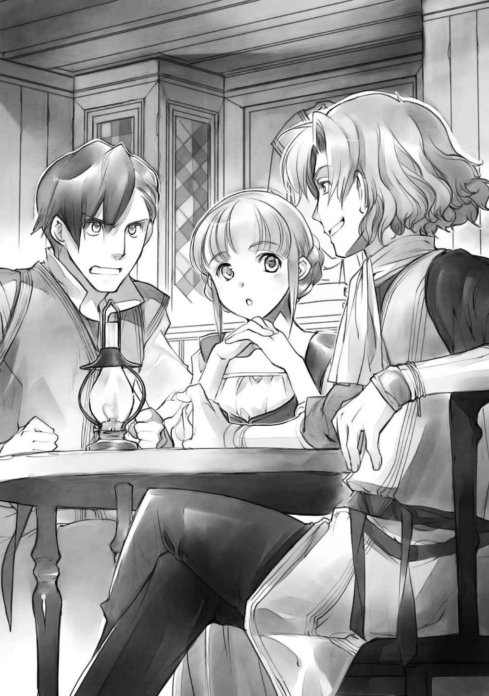
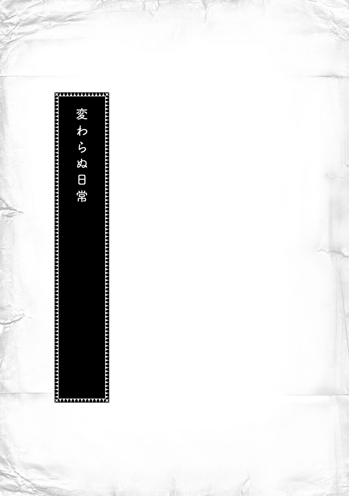

| 【合本版 第一部】本好きの下剋上（全3巻） 本好きの下剋上（合本版） (TOブックスラノベ) | |
| 香月美夜 | |
| TOブックス (2017) | |
※本電子書籍は「本好きの下剋上 〜司書になるためには手段を選んでいられません〜 第一部 兵士の娘」１〜３巻を１冊にまとめた合本版です。
ＣＯＮＴＥＮＴＳ
本好きの下剋上 〜司書になるためには手段を選んでいられません〜 第一部 兵士の娘Ｉ
本好きの下剋上 〜司書になるためには手段を選んでいられません〜 第一部 兵士の娘Ⅱ
本好きの下剋上 〜司書になるためには手段を選んでいられません〜 第一部 兵士の娘Ⅲ
このコンテンツは『本好きの下剋上 〜司書になるためには手段を選んでいられません〜 第一部 兵士の娘』１〜３巻を収録しています。
イラスト：椎名 優 You Shiina
デザイン：ヴェイア Veia
マップ制作：藤城 陽 Yoh Fujishiro


プロローグ
心理学、宗教、歴史、地理、教育学、民俗学、数学、物理、地学、化学、生物学、芸術、体育、言語、物語......人類の知識がぎっちり詰め込まれた本を心の底から愛している。
様々な知識が一冊にまとめられている本を読むと、とても得をした気分になれるし、自分がこの目で見たことがない世界を、本屋や図書館に並ぶ写真集を通して見るのも、世界が広がっていくようで陶酔できる。
外国の古い物語だって、違う時代の、違う国の風習が垣間見えて趣深いし、あらゆる分野において歴史があり、それを紐解いていけば、時間を忘れるなんていつものことである。
麗乃は、図書館の古い本が集められている書庫の、古い本独特の少々
もちろん、新しい紙とインクの匂いもたまらない。そこに何が書かれているのか、新しい知識があるか、考えるだけで楽しくなれる。
何より、麗乃は文字を目で追っていないと落ち着かない。お風呂にもトイレにも移動中にも、麗乃が生きていくためには本が手放せないのだ。
幼い頃から大学卒業間際の今まで、そんな生活をしてきた麗乃を知る周囲の者達は、麗乃のことを本好きの変人と呼ぶ。生活に支障をきたすレベルの本好きだと言う。
けれど、麗乃は他人に何と言われようと気にしない。本があれば、それで幸せなのだ。
排気ガスの匂いをまき散らしながら、大きなトラックが麗乃の横を走っていった。
ぶわっと生温かい風が立って、麗乃の前髪を揺らす。麗乃は、前髪が揺れたことは気にしない。だが、本のページが勝手に
「麗乃、危ないからもうちょっとこっちに寄れ」
「ん〜」
視界に映る文字を目で追いながら、麗乃は眼鏡をグッと押し上げて生返事をする。その後で、前髪が本を読むのに邪魔になるほどに乱れてしまったことに気付いて、ささっと指先で整えた。
仕方なさそうな溜息が降ってきて、ぐいっと強引に腕を引かれた麗乃は眉根を寄せる。
「
「お前さ、痛いって文句を言うけど、トラックに轢かれて死ぬよりマシだろ？」
「そうだね。わたし、本に埋もれて死ぬって決めてるから」
麗乃は一生を本に囲まれて生きていきたいと思っている。本が傷まないように日光の当たらない、しかし、風通し良く作られた書庫で、できることなら一生過ごしたい。
本を読むことにできる限りの時間を費やすことで、肌が青白くて薄気味悪いと言われようと、運動不足で不健康と言われようと、食事を忘れて叱られようと、多分、一生本を手放すことなどないと思う。
どうせ死ぬなら、本に埋もれて死にたい。畳の上で往生するより、本に埋もれて死ぬ方がよほど幸せな死に方だ。麗乃は本気でそう思っている。
「道を歩く時くらいは本を読むなって、いつも言ってるじゃないか。今みたいに本を読みながら歩いていたら、確実に事故死だ。もっと俺に感謝しろ」
「いつも聞いてるよ。感謝感激〜」
「全く感謝してねぇだろ？」
「してるって。本を読みながらお遣いに行けるのは修ちゃんのおかげ。でも、わたし、死んだら絶対に神様にお願いして、また生まれ変わって本を読むんだ。いいでしょ？ うふふん」
「そう都合良くいくか、バカ」
そんな話をしながら、麗乃は家に帰りつく。修も隣家の自宅ではなく、麗乃の家に入ってくる。幼馴染で麗乃の家と同じ母子家庭のため、昔から兄弟のように育ってきた。今でも修は「ただいま」と言うし、麗乃の母は「おかえり」と答える。
「お母さん、これ、頼まれてたの。書庫にいるから夕飯になったら呼んで」
「はい、はい。修ちゃんは夕飯どうする？ お母さんの今日の予定は？」
「仕事だって言ってたから夕飯は一緒で。麗乃、ゲーム借りるぞ」
「うん、勝手にしてて」
麗乃はスタスタと幼い頃に亡くなった父親の書庫に向かいながら、修に向かって声だけを張り上げると、書庫のドアを開けて電気を点けた。
書庫には空気を入れ替えるための窓はあるけれど、本が日に焼けるのを嫌って、きっちりと遮光カーテンが閉められている。たくさんの本棚にぎっしりの本、そして、麗乃が増やし続けているせいで本棚に入らなくなっている本が積み上げられている机がある。
本から目を離さないまま、麗乃は慣れた動作で椅子に座ると、そのまま本を読み続けた。
突然ぐらりと視界が揺れる。
あぁ、地震だ、と思いながら、麗乃は変わらず本を読んでいた。
いつもと違って大きい揺れで、さすがに本が読みにくい。むっと眉根を寄せて、麗乃が地震に対して苛立ちを感じながら視線を上げると、視界いっぱいに本が飛び込んできた。
「ひわっ!? 」
傾いた本棚から
新しい生活
......熱い、苦しい、もう嫌だよぉ......。
わたしの頭の中に直接響くように、幼い声が不満と苦しみを訴えてきた。
......そんなことを言われても、わたしにどうしろと？
そんな風に思っているうちに、幼い声は段々小さくなっていく。
あれ？ 子供の声が聞こえなくなったかな、と思った瞬間、わたしを包んでいた膜のようなものが弾けて消えて、意識がゆっくりと浮上していくのを感じた。同時に、インフルエンザにでもかかったような高熱と関節の痛みが全身に広がっていくのがわかり、わたしは先程の幼い声に「確かに、熱くて苦しいね。わたしも嫌だ」と同意する。
けれど、幼い声からの返事はなかった。
あまりに熱くて、わたしは布団の冷たい部分を探して寝返りを打とうとした。熱のせいか、体が自分の思った通りに動かない。それでも、何とか移動しようと、もそもそと体を動かすと、カサカサと自分の体の下で紙や草のようなものが擦れるような音がした。
「......何の音？」
熱のせいでかすれているはずなのに、子供のような高い声が自分の口から出た。どう考えても聞き慣れた自分の声ではなくて、さっき脳内に響いてきた幼い声に酷似している気がする。
高熱で全身がだるいので寝ていたいが、馴染みのない布団の感触と自分のものとは思えない高い声をこれ以上無視することもできず、わたしはゆっくりと重い瞼を開けた。結構高い熱があるようで、わたしの視界は潤んで歪んでいる。涙が眼鏡の役割でもしているようで、普段の視界よりずっと鮮明に見えた。
「へ？」
何故か視界に映ったのは、不健康そうな色合いの痩せこけた細くて小さな子供の手だった。おかしい。記憶にあるわたしの手はきちんと大人の手だった。こんな栄養失調のような小さな子供の手ではない。
握ったり、開いたり、自分の意思で動く子供の手。自分の意思で動かせる体が見慣れた自分のものではない。あまりの衝撃に口の中が干上がったようにからからになっていく。
「......何、これ？」
潤んだ目から涙が零れないように気を付けながら、眼球だけで周りを見回せば、明らかに自分が生まれ育った環境でないことだけはすぐにわかった。
寝かされているベッドは固くて、マットレスがない。そして、異様にチクチクする素材がクッション代わりに使われている。上掛けとして掛けられている薄汚れた布からは変な臭いもするし、ノミやダニがいるのか、体のあちこちが痒い。
「ちょっと、待って......ここ、どこ？」
わたしの記憶の最後にあるのは大量の本に押しつぶされたことだが、何とか救出されたというわけでもないみたいだ。少なくとも、こんな薄汚れた布に患者を寝かせる不潔な病院は、わたしの知る限り、日本には存在しないはずだ。わけがわからない。
「間違いなく......死んだ、んだよね？」
多分、死んだのだろう。大量の本に潰されて。あの揺れならば、せいぜい震度は三か四だ。死亡者が出るような地震ではなかった。きっとテレビなんかで報道されたに違いない。「卒業間近の女子大学生が自宅で本棚に押しつぶされて死亡しました」みたいに。
......恥ずかしい！ 一度は物理的に、一度は社会的に、わたしは二度死んだ。
恥ずかしさのあまりゴロゴロとベッドを転がろうとして、頭の痛さと体の重さに断念しつつ、わたしは小さな手で自分の頭を抱えた。
「いやいやいや、確かにわたしは思ってたよ。どうせ死ぬなら、本に埋もれて死にたいって。畳の上で往生するより、本に埋もれて死ぬ方がよほど幸せな死に方だって」
でも、ちょっと違う。本に囲まれて、本を読みながら、幸せに一生を終えるようなイメージだった。地震で押しつぶされて死ぬというのは、正直予想外だ。
「ひどい。やっと就職が決まったところだったのに。おおぅ、大学図書館......」
就職難のこの時代に大学図書館への就職が決まったばかりだった。本に囲まれているだけで、幸せなわたしが努力と根性で試験と面接を勝ち抜き、やっとの思いで勝ち取った職場だ。他の仕事より本に囲まれている時間が圧倒的に長いし、古い本や資料もたっぷりの理想的な職場だった。
わたしを一番心配していたお母さんが「よかった。麗乃が人並みに就職できて、本当によかった」って、泣いて喜んでくれたのに何ということだろう。
それと同時にふと脳裏に浮かんだのは、わたしが死んだことで泣くお母さんの姿だ。もう二度と会えないお母さんはきっと怒っているはずだ。「だから、本の数を減らせって何度も何度も言ったのに！」と、泣いて怒っているに違いない。
「お母さん、ごめん......」
だるくて重い手を持ち上げて、わたしは目尻の涙を拭った。それから、ずっしりする頭を上げて、わたしは熱のある体をゆっくりと起こす。少しでも情報が欲しくて、汗でべったりと髪が首元に張り付いているのにも構わず、部屋の中を見回した。
この部屋の中には、ベッドらしき台が二つと、その上にかけられた薄汚れた上掛けと、物を入れておくための木箱がいくつかあるだけだった。悲しいことに本棚が見当たらない。
「本、ないし......死に際に変な夢でも見てるってこと......かな？」
わたしの望み通りに神様が生まれ変わらせてくれたならば、ここには本があるはずだ。わたしの望みは「生まれ変わっても本を読みたい」だったのだから。
高熱でぼんやりとする頭で悩みつつ、わたしはぼんやりと
すると、わたしの動く音に気付いたのか、声が聞こえたのか、ドアが開いたままの出入り口から一人の女性が姿を現した。三角巾のようなものを頭にした二十代後半くらいの美人だ。顔立ちは美人なのだが、小汚い。街中で見かけたら、遠巻きに見るレベルで汚れている。
......どこの誰だか知らないけど、服も顔も洗って、清潔で小綺麗にすればいいのに。せっかくの美人がもったいない。
「マイン、％＆＄＃＋＠＊＋＃％？」
「ぃあっ！」
意味がわからない女性の言葉を耳にすると同時に、わたしのものではないけれど、自分の記憶だと思えるものが堰を切ったように流れ込んできた。
数回瞬きするくらいの時間にマインという女の子の数年分の記憶が押し込まれ、脳味噌がぐちゃぐちゃに掻き回されるような不快感に、わたしは思わず頭を押さえる。
「マイン、大丈夫？」
違う、わたしはマインじゃない、と反論したくてもできない頭痛の中、わたしは貧弱な子供の手と薄汚れた見知らぬ部屋が見知ったものになっているような感覚に戦慄した。先程まではわからなかった言葉がわかるようになっていることに鳥肌が立った。大量の情報をいきなり受け取った頭はひどい混乱状態なのに、目に映る全てのものが、お前はもう麗乃じゃなくてマインだ、と訴えかけてきている。
「マイン、マイン？」
心配そうに呼びかけてくる女性は、わたしにとっては知らない他人だ。それなのに、何故か知っていて、何となく慕わしい気持ちにさえなっている。
その慕わしさが自分の感覚ではないようで気持ちが悪い。目の前の女性を母親だと認識していても素直に受け入れることなどすぐにはできない。
慕わしさと反発感がせめぎ合う中、女性はずっとわたしに「マイン」と呼びかけている。
「......母さん」
見知らぬ他人のはずの女性を、当たり前のようにそう呼んだ時、わたしは麗乃ではなく、マインになってしまった。
「大丈夫？ 頭が痛そうね」
記憶の中には存在して、知っているけど知らない母さんに何となく触れられたくなくて、伸ばされた手を避けるように、わたしは臭い布団に寝転がる。そのまま目を閉じることで、接触を拒否した。
「......まだ、頭痛い。寝たい」
「そう、ゆっくり休みなさい」
二つのベッドがぎゅうぎゅうに並べられた寝室から母さんが出ていくのを待って、わたしは何とか現状を把握しようと考える。高熱で頭がくらくらしているが、こんなに混乱したままでは、おとなしく寝ていられない。どうしてこんな状況になっているのか、全くわからないのだ。
でも、こうなった原因を考えるより、これから先どうするかを考える方が大事だ。自分にわかる限りのマインの記憶から、周囲の状況を少しでも理解しないと、いきなり家族に不審がられてしまう。わたしはマインの記憶の数々をゆっくりと
何とか必死に思い返してみるけれど、マインの記憶はまだあまり言葉が発達していない幼女の記憶なので、父親や母親の言葉もはっきりと理解できない、意味のわからないものが多い。必然的に使える
「うわぁ、ちょっと、これ、どうするよ......」
幼いマインの視線で見た記憶のうち確信が持てたのは、四人家族で、母エーファの他に姉のトゥーリと父ギュンターがいること。父さんは兵士のような職業についていること。
何よりわたしにとって衝撃だったのは、ここがわたしの知っている世界ではないことだ。
記憶の中に、三角巾を取った母さんの姿もあったのだが、髪の色がなんと翡翠のような緑だった。染めているような不自然な色ではなくて、本当に緑。髪を引っ張って、かつらじゃないか確認してしまいたくなる色だ。
ちなみに、トゥーリの髪は青緑で、父さんの髪は青。自分の髪が紺色だ。自分の髪が見慣れた黒に近くて良かったと思うべきか、黒じゃないことを嘆くべきか。
どうやら、この家の中には鏡がないようで、いくら記憶を探っても、髪の色以外の自分の詳しい容姿がわからない。両親の顔立ちとトゥーリの顔立ちから察する限りでは、元はそれほど悪くないと思う。実際、本さえ読めれば、生活する上で自分の顔立ちなんて、それほど問題ではない。麗乃だった時も大した顔ではなかったので、可愛くないと困るなんて思わない。
「ハァ、それにつけても本が読みたい。読んだら熱なんて、ぱぱーっと下がる気がする」
どんな環境でも、本さえあれば我慢できると思う。我慢する。だから、本を。わたしに本を。
わたしは軽く頭に指を当てて、記憶の中で本を探した。さて、一体家の中のどこに本棚があるのだろうか。
「マイン、起きてる？」
思考を邪魔するように、七歳くらいの幼女が足音も軽く入ってきた。姉のトゥーリだ。
無造作に三つ編みにした青緑の髪は大した手入れをされていないのがすぐにわかるぱさつき具合だ。母さんと同じで薄汚れた顔も洗って欲しい。可愛い顔立ちなのにもったいない。
わたしがついついそう思ってしまうのは、外国からは病的なほど清潔好きと言われる日本人の視点で見てしまうからだろうか。
だが、そんなことはどうでもいい。世の中にはもっと大事なものがある。今、この状況で一番大事で最優先にしなければならないのは一つだけだ。
「トゥーリ、『本』持ってきて？」
字が読めそうな年頃の姉もいるのだから、家の中にはきっと絵本の十冊くらいはあるはずだ。病気で寝ていても本くらいは読める。せっかく生まれ変わったのだもの。異世界の本を堪能することが何より大事に決まっている。
ところが、可愛い妹のおねだりに、トゥーリはきょとんとした顔で首を傾げた。
「え？『本』って何？」
「何って......えーと、『絵』や『字』が『書かれた』もので......」
「マイン、何言ってるかわからないよ？ ちゃんとしゃべって？」
「だから、『本』！『絵本』がほしいの」
「それ、何？ わからないよ？」
どうやらマインの記憶にない言葉は日本語の発音になってしまうようで、わたしがどんなに一生懸命に説明しても、トゥーリは不思議そうに首を傾げるだけだった。
「あぁ、もう！『翻訳機能、仕事しろぉっ』！」
「マイン、なんで怒るの？」
「怒ってないよ。頭が痛いだけ」
まずは、人の声に耳を澄まして、少しでも多くの言葉を覚えることに全力を尽くさなければならないようだ。幼い子供であるマインの柔軟な脳味噌に、大学卒業した二十二歳のわたしの理性と知性が加われば、言葉を覚えるのは簡単だろう。簡単だったらいいな。
麗乃だった時も、他国の本を読むためには辞書を片手に努力した。あの頃と同じようにこの世界の本を読むために言葉を覚えるのだと思えば、苦労だとは思わない。わたしの本にかける情熱と愛は、周囲の人が引くレベルだった。
「......まだ熱があるから怒るの？」
熱を計るつもりなのだろう、トゥーリの汚い手が自分に向かって伸びてくる。わたしは思わずその手をはしっとつかんだ。
「まだ熱いから、うつるよ？」
「そうだね。気を付ける」
セーフ。
相手を心配しているように見せかけて、自分にとっては嫌なことから逃げる。大人ならではのテクニックでわたしはトゥーリの汚い手で触られることを回避した。清潔にしてくれたら良いお姉ちゃんだが、今は触られたくない。そう思った直後、わたしは薄汚れている自分の腕を見下ろして溜息を吐いた。
「あぁ、『お風呂』に入りたい。頭がかゆいよ」
そう呟いた瞬間、マインの記憶が教えてくれる。ごくたまに
......のぉぉっ！ それ、お風呂って言わない。ついでに、トイレじゃなくて、おまる!? 勘弁してよ。......わたし、生活に不自由しないところに生まれ変わりたかったよ、神様。
あまりの環境にわたしは本気で泣きたくなった。麗乃だった時は、ごく普通の一般家庭だったのだ。お風呂にもトイレにも服にも食べ物にも本にも不自由したことがないのに、これではずいぶんと生活環境に差がある。
......日本は良かった。当たり前に良いものが
いくら懐かしく思っても、わたしはここで生きていくしかない。だったら、嘆いていないで、何とかして家族には衛生観念を叩きこむしかない。
記憶にある限りでは、どうやらマインは体が弱い子で、よく熱を出して寝込んでいたらしい。ベッドでの記憶が多すぎるのだ。環境の改善をしなければ、自分が生きていけないと思う。病気になっても、この環境の生活レベルから想像する医療行為にはお世話になりたくない。
......部屋の掃除とお風呂は急いで何とかしなきゃ。
日本の家電を使うお手軽な家事でさえ面倒で、お母さんのお手伝いより読書に時間を使いたい駄目人間だったわたしが、ここの生活に馴染めるだろうか。
そんなことを考えてしまって、わたしはふるふると頭を振った。
......あ〜、ダメダメ。せっかく生まれ変わったんだから、もっとポジティブに考えなきゃ。麗乃時代にはなかった本が読めるかもね、ラッキー。......よし、テンション上がってきた。
心置きなく本を読むためには、まずは体調を整えなければならない。体を休めるために、わたしはゆっくりと目を閉じていく。意識が暗闇に落ちながら、考えることは一つだけ。
......何でもいいから、早く本が読みたい。 あぁ、神様。哀れなわたしに本をください！ ついでと言っては何ですが、本がたっぷり詰まった図書館も欲しいです。
おうち探索
わたしがマインになってから三日がたった。この三日間は本当に大変だった。涙なしには語れない、わたしの壮絶な戦いがあったのだ。
まず、家の中の本を探したくて、こっそり母さんの目を盗んでベッドから降りようとしたら、怒られてベッドに強制送還された。何度か挑戦した結果、全敗。トイレ以外でベッドから降りたら、ベッドに強制送還されるようになってしまった。結局本は探せず仕舞いだ。
そして、唯一わたしが動くことを許されているトイレも、激しい戦いの場だった。
ここのトイレは寝室でおまるを使う。しかも、今までのマインは一人でトイレができなかったみたいで、家族の誰かに見守られながらすることになるのだ。わたしがいくら「一人でできるから見ないで！」と泣き叫んでもダメだった。「漏らしたらどうするの!? 」と怒られる。
人前で漏らすよりは、と泣きながらおまるですれば、トゥーリに「うわぁ、マイン。上手にできるようになったね。もうちょっとしたら一人でできるよ」と褒められた。妹ができるようになったことを喜んでいるのはわかるけれど、わたしのプライドとか尊厳とか
ちなみに、家族も寝室でおまるを使う上に、その中身を窓から外に放り投げる。あり得ない。
着替えも戦いだった。わたしからすると、馴染みの薄い父さんに服を脱がされて着替えさせられるのだ。父さんに服を脱がされるのがすごく恥ずかしくて、「一人でする」と本気で泣きわめいて嫌がったけれど、我儘扱いされるだけだった。あんまりだ。
麗乃時代の父親が早くに亡くなっていたせいで、わたしは父さんとの距離の取り方が全くわからない。マインの記憶からは大好きな父さんでも、わたしにはかなり筋肉質なちょい悪親父にしか見えないのだ。兵士をしている父さんの腕力で押さえられたら、わたしの抵抗なんて、ぷちっと簡単に潰されてしまう。
家族全員に敗北し続けた結果、わたしは乙女心と恥じらいをこの三日間でポイした。わたしは幼女。家族に世話をされるのは仕方ない。
......そう思わなきゃ生きていけないんだよっ！
諦めがつくまでは、もう耐えられない！ こんな生活！ と思っていたけれど、どうしようもない。今のわたしのような幼い病人がいきなり家を飛び出したところで、自分の望む生活なんてできるわけがない。トイレとお風呂を探して家出して、上から降ってくる汚物に悲鳴を上げながら、逃げ惑って野垂れ死にするのが関の山だ。
一見すると完全敗北のようだが、そうではない。わたしにも小さな勝利はある。
とりあえず、お風呂に入れないことに我慢できなくなったわたしは、トゥーリに頼んで、毎日体を温かい布で拭いてもらうようにしたのだ。着替えで服を脱がされるのだ。一歩進んで、拭いてもらうことに何の抵抗があろうか。
毎日トゥーリにはものすごく変な顔をされているけれど、わたしはかなりすっきりした。初日は
それから、もう一つ手に入れたものがある。
わたしはなんと髪を結うための
まぁ、わたしが最初に目を付けた木の棒が、トゥーリの人形の足で、「折っていい？」と聞いて、泣かれかけたことについては、悪いことをしたと思っている。でも、父さんが木を削って、母さんが服を作ったというトゥーリの大事な人形は、よく見ると藁人形と似た感じだが、一見しただけでは何かわからなかったのだ。
そして、簪で髪をまとめようと思ったら、「髪を全部結い上げるのは大人だけだよ」とトゥーリに指摘された。仕方がないのでハーフアップにしたが、文化の違いって大きい。
恥ずかしい生活にも諦めがついたわけだし、さっさと回復して、生活環境を整えるしかない。
そのためにも本だ。わたしの生活環境を整える第一歩に本がいる。本さえあれば、いつまでもベッドに転がっていられるし、色んな不愉快も我慢できると思う。というか、我慢する。
そんなわけで、今日こそは、家の中の探索をすることに決めた。あまりにも長いあいだ本を読んでいないので、禁断症状が出そうになっている。そろそろ「本だ。本を寄こせ、うがー！」と、吠えたり、唸ったり、泣いたりしそうだ。
「マイン、寝てる？」
ひょこっとトゥーリがドアを開けて、顔を出した。わたしがおとなしくベッドで寝ころんでいるのを見て、満足そうに一つ頷く。この三日間、目が覚める度に、ベッドから抜け出し、本を探して家の中をうろつこうとしてはぶっ倒れるので、母さんはもちろん、看病役を任されたトゥーリからも完全に警戒されている。
昼間は仕事に出かける母さんから子守りを頼まれているトゥーリはわたしをベッドから出さないように必死だ。いくら逃げようとしても小柄なわたしの体がトゥーリに勝てるはずがない。
「いつか絶対に『下剋上』してやる」
「マイン、何？」
「......ん？ 大きくなりたいなって」
やんわりとオブラートに包んだわたしの言葉の真意に気付くはずもなく、トゥーリは困ったように笑った。
「マインが病気しなくなったら、大きくなれるよ。病気ばっかりだから、ご飯も食べられなくて、五歳なのに三歳に間違われることもあるんだから」
「トゥーリは大きいの？」
「わたしは六歳だけど、七歳や八歳に間違われることが多いから、大きい方じゃない？」
年子でこの体格差なのか。ちょっと下剋上は難しいかもしれない。でも、わたしは絶対に諦めない。食事と衛生環境に気を付けて、健康になるのだ。
「母さんがお仕事に行ったから、お皿洗ってくるね。絶対にベッドから出ちゃダメだよ。寝てないと病気は治らないし、治らなかったら大きくなれないからね」
ベッドを抜け出す前科持ちのため、わたしは昨夜からトゥーリの警戒心を解くためにおとなしい良い子を演じている。トゥーリが出かける時間を静かに待っているのだ。
「じゃあ、行ってくるね。いいこで待ってて」
「はぁい」
素直でいい返事をすると、トゥーリがバタンと寝室のドアを閉めた。
......ふっふっふ......。さぁ、早く行け。
そのまま、トゥーリが食器の入った籠を抱えて外に行くのをわたしは静かに待った。どこで洗っているのか知らないが、いつも三十分くらい外に出かけるのだ。どうやら各家庭に水道はないようで、多分共用の水場があるのだと思う。
ガチャンと鍵を閉める音がして、階段を下りていくトゥーリの足音が小さくなっていく。
......よぉし、探すぞ。
トゥーリという姉がいるので、家中探せばどこかに絵本の十冊くらいあるはずだ。あるに違いない。本がない家なんてあり得ない。本があっても、今のわたしでは字が読めないだろうけれど、絵を見ながら想像して、文字を推測するくらいはできるだろう。
トゥーリの足音が完全に聞こえなくなったのを確認してから、わたしはそっとベッドから足を下ろした。ざりざりと砂や土の感触がして、少しばかり顔をしかめる。家族が土足で歩く床の上を裸足で歩くのは汚くて嫌だが、わたしが歩き回らないようにサボのような木靴をトゥーリに取り上げられてしまった以上、仕方ない。
......足が汚れることより本を探すことが優先だもんね。
熱が下がりきっていないわたしが閉じ込められている寝室のベッドの横に置かれている籠の中には木や藁で作られた子供のおもちゃが入っているが、本はない。
「ここにあれば、話は早かったんだけど......」
一歩足を動かすたびに、足の裏が小さな砂でじゃりじゃりする。ここは家の中まで土足で上がる生活習慣のようだから、文句を言ってもどうしようもないとわかっている。わかっていても、言わずにはいられない。「誰か
もちろん、誰もいないので返事もないし、箒や雑巾も出てこない。
「むぅ、これはいきなり難関じゃない？」
わたしにとって、おうち探検の第一関門は寝室のドアだった。必死に背伸びすれば、手が届かないわけではないが、ギリギリ届くだけの高さにあるノブを回すのは予想以上に困難だった。
踏み台になるものを探して部屋を見回し、わたしは服が入っている木箱に目を付けた。
「ふんぬぅ......」
麗乃時代の体だったら簡単に動かせただろう木箱が、今の小さな手では押しても引いてもびくともしない。せっかくの小さな体格なので、おもちゃの入っている籠をひっくり返して乗ることも考えたが、体重によっては踏み抜きそうだ。
「早く大きくならなきゃ、この体じゃできないことが多すぎるよ」
寝室の中を見回して、自分に動かせるものを色々考えた結果、親の布団を丸めて踏み台にしてみた。自分の布団を土足で歩く床に下ろすのは絶対に嫌だが、この生活環境で普通に生活できる親の布団なら問題ない、きっと。
......ごめんね、父さん、母さん。
本を手に入れるためならば、親に怒られるくらいわたしにとっては大した障害ではないのだ。
「よいしょ」
丸めた布団に乗って背伸びして、全体重をかけて何とかドアノブを回す。ギッと音を立ててドアが開いた。内側に。
「へわっ!? 」
全体重がかかっていたため、勢いよく自分に向かってくるドアで頭を打ちそうになったわたしは、慌てて手を離したが、遅かった。そのままコロンと後ろ向きに倒れ、ゴロンゴロン......ゴン！ と派手な音を立てて、丸めた布団からも転がり落ち、頭を打った。
「いったぁ......」
わたしが頭を押さえながら体を起こすと、一応ドアはちょっとだけ開いていた。頭の痛みは名誉の負傷だ。
わたしは勢いよく立ちあがって、ドアの隙間に手を突っ込むと力一杯開け放った。両親の布団が床の上をズザザザとスライディングして、床の一部が綺麗になった気がしたが、見なかったことにする。ここまで汚すつもりはなかった。
......マジでごめんなさい。
「あ、台所だ」
寝室を出ると、そこは台所だった。キッチンなんておしゃれなところではない。お勝手とか炊事場と言う方がしっくりくる場所だ。
部屋の中央にはそれほど大きくはないテーブルと三本脚の椅子が二つ。椅子としても使っているのだろう木箱が一つ。右側には食器棚なのだろう、取っ手のついた木の戸棚がある。
寝室に近い方の壁際にはかまどがあり、金属製の鍋やおたま、フライパンらしきものが壁に打ち付けられた釘に引っ掛けられている。壁から壁に紐が張られ、そこには薄汚れた雑巾らしき布が引っかけられている。あれで拭いたら余計に汚れそうだ。
「うひぃ。この体が病弱なのも仕方ないような気がしてきた」
かまどと反対の隅には大きな水瓶と水が流せそうな流し台っぽいものがあった。やはり水道はないようだ。そして、大きな籠があり、芋や玉ねぎっぽい食材が積まれている。色や形が見慣れないものもたくさんあるので、仮にわたしが芋っぽいと思っても別物の可能性はある。
「うん？ これって......アボカドっぽい？ 油、取れるかな？」
わたしは籠の中の食材を見て、一つの野菜に目を付けた。これから油が取れれば、かゆい頭を何とかできるかもしれない。
......お母さん、ありがとう。わたし、ここで生きていけそう。
戦利品の発見に気分を高揚させながら、部屋を見回せば、寝室以外に二つのドアがあった。
「うふふ〜ん、どっちのドアが正解かな？」
この台所はどう見ても本棚がありそうな雰囲気ではない。わたしは台所からもう一つ別の部屋に繋がるドアが半開きになっているのを見つけたので、ぐいっと開けてみる。
「うーん、物置？ はずれだね」
何に使うものなのか、わたしには理解できないものがごちゃごちゃと詰め込まれた部屋だった。一応棚に置かれているが、雑然とした印象で、本棚のある部屋ではなさそうだ。
諦めて、わたしはもう一つのドアを開けようとした。ガチッと音がして鍵が閉まっているのがわかる。何度かガチャガチャ回してみたが、一向に開く気配はない。
「......あれ？ もしかして、トゥーリが出ていったドア？ え？ あたりはなし？」
これが外に繋がるドアならば、この家は風呂なし、トイレなし、水道なし、本棚なしのないない尽くしだ。どう見ても他に部屋はない。
......ちょっと、神様、わたしに何の恨みが？
麗乃時代、「生まれ変わっても本が読みたい」と神様にお願いしたはずだ。生まれ変わった先で日本人としての記憶と感覚、常識を持ちながら、風呂もトイレも水道も自分の家にないなんて予定ではなかった。本が周りにあって当然の環境に生まれ変わると信じていた。
「......もしかして、本って高い？」
わたしの知る歴史でも、印刷機で大量生産できるようになるまで、本は非常に高価なものだった。上流階級でなければ本を読む機会などほとんどなかったはずだ。麗乃だった時の、出産祝いに役所から絵本がプレゼントされるような環境はもうないのかもしれない。
「うぅ、仕方ない。本がないなら、まずは、文字を探すところから始めよう」
本がなくても、字の勉強が全くできないわけではない。折り込み広告、新聞紙、回覧板、説明書、カレンダーなど、字が書かれているものはいくらでもあった。少なくとも、日本では。
「......ない。全然ないっ！ 一つもない！」
わたしは台所の食器棚や物置の棚の中を次々と探して歩いたが、この家の中には本はもちろん、文字のついているものが全く見当たらなかった。文字もなければ、紙も見当たらない。
「どういうことなの？」
一気に熱が上がったように、頭が痛みだした。心臓の鼓動がバクバクと音を立て、鼓膜がキーンと悲鳴を上げる。張りつめていた糸が切れたように、わたしはその場にうずくまった。
目の奥が熱い。
本に潰されて死んだのは、まぁ、仕方ない。本に埋もれて死にたいという願いがちょっとずれただけだ。そして、生まれ変わることを望んだのも、わたし。
......でもね、ここには本がないよ？ 文字もないよ？ 紙がないよ？ わたし、本当にここで生きていくの？ 何して生きていくの？
ぼたりと涙が落ちた。
本が存在しない世界なんて、わたしの頭にはこれっぽっちも存在しなかった。ここでマインとして生きるための意味が見出せず、自分の中が空っぽになったように感じられた。
涙が止まらない。
「マイン！ なんで寝てないの？ 靴もないのにベッドから降りちゃダメでしょ！」
いつの間にか帰ってきたトゥーリが、台所の床にへたりこんでいるわたしを見つけて、青い目を吊り上げて、声を張り上げた。
「......トゥーリ、『本』がない」
「どうしたの？ どこが痛いの？」
「トゥーリ、わたし、『本』が欲しい。『本』が読みたい。こんなに『本』が読みたいのに、『本』がないんだよ」
呆然としたままで、ぼろぼろぼろぼろと涙を零すわたしにトゥーリが心配そうな声をかけてくる。けれど、本がないことに何の疑問も抱いていないトゥーリにいくら自分の気持ちを訴えても、わかってもらえるはずがない。
......ねぇ、誰に言えば、わかってくれるの？ どこに行けば本があるの？ 誰か教えてよ。
街中探索
昨日は泣いて泣いて泣きまくった。ご飯だと言われても、両親の布団を床に落としたことで怒られても、大した反応ができずに泣き続けた。
そして、今朝、泣きすぎたわたしの目は腫れて熱くなっているし、頭もガンガン痛んでいる。
けれど、熱は完全に下がったようで、体のだるさは全くない。ついでに、大泣きしたことで気分的にもかなりすっきりしていた。朝食の時の家族からは何となく腫れものに触るような扱いだったけれど。
「熱は下がったわね」
母さんが洗い物を終えたばかりの冷たい手でわたしのおでこに触れた。ついでに、腫れた目の辺りを押さえてくれる。冷たくて、非常に気持ちいい。
「マインが元気なら、今日は市が立つ日だから、一緒に買い物へ行かない？」
......あれ？ 確か、「染物の仕事は今が一番忙しいから、マインが高熱出しても仕事に行かなきゃいけない」って、言ってなかったっけ？
首を傾げるわたしを見て、母さんは悲しそうに目を伏せた。
「トゥーリもマインの看病ばかりじゃなくて、少しくらい外に行かせてあげないと可哀想だし、昨日はマインが泣きやまなくて、トゥーリが困り果ててたし、マインが寂しがって泣いてるんじゃないかって言ってたから、周りの人達に無理言って休ませてもらったのよ」
その言葉を聞いたわたしは、うひぃっと息を呑んだ。人目もはばからず、一日中泣き続けるなんて、穴を掘って埋まりたい醜態だ。冷静になってしまうと、自分のやったことがあまりにも恥ずかしい。
「ご、ごめん、なさい」
「マインが謝ることじゃないでしょ。病気の時は心細いものだもの」
母さんは優しく頭を撫でながら慰めてくれたが、優しい分、罪悪感に押しつぶされそうだ。
......ごめんなさい。本がないことに絶望して泣いたけど、母さんがいなくて寂しいとか思ったことありませんでした。そんなに心配かけて世話かけてるのに、トゥーリがさっさと出かけてくれないと本が探せない、なんて考えてました。ホントごめんなさい。
「トゥーリは皆と一緒に近くの森へ行くけど、病み上がりのマインはまだ無理だからね。母さんと買い物に行こうか？」
「うん！」
「あら、急に元気になったじゃない」
やっぱり母さんといられるのが嬉しいのね、なんて母さんが嬉しそうに笑っているので、わたしも母さんに向けてにっこりと笑顔を送っておく。
「ふふっ、楽しみなんだもん」
母さんが嬉しそうなので、わざわざ誤解を解くつもりなんてないけれど、外に行けば本くらい見つかるだろうと考えたら、気分が一気に上昇してきただけだ。
今日は買い物について行って、本を買ってもらうのだ。分厚い本じゃなくていい。とりあえず、ちょっと字を覚えるための本が欲しい。この際、子供向けの問題集でもいい。本がなければ、あいうえお表とか、アルファベット表みたいなものでもいい。
きっと「本があれば寂しくない。ずっとおうちでお留守番してる」なんて可愛く言って、病弱な娘がおねだりすれば絵本の一冊くらい買ってくれるだろう。うふふん、楽しみ。
「じゃあ、母さん。行ってきます」
トゥーリが満面の笑みを浮かべて、ドアから寝室を覗きこんできた。今日は母さんが休みなので、トゥーリもわたしの子守りから解放されるのだ。
「皆と一緒に行くのよ。気を付けてね」
「はーい」
トゥーリは大きな籠を背負って、弾むような足取りで駆けていく。まるで遊びに行くように楽しそうな雰囲気だが、これもれっきとしたお手伝い。薪拾いだ。ついでに、木の実や茸も探してくるらしい。安くて美味しい食卓になるかどうかは、トゥーリにかかっている。
......頑張れ、トゥーリ！ わたしの食生活に彩りを！
ないない尽くしの世界にはどうやら学校もないようで、子供達は皆手伝いか仕事をしているらしい。少なくともわたしの見聞きした記憶の中には学校に相当するものがない。トゥーリより少し年かさの子供は、仕事の見習いを始めるそうだ。
できることなら、わたしは司書見習いか、本屋見習いになりたい。今日の外出はそのための情報集めの場でもある。本屋の位置を確認して、店の人と仲良くなって、見習いになるのだ。
「じゃあ、マイン。わたし達も買い物に行きましょうか」
わたしがマインになってから、初めてのおでかけである。初めてパジャマ以外の服を着た。トゥーリのお下がりでぼろぼろだが、生地は厚めの服を何枚か重ね着させられる。動きにくいほどもこもこにされたわたしは、母さんと手を繋いで初めて家の外へと一歩を踏み出した。
......寒ッ！ 狭ッ！ 臭ッ！
石造りの建物なせいか、建物自体から冷たい空気が放出されている感じで、何重にも着こんだ服にも冷たい空気が染み込んでくる。ヒートテックとか、フリースとか、ホッカイロが切実に欲しい。ついでに、臭いを遮り、風邪を防止するためのマスクも欲しい。
「マイン、落ちないように気を付けて」
家から出るとすぐにあったのは、階段だ。三歳児並みの体格しかないわたしには一段下りるのが怖いほど狭くて急な階段が続いている。母さんに手を引かれながら、「よいっしょ......。よいっしょ」とギシッギシッと
何故か、二階から下だけは丈夫で綺麗な石造りの階段だった。
......同じ建物なのに、何、この格差？
むぅっと唇をとがらせていると、やっと外に出られた。一応数えてみたら、七階建ての五階が家だった。正直、病弱で小柄で体力がないわたしには、外に出ること自体がかなり重労働だ。記憶の中でも家にいることが多いのも当たり前だと思う。
今だって、建物を出た時点で既に息が切れている。体力のないわたしは目的地にたどり着く前にぶっ倒れそうだった。
「ぜぇ、ぜぇ......。母さん、息、苦しい。ちょっと待って」
「まだ家を出たところなのに、大丈夫？」
「ちょっと......休憩したら平気」
絶対に本屋に行くのだ、と深呼吸をして呼吸を整えながら、わたしは周囲を見回した。
集合住宅から外に出たところは小さな広場になっていて、そこには共同の井戸があった。井戸の周囲だけ石畳になっていて、何人かのおばさんが喋りながら、洗濯をしているのが見える。トゥーリが皿洗いに来たり、毎朝水瓶の水を汲んだりしているのは、この井戸に違いない。
「母さんが背負ってあげるわ」
いつまでたっても買い物に行けないと思ったのか、母さんがやや強引にわたしを背負うと、スタスタと歩き出した。わたしが知っている物ではないが、おんぶ紐のようなもので、くくりつけられたことから考えても、マインはいつも背負われていたようだ。
井戸のある広場は、集合住宅のような高い建物に四方を囲まれていて、一本だけ表通りに繋がっている道がある。決して広くはない、薄暗い路地を抜けると、大きな通りに出た。
......うわぁ！ まるで、写真集や映画で見たような古いヨーロッパの街みたい。
見慣れない街並みが目の前に広がり、荷馬車やロバのような動物がカッポカッポと石畳を行き交っていて、広い道路の両脇には店が並んでいる。わたしは完全に観光旅行の気分になって、きょろきょろしながら、本屋がないか物色していた。
「母さん、どのお店に行くの？」
「マイン。何を言っているの？ 市場に行くのよ？ お店にはほとんど用がないもの」
母さんの話によると、建物の一階にきちんと構えられている店は、基本的にそこそこお金を持っている人が入るためのもので、貧しい庶民には用がなく、日常の買い物は市場の立つ日にまとめてするらしい。
......うーん、つまり、本屋はこういう建物の一階に並んでいるってことかな？
本屋を探して辺りを見回しながら歩いていると、目印になりそうな一際大きい建物が目に入った。白っぽい石造りで、シンプルなのに威厳があるというか、目立って立派な建物だ。
「あ、お城？」
「あっちは神殿よ？ マインも七歳になれば、洗礼式で行くことになるわ」
......あー、神殿ねぇ。宗教が強制なんて嫌だなぁ。なるべく近付かないようにしようっと。
麗乃時代の感覚で、何となく宗教には距離を置きたくなってしまう。それを口にすることが、この世界で受け入れられることかどうかもわからないので、わたしは口を引き結んだまま、神殿の奥にある壁に視線を向けた。
「母さん、あの壁は？」
「城壁よ。中には領主様のいらっしゃるお城やお貴族様のお屋敷なんかがあるわ。まぁ、わたし達にはあまり関係ないところね」
お城や貴族がいるところというよりは、高い石の壁しか見えなくて監獄っぽい。もしかして、守りを固めたらあんな感じになるのだろうか。
白一色で飾り気のない壁が続く様子は、見栄えを一番に考えた豪華で装飾的な感じでもないし、
......写真集や歴史関係で見た西洋のお城ともちょっと違うんだよね。
「じゃあ、母さん。あっちの壁は？」
「あれは外壁。街を守る壁よ。あっちにある南門の門番がギュンターでしょ？」
マインの記憶から父さんが兵士の仕事をしているのは知っていたが、門番だったのか。
......それにしても、領主様がいるお城があって、城壁や外壁で囲まれているということは、ここは一応都会だと思っていいんだよね？
外壁に囲まれた範囲を見ても、通りを行き交う人波を見ても、それほど大きな街とは思えないが、東京や横浜を基準に考えたらダメだろう。
麗乃時代に本で読んだ城塞都市を基準にすると、驚くほど大都市だということになってしまうが、ここは髪が緑や青の人間が普通にいる世界で、麗乃時代の知識が通用するとは限らない。大都市なのか、中小都市になるのかを今のわたしの知識で勝手に判断するのは危険だ。
......ああぁぁ、街の規模によって本屋の規模も変わるはずなのに、肝心の基準がわからない！
この街って大きいの!? 小さいの!? 教えて、偉い人っ！
「マイン、早く市場に行くわよ。いいものがなくなってしまうわ」
市場へ向かいながら、本屋を探して一生懸命に辺りを見回してみるが、道の両側にある店の看板は基本的にイラストだ。看板は木の板に絵だったり、金属で絵が刻まれたものだったり、とにかく字らしき記号が見当たらない。文字を知らないわたしにもわかりやすくて、本屋を探すにも役立つけれど、嫌な予感に冷や汗が浮かんでくる。
......あれ？ 家どころか、街の中にも字がないんだけど？ 識字率が低い？ もしかすると、文字自体が存在しない？
ふっと頭をよぎった自分の予想に血の気がすぅっと引いていく。文字自体が存在しないという予想はこれまでになかった。文字がなければ、本なんて存在するはずがない。
自分の予想に愕然としているうちに、いつの間にか市場に到着していた。耳に飛び込んでくるざわめきに顔を上げると、活気のある露店がぎっちりと並んで、多くの人々が行き交っているのが見える。日本のお祭りの屋台を
「母さん、あれ！ あの板、何!? 」
商品の上に何やら記号が書かれた板が刺さっている。わたしには読めないけれど、数字か文字が、この世界にもちゃんと存在していた。たったそれだけのことで顔が紅潮してくるくらい、わたしは文字に飢えていたようだ。
「あぁ、値段が書いてあるの。いくらで買えるかわかるようになってるのよ」
「ねぇ、母さん。なんて書いてあるの？」
いきなり元気になったわたしに母さんが驚いているが、そんなことはどうでもいい。
目に入る数字を手当たり次第、母さんに読んでもらえば、頭の中で自分が知っている数字と目の前の記号が繋がっていくのがわかる。
......よしよし、頑張れ！ わたしのシナプス回路！
「じゃあ、これは三十リオン？」
いくつも数字を読んでもらった後、自分で数字を読んで、母さんの反応を窺う。ちゃんと正解だったようで、何度も瞬きしながら母さんが振り返るようにしてわたしを見た。
「こんなにすぐに覚えてしまうなんてすごいわ、マイン」
「んふ〜」
数字らしき記号が十種類だから、計算方法も十進法で間違いないと思う。二進法とか六十進法とかじゃなくてよかった。数字に当たる記号だけ覚えたら計算も問題なくできそうだ。
......あ、もしかして、天才フラグが立ったんじゃない？ 十で神童、十五で才子、二十過ぎればただの人って感じになりそうだけど。
本、入手不可能
「じゃあ、後はお肉ね。そろそろたくさん買って、塩漬けや
野菜や果物を買い終えた母さんが市場の奥の方へと入っていく。肉を売っているのは外壁に近い辺りに並んでいるらしい。
「なんでたくさん買うの？」
「冬支度しなくちゃいけないでしょ？ この時期は、どの農家でも冬が越せるだけの家畜を残して、他を潰すから、一年で一番肉がたくさん売られる時期なのよ。動物達も冬籠りに向けて栄養を付けるから、脂がのった美味しい肉が手に入るわ」
「......えーと、冬って、市場もなくなるものなの？」
「当たり前でしょ？ 冬に採れる野菜なんてほとんどないじゃない。雪もひどいし、市場が開かれる回数はぐっと減るわよ」
考えてみれば当たり前だけれど、全く思いつかなかった。日本だって、ハウス栽培が盛んになるまでは、野菜は季節のものだったし、流通が発達するまでは地産地消が当たり前だった。冷蔵庫や冷凍庫ができる前の新鮮な状態での保存ができなかった時代には、保存食は自分の家で準備する物だったはずだ。つまり、ここでは保存食を作るのは当然ということだ。
正直なところ、自分が役立てるとは思えない。お手伝いがろくにできない足手まといでも、それほど叱られることはない幼女で、ホントによかったと思う。
「......く、臭い」
肉屋が近付くにつれて、異臭が強くなってくる。鼻を押さえているわたしと違って、母さんは当たり前のような顔で歩いていく。信じられない。鼻を押さえて口で息をしていても、口から入りこんでくる空気が臭くて涙目になるのに、何もせずに歩けるなんて。
......肉ってこんなに臭かったっけ？ うぅ、なんか嫌な予感がする。
肉屋が立ち並ぶところにたどり着いた。肉屋にはベーコンやハムの他に、皮を剥かれたばかりと一目でわかる、爪先の部分がまだ動物さんの形を残しているモモ肉も並べられていた。店の奥には血抜きしている動物がぶら下がっていて、白目を剥いて舌がだらーんと出ているうさぎや鳥が並んでいる。
「ひぎゃあああぁぁぁ！」
絵本や写真ならばともかく、自分の肉眼では、完全に解体されて、下手したら一口サイズに切れているパック入りの肉しか見たことがなかったわたしには、この世界の肉屋は刺激が強すぎた。全身に鳥肌が立って、ぶわっと涙がこみあげてくる。目を閉じて見ないようにしたいのに、一度見開いた目はそのまま固定されて、閉じ方を忘れてしまったように動かない。
「マイン!? マイン!? 」
母さんがゆさゆさと体を揺さぶって、わたしのお尻を軽く叩く。
その時、豚が悲鳴を上げながら解体されるところが目に飛び込んできた。周囲には、楽しそうな笑顔の人々が集まっていて、豚が殺されるのを今か今かと待っている。
「ひぅっ！」
小さく悲鳴を上げて、わたしは豚に最後の一撃が加えられるより先に、母さんの背中で気絶した。
何かが口の中に流れ込んできた。結構刺激的でえぐいほどアルコール臭のする液体だ。
自分で意識して飲みこんだものと違って、予期しなかったアルコールが気管に入った。咳き込んで、目を白黒させながら、わたしは飛び起きる。
「ぅえほっ！ げほっ！ ごほっ！」
......酒ですか!? いたいけな幼児に、どぎつい酒飲ませた馬鹿はどこのどいつでございましょうか!? 急性アルコール中毒になったらどうしてくれる!?
くわっと目を開けると酒瓶を抱えた母さんの姿があった。
「マイン、気が付いた？ よかった。気付けが効いたのね」
「こほっ！......母さん？」
ホッとしたような顔で抱きしめてくれるから、ちょっと口に出しにくいけれど、心の中では言っていいだろうか。
......気付けだろうが、何だろうが、幼児にこんな強い酒飲ませないでよ！ それも、ただでさえ病弱な上に、高熱で死にかけてやっと熱が下がったばっかりの病み上がり幼児だよ!?
「さぁ、マイン。気が付いたなら、お肉を買いに行くわよ」
「ぅえっ!? 」
わたしは思わず首をぶるぶると振った。さっきの光景が完全に脳裏に焼き付いている。しばらくは夢に見そうな光景で、思いだすだけで鳥肌が立つのに、そんなところに行きたくない。
「......えぇっと、まだ気持ち悪くて......ここで座ってる。母さん、行ってきて」
「え？ でも......」
渋る母さんを横目に、わたしはくるりと振り向いて、すぐ後ろの店のおばさんに頼みこむ。力ずくで連行される前に、居場所の確保だ。
「あの、おばさん、ここで待たせてください。迷惑かけないように、じっと座ってます」
「小さいのにしっかりしたお嬢ちゃんだねぇ。酒も買ってもらってるし、いいよ。早く買い物を終わらせておいで。気持ち悪いと言ってる子供を連れ回して、また倒れたら大変だろ？」
おそらく母さんが気付け用の酒を買ったのだろう、お酒の屋台のおばさんが、カラカラと笑いながら軽く請け負ってくれる。隣の雑貨屋のおじさんも、気の毒そうにわたしを見て、手招きしてくれた。
「店の中の方に入っていれば、さらっていくような奴もおらんじゃろうし......」
おじさんが裏側に入れてくれたので、わたしは遠慮なく座りこませてもらう。さっき口に入れられた強いアルコールが体の中でぐるぐるしている。今、動き回るのは危険だ。
「すぐに戻ります。マイン、ここから動いては駄目よ」
母さんが急ぎ足で買い物に行ってしまうと、わたしは座り込んだまま、二つの店の商品をぼんやりと眺めていた。酒屋の方は丁度新しい果実酒が入荷される季節のようで、小さい樽に買っていく客が次々と現れる。それに対して、雑貨屋の方は客足も鈍い。
......この世界の雑貨屋って一体何を売ってるんだろう？
雑貨屋に並ぶ商品を見てみると、大半がどうやって使うのか、わからないものだった。目の前にごちゃごちゃと並んでいる品物を指差して、おじさんに聞いてみる。
「おじさん、これ、なぁに？」
「嬢ちゃんはまだ使ったことがないか？ 布を織る時に使うものじゃな。これは狩りに使う仕掛けじゃ」
客がいなくて暇らしいおじさんは、わたしが指差す一つ一つに答えをくれる。この街では日用品に数えられる品物はわたしが知らないものばかりだ。マインの記憶を探ってみても、あまり興味がなかったのか、知らないものの方が多い。
へぇ、と感心しながら商品を眺めていると、ごちゃごちゃと並んだ雑貨の隅の方に、たった一冊だが、きっちりと装丁された分厚くて大きな背表紙が見えた。
麗乃だった頃に通った図書館でもガラスケースに入っていそうなすばらしい装丁で、革の表紙に金で四隅に細かい細工がされている。四十センチくらいの大きさだ。
......本じゃない？ あれ、もしかして、本じゃない？
本らしき装丁を見つけた瞬間、ぱぁっと視界が薔薇色に染まっていく。どんよりと暗い雨雲が一気に払われたように、心が一気に明るく晴れ渡った。
「お、おじさんっ！ これは？ これは何!? 」
「あぁ、本じゃよ」
......やったー！ とうとう見つけた！ あったよ、本！ たった一冊だけど、あった！
この世界には存在しないかもしれないと絶望していた中で見つけた本。わたしは感動に打ち震えながら、背表紙を見つめる。
かなり大きくて重そうで、ごてごてと装飾された本だ。今のわたしの貧弱な腕では持てそうもない。それに、どこからどう見ても高そうで、どれだけおねだりしても買ってもらえる気がしない。けれど、本が存在するのだから、もっと小さくて持ちやすい本もあるに違いない。
わたしはおじさんに食らいつくような勢いで尋ねた。
「おじさん、本を売ってるお店ってどこにあるか知ってる？」
「店？ 店などないよ」
おじさんに「何を言っているんだ、この子は」みたいな目で見られて、わたしのテンションが一気に下がる。
「......えーと、本があるのに、本屋がないって、どうして？」
「本は書き写すもので、高価すぎてそうそう売り物になどならないからなぁ。これも、借金が返せなくなったお貴族様の質草で、まだ売り物じゃない。まぁ、期日までに金が返ってくることもなさそうだし、もうじき売り物になるだろうが、こんなものを買いたいと思うのはお貴族様くらいじゃな」
......ぐぬぅ、お貴族様めっ！ わたしだって貴族に生まれていれば、本が読めたってことだよね？ ちょっと、神様、なんでわたし平民なの？
軽くお貴族様に殺意が湧いた。生まれた時から本に囲まれているなんて恵まれ過ぎだ。
「嬢ちゃんは本を見たのは初めてかい？」
おじさんの言葉に、わたしは本から目を離さず、何度も頷いた。
この世界で本を見たのは初めてだ。そして、本が貴族のもので、本屋もない以上、これが最後の
......だったら！
「お、おじさん！ お願いがあります！」
グッと拳をきつく握り、一度立ち上がって姿勢を正した後、わたしはその場に跪いた。
「なんじゃ？ 突然どうした？」
いきなり地面に膝と両手をついたわたしに、おじさんがぎょっとして目を見開く。
こちらからお願いする以上、誠意を見せるのは、基本中の基本。誠意の形といえば、土下座。ビシッと頭を下げて、自分の気持ちを正直に伝えるのだ。
「買えないのはわかりきっているから、せめて、あの本、触らせてください。頬ずりしたい。せめて、くんかくんかして、インクの匂いだけでも満喫したいんですっ！」
誠心誠意お願いしたが、シーンと痛いほどの沈黙が満ちるだけで、何の返事も返ってこない。
恐る恐る顔を上げてみると、何故かおじさんは苦虫を噛み潰したような、信じられない変態を間近で見たような、驚愕と嫌悪の混じった目でわたしを見ていた。
......あれ？ なんか誠意が伝わってない感じ？
「な、何を言っているのか、理解できんが......。嬢ちゃんに触らせるのは危険じゃな」
「そ、そんなっ!? 」
もう一度頼みこもうとしたところに、時間切れの声がかかった。
「マイン、お待たせ。行くわよ」
母さんの声を耳にして、わたしは思わず泣きそうになった。本がすぐそこにあるのに、まだ読んでない。触ってない。匂いも嗅いでいない。
「どうしたの、マイン？ 何かされたの!? 」
「ち、違う、違う！」
いきなり店主に剣呑な視線を向ける母さんの姿に、わたしは慌てて首を振った。急いで誤解を解かなければ、せっかく肉屋へ行くことから匿ってくれて、本について教えてくれたのに、恩を仇で返すことになる。
「この辺が気持ち悪いの。母さん、さっき何飲ませたの？ 起きてからずっと変なの」
「......あぁ、気付けの酒が効きすぎたのかもしれないわね。家に帰ったら水を飲んでおとなしくしてれば大丈夫よ」
母さんは納得したように頷くが、子供に酒を飲ませたことには何も思っていないらしい。グイッと手を引いて、わたしに帰るように促すだけだ。
わたしはくるりと振り返って、酒屋と雑貨屋の二人に向かってニッコリと笑った。
「座らせてくれてありがとう」
お礼は忘れずにしないと精神的に落ち着かない。マインの記憶から考えると、頭を下げる習慣はなかったようなので、ひとまず笑顔を振りまいておいた。円滑な人間関係に笑顔は必須。二人も笑顔で見送ってくれたので、効果はあったらしい。
「マイン、まだ気持ち悪い？」
「......うん」
母さんに背負われ、言葉少なに家に帰る。帰宅途中の通りにも、やはり本屋は存在しなかった。今日は母さんに子供向きの絵本をねだって、ちょっとずつ字を覚えようと思っていたが、何も手に入らないまま終わってしまった。わかったのは本屋がないということだけ。
一応領主の城があり、立派な石造りの門がある街なのに、この街には本屋というものが存在しなかった。本は売り物ではないと言われたのだから、もしかしたら、この街だけではなく、この世界には本屋がないのかもしれない。
絶望した。
一日二日ご飯を抜いたところで、本さえあれば満足していた本狂いのわたしに本なしの生活をしろというのは酷だと神様は思わなかったのだろうか。
親に本が買える貴族になりたいなんて言っても、夢見る子供の可愛い戯言として軽く流されるだろう。この家族に生まれたくなかったなんて言えない。でも、貴族になれなくても、せめて、没落貴族の質草を買い漁れるだけの財力が欲しかった。
あまりにひどい環境に打ちひしがれるが、泣いていても本が手に入ることはないとさすがに学習した。本屋が存在しないのに、手に入るわけがない。
......手に入らないなら、どうする？ 自分で作るしかないでしょ？ こうなったら、手段は選ばない。絶対に本を手に入れてやる！ 負けるもんか！
生活改善中
本がなければ、自分で作ればいい。
そう結論を出したところで、わたしの気分は前向きになったけれど、困ったことに家の中には紙自体が存在しない。それはおうち探索をした時に確認済みだ。つまり、紙を買いに行くしかないが、どこに売っているのか、わからない。困ったことに、この街にはコンビニもホームセンターもスーパーも文具屋もない。
さて、紙は一体どこに売っているのか。雑貨屋のおじさんが「本は自分で書き写さなければならない」と言っていたので、白紙状態の本が売られているのではないかと思う。けれど、それは一体どこにあるのだろうか。もしかしたら、紙ばかりを扱っている紙屋があるのだろうか。
日本だったらルーズリーフに書き綴るなり、ノートに書くなり、コピー用紙に書いてホッチキスで綴じるなりすれば、あっという間に完成するのに、ここでは問題が山積みだ。家の中に紙が存在しないので、本を作るためには紙探しから始めなければならない。
そんなことを考えながら市場から帰ると、トゥーリも森から帰ってきた。薪を拾って、木の実や茸もたくさん採って、肉の味付けに使う薬草もたくさん採ったらしい。
「おかえり、トゥーリ。何が採れたの？ 見せて、見せて」
わたしはトゥーリの戦利品が入った籠を覗き込み、目当てのものを見つけた。前に家の中を探検した時に見つけたのと同じ、アボカドに似た木の実だ。母さんが潰して油を取っていたので、これがあれば植物油が取れることは確認済みである。
「これ！ これ、ちょうだい！」
わたしが必死にお願いすると、ちょっと考えていたトゥーリが、「メリルが欲しいの？ ちょっとならいいよ」とメリルを二つくれた。
「ありがとう、トゥーリ」
メリルに頬ずりしながら、わたしは物置に入って、ハンマーを取ってくる。これでシャンプーが作れそうだ。わたしはうきうきしながら、ハンマーを振り下ろした。
ゴッ！ という鈍い音がして、ブシャアッ！ とメリルが潰れて弾ける。ピシピシッと汁がわたしにも、様子を見ていたトゥーリにも飛び散った。
「......ねぇ、マイン。何してるの？」
トゥーリが顔に飛び散った汁も拭かずに、冷ややかな目でニコリと笑った。トゥーリの怒りを感じたわたしは、ビクッと飛び上がる。
......とんでもない失敗をしたっぽい。トゥーリがマジで怒ってるよ。
「あ、あのね、トゥーリ。えーと、その、ね。油が欲しくて......」
「油を取るにしても、取り方ってものがあるでしょ!? 何やってんの!? 」
......ここの油の取り方なんて知らないんだもん。
マインの記憶には教えてくれるトゥーリにそっぽ向いているところしかなかった。トゥーリが何か説明してくれても、マインの記憶には曖昧にしか残っていない。マインは健康で活動的で何でもできるトゥーリが羨ましくて悔しかったらしい。「ずるい」という声に埋め尽くされた記憶が多くて嫌になる。
......面倒見が良くて、いいお姉ちゃんなのに。怒っててもちゃんと教えてくれるし。
わたしがトゥーリに怒られながら飛び散ったメリルの掃除をしていると、夕飯の下ごしらえに井戸のところに行っていた母さんが帰ってきて、まだらの壁を見て、カンカンになった。
......床はいくら汚れていても気にしないのに、壁は気になるんだ。
後に知ったことだが、埃や煤は大して気にしないけれど、食べ物の汁は壁の木材が傷むからダメなのだそうだ。
掃除を終えたわたしは、潰れたメリルと母さんとトゥーリを見比べた。早く油を搾りたいのだが、母さんとトゥーリ、どちらに頼むのがいいだろうか。怒りの少ない方が良い。
こそこそとわたしはトゥーリに聞きに行く。
「トゥーリ、トゥーリ。どうやって油取るの？ 教えて？」
「母さん、マインに教えていい？」
わたしがこっそり尋ねているのに、トゥーリは大きな溜息を吐いた後、母さんに声をかけた。
「ハァ、教えておかないと、大変なことになりそうね。トゥーリ、ちゃんと教えてやって」
物置を指差しながら、母さんがそう言う。教えてもらってないことはできなくても仕方がないと思う。せめて、マインの記憶にあれば、わたしだってもう少しきちんとできたはずだ。
わたしはトゥーリと一緒に物置へと行って教えてもらうことになった。油を搾るための道具も布も全部物置にあるらしい。
「木の台は油とか汁が染み込んじゃうから、そのまま使っちゃダメ。こっちの金属の台を置いてから使うの。最初にちゃんと布を広げて。この中に実を入れて、包まないと飛び散るんだよ。でも、メリルは実が食べられるから、食べた後の種から油を搾るの。種を取り除いたら、搾り方を教えてあげるよ」
「種の油だけしか取っちゃダメなんて言われても、一体どれだけ集めたら必要な量が取れるのかわからないでしょ。そんなに待てないよ。わたし、実の油も取るから」
そう宣言すると、わたしはメリルをトゥーリに教えられた通り、布に包んで、金属台の上でハンマーを使って叩き始めた。ハンマーは重いし、なかなか潰れないけれど、頑張って叩いていると少しずつ実が潰れていく。
......わたし、意外とすごいかも？
「こんなもんかな？ うふふん」
今度は布をぎゅっと搾って油を取っていくのだ。わたしは気合いを入れて布を捻った。じわぁっ、と布全体が湿っていく。だが、それ以上には進まない。ぽたっと一滴だけ油が落ちたけれど、必要量の油が取れそうな気配は微塵もない。
「マイン、それじゃダメだよ。狙いは甘いし、力はないし、へっぴり腰だから、実がつぶれても種はちっとも潰れてないよ？」
「うっ......トゥーリィ〜......」
......頑張ったのに、ダメダメだぁ。
わたしが助けを求めてトゥーリを見ると、トゥーリは仕方なさそうな顔でハンマーを手に取った。ぐっと握って振り上げる。ドン！ ドン！ とハンマーが鈍い音を立てる度に、わたしとは全く違うスピードで実と種が潰れていく。
「父さんならハンマーなんて使わなくても、圧搾用の重りを使えるから結構楽に潰れるんだけど、重くて使えないわたし達は、ハンマーでちょっとずつ潰すしかないんだよ」
圧搾用の重りが使えるようになれば、男の子は一人前の力仕事を任されるようになるらしい。
「種を完全に潰してから、布をこうやって搾って......」
わたしが搾った時には湿るくらいしか変化のなかった布から、ポタポタと小さな器に油が搾れていく。溜まっていく油を見て、わたしはこれまでの中で一番トゥーリを尊敬した。
「うわぁ！ トゥーリ、すごい！ ありがとう！」
「マイン、後片付けしないのはダメ。ほら、片付けて」
......片付けてって言われても、片付け方がわからない。
片付け方がわからなくてまごまごしていると、トゥーリが仕方なさそうな顔でやり方を教えてくれる。やっぱり面倒見がいいよね、と思いながら、わたしは道具を片付けていく。
道具を片付け終わったわたしは、白っぽく濁った油を覗き込んで、匂いを嗅いでみた。シャンプー代わりにするならば、もう少し匂いもあった方が良いと思う。
「ねぇ、トゥーリ。薬草もちょうだい。いい匂いのするやつ」
「ちょっとだよ？」
「うん！」
トゥーリの許可が出たので、わたしは籠から出されている薬草を、一つ一つ匂いを嗅いで選びながら、指ですり潰すようにして入れていく。うまく匂いが移れば、いい香りになりそうだ。
......匂いが移ったら、ちょっとだけ塩を入れて......。
わたしがそう考えていたら、突然トゥーリが油の入った器を持って、夕飯の支度をする母さんのところへ持って行くのが目に入った。
「トゥーリッ！ ダメッ！ 何するの!? 」
わたしは慌ててトゥーリの手から油の入った器を取ると、取り返されないように、お腹の辺りに囲い込んだ。それを見たトゥーリが腰に手を当てて、怒った。
「早く食べなきゃ使えなくなっちゃうでしょ？ この薬草、匂いが移りすぎると食べられなくなるんだよ？」
「食べちゃダメなの！」
......シャンプーにするのに、食べられてたまるか！
トゥーリが何と言っても、やっと手に入ったシャンプーの代わりを手放すつもりはない。
「マイン！ それはトゥーリが採ってきたものでしょ！ 我儘言わないで！」
母さんもトゥーリの味方をして怒るけれど、メリルも薬草もきちんとトゥーリの許可を取って、わたしがもらったものだ。もうわたしのもので、トゥーリのものではない。
「我儘じゃないっ！ トゥーリがくれたんだから！」
わたしはブンブンと頭を振りながら、必死に油を死守する。すでにわたしの頭のかゆさは限界なのだ。シャンプーの代わりになりそうなものがあるのに、これ以上は我慢できない。
いくら言っても無駄だと思ったのか、二人は呆れたような溜息を吐いて背を向けた。
ふぅ、と油を守り切った達成感に満足の息を吐きながら、わたしは塩を一つまみ入れ、ぐるぐると混ぜていく。これで麗乃時代のお母さんがナチュラル生活とか自然派生活にはまっている時に作っていたシャンプーの代用品が完成だ。
「母さん、お湯ちょうだい」
わたしは沐浴用の防水布を寝室に敷いて、そこに油を置くと、
さぁ、洗うぞ、と思ったところで、はたと手を止めた。普通にシャンプーするように頭を洗うのは、すすぎのためのお湯がないので無理だ。どうやって洗えばいいだろうか。
「うーん、とりあえず、薄めたので拭くしかないかな」
ちょっとくらい残っても大丈夫、と思えるくらいまで薄めて、よく布で拭くしかない。わたしは桶の中に完成したシャンプーもどきを適当に入れて、ぐりぐりとよくかき混ぜた。
「マイン!? 何してるの!? 」
「え？ 髪洗うんだよ？」
トゥーリはわけがわからないという顔をしている。でも、この数日間、シャンプーをしていないここの人達にはシャンプーの習慣はないと思うので、詳しく説明してもわからないと思う。口で説明するより見てもらうのが一番だ。
わたしは簪をするりと抜くと、髪を桶に浸して、洗い始めた。ジャブジャブと浸かっている部分を洗って、頭皮まで染み込むように頭に手で何度もかける。そして、頭皮を丁寧にマッサージしていった。子供の手は力が入らなくて、腕の長さが短くて、やりにくい。
それでも、自分で納得できるまで繰り返し、ギュッギュッと髪を搾りながら、タオルとは名ばかりの薄っぺらい布で頭を拭いていく。シャンプーが残らないように何度も何度も丁寧に拭いた後で櫛を入れれば、黒に近かった髪の色が本当に紺色になって、艶々になってきた。
......結構イイ感じじゃない？
わたしは自分の髪に指を通して、クンと匂いを嗅いでみる。ほのかにジャスミンに似たような匂いがした。ずっと汗と泥と何とも言えない体臭が気になっていたわたしは、自分から体臭以外の匂いがすることが何とも嬉しくなってきた。大成功だ。
「え？ え？ マインの髪が夜のお空の色になったよ？ お月様みたいな目とすごく合ってる」
......わたしの目って、金色とか黄色とか、そういう色なのか。
自分では見えない目の色を知り、わたしはトゥーリの青い目を見ながら、少しばかり遺伝の法則について考える。いくら考えても無駄な気がして、すぐに考えることを放棄した。
「マイン、何これ？」
「ん〜と、『簡易ちゃんリンシャン』だよ。トゥーリも使う？ 二人で使えば無駄じゃないよ？」
トゥーリが気になるような目で桶を見ているのに気付いて、わたしは誘いをかける。本音を言うならば、一緒のベッドで寝るんだし、せっかく可愛い顔をしているんだし、気に入ればまた作ってくれるだろうし、わたしがトゥーリを綺麗にしたいのだ。
「トゥーリが採ってきたメリルと薬草だし、搾ったのもトゥーリだから、気にしなくていいよ」
わたしの言葉にトゥーリがハッとしたように顔を上げると、三つ編みを解き始めた。わたしが洗っているのを見ていたようで、すぐに桶の中に髪を入れて洗い始める。
......あ〜、あそこ洗えてない。
わたしは桶に手を突っ込むと、お湯をすくってトゥーリの手が届きにくそうなところにかけて、何度も丁寧に洗っていく。
......綺麗に、綺麗になぁれ。
「トゥーリ、これくらいで大丈夫だと思うよ？」
わたしが布を渡すと、トゥーリはわたしがしていたように布で何度も拭いて櫛を入れていく。
トゥーリの青緑の髪がつるつるになった。天然パーマのトゥーリの髪は艶を帯びて波打ち、しっかりと天使の輪っかができている。華やかで可愛さがぐぐんとアップした。
「すごく綺麗になったね。トゥーリ、いい匂い」
......やっぱり可愛い子はこうでなくちゃ。
わたしは満足しながら、トゥーリの髪に櫛を入れていく。毎日は無理でも、数日に一度は簡易ちゃんリンシャンをして、この髪の艶をキープするのはわたしの役目ではないだろうか。
二人とも洗い終わったので、桶を片付けようとしたら、母さんが「ちょっと待ちなさい」と慌てて止めて使い始めた。これからは簡易ちゃんリンシャンを作っても、トゥーリも母さんも文句を言わないだろう。今後は清潔家族を目指すのだ。
わたしは久し振りにすっきりした頭に満足しながら、眠りについた。
この数日間、朝起きると一番にわたしの目に入るのは
まずは、寝室の掃除だ、と張り切ってみたものの、わたしの手には余る範囲だった。今のわたしに綺麗にできる範囲はせいぜいベッドくらいだ。わたしはお休みの父さんに頼んでお布団を窓に干してもらう。
「父さん、布団が干せたら、あの蜘蛛の巣を掃除して欲しいの」
「蜘蛛の巣？ なんでまた......」
蜘蛛の巣があることに疑問を抱かないのだから、汚いと言ってもわかってもらえないと思う。わたしは必死に考えて、父さんのズボンをちょっとだけ握った。
「こ、怖いから」
決して嘘ではない。もし、あそこから蜘蛛が真っ直ぐに降りてきたら、わたしの顔の上である。考えただけで怖い。危険な巣は排除しておかなければ。
「マインは蜘蛛の巣が怖いのか。仕方がないな。父さんが取ってやろう」
「わーい。ありがとう、父さん。全体的に綺麗にしてくれると、すごく嬉しいんだけど」
「わかった、わかった。怖いんだろう？」
......よし、天井クリア。
父さんが天井を軽く掃除してくれたおかげで、自分の手では何ともならないところが綺麗になったので、この後は少しずつ綺麗にしていくしかない。
「母さん、
「ここよ。どうしたの？ 何か汚したの？」
「お部屋を綺麗にしたいの」
「そう。やる気になっているならいいわ」
わたしは
わたしは箒を丁寧に動かしてザッザと少しずつ土を台所の方へと出していく。この家は物が少ないので、掃除自体はそれほど大変ではない。
......わたしの体力さえ伴えばね。
少し掃き掃除をしただけで、頭がくらくらしてきた。わたしは掃除を諦めて、休憩する。この調子ではいつになったら清潔な環境で過ごせるのかわからない。
「ちょっと、マイン。寝室の掃除をして、台所にゴミを盛っちゃ意味がないでしょ、やるなら玄関の外に......マイン、顔色が悪いわ」
寝室から掃き出したゴミを見た母さんが寝室を覗き込んで、溜息を吐いた。そして、わたしをベッドに寝かせると、窓に干していた布団を取ってきて、バサリとわたしにかける。
「やる気は嬉しいけど、掃除は止めてもう寝なさい。どうせ汚れるんだから、今頑張る必要はないでしょ？」
......毎日溜まるんだから、今やらなきゃダメなんだよ。
心の中ではそう思っても、体は全くついてこない。気長に毎日コツコツと続けていくしかなさそうだ。わたしはゴロンと寝返りを打って、さらりと流れてきた自分の髪をつまみ上げる。
......とりあえず、髪は綺麗になったから、今度は紙が欲しいな。
近所の男の子
母さんが仕事に行ったので、家の中にはトゥーリとわたしの二人だけだ。当然、疑問を解消する相手もトゥーリしかいない。
「トゥーリ、『紙』ってどこに売ってるか知ってる？」
「何て言ったの、マイン？」
「だから、『紙』......あ！」
三つ編みを揺らして首を傾げるトゥーリの姿には覚えがある。わたしの言葉が日本語で理解できなかった時の顔だ。ここの言葉で『紙』を何と言えばいいのかわからない。
......失敗した！ 雑貨屋のおじさんに何て言うのかも教えてもらえばよかった！
「トゥーリは『紙』、知らない......よね？」
「ごめんね。わからないみたい。面白い言葉だね」
ガクンと項垂れながら、わたしは深い溜息を吐いた。
実は、本を作るための問題は紙を売っている店がわからないだけではない。鉛筆やペンを売っている店もわからないのだ。家や街の状況を見る限り、シャープペンシルやボールペンがあるわけないと思う。万年筆が存在するかも怪しい。そんな状況で筆記用具は何を使えばいいのだろうか。そして、一体どうやって筆記用具を手に入れればいいのだろうか。
何より一番問題なのが、材料を探しに外に出かけるための体力がないことと、先立つ物がないことだ。ホントに困った。
「あーっ！ 父さんったら、忘れてる！」
台所からトゥーリの声が響いた。わたしがのっそりと動いて、台所へ行ってみると、トゥーリが何やら包みを持っている。
確か、今朝、父さんが寝起きのぼへーっとした顔で「今日の仕事に使うから出しておいて」と、朝の忙しい時間に言いだして、「なんでもっと早く言わないの!? 」と母さんの機嫌をとげとげ状態にしたものだ。わざわざ物置をひっくり返して探していたのに、これを忘れていったと母さんが知った時の怒りを考えると、背筋がぞくぞくする。
「トゥーリ、きっと母さん、怒るよね？ これ、父さんに届けた方がいいんじゃない？」
「マインもそう思う？......でも、マイン一人にするのは......」
ちょっとお皿を洗いに行ったら、勝手に寝室を抜け出して、大泣き。母さんと一緒に市場まで買い物に行ったら、気を失ってぶっ倒れる。
わたしに対する家族の信頼度は底辺を
「でも、これがないと、父さんは困るよね？」
「......マイン、門まで歩ける？」
トゥーリはわたしを留守番させるのではなく、同行させることにしたらしい。
市場に行った時の道のりを考えるとやや不安だったが、後々の母さんの怒りの方が怖い。わたしはグッと拳を握って、頑張るアピールをしてみる。
「が、頑張る」
「じゃあ、行こうか」
母さんと買い物に行った時と同じように何枚も服を着こんで、包みを持って出発だ。
何枚も服を着ると言っても、決してオシャレのためではない。完全に防寒のためだ。ちなみに、わたしが持っている服は肌着二枚、毛織物のワンピース二枚、毛糸のセーターが一枚。毛糸の股引みたいなのが二枚。毛糸の靴下二足。持っている服を全部着込むのだ。
「トゥーリ、重くて動きにくいよ」
「でも、全部着ないと、どれも
母さんには問答無用で着せられたけれど、トゥーリなら懐柔できるかな？ と思ったが、責任感の強いトゥーリは、わたしの体調が悪化しそうな格好では外に出せないと譲らない。
諦めて全部着たけど、おかげでものすごく動きにくい。トゥーリは丈夫なので、それほど着込むわけでもなく身軽だ。おまけに、子供達だけで近くの森に薪拾いに行ったり、母さんに頼まれて近所にお届けものに行ったり、外を出歩くことが多くて体力もある。わたしは体力もスピードもない。あるのは服の重さだけだ。
「マイン、大丈夫？」
「ぜぇ、ぜぇ......ゆっくり、歩けば、大丈夫」
階段を下りた時点で、わたしが息切れしているのは、前回と同じだ。それでも、わたしは自分のペースで歩く。無理して倒れたら、さらにトゥーリを困らせてしまう。小さなところから信頼を積み上げていくのが大事なのだ。
......それにしても、石畳って歩きにくいなぁ......。
でこぼこしていて、気を付けて歩かないと、足を引っ掛けてすぐに転びそうだ。手を繋いでくれているトゥーリに周りのことは任せて、わたしは自分の足元だけを見て歩くことにした。
「あれ？ トゥーリじゃん！ 何やってんだ？」
やや遠いところから響いてきた男の子の声にわたしは顔を上げた。
「あ、ラルフ！ ルッツとフェイも一緒ね！」
トゥーリが親しげなので、マイン自身とも多少係わりがあるかもしれない。ちょっとこめかみに力を入れるようにして、わたしはマインの記憶を探った。
......あ、やっぱりいた。へぇ、ご近所さんか。
トゥーリと同じ年のラルフ。ラルフが赤毛で一番体格がいい。子供達のまとめ役。皆のおにいちゃんって感じの雰囲気だ。
フェイもトゥーリと同い年。ピンク頭で、悪戯好きそうな悪ガキの顔をしている。病弱なマインに対する力加減がわからないのか、あまり近付いてこないので、記憶は少なめ。
ラルフの弟が金髪で、わたしと同じ年のルッツ。マインに対しておにいちゃんぶった言動をしているのが、背伸びしたい男の子って感じで可愛い。
三人はトゥーリが森に行く時のメンバーで、どうやらマインも森に連れて行ってもらったことがあるようだ。ほんの数回のお出かけが他の記憶に比べてはっきりと記憶に残っている。
わたしが記憶を探っている間、トゥーリは弾んだ様子でラルフと言葉を交わしていた。
「父さんが忘れ物したから、門まで届けに行くの。ラルフ達は森？」
「そう。門まで一緒に行こうぜ」
ラルフと話をするトゥーリの輝く笑顔を見れば、普段トゥーリに無理させていることがよくわかる。やっぱり子守りより、皆と森に行く方が楽しいのだろう。
......ごめんね、足手まといな妹で。でもね、熱が下がって数日たったし、そろそろ、お出かけしても大丈夫だと思うんだ。具体的には、紙を売っている店を探しに行くとか、ね。
ラルフ達が一緒になった途端、いきなりトゥーリの歩くペースが上がった。手を繋いだまま、わたしは引きずられそうになって、足がもつれる。
「わわわっ！」
トゥーリが足を止めてくれたので、すっ転びはしなかったが、その場に膝をついてしまった。
「ごめん、マイン。大丈夫？」
「......うん」
痛いわけではないが、一度座り込むと立ち上がるのがかなり辛い。このまま休憩したくなる。
ちょっと息苦しいなぁ、と思っていると、スッと手が差し伸べられた。
「なぁ、マイン。オレ、背負ってやろうか？」
......ルッツ、なんていい子！
マインの記憶によると、ルッツはいつもラルフやフェイに格下扱いされているので、同じ年とはいえ、病弱で小柄なマインに対してはおにいちゃんぶった言動をする。体力がなくて、すぐにへろへろになるマインを庇ってくれたり、荷物を持ってくれたり、なかなか紳士で将来有望な少年だ。おまけに、ルッツの金髪は、わたしにとってはピンクや緑より見慣れた色なので、精神的にも安心できる。
「マイン、また熱出してたんだろ？ 辛そうだし、背負ってやるよ」
ルッツの心意気は嬉しい。でも、わたしより少し体格が大きいとはいえ、同じ年のルッツに背負ってもらうのは、悪いし、潰れないか心配だ。わたしがどうしようかな、と悩んでいると、軽く溜息を吐いたラルフが荷物を下ろしながら、口を開いた。
「ルッツが背負うんじゃ、いつまでたっても森に着かないって。オレがマインを背負うよ。お前はオレの弓を持て。フェイは
「ラルフ......」
ルッツが不満そうにラルフを睨んでいる。もしかしたら、手柄を横取りされたような気分になったのかもしれない。
「ルッツが一番に心配してくれたの。優しいね。ありがとう、ルッツ。嬉しかったよ」
わたしはニコリと笑うと、ぎゅっとルッツの手を握って、いっぱい褒めておく。ルッツは自分が心配したことを認められたことで満足したのか、照れたように笑って、おとなしくラルフの弓を手に取った。
「ほら、来いよ」
「うん、ありがと、ラルフ」
トゥーリよりちょっと大きいラルフの背中に、ていっと寄りかかって体重をかける。幼女に恥じらいなんて必要ない。断じてない。
わたしを背負ったラルフがしっかりとした足取りで、歩き始めた。先程までと三十〜四十センチも視界が高くなれば、ずいぶん景色が変わって見える。
具体的には、足元の石しか見えていなかったのが、ちゃんと街並みが見えるようになった。それに加えて、わたしに合わせてくれていたスピードが、本来のスピードになるのだから、景色の流れが段違いだ。
「うわぁ、高ーい！ 速ーい！」
「あんまり興奮するなよ？ また熱出るぞ」
「うん。気を付ける」
......それにしても、手伝いで薪を背負って帰ってくる男の子は力があるなぁ。子供の割に筋肉が結構かっちりしてる。
わたしの記憶にある日本人の小学校低学年に比べたら、体格がずいぶんと違う。生活環境と人種自体が違うので、比べるものではないかもしれないけれど。
そして、日本と比べてはいけないのは、景色も同じだ。細い路地から少し流れ出てくる汚物とか、大通りを行き交うロバが糞を垂れ流しながら通り過ぎていくのとか......。
......べ、別に、汚物が見たくて見たわけじゃないからね！ 日本じゃ見ない光景だったから、あまりにビックリして、つい目がそっちに行っちゃうだけだから！
市場に行った時と違って、職人通りを歩いているせいなのか、一階のお店の中が全く見えない。商品を扱っているだけの店は、ガラスの窓だったけれど、ここはドアのところに下げられた看板くらいしか見えない。おまけに、同じ色の同じような建物がずらっと並んでいる。だからこそ、目立つ汚物に目が引き寄せられてしまっただけだ。わたしは悪くない。
「ラルフ、大丈夫？ マイン、重くない？」
心配そうにラルフと背負われたままのわたしを見比べて、トゥーリはラルフに問いかける。ラルフは一度体を揺すってわたしを背負い直してから、少々ぶっきらぼうにちょっとだけ顔を背けて口を開いた。
「いいって。マインはちっこくて軽いし、歩かせたらお前だって困るだろ？」
照れているっぽい表情と言葉から察するに、困っているトゥーリを助けたい。トゥーリに感謝されたいってことだろうか。
......ほほぉ、ラルフ少年。狙いはウチのトゥーリですか？ 将を射んと欲すれば、先ず馬を射よって言うもんね。まぁ、わたしは馬でもいいよ。よしよし、このまま育て、幼馴染ラブ！
もちろん、わたしの勝手な妄想である。
でも、ラルフはさらっと「トゥーリ、なんかお前、いい匂いするな」なんて言って、トゥーリの三つ編みを匂ったりするのだ。少女漫画のヒーローか、お前は!? と、心の中でつっこみたくなっても仕方がないと思う。「ホント？ ありがと」って、トゥーリも頬染めちゃっているし、どうしても妄想してしまう。二人とも幼くて、別にラブなんて全く感じてないんだろうけど、本という娯楽がないのだから、脳内で文章にするくらいは許して欲しい。
大学卒業間近だったわたしに甘酸っぱい経験がないのに、六歳のトゥーリがこんな甘い雰囲気出してたら、背中でニヨニヨして妄想くらいしたくなるでしょう。
......本ばっかり読んで、妄想ばっかりして、夢の世界にいるから、男っ気がないんだなんて言葉は受け付けませーん。昔っから家族ばかりじゃなく、お隣の修ちゃんにも言われてたことですから。余計なお世話だ。修ちゃんのばーかばーか。
わたしがちょっと麗乃時代の苛立つ思い出に思いを馳せている間に、ラルフとトゥーリの幼馴染ラブはトゥーリを中心にした恋愛物語に変化していた。
「ホントだ。いい匂い」
「どれどれ？」
そう言いながら、フェイとルッツもトゥーリの三つ編みに顔を近付けて、匂いを嗅いでいる。これがお年頃の男女だったら、完全に恋心の矢印が飛び交っているはずだ。
「髪もすごい艶々だ。何したんだ？」
......むっふっふ。そうだろう。そうだろう。
驚いた顔をしている三人の称賛に満足して、ラルフの背中でわたしは何度も頷く。
匂いきつめの花を乾燥させたポプリを衣装箱の中に入れたり、ご飯を作る時に沸かすお湯を先にもらって、トゥーリと二人で体の拭きっこをしたり、ハーブオイルで髪の保湿をして、丁寧にブラッシングしたり、ちょっとずつ家の衛生環境を向上させている。わたしの努力の効果がもう出ているらしい。
この辺りでは普通の匂いだから、多少慣れてきたけど、ラルフ達はちょっと臭い。ラルフには背負ってもらっている立場だから、口には出さないけれど、皆まとめて石鹸で洗ってやりたくなる。ウチにあるのが掃除や洗濯に使うための動物性石鹸ばっかりで、体を洗えるようないい匂いの植物性石鹸がないのが残念だ。
......あぁ、いい匂いの石鹸も欲しいなぁ。
ぼへーと考えていたら、ルッツがくいっとわたしの髪を引っ張った。トゥーリにしていたように、クンと匂いを嗅ぐ。
「マインもいい匂いだ」
ルッツの翡翠のような緑の目がわたしを見つめたまま、無邪気に細められる。
......やばい！ ルッツ、色素補正持ってる！ 金髪緑眼ってだけでイケメン補正がかかって見える！
「それに、髪結ったら顔がよく見えて可愛くなったな」
......ひやああああああっ！ 追い討ちが来た！ 相手は幼児なのに照れるっ！ 何の意図もないってわかってるのに、この構図は照れるっ！ お願い、止めて！ いい年して、そんなことされた経験ないから、対処に困るのっ！
心の中でもんどりうって固まっているのは、わたしだけだ。他の皆は既に森で採れる物や、あとどれくらいで初雪か、なんて話をしている。わたしを悶絶させておきながら、弓が上達したなんて自慢をしているルッツが憎たらしい。はにかみながら礼が言えるトゥーリと違って、わたしは固まる以外できなかった。まだ心臓がバクバク言っているのだ。
......五〜六歳で平然とこういうことができるって、ここでは普通なの!? ちょっと、この世界！ 奥ゆかしくて恥ずかしがりやな大和撫子であるわたしには、心臓に悪すぎるんじゃないですか？
紙、入手不可能
ラルフの背中にしがみついて、足をブラブラさせているうちに、外壁の門が見えてきた。
外壁は街を守るための壁で、間近で見るとかなり高い。日本の建物の二階から三階くらいの高さがあって、かなり厚みがある。外壁の東西南北に門があって、街に入る人をチェックする数人の兵士がいる。
目の前の門は南門で、数人の兵士の姿が見える。その内の一人が父さんのはずだ。わたしには父さんがどれだかわからないが、トゥーリにはわかったらしい。包みを抱きしめて、大きく手を振りながら駆けだした。
「父さーん！ 忘れ物届けに来たの。これ、いるでしょ？」
驚きに目を瞬く父さんに、トゥーリはニッコリと笑って持っていた包みを手渡した。
......優しい。優しすぎるよ、トゥーリ。
わたしなんて、「忘れて行かれると母さんの機嫌が急降下でこっちが迷惑なんだけど？ 朝の状態忘れた？」って本心が勝手に出てきそうで困っているのに。
「あぁ、助かった。......うん？ マインを放ってきたのか!? 」
「ううん、一緒に来てる。ほら、ラルフがマインを背負ってくれたの」
目に入っていなかったことがきまり悪く感じるのか、父さんはわずかに視線をさまよわせながら、ラルフの頭にポンと手を置いた。
「背負ってもらって悪かったな、ラルフ」
「森に行くからついでだよ」
わしゃわしゃと父さんに頭を掻き回されて、迷惑そうな顔をしながら、ラルフはわたしを背中から下ろした。そして、フェイとルッツに持たせていた自分の荷物を手に取る。
「ありがと、ラルフ。ルッツとフェイもありがと」
森へ行くために門から出ていくラルフ達を見送って、わたしとトゥーリは門にある待合室へ入れてもらった。
外壁は壁の中に六畳くらいの部屋が作れるくらいの厚みがあって、それほど大きくはないが、待合室や宿直室もあるらしい。待合室は、簡素なテーブルと椅子が数脚と戸棚が一つあるだけの部屋だ。まるで外国へ観光に行った時と同じような気分で、きょろきょろしていると、父さんの同僚の人が水を入れてきてくれる。
「忘れ物を届けてくれるなんて、いい娘さん達ですね」
家から門までは、トゥーリの足で歩いて二十分くらいかかるので、水を入れてくれた心遣いがとてもありがたい。木のコップに入れられた水をクピクピッと一気にあおって、プハーッと大きく息を吐いた。
「ハァ。おいしい。生き返るね」
「マインはほとんど自分で歩いてないでしょ？」
唇を尖らせたトゥーリの言葉を聞いて、皆が一斉に笑いだした。むーっと
わたしが笑われながらおかわりを飲んでいると、兵士が一人、部屋に入ってきた。棚からお道具箱のような木箱を持って、すぐさま部屋を出ていった。
何だか慌ただしい様子にわたしは思わず周囲を見回す。
「父さん、何かあったんじゃない？」
「要注意な奴が門に来ただけだろう。そんなに心配することじゃない」
パタパタと手を振って父さんは「気にするな」と言うけれど、慌ただしい様子を見ればちょっと心配になる。本当に大丈夫だろうか。
......だって、ここが門で、門番がバタバタするんだよ？ 厄介事が起こりそうじゃない？
わたしとは逆に、トゥーリは全く危機感なんて感じていない表情で、こてんと首を傾げた。
「要注意ってどんな人？ わたし、見たことある？」
いつも通っている門で門番を慌てさせるような人がトゥーリにはすぐに思い浮かばないらしい。尋ねられた父さんは無精髭を手のひらでジョリジョリと撫でながら、言葉を探す。
「あー、そうだな。どっかで悪いことをやってそうな悪人面とか、逆に、領主様に先触れを出した方がいいようなお貴族様とかだ」
「へぇ......」
なんと人相だけで判断されるらしい。でも、生活環境から考えても、情報伝達が発達しているとも思えないから、犯罪者っぽい人を足止めして調べるのは仕方がないかもしれない。
「別の部屋で待ってもらって、街に入れてもいいかどうか、上が判断するんだ」
......あぁ。だから、門のところに待合室がいくつかあるのか。納得。きっと、お貴族様用の待合室と悪人面の待合室は広さから家具まで色々違うんだろうな。
わたしがそんなことを考えているうちに、焦げ茶の髪に茶色の瞳というとても落ち着いた色彩が目に優しい若い兵士は、木箱と筒のように丸められた物を持ってすぐに戻ってきた。その表情には緊急事態の緊張感など全くない。父さんの言葉通り、大したことではなかったようだ。
そして、手にしていた荷物を左手に父さんの前に立って、右手の拳で二回左の胸を叩いた。父さんも立ちあがって姿勢を正し、同じ仕草を返した。多分、この世界の敬礼だ。
「オットー、報告を頼む」
家では見たことがない父さんの厳めしい顔に、わたしは「おぉ」と小さく呟いた。だらだらした姿しか知らないので、とても新鮮だ。きりっとした顔をしていると、結構カッコいい。
「ロウィンワルト伯爵が開門を望んでいます」
「割印は？」
「確認済みです」
「よし、通せ」
オットーはもう一度敬礼をした後、わたしの正面にある椅子に座った。机の上に木箱を置き、もう一つ手に持っていた物を広げる。滑らかで紙に比べてちょっと厚みがあって、ほんのり匂いもあるそれに、わたしの目が釘付けになった。
......羊皮紙!?
本当に羊皮紙かどうかわからないが、動物の皮からできているような材質の紙だ。読めないけれど、この世界の文字がそこに書かれている。目を見開いて凝視するわたしの前で、オットーは道具箱の中からインク壺と葦ペンのような植物のペンを持ってきて、羊皮紙に何か書きこみ始めた。
......ふおおおおおっ！ 文字だ！ 文字を書ける人がここにいるっ！ この世界で初めての文明人だ。ぜひ、この世界の文字を教えてほしい！
わたしが食い入るようにオットーの手元を見ていると、父さんが「どうした？」と頭にぽすっと手を置いてきた。父さんを見上げて、わたしは羊皮紙と思われる物を指差した。名前を確認しておかなくては次回から尋ねることもできない。
「父さん、父さん。これ、何？」
「あぁ、羊皮紙だよ。ヤギやヒツジの皮で作った紙」
「こっちの黒いのは？」
「インクとペンだ」
予想通りだ。紙とインクが見つかった。これで無事に本が作れる。小躍りして喜びたいのを我慢しながら、わたしはぎゅっと胸の前で手を組んで、父さんを見上げる。
「ねぇ、父さん。これ、ちょ〜だい」
「駄目だ。子供のおもちゃじゃない」
この年頃の可愛さを前面に押し出してみたわたしの全力のおねだりはあっさりと却下された。もちろん、却下されたからといって、そう簡単に諦めるわけがない。麗乃時代、スッポンのように食らいつき、熱い餅のように剥がれない、と言われていたわたしの本に対する粘着力を甘く見てもらっては困る。
「こういうの書きたい。欲しいの。お願い」
「駄目だ、駄目だっ！ だいたいマインは字も知らないだろう？」
確かに、字を知らなかったら紙もインクも必要ない。だからこそ、父さんの言葉はわたしにとっては最大のチャンスになる。
「じゃあ、覚えるから教えて。覚えたら、これ、ちょうだいね？」
若い下っ端兵士が字を書けるのだから、上司っぽい父さんだって当然書けるはずだ。
まさか紙の一枚もない家の中に字が書ける人がいると思わなかったが、これは実に嬉しい誤算だ。父さんに字を教えてもらえれば、この世界の本を読むのだって夢じゃないかもしれない。
野望に一歩近付いた気分で、満面の笑みを浮かべていたわたしの近くで「フハッ」と誰かが吹き出した。発生源を探して視線を巡らせると、羊皮紙とインクを巡る親子のやり取りを聞いていたらしいオットーが堪え切れないと言ったように笑いだした。
「ハハハ、教えてって......くくっ、班長は字を書くの、苦手でしたよね？」
その瞬間、パキンとわたしの野望にひびが入った音がした。ザッと冷水を浴びせられたように笑顔が凍ったのが自分でもわかる。
「え？ 父さん、字、書けないの？」
「多少は読めるし、書ける。書類仕事もあるから、字を読める必要があるが、仕事に関する以上の文字なんて全く必要としていない。余所からやってくる人達の名前を聞いて書くくらいだ」
「ふーん......」
ムッとしたような顔で言い訳をする父さんをわたしは冷めた目で見つめる。
......つまり、父さんの識字レベルは日本でいうと、あいうえお表が読めて、クラスのお友達の名前が書けるかな？ って、くらいではなかろうか。若そうなオットーに「苦手」って言われるくらいなんだから、お友達の名前も時々間違える小学一年生レベルだ、きっと。
「こらこら、お父さんをそんな目で見るんじゃないよ」
わたしの中の父さんの株を上昇させ、直後に急降下させた元凶であるオットーが気を揉んだような表情で、わたしの態度を
「兵士っていうのは、街の治安維持を仕事としているけど、街の中でお貴族様が係わるような大きい事件があった時に調書を取る時は騎士階級がやってくるし、小さな事件なんて口頭で報告も終わりだからね。文字に触れることも少ないんだよ。人の名前が書ければ、十分さ」
オットーの援護に気を取り直したのか、父さんもぐっと胸を張った。わたしの冷たい視線に意外と傷ついていたらしい。
「農民だったら、村長くらいしか字が読めないんだから、父さんは十分すごいんだ」
「じゃあ、すごい父さん。これ、欲しいの。ちょ〜だい」
すごいなら、可愛い娘に紙の百枚くらいババーンとプレゼントしてほしい。じっと父さんの目を見つめながらねだると、怯んだように父さんが一歩後ろに下がった。
「い、一枚で
......何ですと!?
家の中に紙がない理由も、街の中で本屋を見かけない理由も、全部同じ。平民に買えるような値段じゃないということだ。家族がやっと暮らしていけるだけの給料しかもらえないウチで、本を作るために紙が欲しいなんて言っても無駄だ。買ってくれるはずがない。
しょぼーんと肩を落としたわたしの頭をオットーが慰めるようにポンポンと軽く叩いた。
「そもそも、平民が出入りする店には売ってないよ。紙は貴族や貴族との繋がりが必要な大商人や役人が使う物で、子供が使うようなものじゃないからね。字の勉強がしたいなら、石板を使えば？ 昔、俺が使っていたヤツ、あげようか？」
「いいんですか!? 嬉しいです！」
すぐさま頷いて、ありがたく石板をいただく約束をする。せっかくなので、字の勉強もしたいから、オットーをわたしの教師役に任命しておこう。
「ありがとう、オットーさん。ぜひ、わたしに字を教えてください。頼りにしてます」
笑顔でねだるわたしの横で、父さんがわたしとオットーを見比べて非常に情けない顔をしていたが、見なかったことにしておいた。
字の練習ができることも、石板をもらえたことも、わたしの心を浮き立たせることだけど、わたしが欲しいのは、本で、必要なのは紙だ。だって、石板では保存ができない。石板なんて何度も書いては消して使う黒板のようなものだ。字を覚えるための練習ならそれでいいけど、石板は本にはならない。
それにしても、平民には紙を売ってもくれないなんて計算外にもほどがある。紙がないのに、どうやって本を作ればいいというのだろうか。
紙が手に入らないなら、どうするのか。答えは一つ。自分で作ればいいじゃない。
......うぅ、本までの道のり、遠っ！
エジプト文明、リスペクト中
さて、絶対に本を作ってやると心に決めたものの、わたしには紙が調達できなかった。
日本人としての感覚ではホームセンターにでも行けば、五百枚のコピー用紙が二百円程度で売られていたけれど、ここでは、父さんの
羊皮紙の一枚というのは、皮を剥いで、毛も削いで、羊皮紙として売りに出された一番大きい一匹分の形のことで、使いやすい大きさに切ると一片になる。父さんの職場で見つけた一片はだいたいＡ４用紙くらいの大きさだった。羊皮紙一枚を何とか切って使うにしても、五〜八片くらいにしかならない。簡単に言うと、高価すぎて平民には本が書けるだけの羊皮紙を買うなんてできない。つまり、わたしは本を作る前に紙を作る必要がある。
だが、紙の作り方は、本で読んだ知識と家庭科の実習で行った牛乳パックのリサイクルしか経験がない。
......本を読んで、知識はあるんだからやっちゃえよ、と思うでしょう？ けれど、よく考えてみてほしい。どう考えても無理だ。
紙を作ろうにも、ここには機械が見当たらない。機械がない以上、紙を作るのも全部自分の手作業で作るしかない。それなのに、今のわたしは、体格が三〜四歳の幼児で、病弱で、できる範囲や許されている範囲が極端に狭い。紙を作る過程における最初......材料である木を得るところでつまずいているのである。
結論。できるわけない。だがしかし、諦めるのはまだ早い。
政治的に、経済的に必要で、記録してきた長い歴史が地球にはある。ずっと記録はしてきたが、機械で作られた紙ができたのなんて、それほど昔のことではない。つまり、歴史が古ければ古いほど、今のわたしにも再現が可能かもしれない。
......うーん、機械がない時代はどうしてたっけ？
わたしは自分の手をできるだけ大きく開いて、じっと睨んだ。
......古い文明、古い文明......。古代文明と言えば、エジプト文明！ エジプト文明と言えば、パピルス！ エジプト文明、万歳！
そんな連想ゲームで、わたしはエジプト文明を手本にパピルスもどきを作ることを思いついた。古代文明の頃の発明品なら、小さいわたしの手でも何とかできるかもしれない。
何か植物、とにかく、真っ直ぐな木や草の繊維を使って、作っていたはずだ......多分。ここにだって植物はある。紙の原料になりそうな植物が、森にならきっとゴロゴロしているに違いない。
......よし、森だ。森に行こう。
わたしは本に関してのみ、恐ろしくフットワークが軽いと、家族にも修ちゃんにも驚嘆され、そして、嘆かれた女だ。思いついたら即実行。早速トゥーリに連れて行ってもらおうとおねだりしてみた。
「トゥーリ、わたしも森に行きたい。一緒に......」
「え!? マインが!? 無理だよ」
全部言う前に却下された。考える余地なんてないって感じの反射速度だった。しかも、「ダメ」じゃなくて「無理」ってところが「再考の余地なし」と言われているようで、胸が痛い。
「どうして？」
「だって、マインは歩けないでしょ？ 門まで歩けないのに、森までなんて絶対に無理だよ。森に着いたら、薪を拾ったり、木の実を探したりするんだよ？ ゆっくり休憩なんてできないんだから。それに、木登りもできないでしょ？ 帰りは疲れているのに、重い荷物を背負って歩くんだよ？ 門が閉まる前に間に合うように帰るんだから、いくら疲れても休憩できないよ？ ほら、どう考えても無理でしょ？」
当たり前のようにトゥーリはわたしが森に行けない理由を指折り数え始めた。ちょっと多すぎるけど、全ての理由が「体力がない」に集約されている。
「それに、もう冬が近いから、森で採れる物も減ってきてるし......」
疲れて森まで行って、ほとんど収穫なしになる可能性もあるとトゥーリは言った。
それはさすがにきつい。収穫がないかもしれないという前提で森に行ってみるか、紙作りを諦めるか。難題すぎる。
「何が欲しいの？ メリルの実はもうほとんどないと思うよ？」
深く悩むわたしにトゥーリが首を傾げた。
メリルの実は簡易ちゃんリンシャンの材料で、トゥーリが採ってきたメリルは、食べられることなく全てオイルとなって保存されている。そして、時折髪につけて、保湿に使っている。
メリルもありがたかったけれど、大事なのは美容より本だ。パピルスもどきの原料にするために必要な植物の繊維だ。
「えーとね、『繊維がばらしやすい植物』ってあるかな？」
「え？ 何？」
怪訝そうな顔で、聞き返されてしまった。これは絶対に日本語で通じなかった顔だ。
うーん、と少しばかり考えて、なるべくわかりやすい言葉に置き換えてみる。
「......ちょっと茎が太めで真っ直ぐな草。茎だけ欲しいの」
わたしの言葉を聞いたトゥーリが、うーん、と考え込んだ。何か心当たりがあるのだろうか。わたしはじっとトゥーリの答えを待つ。
しばらくたってから、トゥーリは仕方なさそうに首を竦めて、口を開いた。
「そうだね、ラルフやルッツに協力してみるわ」
「え？ 協力してもらうじゃなくて、してみる？」
わたしが言葉の意味がよくわからなくて首を傾げると、トゥーリはわたしの反応にちょっと驚いたようだ。目を何度か瞬いて、「今頃何を言っているの？」と首を傾げた。
「ラルフのところは鶏を飼っているから、冬を越すための飼料がいっぱいいるでしょ？」
......いや、「でしょ？」って言われても知らないし。
トゥーリが当然のこととして口にしているので、わたしも心の声は隠したままで、「そうだねぇ」と相槌を打っておく。
「だから、草を採るのを手伝う代わりに茎が少しもらえないかどうか聞いてみるってこと。でも、草が多い季節は終わったから、それほど多くないよ？」
「それでもいい。ありがとう、トゥーリ」
......さすが、トゥーリ。いいお姉ちゃんだ。
次の日、森に行くトゥーリと一緒に下まで降りて、ラルフとルッツにも頼んでみた。引き受けてくれたことにホッとしたが、さすがにトゥーリ達だけに任せるわけにはいかない。
わたしも自分で草を採りに行こう。幸い、井戸の辺りでも、石畳のところ以外は草が生えていた。あの茎は使えないだろうか。
「母さん、わたしも井戸まで一緒に行く」
「あら、お手伝いしたいの？」
「ううん。違う。草を集めるの」
そう言ってわたしはトゥーリが前に作ったという小さな籠を見せた。
「そう、頑張りなさい」
バッサリとお手伝いを断ったのだが、「元気になってきてよかったわ」と動く体力が出てきたことを喜んで、母さんはわたしの同行を拒否しなかった。
洗濯物を抱えた母さんと一緒に、わたしはまたしても階段を下りていく。今日は既に二往復目なので、それだけでやっぱり息切れしてしまって、草を採るなんてできやしない。
井戸から水を汲み上げて、全く泡立たなくて匂いのきつい動物性石鹸でゴシゴシと洗濯する母さんの隣でちょっと休憩だ。トゥーリの言う通り、体力を何とかしないと、いくら採集したくても森まで行けるはずがない。
......この体、もうちょっと丈夫にならないかな？
「あらぁ、マインじゃない」
「おはようございます」
「あら、カルラ。おはよう。今朝は早いのね」
わたしに覚えはないけれど、カルラというおばさんが親しそうな様子で声をかけてきた。母さんもにこやかに話をしているから、間違いなく、マインの知り合いだと思われる。誰だ？ というのが顔に出ないように気を付けながら、少し記憶を探ってみた。
やっぱり知っている人だった。記憶によると、なんとラルフとルッツの母親だ。ちょっと恰幅のいい、えーと、実に頼りがいがありそうな人である。
......この場合は「いつもお世話になっています」と言うべき？ いやいや、いくらなんでも五歳の子供らしくない。子供って、仲が良いはずのご近所のおばさんと一体どんな会話するんだ？ 誰か助けてー！
ぐるぐると思考が回るわたしに視線を向けず、カルラは井戸から重そうな様子もなく水を汲んで洗濯を始める。やっぱり臭い動物性石鹸を使って。
「今日は元気なのね？ 外にいるなんて珍しい」
「草を採るの。ラルフとルッツ、鳥のために集めてるって言ってたから」
「まぁ、ウチのために？ 悪いわね」
別に悪いとも思っていないような軽い口ぶりで答えながら、カルラはザカザカと洗濯をしていく。ウチの母さんを含めた数人の母さん集団とずっと何かしらお喋りしながらである。どこのおばさんも口が動いているのに手は全く止まらない。すごいね。
それにしても、やっぱり石鹸が臭い。横で休憩しているのに、気分が悪くなる。
......匂い消しのハーブとか使ってみればちょっとはマシになるのかな？ それとも、匂い×匂いでもっとひどい悪臭になるのかな？
改善案を頭に思い浮かべつつ、わたしは悪臭から逃れるためにも立ち上がって、辺りの草をブチブチと引きちぎり始めた。なるべく茎が太くて、繊維が硬そうな草を選ぶけれど、そうするとわたしの力ではちぎれない。
......素手は無理。誰か、草刈り鎌持ってきてー。
もちろん、草刈り鎌が届くはずもなく、素手で引きちぎることができるわけもない。
......もうヤメヤメ。森に行ったトゥーリや、鶏のために頑張るラルフやルッツに期待しよう。
自分用の茎を採るのは早々に諦めて、わたしは鶏が食べそうな柔らかい葉や芽を選んで摘んでいく。これくらいなら、わたしでも問題なくできそうだ。
「マイン、帰るわよ」
もう洗濯が終わってしまったらしい。盥にきつく絞った洗濯物を抱えた母さんがわたしを呼んだ。まだ小さな籠に半分ほども摘めていないが、母さんは今日仕事があるので、我儘を言うわけにもいかない。わたしも小さな籠を抱えて家に戻った。
「準備できた？ じゃあ、行くわよ」
「うん」
マインになってからは、熱があったり、母さんが休みをとってくれたりで、ずっと家の中にいる生活だったから知らなかったが、熱もなくて元気な時は、わたしは近所の子守りのおばあさんのところに預けられていたらしい。
......わたしがいたら、トゥーリが森に行くなんてできないもんね。納得。
「母さんは仕事に行くけど、マインはここでおとなしくしていてちょうだい。ゲルダ、よろしくね」
「はいはい。おいで、マイン」
子守りを仕事にしているゲルダというおばあさんのところには、わたしと同じような子供が何人も預けられていた。基本的には乳児をやっと脱出した程度のよちよち歩きが何人か。
この街では、三歳を超えて、体力がついてくると、兄ちゃんや姉ちゃんに連れられて森に行ったり、家のお手伝いをして留守番ができるようになる。つまり、今のわたしの体力はよちよち歩き並みで、家族には一人で留守番をさせられないと思われているということだ。
......どういうことなの!?
家族から自分への評価に愕然としているわたしの前で、床に落ちているおもちゃを口に入れようとしている男の子がいた。その隣では、ちっちゃい女の子が男の子にぶたれて泣き始めた。
「こら、汚いっ！ ばっちぃから口に入れちゃダメ！」
「あらあら」
「いきなりぶっちゃダメでしょ。どうしてそんなことしたの？」
「まぁまぁ」
......あらあら、まぁまぁ、じゃないよ！ ゲルダばあちゃん、ちょっとは仕事しろ！
わたしも預けられている子供のはずなのに、一番大きいせいで周りの面倒を見ることになっている。ゲルダばあちゃんと一緒に小さい子供を寝かしつけながら、届けられる茎でどうやってパピルスもどきを作るか考えてみた。
......正直、パピルスの詳しい作り方なんて、覚えてない。だって、そんなの試験に出なかったんだもん。
確か、パピルスは見た感じ結構硬そうで、繊維が縦と横になっていて、繊維の方向が表と裏で違うから、片面にしか書けなくて、折り曲げるのには向かないという注意書きが、ページの隅にはあったけれど、どうすれば作れるのか、なんて当然だけど、書いていなかった。
困ったことに、写真で見ただけのパピルスの作り方が全く思い浮かばない。何か真っ直ぐに繊維が走っていた気がするんだけど、繊維同士はどうやってくっつくのだろうか。和紙みたいに糊のようなものが必要なのか。それとも、何か製法に特別なやり方があるのだろうか。大したことが書いていなかった歴史の資料集を思い出しながら、首を傾げる。
とりあえず、一番硬そうな茎の部分の繊維を使って、ひとまず布みたいに縦横にちまちまと織ってみるのはどうだろうか。これなら、糊っぽいものがなくても何とかなるかもしれない。
......とりあえず、字さえ書ければいいよね。
「マイン、迎えに来たよ」
「トゥーリィ〜！」
夕方、森の帰りにトゥーリ達が迎えに来てくれた。助かった。迎えに来てくれて本当に嬉しい。そんな気持ちのまま、わたしはガシッとトゥーリに抱きついた。
ゲルダの子守りは面倒を見るのではなくて、危なくないところで放置しておくというような子守り方法だった。おもらししても、濡れた布で拭いて、後は放置。部屋の中が汚物臭い。日本の常識が頭にこびりついた状態で、ここの子守りの現場を見るのは本当にきつかった。
......あれで、子守り代を取るなんてひどすぎるよ。
ただ、何とかしたくても、わたしの手には余る問題だ。わたしの小さな手で子守りなんて思ったようにはできないし、ゲルダのやり方がここの普通かどうかもわからない。告発したところでわたしの方が変かもしれないのだ。この劣悪な環境から少しでも早く逃げ出したくて、ひたすら早く迎えが来ることだけを考える時間が苦痛で仕方なかった。
「どうしたの、マイン？ 久し振りに預けられたから、寂しかった？」
「マインももうちょっと体力があれば一緒に森へ行けるのにな」
「春には行けるようになればいいな」
トゥーリに頭をポンポンってされて、ラルフやルッツにも慰められて、本気で体力を付けなくてはならないと思い知った。全部体力がないのが悪い。
「そうそう、約束してた草の茎、採ってきたぞ」
籠の中にある茎をガシッとつかんで、ラルフが見せてくれた。その瞬間、ゲルダのことは頭から吹き飛んだ。ゲルダより本だ。紙だ。
「いっぱいだね。嬉しい！ あのね、わたしも井戸のところで草をちょっと集めたんだよ」
わたしが胸を張って報告すると、何故か三人に頭を撫でられた。
おまけに、上から目線のルッツに「よく頑張ったな」と生温かい笑顔で褒められた。
......ねぇ、わたし、どれだけ働かない子だと思われてるの？......いや、確かに働いてないし、ほとんど役に立ってないけど。
わたしが採った小さい籠の中の草と、三人が採ってきてくれた茎の束を交換する。
......さぁ、これでパピルスもどき、作っちゃうぞ。
冬支度
わたしは採ってきてもらった茎で、すぐさまパピルスもどきを作るつもりだったけれど、困ったことに、すぐには取りかかれなかった。
「マイン、どこに行くつもり？ 今日から冬支度始めるって言ったでしょ？」
植物の茎を解して繊維を取り出すために井戸へ行こうとしたところを、母さんに首根っこをつかまれて阻止されてしまったのだ。
ここはもうじき雪に閉ざされてしまうらしいから、長い冬に対する備えは必須なのはわかる。でも、何故、全く役に立たないわたしまで駆り出されてしまうのだろうか。いくらマインの記憶を探っても、基本的に風邪を引いたり、役に立たなくてうろうろしていた記憶しかない。
つまり、わたしは完全に役立たずなのだ。風邪を引いて寝込んでいないだけマシって程度の。
「マインは父さんの手伝いだ。おいで」
「父さん、仕事は？」
「しばらく休みだ。交代で休みを取らないと、冬支度に困るだろう？」
......冬支度休暇があるなんて、意外と良心的な職場ってこと？ それとも、男手がないとどうしようもないくらい冬支度が大変ってこと？
どちらにせよ、父さんが家にいて、わたしとペアになるのは珍しいことだ。兵士という職業からわかるように、どちらかというと脳筋の父さんは、健康で気遣いなく連れ回せるトゥーリと行動することが多かった。家族全員が家にいる以上、逃げ出すこともできそうにないし、父さんからのご指名が入ってしまったし、諦めて父さんのお伴をするしかない。
「......冬支度って、何するの？」
台所の窓の前で、父さんは工具らしきものを取りだしながら、答えてくれた。
「これからするのは、家の点検と補修だな。吹雪になると板戸を閉めるから、
......ちょっと、父さん。ドライバーも持てないし、回せない、重い荷物も持てない、この軟弱な細腕に何を期待しているの？
仕事内容は理解したが、この仕事でわたしが何かの役に立つとは思えない。それでも、多少張り切って、少しは役立つところを見せなければ、この家の中でわたしの株が上昇することはないだろう。蝶番の緩みや錆びを見分けるくらい、わたしの現代知識をもってすれば、簡単なこと。
「父さん、この蝶番も、こっちの釘も錆びてるよ？」
「それはまだいける」
......いや、どう見てもボロボロで今にも朽ちそうですけど？
父さんの言うことを信用していいのか、一瞬悩む。これから、冬になり、吹雪を防ぐための板戸なら、途中で壊れてしまう方が困るだろう。
わたしは椅子に上って、ちょっと揺らしてみることにした。これで何ともなければ、父さんの言葉も信用できるが、壊れてしまえば、これから先はわたし基準で判断した方がいいはずだ。
数回揺らしたところで、ガキッと音がして二つあった蝶番の下が割れた。不安定にブラブラ揺れる板戸を見て、わたしはやっぱりと思ったが、父さんは真っ青になって大きく目を見開き、揺れる板戸を凝視する。
「マ、マイン、何をしているんだ!? 」
「ほら、壊れた。これじゃあ冬の間もたないって。さぁ、父さん。ちゃんと直して」
わたしがびしっと板戸を指差すと、父さんは自分の判断ミスを棚に上げて、わたしを椅子から下ろして、溜息を吐いた。
「マイン、エーファの手伝いをしてくるんだ」
「え？ わたしは父さんの手伝いをするんだよ？ 冬の間に壊れないように補修するのに、そんなボロボロのまま置いていたらダメでしょ」
わたしは肩を竦めて、ふるふると首を振った。母さんに言われた以上、わたしは父さんの傍で指摘を続けなければならない。全ては自分が安全快適に冬を過ごすためだ。
「全部直す金がないのに、マインがいたら全部壊される。エーファのところに行っておいで」
......のおぉぉ！ ここでも金か！
父さんがもう少し大事に使うつもりだった蝶番を壊してしまったわたしは、おとなしく父さんの言葉に従って、母さんとトゥーリのいる寝室へと向かった。二人は寝室で毛布や上掛けを干して使えるようにしたり、竈に一番近い場所へベッドを移動したり、少しでも温かく過ごせるように内装を整えていた。
「どうしたの、マイン？」
「父さんが母さんの手伝いをしろって......」
「そう？ ここは終わったから、灯りの準備をするわよ。今年はたまたま採れた蜜蝋が少しあるでしょ。それに、牛脂や木の実から、ランプのためのオイルや
聞いただけで実に臭そうな作業である。ここ数日は色々な家から動物の脂の匂いがしているので、我が家の台所で同じ匂いがするだけだと思っても気が滅入る。
トゥーリは物置で木の実から油を搾る作業を始めたが、力が足りなくてハンマーがろくに扱えないわたしには逃げ場所なんてない。母さんの隣で、一番大きい鍋に入れられ、火にかけられる牛脂を見ているしかできない。
......臭っ！ 耐えろ、わたし。
わたしがこれだけ臭いのを我慢しているのに、なんと母さんは牛脂を温めて溶かして、上に浮いてきたゴミを取るだけで、牛脂の準備を終えようとした。
「ちょっと待って、母さん。それで終わり？『
「え？ なんて？」
......まずい。『塩析』は当たり前だが、通じなかったようだ。
なんか文句でもあるの？ と言いたげな母さんの眼差しに少しばかり怯みながら、わたしはなるべく簡単な言葉で塩析の説明をする。
「えーと、塩水入れて、もうちょっと弱火で煮込んで、ゴミを
「塩水？」
「そう。放っておいたら冷えて、上に油だけ固まって、下に塩水って感じで分かれるでしょ？ 下の水は抜いて、上澄みの油だけ使うの。ちょっと面倒かもしれないけど、匂いはかなりマシになるし、質が良い油になるよ」
質が良いというところに反応したのか、母さんは塩析を始めた。
冬の間、ずっと使うことになる油の質を向上させるのは、わたしにとっても死活問題だ。なにしろ閉めきった部屋で使われるのだ。冬中、家の中が臭いなんて耐えられない。
......さすがに何％の塩水だなんて言えないけど、ちょっとはマシになるよね？
濃度はかなり適当だけれど、塩析したので、黄みがかっていた牛脂が真っ白になった。この牛脂は蝋燭になる分と、春になってから石鹸作りに使う分に分けられ、蝋燭分が鍋に入れてもう一度溶かされるのだ。
余談だが、濾した時に出てきた肉の欠片は、出汁の効いた美味しいスープの具になった。ごちそうさま。
お昼ご飯を食べた後は、蝋燭作りになる。
「じゃあ、トゥーリ。蝋燭、お願いね。ギュンターと母さんは薪の準備に取り掛かるから」
「はぁい」
......あれ？ わたしの役目は？
三人がそれぞれ動き始めたので、わたしは少し考えて、玄関を出ようとする母さんの後ろについて歩くことにした。「母さんを手伝え」がまだ続いているかもしれないし。
しかし、母さんはわたしに気付くと、戻るように指で示した。
「マインはトゥーリと一緒に蝋燭作りよ。邪魔しないようにね」
「......わかった」
......全く信頼がないのは、なんで？
わたしが台所に戻ると、トゥーリは芯となる紐を同じ長さに切って、何本かぶら下げた木の枝をいくつも作っていた。そして、できあがった紐を牛脂を溶かした鍋に入れたり出したりする。何度も何度も繰り返すことで、紐の回りについた油が固まって、少しずつ太くなり、蝋燭の形になっていく。
「へぇ、蝋燭って、そうやってできるんだ」
「マインも見てないで手伝って！」
トゥーリに怒られたので、お手伝いのため、匂い消しのハーブをちぎって、固まりかけの蝋燭に張り付けていく。これで消臭効果があったら、来年はもっとちゃんとハーブを漬けこんでやろう。
「マイン！ 遊んじゃダメ！」
「この分だけだから。臭くない蝋燭になった方がいいでしょ？ お願い、トゥーリ」
「本当に、ここの分だけね？」
トゥーリに念を押されたので、わたしは大きく頷いた。成功するか失敗するかわからないのに、全部香りを付けるつもりなんてない。五本の蝋燭に張り付けるハーブをそれぞれ変えて、どれがいいか比べるくらいはするけど。
そんな感じでトゥーリと二人で蝋燭の準備をしている間、両親は薪の準備だ。これがなくなったら凍死しかねないので、入念な準備が必要になる。トゥーリが拾ってきた分に加えて、いくつか買い足したものを五十センチくらいの大きさになるように、父さんが斧でどんどんかち割っていく。そして、切られた薪は母さんの手で冬支度のための部屋に運ばれていく。
「母さん、どこに行くの？」
知らない部屋に入っていく母さんの姿に驚いて、わたしは母さんの後ろを追いかけた。
初めて知ったことだが、普段使っている物置の奥にまだもう一つ物置があった。基本的に冬支度のためにしか使われないらしい。すでに部屋の半分くらいまで大量の木が積まれている。
「え？ 何、この部屋？」
「冬支度の部屋でしょ？ マイン、今更何言ってるの？」
そういえば、トゥーリが持って帰ってきた籠いっぱいの薪って一体どこに置いているんだろうと思っていたけれど、ここに置かれていたらしい。普段使いの薪は物置に置かれているから、こんな奥の部屋には気付かなかった。
「......寒いね」
「それはそうよ。ここは竈から一番遠いからね」
我が家にはリビングと暖炉なんて洒落た物はなく、台所の竈が唯一の熱源になる。普段は基本的に台所で過ごすのだ。
そして、竈と壁一つで隔てられているのが寝室で、壁にベッドがぴったりとくっつけられている。竈で火が燃えている間、つまり、子供達が寝る時は意外と温かい。
もちろん、温かいのは寝始める時だけだ。母さんが寝る前には火を消して寝るから、朝はキンキンに部屋が冷えている。逆に、この冬支度の部屋は台所の竈から一番遠いので、ものすごく寒い。冬場に使う保存食や食料、油も保存しておくのにちょうどいいらしい。天然の冷蔵庫なので、温かくなると困る部屋だそうだ。
「薪いっぱいだね」
「これでも、ギリギリしかないわよ？」
......部屋に半分ほどあるのに!?
冬支度部屋に積み上げられた薪を見て、森林伐採の問題が頭をよぎった。一家族でこれだけ燃やすなら、この街だけで一体どれだけ使うのだろうか。
「マイン、ぼんやりしないで、手仕事の準備するわよ」
ぼんやりしてないっ！ と反論しようにも、母さんはすでに台所へと向かってしまった。わたしも慌てて追いかける。こんな窓もない暗い部屋に一人で置き去りにされるのは嫌だ。
「母さん、手仕事って何？」
「そうね。男の人は仕事道具の手入れかしら？ 他には家具を作る予定なら、その材料を集めておかなきゃね」
「冬の間にする仕事ってこと？」
わたしの言葉に母さんは糸巻きの数を数えながら頷いた。
「そうよ。女の人は服を作るのが一番の大仕事でしょ？ 機織りや刺繍用の糸を紡いだり、染色したり準備しないとできないわ。母さんの仕事が染色だから、糸の準備は終わってるけど、ウチは代わりに、来年用に紡ぐための羊毛やニルエンのような植物の準備がいるの」
「へぇ」
「しかも、来年の夏はトゥーリの洗礼式があるじゃない。晴れ着の準備も冬の間にしなきゃね」
母さんは足りない物がないか、鬼の様な形相で確認している。どう見ても邪魔になりそうなので、わたしはトゥーリのところへと移動することにした。
「トゥーリは手仕事って、何するの？」
「籠を作るの。春になったら売るんだよ」
トゥーリは自分の手仕事になる籠作りの素材を準備し始めた。森で採ってきた木を井戸に運んで、皮を剥いでいく。そして、ナイフで繊維に沿って切っていくらしい。
「マインはどうするの？」
「わたし、『パピルスもどき』作るんだ」
「何それ？」
「うふふ〜、ひ・み・つ」
わたしもトゥーリを見習って自分の冬の手仕事のために、パピルスもどきの繊維を作ることにした。これは大事な手仕事の準備だ。誰に怒られることもない立派な仕事だ。
繊維の取り方は、多分トゥーリと同じようにすればできるだろう。草の皮を剥いで、水にさらして、乾かすのだ。冬支度までにあまり日数がなかったので、それほど多くの茎が集まっているわけではない。せっかくなので、全部繊維にしてしまおう。
「トゥーリ、わたしもお水欲しい」
「......わかった」
「トゥーリ、この繊維だけ取り出すのってどうしたらいいと思う？」
「え？ えーと......」
「トゥーリ、ここで乾かしても飛んでいかないかな？」
「......」
できあがった繊維を束ねて持つ。それほど多くないけれど、試しに一枚か二枚くらいはできるだろう。これで、一応自分のための冬支度は終了だ。
......ふぅ、わたし、よく働いた。あれ？ 何だかトゥーリが不機嫌になってる？
石板ＧＥＴ！
冬支度で何より大事なのは食料だ。日本と違って、年中無休で開いているスーパーがあるわけではない。収穫できる野菜もほとんどなくなって、市場が立つことさえ、天候によってはどうなるかわからない。飢え死にしたくなければ、事前準備は必須だ。そんなわけで、わたしはただいまドナドナ状態で荷車の上で大量の荷物の間に乗せられている。
真っ暗で、夜明けも程遠い時間にわたしを叩き起こす父さんの言葉が発端だった。
「さぁ、今日は農村だ！ 準備はいいか？」
......いいわけがないよ。一体何事？
眠い目を擦りながら、わたしは父さんを睨んだが、母さんとトゥーリは「もちろんよ」と笑顔で大きく頷いていた。話の流れについていけないのはわたしだけだ。
「そういえば、マインが熱の時に決まったから、聞いてなかったのかもしれないわね」
ポンと手を打った母さんの言葉に、父さんもトゥーリも納得してしまったが、わたしは家族内で仲間外れにされているようで、ちょっとばかり面白くない。むうっと膨れっ面をしてみるが、家族はさっさと準備を始めてしまい、わたしに構っている余裕など全くないようだ。
「とにかく温かくしていないとダメよ。マインは去年も熱を出したんだから！」
バタバタと荷物を下に運びながら、母さんは着替えるわたしに声を飛ばす。一人で留守番をさせてもらえないので、おとなしくついて行くしかできない。
......それにしても、農村へ何しに行くんだろう？
最初は体力づくりも兼ねて自分の足で歩くつもりだったが、あまりに遅いわたしの速度に頭を抱えた父さんがわたしを荷車にペイッと乗せたのだ。
わたしはほとんど余分のスペースがないところに、なるべく小さく収まるようにして座った。荷車には、大小いくつかの大きさの樽やたくさんの空きビン、紐、布、塩、木材など、今日これから行く農村で必要になるだろう荷物が乗っている。
......あれ？ もしかして、わたし、荷車に乗っている中で一番役に立たないお荷物じゃない？
父さんが前で荷車を引き、母さんとトゥーリは荷車を後ろから押していく。何と言うか、自分のお荷物具合が際立って、ちょっと切ない気分になった。
「ねぇ、母さん。なんで農村なの？」
「街には燻製小屋がないでしょ？ だから、一番近い農村で小屋を借りるのよ」
「燻製作り？ そういえば、この間、市場でお肉いっぱい買ったもんね」
......塩漬けにしたり、湯がいたりして、処理していたような気がするけど、まだ残っていたってこと？ もしかして、結構傷んでない？ 大丈夫なの？
指折り日数を数えて不安になっていくわたしに、母さんは呆れたような目を向けた。
「何言ってるの？ 今日は豚肉加工の日よ。農村で豚を二頭買って、皆で手分けして作って、分け合うんじゃない」
「え？」
耳が一瞬、母さんの言葉を拒絶した。脳に届くまでに明確な時間差があり、到達した時には体が小刻みに震えだした。
「ぶ、ぶぶぶ、豚肉加工の日って何!? 」
「ご近所さんで集まって、豚を解体して、塩漬けや燻製、ポットミート、ベーコン、ソーセージなんかを作る日よ。マインだって、去年......そういえば、荷台で熱出してたわね」
......できることなら、今年も熱を出したかったよ。そうしたら、少なくとも目にすることは避けられたかもしれないのに。
「母さん、この間、市場でお肉買ってたじゃない......」
「あれだけで足りるわけないでしょ？ 皆で加工しても足りない分を買い足した程度よ？」
かなり大量に買い込んだと思っていたのに、足りない分の買い足し程度の量だったとは思わなかった。冬支度に必要な肉というのが、一体どれだけの量になるのか見当もつかない。
豚の解体に行くのが避けられないようで、憂鬱な気分になってきたわたしと違って、トゥーリは荷車を押しながら満面の笑みを浮かべている。
「お手伝いの途中で味見したり、できたてのソーセージが夕飯になったり、楽しみもいっぱいあるんだよ。マインは初めてのお手伝いだけど、皆でわいわいするのって、ちょっとしたお祭りみたいなの。今年は一緒にできるから楽しみだね」
「皆って？」
わたしがトゥーリの言葉に思わず首を傾げると、母さんが「当たり前のことを聞くな」と言わんばかりの表情で口を開いた。
「ご近所で一緒にやらなきゃ誰とするの？ 豚の解体は大仕事なんだから、大人が十人はいないとできないでしょ？」
......ぅあぁ、ご近所さんかぁ......。
マインの記憶は曖昧なものも多いから、向こうが知っていてもわたしが知らない人がたくさんいるに違いない。対処することを考えると面倒くさい上に、今日やることは豚の解体だ。市場での光景を思い出すだけで背筋が震える。
「......行きたくない」
「何言っているの？ 行かなきゃ冬のソーセージもベーコンもないのよ？」
冬の食料がなくなるのだから、わたしが嫌だと言っても許されるわけがない。行かなかったら冬の食料がないので、どんなに嫌でもわたしだって参加するしかない。
わたしが陰鬱な気分で溜息を吐いていると、荷車は外壁の南門を通過しようとしていた。
「あれ？ 班長、遅くないですか？ もうとっくに皆は門をくぐって行きましたよ？」
「あぁ、だろうな」
門をくぐろうとしたら、父さんの同僚と思われる兵士が声をかけてきた。どうやら、ご近所さんはもうとっくに農村に向かって出発したらしい。
「いってらっしゃい」
子供好きそうな門番のおにいさんに手を振られて、わたしも振り返す。何事にも愛想は必要だ。
「うわぁ」
荷車がゴトゴト音を立てながら、短いトンネルのようになっている門を出た瞬間、驚きが素直に声となって出てきた。わたしがマインになってから、城壁の外へ出るのは初めてだ。正直、門の中と外でここまで景色が変わると思っていなかった。
まず、家がない。街はせまい中にひしめき合っているような状態なのに、門を一歩外に出ると、街道と呼ばれるちょっと広めの道から少し引っ込むようにして、十〜十五軒くらいの集落がぽつぽつと見えるだけだ。
そして、空気が良い。開けている分、汚物の臭いも分散されているのか、空気がおいしいものだと実感した。高い壁に阻まれるように籠った臭いがしない。
見回して、視界に入るのは、一面の畑と高い木が集まる森。ものすごく長閑な風景が広がっていた。
「マイン、口を閉じないと舌を噛むぞ」
「へっ!? 」
父さんの忠告の直後、ガクンと大きく荷車が揺れて、荷車の揺れが街の中よりずっとひどくなった。街道が石畳ではなくなり、土が丸出しになった道になったせいだ。荷物も飛び出しそうに揺れているが、ロープで固定されているだけマシだ。固定されていないわたしが一番危険だった。わたしは振り落とされないように荷車の縁にがっちりとしがみつく。
......晴れたら、ぼこぼこのがたがたで、雨が降ったら、ぐっちゃぐっちゃのでろんでろんになる道なんて最悪だ！ アスファルト見習え！
心の中で悪態を吐いているうちに、父さんの足が少し速くなった。目的地の農村が近付いたのだ。農村は門を出て十五分くらいのところにあり、入り口にさしかかると、人がたくさんいるざわめきが伝わってくる。
「そろそろ着くぞ」
豚の解体は基本的に男性の仕事だそうだ。百キロ以上あるような豚を押さえつけたり、紐で縛って吊り上げたり、何をするにも力が必要だからだ。その間、女性は燻製小屋の準備をしたり、大量のお湯を沸かしたり、加工のための道具や塩の準備をする。
農村にたどり着いた時には、先に解体が始められようとしているところだった。解体作業に参加できなければ、当然肉はもらえない。
「まずい！ もう始まるぞ！ エーファ、トゥーリ、早く行け！」
「大変！ トゥーリ、走るわよ！」
「うん！」
三人とも慌てて荷車から手を離して、荷車の中からぶ厚い素材で作られて、表面に蝋を塗り込んであるエプロンを引っつかんだ。母さんとトゥーリはエプロンを身につけながら、燻製小屋の方の女性がたくさんにいる方へ向かって走っていく。
父さんはその場でエプロンを身につけると、仕事道具でもある槍を持ちだして駆けていった。
......皆、速いっ！
呆然としているうちに、家族はわたしを置いて行ってしまった。
母さんを追いかけることもできたけれど、これだけの集団の中で、何をどうすればいいのか全くわからないのは不安で仕方ない。毎年恒例の行事ということは、暗黙の了解という常識が存在するのだ。せめて、マニュアルが欲しい。
何をするにも足手まといであることを自覚しているわたしは、誰かに呼ばれるまで荷車の番をすることにした。これだって重要な仕事だ、と自分に言い聞かせながら、置き去りにされた荷物と一緒に荷台の上でぼーっと座り込んでいた。
しかし、父さんが荷物を放置した場所は、豚が解体される広場の真ん前だった。少し距離はあるけれど、追いまわされ、悲痛な声で叫びながら逃げようともがく豚が丸見えだ。
木の杭にロープが括りつけられていて、そのロープのもう片方は豚の右後ろ足と繋がっている。杭の回りをぐるぐる回るように逃げる豚を男達が押さえつけようと必死になっている。
その中に見覚えのあるピンク頭が見えた。あの周辺にラルフやルッツもいるに違いない。
「行くぞ！ うらぁっ！」
そう叫びながら、到着したばかりの父さんが参戦した。
ものすごい勢いで手にしていた槍を構えたかと思ったら、豚をブスッと一突き。
たった一撃で豚はぴくぴくと何度か
ひぃっ！ と、わたしの血の気が引くと同時に、広場では父さんの働きに、わぁっと歓声が上がる。そこへ母さんが金属のバケツのようなものと少し長い棒を持ってきた。別の奥さんが豚のところにボウルのようなものを持っていく。
次の瞬間、周囲に少しばかり血が飛び散って、何人かのエプロンが赤く染まった。血を受け止める準備ができたので、槍が引きぬかれて、血がドバッと吹き出したに違いない。思わず口元を押さえて、怖いもの見たさに乗り出していた身を引いた。
奥さん方のスカートに隠れて豚が見えないけれど、大量の血が抜かれているのはボウルを運んではバケツに入れていく奥さんの仕事っぷりでわかる。母さんは眉間に
......ううぅ、母さんが怖い。
その後、数人がかりで準備されていた木に豚を逆さ吊りにした。逆さにされた豚から搾り切れてなかった血がじわりとにじんで滴り落ちる。本格的な解体が始まるのだろう。厚みのある大きな解体用ナイフを手にした男の人が豚の腹にナイフを当てた。
そこまでしか記憶がない。
気が付いたら、わたしは農村ではなく、石造りの建物の中にいた。寝かせられてたようで石造りの天井が見えるけれど、ウチではない。寝転がったまま何度か目を瞬くと、気絶する寸前の最後に見た光景が思い浮かんでしまって気持ち悪くなった。
でも、何故だろうか。何となく見覚えのある光景に酷似していたような気がして仕方ない。
......何だったっけ？ ほら、引っかけて吊るして、解体していく感じ......。
喉元まで出かかっているのに、出てこない。多分、マインの記憶ではない。麗乃の記憶の方だ。日本でも似たようなものを見たはずだ。
......あ！ 茨城の港近くの市場で見たアンコウの吊るし切りに似てたんだ！ すっきり！
そう考えれば、豚の解体もマグロの解体ショーと似たようなもので、新鮮でなければ食べられない物があること、皆がきゃあきゃあと楽しそうにその様子を眺めている心境も理解できた。
......まぁ、理解できただけで、精神的には全くついていけないけど。だって、マグロはあんな悲痛な声で鳴かないもん。あんなにドッパドッパ血が出ないもん。うぅ、やっぱり気持ち悪......。
口元を押さえて寝返りを打った瞬間、ゴロンとそれまで寝ていたところから落ちた。
「いったぁ......」
手をついて起き上がりながら辺りを見回すと、それほど大きくはない木のベンチのようなところに寝かされていたようだ。近くに暖炉があり、火が入っているから、それほど寒さは感じない。けれど、誰もいないし、声も聞こえない。
......そういえば、ここどこ？
現状把握しなければ、と思った時、わたしが落ちた音が響いたのか、兵士が一人、顔を覗かせた。
「お、気が付いたみたいだな」
「オットーさん？」
知っている顔に安心して、わたしはホッと息を吐く。オットーさんがいる石造りの建物ということは、門の待合室か宿直室に違いない。場所もわかったことで、不安がすぅっと消えていった。
「俺のこと、覚えてくれてたんだ？」
わたしが覚えていたことで、オットーの顔にも明らかな安堵が見える。わたしの見た目が幼女なので、きっと知らない人だと思われて泣かれたらどうしようとか考えていたに違いない。
「忘れませんよ」
......この世界の貴重な文明人で、わたしに字を教えてくれる先生（予定）ですから。
わたしが敬礼のマネをして、トントンと胸を叩いてそう言うと、オットーが苦笑しながら頭を撫でてきた。
「班長が血相を変えて、連れてきたんだよ。荷車の中で倒れていたんだって。やることが終わったらすぐに迎えに来るって」
豚の解体にどれくらいの時間がかかるのか知らないが、解体の後で加工もするのだから、すぐに終わるものではないだろう。
......そういえば、トゥーリはできたてが夕飯に出てくると言ってたっけ。
どうやら、しばらくこの待合室で待つことになるとわかった。どうせ時間を持て余すとわかっていたので、荷台の荷物にはパピルスもどきの原料も載せていたのに、今のわたしの手元にはない。
「どうした、マインちゃん？ お父さんやお母さんがいなくて寂しい？」
「......ううん、時間潰しどうしようかな？ って」
首を振って、ついつい本音を口にしてしまったわたしをオットーはまじまじと見つめた後、「そういえば、見た目ほど幼くないって言ってたな」と呟いた。
「ちょうどいいや、マインちゃん。これ、時間潰しにならないか？」
「わぁ！ 石板！」
オットーさんが差し出したのは石板だった。今日は絶対に門を通る日だから、手渡そうと思って、仕事場に持ってきてくれていたらしい。
......文明人で、気配りができて、親切なんて、オットーさんは良い人すぎるっ！
「オレは門のところに立たなきゃいけないから、練習でもしていてね」
オットーはそう言って、石板の上の方にマインとわたしの名前を書いて、石筆と布を置くと、部屋を出ていく。わたしは片腕で石板を抱きしめたまま、これ以上ない笑顔で大きく手を振ってオットーを見送ると、石板に視線を落とした。
石板はＡ４くらいのサイズのミニ黒板と説明すればいいだろうか。木枠の中に黒くて薄い石がはめ込まれている。裏と表の両方に書くことができ、片面には字の練習のための基準線が引かれていた。
そして、石筆は石板に書くための道具で、触ってみると硬くてひんやりとした石の素材だけれど、見た目は完全にちょっと細長い白チョークだ。ちょっと薄汚れている布は黒板消しの代わりだろう。抱きしめただけで、オットーが書いてくれた字が少し薄くなってしまったから。
「うわぁ、すごいドキドキする」
机の上に石板を置いて、わたしは石筆を手に取った。
鉛筆を持つように石筆を握るだけで、心臓が高鳴る。
最初は、せっかくなのでオットーの字を手本に、全く見覚えのない字を書いてみる。初めて書く文字だからか、緊張でちょっと震えて歪んだ。これが日本だったら舌打ちしながらさっさと消して、書き直しただろう。
でも、今は消すのがもったいないと思うほど、久し振りに字を目にしたことが嬉しい。
ゆっくりと息を吸って、吐いて、石板の左側に置いてあった布で擦って消して、もう一度書いてみた。先程よりはマシに書けた。自分の名前を書いては消して書いては消して......。それに飽きたら、覚えている短歌や俳句を日本語で書いては消して書いては消して......。
......ハァ、幸せすぎる。
文字を書いて読めることが、こんなに幸せなことだとは思わなかった。
暖炉の近くとはいえ、隙間風の吹きぬける待合室で、家族が迎えに来るまで何時間も石板で遊んでいたわたしは、病弱の名に恥じないスピードで風邪を引いて、熱を出した。
「今日もまだ熱が下がってないんだから、マインはベッドにいなさい。出ちゃダメよ！」
「......わかった」
両親が家を出入りする足音は慌ただしく、二人で日持ちする根菜を冬支度部屋に運び込んでいる。トゥーリは台所で、自分が採ってきた木の実を蜂蜜と煮詰めて、ジャムを作っている。この世界では嗅いだことがない甘い匂いが家中に漂っているだけで、ちょっと幸せ気分だ。
お酒を仕込んだり、豚の加工品が運び込まれたりするなか、トゥーリがお昼のスープを持ってきてくれた。わたしは石板を置いて、お盆ごと受け取る。
「ごめんね、トゥーリ」
「ホントだよ」
「えぇ？ それは言わない約束だよって、言ってよ」
「そんな約束してないでしょ！」
......そりゃ、約束はしてないけどさ。お約束なんだよ？
家族皆が冬支度にバタバタしている間、わたしはベッドでゴロゴロしながらオットーにもらった石板で名前の練習をしたり、日本語の文章を綴ったりして遊んでいた。
......やっぱり文字が残る本が欲しいなぁ。字が書けるだけで、こんなに嬉しいんだから、本が読めたらもっと嬉しいと思う。早く体調戻して、紙、作らなきゃ。
古代エジプト人に敗北
冬支度が終わるか終わらないかという頃に、雪がちらつき始めた。本格的な冬の到来だ。
冬の間、この付近は雪で閉ざされるので、よほど晴れた日以外は基本的に家の中で過ごすことになる。元々、本さえあればいくらでも引きこもっていられたわたしにとって、家の中で過ごす時間が長いのは別に苦ではない。
しかし、ここには本がない。本もないのに長期間の引きこもりができるだろうか。
雪が降り始めると、吹雪になることが多いので、防寒のために窓の板戸はきっちりと閉める。その上からちょっと厚めの布を張ったり、隙間に詰めたりして、少しでも隙間風を防ぐのだ。
「......うぅ、暗い」
「吹雪だから仕方ないね」
なんと、閉めきった家の中の明かりは竈と蝋燭だけだ。昼間なのに窓を完全に閉めきった電気一つない暗い部屋というのが、わたしにとっては初めてだ。
麗乃時代は台風の時の停電だって、懐中電灯や携帯の灯りがあったし、すぐに復旧した。長期間、暗い中で過ごして、鬱々とした気分にならないのだろうか。
「ねぇ、母さん。どこのおうちも、こんなに暗いの？」
「そうねぇ、ちょっとお金持ちになると、ランプをいくつも持っているらしいけど、ウチには一つしかないから仕方ないね」
「え？ じゃあ、そのランプ、使おうよ」
照明器具があるなら使わなきゃ、と主張すると、母さんが溜息を吐きながら首を横に振った。
「油を節約したいから、なるべく使わないようにしているのよ。寒さが続いて、冬が長引いた時に蝋燭がなくなっていたら困るでしょ？」
節約と言われると、返す言葉がない。
麗乃時代のお母さんも「節約、節約」と言いながら、色々工夫していた。電気代の節約のため、ＴＶの電源はコンセントから切るくせに、ＴＶをつけたまま
色々工夫していたお母さんを見習って、この部屋も少し明るくなるようにできないだろうか。
「マイン、何してるの？」
「ちょっとでも明るくならないかなって......」
三面鏡とか合わせ鏡みたいにしたら、ちょっとでも明るいかもしれないと考えて、父さんが昔の戦時に使ったという金属の手甲を磨いて蝋燭の側に並べてみた。
「マイン、止めて」
「手元が見にくいわ」
二人から即座に却下された。
残念ながら、手甲は真っ直ぐの金属じゃないし、表面が決して滑らかとは言えないので、変な感じに乱反射して、目がチカチカして、余計に手元が見にくくなったらしい。
「うぅ、失敗かぁ。他に何か『鏡』代わりに使えそうなもの......」
「これ以上余計なことはしないでちょうだい」
母さんからきっぱりとした拒絶を食らったので、光の反射で明るくしよう作戦は諦める。
本を読んでいるわけでもないのに、視力が下がりそうな状況に溜息を吐きながら、わたしは温かい竈の近くを陣取った。
すぐそばでは母さんが織り機を組み立て始める。布を織るのは、日本で見たことがあるようなでっかい機織り機ではない。もっと原始的なものだった。この狭い家の中でどうやって布を作るんだろうと思っていたけれど、ちゃんとそれなりの大きさのものがあるようだ。
「トゥーリは洗礼式があるから、色んな仕事、ちゃんと覚えておかないとね」
そう言って、母さんはトゥーリに機織りを手とり足とりといった感じで教え始める。トゥーリは真剣な顔で糸巻きを手に取った。
「ここにこうして糸巻きを置いて、まずは縦糸の準備よ。糸をこうして通して......」
服作りは秋の間に染めた糸を使って、まず、布を織るところから始まる。それから、布を織って、服を縫って、刺繍をする。ついでに、買っておいた羊毛から、来年の分の糸も紡いでおく。買えるのは原料だけだ。ここでは新品の服なんて売っていないし、布でさえ平民には買えるものではないらしい。
「そうよ、そんな感じ。トゥーリは覚えが良いわね。マインもやってみる？ 裁縫上手にならないと美人とは言われないわよ」
「え？ 美人？」
「そうよ、家族の服を作るということは、余所からの見栄えと実用のどちらをとっても大事なことでしょ？ 美人の条件は裁縫と料理よ」
......あ〜、わたし、絶対に美人になれないね、っていうか、良妻の条件っていうならともかく、裁縫と料理上手って、美人関係なくない？
わたしの感覚では、服は店で買うものだ。店に行ったら、あらゆるジャンルのあらゆるデザインの服が溢れていた。まぁ、服なんてＴＰＯに合わせて着られればいいやって感じで、大して興味はなかったけれど、それでも、クローゼットにいっぱい持っていた。少なくとも、継ぎの当たったお下がりのお古二、三枚を着回すなんてことはなかった。
裁縫なんて、学校の家庭科でやった程度だし、それだって、電動でダーッと縫えるミシンを使っていた。針を持つなんて、せいぜいボタンを付ける時くらいだった。はっきり言って、冬の間に、糸を紡いで、布を織り、家族の服を作ることが、女の大仕事なんて言われても、困る。やる気になれない。織り上がった布を羊皮紙代わりに使っていいなら、いくらでも織るけれど。
「マイン、やらないの？」
「ん〜、また今度」
トゥーリが声をかけてくるが、わたしは機織りをしたいなんて思えない。針子見習いになりたいらしいトゥーリは母さんに針仕事を教えてもらっているが、わたしの場合、身長はもちろん、手の長さや大きさ、何より、やる気が全然足りないので、教えてもらうだけ無駄だ。
「じゃあ、母さん。わたしの晴れ着、作って。わたしも籠作りするから」
「えぇ、母さんに任せなさい。とびきり素敵なの、作ってあげるわ」
裁縫に自信があるらしい母さんが張り切っている。洗礼式は同じ季節に七歳になる子供が一斉に晴れ着で神殿に集まるので、どんな衣装が準備できるかは母親の腕の見せ所。母親にとっては一種の発表会ではなかろうか。
笑顔で楽しそうに母さんが準備し始めた縦糸は、先程までトゥーリの練習に使っていた糸よりずっと細く見える。
「この糸は細いんだね」
これは布を作るにも時間がかかりそうだな、と思っていると、母さんが苦笑した。
「トゥーリの洗礼式は夏だからね。薄い生地じゃないと暑くて困るでしょ？」
「夏なのに、晴れ着は冬の内に準備するの？ トゥーリ、大きくなるでしょ？」
冬よりも食べ物が豊富で、健康的に動き回れる夏の方が、子供はよく成長すると思う。今、晴れ着を作って、夏には小さくて着られなかったらどうするのだろうか。
「多少は調節できるから大丈夫よ。何より大変なのはマインとトゥーリの背が違いすぎて、お下がりにできないところかしらね。お直しするのも大変なのよ。来年、どうしようかしら？」
......それは大変だね。頑張れ、母さん。
パッと見た感じ、細いけれど、羊毛からできた糸より少し硬そうな糸を使って、母さんが布を織り始めると、トゥーリは売り物にするための籠を編み始めた。少しずつ暗い部屋に目が慣れ始めたわたしも、自分の野望の第一歩として、パピルスもどきを作ることにした。
......草の繊維を編んだら、きっと紙っぽいものができるはず。古代エジプト人には負けない！ 勝負だ！
テーブルの上に繊維を置いて、麗乃だった時代に作らされた正方形コースターの編み方を思い出しながら、まずは葉書サイズから挑戦だ。母さんが布を織るのに使う糸よりも細い繊維を縦と横に組み合わせていく。お金も、技術も、年齢も足りないわたしは、根気と、根気と、根気で勝負するしかない。
......うわぁ、細かすぎて、目がしぱしぱする。ちまちまちまちま......。
......あ、間違えた！ ちまちまちまちま......。
繊維が細いので、間違えた時にやり直すことが簡単ではない。大きく崩れてしまう。
むきーっと苛々しながら、細い繊維と格闘していると、籠を作っていたトゥーリが手を止めて、わたしの手元を覗きこんできた。
「ねぇ、マイン。何してるの？」
「ん？『パピルスもどき』を作ってる」
トゥーリはもう一度わたしの顔と手元を交互に見比べて、首を傾げた。言葉も聞き取れなかったし、見ても理解できなかったと、トゥーリの顔に書いてある。
......うん、見てもわからないよね？ 一センチ角にもなってないし、本当にパピルスもどきになるか、作ってるわたしにもわからないんだもん。
母さんが布を織りながら、指先だけをちょっとずつ動かしてパピルスもどきを作るわたしを見て、溜息を吐く。
ちまちまちまちま......。ちまちまちまちま......。
「マイン、遊ぶ暇があるなら、トゥーリと籠を作りなさい」
「ん。暇になったら作る」
わたしは遊んでいるわけでもないし、暇なわけでもない。むしろ、マインとしてここで生活を始めてから、一番忙しくて余裕がないくらいだ。
......あ！ また間違えた！ 母さんが声をかけたせいだ。んもうっ！
ちまちまちまちま......。ちまちまちまちま......。
「マイン、ホントに何してるの？」
「だから、『パピルスもどき』だって」
トゥーリの質問に優しく答える心の余裕もなく、少しきつめの口調で切り上げ、一心不乱にちまちまちまちま......。細かい作業は嫌いではないし、自分が好きでやっていることだ。根気よく続けるしかない。
ちまちまちまちま......。ちまちまちまちま......。
「ねぇ、マイン。あんまり大きくなってないよ？」
「わかってるよ！」
トゥーリの指摘が図星で、いらっとした気分がそのまま口をついて出た。指先ほどの大きさになるのに、一日かかっているのだ。こちらの心情もわかってほしい。
ちまちまちまちま......。ちまちまちまちま......。
次の日も、根気だ、根気だと自分に言い聞かせながら、繊維に向き合う。トゥーリに何を言われても気にしたら負けだ。
「それ、何になるの？」
「......」
......気にしたら負け。気にしたら負け。ちまちまちまちま......。ぅあ！ ガタガタになった！ うぅ、もうこのまま続行だ！ 修正してたら心が折れるわ！ ちまちまちまちま......。
「ねぇ、マイン......」
「もう無理！ やってられない！『古代エジプト人』、わたしの負け！」
途中で嫌になったパピルスもどきを握りしめ、わたしは吠えた。パピルスもどきが、ようやくメッセージカードサイズになったかな、というレベルで挫折だ。紙になるような密度で
こんな状態で、本にできるだけのパピルスもどきがわたしに準備できるわけがない。
わたしが作ったメッセージカードサイズのパピルスもどきは、途中から嫌になってきたのが触ればわかる。中心は緻密に編まれているのに、端に向かうにつれて、がたがたのぼこぼこだ。全体的に見ると文字が書けそうな紙にはならなかった。ちょっとガタガタするけど、コースターになら使えるかな？ という代物だ。メモ用紙にもならない。
「うううぅぅぅっ......失敗した。わたしのパピルス計画」
素材の調達、作製の難易度、作製時間、どれをとっても量産には向かない。たとえパピルスもどきが完成したとしても、本は作れない。
「うるさいわよ、マイン！ そんな草で遊ぶなら籠を編みなさい！」
「籠は本にならないんだもん......」
「何を言っているのかよくわからないけど、失敗したんでしょ？ いいから、籠にしなさい」
母さんがあんまり怒るので、わたしは籠を編むことにした。細い細い繊維を編んでいくパピルスもどきより、籠の方がよほど簡単だ。
「トゥーリ、わたしも籠を編むよ。材料ちょうだい」
「やり方教えてあげるよ」
がさごそと材料を寄せてきて、トゥーリが笑顔でそう言ってくれたけれど、わたしは素材を手に取りながら、首を振った。
「ううん、知ってるからいい」
「え？」
不思議そうに目を瞬くトゥーリを視界の外に追いやりながら、わたしは編み始めた。竹っぽい真っ直ぐな木目の木の素材を丁寧に組み合わせて、隙間ができないようにきっちりと編んでいく。ちょっとしたおでかけバッグが欲しいと思っていたところだ。失敗したパピルスもどきの八つ当たりも兼ねて、全力で作らせていただこう。
底を丁寧に作った後、側面はちょっとした模様が入るように計算して、編んでいく。持った時に手が痛くないように工夫しながら取っ手を付けて完成だ。五日かけてもメッセージサイズしかできなかったパピルスもどきと違って、トートバッグは一日で仕上がった。出来栄えも、あまり器用ではない子供の手にしては上出来だと思う。
「すごいわね、マイン。こんな才能があるなんて。将来は細工見習いになればいいんじゃない？」
「えぇ？ それはちょっと......」
基本的に足手まといなマインの意外な才能に、母さんが目を輝かせて喜んでいるが、細工見習いになるつもりは全くない。わたしの就職先は本屋か図書館と決めている。本がなくて、本屋も図書館もないせいで、この世界に職業自体が存在しないのが、ちょっとだけ問題だけど。
「うぅ、なんでマインはそんなに上手なの？」
わたしの作った籠と自分で作った籠を見比べて、出来の違いにトゥーリがしょげているのが目に入った。
「トゥーリ、気にしない方がいいよ。きつく編むことと、模様が入れれるようになれば大丈夫」
......だって、この違いって、経験の差だから。
麗乃時代、お母さんが始めた新聞の折り込み広告を細く丸めて作った素材で籠を作る「おかんアート」に巻き込まれたことがあったのだ。そんな経験が役立つ時が来るとは思わなかったけれど、人生には何が起こるかわからないものである。
「うぅ、マインの方が上手なんて〜......」
......やばい。トゥーリのお姉ちゃんとしてのプライドをめちゃめちゃ傷つけたみたい。
「あ〜、え〜っと......そう！ ゲルダばあちゃんに預けられてた時に教えてもらったの。トゥーリが森に行ってる時にずっとしてたから、ちょっと上手なだけだよ。トゥーリはわたしが籠を作ってる時に、他のことをやってるから他のことが上手でしょ？」
子供の機嫌を取るなんて、わたしはほとんどしたことがない。機嫌を直してもらおうと一生懸命に説明しているつもりだけれど、正直、自分でも何を言っているのかわからない。
「......そうだったんだ」
どこに納得したのかわからないけれど、トゥーリは少し安心したようだ。
「じゃあ、冬の間にいっぱい作って、マインより上手になるからね」
「うん。頑張れ、トゥーリ」
わたしはトゥーリの機嫌が直ったことに、ホッと息を吐いた。ここでの生活は何をするにもトゥーリのサポートがないときつい。「自分でやって」と放置されたら、すごく困るのだ。機嫌が直ってくれて、ホントによかった。
「あ、トゥーリ。ここで一回力を入れて、目を揃えると綺麗に見えるよ」
......籠が上手にできても、わたしは空しいだけなんだよね。わたしが欲しいのは本だもん。
トゥーリの籠編みを横で見て、コツを教えながら、わたしは失敗作のパピルスもどきを見つめる。パピルスもどきが駄目なら、次はどうすればいいだろうか。わたしは冬の間、トゥーリの横で籠を編み続けながら、次のことを考え続ける。
......エジプトは駄目だ。子供のわたしには難易度が高すぎる。
エジプト文明がダメならば、次はどうすればいいだろうか。世界史の教科書的にエジプト文明の次はメソポタミア文明に決まっている。
......よしきた、楔形文字！ ほいきた、粘土板！ メソポタミア文明、万歳！
戦争や火事なんかで焼けて、結果的に残った粘土板があったはずだ。粘土板を作って、文字を刻んで、竈で焼くなら、できるかもしれない。それに、粘土をこねて、粘土板を作るなら、子供の粘土遊びのようなもので大人の目も誤魔化せるに違いない。
......決定！ これでいこう。雪が解けて、春になったら、粘土板だ！
冬の甘味
「晴れた！ 晴れたよ！ 父さん！ ほらほら、起きて、マイン！」
トゥーリの興奮した声が暗い部屋の中で響き、わたしはゆさゆさとゆさぶられて起こされた。
数日間ひどい吹雪が続いていたのだが、今日は朝起きると、板戸の穴や隙間から眩しい太陽の光がちらちらと見えている。
......わぉ、久し振りの太陽。
トゥーリは飛び跳ねるようにベッドから飛び降りて、部屋が冷えるのも気にせずに大きく板戸を開けた。雲ひとつない青空が広がっていて、辺り一面の雪景色で、太陽を反射して眩しく街中をきらめかせている。
「ほら、すごくいい天気だよ。父さん、今日は休みなんでしょ？ 急がなきゃ！」
「わかった、わかった」
窓から入った朝日をまともに顔に浴びた父さんが、眩しそうに顔をしかめた後、勢いよく飛び起きる。その後の行動は早かった。すぐさま朝食を食べてトゥーリと父さんが物置からごそごそと色々な物を準備して、慌ただしく家を飛び出していく。
わたしが朝食を食べようとテーブルに向かった時には完全防寒の格好をしたトゥーリがちょうど出かけるところだった。
「いってくるね、マイン。パルゥをいっぱい持って帰ってくるからね！」
わたしはトゥーリに「いってらっしゃい」と手を振り返しながら、こてんと首を傾げた。
......パルゥって、何？
マインの記憶を探ってみると、白くて甘くて幸せな飲み物らしいことはわかった。それを持って帰ってくる、とトゥーリは言ったけれど、どうやって持って帰ってくるのだろうか。
「これを食べていてね、マイン。母さんは洗濯してくるわ。二人がパルゥを持って帰ってくるから、昼からは忙しくなるもの」
わたしには自分の力では切ることも割ることもできないパンを、母さんが小さ目に切って、スープの中に放り込んでくれていた。防腐のために、カチカチに焼かれている固くて黒いパンを、温めた牛乳や昨夜の残りのスープでふやかして食べるのが、わたし達の普通の朝食だ。
わたしが椅子によじ登るよりも早く、母さんは吹雪の間に溜まっていた洗濯物を抱えて、家から出て行く。
わたしはシーンと静まった家で、もそもそと一人の朝食を終えると、唯一母さんやトゥーリに褒められている籠作りを始めた。
母さんには帰宅時間がわかっていたようで、昼食の準備が終わるころに父さんとトゥーリがほくほく笑顔で帰ってきた。満足できる結果だったようだ。
「ただいま、母さん、マイン。三つもパルゥが採れたよ」
「おかえり、二人とも。すごいじゃない。器の準備、できてるわよ」
母さんは少し深い器を指差してそう言うと、物置の中にある薪の中でも、最初に火を付ける時に使う細い枯れ枝を持ってきた。トゥーリがそれに竈の火を付けて、パルゥにツンと押しつける。すると、その部分だけプチッと皮が破れて、中からとろりとした白い果汁が溢れてきた。
「うわぁ、いい匂い〜」
ふわっと家中に甘い匂いが漂い、とろりとした果汁が器にゆっくりと落ちていく。久し振りの甘い匂いにわたしはごくりと唾を飲んだ。これは確かに幸せになれそうな匂いだ。
トゥーリが白い果汁をこぼさないように器に取っていき、果汁を取り終わったパルゥの実は、父さんが圧搾用の重りを使ってどんどん潰している。
「パルゥはすごいんだよ。果汁は甘くておいしいし、実からは油が取れるし、残った搾りかすは家畜の餌になるの。ウチは家畜がいないから、ルッツのところに持って行って、卵に交換してもらうんだよ」
「そんなにすごい実だったら、競争率が高そうだね」
「そうだよ。今日みたいによく晴れた日の雪の中でしか採れないから、街中の人が朝早くから森に向かうの。誰だって一個でも多く欲しいもんね。でも、パルゥを採るのは大変なんだよ」
「どう大変なの？」
二個目のパルゥに細枝でプツンと穴をあけたトゥーリは、またゆっくりと果汁を器に流し込んでいく。わたしがお手伝いできるのは、器が倒れないように押さえておくことくらいだ。
「パルゥの実を採るには、実のなっている枝を温めて柔らかくしなきゃダメなんだけど、パルゥの木の上では絶対に火が使えないんだよ。木が持っている不思議な力で消されてしまうの。だから、手袋を脱いで、素手で温めるしかないんだよ」
「この寒い冬に素手で枝をつかんで温めて、実を採るの!? それは大変だね」
しもやけどころの騒ぎではないと思う。いくら父さんとトゥーリが交代できるとはいえ、枝を素手で温めるのは過酷な作業だ。
「お昼から採るのはダメなの？ ちょっとでもあったかい時間に行けば？」
「ダメダメ。パルゥが採れるのはお昼までなんだよ」
そう言いながら、トゥーリが二個目のパルゥを父さんに渡し、三個目のパルゥを手に取った。またプツンと穴を開けて、果汁を取り始める。
「お昼になって、お日様が上がって、森に光が差し込み始めるとね、パルゥの葉がきらきらって光って、木が自分から揺れ出して、シャラシャラって葉っぱが鳴り始めるの」
......葉っぱが光って、木が自分から揺れてシャラシャラ？ 何それ？
トゥーリが説明してくれるけれど、頭の中に情景が全く思い浮かばない。
「葉っぱが鳴り始めたら、お日様に向かってパルゥの木がぐんぐん高く伸びていくんだよ。森にたくさん茂ってる木の上まで伸びたら、まるで女の人が頭を振って髪をゆするように、木が枝を揺らすの。こう、バッサバッサ、って感じで......」
「ぐんぐん伸びて、バッサバッサ......？」
「そうそう。揺れて光が当たった枝からは、採りきれなかった実が、ぴゅーん、ってあっちこっちに飛んでいって、全部の実が飛んでいくと、パルゥの木は溶けるように小さくなって、あっという間に消えちゃうんだ」
「ぴゅーん、って飛んで、消えちゃう？......不思議な木だね」
それ以外に感想が思い浮かばなかった。わたしの貧困な想像力では全くイメージできない。
「はい、終わり。ちょっとだけ飲もうか？」
保存しておくための壺に果汁を流し込み、器に少しだけ果汁を残したトゥーリが二口飲んだ後、器をわたしに渡してくれる。わたしもトゥーリと同じようにくぴくぴと二口飲んだ。
とろりとした甘みがぶわっと口の中に広がり、勝手に目じりが落ちて笑顔になっていく。
......これは幸せの味っ！ とろっとしたココナッツミルクみたい！
もっと飲みたいと思った瞬間、「冬の間、大事に、大事に飲む貴重な果汁だから、一気飲みはダメだよ」とトゥーリに言われてしまった。仕方がないので、ちょっとずつ楽しもう。
「父さん、これ、搾りかす？」
トゥーリが布の袋を取り上げて覗き込んだ。「あぁ、そうだ」父さんは圧搾用の重りでダンダンとパルゥの実を潰しながら答える。パルゥ油は食用にもランプにも使えるようで、ちょっとオリーブオイルに似ていた。
「トゥーリ、わたしにも見せて」
油を搾られたパルゥの最後はどんなものになるんだろう、とわたしはトゥーリの横から袋を覗き込む。すると、甘い匂いのするおからのようなものが入っているのが見えた。
「これ、すごくいい匂いがするけど、食べれないの？」
わたしはそう言いながら手を突っ込んで、ひょいっ、パクッと口に入れてみる。
「マイン！ それ、鳥の餌！」
慌てるようにわたしの手を袋から出したトゥーリが「ぺっ、って口から出して」と言っているが、わたしはガニガニと噛みながら首を傾げた。
よく搾ってカラカラになった搾りかすは、パサパサしていて、匂いの割には甘みもないし、確かに人が食べる物として考えると食べにくい。けれど、おからのように料理に使えると思う。わたしは果汁を取っていた器に一つまみの搾りかすを入れて、指で果汁に擦り付けるようにしながら、水分を含ませていく。
「マイン、何してるの？」
「......こうしたら、食べられないかなって」
「それ、鳥の餌だから！ 人間が食べる物じゃないからね」
うんうん、と頷きながら、わたしは指についた分を食べてみる。結構おいしい。果汁と混ぜ合わせて、できれば、卵や牛乳も加えれば、おからホットケーキくらいは作れそうだった。
「......うん、いける」
「いけないよっ！」
わたしがトゥーリの口に少し残っているパルゥの搾りかすと果汁を混ぜた物を放り込むと、最初は「何するの!? 」と怒っていたトゥーリが複雑な顔で口をもぐもぐさせ始めた。
「じゃあ、行くよ」
わたしはトゥーリと一緒にルッツの家へと向かった。井戸の広場を真っ直ぐに突っ切って向かいにある建物の六階がルッツの家だ。二個分のパルゥの搾りかすと卵を交換するために頑張って階段の上り下りをする。自分の家の五階から降りた後、ルッツの家がある六階まで上がるのはかなりきつい。
......卵と交換したら、ホットケーキもどきを作るんだ。うふふん。
「おじゃましまーす」
「ルッツ、これ、卵と交換してください」
わたしが満面の笑みで麻袋を差し出すと、ルッツは嫌そうに顔をしかめた。
「もう餌は間に合ってるんだよなぁ。それより、肉ないか？ 兄貴達に食われて、オレの分、あんまりないんだ」
冬場は皆が家にいることが多いので、ご飯を奪われる確率も高くて、いつだって腹が減っているんだ、とルッツが不満を漏らした。トゥーリは「体格が違うから、取られちゃうんだね」と苦笑して、ルッツの不満を受け流しているけれど、お腹が空いているというのはなかなか悲しい状況だ。わたしは解決策として、ルッツの前に麻袋を突き出した。
「じゃあ、ルッツ。これ、食べたら？」
「鶏の餌なんか食えるか！」
予想通りのリアクションだ。やはり、ここでは皆このおからを食べる工夫はしないらしい。
「......料理次第では食べられるよ？」
「はぁ？」
「完全に搾っちゃうから、食べられなくなるんだよ。実は美味しいんだから、搾りかすだって、ちゃんと料理すれば大丈夫だよ」
ルッツはとても信じられないと言うようにトゥーリを見る。絶対に、鳥の餌を食べるような奴がいるわけない、なんて考えているに違いない。
「おまっ！ なんてもったいないことするんだよ！ パルゥの実を食べて終わるより、果汁と油と鳥の餌に分けて使う方がいいだろ!? 普通は実を食べるなんてもったいないことしねぇよ！ あんなに苦労して採る実を有効に使わずに食べるなんて、あり得ない。そんなバカはこの街全体で考えてもマイン以外いないからな！」
......実を食べたわけじゃないんだけど。鳥の餌を食べるよりは想像しやすいのかも？
わたしはルッツの拒否反応に、うーん、と唸る。
「鶏の餌は充分なんでしょ？ だったら、人間のお腹が膨れることに使った方がいいじゃない」
「だから、搾りかすはパサパサして人が食えるようなもんじゃねぇっ！」
「ぎっちり搾って油をできるだけ多く取ろうとしたから、人には食べられないものになったんだよ。ちょっと手間かけたら、ちゃんと食べられるって」
「マイン、あのなぁ......」
いくら言ってもルッツは全く受け入れようとしない。これはもうトゥーリと同じように実力行使しかないだろう。きっと食べればわかるはずだ。
わたしが拳を握って決意した時、トゥーリが力なく項垂れながら、小さく口を開いた。
「あのね、ルッツ。信じられないかもしれないけど、ホントに食べられたんだよ。......おいしかったことにショック受けちゃったよ、わたし」
「え？ マジで？ 鶏の餌、食べさせられちゃったのか、トゥーリ!? 」
ルッツがトゥーリにものすごく同情の籠った視線を向ける。
「おいしいのに、失礼な。やってみた方が早いかな？ ルッツ、パルゥの果汁、まだ残ってる？」
わたしはルッツの家に入ると、小さい器に自分の持ってきた搾りかすを少しだけ入れた。その搾りかすに、ルッツの分の果汁を小さじ二杯くらい加えて混ぜ合わせる。それを一つまみ自分の口に入れて、うんうん、と軽く頷いた。ちゃんとおいしくできている。
「ルッツ、あーん」
わたしが食べるのを見ていたせいだろう、ルッツは恐る恐るという風に口を開けた。その口の中にわたしは果汁と混ぜた搾りかすを乗せる。
口を閉じてむぐむぐと口を動かしたルッツが驚いたように目を大きく見開いた。
「ほら、結構甘くておいしいでしょ？」
うふふん、とわたしが胸を張ると、今まで胡散臭そうに見ていたルッツのお兄ちゃん達が一斉に反応した。
「甘い？」
「うまい？」
「マジで？ ちょっと貸せよ、ルッツ」
お兄ちゃん達全員が小さい器に指を突っ込んでいく。ルッツがいくら器を奪われないように逃げようにも、体格が違いすぎた。逃げるどころか、避けることもできていない。
「ちょっ、離せ！ 持ち上げるな！ 弟のものを取るなんて、それでも兄か!? 」
「弟のもんはオレのもん」
「うまい物は皆で分けろ」
「よっしゃ！ 取った！」
抵抗空しくルッツは三人がかりで押さえこまれて、器ごと取られる。三人が次々と指を突っ込んで、あっという間に器が空になってしまった。普段の食事風景がこれでは、ルッツが不満を零すのもわかる気がする。
「あぁぁぁ！ オレのパルゥが！」
「うまいな。鶏の餌、だよな？」
ルッツの叫びを完全に無視して味見したお兄ちゃん達も、ルッツと同じように信じられないと言わんばかりに目を見開いて、わたしを見る。これはチャンスかもしれない。
「ルッツの家でなら、もうちょっとおいしくできるよ？」
「マジで!? 」
全員が食いついた。さっきまで「鳥の餌なんて」と言っていたのに、ここまで手のひらを返した反応がくるなんて、本当にお腹が空いているようだ。
「......あ、でも、手伝ってもらわなきゃできないかも。わたし、力も体力もないから」
「よし、任せろ」
張り切ったルッツが腕まくりをする。それを見たお兄ちゃん達がルッツを押しのけるようにして前に出てきた。
「ルッツに独り占めはさせねぇよ？ オレも手伝うからな、マイン」
「そうそう。ルッツより力も体力もあるぜ」
「やった！ じゃあね、お兄ちゃん達は焼くための鉄板を準備してほしいの。ルッツは材料の準備で、ラルフが混ぜる係ね。あ、それから、ルッツの果汁ばっかり使うのは可哀想だから、皆の果汁をちょっとずつ使うよ。はいはい、出して、出して」
パンパンと手を叩きながら、わたしはルッツ兄弟を動かし、料理の指示を出す。わたしの体力と腕力と体格では何もできないので、食べ盛りの少年達に頑張ってほしい。
「ルッツ、卵二個と牛乳持ってきて。ラルフはあそこの木べらで、これを混ぜてね。ザシャお兄ちゃんとジークお兄ちゃんは竈で鉄板を熱して」
ルッツには必要な物を準備してもらい、わたしはそれを次々とボウルに入れていく。ラルフは渡された木べらで材料をガシガシと混ぜ始めた。背後ではザシャとジークが鉄板を持ってきて、竈で熱し始めている。
「うん、こんなもんでしょ。ルッツ、バターある？」
ルッツが差し出したバターをわたしは小さいスプーンを使ってすくい取ると、ちょっと高めの椅子に上がって鉄板の上に滑らせた。鉄板にのせたバターは、ジュワ〜という音と共に溶けて小さくなっていき、いい匂いが鼻をくすぐる。
そこに少し大きめの
「こんな感じで、人数分焼いてほしいの」
最初の一つを作って見せた後は、椅子がなくても届くお兄ちゃん達に丸投げである。お兄ちゃん達は一度見れば、どうすればいいかはわかったようで、すぐにわたしの手から調理道具を取って、自分達で焼き始めた。
「こんな風にブツブツが出てきたら大丈夫。そろそろひっくり返して」
「おぅ」
ザシャがヘラでひょいっとひっくり返せば、こんがりといい色になっていた。周りからゴクリと唾を呑みこむ音が聞こえる。
「これ、あっちに寄せて。空いたところにもう一枚焼いて」
ある程度焼けた物はちょっとずつ寄せてもらい、次のバターと生地を流し込んでもらう。わたしが焼け具合を確認して、焼けた物から、どんどんと皿に上げられていく。
「じゃじゃーん！『オカラで簡単ホットケーキ』！」
わたしがお皿を持って、うふふん、と胸を張った。しかし、通じなかったようで、ルッツが怪訝な顔で首を傾げた。
「......え？ なんて？」
「あ〜......簡単パルゥケーキのできあがり〜」
テーブルに並べられたパルゥケーキからは、ほこほことした湯気が出ていて、甘い匂いがしてとてもおいしそうだ。
「熱いから気を付けてね。どうぞ、召し上がれ〜」
わたしは一口食べて、ゆっくりと噛みしめる。パルゥケーキはビックリするほどおいしかった。ふわふわしていて、鳥の餌のようなパサパサ感は全くない。パルゥの果汁を入れたせいか、ジャムも何ものせなくても、十分に甘い。
「ねぇ、ルッツ。これなら簡単だし、結構お腹いっぱいにならない？」
「なった。マイン、お前、すごいな」
ルッツの家には卵と交換してほしい人が次々に持ってくるから、パルゥの搾りかすは大量にあるし、鶏がいるのだから、卵だっていつでもある。牛乳も卵と交換しているから、大体あるらしいので、パルゥケーキは冬の間いつでも作れるということになる。
「これで冬の間はお腹いっぱいでいられるでしょ？」
「おぅ」
ルッツが嬉しそうにパルゥケーキにかぶりつく。がふがふと食べているその様子を見ていると、おからを使ったいくつかの料理のレシピが頭を巡った。
「パルゥの搾りかすを使った料理は、他にもあるけど、わたし、力がないから作れないんだよね」
「マインがやり方教えてくれたら、オレが代わりに作る。うまいもんを教えてくれたマインはオレにとって神様みたいなものだから、オレも力や体力がないマインを手伝ってやるよ」
この一件から、腕力と体力が必要なレシピはルッツ兄弟に作ってもらうようになった。
わたしはレシピを渡して味見する。ルッツ達は作ってお腹いっぱい食べる。良い循環ができたのだった。
オットーさんのお手伝い
この街では冬の晴れの日はパルゥ拾いに行く日と決まっている。前回は仕事の休みと重なっていたので、父さんとトゥーリがパルゥ拾いに行ったが、今日は父さんが仕事の日だ。さすがに今回はパルゥを諦めるのかと思っていたら、母さんがコートに手をかけた。
「今日はわたしがトゥーリと行くわ」
パルゥは使い道が結構あるので、ウチでもできるだけ欲しい。なので、外出に関してはかなり役立たずのわたしとしては応援だけでも精一杯したい。
......頑張れ、頑張れ、トゥーリ！ 負けるな、負けるな、母さん！
しかし、母さんとトゥーリが森へ行くとなると、家族が困るのはわたしの扱いだ。なにしろ、体力がなくて、病弱で、役立たず。熱を出すのがわかっているので、冬の森になんて連れてはいけない。おまけに、一人にしておくと何をしでかすかわからないそうで、留守番を任せることもできやしないらしい。ちょっとひどい言い方だが、概ね間違っていない。
ずっと考え込んでいた父さんが、仕事に出かける準備をしながら、ポンと手を打った。
「......そうだ！ マイン、父さんと門で待つか？」
父さんがわたしを連れて門に行く。母さんとトゥーリはパルゥを採りに森に行く。そして、パルゥ採集の帰りにわたしを門で引きとって家に帰る。そうすれば、母さんとトゥーリは心配なく森へ行けるし、わたしが一人で留守番することもない。そう提案する。
「それ、いいわね。じゃあ、マインはギュンターに任せて行くわよ、トゥーリ」
「うん！ じゃあ、後で迎えに行くからね、マイン」
母さんが「名案よ、ギュンター」と父さんをべた褒めしながら、あっという間に必要な物を準備し、トゥーリを連れて出かけてしまった。パルゥの採集はお昼くらいまでしか採れないから、なるべく早く行かないとダメなのだそうだ。
「じゃあ、門まで行くか？」
......まぁ、家でいるよりは気分転換になるかもね。オットーさんがいたら新しい文字も教えてもらえそうだし......。
はっきり言って、わたしだって、家にいるのに飽きてきた。パピルスもどきを作るのに失敗したわたしが家でできるのは、石板で遊ぶか、籠を作るかどちらかだけだ。まさか、本がないだけでこれだけ時間をもてあますとは思わなかった。
ちなみに、最近、わたしの頭の中でよく流れる歌は『春よ来い』と『ラジオ体操』だ。早く春になってくれなければ、粘土板を作りに外へ出かけることもできない。
そして、外に出られるように体力づくりのために毎日ラジオ体操を始めた。家族にはちょっと変な目で見られるけれど、体力増強のためにできることからコツコツとするのが大事だと思う。本当のことを言ってしまうと、麗乃時代はあまり健康には気を配っていなかったので、何から始めればいいのかわからない。
「父さん、今日って、オットーさんいる？」
「あぁ、いたはずだが？」
「やった。じゃあ、門へ行くのに石板を持って行かなきゃ」
門で留守番をする楽しみができた。わたしもいそいそと準備する。お出かけの必需品は石板だ。服を着こんでコートを羽織って、冬の間に自分で編んだトートバッグに石板と石筆を入れたら、わたしのお出かけ準備は終了だ。
「父さん、行こう！」
「......マイン、お前、そんなにオットーが好きなのか？」
「うん、大好き」
......だいたい、石板をくれて、文字を教えてくれる先生（勝手に決定）をわたしが好きにならないはずがないでしょ？
外に出ると、空気自体がものすごく冷たくて、ほんのちょっとの風が当たっただけで、肌が切れそうなほど痛い。基本的に無精者のわたしが、今日、パルゥの油が採れたら、保湿クリームっぽいものを作らなければ、と考えるくらい顔がピリピリする。
「ひゃあっ！ 寒っ！」
しかも、雪が深くて歩けない。歩き方にコツがあるのかもしれないが、もともと雪国育ちではないわたしは、雪の上での歩き方を知らない。たった二歩、足を動かしたところで、子供の短い足が埋まって動けなくなってしまった。次にどうしていいのかわからない。
「父さん！ どうやったら歩けるの？」
「......もういい。マインは倒れないように気を付けろ」
足が埋もれたまま、ビシッと両腕を伸ばしてバランスを取っていると、先を歩いていた父さんが呆れた顔で戻ってきた。父さんはわたしのトートバッグを自分の手首に引っかけて、わたしの脇に手を入れる。そのままグーンと高い位置までわたしを持ちあげ、肩に座らせる。
「わぁ！ 高い。すごい」
ラルフに背負われた時よりずっと視界が高い。それでも、あまり恐怖を感じないのは、兵士なんて仕事をしている父さんの肩が広くてごつくて、安心感と安定感があるからだろうか。
麗乃時代のお父さんとはこのような触れ合いをした記憶がほとんどないのだが、ほんの少しだけ思い出した。お花見の時に肩車して桜に触らせてもらったことがある。
「自分の力でちゃんとつかまっていろよ？」
肩車なんて久し振りすぎて、ちょっとドキドキする。父さんの頭にしがみつくと、父さんが雪の上を歩き始めた。雪かきがあまりされていない細い路地は、人の足跡をなぞるように一歩一歩慎重に歩を進め、大通りに出ると普通に歩き始めた。
「マイン、オットーはもう結婚しているからな？」
無言で歩いていた父さんがいきなり口を開いたかと思えば、出てきた言葉がこれだった。
......え？ わたし、オットーさんのお嫁さんになりたい、なんて言ったっけ？ 別に父さんのお嫁さんになりたいなんてことも言ったことはないけど。
「えーと......だから、何？」
「あいつは嫁のことしか頭にない男だからな？」
......五歳の娘に対して一体何の牽制だろうか。オットーさんが相手にしないことくらいわかるはずなのに。親馬鹿だね、ホント。
ここは、あえて空気読まない。こんな面倒な父さんに「父さんの方が素敵」とか「父さんの方が好き」なんて、絶対に言ってやらない。
「つまり、オットーさんは自分のお嫁さんを大事にする一途な男で、素敵だよね、ってこと？」
「......違う」
どうやら父さんは完全に拗ねてしまったようで、その後、ずっと無言で歩いていく。実に面倒な父さんに肩車してもらったまま、わたしは門へと着いた。
「おはようございます」
門のところで立っていた兵士に、わたしは何となく癖で頭を下げた。一瞬、妙なものを見る目で見られて、そういえば、ここでは挨拶の時に頭を下げる習慣はなかったことを思い出す。
それとも、父さんの肩の上で挨拶をしたから妙な顔をされたのだろうか。
「娘のマインだ。パルゥを採り終わった妻が連れて帰るから、昼過ぎまで宿直室に置いておく」
「了解しました」
「マインは宿直室だ。オットーもいるし、そこでいいな？」
......うわぁ、何か父さんの声が尖ってる気がする。あれ？ もしかして、オットーさんに大人げないレベルでヤキモチ焼いてる？ 人間関係、こじれた？
「わたしね、オットーさんに新しい文字を教えてもらうの、楽しみなだけだよ」
「オットーじゃなくてもいいだろうに」
......ごめん、オットーさん。フォローしたつもりなのに、さらに面倒なことになったみたい。
新しい文字を教えてもらえることに浮かれていただけなのに、父さんの考えがどこをさまよっているかわからない。わたしが父さんとの距離を測りきれていないと思うのは、こんな時だ。
「入るぞ」
父さんが軽くノックして宿直室の扉を開ける。宿直室は赤々と暖炉で火が燃えていて、机の上にはランプがあって、ウチよりずっと明るい。暖炉に比較的近いところに机があって、そこでオットーさんが書類仕事をしていた。
「オットー」
「班長......とマインちゃん？ どうしたんですか？」
「パルゥ採りの間、ここで待っていることになった。お前、面倒見ておけよ」
簡潔に、というか、乱暴にそう言って父さんはわたしを肩から下ろす。突然子守り仕事が追加されたことに、当然だが、オットーは目を見開いて困り果てたように書類と父さんの顔を交互に見た。
「へ？ いや、でも、俺......会計報告と予算の......」
「マイン、ここは温かいからな。風邪を引かないように気を付けるんだ」
全くオットーの言葉を聞く気がないように出ていく父さんを、わたしは「はぁい」と手を振って見送り、オットーに向き直った。
「ごめんね、オットーさん。わたしね、石板もらって嬉しくて、今日もオットーさんに会えると思ったら、もっと嬉しくなって」
「それはよかった。俺もマインちゃんに会えて嬉しいけど......」
オットーは少しだけ照れくさそうに笑った後、「謝ることじゃないよな？」と不可解そうな表情になった。
「実は、オットーさんを褒めたら、父さんが拗ねちゃって......」
「......あちゃぁ〜......」
「母さんが迎えに来るまでおとなしくしてるから、新しい字を教えて？」
机の上に羊皮紙とインクが出ているのを見れば、書類仕事中だったことがわかる。仕事の邪魔をする気はないけれど、新しい文字を教えてもらえそうな機会を逃すつもりもない。
「まぁ、いいか。マインちゃんなら、おとなしく練習するだろうし......」
さっと石板を取り出すと、オットーはそう呟きながら、カツカツと文字を書いてくれる。ここで使われている文字はアルファベットのようなものだ。平仮名のように表音文字ではなく、漢字のように表意文字でもない。綴りで発音も意味も変わるものだ。
わたしは石板をもらった時に、何時間も石板で一人遊びができたので、オットーに信用があるようだ。
「マインちゃん。熱でも出したら、班長が今以上に不機嫌になりそうだから、ここに座りな」
オットーは苦笑しながら、机の上のものを少しずつずらして、暖炉の前の席を譲ってくれる。その意見には全面的に賛成なので、わたしは余計な遠慮をせずに暖炉前の席へ座った。
「ありがとう。これで練習できますね」
しばらくの間、カツカツという石筆が動く音と、シュルシュルというペン先が羊皮紙を走る音と火で燃え木が爆ぜる音だけが室内に響いていた。
ある程度書かれた文字を覚えたわたしが顔を上げると、オットーは羊皮紙に向き合って、真剣な眼差しで計算している。オットーの傍らには一応そろばんのような計算用の道具があるけれど、それをどう使うのかはよくわからない。わたしはそろばん自体、小学校の授業で足し算引き算の練習しかしてないので、たとえ、使い方がそろばんと同じでも使えないけれど。
計算が一度区切りのついたところを見計らって声をかける。
「オットーさん、それは何ですか？」
「会計報告と予算の作成だよ。冬の間に一年間の予算を組んで、春までに提出しなければならないんだけど、兵士って計算苦手な人が多くてね。一番金勘定の得意な俺が会計報告と予算表を作成することになってるんだ」
「面倒なこと押しつけられてるんですね」
羊皮紙を見てみると、読めないけれど、文字が並んだ項目の横に数字が三つ並んでいる。単価と個数と合計だろう。前の二つが掛け算で計算されているから、多分。
備品の申請かな？ と思いながら見ていると、わたしは計算間違いを発見した。
「あれ？ オットーさん、これ、間違えてない？」
「え？」
「ここ、七十五と三十でしょ？ なら、二千二百五十と思うんだけど？ あ、こっちも違う」
数字は読めるが、掛け算の式をここで何と言うか知らないので、非常に遠まわしな言い方になってしまったが、オットーには通じたようだ。
「え？ 字が読めないんじゃないのか？ なんで計算が？」
「うふふん、数字は市場で母さんが教えてくれたの。だから、こっちの数字を見て、計算はできるけど、この辺りは全然読めません」
項目が書かれた文字が読めないと言うと、オットーが何やら考え込んでしまった。「いや、でも」なんて小さな呟きが零れている。
「......マインちゃん、恥を忍んで頼む。手伝ってくれないか？」
......これは引き受けてもいいものなんだろうか？ 部外秘とか機密漏洩とか以前に、こんな子供に手伝わせるって、相当やばくない？ むしろ、こんな子供でも計算能力があるなら手伝ってもらわなきゃいけないほど切羽詰まってる？
オットーが「恥を忍んで」と言っている以上、子供に手伝いを頼むのはやっぱり普通ではないのだろう。オットーが敢えて頼んでくるのだから、できれば、引き受けてあげたい。それに、わたしにはどうしても欲しい物がある。せっかくなので、交換条件を付けて引き受けるのはどうだろうか。
「いいですよ。石筆の補充と文字の先生で手を打ちます」
「は？」
いきなり幼女に条件を突きつけられるとは思わなかったのだろう。オットーが目を丸くしている。予想通りの反応に、小さく笑いながら、わたしの現状を説明した。
「さっきも言ったけど、母さんが教えてくれたから、数字はわかるんです。でも、文字はわからないから、オットーさんに先生になってもらいたいんです」
「それは別にいいけど......石筆って？ 石筆は別に高いものじゃないだろう？」
オットーの言う通り、石筆は市場の雑貨屋でも売っている。
「前は買ってくれたんだけど、なかなか石筆を買ってくれなくなってきちゃって......」
「なんで？」
「わたしが石板でずっと遊んでいるから。買ってもらってもすぐになくなっちゃうの」
「あははははは......」
一日に何時間も遊んでいれば、石筆なんてすぐに小さくなってしまう。お小遣いなんてもらえないわたしにとって、石筆の補充先は死活問題と言ってもいい。
「と、とにかく！ 何のご褒美もなしに働くほど、わたし、安い女じゃないんです」
「......かなり安いと思うけど」
苦笑しながらオットーが正式にわたしの先生になってくれることになった。
「わたし、何をしたらいいですか？」
「ここの計算があってるかどうか確認してもらっていい？ とにかく、計算間違いがどこに潜んでいるかわからなくて、確認に時間がかかって仕方がないんだ」
別の人が作った書類の確認作業中だったらしい。当たり前だが、ここにはパソコンなんてないのだから、ちょっとした書類作成にも時間がかかるのに、計算の確認まで一人でしなければならないそうだ。
「もうちょっと計算できる兵士が必要ですね」
「......それはそうだけど、俺はこれができるから拾ってもらえたって理由もあるからなぁ......」
どうやらオットーさんが兵士になったのは、何やら事情があるらしい。情報や知識に飢えているわたしとしては、詳しいことを聞いてみたくてうずうずする。けれど、確認作業が膨大な量なので、ぐっと我慢して、無駄話は次回にすることにした。
「マインちゃん、計算機使う？」
「ううん、使い方わからないからいいです。わたしには石板があるし」
書いては消せる石板は計算用紙代わりに使うにはとても都合がいい。石板を使って、筆算で検算の手伝いをしていく。数字に関しては完全に頭に入っているようで、わたしが九という数字を思い浮かべると、ちゃんとここの数字が書けるようになっているのだ。
「すげぇ、楽。感動した。マジで助かった。まさかこんなに早く確認作業が終わるとは思わなかった。これだけ計算できるんだから、マインちゃんは商人に向いてるかもしれないなぁ。商人になるなら、商業ギルドに紹介できるよ？」
ここ数年、会計報告も予算編成も一人でしなければならなかった仕事だったらしく、計算確認しただけなのに、オットーに
それと同時に、わたしはオットーの貴重な助手として認識してもらえたようだ。
「マインちゃん、文字を覚えたいなら、本気で教えてあげようか？ そうしたら、来年は書類作成も手伝えるようになるな」
「ホントに!? やったぁ！」
「え？ 喜ぶところ？」
オットーがビックリしたように目を丸くしたが、本気で文字を教えてくれるなら、喜ぶところだと思う。
......だって、書類作成のお手伝いって、羊皮紙に触れるってことでしょ？ インクで字が書けるってことでしょ？ それって、とても嬉しいことに決まってるじゃない！
トゥーリの髪飾り
門で留守番をした日から数日たったお昼前、母さんが一生懸命に作っていたトゥーリの晴れ着が完成した。
基本はすとんとしたシルエットの生成りのワンピースだ。襟ぐりや袖、裾の縁取りに飾り刺繍がある程度のシンプルなもので、幅広のサッシュが青で、涼しげに彩りを添えている。可愛いことは可愛いけれど、麗乃時代の記憶があり、日本の七五三で、子供達が着物だったり、ドレスだったり、見栄えのするカラフルな衣装で撮影するスタジオの広告を見てきたからだろうか、ちょっと物足りない様な気がする。
「どう、マイン？ 可愛い？」
......もうちょっとひらひらさせるとか、飾りを増やすとかすれば、もっと可愛いのに。
心の中ではそう思ったけれど、母さんが自信たっぷりだし、トゥーリも嬉しそうなので、これで十分な出来栄えなのだろう。それに、自己満足の写真撮影と違って、神殿に着ていくものだし、あまり派手になるのはダメかもしれない。ここの常識がわからないわたしが服の作りに口を出してはいけないと思う。同時に、口を出しても良い部分を見つけた。
それは髪だ。お手入れで艶々になってきたが、トゥーリの髪型は常に後ろで一つの三つ編みにするだけ。洗礼式に髪型を変えるなら、髪飾りくらいは凝った物でもすればどうだろう。
しかし、何をするにも、ここの基準を知らなければ行動できない。幼いマインの記憶に洗礼式に関する記憶など全くないのだから。
「トゥーリ、可愛いよ！......でも、髪型はどうするの？ 洗礼式の時はこうするって決まりがあるの？」
「このままのつもりだけど？」
......トゥーリ、それはダメでしょ。せっかくなんだから、もうちょっとおしゃれしようよ。
思わずカクンと項垂れてしまったが、気を取り直して質問を続けることにした。髪型は変わらなくても、飾りには何か思い入れがあるかもしれないからだ。
「えーと、じゃあ、髪飾りは？ 何か付けるの？」
「そうだね。夏だし、どこかで花でも摘んでこようか？」
「それじゃ、ダメだよ！ せっかくの可愛い服なのにっ！」
ここでは子供の髪型で髪を完全に結い上げてしまうのはＮＧらしいが、編み込みくらいはしてもいいだろうし、髪飾りだって、ないなら作ればいい。レース編みならわたしは作れる。まだ夏までには時間があるのだから。
「わたしがやる！ やらせて、トゥーリ。絶対に可愛くしてあげるから」
そう宣言した直後、レース編みのためのかぎ針がないことに気付いた。毛糸用のかぎ針は母さんが持っているが、あの太さでレースは編めない。
......ど、どうしよう!?
家族の中で、道具っぽい物を作れそうなのは父さんだけだ。トゥーリに作ってもらった簪を使いやすいように滑らかに削って、油を塗って整えてくれたのも、実は父さんだ。
わたしはちらりと横目で父さんの機嫌を窺った。門でオットーに文字を教えてもらうようになって数日がたったというのに、父さんの機嫌はまだ悪い。あまりおねだりには向かなそうな機嫌に見える。
「あ、あのね、父さん」
「なんだ？」
「父さんは結構器用だよね？ トゥーリの人形を作ったのって、父さんなんだよね？」
「ま、まぁ、そうだ。コホン！ あ〜、なんだ、その、マインも人形が欲しいのか？」
怒っているんだと主張するような厳めしい顔で、そのくせ、何やら期待しているような目をして、父さんがチラチラとこちらを見ながら、聞いてくる。
「ううん。かぎ針が欲しいの」
「かぎ針？ 母さんが編み物に使うやつか？ 借りればいいだろう？」
わたしが答えた瞬間、父の顔がものすごくがっかりした顔になった。もうちょっとでいいから、取り繕って欲しいくらい情けない顔だ。
「あのかぎ針の形のもっともっと細いのが欲しいの。毛糸じゃなくて、糸を編むために使うから。......父さん、細いかぎ針って、すごく難しいと思うけど、作れる？」
やや潤ませた上目遣いで、じっと見つめながら、胸の前で手を組んで、できるだけ可愛いおねだりポーズをとってみる。この世界でおねだりポーズが通用するかどうかはわからないが、親馬鹿に対する娘の可愛さは全世界共通......だったら、いいな。
わたしの可愛さが通じたのか、父さんが無精ひげを撫でながら、うーんと考え込んだ。
「......木でいいんだろう？」
「うん！ できる？ すごく細いやつだよ」
「やってみよう」
父さんのプライドを少々刺激したようで、早速父さんは物置からごそごそと数種類のナイフと木を持ってきて、削り始めた。ナイフを使い慣れている父さんの仕事は速い。細めの枝をシュシュッと削っていけば、あっという間に皮がなくなり、中心部の堅い素材だけになった。その後は手本とする毛糸用のかぎ針を見ながら、手元の木を丁寧に削っていく。
「毛糸でこの太さってことは、糸ならこれくらいか？」
「う〜ん、もうちょっと細くできる？」
「これくらいか？」
「それくらい！」
太さが決定したら、別のナイフに変えて、かぎ針の針先を作り、整えていく。職人技とまでは言わないが、わたしにはできないことなので、素直に父さんを称賛する。
「素敵、父さん！ もう形ができちゃった。あとね、これに糸が引っかからないくらいすべすべになるように磨いて、油で滑らかにしてくれると、とっても助かるんだけど」
「任せておけ」
娘に褒められて父親としての自信が回復したのか、父さんは上機嫌で細いかぎ針をせっせと磨き始めた。
「マイン、なんだか父さんの機嫌よくなったね。よかったぁ」
トゥーリは天使のように純真な笑顔を浮かべる。「うんうん、よかったね」とわたしは頷きながら、心の中でこそりと呟いた。
......不機嫌だったのは、わたしが原因だったんだよ。
父さんが頑張って磨いてくれているので、完成したかぎ針をすぐに使えるように、わたしは糸を探し始めた。トゥーリの晴れ着を作るためにたっぷりと準備された糸がまだ少し余っている。布を織るために使った白というか、生成りの糸は他にも使い道があるだろう。しかし、縁飾りやサッシュに使った色とりどりの糸は、布を織るには中途半端な長さしか残っていない。それほど使い道はないと思う。
「母さん、この色が付いてる糸ちょうだい」
「何するの？」
わたしが糸を欲しがるとは思わなかったらしい母さんが怪訝な顔になった。
「『レース編み』しようと思って。トゥーリの髪飾りを作るの」
麗乃時代のお母さんは、広告を丸めて籠を作るだけではなく、次々と色んな手芸にはまっていた。大きなお世話だったが、わたしに何とか本以外の趣味を持たせようとしたお母さんは、どのブームにもわたしを巻き込んだ。つまり、「おかんアート」歴はわたしも長いのだ。
実は数多く経験した「おかんアート」の中で、完成作品が比較的役に立ったのが、レース編みだった。道具さえあれば、レース編みで髪飾りを作ることには自信がある。麗乃の人生は一度終わったけれど、一体何が役に立つかわからないものだ。
けれど、麗乃としての人生を知るはずがない母さんは、わたしに糸を渡すことに難色を示した。きっと、わたしに渡したら無駄になることが多いので、もったいないと思っているに違いない。
「髪飾りって、洗礼式の時だけしか使わないんでしょ？ ちょっとした飾りにそれだけの糸を使うのがもったいないわ。髪飾りなんて、花で十分じゃない。これ以上可愛くしなくても、トゥーリは十分可愛いもの」
「これ以上可愛くなれるなら、してもいいじゃない。可愛いは正義だよ！」
わたしがグッと拳を握って主張すると、母さんは何故か溜息を吐いて、話は終わりだと言わんばかりに背を向けた。わたしは慌てて母さんのスカートをつかんでおねだりする。
「ねぇ、母さん。ここの余ってる糸でいいから、ちょうだい。せっかく父さんが作ってくれるんだから、かぎ針を使いたいの。もうちょっとでできるんだよ。お願い」
かぎ針が無駄になるよ、と父さんに助けを求めて視線を向けてみる。すると、父さんはわたしの視線の意味を読みとったのか、自分の手にあるかぎ針が無駄になるのが嫌だったのか、わたしから父さんへの尊敬が消えることを恐れたのか、加勢してくれた。
「エーファ、珍しくマインが裁縫に興味を示しているんだから、余った糸くらいやったらどうだ？」
「......そうね」
しばらく考え込んでいた母さんが渋々といった表情で、使い道に困るくらいの長さの糸をいくつかくれた。
「やったー！ 母さん、ありがとう。父さん、大好き」
わたしが万歳して、大袈裟に喜んで見せると、父さんがにやけだした。かぎ針を磨く手にすごく力が入っていて、鼻息が荒くて、ニヤニヤしている。娘に甘えられた父親とは、皆こんな感じなのだろうか。
......機嫌もとれたみたいだし、以後放置でも許されるよね？
父さんから暑苦しいほどの愛情がこもったかぎ針をもらったので、わたしは早速レース編みを始めた。小さい花をたくさん作るのだ。
ちまちまちまちまちま......。
レース編みはこの前失敗したパピルスもどきと同じように、ちまちまと編むもので、根気が必要だ。でも、わたしが作り始めた花は小さい花なので、十五分もあれば、一つはできあがる。
わたしはテーブルの上に、コロンと黄色の花を転がして、次の花へとりかかった。トゥーリができあがったレースの花を感心したかのように、しげしげと見つめた後、首を傾げた。
「ちょっと小さすぎない？」
「小さい花を集めた飾りにするんだよ」
......大きい花にしちゃうとね、完成前に飽きて面倒になった時に困るでしょ？
そんな本音は心の中にしまっておく。
大口を叩いた以上、トゥーリの髪飾りを完成させなければならないので、途中で飽きても大丈夫なように、小花をまとめるようなデザインに決めた。実際、麗乃時代は大きいデザインが嫌になって途中で止めてしまった。危険は排除しておくに限る。
「レースのリボンも考えたんだけど、ある程度の長さがないと結べないし、途中でその色の糸がなくなるかもしれないでしょ？ だから、小花をいくつも作ってるの」
「マイン、ちゃんと考えてるんだね」
「そうだよ！ トゥーリのためだもん」
いつもお世話になっているトゥーリを可愛く飾るため、わたしは一生懸命に考えた。最後にできた小花をまとめる感じの髪飾りにすれば、途中で飽きても完成するとか、糸がなくなれば、別の色の糸で新しい花を作ればいいから、糸が無駄にはならないとか。
ちまちまちまちまちま......。
いくつか小花が完成したところで視線を感じて、わたしはふと顔を上げた。母さんが興味を引かれたように、わたしの手元を覗きこんでいた。裁縫上手が美人の条件であるこの辺りで、母さんは美人だと周囲に認められている。こういう作業は気になるのだろう。完成した小花を手の平で少し転がして見つめている。
「......それほど難しくはないのね」
「母さんは毛糸を編み慣れてるから、いくつかの編み方だけ覚えちゃえば、わたしより母さんの方が上手に作れると思うよ？ やってみる？」
わたしがかぎ針を渡すと、母さんは小花を見ながらすいすいと作り始めた。時折、指先で小花を転がして編目を確認するだけで、あっという間に一つできあがる。
......わぉ、さすが裁縫美人。編み目を見れば、編み方はわかりますか。つきっきりで教えてもらって、嫌々ながら覚えたわたしとは大違いだ。
「すごいね、母さん」
「こんな編み方を知っていたマインの方がすごいわ。マフラーやセーターを編むことはあるけど、こんな飾りを作ろうと思ったことはなかったもの」
生活するだけで手一杯のこの世界では、装飾品に気を向ける余裕なんてないし、誰も作っていないので、そもそもレース編み自体を見たことがない可能性もある。わたしは服に飾りが付いていて当たり前の世界で育った記憶があるから、知っているが、こんな小さな飾りさえ、この世界では異質らしい。
「それで、マイン。たくさん作ったこの花をどうやって頭に飾るの？」
テーブルの上に転がる花から完成品を思い浮かべることができないらしい母さんに、わたしはできるだけわかりやすく説明する。
「えーとね、こういう端切れで小さい円を作って、一つ一つ縫いつけるの。そうしたら、花束みたいになるでしょ？ それを『ピン』にぐるぐる......って、『ピン』!? 」
自分で説明しながら、一気に血の気が引いた。思わず悲鳴のような声を上げてしまったわたしに驚いて、母さんがビクッとなる。
「マイン、急にどうしたの!? 」
「......どうしよう、『ピン』がない」
......大変だ！ この世界にはピンがない。少なくとも、この家の中では見たことがない。髪ゴムもなく、紐で髪をくくるような世界で、せっかく作った飾りをどうすればいい!?
「と、ととと、父さーん！」
口だけで説明するのは難しいので、石板を持ちだして、絵を描きながらねだってみる。
「わたしの簪みたいに片方は先を尖らせて、反対側はこんな風にちょっと平らに削って、小さい穴を開けた短めの簪が欲しいんだけど、作れる!? 」
「まぁ、これなら、かぎ針より簡単だ」
「ホントに!? 父さん、すごい！ 今までで一番尊敬するよ！」
感激したわたしがトゥーリにするようにハグすると、父さんが「フッフッフッ、勝ったな。オットー」と小さく呟いた。どうやらオットーと張り合っていたらしい。
機嫌良く父さんが短めの簪を作ってくれたので、わたしはボタンを縫いつけるような感じで、簪の穴にレースのミニブーケを縫い付けていく。
「うん、完成！ トゥーリ、晴れ着を着て、ここに座って」
夏物の晴れ着を着たトゥーリが竈に一番近い椅子に座る。わたしは自分の椅子をトゥーリの後ろにズリズリと移動させて、靴を脱ぐと椅子の上に立った。そして、トゥーリの三つ編みを解いて、櫛を入れ、両脇から編み込みをしていく。トゥーリの髪はふわふわの天然パーマなので、編み込みのハーフアップにすると、目を見張るくらい華やかな雰囲気になる。
編み込みの先をぎゅっと縛った粗末な紐の上に、落ちないように簪をそっと挿した。トゥーリの青緑の髪に黄色や青、白の小花がよく映えた。
「うん、可愛い！」
「まぁ、ホント！ すごく可愛いわよ、トゥーリ」
「マインは手先が器用だな。体力はないが、手先を使う仕事なら見つかるかもしれないぞ？」
家族の言葉にはにかんで笑っていたトゥーリが、あっちを向いたりこっちを向いたり、髪や飾りを触ったりしていたが、しばらくして、むぅっと頬を膨らませた。
「マイン、後ろに飾られたら、わたしからは全然見えないよ？」
「それはそうだけど......仕方ないじゃん」
「でも、どんな風になってるか知りたいんだもん」
この家には鏡がないので、どんな感じになっているか、見せてあげることもできない。どうしようかな、としばらく考えていたが、トゥーリがものすごく不満そうな顔をするので、わたしはミニブーケの簪を抜いて、自分の簪の傍に挿してみた。
「こんな感じになるよ。どう？」
「うわぁ、可愛い！ すごい！ ねぇ、母さん。わたしの髪もこんな感じ？」
わたしの髪に挿された飾りを見て、トゥーリが歓声を上げる。
「マインが綺麗に髪を結ってくれたし、この糸の色はトゥーリに合わせてあるから、トゥーリの方が似合うわよ」
「そっかぁ。そうなんだ。うふふっ......ありがと、皆。すごく嬉しい」
頬を真っ赤に染めて、ものすごく嬉しそうに笑み崩れたトゥーリが、わたしの髪から飾りをそっと外す。
こうして、春を目前にトゥーリの晴れ着のトータルコーディネートが完成した。これで夏の洗礼式ではトゥーリが一番注目されるのは間違いないだろう。
そして、母さんがレース編みにはまったようで、父さんが作ってくれたかぎ針は気付いた時には母さんの裁縫箱に入っていた。
わたしを森へ連れて行って
森の雪が解け始め、ところどころで植物の芽が出始めたらしい。森へ行ってきたトゥーリがそう言っていた。子供達が森へ採集に行けるようになったということは、読書ができなくて、時間があり余るという体験をわたしにさせてくれた冬籠りが終わるということだ。
......やっと粘土板が作れる！
トゥーリはまだ雪がたくさん残っているし、足場が悪くて、歩きにくいし、採集できる物も多くはないと言っていた。でも、わたしには採集できる物が多いか少ないかは大した問題ではないのだ。欲しい物は粘土質の土なのだから、掘ればある。わたしも森へ行って粘土板を作りたい。森にさえ行ければ、わたしの勝ちだ。
もちろん、わたしが一人で森へ行くなんてさせてもらえるわけがない。お目付役のトゥーリが必要だ。まずは、おねだりするため、トゥーリに擦り寄って甘えてみることにした。
「お願い、トゥーリ。わたしも森に行きたいし、皆と仲良くしたい。一緒に森へ連れて行って」
「マインは歩けないから無理だよ」
トゥーリの返事は以前と全く変わらない。相変わらずわたしへの信頼はないが、ここで諦めたら試合終了だ。
「ちょっとは体力ついたもん。行けなかったら、門で待ってるから。お願い」
トゥーリは渋ったが、毎日ラジオ体操をしたり、食べ物にできるだけ気を遣ったり、皿を洗うトゥーリについて井戸まで行ったり、わたしなりに体力の増進に努めてきたのだ。そろそろ行けると思う。
「......父さんがいいって言ったらね」
トゥーリは自分でわたしを追い払うことを諦めて、判断を父さんに丸投げした。実際、体力が足りなくて門で待つことになれば、父さんに話を通さないわけにはいかないので、仕方がないだろう。わたしは父さんを口説き落としにかかった。
「父さん、わたしも森に行っていい？ あんまり熱も出さなくなったでしょ？」
「そうだなぁ......」
冬の間、健康にはかなり気を遣ったので、熱を出して倒れたのは、たったの五回だった。
......あ、めっちゃ減ったからね。家族にも「すごい、すごい」って、褒められたんだからね。
あまり熱を出さなかったことで、まともなご飯が食べられる回数が増えた。すると、当然のことだが、栄養状態がマシになって体もちょっと大きくなった。まだまだわたしの年齢の平均には届かないけれど、多分、体力も増えているはずだ。
「どうしても無理なら、門で休憩するから。ね？ ね？」
うーんと、父さんが考え込んでいる。即答で却下されないのだから、トゥーリと違ってまだ希望はあるはずだ。許可をもらうために、わたしは必死で食い下がる。
「慣れれば何とかなるよ。三歳でも森に連れて行ってもらっている子がいるんでしょ？ だったら、わたしに行けないはずがないもん」
「あ〜、まぁ、確かにいるが......その三歳は体力が有り余っていて、家でおとなしくしていられない暴れん坊だから、外に出すんだぞ？」
「......つまり、わたしが暴れたら出してくれるってこと？」
「暴れる必要はない。馬鹿なことを考えるな」
何が何でも父さんから許可を取りつけないと、春になったので、じきに母さんの仕事も始まってしまう。そうすると、また子守りのゲルダのところへ預けられることになるだろう。あれは精神的にきつい。本気で嫌だ。絶対に行きたくない。放置されている子供を見たくない。
「父さん、体力がないから心配してくれてるんだよね？ どうしたら森に行ってもいい？ どうしたら、父さんは大丈夫だって思える？」
「そうだなぁ......」
父さんが軽く目を閉じて、考える。わたしは父さんが答えを出すのをじっと待った。
「......しばらく門まで通うんだ」
「門まで？ しばらくってどれくらい？」
「一人で門まで歩けるようになるまでだ。皆に遅れず歩けるようになれば、森に行ってもいい」
やはり、そう簡単に森に出してはくれないようだ。わたしの野望の粘土板が少し遠のいたような気がする。でも、父さんの仕事場である門まで通って体力を付けるというのが、信頼度の低いわたしに対する最大限の譲歩だろう。森には行けないけれど、少なくともゲルダばあちゃんのところに行く必要はなくなるのだから、この辺りが落とし所だ。
「......わかった。父さんの言う通りにするよ」
わたしが一応納得して頷くと、父さんが安堵したように表情を和らげた。もしかして、納得しなかったら、わたしが暴れ出すとでも思ったのだろうか。
「ねぇ、父さん。門まで歩くって、門まで行ったり来たりするってこと？」
「いや、オットーに字を教えてもらうといい」
「え？......いいの？」
オットーに字を教えてもらうのを、あんなにヤキモチを焼いて嫌がっていた父さんに一体どんな心境の変化が訪れたのか。首を傾げるわたしに、父さんは少しばかり眉尻を下げた。
「マインは体が弱いだろう？ だが、頭が良いとオットーが言っていた。仕事を探すなら、頭を使う仕事が向いている、と。文字を覚えさせて、少しでも体力的に楽な仕事につけろ、と」
脳筋で親馬鹿の父さんに対して、そんな説得をしてくれるなんて、オットーが素敵過ぎて、涙がちょちょ切れそうだ。父さん公認でオットーから文字を教えてもらえることになるなんて、わたしは全く予想していなかった。
「マインは手先が器用だから、そういう仕事をすればいいと思っていたが、頭を使う仕事の方が実入りは良いし、体への負担は少ないらしい」
「頭を使う仕事って？ どんなの？」
この世界の頭脳労働がわたしには全く思い浮かばない。体力がなくてもできる頭脳労働なんてあるのだろうか。
「そうだな。役所や貴族に出す書類を代わりに作る代筆屋なら、体調の良い時だけに家でできると言っていたな」
代わりに書類を書くということは、行政書士みたいなものだろうか。あれなら、確かに資格さえあれば、家でもできる仕事だったと思う。資格を取ったことがないからよく知らないけど。
「オットーは兵士だが、元は旅商人だ。商業ギルドとの繋がりが今もある。父さんや母さんが紹介できる仕事はあまりマインに向かないから、オットーとの繋がりは大事にした方がいい」
......オットーさんにヤキモチ焼いていた父さんがすごく大人になってる!?
「ありがとう、父さん。わたし、頑張るよ」
ポンポンと軽くわたしの頭を叩いた父さんは、トゥーリと向き合う。
「トゥーリ、協力してくれるか？」
「......マインには無理だよ」
トゥーリはふるふると首を横に振った。妹のお願いは結構何でも聞いてくれるトゥーリが森に連れていくことだけは絶対に首を縦に振らない。父さんもトゥーリの意見を否定する気はないようで、重々しく頷いた。
「わかっている。だが、森まで行けるようにならないと困るのはマインだ」
「それはそうだけど......でも、邪魔なんだもん......」
「そうだ。今のままでは皆の邪魔だ」
トゥーリだけじゃなくて、父さんまでハッキリと邪魔だと言いきった。自分でわかっていても、目の前で断言されるとさすがに傷つく。
「少なくとも同じ速さで歩けるようにならないと、森まで一緒に行動できないから、まずは門まで通うんだ。門まで歩けるようになるまでは父さんがマインと一緒に行く。だから、マインが門まで歩けるようになったら、トゥーリにも協力してほしい」
「......それなら、頑張る」
責任感の強いトゥーリは大きく頷いたけれど、わたしはちょっと肩を落とす。家族の中で認識されている自分の体力評価は相変わらず底辺を這っているようだ。
......それにしても、わたしって、門まで歩くこともできないと思われているんだ。最近は井戸のところまで行っても、それほど息切れしなくなったのにな。
次の日、日が少し高くなってきた午前中、わたしは父さんと一緒に門へ向かうことになった。わたしが門に行くのは父さんが昼番の時だけだ。
門番の仕事は三交代制で、開門前から昼までの朝番、昼前から閉門までの昼番、閉門後から開門までの夜番に分かれている。わたしが門まで歩けるようになるまでは、昼番の父さんと一緒に門まで歩いて、体調によっては森帰りのトゥーリ達と帰るか、父さんの仕事が終わるまで待って一緒に帰るか、どちらかにするらしい。
「無理しすぎないようにね。ギュンターはマインのこと、よく見ててね」
「あぁ、わかっている。行くぞ、マイン」
「いってきます」
心配そうな顔で見送ってくれる母さんに手を振って、わたしは父さんと手を繋いで門まで歩く。階段を下りるだけで休憩が必要という状態からは何とか脱したが、大通りに出て、少し歩けば息が切れてくる。
......そういえば、背負ってもらったり、荷車だったり、肩車だったり、よく考えると門まで自分の足で歩いたことが今までなかったかも。
「マイン、大丈夫か？」
「まだ、へい......き......」
ここでリタイアしたら、一生森に行かせてもらえないかもしれない。そんな思いにかられて、「平気」と言ってみたが、体は全然平気ではない。もうここで座り込んでしまいたいくらい、体中が重い。
「全然大丈夫そうじゃないぞ。......よっと」
父さんは溜息を一つ吐いて、ひょいっとわたしを抱き上げた。その途端、ぐたーっと父さんにもたれかかって、わたしはぜいぜいと荒い息を繰り返す。
......無理！ 死にそう！ 家族が正解。わたし、森まで行けない。
「ねぇ、父さん。わたし、オットーさんに字を教えてもらうことになったけど、そんなことに時間取られて平気なの？ オットーさんの仕事は？」
オットーにも門番としての仕事があるはずだ。わたしへ字を教えることは、どう考えても兵士としての仕事ではないと思う。
「春の洗礼式を終えた見習いが五人ほどいる。そいつらに字を教えるのはオットーの仕事だ」
兵士は一応字の読み書きを求められる。人の名前や役職名が読み書きできなければ、門番として立つことができないからだ。
「わたしも一緒に教えてもらうってこと？」
「まぁ、そうだな。だが、立場的にはお前は兵士見習いではなく、オットーの助手だ」
「助手？」
こんな子供を助手扱いにできるのだろうか。自分で言うのもなんだが、見た目年齢が三歳くらいの幼女だ。助手なんて言われても、誰も納得しないと思う。
「マイン。お前、オットーの仕事を手伝ったんだろう？」
「会計報告と予算なら......でも、計算だけだよ？」
オットーの仕事を手伝ったのは一度だけだ。恥を忍んで頼まれたことだったので、口外しない方がいいか、と判断して、父さんには報告しなかった。けれど、オットーは叱られるかもしれないのに、報告したようだ。
「あぁ。あの仕事をオットーただ一人に任せるのは負担が大きいと以前から言われていたが、手伝える奴がいなくてな。オットーがお前に字を教えて助手にしたいと言い出したんだ」
字を教えてもらうことはわたしから検算手伝いの報酬にお願いしたけれど、助手にしたいって気持ちも冗談ではなくて本気だったようだ。
「オットー個人の助手として雇われたようなもんだが、洗礼前の子供に仕事をさせてはいけない。だから、字を教えるという名目で、門に通わせることにした。給料は石筆。体調が悪い時は休み。予算的にもこれ以上優しい助手はいないとオットーが力説していたな」
どうやら、オットーに字を習いつつ、書類仕事を手伝うというのが、わたしに求められていることらしい。来年の予算シーズンへの布石か。そして、上司に話を通して、わたしを助手扱いにすることで給料の石筆を予算から出すあたり、さすが商人だ。自分の懐を痛めずに、利益を得る方法を熟知している気がする。
半分ほどの距離を父さんに抱えられたまま移動して、門に到着した。到着早々、わたしは宿直室で休憩しなければならなかった。正直、他には何もできそうにない。わたしがあまりにもぐったりしているので、父さんが宿直室のベンチに寝かせてくれる。
お昼を過ぎて、わたしはようやく起き上がれるようになった。
「マインちゃん、そろそろ始めるけど、大丈夫かい？」
「はい」
オットーが呼びに来たので、わたしはトートバッグを持って、宿直室から訓練室に移動した。
訓練室の一角に木のテーブルと椅子があり、洗礼式を終えたばかりの五人の男の子が座っていた。父さんが言っていた兵士見習いだろう。
「マインちゃんはここの班長の娘で、書類仕事を手伝ってもらっている。今回は文字を覚えたいということで、参加することになった。余計なちょっかいを出さないように」
わたしのことをそんな風に紹介して、オットー先生の授業が始まった。石板の上に基本文字を書いていく。まずは、これを全て覚えなくては、どうしようもない。
「基本文字はこれで全部だ」
全部で三十五種類ある文字のうち、今日は五つを発音しながら、石板に書いていく。いくつかの文字は、以前に少し教えてもらっていたので、それほど苦もなく覚えられた。
「......マインちゃんは本当に覚えるのが早いな」
「わたしは体を動かすより、こういうのが好きだから」
きっとこの世界の子供と違って、勉強することに慣れているし、わたし自身が勉強することに全く抵抗がないことも覚えが良いことに繋がると思う。好きこそものの上手なれ、というやつだ。石筆を持つことさえ初めてで、運筆から始めなければならないような初心者の彼らとわたしを比べたら、彼らが可哀想だ。
「オットーさん、そろそろ文字の勉強は終わりにした方がいいですよ」
わたしがオットーに声をかけると、オットーは目を丸くして振り返った。
「え？ もう？」
体感時間から考えると多分三十分くらいだが、男の子達にとっては、じっと座って書くという作業が苦痛なのだろう。さっきからもぞもぞ体を動かし始めている。飽きてきた証拠だ。
「初めて石筆を持った人に長時間の集中は無理ですから。ちょっと文字を練習したら、次は計算をやらせる。街の見取り図を描かせる。兵士の心得を教える。運動も挟む。そんな感じで一日に色々なことを少しずつ体験させた方が身に付きますよ」
オットーがポカンとした顔でわたしを見た。
彼らの年齢的にも小学生の時間割を参考にした方がいいと思う。一日中、国語でひらがなだけを延々と教えられるなんて、わたしの知っている小学生でも耐えられないだろう。座ることに慣れていない世界の子供なら尚更だ。
「次は計算にしましょう。数を数えるところから」
買い物に行くこともあるので、十くらいまでの数は全員数えられた。ただ、ちょっと怪しい子もいるので、声に出して数えながら、一から五までの数字を石板に書いていく。
数字の書き取りに関しても、全員が体をもぞもぞさせ始めたところで切り上げて、今度は体の鍛錬へと追い払うことにした。
「今日の勉強はここまでにしましょう、オットーさん」
わたしはオットーに提案する形を取りながら、早々に子供達を解散させる。
「次回までに今日習った文字と数字を全て覚えてきてね。覚えていなかったら、勉強時間がその子だけぐーんと伸びるからね。文字や数字を覚えるのは大事な仕事だよ」
わたしの言葉に、子供達は歓声を上げて訓練室から出て行ってしまった。その様子を見て、いまいち理解できないような顔をしていたオットーが渋い顔になっていく。
「マインちゃん、あんなに甘いやり方じゃあ、なかなか覚えないって」
「ん〜？ でも、苦手意識を持つと、余計に時間がかかるから、一回に教えるのはあれくらいの量で充分ですよ。わたしと比べちゃダメですからね」
「あ......そうか」
無意識にわたしと比べていたことに気付いたようで、オットーがポリポリと頬を掻いた。
「それに、覚えることに関しては自分の責任だから、そんなに甘くないですよ？」
「確かに仕事始めたばかりのひよっこに自己責任は厳しいな」
苦い笑いを浮かべたオットーに合わせて一緒に笑いながら、わたしはそっと息を吐く。麗乃時代の経験から新人教育に口を出してしまったけれど、これでよかったのだろうか。
宿直室に戻ると、オットーは残りの時間をわたしの個人授業にしてくれた。わたしはオットーに単語を書いてもらって、石板で練習する。オットーは練習時間中に書類仕事をしていた。
「じゃあ、基本文字を覚えたみたいだし、単語を覚えようか。よく使う言葉から教えていくよ」
こうして、基本文字を覚えたわたしは、オットー先生の個人授業で単語を覚えていくことになった。けれど、教えてくれる単語が全て備品や門番の仕事に関するものばかりだった。どうやら本気で書類作成を手伝わせるつもりらしい。多分、少し使えるようになってきたら、来年の予算シーズンまで待つことなく、書類仕事に突っ込まれると思う。
......だって、最初に教えてくれた単語が『人物照会』『貴族』『紹介状』『嘆願書』だよ？ 日常では全く使わないんだけど？ せめて、備品項目から始めてくれれば、干し草や食料品、武器や防具の名前が覚えられたんだけどね......。
石板に文字を
「マイン、帰ろう」
採集のための籠を背負い、道具や採集物や色々持っている数人の子供達が、トートバッグ一つだけ持ったわたしをじろじろと見る。
「え？ マイン？」
「トゥーリの妹？ 初めて見た」
薄汚れた子供達の不躾な視線に思わずトゥーリの後ろに隠れると、トゥーリが苦笑した。
「マインが外に出るのが珍しいから仕方ないよ」
どうやら、ご近所のイベントにも顔を出せることが少なかったマインは、子供達の間でレアモンスターのような扱いをされているらしい。トゥーリが「見られるだけで苛められるわけじゃないから大丈夫」って、フォローするけれど、視線が痛い。
「マインも一緒に帰るのか？」
「ルッツ！」
知っている顔があったことに心底ホッとして、わたしはラルフの顔も探してみた。しかし、体格が良くて赤い髪の目立つラルフの姿がない。
「あれ？ 今日はラルフいないの？ 病気？」
「ラルフはこの春で七歳になったから、今日は仕事なんだ」
「へぇ......」
......ラルフって、まだ七歳だったんだ。一応年はマインの記憶で知っていたけど、良い体格してるし、面倒見良いし、八歳か九歳くらいだと勝手に思ってたよ。......あれ？ ルッツも冬の間に結構背が伸びて大きくなってる？
ちょっとだけルッツの目の位置が高くなっている気がする。そんなことを考えながら、わたしは家に向かって歩き始めた。森での採集が終わって、たくさんの荷物を持っている子供達は、少しでも早く家に着きたいのか、自然と足が速くなる。
そんな集団から取り残されそうになるわたしをフォローしてくれるのはトゥーリとルッツだ。
「皆、慌てちゃダメだよ！」
「大丈夫か、マイン？」
わたしも頑張って歩いているつもりだが、どんどん集団に引き離されていく。子供達は容赦ない。遅いわたしを待ってはくれない。
「皆、速い......」
「ごめん、ルッツ。マインをお願いしていい？ わたし、皆を見てくるよ」
トゥーリは洗礼前の子供達の集団では最年長になるので、妹よりも皆の面倒を優先にした。
「わかった。マイン、ゆっくり歩け。途中でへばっても、今日は背負ってやれないからな」
取り残されたわたしと一緒にゆっくりと歩いてくれるのはルッツだけだ。これ以上ルッツに面倒をかけることはできないので、わたしは遠慮なく速度を落として歩く。
「マインは門で何してたんだ？」
「字を教えてもらってた」
「字？ 書けるのか!? 」
ルッツがものすごくビックリしたように、わたしを見た。わたしに対する尊敬でルッツの目が輝いているような気がするが、まだ字が書けるというほど単語を覚えていない。そんなキラキラした目で見られると困る。
「まだ自分の名前くらいしか満足に書けないよ。これから練習するの」
「すげぇ、マイン。自分の名前が書けるなんて！」
......あれ？ 尊敬が完全に定着したっぽい？
まさか名前が書けるだけで尊敬されるとは思わなかった。だが、よく考えてみると、農民なら字の読み書きができるのは村長くらいで、人の名前が書けるってレベルの父さんでも十分すごいと言っていたような記憶がある。
......わたし、父さんのこと、それくらいもできないのって思ったけど、ここでは尊敬レベルなんだ。
書類作成の手伝いができるというのが、どのくらい貴重なことかちょっと理解できた。オットーが周りの兵士より先にわたしを育てる気になるはずだ。人の名前が書けるようになったところで満足されたら、書類作成なんて教えられるわけがない。
「ぜぇ......ぜぇ......」
「マイン、大丈夫か？」
わたしにとって、文字を覚えることは簡単でも、体力を付けるのは難しい。人それぞれ得手不得手があるのだ、と嫌でも実感する。
心配そうなルッツに付き添われながら、わたしが家に帰りついた時には言葉を発することもできない程に疲れ果てていた。案の定、熱を出して二日ほど寝込んだ。
「だから、無理はするなって言ったでしょ！」
母さんはぷりぷり怒っているが、着実に体力はついているようで、普段なら五日ほど寝込むところが三日目には出かけられるようになった。
父さんと門まで出かけて、半分ほど歩いた後は父さんに抱えられて移動。昼から文字の練習と計算の手伝い。帰りは皆と歩いて、すぐに引き離されて、息も絶え絶えになって、ルッツに心配される。家に帰ったら、また寝込む。
「やったね、マイン。初めてお休みせずに全部行けたね」
「ずいぶんと体力が付いたな、父さんは嬉しいぞ！」
「もうそろそろ森へ行けそうね」
家族の言葉が嬉しくて「もっと頑張ろう」と決意したが、その後、熱を出して、二日寝込んだ。思ったほどうまくはいかないみたいだ。
門に通い始めて
メソポタミア文明、万歳
今日は初めて自分の足で森へ出かける日だ。
石板の入ったトートバッグではなく、皆よりはちょっと小ぶりの籠をわたしも背負って、土を掘り返すための木べらにしか見えないスコップを持った。この木べらで土を掘れって、子供のおもちゃであるプラスチック製のスコップより頼りないと思うのは、わたしだけだろうか。
すぐに壊れそうに見える木べらスコップをブンブン振り回していると、父さんがガシッとわたしの肩をつかんだ。森に行くと決まってから、耳にたこができるほど聞いた台詞を繰り返す。
「マイン。今日は森へ行って、帰ってくるだけだ。帰りは皆荷物が多いし、疲れている。マインは森で休憩して、皆と帰ることを目標にするんだ。わかったか？」
「わかってる」
わたしの返事だけだと不安なのか、もう何回も聞いたよ、という心情が透けて見えているのか、父さんは苦い表情のまま、トゥーリを振りかえった。
「トゥーリ、大変だと思うが、頼むぞ。閉門までにマインが帰ってこられるようにルッツともよく相談してくれ」
「うん。今日は早目に切り上げるよ」
責任感溢れるトゥーリが、父さんに頼まれたことで使命感に燃えている。今日のトゥーリはちょっと厳しそうだ。
外に出ると、すでに何人か子供達が同じように籠を背負って集まっていた。わたしとあまり体格が変わらない子から、トゥーリやフェイのようにちょっと体格が良い大きめの子まで八人いる。ピンク頭のフェイが先頭で、トゥーリが最後尾を歩く。わたしは歩き始めた時には先頭で、到着の頃にはだいたい最後尾になっている。
「じゃあ、マイン。行くぞ。ゆっくりでもいいからな」
門までは普通に歩けるようになったわたしだが、森まで歩くのは初めてだ。そして、わたしのペースメーカーはルッツである。約三月の間、家と門の往復を一緒に歩くうちに、ルッツはいつの間にか、わたしに無理させないスピードを習得していたらしい。最近、無理せずに歩けているのはルッツのおかげと言える。今日は父さんからお小遣いをもらっている監視員だ。
「ありがとう、ルッツ」
「いや、マインにはウチも世話になってるからな」
この間、ルッツの家でパルゥの搾りかすの最終処分があった。雪の中でしか採れないパルゥは、暑くなると一気に悪くなってしまうらしい。そこで、普段のお礼＆これからもよろしくの付け届け代わりに、オカラで量増しするオカラハンバーグならぬ、パルゥバーグを教えてあげたのだ。パッと見た感じは黄色のパプリカだが、中身はトマトっぽい味のポメを煮詰めてソースにし、チーズものせて完成させた。パルゥの優しい甘みが味に思わぬ深みを出していて、作ったわたしもビックリの出来だった。
ちなみに、ルッツを始め、お兄さん達はマジ泣きしていた。おいしいことはもちろん、食べられる量が普段の倍だったことに感動したらしい。カルラおばさんにも「マインの料理は家計に優しい」と感激された。確かに、あれだけ食べる男の子が四人もいたら、エンゲル係数がすごいだろう。お役に立てて何よりである。
「なんで、あのパルゥバーグ、冬の間は教えてくれなかったんだよ？」
「新鮮なお肉がなきゃ、ミンチにできないでしょ？ それに、ミンチにするの、大変だから。協力してくれるかどうかわからなかったし......」
「あ〜、あれは大変だけど、マインの料理のためなら頑張れるな」
わたしは、肉をミンチになるまで包丁で叩き続けられる体力がないし、大変なことがわかっていて母さんに「作ってほしい」とは言えなかった。今までハンバーグっぽいものは食べられなかったので、ルッツの家で皆に作ってもらえて、一緒に食べられてラッキーだったのだ。
そんなお喋りをしながら、森まで歩く。お喋りをしながら歩いた方が楽しく長く歩けるのだが、到着した後の疲労感は半端ない。
皆が採集している間、わたしはちょっと大きめの石に座って、疲労回復だ。石に座って、荒い息を繰り返すわたしを心配して、背中をさすりながら、ルッツが言った。
「もうじきフェイとトゥーリも洗礼式だから、マインも早く森に慣れないと困るぞ」
「......なんで？」
トゥーリの洗礼式があるのは、服や髪飾りを作ったりしていたから知っていたが、洗礼式の後、具体的に何が変わるかは、理解できていなかった。
「トゥーリも洗礼式が終わったら、見習い仕事を始めるだろ？ そうしたら、週の半分は森にマイン一人で行かなきゃならないんだから」
ルッツに指摘されて、わたしは大きく目を見開いた。トゥーリが見習いとして仕事を始めるということは、わたしが代わりに手伝わなければならないことが増えるということだ。
「ど、どうしよう......。ちゃんと考えてなかった」
マインが病弱で、何に関してもトゥーリが世話を焼いてくれるお姉ちゃんだったから、今まで平穏に暮らしてこられた。トゥーリがいなくなったら、わたしは多分生活できない。
血の気が引いたわたしに、ルッツが、へへっと笑って鼻を擦る。
「トゥーリがいなくても、マインのことはオレが守ってやるよ。マインは弱っちいからな」
ルッツが優しすぎる。マインとなったわたしが初めて会った頃からルッツにはこういう男らしさがある。
「ありがとう、ルッツ。じゃあ、お願いするね」
「あぁ。オレは薪拾いに行ってくるから、マインはちゃんと休憩してろよ。帰れなくなったら困るだろ？」
そう言って、ルッツが薪拾いに行った。ルッツの足音が遠ざかり、周囲に誰もいなくなると、わたしは早速スコップもどきの木切れで穴を掘りはじめた。今日のわたしの目標は「森に行って帰ってくる。できれば、熱を出さない」である。それはわかっている。心配してくれる家族やルッツには悪いが、森に来て、何の挑戦もせずに帰ることなどできようか。いや、できない。
......掘るよ、掘るよ、ガンガン掘るよ！
粘土質の土が欲しいけれど、さて、どれくらい掘れば取り出せるのだろうか。地質が地球と同じようなものだと仮定した上で、結構深く掘らなければ、粘土質の土に行きつかなかったような気がする。
「ていっ！」
土を掘るために、スコップを突き刺す。ガッと力一杯やってみた。けれど、スコップという名の木切れの先は一センチも刺さらなかった。
......固っ！ え？ これって掘れるの？
まるでよく踏み固められた運動場の土を掘り返す気分だ。森の土って水気も多くて、柔らかめってイメージがあったのに、完全に裏切られた。土が悪いのか、それとも、スコップが悪いのか。答えは簡単に出る。
......うん、スコップだよね。
わたしが知っているスコップと雲泥の差がある。木製じゃなくて、せめて、金属製のスコップが欲しい。だが、スコップが木製だろうが、土が固かろうが、柔らかかろうが、わたしに諦めるという選択肢はない。なかなか進まなくても、とりあえず、ちょっとずつ掘っていくしかない。
ザリザリザリザリ......
木切れスコップでちょっとずつ土を削っていく。粘土質の土を掘り出すというのは、かなり根気と力の要りそうな作業だ。今日一日ではとてもできそうにない。何だか粘土板を作るのも結構大変そうだ。パピルスもどきより楽にできることを祈るしかない。
ザリザリザリザリ......
五センチほど掘れたところで、誰かの足音が近づいてくる音がした。
「マイン、何やってんだ？」
両手にいっぱい木切れを拾ってきたルッツが、地面に座り込んでスコップを動かすわたしを見つけて、目を見張った。
「今日は森の中で疲れるようなことはしない約束だろ!? 」
家を出る時の約束は覚えているけれど、目の前に粘土質の土があるかもしれないのに、我慢はできない。ルッツが戻る前に止めるつもりだったが、やり始めたら止められなかった。
......ど、どうしよう？
父さんなら笑顔とハグで誤魔化せるが、ルッツはトゥーリがお目付役に任命するだけあって、そんなものでは誤魔化せない。誤魔化そうとしたら、逆に疑いの目を深められて、より一層厳しく問いただされるのは経験済みだ。
「あ、あの......でもね、ルッツ」
「......でも、どうした？」
ルッツが眉間に深い皺を刻んで、両手を腰に当てて、見下ろしてきた。尋問開始の合図だ。
「休憩していろと言ったはずなのに、一体何をしてるんだ？」
「......あ、ああ、穴掘ってますっ！」
仁王立ちして怒りのオーラを振りまくルッツに、つい本当のことを零してしまった。
......だって、ルッツ、怒ったら怖いんだもん。下手したら、わたし、閉門までに帰れなくなっちゃう。
「見ればわかる。なんで掘ってるんだよ？」
一応正直に答えたはずなのに、ルッツの怒りは倍増した。見下ろす視線がものすごく冷たくなった気がする。わたしはうぅっと小さく唸りながら、ルッツを見上げた。
「えーとね、そのね、『粘土質』の土が欲しいの」
「え？ 何が欲しいって？」
ルッツが理解できないというように、首を傾げた。怪訝そうな表情になった分、怒りがちょっと薄れたようだ。
「ぎゅっと詰まってて、べたっと重い感じの水はけの悪い土が欲しいの」
「......それなら、ここじゃなくて、あっちの木や草が少ないところの方が多いぞ？」
確かに粘土質は水はけが悪くて、植物が育ちにくい土だから、植物の少ない場所を探した方が効率的だ。
「さすがルッツ、ありがと！」
「こら！ マイン、ちょっと待て！」
そそくさと移動しようとしたら、ルッツに首根っこを引っつかまれて引き戻される。体格も力もわたしとルッツでは比べ物にならないので、逃げ出すことなんてできやしない。
「今日のマインの仕事は休憩だって言ってるだろ？ 聞こえないのか？ 今すぐに集めなければならないほど必要な物なのか？」
首根っこの次には、ルッツにギュギュッと両耳を引っ張られる。わたしはわたわたと腕を振り回しながら叫んだ。
「痛い！ 痛い！......だって、どうしても欲しい物なんだもん。生活には関係ないんだから、トゥーリにも誰にも頼めないでしょ！」
うぅ〜、と耳を押さえながら、涙目でルッツを睨むと、ルッツがわずかにたじろいだ。わたしに反論されるとは思っていなかったのか、基本的に物に執着しないわたしの珍しいこだわりにたじろいだのか、よくわからない。ただ本能が、この隙を逃すな、とわたしに言っている。
「わたしがおとなしくしていたら、ルッツが掘ってくれるって言うの!? 」
「......今日の分の薪を拾い終わったら、オレが掘る。だから、マインはおとなしくしてろ」
予想外の返事にわたしは思わず固まってしまった。ポカーンとしたまま、ルッツを見つめるしかできない。
売り言葉に買い言葉とはいえ、ルッツは自分の言った意味がわかっているのだろうか。全く関係のないわたしの粘土板作りを手伝うより、少しでも多く採集した方がいいはずだ。
「ルッツ、あの、気持ちは嬉しいけど、ルッツは自分のこと、した方がいいよ？」
「マインは弱っちくて、土を掘るなんてできるわけないんだから、オレがやる。その代わり、土を何に使うのか、マインが何をしたいのか、ちゃんと言え」
「......なんで？」
「マインが何をしたいのかわかってたら、無駄が省けるから。今だって、欲しい土がはっきりしているのに、見当違いなところを掘ってただろ？」
......うっ、痛いところを突かれた。
確かに、わたしの場合、目的は明確でも、この世界での名前がわからなかったり、麗乃時代に見た物と見た目が違っていて気付けなかったり、道具が手元になくて、迷走することが多々ある。きっちりと指摘してくれたお陰で、ルッツの手伝ってくれるって言葉が勢いで出たのではないことがわかったけれど、手伝ってくれる理由がわからなくてもやもやする。
「なんで、ルッツはわたしを手伝ってくれるの？」
「ん？ オレがすっげぇ腹減ってた時に、パルゥケーキ作ってくれただろ？ あの時にオレ、マインのこと、手伝うって決めたから」
......え？ それだけ？ それだけで、粘土掘ってくれちゃうの？
正直なところ、パルゥケーキ一つでこんな重労働をしてくれるルッツの心境は理解しがたいが、恩義に厚い土地柄なのだろうか。本人がやると言っているのだから、ルッツに手伝ってもらってもいいと思う。ちょっと申し訳ないけれど、体力的なことは全面的に頼らせてもらおう。
「......じゃあ、ルッツに任せる。わたしは待ってるね」
「ん。すぐにやること終わらせる」
本当にルッツはあっという間に薪を拾い集めてきた。そして、わたしを水はけの悪い土のところに案内してくれる。森の中でも少し斜めになっている低いところだ。
「この辺りだな」
そう言いながら、ルッツはわたしが持ってきたスコップを手に取った。木べらのようなスコップでルッツが土を掘っていく。
「マイン。お前さ、こんな物を準備して持ってきてるってことは、出来心じゃなくて、最初から約束を守る気がなかったな？」
「ぅえっ!? そ、それは、その、えーと、やっと森に来られたから、我慢できなくて。つい、計画的に準備してみたんだけどね」
ひくっと顔を引きつらせたルッツが、感情を爆発させるように力一杯スコップを地面に突き刺した。
「くっそぉ、これだからマインはおとなしそうな顔してるのに、油断できないんだよ！」
「ルッツも油断してていいのに......父さんより鋭いんだから」
「ギュンターおじさんはお前に甘すぎだ！」
怒りに任せて掘るルッツに何も言えず、見つめるしかない。何故かただの木べらでどんどんと土が掘れていく。ザリザリと削っていたわたしと違って、ガッガッガッと土が抉れていくのが不思議で仕方がない。
......これは力の差？ 力の入れ方？ 何かコツがあるの？
「あれ？ 土の色が変わった？」
ルッツが十五センチほど掘ったところで、土の色が変わった。
「欲しいのって、これか？」
少し掘り出してくれた土を握ってこねてみる。ひやっとしていて、べたっと重くて、手の中で形を変える土。わたしが探していた粘土で間違いない。
「これ！ わたしだけだったら、きっと何日もかかったよ！ すごいね、ルッツ。力持ちだね」
「マインより力のない男なんていない」
むっとしたようにそう言いながら、ルッツは粘土質の土をどんどん掘りだしていく。わたしは積み上がる粘土に目を輝かせながら、大きな石の上に少しずつ運んでいった。これでどれくらい粘土板ができるだろうか。そう考えただけで、この土くれが愛おしくさえ思えてしまう。
「で、これをどうするんだ？」
「んふふ〜、『粘土板』作るの」
「ネンドバン？」
「そう」
ルッツの汗の結晶である粘土質の土を、ぐにぐにこねこねして、わたしは薄い粘土板を作っていく。できあがった粘土板に、近くに落ちていた細い木の棒で、母さんが寝る時に話してくれた物語を日本語で刻みつけていく。
できることなら、ここの文字で書きたいが、オットーが教えてくれる単語は仕事に関係する物ばかりだ。貴族の役職や紹介状の定型文が書けるようになったのに、未だに日常で使う言葉が書けないのである。
「マインが書いているのって、文字か？」
「うん、そう。こうやって記録しておくと、忘れてもまた読んで思い出せるんだよ。記録ってすごいよね。そんな記録が延々とつづられた本って、もっとすごいよね」
「へぇ......」
「ルッツ、粘土を掘ってくれてありがとう。ホントに助かったよ。何か集めるなら、行ってきていいよ？ わたし、ここで動かずに書いてるから」
「わかった。絶対に動き回るなよ」
今、書いているお話は、雰囲気的には『小人の靴屋 異世界編』って感じの話だ。粘土板一枚にびっしりと文字を刻んでも、全部で粘土板十枚に及ぶ大作になった。
「やったぁ。できたー！」
最後まで書き切って、「完」の字を書きつけたわたしはやりきった感動に打ち震える。
......すごいよ、粘土板！ できたよ、粘土板！ 偉大なるメソポタミア文明、万歳！
この粘土板を竈で焼いて、崩れないようにすれば本当の意味で完成だ。グッと棒を握ったまま、今まで書いてきた粘土板をくるりと振り返った。
「ぎゃあああああああっ！」
次の瞬間、わたしはムンクの叫びのように頬に手を当てて絶叫した。目の前の信じがたい光景に頭の中が真っ白になる。
採集物を抱えて籠のところに戻ってきていたルッツが、大慌てでわたしのところへと駆け寄ってきた。
「どうした、マイン!? 」
「フェイが踏んだっ！ ぐちゃぐちゃになってっ！......うわーんっ！」
わたしが一生懸命に書いたお話の前半が、半分以上、フェイとその子分達に踏まれてぐちゃぐちゃになっている。足跡だらけで、形も完全に崩れていて、文字なんて読めるはずがない。
「せ、せっかくできたのに......ひどいっ......ぅえーんっ！ 森に来るまでどれだけかかったと思ってるの!? この病弱な体に体力を付けるのにどれだけ苦労してると、思って......。ルッツもトゥーリも巻き込んで、やっと完成したのにぃっ！ バカバカバカ！」
涙も嗚咽も止められないままに、わたしは力一杯ギッとフェイ達を睨みつける。血が沸騰するような怒りが体の中を渦巻くようで、逆に、頭のどこかが恐ろしいくらいに冷めていくのがわかる。大人げないことは頭のどこかでわかっていても、怒りを止めることはできない。
睨まれたフェイ達がビクッとしたように一斉に震え上がって、じりっと数歩後ずさりした。
......もうちょっとだったのに！ もうちょっとで本が手に入るところだったのに、この惨状！ どうしてくれよう？
粘土板をめちゃくちゃにされた恨みをいかに晴らすか考えていると、わたしの絶叫が聞こえたらしいトゥーリが血相を変えて走り寄ってきた。
「マイン、どうしたの!? 」
そう声をかけて、わたしを覗き込んだ直後、睨まれているフェイ達だけではなく、トゥーリまでが恐れを顔に張り付けた。
「......何があったの？ すごく怖い目になってるよ」
トゥーリはわたしから視線を逸らし、周りから前後の状況を聞いて、わたしを宥める。
「マイン、そんなに怒っちゃダメよ。皆、悪気があったわけじゃないんだから、ね？」
悪気があろうとなかろうと、ぐちゃぐちゃになった粘土板が戻るわけではない。今日までの努力を全て踏みにじられたわたしの恨みと怒りは、トゥーリの言葉では全然おさまらない。
「やだ！ 絶対に許さないっ！」
ふーっ、ふーっ、涙と鼻水を流しながら、わたしの剣幕にビクビクしているフェイ達を睨みつけていると、ルッツがトントンと背中を叩いた。
「森に行きたかったのも、三月もかけて森に行くための体力つけたのも、ネンドバンを作りたかったからだって、言ってたもんな。マインが怒るのはわかるし、悔しいのもわかる。でも、怒っても元に戻らないんだ。だったら、作り直そうぜ。その、オレも手伝うからさ」
「今から作り直せば、閉門に間に合うよ。わたしも協力するから。ね、マイン？ フェイ達だって、悪いことをしたと思っているんだから、手伝ってくれるよ、ね？」
「あぁ、手伝う！ そんな大事なものだと思わなかったんだ。悪かったって」
ルッツとトゥーリの取りなしにすがるように、フェイとその子分達がカクカクと首を振って謝り、自分達が踏みつけた粘土板に慌てて手を伸ばした。
フェイ達の謝罪と、「閉門までにできる」との言葉に、わたしの怒りがふしゅっと全身から抜けていく。このまま怒っているより、作り直した方が合理的だ。
「......わかった。もう一回作る」
ひとまず粘土板は完成したのだから、方向性は間違ってなかった。パピルスよりは簡単に完成したことで満足しておこう。けれど、フェイとその子分達に釘をさすのは忘れない。
「二度目があると思わないでね」
子供達の間で噂される「絶対に怒らせてはいけない相手ランキング」で、わたしはしばらくぶっちぎりトップに輝いていたらしい。
粘土板はダメだ
森へ行って、粘土板を作り、怒りを大爆発させたわたしは、ルッツやトゥーリの予想通りに熱を出してぶっ倒れた。
やっと熱が下がったのは、うわごとで「粘土板」と呟き続けて数日後のこと。早速森に行って粘土板を作るんだ、と拳を握って気合いを入れてみたものの、父さんの許可が下りなかった。
「駄目だ、駄目だ！ 体調を見てからだから、明日にするんだ。いいな？」
「......はぁい」
さすがに病み上がりでいきなり森に行くような無茶は許されなかった。それでも、今日一日、熱が上がらなければ森に行ってもいい、と言われたので、心躍らせながら明日の準備を始める。
まず、物置の中にあった何に使うかわからない板を籠の中に下敷きとして入れた。そして、母さんが掃除の雑巾にするために取り置いているボロ布をごっそりと持ちだして籠へ入れた。これで粘土板を包んで持ち帰るのだ。
......さぁ、粘土板、作って作って作りまくるよぉ！
心うきうきで次の朝起きると、大雨だった。それも、この辺りでは珍しい豪雨。まるで台風のような嵐だ。窓の板戸を閉めていても、風と雨の音が聞こえる。
「のおおぉぅっ！ 雨っ!? 」
天気予報のない世界で天気にまで気が回らなかった。正確には、熱出して倒れている方が多いし、家族が「今日は出ても大丈夫」と判断しなければ、外に出してもらえなかったので、天気なんて今まで気にしたことがなかった。
大雨にでろんと崩れる粘土板の映像が脳内を駆け巡る。いくら低木のかげに隠しておいたと言っても、この嵐では無事にはすまないだろう。
......にぎゃああぁぁっ！ わたしの粘土板がぁっ！ でんでろりんになっちゃうっ！
「ちょっと、マイン！ どこに行く気!? 」
「森！」
思わず外に飛び出そうとしたが、母さんに首根っこを引っつかまれて阻止された。
「ただでさえ、熱を出しやすいのに、こんな嵐の中を外に出るなんて、何を考えてるの!? 井戸に行くことさえできない状態なのよ!? 」
閉めきっていても板戸に当たる雨と風の音が家の中によく響き、どれだけ激しい嵐かを物語っている。普通の人が井戸に行くことさえためらう時に、わたしが外に出られるわけがない。ガックリとその場に崩れるようにして座り込んだ。
「わたしの『粘土板』が......あうぅ」
「マイン、大丈夫だよ。皆が手伝ってくれる、って言ったんだから、前よりずっと楽に速くできるよ。だから、目の色を変えて怒っちゃダメだよ」
トゥーリがそう言いながら、落ち込むわたしの頭を撫で撫でしながら、慰めてくれる。ホントにトゥーリはいいお姉ちゃんだ。
珍しい大雨は二日続き、子供達が森へ出かけることを許可されるのはさらに二日後だった。
よく晴れた朝、久し振りに森へ行けるということで、どの子供達の顔も輝いて見える。今日は、見習いの仕事がない日なので、大きい子供達が多くて、いつもよりずっと人数が多い。ルッツの兄のラルフも一緒に森に行くようで、大きな籠を背負って、弓矢を持っていた。
「よぉ、マイン。熱下がったのか？」
「おはよう、ラルフ。もう大丈夫って、父さんが言った日から嵐になったの」
「それは災難だったな」
ぐしゃぐしゃとわたしの頭を撫で回して、ラルフはトゥーリのところへと向かった。
「よぅ、トゥーリ」
「ラルフ、なんか久し振りだね」
仕事見習いを始めたせいか、顔つきがしっかりしてきたように見えるラルフ。そして、洗礼式に向けてわたしが磨きをかけているトゥーリの輝く笑顔。
......やっぱりこの二人、結構イイ感じだと思うんだよね。ラルフもトゥーリも面倒見がいいし、お似合いだと思う。
わたしが二人をニヤニヤしながら眺めていたら、ルッツに腕をぐっと引き寄せられた。
「マイン、ぼんやりするなよ。お前、遅いんだから一番先頭で出発だぞ？」
「あ、ごめん」
森に向かう子供達は集団で歩き、門を通り抜ける。緑が広がっているはずの景色には、嵐の爪痕が残り、農地がところどころひどい有様になっていた。
......この世界って、災害に対する補償はあるのかな？
ぼーっと風景を見ながら足を動かしていると、視界を何かが横ぎった。ハッとして振り向くと、ルッツがパタパタとわたしの目の前で手を振った。
「え？ 何？」
「いや、ちゃんと見えてるのかなと思って。......なぁ、マイン。今日も作るんだろ、あのネンドバン？ あれ、何だ？」
日本語で書いていなくても、ルッツは字が読めないから、何が書いてあるかわからない。それ以前に、家の中に文字や紙がない生活なのだ。粘土板だけではなく、記録媒体の素晴らしさを知らないに違いない。これはぜひ布教しなければ、と妙な使命感に駆られたわたしは、ルッツに語り始めた。
「あれはね、忘れたくないことを書いておくものなの。きちんと書いておけば、忘れないでしょ？ それをちゃんと保存しておけば、いつでも見られるでしょ？『記録媒体』はそのためにあって、あの『粘土板』は『記録媒体』の一つなの。粘土こねればできるし、書き間違っても、指で均せば文字が消せるし、焼けば保存もできるんだよ。すごいと思わない？」
立て板に水の説明だったせいか、ルッツはぽかんと口を開けて、わずかに首を傾げた。
「......よくわかんねぇ。で、マインは何を書いたんだ？」
「お話をね、書いたの。母さんが話してくれたお話。書いておけば忘れないでしょ？ ホントは本が欲しいんだけど、ここにはないから。わたしが作るの」
「ふぅん。それがマインのやりたいことなのか？」
ルッツに問われて、はたと考えた。今は周囲に一冊の本もないので、何とか本を作ろうと考えているが、本当にわたしがやりたいことは本を作ることではない。
「うーん、ちょっと違うね。わたしが本当にやりたいのは、本に囲まれて暮らすことだから。
「えーと、つまり、本が欲しいのか......？」
「そう！ 切実に、今すぐ欲しい。でも、高くて、全然買えないし、手が届かないから、自分で作るしかないでしょ？ 紙も高くて買えないから、粘土板を作って、お話を書いて、焼いてみるつもりなの」
そこで、あぁ、とルッツは納得したように手を打った。
「マインは今、本の代わりを作ってるんだな？」
「うん！ この間は失敗しちゃったから、今度こそ絶対に成功させるんだ」
「わかった。オレも協力する」
何となく思いついて作ってあげた料理で、ここまで協力してくれるルッツには、わたしも協力してあげたくなる。
「じゃあ、ルッツのやりたいことは？ わたしに聞くくらいだから、ルッツもやりたいことがあるんでしょ？」
「オレは......そうだな。別の街にも行ってみたい。旅商人や吟遊詩人は色んなところに行ってて、いろんな話を知ってるだろ？ オレも色々見てみたい」
「いいね、それ」
そういえば、わたしも麗乃時代は色んな国の色んな図書館に行って、本を読みふけりたいと思っていた。もう叶うことがない夢を脳裏に描いて、そっと目を伏せる。
「......本当にそう思うか？ この街を出たいってことだぞ？」
「あ〜、旅もいいよね。あっちこっち行くの、楽しそう。わたしね、『世界各国』の『図書館』を巡るのが夢だったんだよ、ずっと......」
「ハァ、悩んだ自分がバカバカしくなる。......マインなら、絶対やりたいことやるんだろうな」
「ルッツだってやればいいじゃない」
麗乃だった頃の夢や、やりたかったことで、頭が埋め尽くされていたわたしは、この時ルッツがどんな表情をしていたか、全く見てはいなかった。
ようやく乾いた道を歩いて、森に向かう。森に入ってすぐの少し開けた場所が集合場所だ。
「じゃあ、それぞれ採集してくるんだ。小さい子はあまり遠くに行くな。必ずこの集合場所が見えるところでいるように。いいな？」
大きい子供達はそう言うと、弓矢を持って、森の奥へと駆けていった。小さい子供達はちらちらとわたしの方を見てくる。森に到着するだけで、すでにへろへろのわたしだが、粘土板がどうなったかだけでも、すぐにでも調べたくて辺りを見回した。
「ねぇ、誰か。『粘土板』がどこにあったかわかる？」
目印を付けてくれていた木が見つからない。もう何日も前のことなので、わたしが忘れてしまっただけかと思ったが、誰もが困ったようにきょろきょろと辺りを見回した。
「あの辺りの木に印を付けたんだよな？」
フェイの言葉に子分達が揃って頷く。フェイが指差した辺りはわたしも見当を付けていたところで、嵐で木が何本かなぎ倒されているところだった。
「場所の見当はついてるから、とにかく探すしかないな」
ルッツが低木の陰を探し始めると、皆がわらわらと動き始めて、一緒に探してくれることになった。フェイ達だけじゃなくて、皆が手伝ってくれるなんて......わたしの勝手なのに、イイ子すぎる。
「なぁ、これじゃねぇか？」
目印が折れていて探すことに苦労したが、フェイがしゃがみこんだままでブンブンと手を振った。わたしが精一杯の速さで駆けつけて覗きこむと、崩れて字が読めなくなっている土くれがあった。予想していた通り、ぐちゃぐちゃになっていて、刻んだ文字はもう見えない。粘土板が土くれに戻ってしまった。
......あぁ、また振り出しに戻っちゃったな。
「こ、今回はオレが壊したわけじゃないからな！」
「......わかってるよ」
フェイが慌てたように弁解するが、それくらいわざわざ言われなくてもわかる。周囲が気遣うように声をかけようか、どうしようか、とざわめいているのもわかる。気を遣わせていることがわかるけれど、出てくる涙は止められない。
わたしがうぅ〜っと嗚咽を漏らしていると、足音が近付いてきた。すぐそばで足音が止まったかと思うと、ペチッと軽く頭を叩かれた。
「マイン、泣いてる暇があるなら、もう一回作ろうぜ」
ルッツの声に意識がぐわっと浮上してくる。そうだ、ルッツの言う通りだ。せっかく協力してくれるフェイ達がいるうちにもう一回作り直した方がいい。
ズビッと鼻水を拭って、わたしは顔を上げた。
......負けるもんか！ 第一の失敗原因がフェイ達。第二の失敗原因は嵐。もう人災も天災も経験した。これ以上の失敗原因なんてないだろう。何が何でも完成させる！
粘土自体は塊になってその場にあったので、こねて、粘土板にすれば、書き始められるし、足りなくなってもどの辺りに粘土があったか覚えている。土を探すところから始めた前回と比べると、スタート地点で雲泥の差だ。
......大丈夫。まだ振り出しまでは戻ってない。
これまでの失敗で、晴れた日に一気に仕上げるか、屋根のあるところで作業しなければダメだと学習した。今日は天候にも恵まれているし、力と元気があり余る助手が三人も増えている。フェイ達はわたしの怒りに呑まれて約束したからだろうけれど、これだけ手伝ってくれる人数が増えたら、きっとそれほど時間をかけずに、作れるはずだ。
「手伝いはルッツとフェイ達だけいればいいよ。トゥーリは採集してきて」
「わかった。......頑張ってね、皆」
「うん！」
トゥーリの応援にわたしは気を取り直して、粘土板作りにもう一回挑戦する。
フェイと子分その一に粘土を掘り出してもらって、子分その二とルッツには粘土をこねて、成形までしてもらう。わたしがするのは細い木の先で文字を刻むだけだ。
......うんうん、イイ調子。
「お話を書くのに必要だった『粘土板』は十枚だったから、それだけ作ったら、採集に行って。ありがとね」
「お、おぉ」
次々と成形された粘土板が並べられていき、手早く十枚の粘土板を完成させたフェイ達は先を争うように採集へ向かった。それなのに、ルッツはまた粘土を掘り始める。
「ルッツは行かないの？」
「今日はラルフがいるから、オレはマインの手伝いをしてやるよ」
「ふぅん。じゃあ、粘土はもういいから、これ、地面に書いて練習する？」
わたしは雨に濡れたことで柔らかくなっている地面に、粘土板に字を刻んでいた木の棒を突き刺して、ここの文字で「ルッツ」と書いた。
「何だ、これ？」
「ルッツの名前。自分の名前くらい書けるようにならないと他の街には行けないでしょ？」
この街の人間がこの街の門を出入りするのは、基本的に顔パスだが、他の街に入る時には名前を聞かれたり、書かされたりするらしい。元旅商人のオットーがそう言っていた。
実際、門の出入りもこの街の人間と他の街の人間では並ぶ列が違って、他の街の人間にはチェックが厳しい。ルッツがいつか他の街に行きたいなら、自分の名前くらいは書けた方がいい。
「なぁ、マイン。これが、オレの名前？」
「そう、色んなところに行きたいなら、ちゃんと字を練習しておいた方がいいよ」
ルッツが緑の目を輝かせながら地面に名前の練習をしている間、わたしはせっせと粘土板を作り続けた。この世界で初めて聞いたお話を、日本語で刻み続ける。絶対に本を完成させるんだ、と心の中で何度も唱えながら。
「できた！」
母さんから聞いたお話の一つが完成した。この調子で「母さんの物語集」を作りたい。わたしにとっては、この世界に来て初めて知ったお話の数々が詰まった本になる。
できあがった粘土板を持ってきたボロ布に包んで、崩れたり、文字が消えたりしないように、そっと籠の中に積み重ねていく。全てを籠に入れ終わると、はふぅ、と大きく息を吐き出した。目が熱くなって、じわりと涙が浮かんでくる。
初めての完成だ。
粘土板なんて、とても本と呼べるようなものではない記録媒体だけれど、わたしにとってこの世界で初めて手に入れた本だ。この世界で生活するようになったのが、秋の終わりで、今が春の終わり。最初の本を手にするまで、ずいぶんと長い時間がかかった。
でも、本が作れると実感したことで、やっと地に足が付いたような気がする。
「この世界でも、本は読めるんだ。......だったら、大丈夫かも」
高価すぎて貧民には本が読めない世界で、何かしたらすぐに熱を出す病弱な体への生まれ変わりだったから、多少無茶しても、死んでしまっても、別によかった。こんな病弱な子供の体が自分の体と思えなかったし、本がない世界を自分が生きる世界だなんて考えられなかったし、愛着なんて欠片も持てなかった。
けれど、本が一つ手に入ったことで、ここでも大事にしたいものができた。ちゃんとこの世界で生きていこうと思える、自分の生きる道を見つけた気がした。
「マイン、できたの？」
「うん、できた。皆のおかげだよ」
トゥーリとルッツが向ける感情が、わたしじゃないマインに向けられたものだとしても、この本を作る上で助かったのは事実だ。一番上の布を取り払って、トゥーリとルッツにできあがった粘土板を見せる。
「ねぇ、マイン。これ、何が書いてあるの？」
「これはね、星の子供達のお話だよ。最初の夜、母さんが話してくれたやつ」
「最初？」
トゥーリが怪訝そうに眉を寄せる。
「そう。わたしが覚えてる最初のお話」
マインになった当初、熱が高くて寝られなかったわたしに母さんが低い声で語ってくれた話だ。愛情のこもった声は自分に対してなのだけれど、自分ではない存在に向けられたものに思えた。マインとなったことを受け入れられなかったわたしには、母さんの言葉も感情も素通りしていくようで、受け入れられなくて、混乱したままのわたしの精神だけ切り離されていくようだった。わたしの孤独感を深めるだけの母さんの愛情がこの上なく苦しかった。
それなのに、ここで本を作ると決めた時に、物語がこれしか浮かばなかった。母さんの物語集がわたしにとって大事な本になれば、お話にこめられた愛情を受け入れられる気がした。
「わたしね、母さんが話してくれたお話を忘れないように全部記録しておきたいの」
「でも、また消えちゃうんじゃない？」
不安そうなトゥーリに笑って答える。
「このままだったら消えちゃうから、焼いて固めるの。そうしたら、いつでも母さんのお話が読めるでしょ？」
ここで生活を始めて、約半年。わたしはやっと自然に笑えた気がした。
綺麗に終われたら感動的だったが、終わらなかった。帰って早速粘土板を焼こうと、母さんの隙を見て
竈で焼いたら、ボン！ って。
わたしの作った初めての本は、土煙と土の破片になって飛び散った。
原因を究明する暇もなく、呆然としたまま、とりあえず、母さんにしこたま叱られて、二度と粘土板を作らないと約束させられた。
......あれ？ 完全に振り出しに戻っちゃった？......いや、でも、一回完成して気分的に余裕ができたから、三歩進んで二歩下がった感じ？......次、どうするよ？
トゥーリの洗礼式
......粘土板が焼いて保存さえできたら、よかったんだけどな。ハァ。まさか爆発するとは思わなかったよ。せめて、トゥーリみたいにナイフがあれば、木簡ができるのに。
竈で小爆発を起こして、粘土板作りが禁止され、本作りが行き詰ってしまい、次の方法を考え込んでいるうちに、トゥーリが七歳になった。
ここでは七歳の誕生日を盛大に祝う習慣がある。正確には誕生日じゃなくて、誕生季節だ。季節ごとに神殿で洗礼式が行われ、七歳になった子供は全員神殿に行って洗礼式を受ける。この後から見習いとして働くことができるので、街の一員として数えられるようになるということだろうか。
宗教儀式って考えると何となく苦手な感じがするのに、七五三のようなものだと思えば、平気な気がする。不思議。神殿には七歳未満の子供は入れないので、わたしは見に行けない。
見に行けないのは、わたしだけではなく、父さんも一緒だ。なんと運が悪いことに、父さんはトゥーリの洗礼式当日にどうしても抜けられない会議があるそうだ。この会議は上級貴族から召集を受けて決定したもので、行かなければ物理的に首が飛ぶらしい。
......物理的って何!? 怖ッ！
それなのに、父さんは朝早くからうだうだと文句を言って、なかなか仕事に行こうとしない。
「嫌だ。会議なんか行きたくない。トゥーリの洗礼式だぞ？ なんでそんな重要な日にどうでもいい会議があるんだ？」
確かに洗礼式は重要な日だ。貴族にも子供はいるはずだし、配慮されてもいいはずだ。
「あれ？ もしかして、お貴族様の子供達は洗礼式がないの？」
「......神殿に行くんじゃなくて、神官を家に呼ぶと聞いたことがある。だから、お貴族様には下々の気持ちがわからんのだ」
まぁ、家の中で愚痴を言うだけで気が済むならいいか、と昨日の夜から聞き流してきたけど、しつこい。子供の運動会や七五三と仕事が重なった、娘ラブな父親の悲哀と
わたしはトゥーリの髪を丁寧に梳いて、真ん中で分けながら、溜息を吐いた。
「父さん、一緒に行ってあげるから、お仕事行こうよ。途中まではトゥーリと一緒に行けばいいじゃない。どうせ、神殿の中に入れるのはトゥーリ達子供だけで、大人は神殿の広場で待つんでしょ？」
途中まで行列に交じって、トゥーリの晴れ姿を見れば少しは気も晴れるだろう。そう思って、提案したのに、父さんはまだうだうだと言う。
「広場で待つのが、父親としての役目で......」
「仕事に行って稼いでくるのも父親の役目と思うけど？」
「ぅぐっ！」
「もういいよ。わたしとお仕事に行くのがそんなに嫌なら、父さん一人で行けば？」
ふんだ、と突き離せば、哀願を込めた今にも泣きそうな目で、父さんがこっちを見てくる。
「......マインと仕事に行く。会議が終わったら、すぐに帰るからな。今夜のお祝いは絶対に皆でするんだからな」
わたしが髪の編み込みをしているので、トゥーリは頭を動かさないように視線だけを父さんに向けてニコリと笑った。
「もう、父さんったら。わかってるよ。皆でお祝いしてくれるんだよね？ 楽しみにしてるから早く帰ってきてね」
「あぁ」
でれっと笑って、応じる父さんの機嫌が急上昇したのを見て、わたしは心の中で「さすがトゥーリ。ウチの天使」と拍手する。そんな天使は笑顔のままで、わたしにも頼みごとをした。
「マイン、父さんがちゃんとお仕事するように見張っててね」
「任せて！ トゥーリが心配しないで洗礼式に出られるように、わたし、頑張るよ」
「おい、マイン!? 」
情けない父さんの姿にトゥーリがとうとう声を立てて笑った。
いい笑顔だった。これだけ暑苦しく愛されていることがわかれば、父さんが洗礼式に来られなくてもトゥーリは寂しくないだろう。
「はい、完成。......うん、トゥーリ、可愛い」
「ありがと、マイン」
髪を半分に分けて、左右から編み込みのハーフアップにすると、仕上げに簪を挿した。冬にレースの小花で作ったもので、晴れ着に使われている刺繍と同じ色の花が小さなブーケのようだ。色とりどりの小さな花が集まった髪飾りはトゥーリの朗らかで柔らかい雰囲気によく似合っている。
「まぁ、トゥーリ。綺麗にしてもらったのね」
「え......母さん？」
トゥーリと一緒に神殿へ向かう母さんも、今日は一張羅を着て、おめかししていた。靴がギリギリ見えるくらいの足首丈までのシンプルなドレスは薄い青で涼しげに見える。ちょっと服を変えて、赤い草の実を潰しただけの紅を引いただけで、ここまで美人になると思わなかった。
......ウチの母さん、素材良すぎ。マジ美人。
「母さんもここに座って」
「わたしはいいわ。マインが結うと、とても豪華に見えるもの。主役の子供達より飾るわけにはいかないから」
「......そっか」
別に飾りをつけるわけでもないので、大して豪華になるとも思えなかったが、母さんがそう言うならば仕方がない。この辺りの晴れ姿がどんなものか知らないので、確かにやりすぎる可能性はある。わたしは髪を結うために上がっていた椅子から飛び降りた。
「じゃあ、行くわよ」
着飾ったトゥーリと一緒に、わたしも門に行くためのトートバッグを持って家を出る。トゥーリに付き添う母さんと仕事着を身につけた父さんも一緒だ。
いつもならどんなに荷物を抱えていてもスタスタと歩く母さんが、今日はスカートを引きずらないよう、手で裾を上げて、しずしずと下りていく。トゥーリもそれを真似して、スカートを軽く持ち上げて、一段一段下り始めた。
普段着のわたしの方が珍しく二人より速くて、一足先に外に出た。
「うわ......」
井戸のある広場には、たくさんの人達がいた。どうやらこの洗礼式は街全体で祝うものらしい。今日の洗礼式には関係ないはずなのに、ルッツや春に洗礼式を終えているラルフの姿も見えた。ご近所さんが出てきて、今日の主役に祝福の言葉をかけている。冬も春も洗礼式があったはずだが、外に出られる体調ではなかったので、わたしにとっては今日が初めて見る洗礼式だ。
「フェイ、おめでとう」
「男っぷりが上がったな」
ピンク頭のフェイも今日が洗礼式らしい。トゥーリと同じように白が基調で縁取りに青の刺繍のある上下に緑のサッシュを締めているのが見える。
......あぁ、なるほど。大事だね。裁縫の腕って。
全部手作りだから、腕の差が顕著に出る。日本では裁縫の腕なんて特に必要なかったし、ここでもボロばかり着ているから、裁縫上手が美人の条件と言われても、いまいちピンとこなかった。けれど、こうして新調したばかりの服を着ていると差が明確だ。
......今まで比較対象がなかったからわからなかったけど、母さんの裁縫の腕、すごいよ。自慢するわけだよ。針仕事が嫌いなわたし、ここでも恋人も結婚もできないの、決定だね。
「まぁ、トゥーリ！ なんて可愛いの！」
トゥーリが出てきたのを見つけたルッツの母親カルラが感激したように頬を押さえながら、広場中に響くくらい大きな声で、トゥーリを褒めた。その途端、トゥーリが注目されて、方々から祝福の言葉が飛んでくる。
「トゥーリ、おめでとう」
「髪まで綺麗に結って、お姫様みたいよ」
カルラに褒められたトゥーリが恥ずかしそうに頬を染めて笑った。母さん自慢の白い晴れ着に、他の子にはないキューティクルな天使の輪がある青緑の髪がふわりと揺れる。
......ウチのトゥーリ、マジ天使。父さんが親馬鹿になるの、わかるわ。
「マインが一生懸命に結ってくれたの」
「まぁ、マインが？ 変わった料理以外にも取り柄があったのねぇ」
......カルラおばさん、ひどいよ。
心の中で落ち込みつつも、ちょっとだけホッとした。ものすごく役立たずだけど、わたし、一応この世界でも認められる取り柄があったらしい。
「すごく複雑よ、これ。どんな風に結うの？」
「どれどれ？」
年齢を問わず女性陣がトゥーリの頭を覗きこむ。
......ひぃぃ、ただの編み込みだから、あんまりじっくり見ないで！ ちゃんとしたコームがなかったから、分け目がちょっとガタガタなところがあるのよぉ。
「いいなぁ、トゥーリ。わたしも冬に洗礼式があるから、あんな風にしてほしいわ」
女の子が一人、羨望の溜息を吐きながらそう言うと、同じような意見が上がった。「わたしも、わたしも」って、誰かが追従すると、そこから先は切りがない。
「皆マインにやってほしいって言ってるよ？ やってあげたら？」
トゥーリが嬉しそうに笑って提案したが、わたしは即座に首を振って拒否する。
「無理だよ」
「なんで？」
「いつ熱が出るかわからないから。わたし、洗礼式を見るのも、今日が初めてなんだよ？」
妹を自慢するように笑っているトゥーリには悪いけれど、洗礼式の度によく知らないよその子の髪を結うなんて、わたしにはできない。
だって、絶対にトゥーリのようにはならない。彼女達の髪は、昔のトゥーリと一緒で、手入れなんて全くされていないのだ。家族以外の汚い髪の手入れから始めるなんてしたくない。
「そっか。ちょっと元気になってきたけど、いつ熱が出るかわからないもんね？ マインはすごいんだよって、自慢したかったんだけどな」
基本的に役立たずで足手まといなので、トゥーリのお願いを聞いてあげたい気はするけど、生理的に無理だ。
「......トゥーリの髪を編んでいるところを見せてあげるくらいなら、できる。けど、その子の髪を結う約束は、したくない」
「うんうん、守れない約束はするなって、父さんもこの間言ってたもんね？ 皆、マインがわたしの髪の結い方を見せて教えることならできるって！」
わたしが出した妥協点に満足したトゥーリの発案で、後日、井戸の広場で髪結い教室が開催されることになった。まさか、編み込みがこんなに注目されるとは思わなかった。母さんが髪を結うのを辞退するわけだ。
「じゃあ、この髪飾りは？ これは誰が作ったの？」
「マイン」
「違う、トゥーリ。家族皆だよ！ 花はわたしと母さん。簪の部分は父さんだもん」
裁縫上手な母さんが知らなかったくらいだ。レース編みはやはりここでは珍しいものらしい。こちらはおばさん達の食い付きがすごい。
「ねぇ、マイン。作り方、教えてあげたら？」
「教えるのは簡単だけど、細いかぎ針を作らなきゃできないよ？ それに、髪飾りの作り方は、母さんが教えればいいと思う。わたしより上手だし」
わたしは知らない人が苦手だし、ここの常識わからなくて変なことを言うかもしれないし、この辺りのおばちゃん達と何を話していいかわからないのだ。変なところを披露してしまうより、適度な距離を取るのが一番良好な近所付き合いになると思う。
カランカラン......と神殿の三の鐘が鳴り響いた。中央の神殿が鐘を鳴らすと、こだましながら、街中に鳴り響く。鐘の音に井戸の広場で騒いでいた人々が一瞬ぴたりと口を噤んだ。
次の瞬間、歓声が上がって誰かが叫ぶ。
「出発だ！ 大通りへ行くぞ！」
洗礼式を受ける子供達を先頭にぞろぞろと大通りへと出ていけば、あちらこちらの路地から大通りへ出てくる子供達と見物人が同じように出てきた。
街の端から中央の神殿に向かって、白い服を着た子供達を先頭に行列が大通りを歩いて行く。行列は洗礼を受ける子供とその付き添いで構成されていて、それ以外の人達は大通りから見送ることになる。
......この光景って、アレに似てる。
沿道で手を振ったり、祝福の言葉をかけたりする人がいて、その間を行列が進んでいく感じや、歓声が段々近づいてくる様子で、行列の進度がわかるところが、お正月の駅伝っぽい。
遠くの方から、わぁっという歓声が段々近づいてくる。すぐ隣にいるトゥーリの様子を窺えば、緊張しているようで、少し顔が強張っていたので、わたしはできるだけ背伸びして、トゥーリの頬を人差指でツンと突いた。
「え？ 何？」
「笑顔だよ。笑ってれば、トゥーリが一番可愛い。ホントだよ？」
一度目を丸くした後、ゆっくりと目を細めたトゥーリの顔にいつもの笑顔が浮かんだ。
「もうマインったら」
「そうだ。笑ってなくてもトゥーリが一番可愛いだろう」
......あぁ、もう、ホントにどうしよう、この父さん。
そんなやり取りをしているうちに、行列が見えてきた。大きな歓声や拍手、口笛が鳴り響く中、同じような白い晴れ着に身を包んだ子供達が、晴れやかな笑顔、ちょっと強張った顔、得意そうな表情、不安そうな顔、それぞれの顔で歩いてくる。
トゥーリとフェイが大通りに並んだ見物客から一歩前に進み出た。行列の流れを見ながら軽い足取りで進み出て、子供達の一番後ろに加わる。行列に入った二人を確認して、フェイの家族とわたし達も後ろの親の列に加わった。
大通りで曲がり角がある度に、少しずつ子供の数が増えていく。街の中央にあるらしい神殿に着くころには、一体どれだけ人数が増えているのか見当もつかない。行列に並んで歩いているだけで、すでに感動で涙ぐんでいる保護者もいる。たとえば、父さんとか。
行列に遅れないようにやや小走りになりながら、大きな歓声の中をわたしも歩く。色んなところから声が飛んでくるので、きょろきょろと辺りを見回せば、大通りの両脇に並ぶ家々の窓から見ている人達や、どこかで摘んできたのか小さな白い花を投げて祝福する人が見えた。
高い部屋の窓から投げられた白い花は、まるで青い空から降ってくるようだ。行列の子供達から嬉しそうな声が上がる。周囲に比べてかなり背が低いわたしからは、花を取ろうと天に向かって伸ばしている子供達の手しか見えなかった。
大通りと大通りが交差する噴水のある交差点で、一度行列が止まる。別の通りから進んできた子供達と合流して行列が一気に増えた。わたしと父さんが一緒に歩けるのはここまでだ。
「父さんはこっちだよ」
すっかり行列と一緒に神殿に向かう気分になっている父さんの手を引いて、一度行列から出た。行列の邪魔をしないように、大通りの端へと寄って、見物客と一緒に行列を見送る。
「トゥーリ......」
「もう！ 父さんはこっちだって」
行列が過ぎると見物客もぞろぞろと帰宅を始める。そんな人波と一緒に南門の方へと曲がった。名残惜しそうに何度も行列を振り返っているが、会議の時間は大丈夫なのだろうか。
「班長！ 遅いですよ！」
門に着いた時には目を吊り上げているオットーがいた。父さんを会議室に送りだして、わたしはいつもどおり石板で字の練習をするのだ。
なんと、今日から商人の荷物表が読めるように、出入りの激しい品物の名前を覚えていくことになった。初めての日常単語である。
今日の単語は全部この季節の旬の野菜だ。ポメ（黄色のパプリカに見えるトマト）、ヴェル（赤いレタス）、フーシャ（緑の茄子）などの普段の料理で使われる野菜は覚えやすいけれど、食卓に出ない野菜は品物を想像することができないので、覚えるのに時間がかかる。
......一度市場へ行って、現物と単語を結び付けたいなぁ。でも、肉屋はまだ苦手なんだよね。
一人でコツコツと文字を練習していると、比較的若い兵士が書類を持って、飛び込んできた。
「オットーさん、知りませんか？」
「今日は会議に出てますけど？」
「あぁ、そうだった！ どうしよう......」
今日の門番は書類の文字がよく読めないらしい。
「わたしが読みましょうか？」
「は？ お前が？」
「一応オットーさんの助手なんです」
ものすごく胡散臭そうに見られた。まぁ、こんな見た目で字が読めるようには見えないだろうから、仕方ない。こういう視線には慣れた。
わたしとしては、親切心で言いだしたことなので、別に見せる気がないならそれでいい。兵士からの反応がないので、わたしは視線を石板に向けて字の練習を続けることにする。
「......読めるのか？」
わたしが視線を石板に落とすと、石板を見た兵士が驚いたように目を見開いて、そう問いかけてきた。絶対に読めるかというと、書類の種類によって自信はまちまちだ。まだ完全に覚えたとは言えない。
「えーと、人物照会票と貴族の紹介状なら問題なく読めます。商人の荷物表は数字が読めても項目にはあまり自信がありません」
「じゃあ、貴族の紹介状だから、頼む」
貴族の紹介状は面倒くさい言い回しが多いけれど、装飾的な文章を取り払えば、それほど難しいことは書いていない。誰が誰を紹介しているのか、誰の印章が必要かだけを読みとればいい。
わたしは羊皮紙とインクの匂いを胸一杯に吸い込んで、堪能しながら目を通した。
......あ〜、士長も会議中だよね。下級貴族の紹介だから、会議が終わるまで待った方がいいかな？
「えーと、ブロン男爵からの紹介で、グラーツ男爵のところに行くそうです。士長の印章が必要ですね」
オットーの仕事ぶりを思い出しながら、わたしは羊皮紙を返す。対応マニュアルが頭に入っていれば、わたしにだってこれくらいはできる。
「これを持ってきた商人さんを下級貴族用の待合室に案内してください。今日の会議は上級貴族の招集だから士長の印章は会議終了までお待ちくださいって、ちゃんと理由を説明すれば、グラーツ男爵のお客様は無理を言う人ではないと思います」
「ありがとう。助かった」
胸を二回叩いて敬礼されたので、わたしも椅子から飛び降りて、敬礼を返す。オットーの助手をしているうちに当たり前のようにできるようになってきた。
......うーん、このままだったら、わたし、ここの事務員に就職させられそうだなぁ。
来年の見習い仕事が始まるまでに、紙を作って、本屋さんになろうと思っていたが、先が見えなくて、挫けそうだ。
石板で引き続き文字の練習をしていると、会議を終えた父さんが飛び込んできた。
「帰るぞ、マイン」
「あ、さっきね......」
「話は帰りながら聞くからな。トゥーリが待ってる」
父さんは石板や石筆をトートバッグに入れると、ひょいっとわたしを抱き上げて、荷物を持って歩き始めた。その足の速さに驚きながら、わたしはぺしぺしと父さんの肩を叩く。
「父さん!? あのね！ 報告が......」
「オットーに捕まる前に出るぞ」
「待って！ オットーさんに報告があるんだって！」
言い合っているうちに、オットーが追いついてきた。
「あ、オットーさん。ブロン男爵からグラーツ男爵への紹介状を持った商人さんが来ています。士長も会議中のため、下級貴族用の待合室で待機中なので、至急対応お願いします」
「さすが俺の助手。よくできたな」
「俺の娘だ」
父さんの言葉にオットーがこめかみを押さえて、溜息を吐いた。
「優秀な助手に重要な任務を命じる。この班長とすぐに帰れ。会議中そわそわして落ち着かない班長のせいで、上級貴族に睨まれて俺の寿命が縮んだ」
「......父さん、命は大事にしなきゃ」
「オットーもこう言ってることだし、帰るぞ」
完全に心は家に帰ってしまっている父さんに抱きかかえられたまま帰宅すれば、その夜は家族でトゥーリの誕生祝いだ。
わたしの中ではお祝いと言ったらケーキが付きものだったけれど、そんなものはウチにない。使える食材を見て、わたしに準備できた代用品は、フレンチトーストもどきだった。
かなり固い雑穀パンを母さんにスライスしてもらって、ルッツのところからレシピと交換でもらってきた卵と牛乳に付け込む。それを母さんにバターで焼いてもらえばできあがり。蜂蜜や砂糖がないので、木苺っぽい果実のジャムをちょっと添えてみた。
わたしがトゥーリのためにできたのは、もう一つ。スープの野菜の飾り切りだ。ハートや星に切った野菜をトゥーリは可愛いと喜んでくれた。
「ほら、トゥーリ。プレゼントだ」
「わぁ、父さん、母さん、ありがとう」
トゥーリが仕事着と仕事道具をもらった。七歳になって洗礼を受けると、見習いの仕事につく。住み込みの仕事場もあるらしいけれど、トゥーリが行く針子の見習いは通いだ。
......裁縫上手になって、美人を目指すんですね。ラルフに「トゥーリってホントいい女」って言われたいんですね、わかります。
「毎日お仕事するんじゃないよね？」
「まぁ、最初は大した仕事ができるわけでもないし、週に半分ほどだな」
「見習いの面倒をずっと見ていると仕事がはかどらないからね」
確かに。兵士見習いに文字や計算を教える日は、わたしの勉強ははかどらないし、オットーの仕事が増えていたような記憶がある。
「それから、これがマインのだ」
両親が布で包まれた細長い物をゴトンとテーブルに置いた。目を瞬いて、わたしは首を傾げる。洗礼式でもないわたしが何故贈り物をされるのかわからない。
「わたし、洗礼式じゃないよ？」
「仕事を始めるトゥーリの代わりに、今度から薪拾いはマインがするからな。必要になる」
包まれた布を開くと、そこには鈍く輝くナイフがあった。刃には厚みがあって、手にずしりとした重みがかかる。こんな鋭い危険そうなの、子供に渡すなんて、と日本では言われるかもしれないが、こちらの常識では、このくらい持っていないと自分の身を守ることさえできない。手伝いも何もできない赤ちゃん扱いだ。
......ナイフ、もらっちゃったよ。
今までわたしは完全に赤ちゃん扱いだった。お手伝いをするトゥーリのお手伝い。むしろ、余計なことばかりする足手まといだった。だが、トゥーリが見習いを始めることで、わたしにもナイフを渡さざるを得なくなったのだろう。
......ナイフ！ これで木簡が作れるよ！ 木簡作るよ！
黄河文明、愛してる
トゥーリが初めての見習い仕事に行ったその日、わたしは
......トゥーリは偉大な姉だった。
まず、わたしには水が運べなかった。井戸から汲めないのだ。力がなさすぎて。ほんのちょっとずつしか汲み上げられず、階段を上がるのも大変で、桶一杯の水を運ぶのに、五往復しなければならなかった。もちろん、必要な水は桶一杯ではない。水瓶いっぱいだ。
母さんが一緒に水を運んでいたが、母さんが水瓶を一杯にするのとわたしが桶を一杯にするのが同じペースだった。
......わたし、使えない。
お昼の準備をするから、竈に火をつけて、と言われた。
麗乃時代の野外活動で経験したから、薪を組むのはできる。太めの木と燃えやすい細い木を組み合わせて、空気の通り道を作って、種火が付けやすいように乾燥した草を置く。そこまではできた。しかし、火がつけられない。あの時に使ったのはチャッカマンだった。火打石を使った経験はない。トゥーリがやっているのを見よう見まねでやってみた。
「うひゃっ!? 」
勢いよく石と石を打ち合わせたら、当たり前だが、火花が散った。目の前でチカッと光った火花にビックリして思わず石を取り落とした。まるで花火みたいで火傷しそうと思ったら、その後は、怖くて勢いよく打ちつけることができなくなった。結局、途中で取り上げられた。
......わたし、マジ使えない。
料理の手伝いならできる。そう思ったが、できなかった。包丁が重すぎて、両手じゃないと持ち上げられない。絞められている鶏を見ると、固まってしまう。
わたしにできるのは、母さんがある程度まで切ってくれた食材を小さなナイフで切ったり、レシピを提供したりするくらいだ。自分でできることはごく少ない。身長が足りないので、台に乗っても鍋を掻き回せない。母さんはレシピを褒めてくれたが、自分の不出来さに正直凹む。
......わたし、ホント役立たず。
「どうしたの、マイン？」
初めてのお仕事から帰ってきたトゥーリが、どんよりと凹んでいるわたしに声をかけた。凹むわたしの代わりに母さんが苦笑しながら、答える。
「......今日、お手伝いをさせたんだけど、自分が何もできなかったことに落ち込んでるみたい」
「え？ 今更？」
......そう、今更だ。今更だけど、思い知った。わたし、ホントに役に立たない。
「色々やってみたけど、全然できなかった」
「まぁ、現状がわかったなら、努力すればいいんじゃない？」
「落ち込んでいるみたいだけれど、お掃除だけはマインが一番よ」
箒で掃いて、雑巾で拭くだけなら、経験があるし、それほど力がなくても何とかなる。気合入れ過ぎると熱が出るけれど。それに、掃除はわたしにとってお手伝いではない。わたしが不潔な環境に耐えられなかっただけだ。ただでさえ病弱なのに、さらに病状を悪化させそうな環境を改善しただけ。自分のためであって、家族のためではない。
麗乃時代は全部機械任せだったので、掃除も洗濯も料理も一通りできたけれど、ここでは何の役にも立たない。正直、あんなに大変だとは思わなかった。一歳違いのトゥーリにできるのに、わたしはどうしてこんなに貧弱な体で、役立たずなんだろう。
......どうせなら、もっと丈夫な体がよかった。せめて、足手まといにならないくらいの。
「ははは、マイン。役立たずって、お前、そんなことを気にしていたのか？」
「......気にするよ」
「まぁ、そうだが......。父さんはもともとマインに期待はしてないからなぁ」
......あれ？ なんか笑顔で意外とひどいこと言われてない？
期待されるような人間だとは思っていなかったけれど、この親馬鹿の父さんに面と向かって「もともと期待していない」なんて言われるのは予想外だった。呆然としているわたしの頭をポンポンと軽く叩きながら、父さんは何故か目に涙をにじませ始めた。
「いつ死ぬか、今度倒れたら駄目かもしれない。ずっとそう思っていたから、今元気になっていくだけで十分だ」
父さんの言葉に肩を竦めたのはトゥーリだった。
「父さんの言う通りだと思うけど、このままじゃどこもマインを雇ってくれないよ？ だって、マインは何にもできないじゃない」
トゥーリの言葉に父がふるりと首を振った。
「いや、門で雇える」
「え？ マインに何の仕事ができるの？」
トゥーリと母さんが不思議そうに首を傾げるけれど、わたしはどうして不思議そうにするのか、理解できない。今までだって、門で何をしているのか話をしたことがあるはずだ。
「何の仕事って、書類仕事だ。今でも門に行ったら、一応オットーの手伝いしてるんだよ。......半分以上は字を教えてもらってるけどな」
「えぇ!? いつも休憩だけするために門に行ってたわけじゃないんだ？」
「マインが大袈裟に言ってたわけじゃなかったのね!? 」
......トゥーリ、なんでそんなにビックリしてるの？ それに、母さん、ひどい。本当の話だと思ってなかったなんて。
「マインは特に計算仕事に関する評価が高いんだ。マインに希望がなければ洗礼式の後は門で働けばいい。マインだって父さんと一緒に働きたいよな？」
「え？ やだ。だって、わたし、『本屋』か『司書』になるから」
わたしの将来の予定に、門番の書類仕事をするために父さんと出勤するという項目は、残念ながら皆無だ。しかし、こちらで一度も見かけていない本屋も司書も、案の定、通じなかったようで、皆が首を傾げている。
「......あ〜、マイン。それは一体何だ？」
「本を売る人だから、商人？ うーん、商人って柄でもないんだけど、本に係わる仕事をする」
「まぁ、よくわからんが、やりたいことができたならいい。とりあえず、できることからやればいい。半年前のマインは森まで歩けなかった。外に出るのも嫌がっていた。今は自分で行って帰ってこられるんだからな」
「......うん」
今日は薪を頑張って拾っておいで、と言われて、トゥーリも一緒に籠を背負って家を出た。
家族が言う通り、森まで歩けるようにはなったが、到着したら休憩しないと動けないし、かなり気をつけて動かないと次の日には寝込むことになる。
......虚弱すぎるこの体が憎い。
森に着いて息が整ってきたら、薪を拾い始める。わたしは落ちているのを探して拾うだけだが、トゥーリは枝ぶりを見て、
「トゥーリはすごいなぁ」
トゥーリの手際の良さを改めて感じる。
「わたしも、できるところからコツコツとやるしかないよね」
せっせと枝を拾っていると、すぐに息が上がってきた。わたしは石に座って休憩しながら、早速木簡を作るためにナイフを取り出す。
「う、結構重い」
鈍く光るナイフを手にとって、わたしは溜息を吐く。刃物を扱ったことが全くないわけではない。日本でだって包丁は使っていたし、カッターくらいは日常生活で使っていた。
でも、木を削った経験がほとんどない。麗乃時代、小学生の時に小刀で鉛筆削る、なんて課題があった。鉛筆なんて鉛筆削りで削ればいいなんて言って、ろくに触ってこなかったのを、今、切実に後悔している。
......我ながら危なっかしくて、木簡を作ろうにもナイフがろくに使えないんですけど！
へっぴり腰で鉛筆を削ったことしかないのに、こんなナイフをうまく扱えるわけがない。本当に木簡が作れるのだろうか。
試しに、拾った枝の中でも細い枝をちょっと削ってみた。力がない小さい手なので苦労したが、木の皮がはがれて、中の色が見えた。
......あ、ちょっと苦労するけど、何とかなりそう！
ナイフの練習にもなるし、木簡もできるし、一石二鳥だ。わたしはうきうきしながら拾ってきた木を、ナイフで平らに削っていく。同じくらいの長さに揃えて切った細長い木切れをたくさん作り始めた。それを紐で結んでいけば、立派な木簡だ。メモ用紙代わりにはなるだろう。
......黄河文明＆ご先祖様、素晴らしい知恵をありがとう。生まれる前から愛してます。父さん、母さん、素敵なナイフをありがとう。おかげで木簡が作れます。
枝を拾って削ればいいので、ちまちまと繊維を編んだパピルスもどきや土から掘り出す粘土板に比べると労力もそれほどではない。
......これはいい。
手元にある木をシュッシュッと少しずつ削って、書くための面をなるべく平らにする。スパーンと一発で削れるような力と技があればいいけれど、無い物ねだりしても仕方ない。地道に削って、次々と木簡を増やしていけばいい。今のわたしの手では細い枝しか削れず、一本の木簡につき一行しか書けないので、数が大事だ。
「マイン、粘土板の代わりに今度は何を始めたんだ？」
薪を集め終わったらしいルッツがわたしの手元を覗きこんで問いかけてきた。ルッツの予想外な問いかけにわたしは首を傾げる。
「......え？ なんで、これが粘土板の代わりってわかったの？」
「だって、マイン、すっげぇ楽しそうじゃん？」
「え？ 楽しそう？」
「今にも木に頬ずりしそうな顔してる。粘土板の時も粘土見てうっとりしてただろ？」
......え？ 今にも頬ずりしそうな顔をして、一人でシャコシャコ木を削ってるってこと？ それって変人っぽくない？......うひぃっ！ 無自覚って最悪！ 恥ずかしい！
予想外の指摘をされた恥ずかしさに、心の中だけでわたしがのたうっていると、ルッツはわたしが削った木簡をしげしげと観察する。
「で、何を作ってるんだ？」
「......『木簡』を作ってる」
「モッカン？ 今度はこれに字を書くのか？」
「そう。だから、いっぱいいるの。わたしの力じゃ板みたいに大きいのは作れないから」
わたしが再度ナイフを構えて、枝を削り始めると、ルッツが隣に座り込んで、ちょっと太めの枝を手に取った。
「手伝ってやる。その代わり、前にマインが言ってたオットーさんって人に会わせてくれねぇ？」
「なんで？」
「旅商人の話、聞いてみたくてさ......」
ルッツが周りの目をはばかり、小さい声でぽそぽそと付け加える様子は前にも見たことがあった。あの時、ルッツは将来、旅商人や吟遊詩人のようにこの街を出て、色々な場所に行ってみたいと言っていたはずだ。人目を気にしたり、声をひそめたりするのだから、この世界で旅商人や吟遊詩人はあまり褒められない職業なのだろうか。よくわからない。
常識知らずのわたしの勝手な意見よりは、オットーの意見を聞かせてもらう方が、ルッツのためになるはずだ。
「忙しそうな人だけど、一応聞いてみるよ。断られたらごめんね」
「それでもいい」
ホッとしたように息を吐いたルッツは重荷を下ろしたような顔をしている。今まで誰にも相談できなかったのが、何となく伝わってきた。
その後は何となく会話が少ないまま、二人でせっせと木簡を作る。ルッツはやはりトゥーリと同じような鉈のようなものを持っていて、太めの枝から何枚かの大きな木簡を作ってくれた。
わたしはナイフでその表面をショリショリと削って、整えていく。木簡にするための板は増えたが、両面共に真っ白だ。
......門で使ってるインク、分けてもらったり、譲ってもらったりできるかな？
インクは基本的に紙と一緒に使うものだから、その辺りの店には売っていない。そういえば、門ではインクも羊皮紙と一緒に厳重に保管されている。もしかしたら、紙だけじゃなくて、インクも高いのかもしれない。
できれば、オットーに以後の給料を石筆ではなく、インクにしてもらえないか交渉してみよう。ついでに、ルッツのお願いも伝えておこう。
インクが欲しい
トゥーリがお仕事に行く日は、お目付役がいないので、わたしも門でお勉強だ。最近は日常で使う単語も増えてきたので、とても楽しい。
今日からトゥーリ達と同期の兵士見習いが三人入ってきた。彼らにまた文字と数字を教えなければならないオットーは忙しい。新人の教育を終えて、宿直室に戻ってから、普段の仕事を片付けなければならないからだ。
わたしは単語の練習をしたり、計算をしたりしながら、話ができそうな機会を窺っていた。書類仕事が一段落したのか、オットーがインクを片付け始めたのを機会に、声をかける。
「オットーさん、質問があるんですけど、いいですか？」
「いいよ？」
「旅商人って、どうやってなるんですか？」
「ハァ!? マインちゃん、旅商人になりたいのか!? え？ ちょっと待って！ それって、もしかして俺のせいか？ 班長に殺される！」
大きく目を見開いて、オットーが机に身を乗り出すようにして、素っ頓狂な声を上げた。あまりの驚きように、わたしの方がビックリだ。慌ててパタパタと手を振って、否定する。
「いえ、わたしじゃなくて、友達が」
「なんだ。じゃあ、止めた方がいいって教えてやって」
「あ、やっぱり？」
オットーの簡潔な返事から、旅商人というのは、反対される職業らしいことが確定した。
「やっぱりって、どういうこと？」
わたしの反応にオットーがすっと目を細める。どう説明したら伝えやすいかを考えながら、わたしは口を開いた。
「えーと、その子が話をする時に人目をはばかったり、声をひそめたりしていたから、なりたいって言ったら反対される職業なのかな、と思ってたんです」
「まぁ、親からは大目玉を食らうだろうな」
「それに、旅商人って、ずっと移動する生活でしょ？ ここで何を仕入れて、こっちには何を卸すって考えながら、広い地域を行ったり来たりするんでしょ？ 定住とは生活が根本から違うだろうし、親から子へ伝えられるコネとか、お得意さんだってあるだろうし、街の子供がなりたいと思っていきなりなれるものじゃないのかなって......」
その地への定住が決まっている農民の子供が、自由に土地を動きまわる遊牧民に憧れるようなものだと思う。生活の基本が全く違うし、自分の中の常識が全く通じない中で生活して、仕事をするのは予想以上に厳しい。良かれと思ってやったことが裏目に出ることが日常で、どうしてそれが裏目になるのかわからない。何もしないのが正解に思えるけれど、何もしなくても責められる。日常の中で積み重ねられてきた暗黙のルールにはマニュアルがない。
突然の異世界で何をすれば正解かわからなくて、引きこもりたいわたしには、常識の壁の厚みがよくわかる。
わたしは引きこもるにも本がないとどうしようもないから、仕方なく外に出てるけど、色々と常識外れなことをしているんだろうな、とは思っている。一応。
「そこまでわかってるなら、言ってあげれば？」
「うーん、同じように街に住んでるわたしが言うより、オットーさんが現実を教えてあげた方が素直に聞ける気がして。それに、父さんが言ってたけど、オットーさんは商業ギルドに多少繋がりがあるんでしょ？ 旅商人は無理でも、商人見習いになれば買い付けで街を出るくらいならできるようになるんじゃないかなと思ったの」
家族にとっては未知の世界となる放浪の旅に出るのではなく、定住する地を持ちながら、仕事で出張なら、家族だってそれほど反対はしないと思う。
「なるほどね。わざわざ口利きをするってことは、その子はマインちゃんのお気に入りかい？」
ニヤニヤとオットーさんの口元がつり上がる。恋愛話を嗅ぎ分けて面白がる顔に、わたしは軽く肩を竦めた。
「お気に入りっていうよりは、ルッツにはいつもお世話になってるから、返せる時に恩返ししないと恩ばかりが積み重なっちゃって大変なんです」
「マインちゃんがお世話になってるってことは、あの金髪の坊やかな？」
森の帰りにへろへろになっているわたしのペースメーカーをしているルッツは、門で父さんにその日の行動を報告してお小遣いをもらっているので、オットーも見たことがあるのだろう。
「そうです。でも、新人教育が増えて、オットーさん、忙しそうだし、無理なら......」
「今が一番暇な季節だから、この季節ならいいよ。次の休日でどうだい？」
「ありがとう、オットーさん！」
それにしても、雑務がこれだけある今の季節が一番暇ということは、わたしに手伝いを頼んできた会計報告＆予算編成の時期の仕事量はどれだけだろうか。わたしもお手伝いが決まっているだけに、考えたくないことだ。
「あ！ もう一つ聞きたいことがあるんですけど、このインクって、少し譲ってもらうこと、できますか？」
「インクって、これだよな？」
眉根を寄せたオットーが蓋を閉めたインク壺を指でトントンと叩いた。ガラスの向こうの黒い液体がわずかに揺れるのを見ながら、わたしは大きく頷く。
「お給料、石筆じゃなくて、次からインクにすることってできませんか？」
「三年ただ働き。前借り不可」
さらっと言われたことが理解できなくて、思わず目を瞬いた。聞き間違いであってほしいが、オットーは真剣な目で指折り何かを数え始める。
「お手伝いから見習いになれば、給与が変わるけど、今のお手伝いじゃあ、予算の時の特別給料も含めて三年分くらいかな？」
「三年!? ......高ッ！」
まさかそこまで高いとは思わなかったわたしの反応に、オットーが苦笑混じりに「今度は予算項目の単語覚えような」と言う。
「貴族相手の書類の時しか基本的に使わないだろ？ 子供のおもちゃにはできない値段だ」
......つまり、今のわたしには全然手が届かないってことですね。了解です。
せっかく木簡が完成したというのに、書けないという事態に、わたしは吠えた。
「くぅっ！ 紙の問題が解決したかと思ったら、次はインクだなんて！ どうしてくれよう！」
使い慣れたボールペンやシャープペン、鉛筆、万年筆はもちろん、墨やインクでさえ周りに売ってない。インクさえ自由に使えれば、木を尖らせて書くこともできたけど、そのインクが高くて手に入らない。石筆一本の値段は知っていても、予算編成時期の特別給料がいくらになるかわからないわたしには、インクの値段を計算することもできない。
......三年ただ働きっていくらよ？
買う、拾う、もらう、盗む、作る、と手に入れる方法を考えたら、作るしかない。
......さすがに宿直室から盗んでくるわけにもいかないしねぇ......。
本だけではなく、どうやらインクも手作りしなければならないようだ。それにしても、インクってどうしたらできるのだろうか。顔料と乾性油ってことは知ってるけど、ここで手に入る顔料と乾性油ってどこで手に入れればいいのだろうか。
「いっそ『タコ』とか『イカ』とか捕ってくればいいってこと？『海』どこよ!? 」
作りかけの木簡を握りしめて思わず叫んだら、ルッツがビクッとして振り向いた。
「いきなり何だ!? 」
「ルッツ、ここのインクって何でできてると思う!? どうやったらわたしが作れると思う!? 」
さすがに海を探して旅して、タコやイカを捕るのが現実的でないことはわかる。しかし、自分の身の回りにある物で、インクや墨が作れるかどうかがわからない。
「インクってさ、そもそもどんなもの？」
「えーと、黒い液体で、こういう板に字を書くためのもので......」
普段目にしていない人に説明するのは難しい。思いつくまま並べていると、ルッツが首をひねりながら、言った。
「黒いもの？ 汚れが付くという感じでもいいなら、灰や煤で何とかならないか？」
「それ、いい！ やってみよう！」
煤や灰なら、薪の燃えかすだし、いくらでも家にある。今日だって作られている物だ。すぐに手に入るに違いない。
わたしは家に帰ると、早速母さんに頼んでみた。
「母さん、この灰、使っていい？」
「ダメよ。灰は石鹸を作ったり、雪を溶かしたり、染め物に使ったり、農家に売ったり、いくらでも使い道があるでしょ？ 勝手に持っていかないでちょうだい」
そういえば、春先に灰を撒くのを手伝わされて、わけがわからないまま花さか爺さんの気分で灰を撒いたけど、雪を溶かすためだったのか。今頃知った。
......むーん、石鹸を作った時にも大量に使ってたから、確かに灰は大事だよね。
余れば売ることもできる灰を手に入れるのは難しそうだが、もう一つの候補である煤も使い道があるのだろうか。
「じゃあ、母さん。煤ならいい？」
わたしが第二案を提示すると、母さんは少し眉をひそめた後、何故かニッコリと笑って許可してくれた。
「何をしたいのか知らないけど、煤ならいいわ。マインが竈の中を掃除してくれるってことでしょ？ ついでに煙突も掃除すると、もっと集まるわよ？」
「ぅえっ!? ......あ〜、うん。......そう、なるのかな」
笑顔の母さんに押し切られて、竈と煙突の掃除をすることになってしまった。こんなはずではなかったが、煤を手に入れるためならば仕方ない。気合を入れて煤を払うための掃除道具を手にとると、血相を変えた母さんがわたしを止めた。
「ちょっと待ちなさい、マイン！ その服で掃除するつもり!? 」
「......え？ ダメ？」
すでに薄汚れていて、ボロボロな服で掃除することに何の問題があるのかわからない。首を傾げるわたしの前に、母さんが裁縫箱と雑巾籠を持ってきた。
「すぐに作るから、待ってなさい」
母さんがご機嫌で、あっという間に雑巾を繋ぎ合わせた服を作りだした。
雑巾服に着替え、髪が少しでも汚れないように、子供の髪形ではないと言われようが簪でアップにして、これまた雑巾を三角巾代わりにする。
......わぁお、シンデレラのコスプレだとでも思わなきゃ、やってられないよ。
竈からまず灰を掻き出した。その後、内部に頭を突っ込んで、こびりついていた煤を掃除して、回収する。小柄な体で初めて助かったことかもしれない。
母さんの笑顔に抗えず、ついでに煙突も掃除して、煤を集めた。黒い物がボロボロと落ちてきて、中が綺麗になっていき、自分が欲しかった煤が溜まって行く。やり始めると意外と楽しくなってきて、夢中になりすぎたようだ。熱を出して倒れた。
自分も煤まみれになって、ぶっ倒れたが、何とか煤は回収できた。体調も回復した。今日はこの煤を何とか字が書ける状態にしたい。
「マイン、これ、どうするんだ？」
「まずは水かな？」
一番に思いついたのは水で溶いてみる方法だった。墨っぽくなる気がする。何となく。
木の器に川の水を少し入れて、煤と一緒に木切れでぐるぐると掻き回してみた。煤が水に浮いているだけで、いまいち溶けない。
「こんなもんかな？」
「とりあえず書いてみたらどうだ？」
ルッツの言葉に、わたしはペン代わりに先を削った棒を突っ込んで、木簡に「一」を書いてみた。だが、板に書ける分より、棒に引っ付く方が多いし、書ける字が薄くて読みにくい。
「ダメだ〜。失敗」
「次はどうする？」
「うーん、油で溶いてみるっていうのが、インク作りのセオリーなんだけど......」
これは母さんに欲しいと頼めない。なぜなら、植物性の油は食べる方にも、簡易ちゃんリンシャンにも使っていて、ウチでは常に不足気味だ。そして、動物性の油は蝋燭や石鹸に使うので、これも簡単にもらえるとは思えない。多分、灰と同じくらい簡単に却下されるだろう。
「油は使うからな。もらえないよな？」
「うん、無理だね。他に何かないかな......」
ヒントを探って、日本で使っていた筆記用具を次々と思い浮かべていく。
「うーん、『日本画』の『絵具』が『
将来的には膠を使うことが選択肢に入るだろうけれど、今の時点では準備できない。膠が使えたら、自然材料から絵具っぽい物も作れそうだから、かなりできることが増えそうだ。自分が成長するのを待つしかない。
「おーい、マイン、大丈夫か？ 帰ってこい」
ルッツが目の前で手をパタパタと振るのが見えているが、今はまだ意識を戻すわけにはいかない。
「うーん、別に液体じゃなくてもいいんだよね。『クレヨン』とか『チョーク』とか『鉛筆』とか......そうだ、粘土！ 粘土と混ぜてみよう！」
「はぁ？」
「確か、『鉛筆の芯』は『黒鉛』と粘土を混ぜた物だった気がする。あれ？『コンテ』だっけ？ まぁ、いいや。『黒鉛』じゃなくて煤だけど、何とかなるかも！」
粘土と煤を混ぜて、丸めて細くして、乾燥させる。これで固まれば、書けるかもしれない。
「ルッツ、『粘土板』を作った時の粘土って、あの辺りを掘ったよね？」
「わざわざ掘らなくても、使いきれなくて放っておいたのが、あの石の辺りにあったはずだ」
ルッツの言った通り、粘土が小さな山になっていた。そこから、少し粘土をとって、煤を混ぜてこねていく。イメージは全てが芯でできているプラスチック色鉛筆とか鉛筆の芯だ。触って真っ黒にならなければ、使える色にならない。自分の手も、台の代わりに使った石の上も真っ黒にしながら、煤鉛筆を細く丸めていく。そして、鉛筆くらいの長さに分けた。
......これで乾いて固くなってくれたら成功だ。
川の水で手足を洗ったけれど、あまり綺麗にならなかった。しかし、このしつこい汚れなら、板にも書ける気がする。
「どのくらい乾かしたらいいんだろうね？」
「さぁ？」
「いっそ焼いてみようか？」
「余計なことをしない方がいい。また、爆発するぞ」
「うぅっ」
ルッツの忠告通り、わたしはおとなしく煤鉛筆を乾燥させることにした。
お料理奮闘中
トゥーリがお仕事をするようになったことで、わたしにも料理番が回ってくるようになった。しかし、包丁がろくに持てない、火がろくに使えない、という状態では、まだ一人では全行程を行うのは無理だ。わたしができる範囲で手伝い、母さんと一緒に作ることになった。
せっかくなので、和食を食べられるように創意工夫してみたい。麗乃時代の知識が火を噴くぜ！ って、勢いよく噴きたかったけど、噴けなかった。
だって、最初からお手上げ状態だ。和食が恋しいのに、米がない。味噌がない。醤油がない。当然、味醂だって日本酒だって売ってない。調味料がないのでどうしようもない。作れるなんて思えない。
......あのね、わたしだって、味噌や醤油の作り方くらいは知ってるよ？ 材料だって、わかってる。大豆と
わたしは麗乃時代の工場見学を思い出す。一生懸命に味噌と醤油の作り方をまとめたものだ。図書館で調べたことまで書き足して、先生に褒められて、教室に展示されていたのだ。
......でも、この世界で大豆と麹ってどこにあるの？ 豆はもしかしたら他の豆で代用できる可能性があるとしても、麹って、どこに売ってるの？
さすがに、自然界にあるものから麹を作るのは、怖くてできない。だって、麹は
調味料を自作するのは諦めて、調味料を使わない和食がないか、これでも一生懸命考えた。
......刺し身ならどう？ 醤油はないけど、塩と柑橘系の果汁で食べてもおいしいじゃない？
でも、ここ、どうやら海が遠いらしい。市場に行っても新鮮な魚なんていなかった。ワカメや海藻だって売ってない。刺し身どころか、海藻サラダさえできなかった。
海がないということは、当然、昆布だってない。干しエビも鰹節もない。和食を作りたいのに、出汁が取れない。これがホントに致命的だった。
......粉末出汁が欲しいなんて言わない。せめて、昆布と鰹節をください。
きゅうりもどきとワインビネガーで酢の物らしきものを作ってみたが醤油も砂糖もない状態じゃ、風味が違いすぎて満足できない。一応作ってみたものの、すっぱさがえぐい感じになって、わたしが思った酢の物とは全く違う物になった。
全然できないのが悔しかったので、子供のわたしでもできる簡単料理、きゅうりもどきを塩揉みして食べた。塩でちょっと水分が抜けて、くたっとなった程良い塩味のきゅうりもどきが、ちょっと漬物っぽくなっていた。和食っぽい物で満足できると思ったら、逆に、白米が恋しくなりすぎて泣けた。ちなみに、雑穀パンと塩もみきゅうりもどきは、これじゃない！ という思いが強すぎて、あまり相性が良くなかった。
......米、米、和食！ 誰か和食を！ 和食を恵んでください！
きゅうりもどきのせいで、あまりにも和食が食べたくなったので、川で魚でも釣って、和食っぽい物を自作してみようと考えた。火が使えないわたしには、天日で干す以外の選択肢がない。川で魚を釣って、干物を作ってみるのはどうだろう。塩を振りかけて干せば何とかなるかもしれない。何とかなってほしい。
「ねぇ、ルッツ。魚を釣ってみたいんだけど、この川って釣れる？」
森へ採集に行った日、わたしは河原でルッツに尋ねてみた。
「マインには無理だと思う」
ルッツの言った通り、結果は惨敗。魚を釣ること自体が難しい。しょぼくれるわたしの前に、ルッツが釣った魚を持ってきた。
「ほら、釣れたけど、これ、どうするんだ？」
「もらっていいの？」
「いいよ。オレはこんなのいらないから」
「ルッツ。ルッツは火、おこせる？ これ、塩焼きにしたいんだけど」
ルッツが釣ってくれた魚を、我慢しきれず、鮎のように塩焼きにして食べてみる。
......臭ッ！ 苦ッ！ まずッ！
一口食べて、思わず顔をしかめた。おかしい。わたしが思ったのと違う泥臭い味がする。
どうしてこんなに臭いのだろうか。焼き方が間違っていないか、記憶を探って首を傾げていると、ルッツが眉根を寄せていた。
「ちゃんと料理しないと、そんな食べ方で臭くないか？」
「......臭い」
......この魚、臭いんだ。もっと早く教えてくれたら嬉しかった。
もう一尾はナイフで捌いた。日本の包丁と勝手が違って、少々ボロボロになってしまったけれど、味に問題はないはずだ。木を削った棒で刺して、干してみる。
干物ならできるかもしれない。天日干しだ、と放置しておいて、薪を拾っていたら、いつの間にか食べられないくらいカチンカチンになっていた。どうやら、水分が蒸発しすぎたようだ。
「マイン、これ、何だ？」
「......干されすぎた干物。もう干物としては食べられないね」
「そうだな。どう見ても食べ物には見えない」
「でも、出汁は取れるかも。持って帰って使ってみる」
干物としては食べられなくても、出汁は取れるかもしれない。わたしは家にカピカピの干物を持って帰って、出汁として使ってみようとした。
「マイン、何これ!? 気持ち悪い！ ちょっと、鍋に入れるのは止めてちょうだい！」
「あの、母さん。出汁をとるのに使いたいんだけど」
「ダメよ！ 鍋に入れてもいいのは食べ物だけよ」
......一応食べられるものなんだけどな。
干物を気持ち悪がる母さんの強硬な却下により、出汁として使うことは却下された。もしかしたら、普段の生活であまり魚を見ないから、捌かれて干からびた魚は気持ち悪いのかもしれない。半分にかち割られた豚の頭は「おいしそう」って言うのにね。
......お魚さん、ごめんなさい。
結論、わたしに和食は作れない。ひとまず、今使える材料でちょっとでも和食っぽく、せめて、日本で食べてた味に近づけて食べる方法を考えよう。その方が有意義だ。うん。
なんと、本日は鳥を一羽頂いた。ご近所さんが森で五羽ほど仕留めたらしい。傷む前に全て 食べるのは季節柄難しいので、お裾分けにあずかった。前に父さんが仕留めすぎた時のお返しだそうだ。名前も知らない鳥を捌くのは母さんだ。肉を捌くための包丁は重くて、わたしもトゥーリもまだ使えない。
「マイン。ほら、羽を
「う、うん......」
でろっと横たわる鳥の羽を握って引っ張る。ブツブツッと羽が取れる感触に、ぞわわっと鳥肌立った。食べるためには仕方がないことだと自分に言い聞かせ、泣きながら毟る。単純作業としてできるようになるまでにはまだ時間がかかりそうだ。でも、内臓を抉りだしても、気絶したり、逃げだしたりせずに立っていられるようになったのだから、我ながら成長したと思う。
「さぁ、マイン。料理するわよ」
「わかった」
せっかくなので、鳥ガラで出汁をとろうと考えた。鳥ガラスープがあれば、料理の幅が変わってくる。昆布や鰹節はないけれど、干し椎茸もどきの干し茸の出汁と合わせればどうだろう。
しかし、鳥ガラスープをとるのが大変だった。鳥ガラスープを母さんが理解できなくて、最初、手伝ってくれなかったのだ。焼いて肉をほじくりだして食べるのがいいらしい。
今日はわたしが料理番だよ、と説得して、鳥ガラのぶつ切りだけはしてもらった。後は自分で何とかするしかなかった。
一番大きな鍋に水と鳥ガラとささみとハーブをどんどん放り込む。見た目が違っても、匂いや味や使い方が似ているものを選んでいく。ネギっぽい匂いのもの、ショウガっぽい味がするもの、ニンニクっぽい匂いがするもの、ローリエっぽい葉っぱ、とにかく、肉の臭み消しに使われる薬草は全部入れてみることにした。
「マイン！ 待ちなさいっ！ それはマインの手には負えないわ。凶暴よ！」
ニンニクっぽい味がする、白いラディッシュの葉っぱ部分をナイフで切ろうとしたら、母さんに取り上げられた。母さんは、まるで逃げられたら困るとでも言うように、むんずと葉っぱ部分を握って、まな板に置く。キッと白ラディッシュを睨んで、包丁で半分に切った瞬間、「ぎゃっ！」と叫ぶような声が聞こえた。白ラディッシュから。
「え？ 何？」
空耳だろうか、と瞬きするわたしの前で、母さんが葉っぱから手を離して、今度は包丁の側面をバン！ と叩きつける。ニンニクを潰す時と同じ動作だ。わたしがちまちまとみじん切りにするより速いので、助かったと思っていたら、包丁の下から出てきた白ラディッシュが何故か赤ラディッシュになっていた。血がにじんだように赤くなっているのが、怖い。
「もう大丈夫。ちゃんと洗ってから使うのよ」
......ラディッシュより母さんの方が凶暴に見えたのはわたしの目の錯覚でしょうか？ 錯覚ですね。錯覚ということにします。
ここでは、たまに自分が知っている野菜と似たような見た目に見えても、よく理解できない不思議食材がある。こういう変わった野菜に遭遇すると、あぁ、ここは自分の知っている世界ではないんだな、と実感するのだ。
少しハプニングはあったものの、臭み取りのハーブを入れてしまうと、気を付けるのは灰汁とりだけだ。一度沸騰したら、とりあえず水を全部捨てて、水をはりなおすなんて、よく聞くけれど、特にスープの味が悪くなったりしたこともないし、面倒くさいのでそのままトロ火で煮続ける。
沸騰した後で、ささみだけは頃合いを見て取り上げた。さっと水にさらした後、ほぐして、サラダに添えるとおいしいのだ。
スープを煮込む間に他の部分の肉を下処理していく。心臓部分とか砂肝っぽい部分などの傷みやすい部分を食べやすい大きさに切って、塩と酒をふっておく。こういうのはシンプルに塩で焼いて食べる。それが家族にとって一番受け入れやすい調理法らしい。一瞬、炭火焼という単語が頭をよぎったが、他の処理があるので諦めた。
今日食べるのは内臓系とモモ肉だ。モモ肉は母さんが腕によりをかけてローストチキンにするようで、わたしの手出しは禁止された。
わたしはムネ肉に塩と酒をふって、冬支度部屋に入れておく。これは明日の料理に使うためだ。ここに冷蔵庫と密閉できるビニール袋があれば、鳥ハムを作ったけど、ここではできない。残念、無念である。
「......いい匂いね？」
「味はまだまだだよ」
スープの匂いが漂い始めると、気味悪そうに遠巻きにしていた母さんがちょっとずつ鍋に近付いてくる。鳥ガラスープは気長に煮込むしかないので、灰汁にだけ気を付けて、少しずつ野菜を刻み始めることにした。何をするにもこの体では時間がかかるので、早目に取りかかっておくに越したことはない。
和食っぽく食べよう計画第一回目として、鍋だ。出汁があれば、鍋ならできるんじゃない？ と思ったのだ。馴染みのある出汁は取れないが、今回は鳥ガラスープがある。
ポン酢もごまだれもないので、黄色いパプリカみたいな見た目で、味はトマトであるポメとハーブで味をつけて煮込んで、トマト鍋っぽくしてみる予定だ。
ポメ鍋には、母さんが骨ばかりで使いにくいという手羽先を使うことにして、名前がよくわからない旬の野菜を適当に切っていく。煮込んでしまえば大体おいしく食べられるのが、鍋の魅力だと思う。
「あ、そろそろいいかも。母さん、手伝ってくれる？」
二番目に大きい鍋の上にざるをセットして、わたしは母さんを呼んだ。
「何をすればいいの？」
「ここにスープをザーッと流してほしいの。中のいらない部分を出すから」
「......これを食べるわけじゃないのね」
何だか安心したように母さんが言って、鳥ガラスープをざるで
できあがったスープに刻んだ干し茸を入れて、ポメ鍋を作り始めた。手羽先を煮込みながら、さっき濾した鳥ガラから食べられる肉をほじっては投入していく。骨が鋭いので、指を切らないように、肉の中に骨が残らないように気を付けて、ちょびちょびと肉をとった。
母さんが作るローストチキンのいい匂いが立ち込めてきたので、煮込む時間を考えて、こちらも鍋に野菜を投入する。
「マイン！ 何してるの!? 」
「......野菜、入れただけだけど？」
「ちゃんと湯がかなきゃダメじゃない！」
......ここではそうするのが普通みたいだけど、灰汁抜きならともかく、野菜をくたくたになるまで別の鍋でゆでて、そのゆで汁を全部流して、ゆで上がった野菜だけ料理に使ったら、おいしさ半減しちゃうから。栄養もかなり溶けだしちゃうから。
母さんが作る料理に文句は言わないけど、わたしの料理に同じ調理法を強制されても困る。
「この料理は、これでいいの」
「せっかくおいしそうな料理が台無しになっちゃうでしょ？」
「大丈夫だよ」
灰汁とりしながら煮込めば、ポメ鍋は完成だ。ちょっと味見したけど、おいしい。野菜を先に湯がいていなくても大丈夫。
「ただいま。あ〜、ウチだったんだ」
「お帰り、トゥーリ。どうしたの？」
「大通りの方までおいしそうな匂いがしてて、歩きながらすごくお腹空いてきちゃったの。道を歩いている人が、匂いがどこからしてるのか探してたよ。ウチの匂いだとは思わなかった」
中華料理やラーメン屋の近くを通ったら食べたくなるような感じだろうか。鳥ガラスープの匂いは結構強力だから。
「ただいま。お、ウチの匂いだったのか」
昼番だった父さんも帰ってきた。かなり広範囲に鳥ガラスープの匂いがしていたらしい。期待に顔を輝かせて、テーブルに着く。夕飯に丁度よく家族が揃った。
「今日はアルさんから、鳥を一羽頂いたのよ。前にギュンターが分けたから、そのお返しにって。それをマインと一緒に料理したの」
「じゃあ、この見慣れない料理がマインの作ったやつか？」
「そうだよ」
テーブルの真ん中には、母さんが作ったモモ肉のローストチキンが置かれ、その隣にはほぐしたささみを少し上に乗せたサラダ。父さんのそばには内臓系の塩焼きが、おつまみとして並び、それぞれの器にポメ鍋が入れられる。こうして並べられると、もう鍋じゃなくて、ただのポメスープだ。
「これ、何？ すごくいい匂い。食べていい？」
「ポメスープ。頑張って鳥ガラスープを取ったから、おいしいはずだよ。食べてみて」
わたしがそう言うと、ポメスープに顔を近付けていたトゥーリが目を輝かせて、スプーンを手に取った。
「うわぁ、おいしい！ なんで？ すごくおいしいよ」
「あら、ホント。鳥の骨なんて煮込みだすし、野菜も洗っただけで直接入れちゃうからビックリしたけど、おいしいわね」
母さんも一口食べて、しみじみとした口調でそう言った。料理過程を知っている母さんにとっては、おいしそうに見えても不安の塊だったのだろう。
「すごいぞ、マイン。料理の才能があるな」
父さんが大喜びしながら、すごい勢いで料理を平らげていく。わたしもポメスープを食べてみた。鳥ガラスープがとても良い味になっていて、野菜のうまみも出ていて、おいしかった。
おいしかったけど、和食にはならなかった。
翌日は森での薪拾いを早目に終わらせて、帰ってきた。小さい子達は行きも帰りも固まって行動しなければならないが、洗礼式を終えたトゥーリは先に一言断っておけば、自由に動けるらしい。トゥーリと一緒に、わたしも早目に帰宅した。
鳥肉の残りを使いたいので、今日の料理番はトゥーリだけではなく、わたしもいる。和食っぽく食べよう計画第二回目として、鳥の酒蒸しに挑戦することにした。酒なら、日本酒じゃなくても似た感じになるんじゃない？ と思ったのだ。
「残りのお肉を使いたいってことは、何を作るか、決まってるの？」
「鳥の『酒蒸し』と『ニョッキ』とサラダの予定なんだけど、どう？」
「うーん、よくわからないから、マインに任せるよ」
まずはニョッキ作りだ。芋を茹でて、潰して、少しの塩と雑穀粉を混ぜる。小麦粉を気軽に使えない懐事情の市民が使うのは雑穀粉だ。ライ麦や大麦やえん麦が中心になっている。
耳たぶくらいの固さになった生地を丸く棒状に伸ばして、一センチくらいで切り分ける。
「わたしがナイフで切ったのを、こうやって伸ばしていってほしいんだけど」
「わかった」
わたしが少しばかり苦労しながら、生地をフォークの背にのせて親指でこすり付けるようにのばすのを見て、トゥーリが大きく頷いた。生地の表面にフォークの痕がギザギザにつき、裏面は指の形にくぼみができるのでソースが絡まりやすくなるのだ。
わたしが切る生地をトゥーリが次々にのばしていく。わたしよりも力があるので、速くて、形が揃っている。
「トゥーリ、わたしより上手だね」
「そう？......マイン、こっち見てないで、さっさと切って。なくなっちゃうよ？」
トゥーリにお湯を沸かしてもらい、沸騰したお湯で湯がいて、浮かんできたらできあがりだ。
昨日のポメスープの残りに、さらにポメを加えて、煮詰めたポメソースを作る。食べる直前にニョッキを絡めればいいので、今できるのはここまでだ。
「今はこれくらいかな？ サラダもすぐにできるし......」
「そろそろ母さんが帰ってくるから、サラダを作り始めてもいいんじゃない？」
トゥーリとサラダを作っていると、母さんが帰ってきた。母さんの姿を見つけたわたしは、酒蒸しを作り始めるために、昨日のうちに下準備していたムネ肉を冬支度部屋から取ってくる。
いくら涼しい部屋の冷たい石の上に置いておいたにしても、季節柄怖くて、クンクンと匂いを嗅いでみた。
......うん、腐ってない。大丈夫。
「マイン、この鉄鍋でいいの？」
「うん。ありがと、トゥーリ。昨日のうちに塩と酒をふって下味付けたから、すぐにできるよ」
下味に胡椒がないのが辛いが、それは諦めるしかない。
作り方はいたってシンプル。塩と酒で下味をつけたムネ肉を皮の方だけ炙って焼き色を付けたら、ひっくり返して、お酒を入れて、蓋をするだけだ。
せっかくなので、今日森で採ってきた茸も入れて風味を出そう。茸を洗って、ナイフで切ろうとしたら、トゥーリが目を釣り上げた。
「マイン、ダメ！ その茸は一度火であぶらないと踊るよ！」
そう言うやいなや、トゥーリが茸の石づきを全て串刺しにする。そして、パラリと塩をかけて竈の炎で炙りだした。
......踊る？ 茸が？ 鰹節が湯気でゆらゆらする感じ？ 意味がわからないんだけど。
茸が踊るというのがよくわからずに首を傾げるわたしの前に、トゥーリが炙って少し焼き目のついた茸を差し出す。
「これで大丈夫」
「あ、ありがと......」
変な表現だとは思ったが、もう大丈夫ならそれでいい。これも不思議食材の一つなのだろう。一見しめじは要注意らしい。熱い茸で火傷しないように気をつけながら、茸を切った。
「母さん、料理に使っていいお酒ってどれ？ お酒をけちったらおいしくないから、コップに半分くらい欲しいの」
「そうね。......これがいいわ」
母さんがコップに半分ほど入れてくれた酒を、台に乗ってやや背伸びした状態で、わたしは鉄鍋の中にダパッと回し入れた。ジュワ〜という音を立てる鉄鍋に蓋をして、鍋がジュワジュワと言い始めたら、火から下ろして放置。余熱で火が通るのを待つだけだ。
「もう鍋を下ろしちゃうの？」
「あとは余熱で十分火が通るよ。ムネ肉は火を通し過ぎるとパサパサして食べにくくなるから」
残り物スープで作ったポメソースとニョッキを火にかけて温めながら、絡める。
トゥーリが作っていたサラダも完成した。サラダの上には昨日と同じように、ささみがのっている。昨日のささみが非常に気に入ったらしい。
「今日のご飯も豪華だね」
「アルさんに感謝しなきゃ」
懐事情を考えると、これだけの食事が食卓に並ぶことは滅多にない。鳥を譲ってもらえたのは、とても大きいのだ。
「ただいま。今日もうまそうだな」
今日のご飯にも期待していたらしい父さんが、満面の笑顔で帰ってきた。職場で昨夜のご飯を自慢してきたと胸を張って言っている。親馬鹿フィルターで、ものすごい誇張されて自慢されている気がする。気のせいじゃなかったら、ちょっと門に行きにくい。
「いただきます」
「あ、すごい！ おいしいよ、マイン！」
切り分けた鳥の酒蒸しを食べたトゥーリが目を丸くして喜んだ。母さんも一口食べて、ニコリと笑う。
「手軽なのに、ムネ肉が柔らかくていいわね。茸も味が染みてすごくおいしいわ。イイお酒だからかしら？」
「そうかも。蜂蜜酒の甘みで味に深みが出てるよね」
わたしがそう言った途端、顔色を変えた父さんがガタッと立ち上がって、棚のところに走ると酒瓶を手に取った。かなり量が減ったそれほど大きくない瓶を見て、ガクンと項垂れる。今にも泣きそうな顔だ。
「......お、俺の秘蔵の酒が......」
......ごめん、ごめん。だって、「父さんが隠れてこっそり買ったお酒よ。せっかくだから、皆でおいしくいただきましょ」なんて、母さんにちょっと凄味のある笑顔で言われちゃったんだもん。わたし、珍しく空気読んでみました。
蜂蜜酒だったので、日本酒とはまた違った甘みがあっておいしかったけど、やっぱり和食っぽくはなかった。完全に別物だった。
......あぁ、和食が恋しい。
時々「踊る」とか「暴れる」とか「危険」とか言われる食材があって驚くけれど、大体はわたしが知っている調理法で問題なく料理できた。他の日に作った芋グラタンも、蕎麦っぽい穀物を使ったリゾットもどきも、固くなった雑穀パンの生地を敷き詰めて作ったキッシュもどきも好評だった。家族には好評だが、自分としては全く納得できない出来だ。洋食を作るにしても調味料や香辛料がろくにないので、似たような味で飽きてくる。
......せめて、胡椒くださいっ！ カレー粉もあるとなお嬉しい！
わたしの食生活改善への挑戦はまだまだ続く。
木簡と不思議な熱
一生懸命作った煤鉛筆は、しばらく放置して、乾燥させると段々固まってきた。
煤鉛筆にぼろきれを巻いて、手が汚れないように持つところを作る。その後、ナイフで先を削って尖らせて文字を書いてみた。
......書けた！ ちょっとぼろぼろに崩れやすいけど、一応書けてる。本というより、古代の記録媒体だけど、成功だ。
「やった！ 書けたよ、ルッツ！」
「おぉ、やったな」
筆記用具が作成できたわたしは、うきうきしながら木簡を増やし始めた。木簡は薪拾いのついでに材料が確保できるので、かなりお手軽に増やすことができる。自分だけの力でもちょっとずつ増やしていけるのが何よりの魅力だ。嵩張るので増えると置く場所に困るが、それは粘土板でも同じことだった。大人になって独り立ちするまでの辛抱だ。
わたしはできあがった木簡におおむね満足していたが、ある日忽然と木簡が姿を消した。森から帰ってきたら、置いてあった場所にないのだ。
「ないっ!? ないよ？ あれっ!? 」
「どうしたの、マイン？」
わたしが木簡を探していると、母さんが物置に顔を出した。どこかに移動されたのかもしれない、と思って、わたしは母さんに尋ねた。
「母さん、ここに置いてあった『木簡』知らない？」
「モッカン？ さぁ？ どんなもの？」
首を傾げる母さんにわたしは自分が作った木簡について、なるべく詳しく説明する。
「えーと、細いのや太いのでサイズは違うけど、全部表面を削って、字が書いてある木なんだけど......」
「あぁ、マインが拾ってきた薪でしょ？ それなら使ったわよ？」
「え？ え？ 使った？ なんで？」
頭が一瞬で真っ白になった。
「やっとお手伝いができるようになったマインが一生懸命森で拾ってきた薪だもの。ちゃんと使ってあげないといけないと思ってね」
「でも、薪はこっちに積み上げてる分でしょ？ なんでわざわざ除けてある分、使っちゃうの？ それ、わたしが作った、母さんが寝る時に話してくれた物語集だったんだよ！」
「あら、寝る前にお話してほしいなら、またしてあげるわよ」
いつまでたってもマインは甘えん坊ね、なんて嬉しそうに笑って、頭を撫でられた。
「そういう意味じゃない......」
......一つも残ってないよ。
木簡があった空間を目にして、気力が全部抜けていく。木簡はいくら頑張って作っても無駄だ。また燃やされる。そう考えると、もう何もやる気になれなかった。
体から力が抜けた瞬間、体の中で今まで抑えられていた熱量がぐんと増したように暴れ出した。興奮や疲れから熱を出す時間を一瞬に縮めたような感覚で、手足が痺れて体が動かせなくなる。
「何これ......？」
自分の中で何が起こっているのか把握できないまま、わたしはいきなり倒れ、突然の高熱にうなされることになった。
自分の中をぐるぐる回っている熱に自分が段々呑みこまれていくようで、意識がゆらゆらと揺れる。熱に食われて自分が少しずつなくなっていく感じだ。
この状態になって初めて、本当のマインはこの熱に呑みこまれてしまったのかもしれないと理解した。熱くて、苦しくて、辛い。抗うだけの気力もなくわたしも少しずつ呑みこまれていく中、心配そうに家族が覗きこんでくるのが時々目に映る。その中で何故かルッツの顔が見えた。
......なんでルッツが？
ルッツに視点を合わせようと力を入れると、呑みこまれかけた意識がふわっと浮上した。
こめかみのあたりにさらに力を入れて、よく見ようとすると、ぼんやりと浮かぶのではなく、自分の意思できちんと視界にルッツが入ってきた。
「マイン？」
「......ルッツ？」
「エーファおばさん！ マインが目ぇ覚ました！」
ルッツの声に母さんが寝室に飛び込んでくる。
「マイン。いきなり物置で倒れて、全然意識が戻らないから心配したのよ」
「うん。時々、顔が見えてた。心配かけてごめんね。......母さん。喉が、ひりひりする。それに、すごくベタベタするから、体を拭きたいの。水、持ってきてくれる？」
「えぇ、すぐに持ってくるわ」
母さんが踵を返したのを見て、ルッツの手をぎゅっと握った。寝転がったまま、まだ頭を上げることもできない。
「......ルッツ、またダメだった。母さんに木簡、燃やされた」
「あぁ〜......。まぁ、変な模様のついた木切れにしか見えないからなぁ」
「せっかく作って、わざわざ別に置いたのに......もうやだ。わたしの本は、絶対に完成しない運命にあるんだ」
ハァ、と溜息を吐くと、体の中の熱が勢いを持った。意識が沈んでいきそうになるのを、わたしは首を振って、振り払う。
「そんなに落ち込むなって。だったら、燃やされない素材にすればいいだろ？」
木製だから、薪にされてしまう。それなら、燃やされない素材にすればいい。わたしはルッツの言葉に一条の光を見出した。
......熱を出している場合じゃない。何かいい素材がないか考えなきゃ。
全身に力を入れると、体の中の熱が中心に向かって集まるように小さくなっていく気がした。
「......何で作れば燃やされないと思う？」
考えてみても、燃やされない素材が全く思い浮かばない。熱のせいで頭がぼんやりするせいか、この辺りで採れる素材をあまり知らないせいか。
「えーと、ほら、竹、とかさ」
「......ルッツ、天才」
竹は燃やすと爆ぜるので、危険だから簡単に燃やされないだろう。希望が湧いてきた。すると、何故か熱が少し小さくなって、呼吸が楽になる。
「あら、何の話？」
母さんが水の入った桶を持って、入ってきた。ルッツと顔を見合わせて、小さく笑う。
「母さんには秘密」
「オレが採ってきてやる。だから、絶対に元気になれ」
「ありがとう、ルッツ。優しいね」
「こ、これは、オットーさんに紹介してもらうためだからな！ 先払いしてるんだから、マインは絶対に元気にならないとダメだ！ いいな？」
ルッツがそう言って飛び出していったので、わたしは母さんが持ってきてくれた水で体を拭くことにした。
......なんか、今回の発熱は、おかしい。
突然体の中から襲い掛かってくるような感覚がして、ゆっくりと意識が食われていくような熱は、わたしが知っている病気ではない。いきなり広がったり、集中したら小さくなったりする熱をわたしは知らない。今も体の中をうごめいているこの熱は一体何だろうか。
わたしがここに来たばかりの頃は、熱が出ているのが普通だったから、それほどおかしく思わなかった。けれど、最近は少し体を鍛えて動けるようになってきていたから、おかしさが明確になった。この体、一体何の病気なのだろうか。
しかし、この世界の医者に診てもらえるほど裕福じゃないし、家庭の病気百科みたいな本があるはずもないので、すぐに調べることはできないだろう。
......意識を集中して小さくしようと思えば、小さくなっていくから、しばらくは様子見かな？
熱との付き合い方を考えながら二日たった夕方、ルッツは本当に竹を竹簡にするのにちょうどいい大きさに切って持ってきてくれた。 表面の皮も削り取られていて、すぐにでも書ける状態になっている。
「熱が下がるまでは絶対に触るなよ。この約束は破ったら、これから手伝わないからな」
「うん。ありがと、ルッツ」
急いで帰るルッツを見送って、わたしは一本だけ手に握った。それ以外は母さんに頼んで、物置に置いてもらった。まだベッドから出られないけれど、完全に熱が下がったら、これに文字を書いていって、完成させるんだ。
......まずは元気にならないと。
ルッツが持ってきてくれた竹を握ったまま、うとうとと瞼が下がってくる。このまま眠ろうと意識が途切れかけた時、パパパパン！ とけたたましい音が響いた。
「きゃあっ!? 」
「な、何っ!? 何があったの!? 」
台所の方から、パパン！ パパパン！ と断続的に何かが爆ぜるような音が続いている。顔を引きつらせた母さんが寝室に飛び込んできた。
「マイン！ ルッツは何を持ってきたの!? 」
「......竹、だけど？」
「まぁっ！ 紛らわしい！ マインの代わりに薪を集めてきてくれたんじゃなかったのね!? 」
母さんの言葉で破裂音の原因を理解した。薪として竹を焼いたらしい。わたしが知っている竹より、ずいぶんと勢いよく爆ぜている気がするけれど、世界差だろうか。
「もしかして、表面が削られていたから、薪と間違えたの？......あれ？ 木と竹って、見てもわからないものなの？」
「竹とバニヒツの木は繊維がよく似ていているでしょ？」
「わたし、その木、見たことないからわからないんだけど......」
名前を上げられてもわからない。少なくともわたしが森に行った時に、竹やそれに似た木を見たことはない。
「何言ってるの？ 冬の手仕事でトゥーリが籠を作るために使っていた木よ。マインも籠を作っていたじゃない」
「あ、思い出した。確かに皮を剥いちゃうと紛らわしいね」
トゥーリが手仕事の準備をしているのを見たから、知っている。皮が付いている時は普通の木に見えるのに、皮をむくと竹のように見える木だった。
「とにかく、危険だから、竹は家の中に持ち込まないで。わかったわね？」
「......うん」
小さく返事をした後、ただ一本だけ残った竹を握ったまま、わたしは高熱に呑み込まれ、うなされて、またうごめく熱の中にいた。
自分が作った物を燃やされた怒り。
怒りを全く理解してくれなかった悔しさ。
何度挑戦しても、わたしの手に本が残ることはない現実への絶望。
全てを突き抜けた向こう側には、何もかもを手放したくなる無気力が広がっていた。何もする気になれず、熱に抗う気力もなかった。母さんに木簡を燃やされ、ルッツが持ってきてくれた竹簡になるはずのものを燃やされたのに、もう怒りさえ湧いてこない。
......この体が健康で腕力も体力もある大人だったらよかったのに。
わたしが大人だったら、パピルスも粘土板も木簡も全部すっ飛ばして、和紙が作れた。
せめて、トゥーリやルッツのように健康で、ある程度の仕事ができる腕力と体力があれば、挑戦できた。こんな病弱で貧弱な子供の手では、紙を作るのに必要な木を切ることさえできやしない。水を汲むことも火をつけることもできない。
もしかしたら、大人になるまで待てば、解決する問題かもしれない。でも、それはあまりにも長い時間に思えた。それに、大人になったからと言って、わたしが人並みに成長するだろうか。腕力や体力が付いて、体は大きくなるのだろうか。
......希望なんてないよ。
何もかも無駄なら、もういっそ、体の中で暴れる熱に身を委ねてしまってもいいんじゃないだろうか。努力しても本が手に入らない場所で、不便で汚い環境と折り合いをつけて、我慢を重ねながら、生きていくことに、何か意味はあるんだろうか。
......もう、消えちゃってもいいんじゃないかな。
ちらっと考えただけでも、体の中の熱はわたしを呑みこもうと動きを活発にする。何もかも考えるのを止めて、呑みこまれてしまえ、と熱が誘うように広がっていく。
わたしの心残りはひとつだけだ。ルッツに謝ってない。せっかく燃やされない素材を一生懸命考えて準備してくれたのに、竹簡がダメになったことを謝ってない。竹を取ってくると言っていた時のルッツの声が脳裏に蘇る。
「これは、オットーさんに紹介してもらうためだからな！ 先払いしてるんだから、マインは絶対に元気にならないとダメだ！ いいな？」
そんな約束が残ってた。あれだけ手伝ってもらって、約束したのに、しらばっくれて、この熱の中に逃げ込んでもいいのだろうか。
確かにルッツは前払いしてくれた。熱に呑まれて消えるのは簡単だけれど、竹簡を受け取ってしまったわたしは、元気になってオットーを紹介する約束を果たさなければならない。
ルッツのためだ、と自分に言い聞かせて、わたしは熱を押し込めていく。熱に食われるにしても、ルッツとの約束は果たしてからの方がいい。身辺整理は大事だ。前は突然過ぎて、そんな時間はなかったのだから。
......そうそう、地震で死んだ時は、全然整理できてなかっ......ああぁぁぁぁ！ あの黒歴史の固まり、どうなったんだろう!? のおおおぉぉぉっ！ 気になる、気になるよ！ やばい！ 死んでる場合じゃない！
きっちりと処分しておきたかった前世での黒歴史が次々と浮かんできて、「死んでも死にきれないっ！」と飛び起きた時には、何故か体の中の熱がかなり小さくなっていた。
会合への道
黒歴史を頭の隅に押しやって、考えないようにしようと心に決めてから二日後。やっと父さんを同伴して門までなら、と外出を許されたわたしは、宿直室でオットーと顔を合わせていた。
「オットーさん、すみません。こちらからお願いしたのに、熱出しちゃって......」
そう、熱を出して倒れている間に、約束していた休日は過ぎてしまい、オットーとルッツを会わせることはできなかったのである。
「五日も熱が下がらなかった、って班長から聞いたよ。もう大丈夫なのかい？」
「はい、おかげさまで」
笑って見せても、オットーは少し眉根を寄せたまま、じっとわたしの顔を見る。
「本当に大丈夫か？ 顔色、よくないぞ？」
顔色が悪く見えるのは、熱のせいではない。むしろ、頑張っても作れそうにない紙のことだ。
「解決しない悩み事がありまして。オットーさんならどうするか、聞いてもいいですか？」
「え？ その悩みごと、俺が聞いていいの？」
オットーが目を丸くして、わたしの顔を覗きこんだ。わたしはコクリと頷く。
旅商人として、わたしには想像もできないような経験を積んでいるだろうオットーなら、わたしには考えつかない答えを返してくれないだろうか。
「はい。わたし、今すぐに欲しい物があるんですけど、力も体力もない今のわたしじゃ作れないんです。大人になったらできるかもしれないけど、こんな体じゃあ、本当に健康になれるかわからないし、人並みに大きくなれるかわからない。そもそも、そんな長い時間待てない。オットーさんなら、こういう時どうしますか？」
ふんふんと頷きながら聞いていたオットーは、ほとんど考えることもなく、軽く眉尻を上げて答えを出した。
「自分でできないなら、できるヤツを雇えばいいだろ？ 悩みってそれだけ？」
「!? 」
目から鱗がポロポロ落ちた。自分が欲しい物を手に入れるために他人を雇うという発想はなかった。さすが元商人だ。わたしが誰かに雇われて働くことは考えられても、自分が誰かを雇うことを考えたことはなかった。
「......すごく名案だと思うんですけど、先立つ物がないんですよ」
「まぁ、その年で持ってるはずがない。そうだな。俺なら、できるヤツを誘導して、自主的にやるように仕向ける。簡単なことじゃないが、相手が自分からやればこっちの懐は痛まない」
......さすが、元商人さん。爽やかで柔和な笑顔なのに、黒くて素敵です。わたしも間違いなく誘導されてますよね？ 計算能力が高いのに、石筆で雇える助手は予算に優しいって言ってましたもんね？
「......参考にしてみます」
やってくれそうな誰かを巻き込んで、自主的にやらせる。わたしにはかなり難しそうだ。
ふんぬぅ、と悩んでいると、オットーがポンと肩を叩いて、石板を差し出してきた。お喋りは終わり。黙って勉強しましょう、の合図だ。
「あ、そうそう。マインちゃんが元気なら、旅商人を紹介してほしいと言っていた例の子との会合を明後日の休日にできないか？ 場所は、そうだな......。中央広場がいい。中央広場で三の鐘の頃でどうだい？」
「ルッツのことですね。こちらからお願いしようと思っていたんです。わざわざありがとうございます」
忘れるとは思わないが、何となく癖で石板の隅に中央広場で三の鐘とメモしておく。
視線を上げると、オットーが顎をゆっくりと撫でながら、目を細めてニコリと笑っていた。何故か背筋がぞわりとするような危険を感じさせる笑顔で、思わず背筋を伸ばしてオットーを凝視する。
「あぁ、マインちゃんが紹介してくる子だから、面白い子だろうな。楽しい会合になるのを期待してるよ」
......今の言葉、わたしには「つまらんヤツを紹介するなよ。貴重な休日を潰すんだからな」って聞こえたんですけど、気のせいですよね？ あれ？ 旅商人の話を聞くって気軽な会合じゃないんですか？
わたしは内心の動揺を抑え込んでニッコリと笑って頷くと、石板に視線を落とした。
ぶわっと冷や汗が吹き出してくる。まずい。時間がないのに、会合の意味がわからない。ルッツを紹介するわたしが、会合の意味を理解していないなんて、今更言えない。
石板にカツカツと単語を練習しながら、必死で意味を考える。
「マイン、今日はもう帰れ」
帰るには早い時間だったが、父さんが呼びに来たので帰り支度をして、宿直室を出た。
「ねぇ、父さん。ルッツがオットーさんに紹介してほしいって言ったんだけど、この紹介って、何か意味がある？」
「今の時期なら、見習い先を探してるってことか？ 兄達と同じような仕事につくと思っていたが、ルッツは商人になりたいのか？」
......就職の
「ちょっと話を聞きたいって会合をすることになってて......」
「じゃあ、間違いなく見習い先を紹介してほしいってことだな。マインの友人じゃあ、どう考えても厳しいだろうが」
「厳しい？」
「当たり前だ。見習いを抱えるっていうのは、一人の面倒をずっと見るっていうことだ。独立しても完全に縁は切れないんだからな」
思っていたより大変な事態だった。話を聞くだけではなかった。ルッツは旅商人になりたくて、元旅商人だったオットーに誰かを紹介してほしいということらしい。
......あ〜、つまり、明後日の会合って、就職の面接みたいなものってことだよね!? そんな重大な会合のセッティングをわたしがしていたなんて！
家に帰ってから父さんや母さんに仕事見習いの話を詳しく聞いて、事の重大さを理解した次の日、わたしは大量の荷物を籠に入れて、森へとやって来た。
森までの道中でルッツにはバニヒツと間違われて燃やされた竹簡の末路を話して謝罪し、会合の日が明日に決まったことを伝えておく。竹簡については「バニヒツか。間違えることもあるよな」と溜息を吐き、会合については「ありがとな、マイン」と素直に喜んでいた。
森に着くと、皆が採集に散っていく。わたしはルッツの手を取って、川へと向かった。
「じゃあ、ルッツ。ここでいいから、全身綺麗に洗おうね」
「は？」
オットーは元商人だったせいか、結構身綺麗にしている。初対面の相手に与える印象の大切さを知っているせいだと思う。仕事を手伝っている間にちょこちょこ見えるオットーの商人らしい計算高さを知っているわたしとしては、万全の状態で臨みたい。一度会う価値がないと判断されてしまえば、ルッツは旅商人どころか、商人へ紹介されることもないはずだ。
「人と会うのに第一印象って大事なんだよ。準備する時間があるなら尚更ちゃんとした方がいい。わたし、見た目だけでルッツが低く見られるのは嫌なの」
「洗ったところで、大して変わらないと思うけどな」
ラルフの晴れ着を借りることができれば、一番だけど、貸してもらえるかどうかはわからない。大した服なんて、わたしもルッツも持っていないので、普段のままでも仕方がないけれど、整えることができる部分だけでも整えたい。
見た目のもたらす影響について諭しながら、往生際の悪いルッツを、簡易ちゃんリンシャンで洗っていく。ピカピカに磨き上げるつもりで、重たい思いをして、桶や布や櫛を持参したのだ。桶に川の水と簡易ちゃんリンシャンを入れて、普段トゥーリにしているように何度も何度も髪にかけて、洗っていく。もちろん、頭だけじゃなくて、絶対に全身洗う。
「ねぇ、ルッツ。旅商人の話が聞きたいってことは、旅商人になりたいってことでいいんだよね？ 旅商人の見習いになりたくて、紹介してほしいんだよね？」
何となく美容師気分で、わたしは髪を洗いながらルッツに話しかけた。
「ん？ あぁ」
ルッツの髪は布で拭けば拭くほど、金髪の艶が増していく。髪の色を取り変えてほしいくらい綺麗な金だ。櫛を入れて、さらに輝きが増すのを、少しばかり妬ましく思いながら、わたしは質問を重ねた。
「じゃあ、ルッツは旅商人になって、何がしたいの？ あちこちに行くだけ？」
「何だよ、急に」
「ちゃんと考えないとダメだよ」
「なんで？」
「オットーさんは、ルッツのことを全く知らない人だよ。親とか親戚みたいによく知っている人が紹介してくれるわけじゃないから、自分で全部考えておかなきゃ」
昨日、両親に話を聞いたところ、この街の子供達は基本的に親や親戚の紹介で、見習い仕事を始めるらしい。そのため、大体は親の仕事に関連した職種につく。例えば、トゥーリが染色をしている母さんの紹介で、母さんの友人の職場で針子見習いになったように。
甘えが出やすいので、同じ職種でも親の仕事場に行くことは少ないらしい。ただ、似たような職種の仕事について、目の届く範囲にいれば、親も安心だし、周りに縁者の目があるので、子供達も真面目に取り組む。ルッツのように親から反対される職業につきたくて、他の人に紹介してもらうことは、かなり少数だそうだ。
「オットーさんは今回義理で会ってくれるけど、そんなに優しくないよ。元商人だから、損得勘定をしっかりする人なの。ルッツが何も考えてなかったら、二度目は会ってくれないと思う」
明日の会合は、就職活動の面接だ。就職活動なら、身だしなみを整えて、志望動機と自己アピールの内容くらいは考えておかないと、相手にされない可能性もある。
「......マインは？」
「え？」
「マインは商人になって何するかって、そんなこと聞かれて、すぐに答えられるのかよ？」
すぐに答えが浮かんでこなかったのか、悔しそうに唇を尖らせたルッツが翡翠のような瞳で睨んできた。わたしは即座に頷いて答えを返す。
「うん。紙を売りたい。商人見習いになったら、誰かに紙の作り方を教えて、作ってもらいたいと思ってる」
本は自分が欲しい、自分のための物だ。なるべく他人に頼まないで、自分でできる範囲内で本の代わりになる物を作ろうと思っていた。けれど、もう限界だ。何やっても全部ダメになる。
もう、知識だけ出して、作るのは最初から最後まで誰かに丸投げしたい。情報料を取って利益を譲ったら、作ってくれる人はいると思う。
「紙？ 本じゃないのか？」
「本を作るのに必要なの。本はね、ここではわたし以外欲しいって思う人がいないんだよね」
「欲しいのがマインだけなら、それ、売れないだろ？」
呆れたようにルッツが言った言葉をわたしは笑って肯定した。
「うん、本はそう簡単に売れないと思う。でも、紙なら羊皮紙より値段抑えられると思うし、売れると思う。少なくとも作り方を知ってるわたしを拾ってくれる、利に
「......そっか。マインはちゃんと考えてるんだな。オレもちょっと考える」
「オットーさんの助手の友人って繋がりは、断られる方が多いんだって。でも、ルッツが自分のしたいことをはっきり言って、それが相手にとって利益になると思えば、商人はルッツの面倒を見てくれるんじゃないかな？」
水面を睨んで考え込むルッツを川に追い立てて、全身を綺麗に洗わせた。
......考えながら手も動かさないと、時間がないよ、ルッツ。
できるなら、ラルフの晴れ着を借りておいで、と話をしておいたが、汚されたら困ると晴れ着は貸してもらえなかったらしい。三の鐘が鳴るよりもずっと早い時間に、わたしは普段通りの服で、しかし、いつもよりずっと綺麗になったルッツと二人で中央広場へと向かって歩いた。
「おい、三の鐘だろ？ 早すぎねぇ？」
「いいの。遅れる方が致命的だから。座って話でもしていれば、時間なんてすぐにすぎるよ」
時間は二〜三時間くらいの間隔で響く神殿の鐘で判別する。時計がないこの街では、遅刻にそれほど厳しくないのかもしれないが、お願いする立場のわたし達が遅れるのは、相手の心証を考えるとどうしても避けたい。
「そういえば、昨日、母さんにこの髪、どうしたんだ？ って聞かれて大変だったんだぞ」
ルッツは艶々になった金髪を情けない顔で引っ張った。カルラの気持ちはわかる。息子の髪がたった一日でつるつる艶々になっていたら、気になるだろう。
「女にとって美容は一番心惹かれる話題だからね」
「マインにしてもらったって、言っておいたからな。聞きたいことはマインに聞けって」
「えぇ!? 」
押しが強くて、声が大きくて、一度捕まったら放してくれない肝っ玉母ちゃんという感じのカルラの質問攻めに遭うことを考えたら、頭が痛い。
「作り方教えるから、自分で作ってよ。わたしもあまり持ってないんだから」
「......あ、悪い。大事なもん、使わせたんだな？」
「いいよ。ルッツにはお世話になってるから」
ずっとわたしを手伝ってくれたルッツに使う分は惜しくない。けれど、量が限られているし、トゥーリが一生懸命に作ってくれる物なので、カルラにあげるのは惜しい。わたしだって、基本は水洗いで、簡易ちゃんリンシャンを使って頭を洗うのは五日に一度で我慢しているのだ。
「でもさ......」
「そんなに気になるなら、わたしの分も作ってくれればいいよ。わたし、力がなさ過ぎて、油がうまく搾れないんだよね」
「なんだ、そんなことか」
そんな話をしているうちに、オットーが中央広場に現れた。入口に立ったオットーがぐるりと広場を見回し、わたし達の姿を見つけて、ニヤッと笑ったのが遠目からでもはっきりとわかった。
......あぁ、やっぱり試されてた。
鐘が鳴る頃という曖昧な指定に、あの危険そうな笑顔を向けられた時から用心していたが、やはり鐘が鳴る以前に来られるかどうか、試されていたらしい。
ほぅ、と小さくオットーの口が動いた後、別方向に向けて手を振ると、もう一人男性が現れて、オットーと一緒にこちらに向かって歩いてきた。たらりと冷や汗がわたしの背筋を伝う。無意識に隣のルッツの手をぎゅっと握った。
「来たよ、ルッツ。まずは挨拶からね」
「お、おう」
話をしながら歩いてくる二人の親しげな様子から、オットーの友人の商人だとわかる。その友人がちらりとこちらを見た目が、値踏みをするように鋭く光った。
......面接官がオットーさん以外にもいるなんて、聞いてないよ！ うぅ、ルッツの面接なのに、わたしの方が緊張してきた！
商人との会合
ルッツが嫌な顔をしても全身洗って、付け焼き刃にせよ、面接の心得を教えておいて正解だった。オットーもその友人も、中央広場を行き交う人達の中で上等な部類に入るようなきちんとした身なりをしている。やはり、わたし達は晴れ着でも着てきた方がよかったようだ。
デザインは変......いや、わたしにはちょっと見慣れないデザインの服だけれど、使う布が多くなるドレープが多くて、汚れや
儲けている商人とは言っても、どっしり構えた老舗の社長ではなく、どんどん伸し上がっているベンチャー企業の社長に通じる迫力があった。一見、ミルクティーのような淡い色の癖毛に優しげな容貌をしているのに、赤褐色の瞳が自信に溢れていて、ギラギラしていて、肉食獣のような
「やぁ、マイン。そっちがルッツで間違いないか？」
「おはようございます、オットーさん。わたしの友人のルッツです。今日はお時間いただいてありがとうございます」
どう挨拶をするのが適当かわからなかったので、いつもどおり胸を二回叩いて敬礼しておく。オットーも同じように返してくれたので、大きく間違ってはいなかったと思う。
「はじめまして、ルッツです。よろしくお願いします」
ルッツも緊張しているようだが、二人の眼光や見下ろしてくる威圧感に負けず、言葉につまることもなく、声が震えることもなく、慣れない挨拶ができた。第一関門はクリアだ。
「ベンノ、俺の助手をしてくれているマイン、班長の娘さんだ。マイン、こちらはベンノ。俺が旅商人だった頃の知り合いだ」
「はじめまして、マインです。どうぞよろしくお願いします」
頭を下げる習慣のないこの世界で、頭を下げないように気を付けて、とりあえず笑顔だけは忘れずに挨拶する。
「これは、ご丁寧に。ベンノといいます。どうぞよしなに。......小さいのにずいぶんしっかりと躾をされたお嬢さんだな」
「見た目ほど子供じゃない。六歳だ」
おそらく四歳くらいに見えているだろうわたしについて、オットーがベンノに言い添えた。
ベンノは軽く目を見張った後、面白がるようにオットーを見て、唇の端を上げる。
「......まだ洗礼前の子供が助手か？」
「あぁ、いや、そうだな。助手になれるように、俺が読み書きを教えているところだ」
「お前の言い方なら、既に助手として活躍していそうだけどな？」
「......余計なことは言うなよ」
言葉の端々から情報を読みとる二人のやりとりに背筋が冷たくなる。わたしとルッツでこの人達を納得させるような面接ができるだろうか。何だろう。洗礼前の子供だからといって、容赦なんて全くしてくれない気がひしひしとしている。
ベンノが怪訝そうに、わたしの視線の高さよりやや上をじっと見つめながら、口を開いた。
「ものすごく気になるから、先に聞きたいんだが、いいか？」
「はい、何でしょう？」
「その頭に刺さってる棒は何だ？」
......なるほど。不合格出したり、出されたりした後で、他愛ない質問ってしにくいですよね？ もしかして、不合格にする気満々ですか？
愛想笑いを張り付けたまま、ベンノの一挙手一投足に注意して少しでも多くの情報を得ようと凝視しながら、わたしはするりと簪を外して、ベンノに差し出した。
「これは『簪』です。髪をまとめるためのものなんです」
オットーも気になっていたのか、ベンノと一緒にしげしげと簪を調べる。上下にしたり、裏返してみたり、じろじろ見ている。
......ただの棒だよ？ 種も仕掛けもないよ？
「ただの棒に見えるな」
「えぇ、父が作ってくれた、木を削っただけの棒です」
「これだけで、髪をまとめられるのか」
「はい」
わたしは返してもらった簪で、いつも通りの髪型にする。
ハーフアップにする分の髪をすくって、簪にねじって巻き付けて、ぐるりと回転させて、グイッと差し込んで固定する。毎日しているので、手慣れたものだ。
「ほほぉ......。すごいな」
他の人に髪を結うところは初めて見せたので、ルッツもオットーも目を丸くして、わたしの髪を見ている。
ベンノが不意に手を伸ばし、わたしの髪を触って、眉根を寄せた。
「なぁ、嬢ちゃん。この髪もすごいな。一体何をつけているんだ？」
わたしの髪を品定めするように触る指の丁寧さと違って、向けられる眼光は息を呑むほど鋭い。価値を見出してギラつくベンノの目と、洗礼式のおばさま方の食いつき具合からも、簡易ちゃんリンシャンには結構商品価値があると見た。
「わりとありふれた物の組み合わせですが、詳しくは秘密です」
「坊主も同じ物をつけているのか？」
「昨日マインが綺麗にしろって、付けてくれたから......」
......あ、ベンノさん。今、軽く舌打ちしましたね？ 子供だから簡単に教えてもらえるかもしれない、と甘く見てましたね？ 残念でした。まだルッツとの面談が始まっていないのに、こんな前哨戦で利用価値のありそうな手札は切れません。
ニッコリと引きつった笑顔の応酬をわたしがベンノと繰り広げていると、オットーが軽く溜息を吐いて、髪をぐしゃっと掻き上げた。
「それで、ルッツが旅商人になりたいということだったか？」
本題が来た。ルッツが隣でゴクリと息を呑んだのが聞こえた。
......昨日から頑張って考えたんだよね？ さぁ、今こそ踏ん張りどころだ。志望動機を並べて、合格を勝ち取れ！
応援する気持ちが伝わればいい、とわたしはルッツの手をこっそり握って力を入れる。
「あ、はい。オレ......」
「止めとけ」
志望動機を口に出す前に止められた。せっかく考えてきたんだから聞いてあげて、と心の中で叫んでいると、オットーは苦虫を噛み潰したような顔で、ルッツを見下ろした。
「市民権を手放すのは馬鹿のすることだ」
「......オットーさん、市民権って、何ですか？」
ついつい、疑問が声になって口から飛び出した。
そんな言葉、初めて聞いた。市民権というくらいだから、この街に住む人の権利だということはわかる。けれど、日本国憲法で保障された権利を勉強するまで知らずに享受していたように、わたしはここの街に住む住人が当たり前に持っているらしい権利というものが、一体どんなものか知らない。
「この街に住むことができる権利だ。同時に身元を証明するものでもある。七歳の洗礼式で神殿に街の人間として登録され、仕事につくにも、結婚するにも、家を借りるにも市民権のある者とない者では対応が変わってくる。余所者が神殿に登録してもらって、市民権を得て、街に定住しようと思ったら、とんでもない金がかかるんだ」
「オットーさんも、お金、払ったんですか？」
「あぁ、そうだ」
当時を思い出したのか、苦い顔でオットーさんが頷いた。ベンノが隣で苦笑しながら、オットーを指差した。
「こいつはコリンナと結婚するために、全財産をはたいたんだ」
「できれば、店を持ってここで商売したかったが、俺の金じゃあ市民権を得るだけで精一杯だったんだよ」
旅商人が貯めたお金が一体どれだけあったのか知らないが、市民権に、結婚資金に、開店資金では、いくらあっても足りない気がする。
「それに、街の暮らしと旅の暮らしは全く違う。なぁ、ルッツ。生活のほとんどを馬車の上で過ごすっていうのが、いったいどんなものかわかるか？」
「......いえ」
ふるりとルッツが首を振った。街を端から端まで歩いても二時間ほどなのだから、街の子供の移動方法は基本的に全て徒歩だ。荷車ならともかく、馬車に乗ったことさえないだろうルッツに馬車での旅なんてわかるはずがない。
「例えば、水。お前は必要になったらどうする？」
「井戸から汲む」
「そうだよな？ でも、旅の間は決まった井戸なんかない。まず水場を探すところから始まる」
「川なら......」
森に行った時に利用している川が水場としてルッツの頭にはすぐに浮かんだようだ。しかし、旅をするうえで常に川の傍を移動するわけがない。そして、紙が高価で手に入らないのに、地図を持っている旅商人が一体どれくらいいるだろうか。
「旅商人として初めて外に出た時は、多分、その川もどこにあるかわからないんだよ、ルッツ。ずっと川に沿って移動するわけじゃないだろうし......」
「マインちゃんの言う通りだ。だから、大体同じルートをたどって商売をする。年を重ねるごとに知人が増え、情報をやり取りして、使える水場や安全な道がわかってくる。それを子供に教えて、子供はそのルートを継いでいく。狭い馬車の中での生活に他人が入れる余地はない。そして、一番重要なのが、旅商人の行く末だ。旅商人が望む物が何か、お前はわかるか？」
ルッツは黙り込んで緩く首を振った。
「市民権だよ」
「え!? 」
「厳しい旅の生活を止めて、いつかは街で暮らしたい。街で店を持って安全に商売がしたい。そのために金を貯めたい。それが旅商人の夢だ。すでに市民権を持っているお前が旅商人に受け入れられることはない。どうしてもやりたいなら自分で始めるしかない。旅商人には見習いなんて制度はないんだ」
市民権が旅商人の夢なら、オットーはすでに夢を叶えたことになる。本当はこの街で店を持ちたかったらしいけれど、商人が兵士になった理由がわからない。
「どうして、オットーさんは兵士になろうと思ったんですか？」
「待て、止めろ。聞......んぐっ！」
何か言いかけたベンノの口を押さえて、オットーさんが堂々ときっぱりと言い切った。
「コリンナと結婚するためだ」
「く、詳しく聞きたいですっ！」
「長くなるうえに、面倒だから俺は聞きたくないぞ、嬢ちゃん」
ベンノが慌てたように止めたが、オットーは目を輝かせて語り始めた。
「そう、あれは、俺が成人して間もない頃だった。この街に来た時に、コリンナに一目惚れしたんだ。心臓を貫かれたというか、天啓がひらめいたというか、とにかく、コリンナしか見えなかった。結婚するなら彼女しかいない、そう思って、即座に口説いた」
「......オットーさんって、意外と情熱的だったんですね」
爽やか柔和笑顔の裏で黒いことを考える計算高い元商人は、恋に突っ走る情熱家でもあったらしい。焦げ茶の髪に茶色の瞳というとても落ち着いた色彩で、誠実そうに見える外見からは、恋に情熱を注ぐ姿が想像できなかった。
「それだけコリンナが魅力的だっただけだ。まぁ、果敢にアタックしたが、最初は断られたな。彼女は腕の良い有名な針子で、仕事をするうえで地縁は大事にしたい。旅を続ける生活なんてできない、と言ったんだ」
......確かにお得意さんって大事だし、腕が良いってことはある程度満足するくらいは稼げていたのだろうし、安定した生活を捨てて、不安定な旅生活はできないよね。
それに、コリンナからすれば、いきなり口説きに来た旅商人なんて、結構胡散臭い相手ではないだろうか。騙されてるかもしれない、と思っても不思議ではないと思う。
ほぅほぅと頷きながら聞いているうちに、オットーの恋物語はどんどん加速し、加熱していく。声に力が入り始めて、手振り身振りが大きくなり始めた。
「コリンナに結婚はこの街の男とするつもりだ、と言われた時は雷が落ちたと思ったほどに衝撃を受けた。俺はコリンナが他の男と結婚するなんて考えられなくて、どうすればいいか必死で考えた結果、その足で神殿に行って、市民権を得た」
「え？ ちょっと待ってください。恋心が暴走しすぎてませんか？」
この世界ではオットーの行動が普通なのか、わからなくてベンノを見上げると、疲れきったような表情でこめかみを押さえていた。
「......子供の嬢ちゃんでもそう思うよな？ しかも、オットーがこの街の市民権につぎ込んだ金は、親が市民権を得た街まで行って、開店資金にする予定だった金なんだ」
「えぇ!? 」
親が市民権を得ている街なら、半額ほどで市民権を得られるから、残りを開店資金にするはずだったとベンノが言う。厳しい旅商人の生活で溜めてきた大事な開店資金を、一目惚れにつぎ込んでしまうなんて、計算高い商人じゃなくて、恋する相手しか見えていない暴れ馬だ。
「この街に店を持ちたいが、店を持つには金がかかるし、融通してくれるだけの縁もその頃はまだなかった。商人を辞めて、この街に居続ける覚悟をコリンナに見せられる仕事が兵士だったから、この街に来るたびに仲良くしていた班長に頼みこんで、書類仕事を主にする兵士として雇ってもらったんだ。......そういえば、市民権を買って、兵士になって、プロポーズしたら、コリンナは驚いていたな」
......いや、そりゃ、驚くでしょ。旅の生活はできないって断ったら、全財産はたいて市民権買って、兵士になったなんて聞いて、驚かない年頃のお嬢さんはいないでしょ。
ちゃんと手綱握っておかなきゃ、って思ったのか、こんなにも私のことを想ってくれているなんて、ってキュンとしちゃったのか、コリンナさん視点の話が聞いてみたい。オットーさんとは全然違う話が聞けそうだ。
「何日も口説き続けて、コリンナのところに婿入りって感じで結婚したんだ。もう仕方がない人って笑ったコリンナの可愛さと言ったら！ それで、今は......」
そこからは自分の嫁がどれだけ可愛いか、延々と語り始めた。オットーの口は止まらない。商人として培った一流の営業力とプレゼン力を嫁自慢に使わないでほしい。ルッツも立て板に水の嫁自慢に圧倒されて、ポカンとしている。妻しか目に入らない愛妻家だとは聞いていたが、父さんが誇張しているのだと思っていた。けれど、誇張でも何でもなかったらしい。
......どうしよう、オットーさんがこんな人だったなんて知らなかった。
助けを求めてベンノを見ると、目が合った瞬間、慣れているのか、軽く肩を竦めた。
「オットー、もう旅商人の話じゃないだろう。嫁の話はそれくらいにして、本題に戻れ」
「コホン！ 悪い。そういうわけで、旅商人は諦めろ」
どういうわけだよ、とつっこみを入れたかったが、そこはグッと我慢する。かなり脱線したが、旅商人には見習い制度がないことと、旅商人になった時の苦労と、わたし達が持っている市民権の大事さと、恋に溺れる怖さはよくわかった。
諦めろ、とはっきり言われてしまったルッツは項垂れて、可哀想なほど落ち込んでいる。せっかく志望動機も考えてきたのに、発言する前に無理だと言われて、旅商人の厳しさと嫁自慢を叩きこまれては、落ち込むのも仕方ない。
「......ルッツ、これはマインからの提案だが、旅商人ではなく、商人見習いになればどうだ？ 買い付けで街を出るくらいなら、できるようになる」
「マイン!? 」
バッと顔を上げて、ルッツがわたしを見た。怒りに燃える緑の目が「旅商人になれないって、知っていたのか？」と雄弁に語っている。
「ちゃんと旅商人の話を聞いた方がルッツのためだと思ったの。同じ街で過ごしてきたわたしの言葉より、素直に聞けるでしょ？」
「......あ」
ルッツは図星だというような表情で、バツが悪そうに視線を逸らす。
「オットーさんに話を聞いた時、旅商人は難しそうだと思ったから、できれば、親に反対されず、お仕事で街の外に出られる機会がないかな、って考えたんだよ。それに、わたしも今まで知らなかったけど、市民権を手放してまで旅商人になるのは止めた方がいいと思う」
「......そうだな」
オットーの話を聞いて、やはり、考えることはあったのだろう。外からやって来た人たちの土産話を聞くのと、現実の生活を聞くのでは全く違ったはずだ。
「オットーさんはこの街の商人さんとも繋がりがあるって、父さんから聞いたから、ルッツにやる気があるなら紹介してもらえないかなって、相談しただけ。断るのはルッツの自由だよ？」
「......そっか。色々考えてくれたんだな」
ハァ、と息を吐いたルッツが顔を上げて、ベンノを見上げた。わたしも顔を上げて、ベンノを見つめる。商人見習いになりたいなら、乗り越えなければならない相手はオットーではなく、ベンノだ。
「それで、俺が紹介されたわけだが......お前、商人になりたいのか？」
「はい」
ルッツが頷くと、ベンノがすぅっと赤褐色の目を細めた。オットーの嫁自慢を聞いていた時のような緩い雰囲気はもう
「ふぅん。それで、何が売れる？ 商人になって何を売りたいんだ？」
「え？」
就職の面接に志望動機を聞くのは当たり前だが、ルッツが昨日考えてきたのは旅商人の志望理由だ。いきなり商人見習いの志望動機をひねり出せと言われても、そう簡単にできるものではない。
「商人になって何がしたいか、やれるかを聞いてるんだ」
「それは......」
......ひぃぃ！ 洗礼前の子供相手に圧迫面接ですよ！
そんな意地悪しないで、と言いたいが、商人にとっては見習いが一人増えるということは、出費が大きく増えるということだ。オットーの助手の友人という繋がりならば、損を覚悟で抱え込まなければならないような義理もない。よほどの根性とか、やる気とか、売れそうな商品の情報とか、ベンノにとって利になるものがなければ、即刻切られても文句は言えない。むしろ、会ってもらえただけでも感謝しなければならない立場なのだ。
「ないなら、話は終わりだ」
ベンノの言葉にルッツがわずかに俯いて唇を噛んだのがわかった。
わたしが今から言う言葉がルッツの助け船になるのか、しなくていい苦労への一歩になるのか、わたしにはわからない。選ぶのはルッツだ。わたしはルッツだけに聞こえるくらいの声で、こそっと小さく問いかけた。
「......わたしの紙、ルッツが作る？」
「やる」
ルッツがグッと顔を上げた。ぎゅっとわたしの手を握る手に力がこもる。その手が震えているけれど、ルッツは片眉を上げて獰猛な顔をしているベンノをキッと睨んだ。
「オレにだってやりたいことはある！ マインが考えたものは全部オレが作るんだ！」
「うん。ずっとそうしてきたもんね」
「マインはすぐに無茶するから、オレがやる」
......ルッツ、よく頑張ったね。ちゃんと言えたね。ベンノさんが目を丸くしてるよ。
わたしがルッツを巻き込んだのか、ルッツがわたしを巻き込んだのか、よくわからない結果になったけれど、ルッツがわたしにできないことを引き受けてくれるなら、ルッツにできないことはわたしが引き受ければいい。
......ルッツと違って、わたしは入試の面接も就職の面接も経験してるんだよ。
わたしは、ベンノさんを見上げたまま、ニコリと笑顔を浮かべる。すぅっと息を吸って、ゆっくり吐いて、呼吸を整えてから、口を開いた。
「動物の皮じゃない紙を作って売りたいと考えています。製作費が羊皮紙より安く抑えられるので、利益のでる売り物になると思います」
わたしの言葉にベンノが苦虫を噛み潰したような顔になる。ルッツに向けていたよりもずっと獰猛な光を宿す目で、唸るような低い声を出した。
「......嬢ちゃんも商人志望か？」
「はい。第二希望ですけど」
わたしが笑顔のまま頷くと、ベンノの隣にいたオットーが緩く首を傾げた。
「第一希望は門で書類仕事？」
「いえ、『司書』です」
わたしの言葉に三人が揃って怪訝そうな表情になる。やはり、言葉が通じなかったようだ。
「......聞いたことないな」
「本がたくさんあるところで本を管理する仕事をしたいんです」
司書の仕事を噛み砕いて説明すると、ベンノが吹き出して笑い始めた。
「ぶっ......ははは、それはお貴族様じゃないとできない仕事だ」
「......やっぱりそうなんですか」
......お貴族様め。
本を持っているのが基本的に貴族なら、それを管理する司書も貴族だろうとは思っていた。何となく予想していたことだが、やっぱり身分差が腹立たしい。
「それにしても、羊皮紙じゃない紙、だと？ 現物はあるのか？」
ちらりとわたしを見る目に警戒が浮かんでいる。多分、ベンノの頭の中では、羊皮紙以外の紙が出てきた時の影響や利益がぐるぐるしているに違いない。
「今はないです」
「話にならんな」
話にならないと言っているが、興味を持っているのは間違いない。もう一言で落とし所に持っていけるだろう。わたしは笑顔を深めた。
「現物があればいいなら、作ります。わたしたちの洗礼式は来年の夏だから、春までに紙の試作を作るので、それが使えるかどうかで、判断してください」
「......いいだろう」
不合格にするつもりだったベンノから猶予をもぎ取れたのだ。これは立派な勝利だろう。
「ありがとうございます、ベンノさん」
「まだ決まったわけじゃない」
「それでも、挑戦できる機会をくれたわけですから」
あとはルッツが頑張るだけだ。自分の就職がかかっているのだから、必死でやってくれるだろう。唐突に降って湧いた、紙が手に入りそうな状況に思わずにんまりしてしまう。
「ルッツ、頑張ろうね」
「あぁ」
「オットーさん、ベンノさんを紹介してくださってありがとうございました」
わたし達のやり取りをニヤニヤと笑いながら見ていたオットーにも感謝を伝える。オットーのお陰で、ルッツは旅商人を諦めて、商人見習いへの第一歩を踏み出した。これはわたしが考えていた中で最善の結果だった。
「なかなか楽しい休日になったよ。次に門に来る日を楽しみにしてる」
「はい」
どうやらオットーにも合格点をもらえたようだ。
ホッと胸を撫で下ろし、オットーのセリフから解散を促されていることに気付いたわたしはルッツと一緒に歩き出そうと足を一歩踏み出す。
......あ、忘れてた。
「あの！ オットーさんとベンノさんにお伺いしたいことがあったんです」
わたしは足を止めて振り返り、同じように歩きだそうとしていたオットーとベンノを呼びとめる。二人が揃って振り向いた。
「うん、何かな？」
「自分の中にある熱が急に広がったり、小さくなったりする病気に心当たりありませんか？」
あちらこちらに行っていたオットーか、色々なところに繋がりがありそうなベンノなら、わたしの中の熱のことを知っているかもしれない。
「熱に食べられそうになるような感じがしたり、必死で退けようと思ったら小さくなったりするんです。主観的で申し訳ないんですけど......」
「さぁ？ 聞いたことないな」
オットーがゆるく首を振った。
ベンノに視線を移すと、一度目を伏せた後、ゆっくりと首を振る。
「......知らんな」
この二人が知らないということは、わたしの生活圏内で知っている人はいないと思っていい。
わたしの病気はどうやら相当珍しいものらしい。
「......そうですか。ありがとうございました」
わたしはルッツと手を繋いで歩き出す。病気に関する情報は得られなかったけれど、条件付き採用は勝ち取れたし、紙作りの協力者も得た。一歩前進だ。
「一緒に紙作り、頑張ろうね、ルッツ」
「おぅ」
自分で道を切り開くことができたルッツも期待と希望に満ちた笑顔を見せた。
エピローグ
マインとルッツとの会合を終えたオットーは愛する妻が待つ自宅へと帰った。
「ただいま、コリンナ。今帰ったよ。ベンノも一緒だ」
「おかえりなさい、オットー、ベンノ兄さん。......洗礼前の子供をいじめて、よくそんな笑顔で帰ってこられるわね」
「その唇を尖らせた顔も可愛いな」
オットーが可愛い妻であるコリンナの腰を抱いて、クリーム色の髪に何度も唇を落としながら、応接室へと向かえば、ベンノに「俺がいない時にやれ」とげんこつを落とされた。
妻至上主義のオットーとしては、夫婦の寛ぎ時間を邪魔するな、と文句を言いたいが、コリンナの前で言うと、兄さんの前でいい加減にして、と怒られるので、我慢するしかない。
オットー宅の応接室は、普段コリンナが客と商談をするための部屋になっている。部屋の中央に、食堂とは違って丸い形の木のテーブルがあり、椅子が四脚準備されている。右側の壁際には棚があり、コリンナが作る服のパターンがわかるような見本が飾られていたり、左側の壁には残った端切れを縫い合わせたタペストリーがかかっていたりして、色鮮やかだ。
「いやぁ、あの展開にはビックリしたな。まさか、ベンノが譲歩させられるとはね......」
椅子の一つに座ったオットーは、苦々しい顔で正面に座るベンノにニヤリと笑う。
「え？ ベンノ兄さんが？ 詳しく聞かせてちょうだい、オットー」
コリンナがグレイの目を輝かせ、少しばかり椅子をオットーの方へと寄せながら、甘えるように話をねだった。コリンナがこんな風にねだってくることは滅多にないので、オットーは心の中でマインに称賛の拍手を送りながら、軽く今日の流れを話して聞かせる。
「......そんな感じでさ、マインちゃんのお陰で予想以上に面白い会合だったよ」
「マインちゃんって、班長さんのお嬢さんでしょ？ とても頭が良いって貴方が言っていた」
「あぁ、そうだよ。でも、俺の助手になって、半年以上がたったが、未だにつかみきれないんだ。どうすれば、こんな子供が育つんだろうと思うくらい変わった子だよ」
旅商人として、色々な土地で色々な階級の人間と接してきたオットーにはマインの異様さが際立って見えるのだ。それは本日同行したベンノにとっても同じことだったようだ。ベンノも商人として、色々な階級の人間を知っている。旅商人だったオットーが浅く広く知っているなら、街の大商人であるベンノは狭く深く知っているのである。
「なぁ、オットー。あれは本当に兵士の娘か？」
「それは間違いない。けど、俺だって変だと思っている」
「どういうこと？」
コリンナが不思議そうに首を傾げた。オットーはマインの異常さを思い浮かべて口を開く。
「まず、見た目がおかしい。マインちゃんはいつだって兵士の娘とは思えないくらい小奇麗だ。着ている服自体は
「お母様がお手入れされているんじゃない？」
裕福な商人の娘として育ったコリンナは、貧民の生活を見て知っていても、明確には理解できていない。肌や髪の手入れをするには、時間も金も品物もかかる。貧しいとそんなものにかける余裕などないことがわからないのだ。
「うーん、冬に見たことがあるけど、母親が率先して手入れをしているようには見えなかったな。マインちゃんとは似ていて、班長にはもったいない美人さんだったけどね」
冬の晴れ間にパルゥを採るため、マインは門に預けられていた。その時にオットーは引き取りに来た母親を見たが、特筆するほど小奇麗だった印象はなかった。
「......マインちゃんは、ベンノ兄さんから見ても変だと思うの？」
話を向けられたベンノは杯を置いて、天井の梁を見上げながら、ゆっくりと息を吐く。
「あぁ。光が浮き上がるように艶のある夜色の髪に、真っ白で汚れがない肌で、労働と生活感を全く感じさせない貴族の娘のような手だった。歯も白かったな。全てがぼろの服とちぐはぐな印象で、どう考えても不自然だった」
「光が浮き上がるほど艶がある......ですって!? 何をしたらそうなるの!? 」
「え？ コリンナはそのままでも十分だよ？」
「オットーは黙ってて。ベンノ兄さんに聞いてるの」
あまりない剣幕にオットーは目を瞬いた。女性にとって、髪の艶はかなりの関心事になるようだ。コリンナが裁縫以外でここまで興味を示すのは珍しい。
「何か付けて手入れしているようだが、何を付けているのか教えてもらえなかった」
ベンノの答えに、コリンナは期待に満ちた目でオットーの方を向いた。
「オットーは教えてもらえるの？」
「......多分、これから先は警戒されて、聞き出せないと思う」
マインの髪の艶の秘密を知りたがるコリンナのために、駄目で元々、今度会ったらマインに聞いてみよう、とオットーは決意する。愛妻のためならば手間を惜しまない男なのだ。
「まぁ、髪の艶はともかく、手が綺麗なのは、体が小さくて、腕力がないから、大した手伝いもできないせいだよ。それに、マインちゃんの肌の白さは病弱ですぐに寝込むから、外に出ることがなくて、日に当たることが少ないせいだと思う」
「......そういえば、前回は嬢ちゃんが熱を出したから、会合が流れたんだったな」
思い出したように呟いたベンノの言葉に、五日も熱が下がらなかったせいで、班長がピリピリして大変だったことを思い出したオットーはうんざりとした表情を隠せないまま頷いた。
「マインちゃんの外見が病弱なせいなら、変わっていると言うほどでもないんじゃない？」
コリンナは話を聞いて、大したことがないと判断したようだ。興味を失ったように、肩を竦めるコリンナにベンノが「それは違う」と首を振る。
「いや、外見だけじゃない。俺が気になったのは姿勢や口調だ。これは躾をされていないと身につくわけがない。まさか、親が落ちぶれた貴族で躾に厳しいってわけでもないんだろう？」
「班長にはもう一人娘がいるけれど、そっちは結構普通。髪に艶があって、比較的綺麗な肌をしているけど。それだけ。マインちゃんと違って周りから浮くほどじゃない」
オットーの言葉に軽く頷いたベンノは、コリンナを見据えて言った。
「コリンナ、あの嬢ちゃんの異常さは見た目だけじゃない。俺に睨まれても目を逸らさない胆力、髪の艶については情報を伏せて有利に事を運ぼうとする頭の回転、現物がなくてもハッタリかます度胸、条件つけてくる交渉......どれをとっても洗礼前の子供のものじゃない」
「ベンノ兄さんに睨まれても目を逸らさない子供なんていたの!? その子、間違いなく、変よ」
目を見開いて、コリンナが叫んだ。ベンノが長男でコリンナが末っ子である上に、コリンナが幼い頃に父親を亡くしたことで、ベンノはコリンナの父親代わりでもあった。幼い頃から叱られてきたコリンナは、大人でも目を逸らしたくなるベンノの怖さを嫌というほど知っている。
「あ〜、計算能力に記憶力もすごいぞ。石板を与えた時もビックリしたんだ。誰に教えられることもなく、正しく石筆を持って書いていたんだぜ。まるで、書き方を知っているように」
「貴方がお手本を見せたんじゃないの？」
首を傾げたコリンナはオットーの杯が空になったことに気付いて、お代わりを注いだ。オットーはコリンナが入れてくれた酒で口を湿らせながら、何と言えばいいか、逡巡する。
「そりゃあ、見せたけどね、見てすぐにすらすら書くのは、簡単にできることじゃない。石筆の持ち方を教えても、いきなり思ったように線を引ける子供なんていない。字なんて尚更だ」
「そういえばそうね......」
コリンナも見習いに物を教えているため、見せれば覚えるのではないことをよく知っている。
「マインちゃんは計算能力もおかしい。本人は市場で数字を母親に教えてもらったと言っていたけど、数字を教えてもらっただけで計算ができるはずがないだろう？」
「いや、ウチに来る見習いだって、少しの計算くらいはできる。親がしていれば多少は覚えているもんだ」
商人の見習いになるのは基本的に親が商人なので、洗礼式の頃に文字の読み書きや計算が多少できる子供も少なくはない。オットーも小さい頃から旅商人の親について回っていたので、計算も文字も教えられた。だが、マインができる計算は桁が違う。
「少しなんてもんじゃないんだ。会計報告なんて、南門で使われる備品の数や値段を計算するものだろ？ 市場で使われているような小さい数字だけじゃなくて、合計していくとかなり大きな桁の数になる。それを当たり前のように、計算できるんだ。それも、計算機も使わずに、石板に数字を並べて書くだけで」
「......やっぱり助手として活躍してんじゃねぇか。あんな子供に会計報告を手伝わせるなんて」
面白がるベンノを軽く睨みながら、オットーは声をひそめて口を開いた。
「誰にも言ったことがないんだけどさ、書類仕事は七割方、任せられる」
「......はぁ!? 」
「......七割って、貴方......」
二人とも予想以上に驚いてくれたようだ。目を見開いて一瞬固まったベンノとコリンナの顔がよく似ていて、オットーは思わず笑ってしまった。
「まだ覚えている単語数が少なくて、それだからな。末恐ろしいぞ。俺の留守中に、貴族の紹介状に対して完璧な対応をしてのけたんだ」
あの時も驚いた。会議を終えたオットーは、留守を頼んでいたマインから報告を受けた。下級貴族の紹介状を持った商人が待っている、と。
本来、貴族から貴族へ紹介されている客は、確認が取れ次第、できるだけ速く城壁へと行けるよう便宜を図ることになっている。客が平民でも下級貴族のように扱うのだ。
その日はたまたま上級貴族によって招集された会議だった。どちらを優先するかと言われれば、当然上級貴族だ。しかし、対応を誤ると客が「無礼だ！」と怒りだしたり、下級貴族の紹介状を盾に高圧的に振る舞ったり、会議に押し掛けてきて上級貴族の怒りを買ったり、とんでもないことになる。
そんな中、マインは貴族ではない商人に下級貴族用の待合室を使うことで自尊心をくすぐり、上級貴族が招集した会議だ、と説明することで納得させた。そして、会議終了すぐに報告することで、士長と行き違いにもならなかった。速やかに処理することができた上に、右往左往していた兵士に子供から教えてもらうようでは駄目だ、と奮起させることができた。完璧だ。
「すごい子、なのね？」
「すごいというか......異常。おかしい。でも、多分、父親である班長はマインちゃんの特異性に気付いていないと思う。班長の接し方を見れば、病弱で可愛い娘に対するものでしかないんだ。俺が助手にしたいと言わなかったら、優秀さにも気付いていなかったんじゃないかな？」
「鈍い親でよかったじゃねぇか。気味悪がって捨てられてもおかしくないぞ」
ベンノの言葉にコリンナが悲しげに眉を寄せた。
「そんなこと、冗談でも言わないで。想像もしたくないわ」
「大丈夫だよ、コリンナ。たとえ、親が気味悪がって捨てたとしても、ベンノが拾ってくれるさ。マインちゃんはベンノを返り討ちにできるくらい優秀なんだから」
オットーがおどけるように笑ってそう言うと、コリンナがくすりと笑った。
「......なぁ、オットー。あの嬢ちゃんは本当に作ってくると思うか？」
ベンノが指先でテーブルをトントンと軽く叩きながら、オットーを見据える。ベンノの赤褐色の目が先を読もうとする商人の目になっていた。
「羊皮紙じゃない紙、だっけ？ 確実にやるさ」
「ずいぶんと信頼してるんだな？」
「自分でできないなら、他の奴にやらせろって、俺がこの間焚きつけた。ルッツがマインちゃんの要求通りの手足になれたら、完成するさ」
力も体力もない、とマインは悔しそうに言っていたが、それはつまり、作り方自体はわかっているということに他ならない。マインは勝算があるからこそ、現物を作ると言ったのだ。ハッタリではないとオットーは思う。
「......実現したら市場がひっくり返るぞ。あの嬢ちゃん、どう扱うかな？」
「もしかして、マインちゃんを抱え込む気か？」
ベンノの言葉から、ルッツだけではなくマインまで見習いとして抱え込むつもりだと推測してオットーが問いかけると、くわっとベンノが目を見開いた。
「当たり前だ！ あんなもの、余所にやれるか!? あの嬢ちゃん一人だけで一体どれだけの商品が作れる？ あのカンザシ、髪の艶を出す物、羊皮紙じゃない紙......俺が今日知ったのはこれだけだが、絶対に色々隠し持っている。市場をひっくり返す災害になる」
「ちょっと待て！ アレは俺の助手だ。勝手に連れていくなよ」
ベンノの主張に間違いはないが、反論はある。マインはオットーが半年かけて、決算時期のために育ててきた貴重な戦力だ。横から掻っ
しかし、ベンノは鼻でフンと笑って、唇の端を釣り上げた。
「本人の第二希望が商人だ。助手に興味はないってよ。半年仕込んだだけだろ？ 他を当たれ」
「半年であれだけ使えるようになるヤツが他にいるわけないだろ！ マインちゃんが考えて、ルッツが作るなら、マインちゃんは門で仕事していても問題ないじゃないか！」
特に決算時期だけは譲れない。オットーはそう思って力一杯睨んだが、ベンノも全く譲ろうとしない。杯を置いて、グッと身を乗り出してきた。
「駄目だ！ 商業ギルドと契約させる。他に取られるような危険は冒せない」
「マインちゃんの体力を考えると、商業ギルドは無理だ！ ビックリするほど虚弱で病弱なんだぞ？ 体を使うような仕事は絶対に無理だ！」
「......そんなに虚弱なのか？」
ベンノが虚をつかれたように勢いを失くしたのを好機とみて、オットーは畳みかけた。
「暖炉がある部屋だから大丈夫だろうと、鐘一つ分放っておいたら、熱出して倒れてたんだ」
「は？」
オットーは見張りに立たなければならないので、暖炉のある部屋に置いておいたのに、様子を見に行ったら、熱を出して倒れていた。迎えに来たギュンターが「気にするな。いつものことだ」と言っていたので、その虚弱さは家族にとって当たり前のものらしい。
「春になったばかりの頃はひどかったぞ。家から門まで歩けなかったんだ」
「え？ 街のどこに家があっても、門まで歩くのってそれほど遠くないわよ？」
街の回りを外壁がぐるりと取り巻くのだから、街自体、それほど大きなものではない。子供の足でも西門から東門まで、鐘一つ分の時間があれば歩けるはずだ。
「そう、班長の家は南門から大して遠くない。でも、駄目だった。途中でへたれて、班長に抱えられてやってきた後、宿直室で倒れて昼まで動けない。ついでに、二、三日は確実に寝込む」
「おい、それ、本当に大丈夫なのかよ？ 仕事させたら死ぬんじゃないのか？」
その恐れがないとは言えない。特に、今勢いがあるベンノの仕事場は活気に溢れている分、忙しい。マインの体力で務まるとはオットーには思えない。
「むぅ......」

病弱と言っても、そこまで虚弱だとは思っていなかったのだろう。ベンノが眉間を押さえて考え込んだ。
そこで一度、話題に決着がついたので、コリンナが食事の準備をするために席を立つ。
テーブルの上にはランプが置かれ、おかわりのための小さな樽と、つまみとして干し肉が乗った皿が残されている。少し塩気が強い干し肉をガニガニと噛みながら、オットーは酒のおかわりを入れているベンノを見た。
「なぁ、ベンノ。マインちゃんが言っていた体の中で熱がうごめく病気って心当たりあるか？」
マインから質問を受けた時の反応で、もしかしたら知っているのではないかとオットーは思ったが、やはり知っていたようだ。
言った方が良いのかどうか悩むようにベンノの視線が少しばかり上へと向いた。しばらく考え込んだ後、ベンノにしては聞きとりにくい声で、ぼそりとこぼす。
「
「......身食い？ なんだそれ？ 何の病気だ？」
「病気じゃない。魔力が自分の中で増加しすぎて、魔力に食われて死ぬんだ」
普段耳にすることもない単語が出てきて、オットーはぎょっと目を剥いた。
魔力というのは、平民は持たない、不思議で強大な力だ。滅多に見るものではないから、よく知らないが、魔力がなければ国を動かすことはできないと言われている。だからこそ、魔力を持つ貴族は国民の上に立ち、国を治めるのだ。
「......それほど数は多くないが、貴族以外にも魔力を持つヤツはいる。ただ、魔力を放出するための魔術具が高価だから、貴族以外はろくに魔力が使えないというのが正しいな」
貴族とも付き合いのある商会へと伸し上がっているベンノは、この国のことに関してはオットーよりも知識が深い。
「確証はないが、身食いなら、あの嬢ちゃんが年齢よりずっとちっこくてすぐに倒れるのも説明はつく。そして、本当に身食いなら、魔術具がないと、あの嬢ちゃんは......近いうちに死ぬ」
「なっ!? 」
マインを溺愛するギュンターの姿が脳裏に浮かび、オットーは冷水を浴びせられたような気分でベンノを凝視した。だが、ベンノの表情も真剣で、冗談やからかいを口にしているわけではないのがオットーにはわかる。
「成長と共に増えてくる魔力に食われるらしい。魔術具がない平民は洗礼式までもたないことが多いそうだ」
「何か方法はないのか？」
ベンノならば何か良い手段を知っているのではないか。すがるような気分でオットーが尋ねると、ベンノはぐしゃりと髪を掻き上げて、溜息を吐いた。
「貴族と契約すれば、魔術具を借りることができるから、死は免れる。......だが、一生飼い殺しだ。その貴族のためだけに力を使わされ、生きることになる。このまま家族のもとで死を迎えるのと、一生飼い殺しと、どちらがいいかはわからんな」
ベンノの言葉は救いでも何でもなかった。どちらがいいのか、オットー自身にもわからない。死にたくはないが、貴族に飼い殺しにされるのもごめんだ、と心底思う。
「オットー、あまり深刻になるな。まだ身食いだと決まったわけじゃない。だいたい、本当に身食いだったら、そろそろ死にかけている。あんな風に外を歩き回れないんだ」
「そう、なのか......」
わずかな安堵と多大な不安が同時にオットーの胸に押し寄せてきた。
マインは何度も死にかけている。外を歩き回れるようになったのは、春からの努力の成果で、それまではほとんど外に出られない子供だったと聞いている。
本当に大丈夫なのだろうか。ギュンターに報告した方がいいのではないだろうか。そんな胸の内をぐるぐると回る、何とも言えない感情を、オットーは酒で腹の奥に流し込んだ。
「おい、ルッツ。先行くぞ」
「わかった、ラルフ。オレもすぐに行く！」
兄のラルフの声に、オレは慌てて自分の籠の中に、昼食にするためのハムを挟んだパンを布に包んで、狩りに使う道具と一緒に入れる。そして、背負子に籠をくくりつけて、引っつかむと家を飛び出した。
洗礼式を終えて、隔日で仕事になったラルフは、もうみんなと一緒に行動しなくても、個人で森へ行けるようになったし、仕事付き合いの友達と出かけることも増えた。最近、一緒に森に行く回数が減っているので、ちょっとだけ嬉しい気分でオレは階段を駆け下りる。
「うわぁ、今日は暑くなりそうだな」
肌に当たる太陽の熱から季節が変わっていくのを感じながら、オレは森へ向かう子供達の集合場所へ向かった。
集合場所には、ラルフと同じように洗礼式を終えたフェイやトゥーリの姿も今日は見えた。洗礼前と同じように、今日は小さい子供達と一緒に森へ行くようだ。集合場所に三人がいる姿にちょっとだけ懐かしい気分になる。
「おはよう。ラルフ、ルッツ」
こちらを向いたトゥーリがオレ達の姿を見つけて手を振った。
「おはよう、トゥーリ。マインの様子はどうだ？ 三日目だし、そろそろ熱は下がったか？」
マインはここ最近ナイフで木を削って、モッカンという物を作っていたせいで、疲れが出たようで、この間から寝込んでいるらしい。
「......ううん、全然。物置で突然倒れてから、もう三日目なのに下がらなくて、すごく熱が高いから心配なの」
眉を寄せたトゥーリは俯いて頭を横に振った。一日や二日ならばいつものことだが、三日以上高熱が続くと心配になってくるようで、トゥーリの顔色は悪い。
「大丈夫だって。マインはまだホンを作ってないんだから、そう簡単に死なないさ」
マインは体力も腕力もなくて病弱だが、いつも自分の夢に向かって一生懸命だ。マインが欲しいと言っているホンという物が一体何なのか、説明されてもオレには全くわからない。でも、それを手に入れるためにマインが自分でできる限りの努力をしていることは知っている。マインが自分よりも小さくて貧弱な体で、自分が欲しい物を手に入れようと頑張っている姿を見ていると、負けられないと思うのだ。
......それに、オレを元旅商人に紹介してくれるって言ったんだ。
オレがなりたい旅商人は、街から街へと移動するので、この街で見習い先を探すのが難しい。門に通うマインの字の先生が、昔は旅商人だったと聞いたので、オレは紹介して欲しい、とマインに頼んだ。元旅商人ならば、知っている旅商人もいるだろう。お願いして、現役の旅商人に紹介してもらって、オレは旅商人見習いになるのだ。
紹介の約束をもぎ取ってきてくれたマインは「わたしもたまにはルッツの役に立たないとね」そう言って、ちょっと得意そうに、うふふん、と笑っていた。
「オレ、マインと約束したことがあるし、マインは元気になるさ」
「そうだね、ルッツ。マインは大丈夫だよね」
トゥーリの顔にちょっとだけ笑顔が戻った。
「出発するぞ！」
ラルフの号令と共に、十人ほどの子供達の集団が森に向かって歩き始めた。
「マインがいないと速く歩けるんだよな」
「ふふっ、マインは遅いもんね。でも、ルッツのおかげで助かってるよ」
子供達の集団と一緒に森へ向かえば、年かさで面倒見が良いトゥーリは皆の面倒を見ることになる。マインの様子だけをじっと見ているわけにはいかない。
「ラルフ、わたし、フェイと先頭に行くから、ルッツと後ろから来てね」
「おぅ！......それにしても、ルッツもよくやるよな」
トゥーリが先頭を歩き始めたのを見てから、ラルフが呆れたように小声でそう言った。オレはムッとしてラルフを見た。
「何が？」
「マインの世話だよ。傍から見ているだけで、すっげぇ大変そうだもんな」
面倒見がいいラルフ、と近所では評判だが、面倒見がいいのは、トゥーリに良いところを見せたいからだ。トゥーリがいる時といない時ではオレへの扱いが全く違う。
「オレはトゥーリと同じ年で良かった」
しみじみとした口調で言われて、オレは肩を竦めた。オレにはちょっとした打算もあって、マインの面倒を見ているので、別にいいのだ。
皆は知らないかもしれないけれど、マインは変わったお話をいっぱい知っているし、文字だって書ける。オレに旅商人を紹介することだってできるんだ。
「マインだって、良いところはあるさ」
思わず口から出た言葉に、ラルフが興味深そうにオレの顔を覗き込んでくる。
「どこだよ？」
オレの頭に一番に思い浮かんだ旅商人のことは言いたくなかった。ラルフも他の兄貴達もいつだって「旅商人になんて、なれるわけねぇじゃん。バカじゃないか」と言う。オレは秘密でこっそりと旅商人になって、家族を驚かせてやるんだ。
「マインはいつもオレに昼飯を分けてくれるし、美味いレシピを教えてくれるからな」
「飯ばっかりだな......」
ラルフは笑ったけれど、俺にとってはそれが一番重要で、マインの面倒を見ている最大の理由だ。マインが一緒の時は昼飯が増える。それに、マインに協力したら、美味い飯が食える。
「何だよ、ラルフだってガツガツ食ってるじゃないか」
「まぁ、美味いし、オレだって手伝ってるからな。食べるのは当然だろ？」
普段からオレは兄貴達に飯を盗られていて、採集の途中で木の実を食べて腹を満たしている。森に行けなくなる冬は最悪だ。木の実を食べることもできないし、いつまで吹雪が続くかわからないので、食事も他の季節より切り詰めなければならない。
そんな冬のある晴れた日にマインが腹の減ったオレのために考えてくれたパルゥケーキは、鳥の餌として持ち込まれるパルゥの搾りかすで作れる簡単料理だ。いくらでも作ることができるし、ビックリするほどおいしかった。
......しかも、一人に一枚ずつ皿にのせられるから兄貴達に取られる心配もない！
あの日以降、パルゥが採れる度に、マインはおいしい料理を教えてくれるようになった。マインの指示通り動いたら、美味い物が腹いっぱい食べられる。そうわかったオレは、力も体力もないマインを手伝って役に立ってやる、と約束した。その代わりに、オレはなるべくいっぱい飯を食べる。オレはおいしい飯のためなら、いくらでも頑張れるのだ。
「じゃあ、五の鐘が鳴ったら、ここに集合だ。いいな？」
「はーい！」
森に着いて、集合場所を決めると、子供達は散らばってそれぞれ採集を始める。オレは今日、ラルフやフェイもいるので、狩りをすることになっていた。
「そろそろシュミルが増える季節だからな」
ラルフが網を握ってニヤッと笑った。シュミルはオレ達でも狩れる小さな魔獣だ。
シュミルはオレの膝くらいまでの大きさで、肉・毛皮・油脂・羽毛・骨と使える部分は多く、肉が比較的柔らかくておいしい。夏の果実であるルトレーベを好んで食べるシュミルは、この時期に捕ると、肉がほんのりと甘いのだ。
シュミルを狩る時は、数人で組んで、獲物を追い立てる役と、獲物の逃げ道沿いに待ち伏せをして網を構えている役に分かれる。
「オレとルッツが追い役な。トゥーリとラルフで網を張ってくれ」
フェイがそう言いながら、どこからどのように追いかけるか、打ち合わせた。森の奥は少しばかり小高い丘になっていて、シュミルは追いかけると高い方へと逃げる習性があるので、下から追い上げて、網の方へと追い込んでいくのだ。
ラルフとトゥーリが網を持って、打ち合わせた場所へと向かったのを見て、オレとフェイは石を拾いながら、声が聞こえる程度に少し離れた状態でシュミルを探して歩いた。ルトレーベが生っている辺りを探せば、この季節はすぐに見つかるはずだ。シュミルを狩るのは、オレ達の分のルトレーベを確保するためにも必要なのだ。
「いたぞ！ ホウホーウ！ ホウホウホウホウ！」
口の周りを果汁で真っ赤にして、ものすごい勢いでルトレーベを口に放り込んでいるシュミルを発見したオレは、すぐにシュミルを狙う大きめの獣の鳴き声を真似て追いかける。シュミルはびくっとなって、灌木の陰を駆けだし始めた。
「ぷひーっ！」
「ぷひぷひ！」
同じあたりでルトレーベを食べていたシュミルも仲間の悲鳴に駆けだした。何匹ものシュミルが一度に駆け出し、少しでも生存率を上げようと、小高い丘の方に向かって走りながら、方々に散って行こうとする。
「ホウホウホーウ！」
フェイの声が別の方向から響き始めた。すると、そちらに向かって走ろうとしていたシュミルが慌てた様子で方向転換して逃げる。オレも走ってはシュミルの数を減らさないように声を上げて、ラルフとトゥーリがいる方へと追い立てていった。
最終的に六匹のシュミルが固まって走ることになり、網を張って待ち構えていたラルフとトゥーリがしっかりと逃がすことなく、捕まえる。
「やった！」
「よしっ！ 川に行くぞ！」
網の中でジタバタともがくシュミルの首筋にナイフを入れ、前足の爪を取ってから、網から取り出し、後ろ足を引っつかんで河原まで運んでいく。シュミルは前足の爪に毒を持っているので、予め切っておかなければ危険なのだ。
獲物を殺すのは自分で持ち帰れる分だけだ。ラルフとフェイは二匹分持てるが、オレはまだ二匹になると辛いので、一匹だけ。トゥーリも一匹だけだ。
後ろ足をつかんで川まで運ぶ間も、まだ完全には死んでいないシュミルは前足で攻撃しようと必死に暴れる。オレはシュミルを逃がさないようにしっかりと手に力を入れた。
河原に着くと軽く解体作業だ。オレはまだシュミルが生きているのを感じて、ホッと安堵の息を吐いた。死んでしまったら、肉に血の匂いがついて臭くなる。なるべく早く血抜きをしなければならない。
「気を付けろよ」
ラルフの声にコクリと頷きながら、皆がナイフを構えた。シュミルは魔獣だ。丁寧に解体しなければ、体の中にある魔石と呼ばれる硬い石に刃物が触れた瞬間、解けて消えてしまう。
皆が同じように柄でシュミルの頭を何度か殴っておとなしくさせ、下腹部からナイフをぐさっと差し込み、のどの辺りまでぐぐーっと切り上げていく。
「きゃーっ！ 失敗しちゃった！」
トゥーリが黒くでろりと解けた液体を見下ろして、情けない顔になった。トゥーリは黒い液体の中から魔石を取り出して川で洗うと、がっくりと肩を落として落ち込んだ。
「トゥーリ、一匹やるよ。こっちを解体して持って帰れ」
ラルフがそう言って、自分が持ってきたもう一匹のシュミルをトゥーリに差し出す。
「いいの？ ありがとう、ラルフ。じゃあ、せめてこの魔石をあげるね」
トゥーリが今度こそ失敗しないように、慎重にナイフを入れていると、フェイが意地悪く口を歪めた。
「このシュミルってさ、マインに似てないか？ 毛の色とか」
「似てないよっ！ 解体できなくなるから、そういうこと言わないで！」
フェイの妨害にも負けることなく、トゥーリは無事に解体を終え、内臓を取り出すと、川の水で血を洗い流した。
「でもさ、マインもシュミルもよわっちい癖に、怒ったら目を虹色にして襲い掛かってくるだろ？ 似てるじゃん」
普段は逃げてばかりのシュミルだが、子供を殺した時は親が目を虹色に光らせて襲い掛かってくる。その様子がフェイは「怒ったマインにそっくりじゃないか」と言った。
マインが本気で怒ると、目が一度スッと細められて、ガラリと雰囲気が変わる。そして、金色の瞳がまるで油の膜が張ったように複雑な色になるのだ。
「あれは怒らせたフェイが悪いだろ？ マインが一生懸命に作ってたネンドバンを踏みつぶしたんだから」
自分の解体作業を終えて、オレは帰り支度をしながら二匹目の解体に取り掛かるフェイを軽く睨んだ。
「あんなに怒ると思わなかったんだよ。......あ！ くそっ、失敗した」
マインの怒りを思い出しながらナイフを扱っていたフェイは少し手元が狂ったようだ。黒い液体に成り果てたシュミルを見て、舌打ちした。仕方なさそうな溜息を吐いて、フェイは魔石を取り上げると、川で洗って、帰り支度を始める。
「おい、ルッツ。フェイと先に街へ戻って、石屋でこれを換金してきてくれ。オレはトゥーリと一緒にチビ達を連れて帰るからさ」
「わかった」
ラルフに投げられた魔石をパシッと受け取ったオレは、フェイと二人で先に帰り始める。魔石を換金してくれる店が閉まる前に街に戻らなければならないのだ。
適当な木の枝に血抜きを終えたシュミルを逆さ吊りにくくりつけて、オレはフェイと二人で皆より先に街へと戻った。そして、細い路地を通り抜けながら、西門の近くにある石屋へと急ぐ。門にたどり着く少し前に五の鐘が鳴ったので、気の早い店ではそろそろ店仕舞いの準備が始まってしまう。
石屋の隣の店が店仕舞いをしていて、ひやりとしながら、オレはフェイと一緒に店に滑り込んだ。
「おっちゃん、これ、換金してくれよ」
魔石を買い取ってくれる石屋で、オレとフェイは小指の先ほどの大きさの魔石をカウンターに置いた。店主は魔石を摘み上げて、ほんの少し目を細める。
「......この大きさはシュミルか？」
「そう。解体に失敗したんだ」
「ハハハ、そりゃ災難だったな。ほら、中銅貨一枚だ」
「ありがとな、おっちゃん」
使い道のない小さな魔石と中銅貨一枚を交換してもらうと、オレとフェイはすぐに店を飛び出した。フェイがピンと指先で中銅貨を弾いて、パシッと小気味よい音を立てて握る。
「ルッツ、このまま東に行こうぜ」
「これはラルフの金だからな。オレは金なんてないぜ」
「ちょっとくらいやるよ」
街の東側は旅人や宿屋が多くて、食い物屋も多い。旅人への呼び込みも始まり、飲み屋が開店し始めて、街の東側はこれから賑わうのだ。
フェイは街の東側へと行って、早速手に入れたばかりの中銅貨で手軽に食べられるランシェルという果物を二つ買った。そして、一つをオレに向かって「落とすなよ」と言いながら放り投げる。フェイが奢ってくれるというランシェルを落とすわけにはいかなくて、オレは果物に飛びつくようにして受け取った。
シャリシャリと音を立ててランシェルを食べながら、オレ達は家に向かって歩き始める。すぐにカラーンカラーンと閉門を伝える六の鐘が鳴り、あっちの店からもこっちの工房からも仕事を終えた人達が出てきた。あっという間に、通りは自分達と同じように帰途に就く人でいっぱいになる。
そんな人混みを避けるために、路地へと入って、家に向かってオレ達は近道することにした。日が沈み始め、人の少ない路地がどんどんと薄暗くなっていくのが目に見えてわかる。
「......ルッツはさ、ずっと一緒にいるけど、マインを怖いって思わないのか？」
薄暗がりの中、フェイが少しだけ声をひそめて、口を開いた。まさかフェイがそんなことを言うとは思わなくて、オレが思わず振り返ると、いつもの悪戯っ子な顔ではなく、微妙に怯えたフェイの顔があった。
「マインの虹色になった目で睨まれたら、オレ、まるで息ができなくなったみたいに苦しくなったんだ。あの時のことを思い出したら、今でもオレは結構怖いし、マインが薄気味悪い」
オレは、むーんと首を傾げ、少しばかり真剣にマインの怖さについて考えてみた。
「怖いって言うか、マインは頭の構造がオレ達と違うんだよ。武器持って殴ってくるなら、あんな弱っちいのにやられないけど、マインはそんな方法、絶対に使わない。何されるかわからないところが怖い。でも、怒らせなきゃいいんだ。マインが怒ることなんて、ホンに関することだけなんだからさ」
オレの言葉にフェイはちょっとだけ安心したように息を吐いた。
「そっか。じゃあ、オレ、なるべくマインに関わらないようにする。あいつが何で怒るか、オレには全然わからねぇからな」
誰に言ってもわかってもらえなかったから、対処方法がわかってちょっとホッとした、と呟いたフェイが食べ終わったランシェルの芯をぺいっと投げ捨てる。
......薄気味悪い、か。オレはあんまり思わないけどな。
オレも食べ終わったランシェルの芯を放り投げながら、どんどん青さが増す空を見上げる。マインの髪の色へと近付く空に、マインの目の色によく似た月が上がっていた。

「じゃあ、修ちゃん。わたし、ここにいるから」
「おぅ。閉館時間までには迎えに来るから、麗乃は勝手に出るなよ」
「滅多に来られない図書館に来て、そんな時間の無駄遣いはしないって」
俺の注意に、麗乃は眼鏡の位置を直しながらそう言って、くるりと踵を返した。旅行だから、と母親達にさんざん言われて、手の込んだ編み込みのハーフアップにした麗乃が、弾んだ足取りで図書館へと駆けこんでいった。
......いくら見た目に手を加えたところで、麗乃の興味は本にしか向かっていないから無駄なのにな。
髪型に凝ろうが、旅行だからと新しい服を買い与えようが、麗乃がすることはいつも同じだ。旅行先で図書館に赴き、読んだことがない本を探して、俺が迎えに行くまで読み続ける。もしくは、俺を道案内兼荷物持ちとして本屋巡りだ。そんなことは長い付き合いの中でよくわかっている。
俺は旅行だというのに、一日中本屋ばかりに連れ回される買い物なんて行きたくない。図書館に麗乃を放り込んで閉館時間まで自由に過ごす方がよほどいい。
「閉館時間は......平日が六時半で、土日祝日は五時か」
俺はその場でアラームを設定して、図書館を後にした。図書館を出て、周囲をくるりと見回すと、広く公園が広がり、その先に大きな銀色の地球儀が見える。プラネタリウムの屋根に大陸が描かれ、地球儀となっているのだ。
「......十年ぶり、なんだよな」
十年前も俺は麗乃と一緒にここへ旅行に来ていた。正確には、麗乃の母親にはいつもお世話になっているのだが、「お礼なんていいの。お互い様よ」と言うばかりで碌にお礼も受け取ってくれないので、俺の母親が学会にかこつけて旅行をプレゼントしているのだ。
本を読むことしか頭にない麗乃はともかく、俺はもう一人で留守番くらいできるのだが、年に二回の学会旅行を二人の母親に対する親孝行だと割り切って付き合っている。
「麗乃がいたら、おばさんが休めないもんな」
さて、図書館の閉館時間まで何をして過ごそうか、と思いつつ、十年の年月がたって、少し古くなったプラネタリウムへと俺は足を向ける。中央公園と書かれた石碑の横を通り、小春日和というのに相応しい温かな日差しの中、芝生で転げまわるようにして遊んでいる子供達や池の鯉に向かって餌を投げ入れている家族連れを横目で見ながら歩く。
「今日は間違えないようにしねぇと......」
俺は十年前の失敗を思い出し、グッと拳を握った。
◆
十年前、小学校の高学年だった俺は、年に二回の学会旅行が楽しみで仕方がなかった。普段は忙しい母さんが一緒だということ、知らない土地に行けることが嬉しかったのだ。
今回は秋の学会旅行だ。駅に直結したホテルにチェックインし、荷物を置いて身軽になった俺は、すぐにハンカチとティッシュとお菓子を詰め込んだリュックサックを背負って、遊びに行ける格好になった。
資料作成で寝不足の母さんは「もう三時を過ぎているし、夕飯の時間まで寝かせて」と言って早速寝る準備をしているので、俺はすぐに隣の部屋へと突撃した。
「遊びに行こうぜ、おばさん、麗乃」
わくわくで胸をいっぱいにした俺の目に入ったのは、椅子に座ってぐてっとしたおばさんとその正面の椅子に座って、本を読んでいる麗乃の姿だった。
「修ちゃん、おばさんは無理。ぐったりなの。少し休憩させてちょうだい。明日は一緒に行くから」
そう言われてしまえば、強引に連れ出すことはできない。俺は肩を落としながら、自分の部屋に戻った。
「母さん、おばさんも動けないってさ......」
「ん〜、わかった。修にこれをあげるわ」
母さんは眠そうにあくびをしながら、自分の鞄から地図を引っ張り出した。その地図を広げて、赤ペンでキュキュッと地図を囲んでいく。
「ここはね、ペデストリアンデッキがすごく広くて、あっちにもこっちにも繋がってるの。ホテルの二階の受付前にある出入り口から出たら、ここに出るでしょ？ この範囲内なら車も来ないから、探検に行ってみてもいいわ。修の最終目的地はここ。プラネタリウムよ。地図を見ながら、プラネタリウムにたどり着けるか、挑戦してみなさい。たどり着いた証に入場券を持って帰ってきてちょうだい。健闘を祈るわ」
「サンキュ、母さん。探検してくるぜ」
地図と方位磁石とお金を渡された俺は、自分が勇者になった気がした。
......未知の土地で俺は一人、プラネタリウムまで行くんだ。
「修、おばさんにも出かけることを伝えてから行くのよ！」
「わかった！ おやすみ」
俺が隣の部屋に再び向かって、母さんにもらった地図を広げてここのプラネタリウムまで探検に行くと言うと、おばさんに麗乃も連れて行ってほしいと言われた。
......鈍くさい麗乃は探検の邪魔なんだけどな。
「うーん、俺はいいけど、麗乃はここで本を読んでいたいだろ？」
今までの経験から、麗乃は絶対にここで本を読んでいる方を選ぶと思っていたのだが、地図を見ていた麗乃はいそいそと出かける準備を始めた。
「よし、行こうか。修ちゃん」
珍しく外に出る気になっている麗乃と二人で、母さんに言われた通り、二階の受付前の自動ドアから外に出た。駅から直接ホテルに入ったので初めて見たが、ペデストリアンデッキがとても広く伸びていた。あっちにもこっちにも伸びているペデストリアンデッキの道から正しい道を選ばなくてはならないのだ。地図を広げた俺はにんまりと笑う。
しかし、早速俺の行く手を邪魔する敵が現れた。
「修ちゃん、あそこのデパートに行こう。絶対に本屋があるから」
ビシッと麗乃が指差したのは、ホテルのちょうど向かい側にある大きなデパートだった。だがしかし、そんなところに行っても、俺はちっとも楽しくない。
......この妖怪本スキーめ！
「ダメだ！ ダメだ！ 今日はプラネタリウムに行くんだ」
「プラネタリウムより初めての本屋の方が絶対に楽しいよ！」
「楽しくねぇ！」
ぶーぶーと文句を垂れながら、いきなり本をバッグから取り出し始めた麗乃の手を引っ張って、本を出すのを阻止すると、俺は中央公園へと向かって歩き始めた。プラネタリウムは中央公園の奥にあるのだ。
......妖怪本スキーに邪魔はさせないからな！
ペデストリアンデッキを歩いていくと大通りを渡った直後から緩やかな下り坂になっていて、道の両脇に木立が並ぶ散歩道へと繋がっていた。散歩道へと入ってしまうと、途端に大通りを行き交う車の音も聞こえなくなり、風に揺れる葉擦れの音と奥の方で楽しそうに遊ぶ子供の声が聞こえるようになってきた。
「修ちゃん、図書館だ！ 図書館があるよ！」
「ちょ、ちょっと待てよ、麗乃。今日はプラネタリウムに......」
いつも通りに止めようとした俺はハッとした。麗乃は図書館に入れておけば、絶対にそこから動かない。
......せっかくの探検に麗乃は元々邪魔だったんだ。閉館までに迎えに来れば、麗乃は好きな本が読めるし、俺は一人で探検できるじゃないか。
「よし、麗乃。俺が迎えに来るまで動くなよ」
「わかった。本を読んで待ってるね」
満面の笑みで麗乃は大きく手を振りながら図書館へと飛び込んでいった。
無事に妖怪本スキーを片付けた俺は、当初予定していた一人の探検が始まったことに心を躍らせて、地図を広げる。麗乃が入って行った図書館に背を向けると、正面に見える中央公園の更に奥、大きな銀色の地球儀に向かって駆けだした。
「あぁ、面白かった」
銀色のでっかい地球儀の中にあったのは、プラネタリウムだけではなかった。科学館のように体を使って色々と遊べる場所もあり、俺はプラネタリウムを見るのではなく、そっちで遊んでいた。
その場にいた見知らぬ子供と友達になって、一緒に磁石でどっちがたくさん砂を動かせるか競争したり、隕石の重さに驚いたり、自転車をこぎまくって発電する量を競争したりして、五時半の閉館まで楽しんだ。
外に出ると、日が落ちるのが早い秋なので、かなり暗くなっていて、一気に気温が下がってきていた。日が出ていた昼間は暖かかったのに、今は上着を着ていても肌寒い。
ざわざわと風に揺れる暗い影を落とす木立の中、俺は照明が照らす散歩道をやや小走りになりながら、図書館へと向かう。
「......あれ？」
正面玄関は明るく照明がついている図書館だったが、すでに閉館していた。窓には白いスクリーンのカーテンが下りていて、人の気配はなく、閲覧室は真っ暗だ。
出口付近で麗乃が本を読みながら待っているかもしれないと、俺は照明がついている部分を探して、図書館の周りを一周した。だが、麗乃の姿はない。
「さすがにホテルに帰ったかな」
ペデストリアンデッキで大通りを渡っただけの位置にあるホテルだ。旅行先の知らない場所で、いつ戻ってくるのかわからない自分を待つよりは、ホテルに戻るだろう。
俺はホテルに向かって走った。
「麗乃？ 帰ってないけど？」
部屋に戻った途端、おばさんにそう言われて、俺はザッと血の気が引いた。
「修、麗乃ちゃんと一緒じゃなかったの？」
母さんに睨まれて、俺は図書館に麗乃を置いて、一人でプラネタリウムへ行った話をした。
「だって、俺はプラネタリウムへ行きたいのに、麗乃は外に出た途端、本屋に行きたいとか、図書館があったとか、好き勝手なことを言って邪魔してきたんだ」
俺の言葉におばさんが何かに気付いたように顔を上げた。オレもハッとした。
「......本屋か!? 」
麗乃はペデストリアンデッキで繋がったデパートの本屋に興味を示していた。本に関係することには突然アクティブになる麗乃のことだ。図書館が閉まったから、次は本屋に行こう、となったに違いない。
「探してくる！」
「待ちなさい、修。私も行くわ」
俺は母さんと一緒にデパートへと走り、案内板を見て、五階の本屋へと向かった。大きいとは言っても、デパートの一角だ。隅から隅まで見るのに、それほど時間はかからない。
「いないわね」
「......他にも本屋があるかな？」
俺の呟きを拾った母さんが、この近くに他の本屋がないか、と店員に尋ねる。「本屋で待ち合わせをしたのですけれど、見当たらなくて」と言って、地図を広げる母さんに、店員はペデストリアンデッキからは少し離れた本屋を二つ、教えてくれた。
「行ってみましょう」
「......母さん、多分、そっちに麗乃はいない」
「え？」
「麗乃は大きなデパートだから、本屋が絶対に入っているって考えたんだ。多分、小さな本屋の場所なんて知らないし、初めて来た場所で、目に入らないところまで、人に聞いて一人でわざわざ行くほどの行動力はない」
麗乃は目に付いた本屋にはバカみたいに飛びつくが、図書館が閉館になって辺りも暗くなっている見知らぬ土地で、店員に尋ねたり、見知らぬ人に本屋の場所を聞いたりしながら本屋を探して回ることはしない。
「あら？ でも、小学三年生の夏休みの自由研究で、市内の本屋巡りをしていたじゃない。あの時も暗くなるまで麗乃ちゃんは遠くの本屋に自転車で行って、皆を驚かせてたでしょ？」
「あの時は、事前に地図と電話帳を広げて本屋の位置を確認していたんだよ。今日はここに行くっておばさんに一言断っていたし、今回とは違う。それだったら、まだ図書館前でオレを待っていて誘拐された可能性の方が高い」
「そう......。一度ホテルに戻って、警察に連絡した方が良いかもしれないわね」
「うん」
いつも通り、図書館の前で待っていて、誘拐された可能性は高い。麗乃は「新しい本を買ってあげるよ」と言えば、ほいほい誘拐犯についていくに違いないから。
......俺がちゃんと閉館時間を確認しておけば、こんなことにはならなかったのに！
「いなかったのね。警察に電話しましょうか」
おばさんが眉根を寄せて溜息を吐いた。電話帳で、市役所に連絡を入れて、麗乃が図書館に閉じ込められている可能性があると言ってみたのだが、閉館作業で利用者がいないことは確認しています、という返事だったそうだ。
「一応図書館を確認してもらった方が良いでしょ？ 麗乃には前歴があるから」
麗乃は変なところに座り込んで本を読むことがあるので、地元の図書館で閉館作業中に気付かれず閉じ込められたことがあった。あれ以来、麗乃は図書館の要注意人物リストに入れられていて、図書館に行った時には必ず退出を確認される存在になっている。
おばさんは震える手で警察に電話して、図書館に行っていた麗乃がまだ戻らないことを伝え、まず、図書館の捜索から始めてほしい、とお願いする。
「麗乃は閉館されても気にせず本を読み続けることはあっても、図書館から動くことなんて絶対にしません。ですから、本当に図書館にいなかったら、誘拐だと思うのです」
地元でも閉館作業に気付かずに閉じ込められた前歴があることを告げ、警察からの要請で、すぐに図書館は開けられた。
真っ暗だと思っていた図書館だが、大きな窓が並んでいる一角だけは外の照明が入り込んできていて、カーテンが白く浮かび上がり、ほのかに明るい。
「誘拐の方が可能性は高いと思いますけれどね。閉館作業で見回りもしましたし、この暗い中で一人残されたなら、小学校の高学年なら、カウンターの電話を使うくらいの知恵はあるでしょう？ トイレの窓から助けを求めるとか、カーテンを開けて、道行く人に助けを求めるとか......」
時間外に働かされることになった図書館の人が、そう言いながら、電気のスイッチを入れた。パパパッと電気がついて明るくなった図書館の中を走って、俺は少しでも明るかった窓際を探して回る。
案の定、窓際の低い本棚の上に本を広げて、麗乃はまだ本を読んでいた。
「麗乃！」
俺が声をかけると本から視線を上げた麗乃がパタリと本を閉じて、こっちを向いた。こっちは誘拐かと心配しながら探して、警察にまで連絡したと言うのに、麗乃は特に何事もなさそうな呑気な顔で振り返る。
「あ、修ちゃん。遅かったね。外、真っ暗だよ」
「図書館の中も真っ暗だよ！ 気付け、バカ！」
俺が思わず叫ぶと、麗乃はむぅっと頬をふくらませて、俺を睨んだ。
「バカとは失礼ね。ちゃんと字が読みにくいことには気付いてたよ？」
「気が付いてても、そのまま本を読み続けるところがバカなんだ！ この妖怪本スキー！」
◆
今回はプラネタリウムを見た後、買い物をして、確実に閉館時間に間に合うように迎えに来た。本棚の横に設置されている椅子は一番本棚に近くて麗乃のお気に入りだ。どこの図書館でも一番本棚に近い椅子に座っているので、ある意味探しやすい。
俺は十年前にはほとんど見ることがなかった図書館を見て回る。十年前の閉館作業中、麗乃が眩しい西日を避けて本を読んでいた階段下には、立ち入り禁止の看板と黄色のプラスチックの鎖が張り巡らされていた。
......麗乃のせいだろうな。
そう思いながら辺りを見回していた俺は、麗乃を見つけた。いつも通り、麗乃は本を読んでいる。旅行だからと新しい服を着ていても、髪型に凝っても、麗乃がやることはいつも同じだ。口元に微かな笑みを浮かべながら、ただひたすら目で文字を追いかけている。
「麗乃、そろそろ閉館だ」
「あ、修ちゃん。今日は明るいうちのお迎えだったね」
パタンと本を閉じながら、麗乃が立ち上がって、小さく笑う。
「......覚えてたのか？」
「そりゃあね。暗くなっても本を読み続けたら、二度と新しい本は買わないわよ！ って、お母さんに叱られたもん。あれ以来、周囲が暗くなったら、ビクッとするようになったよ」
麗乃の溜息に、そういえば、あれ以来図書館に閉じ込められそうになった時は「まだいます！」と声を上げるようになり、平然と本を読んでいることはなくなったな、と思いだす。
「妖怪本スキーもちょっとは懲りたのか......」
十年の間に少しは進歩があったのか、としみじみと俺が考えていると、本を片付けに行った麗乃が本棚の前で、新しい本を立ち読みし始めたのが目に入った。
「お前、全然進歩してないじゃないか！」
「はい？ 進歩って何の話？」
俺は麗乃の手から本を取り上げて本棚に戻すと、ぶーぶーと文句を言う麗乃の手を引いて、図書館を出た。「せっかくだから本屋に行こうよ」とデパートを指差した麗乃を引っ張って、母親達が待つホテルへと戻る。
あまりにも進歩のない、いつも通りの展開に、俺はちょっとだけ泣きたくなった。
......お前なんて、いつか本のない世界に行って、本が読めなくて苦労すればいいんだ！
あとがき
初めまして、香月美夜です。
この度は『本好きの下剋上 〜司書になるためには手段を選んでいられません〜 第一部 兵士の娘Ⅰ』をお手に取っていただき、ありがとうございます。
本作は、たっぷりの本に囲まれ、どっぷりと読書にはまって生きてきた麗乃が、本のことだけ考えていればよかった生活から一転。本が身近にない世界の、いつ死んでもおかしくない病気持ちの兵士の娘マインとして生きていくことになるお話です。
本が買えないなら、本を作ろう。でも、本を作るにも紙がない。紙がないならば紙を作ろう。でも、紙を作るにも体力、腕力、身長、年齢、お金がない。ないない尽くしの中で、自分が持っている情報と引き換えに協力者を得て、奮闘します。憧れの職業だった司書になる寸前に死んでしまった無念を晴らし、本に囲まれて生きるという野望を叶えるために。
本のためならば脇目も振らずに暴走してしまうマインの奮闘ぶりを楽しんでいただけたら、幸いです。
さて、私が「小説家になろう」で本作を書き始めて一年と四カ月になりますが、まさか本当に出版することになるとは思いもしませんでした。というのも、この話、長いのです。ネット小説なので、長さも何も気にせずに、好きなように書きたいものを詰め込もうと、ぎゅうぎゅうに詰め込んでいます。一年以上書いていて、まだ完結していません。
そんな状態なのに、書籍化にあたって、私はたくさんの我儘を言いました。
『第一部 兵士の娘』を簡略化して一冊に納めるのは嫌だとか、イラストは可愛い女の子はもちろん、これから先にたくさん出てくるおじさん達をカッコよく描ける方にお願いしたいだとか、地図や家の見取り図があると嬉しいとか......ダメで元々、と思いつくことを本当にどんどん言ったのですが、次々と叶えていただけました。すごいですよね？
私の我儘に付き合い、このような素晴らしい本を作ってくださったＴＯブックスの皆様、本当にありがとうございます。
そして、お忙しい中、綺麗で可愛いイラストを描いてくださった椎名優様のおかげで、本作の登場人物達が頭の中で生き生きと動き回るようになっています。ありがとうございました。
最後に、この本をお手に取ってくださった皆様に最上級の感謝を捧げます。
来月、また二巻でお会いできることを楽しみにしています。
二〇一四年十二月 香月美夜
プロローグ
「トゥーリ、カルフェ芋を剥いてちょうだい」
「はぁい」
母親のエーファに頼まれて、トゥーリは椅子に座ってナイフを取り出した。昼食の準備の手伝いだ。カルフェ芋の皮をするすると剥きながら、マインが出て行った玄関の扉を見遣る。
マインは父親の同僚にルッツを紹介するらしい。三の鐘の待ち合わせに間に合うように、とずいぶん早くから家を出て行ったけれど、トゥーリには紹介が成功するとは思えない。
「ずいぶん張り切ってたけど、どう考えても無理でしょ？ 止めなくて良かったの、母さん？」
「ルッツが旅商人になるなんて無理だと思うけど、本人が現実を知らなきゃ意味がないし、マインが頑張っているんだから、それでいいじゃない」
エーファも同じように芋を剥きながら、最初からマインに何とかできるとは思っていない、と明言して肩を竦めた。完全にマインの失敗を確信している表情だ。
ルッツを父親の同僚に紹介する、という行為が、仕事の見習いになるための紹介だということをマインが知ったのは一昨日のことだった。慌てたようにマインは準備をして、ルッツの身なりを整えるために昨日は森へ行っていた。ルッツの髪が驚くほど艶々の金髪になっていたけれど、見習いとして雇われるのに大事なのは紹介する者の信用で、見た目ではない。
マインの信用でルッツを雇ってくれるような人がいるとは、トゥーリには思えない。ただ、ここ最近の頑張っているマインを見ていると、不思議な気分になる。一年前のマインはあんな頑張り屋ではなかった。
「......最近のマインはマインじゃないみたい。すぐに倒れて熱を出すところは変わらないのに、ずるいって泣かなくなった。まぁ、今でも、できない、できない、でも、自分でやるって、泣いたり怒ったりはするんだけど」
トゥーリばっかり元気で外に遊びに行けるなんてずるい、と恨めしそうに泣いてばかりいた妹の姿がここ最近全く見えなくなった。マインは相変わらず熱を出してばかりだけれど、自分でやりたいことを見つけて、挑戦しては失敗して、落ち込んでいる。
「あら、子供の成長なんてそんなものよ。世話をされて当然だった赤ちゃんが、世話をされるのを嫌がって、自分でやりたくなるの。でも、すぐに上手になんてできないから、イヤイヤって
エーファが昔を思い出すように目を細めてそう言った。トゥーリは自分の昔のことなど覚えていない。自分でやりたがって、失敗して、癇癪を起こしていたという話を出されて、ちょっとだけ恥ずかしい気分になった。
けれど、エーファの話の中の自分と今のマインと比べてみて、あれ？ と首を傾げる。
「三歳になる前って言ったよね？ そう考えると、マインの成長って遅くない？」
「遅いわね。でも、体の成長から考えると、こんなものじゃない？ やっと少し元気になってきて、成長できる余裕ができたのよ。トゥーリも面倒に思うかもしれないけど、命に危険がない分はマインのやりたいようにさせてあげてちょうだい。そのうち、自分でできることが増えたり、自分にできる範囲がわかってきたりして、無茶なことはしなくなるから」
「......そういえば、洗礼式の後でわたしの代わりにお手伝いをするようになるまで、水汲みも採集も普通にできるつもりだったもんね。全然できなかったって、落ち込んでたけど」
エーファに指摘されてトゥーリはここしばらくのマインの行動を思い返してみた。
マインの要求することは相変わらず意味不明なものが多いけれど、自分で着替えもできるようになってきたし、自分で用を足して片付けることもできるようになった。いきなり癇癪を起こすようになった頃から考えると、トゥーリの負担は確かに減っている。
採集に関しても、初めて自分の足で森に行った時は、ルッツを巻き込んでこっそりネンドバンを作って、フェイ達に壊されて、目の色を虹色に変えて怒っていた。けれど、あれからは森に行っても特に問題を起こしていない。体力も腕力もないので、採集できる量は少ないけれど、森に行き始めたばかりの三歳児だと思えば、こんなものかな、と思える。
「ホントにできること、増えてるね。このまま元気になってくれればいいけど」
「今日もきっと失敗して落ち込んで帰ってくるわよ。そうしたら、トゥーリも慰めてあげてちょうだい。マインなりに頑張った結果なんだから」
エーファはそう言って、剥き終わったカルフェ芋を抱えて立ち上がった。トゥーリも剥いた皮を集め、昼食の支度を手伝うために立ち上がる。
旅商人になりたいというルッツを紹介に行ったはずのマインが、条件付きとはいえ、商人見習いへの道を切り開いてくるとは、この時のトゥーリは爪の先ほども考えていなかった。
和紙への道
和紙を作る。和紙が作れる状況がやってきた。それも、自分が作るのではなく、ルッツがやってくれるのだ。就職活動の一環として。なんて素敵。
商人との会合を終えて、家へと帰る道をわたしは跳ねるような足取りで歩いていく。
......今なら、フィギュアスケートの横回転ジャンプが一回転か一回転半くらい飛べそう。
「うふふん。ふふん」
「マイン、機嫌が良いのは、いいけどさ......あんまり興奮しすぎるなよ。また、熱出すぞ？」
「興奮せずにいられないよ。だって、紙を作るんだよ？ 作れるんだよ？ 紙が作れたら、本も作れるんだよ。いやっふぅ！」
本が目前に迫っているとわかっていて、どうして興奮せずにいられようか。ぴょんぴょこ跳ねながら歩くわたしに、ルッツは頭を抱えて溜息を吐いた。
「......マイン、作るのはいいけどさ。どうやって作るんだ？ オレは全然知らないからな。道具とか必要ないのか？ 大丈夫なのか？」
溜息混じりにこぼされたルッツの冷静すぎる疑問に、浮わついていた空気が霧散した。
一気に現実に戻ったわたしは、自分の現状に青くなる。和紙の作り方の手順は知っている。道具の名前は何とか覚えてる。廃れていく職人と道具関係の本で読んだ。でも、和紙作りに使う道具の作り方までは、細かくは覚えてない。道具がないと、紙を作れるはずがない。
......うわ、まずは道具作りかぁ。あぁぁ、相変わらずわたしの知識、いまいち使えない。
「おい、マイン。急におとなしくなったけど、ここまできて、できないなんて言わないよな？」
ルッツにものすごく不安そうな顔をされて、わたしは慌てて首を振った。
「そんなこと言わない。わたし、紙の作り方は知ってる。ずっと欲しいと思ってた。でも、木を切る力がなくて、井戸から水を汲めなくて、まだ火が使えなくて、繊維を潰せないわたしにはできなかったの。わたしの我儘のために、紙を作ってなんて言えないし......」
「オレが手伝うって言ったんだから、言ってみればよかったのに......」
ルッツがちょっと悔しそうに唇を尖らせた。そんなルッツの気持ちは嬉しいけれど、紙を作るのはかなりの重労働だ。採集の合間に土を掘るのを手伝ってもらったり、木を切るのを手伝ってもらったりするのとはわけが違う。
「あのね、わたし、ルッツに作り方を教えることしかできないよ。自分でもできそうなことをやって、ルッツに手伝ってもらってた今までと違って、紙は最初から最後まで、ほとんど全部ルッツが一人で作ることになっちゃう。それでも、やる？」
「当たり前だ。マインが考えて、オレが作る。そういう約束だろ？」
ルッツは即座に頷いたけれど確認は必要だ。もしかしたら、その場の雰囲気に呑まれただけかもしれないなんて、思ってしまったので。
「それでね、ルッツ。道具作るところから始めなきゃいけないけど、頑張れる？」
「......マインも一緒にやるんだろ？」
「もちろん。できる限りはやるよ」
そう言いながら、わたしは、むーんと考え込んだ。道具を作るにも、どんな道具が必要かを洗い出さなくてはならない。ついでに、代用できそうな物がないか、家の中を探ってみなければ。母さんに怒られても、先立つ物がない以上、できるだけ代用品を探すしかないのだ。
「わたしは必要な道具を書きだして、代わりに使えそうな物がないか探してみる。なかったら、作るしかないんだけど......。ルッツは紙の原料になる木を探してみてほしいの」
「木なんて森に行けばいくらでもあるだろ？」
「そうだけど、どの木が紙作りに適してるか、わたしにはわからないんだもん」
こうぞ、みつまた、がんぴ辺りが和紙に適した木材だと知っているけれど、この世界でどの木が紙作りに適しているのかはわからない。
「えーとね、紙を作るのに使いやすい木は、繊維が長くて、強いこと。繊維に
しかも、こうぞの一年目の木が向いているらしい。二年目以降になると、繊維が固くなり、節ができてくるので使いにくくなる、と読んだことがある。そんな知識だけがあっても、わたしには木を見たところで一年目か二年目かなんて見分けがつかない。わたし、マジ使えない。
「......そんな難しいこと言われても、オレだってわからないぜ」
「とりあえず柔らかい木と堅い木があると思うんだけど、柔らかくて若い木がいるんだよね」
「年数がたつと堅くなるもんな」
わたしにとってはどれも堅くて切れない木だが、森での採集に慣れたルッツには、切りやすい切りにくい、堅い柔らかいの違いがわかるらしい。
「まぁ、竹を使ったり、笹で作った紙だってあるから、向き不向きがあっても、一応植物なら紙にできるはずだけど、少しでも作りやすい方が良いでしょ？ それに、商品にするなら尚更使いやすい木を選ばなきゃ」
商品として紙を作るならば、木の栽培についても考えておかなければ、すぐに原料がなくなってしまうだろう。「できれば、栽培ができて、原料の入手がかんたんにできれば、なお良いんだけど、栽培しやすいかどうかなんて、わからないよね？」
「いや、簡単に育つ木と育たない木は違う。簡単に育つ木はあるよ」
「そうなの!? 」
外に出ていない自分の経験値の低さに歯噛みする。わたしが森に出られるようになってようやく
「木を選ぶのはルッツに任せるね。いくつもの種類の木で挑戦して、向き不向きを調べていくつもりだから、柔らかそうな木をいくつか考えてみて。あと『トロロ』を探してほしい」
「なんだ、それ？」
「紙作りで繊維をくっつける
ルッツもすぐには思い当たらないようで、しばらく考え込んだ。
「うーん......。森に詳しいヤツに聞いてみる」
「じゃあ、わたしは手順を思い出して、必要な道具を書きだすよ。それから、作り方を考える」
これからすることを挙げているうちに、家の前に着いていた。
「着いたぞ。じゃあ、これから一緒に頑張ろうな」
やる気に満ちたルッツの緑の目が輝いている。うん、とわたしも大きく頷いて家に入った。
「おかえり。気を落とさないで、マイン。誰かの役に立てる時がきっと来るよ」
「え？ トゥーリ、何？」
「また次に頑張ればいいの。ね？」
家に入ると同時に、母さんとトゥーリに慰められた。
「失敗してないよ。条件付きだけど、採用してもらったもん」
「えぇ!? 」
二人に今日の経緯を話すと、ものすごく驚かれた。お祝いしなきゃ、と言い出した二人に背を向けて、わたしは石板を取りだす。和紙を作る工程を思い返しながら、必要な道具を書きだしていかなくてはならない。
「わたし、次の準備しなきゃいけないから」
「仕事見習いになるための試験だもん。頑張らなきゃね」
応援してくれるトゥーリに頷いて、石筆を構えると、紙作りの工程を思い浮かべる。
まず最初に、原料となる木や植物の刈り取りをしなければならない。
こうぞの場合は黒皮を剥ぐために蒸していた。蒸し器がいる。台所にあれば貸してもらおう。わたしは早速台所を探してみたが、なかった。今までウチで蒸し料理は出たことがなかった。蒸し器がなくても不思議ではない。石板に蒸し器と鍋と書きこんだ。はい、次。
蒸した木を冷水にさらして、熱いうちに皮を剥ぎとらなければならない。蒸すのも剥ぐのも川の近くで行わなければならないが、ナイフがあれば、他は特に必要なさそうだ。はい、次。
よく乾燥させるのも、一日以上川にさらして白皮を剥ぐのも、特別な道具は必要ない。ナイフがあればなんとかなるだろう。はい、次。
白皮を灰で煮て、柔らかくして、余分な物をとる。つまり、灰と鍋がいる。鍋は蒸す時に使うので使い回せるが、灰の準備が厳しい。母さんがくれるとは思えないし、蒸した時にできた灰だけで足りるかどうかがわからない。石板に灰と書きこんだ。はい、次。
煮込んだ白皮を川で一日以上さらして、灰を流して、天日に干して、白くする。その後、繊維の傷や節を取り除く。この辺りは大体手作業だ。特に道具は必要ない。はい、次。
繊維が綿のようになるまで叩きまくる。ここで繊維を叩くための棍棒みたいな角棒が必要になる。これは木や薪から作れるだろうか。石板に角材と書きこんでおいた。はい、次。
叩いた繊維と水とトロロをよく混ぜる。全部を混ぜるための桶や
その後、ゆっくりと重石などで圧力をかけ、さらに水をしぼる。一昼夜プレスしたままの状態にしておけば、トロロのねばりけが完全になくなるらしい。重石は何でもいいのだろうか。確か油を搾る時の圧搾用の重石がウチにあったけど、ルッツは使えるのだろうか。とりあえず、重石と書きこむ。
プレスし終わった物を紙床から一枚ずつ丁寧にはがし、板に貼り付ける。平らな板と書きこんだ。天日で乾燥させて、板からはがしてできあがり。
「うーん、こうして考えると結構色んな物がいるなぁ......」
必要な物は蒸し器、鍋、角材、灰、盥、簀桁、紙床、重石、平らな板。そして、原料、トロロ。写真やイラストで見たことはあるし、過程はだいたい覚えていても、実際に自分が作ったことがないので、細かなことがわからない。たとえば、木の繊維とトロロと水の割合とか。
でも、いつだったか、村作りをしていたアイドルらしくないアイドルがテレビ番組で紙を作っていた。アイドルにできて、わたしにできないはずがない。
......昔見たテレビ番組を思い出せ。頑張れ、わたしの記憶力！ でも、あのアイドル、道具は借りてたよね？ 道具は作ってなかったよね？ しかも、指導者がいたよね？ うぐぅ。
知識だけあっても、わたしが実際作った紙なんて、家庭科の授業で牛乳パックを使って再生紙の葉書を作ったくらいだ。何もしたことがないよりはマシだと思いたいが、非常に頼りない。
とにかく、葉書くらいのサイズから挑戦してみようと思う。道具も小さい方が作りやすいだろうし、木の種類を確かめるなら大きいサイズより小さいサイズで作った方がいいはずだ。
「じゃあ、ルッツ。最初に蒸し器を作ってみようか」
中華料理に使うような丸いせいろを作ろうとすれば難しいけれど、木で四角形のせいろを作る分にはそれほど難しくはないはずだ。石板にこんな物と絵を描きながら、ルッツに見せる。
「作り方自体は簡単だからできると思うけどさ、釘ってあるのか？」
「えっ!? 木に切れ込みを入れて、組み合わせていくとか......できない？」
「なんだ、それ？」
道具を作ろうとして困ったこと。道具を作るための道具がない。木は切ればあるけれど、釘がない。ここでは釘も子供が使いたいと思ったところで簡単に使えるような値段ではないのだ。
そして、木を切るための道具はあっても、細かい細工をするための道具はない。父さんの道具を借りて、ほぞを作って組み合わせていく江戸指物の技術をわたしがちょちょいと使えたらよかったけれど、そんな職人技、知識として知っていても使えるわけがない。ついでに、説明だけでルッツにできるようなものなら、職人技とは言わない。
釘は日常生活に使うので、金物を使う
「どうするんだよ、マイン？」
「う、オットーさんに相談してみる。お手伝いで釘が手に入るかもしれないから......」
ひとまず、わたしの労働力を買ってくれるところに行くしかないだろう。
次の日。わたしは門に行って、オットーに尋ねてみた。
「オットーさん、質問があるんですけど、釘の値段ってどのくらいですか？ 安い業者とかご存知なら、紹介してほしいんですけど」
「......なんで釘？ 使えないだろ、マインちゃん」
そう。わたしにはトンカチを使う筋力がない。石筆やインクならともかく、わたしが釘を欲しがるわけがわからない、と不思議そうに首を傾げられて、わたしは溜息混じりに答えた。
「紙を作るのに必要な道具を作りたいんですけど、道具を作るための道具がないんですよ」
「あははははは......」
遠慮なく机を叩きながら笑われた。確かに、ベンノに「春までに作る」と
むぅっ、とわたしが睨むと、笑いすぎて目尻に浮かんだ涙を拭いながら、オットーがニッコリと笑みを浮かべた。爽やかに見えるけれど、商人のちょっと黒い笑顔だ。思わず警戒態勢をとったわたしに気付いたオットーがにんまりと笑う。
「髪の艶を出す物の作り方を教えてくれたら、釘を融通してあげるよ？」
それでは価値が全然釣り合っていない。もし、オットーからベンノに情報が流れたら、ベンノに対してわたしが切れる有効なカードを一枚失くすことになる。あまりにも損が大きい。
「......釘だけで、作り方は出せません。先日のベンノさんの反応から考えても、かなり利益の出る商品になりそうですから」
「へぇ、よく見てたね」
少しばかり感心したように呟くオットーに、まぁ、と曖昧に答えながら、わたしは必死で考える。オットーという綱を失ったら、わたしには他にすがれる綱がないのだ。
......なんでオットーさんは簡易ちゃんリンシャンが必要なの？
オットーはベンノと違って商人ではない。だったら、商品として売り出したいわけではないと思う。ベンノに貸しを作りたい、ならあるかもしれない。
......オットーさんは比較的小奇麗だけど、自分で使いたいってほど外見を気にするタイプでもないし、どちらかというと使いたがるのは女性......嫁!? 嫁か!?
オットー最愛の嫁が話を聞いて欲しがった、なら説明がつく気がする。
「......オットーさん、作り方は無理ですけど、現物同士の引き換えならいいですよ」
オットーが軽く眉を上げた。興味を示している様子から、情報にはこだわらないかもしれない。わたしは少しばかりの勝機を見据えて、もう一歩踏み出す。
「えーと、そうですね。コリンナさんに使い方も教えて、つやつやのつるつるに仕上げてみせます。現物だけもらっても使い方がわからなきゃ、どうしようもないですからね」
「いいだろう。取引成立だ」
考える素振りも見せず、オットーは頷いた。オットーにはコリンナの名前を出すのが一番効果ありそうだと思ったけれど、まさかここまで簡単に事が運ぶとは。
「じゃあ、次の休日にウチにおいで。その時に交換しようか」
「わかりました」
次の休日にオットーの家に簡易ちゃんリンシャンを持っていって、即席美容師さん（シャンプーのみ）になることが決定してしまった。どうにか釘が手に入りそうでホッとしたけど、このままではわたしの分の簡易ちゃんリンシャンがなくなってしまう。
それに、作り足しておかないと簡易ちゃんリンシャンは消耗品なので、これから先もオットーから何かと交換に要求される可能性は高い。
「ルッツ、釘は手に入る目途がついたよ」
「マジで？ すげぇじゃん、マイン」
「うん、代わりに『簡易ちゃんリンシャン』を渡すことになったんだけど......もう、あんまりないんだよね。今日、作るの、手伝ってくれる？」
「あぁ、いいぜ」
せっかくなので、簡易ちゃんリンシャンを少し多めに作って、これから先の資金調達源として活用できないだろうか。
「もうちょっとしたら、メリルが採れるんだけど、今の季節ならリオの実が一番向いてるの」
森でリオの実を採って、わたしの家で潰して油を搾ってもらう。ルッツもまだ圧搾用の重石は使えないので、ハンマーで叩いている。わたしは搾った油にハーブを次々と放り込んでいく。
「ふーん、結構簡単にできるんだな？」
「そう。大事なのは、油の種類とハーブの組み合わせ。だからね、できあがった物と交換して自分が欲しい資材や資金を調達するのは良いけど、作り方だけは絶対に教えちゃダメだよ」
「なんで？」
「簡単だから一度作り方を教えたら、自分で作れるじゃない。二度と交換してもらえなくなるでしょ？」
「そうか。わかった」
わたしはできあがった簡易ちゃんリンシャンを小さめの器に入れてルッツに渡す。渡されたルッツは首を傾げて、怪訝な顔になった。
「オレ、別にいらねぇけど？ 物や金を調達するのはマインだから、マインが持ってろよ」
「ルッツが働いた分だし、カルラおばさんの機嫌をとればいいよ。質問、しつこいんでしょ？」
面接前にルッツの髪を綺麗にした時、「母さんがしつこく聞いてきて参った」と言っていた。あれからわたしはカルラと顔を合わせていないので、質問はルッツに向かっているはずだ。
「おぉ、助かる。ありがとな、マイン」
喜色をにじませて受け取ったルッツに、わたしはオットーの笑顔を真似してニッコリと笑う。
「カルラおばさんの勢いに押されても、絶対に作り方を漏らしちゃダメ。現物を渡しても、情報は渡さない練習ね。商人になるなら、秘密にしなきゃいけないことはいっぱいあるんだから」
「......もっと簡単なところから練習したいぞ、オレ」
げんなりとしたルッツにくすりと笑う。
......それにしても、釘の一つでこんなに悩むことになるとは思わなかったよ。和紙への道、かなり遠そう。
オットー宅からのお招き
数日後、オットーを通して正式にコリンナから招待状が届いた。
「いくら何でも洗礼前の子供に招待状を出すなんておかしいでしょ？ 普通は親宛てに出す物じゃないんですか？ 出欠の確認は親にしなければならないと思うんですけど」
わたしがそう言うと、オットーは軽く眉を上げて、首を振った。
「まともに字を読めるのが、一家で君だけじゃないか。それに、この招待は断れないよ。もし、断ったら、君の母親とお姉さんは仕事を干される可能性もあるからね」
「え!? ど、どういうことですか!? 」
コリンナは実家が裕福な商会で、本人も有能なため、裁縫協会のお偉いさんらしい。色々と説明された結果、針子見習いのトゥーリが平社員かアルバイトみたいな立場で、染色の仕事をしている母さんが係長みたいな立場だとすれば、コリンナは役員みたいな立場だと理解した。
......身分社会、怖い。上の人に招待されたら、お断りはできないんだね。うん、覚えた。
ちなみに、これがコリンナの招待ではなく、オットーからの招待ならば、兵士の上下関係から、父さんの権限で断ることが可能らしい。なかなか難しい。
「それに、ちょうど良いから、この機会に招待状の勉強もしてもらおうと思ったのさ」
「なるほど。お世話になります」
オットーと一緒に薄い板の招待状を見ながら、わたしは返事の書き方を勉強した。
「コリンナ様からの招待状ですって!? え？ マインが!? どうして!? 」
「オットーさんから聞いて、『簡易ちゃんリンシャン』を使ってみたくなったんだって」
「まぁ！ なんてこと!? 」
家に持って帰った正式な招待状を見た母さんがパニックを起こした。あまりの母さんの慌てぶりに「断った方がよかった？」と聞いてみたら、くわっ、と目を剥いて怒られた。
「断るなんてとんでもないわ！ 粗相のないようにするのよ！」
「はい！ 気を付けます」
オットーに聞いていた通り、招待状というよりは召喚命令に近いものらしい。
母さんは慌ててわたしのエプロンを新調し始めた。コリンナのところに行くのに、いつもの服では失礼にあたるそうだ。作りながら、金持ちからの招待に粗相があってはならないから、とわたしに思いつく限りの注意をする。コリンナに簡易ちゃんリンシャンの使い方を教えるだけのつもりが、何だかすごい騒ぎになってきた。
「いいなぁ、マインだけ......。作ったのはわたしなのに」
「トゥーリも一緒に行っていい、母さん？」
「ダメよ！ お招きもないのに」
簡易ちゃんリンシャンを考えたのはわたしだが、今まで作ってきたのはトゥーリだ。トゥーリも行く資格はあると思うけれど、招待されていない人を勝手に連れていくのはここでも失礼にあたるようで、トゥーリがいくら羨ましがってもお留守番だそうだ。
オットーとは前回の会合と同じ三の鐘に中央広場で待ち合わせである。わたしはいつもの服の上に、母さんが作ってくれた新しいエプロンをつけて、父さんと一緒に中央広場まで向かった。小さな壺に入った簡易ちゃんリンシャンと櫛がいつものトートバッグに入っている。
わたし達が中央広場の噴水の近くに着いた時には、オットーがすでに待っていた。
「班長、心配しなくても責任を持ってお預かりします。じゃあ、行こうか、マインちゃん」
「うん。いってきます、父さん」
心配そうにいつまでもこっちを見ている父さんに手を振って別れた後、オットーは城壁に向かって歩き始めた。城壁に近い場所にオットーの家はあるらしい。貴族のいる城壁に近いほど、家賃は高くなるので、オットーの家はいわゆる高級住宅地にあることになる。
「オットーさん、兵士なのに、城壁の近くに住んでるの？」
「俺の給料じゃあ無理だったよ。コリンナの実家の上階に部屋が準備されたんだよ。可愛い妹を手放したがらない義理の兄がここに住め、って言ってね」
そういえば、オットーは婿養子のようなものだと聞いた気がする。確かに、嫁の実家の援助がなければ、下っ端兵士の給料でこんなところには住めないだろう。市民権を買うのに、全財産をはたいたと言っていたし、もしかしたら、結婚当初は文無し状態で嫁の関係者も頭を抱えたのではないだろうか。
街の北へと移動するほど、周囲の人の様子が、わたしの生活圏と少しずつ変わってきた。服の
一階に並ぶ店の様子も変わっていった。店そのものが大きくなり、従業員が増え、出入りする客も多くなる。大通りを行き来する馬車が増え、荷車を引くロバの姿が減っていく。
わたしが歩いて行ける範囲の同じ街の中でここまでハッキリと階級の違いがあるのが衝撃的だった。身分差のある社会についても本で読んで、知識として何となく知っていたが、実際目の当たりにするのと想像していたのとでは全然違う。目を瞬きながらわたしは周囲を観察した。
「ここの三階だ」
「三階!? 」
オットーの家は七階建ての建物の三階にあった。一階は店舗で、その上の二階は大体店の持ち主の家族が住んでいる。三〜六階が貸し出され、七階は店の住み込みの見習いや従業員の部屋になっていることが多い。通りに近く、井戸に近い階ほど家賃が高くなるのだ。ウチはどちらかというと門に近い場所の五階ということで、収入状況を察してほしい。
嫁の実家の上に部屋が準備されたということは、嫁はこの大きな店のお嬢様ということだ。
......よく結婚を許されたね。ビックリだよ。旅商人と商会のお嬢様では、かなり身分違いな気がするんだけれど、この世界ではどうなんだろう？
「ただいま、コリンナ。マインちゃんを連れて来たよ」
「いらっしゃい、マインちゃん。よく来てくれたわね。わたしはコリンナ。オットーの妻です」
「初めまして、コリンナさん。マインです。オットーさんにはいつもお世話になっています」
初めて見るコリンナは、ビックリするほど可愛らしくて、愛らしい女性だった。
月の光を集めたような淡いクリーム色の髪がふんわりとまとめられていて、ほっそりとした首筋を強調している。瞳も銀色のようなグレイで、全体に色彩が淡くて、儚げに見える。それなのに、巨乳。出るところがグッと出て、腰回りはキュッとくびれている。
......オットーさんの面食い！
応接室に通され、わたしは壁にかかったパッチワークのタペストリーや飾られたコリンナの作品に感嘆の息を吐いた。装飾品のある家庭をここで生活するようになって、初めて見たのだ。
依頼人と仕事の話をするための部屋であることは、大量の服や端切れを使って作られた飾りからわかる。センスよく色とりどりの布で飾られた部屋は、何だかホッとする雰囲気だ。
ただ、それでも、裕福な商人の家として、わたしが想像していたより、はるかに質素だった。テーブルも椅子も、何か彫られたり、艶々に磨かれたりしている家具ではなく、木目がそのままのシンプルなものだ。確か、北欧の方の家具がシンプルなのも、飽きずに長く使うためだから、冬は雪に閉ざされるこの辺りも、そういう意図で家具を作っているのかもしれない。
「マインちゃん、わざわざ来てくれてありがとう。髪を綺麗にしてくれる、ってオットーから聞いて、とても楽しみにしていたのよ」
ハーブティを入れながら、かけてくれる優しい声からもコリンナは育ち良いお嬢様という雰囲気がにじみ出ていた。おっとりとした雰囲気が庇護欲をそそる癒し系だ。
「わたしもコリンナさんのお話を聞いて、会えるのをとても楽しみにしていたんです。綺麗で可愛いだけじゃなくて、この部屋のセンスも、並べられた服も聞いていた以上でした」
「......本当に躾の行き届いたお嬢さんね。それに、聞いていた通りの綺麗な髪。わたしもこんなふうになれるかしら？」
うっとりとした様子で、コリンナがわたしの髪を撫でる。商品価値をより高く見せるために、昨日の夜、簡易ちゃんリンシャンを使い始めたら、母さんとトゥーリの二人がかりで磨かれたのだ。今日のわたしの髪はいつも以上につるつるだ。
「早速、綺麗にしますか？」
トートバッグから壺を出すと、コリンナの顔が輝いた。素直な感情表現が可愛らしい人で、オットーが溺愛するのも頷ける。
「髪を洗う準備が必要なんです。桶に水と、髪を拭くための布をお願いできますか？」
力仕事は男の仕事とばかりにオットーに動いてもらい、水浴びの準備をしてもらう。その間に、コリンナには濡れても良い服に着替えてもらった。わたしは、オットーが準備する横で、髪を拭くための布を準備したり、小さな壺を並べたり、櫛を取り出したりしていく。
「へぇ、これか。これをどうするんだ？」
興味津々の目でオットーが壺を振ったり、中を覗きこんだり、匂いを嗅いだりする。オットーがここにいたら、洗いだしてからも、色々と手を出したり、口を出したり、コリンナと二人の世界に入ったりして、非常に面倒なことになりそうな予感がひしひしとした。
「準備が終わったら、オットーさんは別の部屋で待っててください。女性のオシャレの過程を見るなんて野暮なことはしないでくださいね」
「そうね、オットーは別の部屋で待っていてちょうだい」
コリンナと二人がかりで、居座る気満々だったオットーを寝室から追い出す。部屋の前でうろうろしている足音が聞こえているが、無視して壺を手にとった。
そして、わたしはコリンナの前で、よくわかるように説明しながら桶に注いでいく。
「これ、『簡易ちゃんリンシャン』って言うんですけど、桶に半分くらいの水を入れて、このくらい入れてください。これに髪を浸して洗っていきます。髪、解いてもらっていいですか？」
コリンナが解いた髪を恐る恐るといったふうに桶に浸けていく。どうやら、前に水浴びをしてからそれほど時間がたっていないのか、コリンナの髪は予想していたほど汚れていない。
わたしは頭皮が綺麗になるように、何度も何度も液をかけながら、洗っていく。
「この辺りは特に念入りに洗ってくださいね」
「......人に洗ってもらうのって、気持ちいいのね。初めて知ったわ」
「オットーさんなら、頼めば洗ってくれると思いますよ？」
むしろ、頼まなくても手を出しそうな気がする、と呟くと、コリンナが小さく笑った。
「あら、オシャレの過程を見せるのは野暮じゃないの？」
「......目の前で二人の世界に入られたら困ると思っただけです」
「まぁ！ ふふっ、こんな幼い子にまでそんなふうに言われるなんて、オットーは普段一体どんなことを言っているのかしら？」
いつも洗いっこしているトゥーリより大きいので洗いにくいが、コリンナさんの満足具合でオットーから貰える釘の数が変わってくるに違いない。わたしは腕によりをかけて丁寧に洗う。
「......ねぇ、マインちゃん。一つ聞いても良いかしら？」
コリンナの声が少し硬く聞こえて、簡易ちゃんリンシャンの作り方でも聞かれるのか、と思わずわたしは身構える。
「オットーは門ではどんなふう？」
予想外の質問で、「へ？」と首を傾げるわたしに、コリンナが表情を曇らせて、呟いた。
「わたしのせいで商人の仕事を諦めることになったから、気になって......」
「あぁ、そんなの気にする必要ありませんよ。門で存分に商人しています」
忙しいと言いつつ、決算期の仕事を全部一人で抱え込んだり、備品を納品にくる商人とやり合ったり、門番の仕事を最大限に生かして情報収集をしたり、オットーの行動原理は商人のものだ。
「え？......門で、商人をしているの？ 兵士なのに？」
「はい。特に、納品に来た業者とやりあったり、注文する時に値切ったりしている時のオットーさんは、とても商人らしい黒い笑顔で生き生きしてます」
「ふふっ、マインちゃんにはオットーが商人に見えるのね。そう、そうなの。......心のつかえがとれたような気がするわ」
コリンナの髪は布で拭えば拭うほどクリーム色の髪が艶を帯びて、丁寧に櫛を入れると真珠のような光沢を帯びていく。ルッツの金髪を洗った時も思ったけれど、綺麗で羨ましい。
「櫛はできれば、木製の物を使ってください。使えば使うほど、木が液を吸収して、艶が出やすくなりますから」
「わかったわ。......本当にすごく綺麗になるのね」
するりと自分の髪に触れながら、コリンナが感心したように呟いた。
「コリンナさんは元々の色が綺麗だし、お手入れされていたようなので、ほんの少しで見違えるほど艶が出ましたね。五〜七日に一度くらいこれで洗うといいですよ」
まだ残りが入っている壺を示しながら、
「これ、いただいてしまってもいいの？ そんな、悪いわ。何か代わりに......」
「大丈夫です。オットーさんから対価として釘をもらうことになっているんです」
「......釘？ え？ 値切られていない？ 大丈夫なの？」
多少値切られていても、作り方を教えたわけではないし、欲しかった釘は手に入るし、これから先にコリンナが簡易ちゃんリンシャンの追加を欲しがるたびに、別の物を要求するつもりなので、わたしとしては特に問題はない。
「あの、マインちゃん。服が少し濡れてしまったから、着替えたいの。オットーと待っていてもらっていいかしら？」
コリンナが着替えるというので、わたしが寝室を出ようとドアを開ければ、オットーが部屋の前で飢えた熊が餌の出現を待つように、うろうろとしながら待っていた。
「コリンナ!? 」
「わたしは服が濡れたので着替えます。オットー、マインちゃんのおもてなし、よろしくね」
ドアからほんの少しだけ顔を出すようにして、ニコリと笑ってコリンナはそう言う。まだ完全に乾ききっていない、しっとりとした濡れ髪が、濡れた服の上をするりと滑り、恥ずかしそうな言動が妙な色気を感じさせていた。
「こんな状態を見せちゃってごめんなさい。急いで着替えるから」
コリンナはわたしを寝室から出すと、そそくさとドアを閉める。わたしがちらりとオットーの様子を窺うと、閉まったドアを見つめたまま惚けていた。わたしなんて全く目に入っていないオットーの様子に心の中でガッツポーズを決める。今回は間違いなくわたしの勝ちだ。
「うふふん。ねぇ、オットーさん。コリンナさん、すごく綺麗になったと思いませんか？ 惚れ直したでしょ？ クリーム色の髪が宝石みたいに輝いて......」
「っ！ コリンナ！」
「ちょっと、コリンナさんは着替え中ですって！」
一度息を呑んで動きだしたかと思えば、いきなり部屋に突進しようとするオットーを、わたしは慌てて止めた。もちろん、わたしの力では止まらない。
「オットー、着替え中のわたしの姿をマインちゃんに晒すおつもり？」
ドアの向こうからの静かな問いかけに、オットーは電池が切れたようにぴたりと止まった。
そして、しばらくの沈黙の後、くるりと振り返ったオットーが、恐ろしいほど綺麗な笑顔でニコリと笑ってわたしの肩をガシッとつかむ。
「なぁ、マインちゃん。急用を思い出さないか？」
......惚れ直した妻といちゃいちゃしたいので、さっさと帰れということですね。わかります。
「いただける釘の数によっては思い出すかもしれません」
わたしは台所のテーブルの上に置かれた釘の袋をちらりと見ながらニッコリと笑った。
オットーは釘の袋とわたしを見比べて、真剣に悩み始めた。商人としての計算と妻への愛が天秤に載せられて揺れているのが、目に見えるようだ。
「全部もらったら、父さんにもうまく言い訳できる気がします」
そう言った途端、責任を持って預かる、と父さんに言っていたオットーが、釘を全部押しつけるようにして笑った。予想通りの展開に、わたしは大人しくお
......想定以上にたくさんの釘が手に入ったので、まぁ、いいや。後は勝手にしてください。
大量の釘が入った袋を抱えて、わたしは帰り道を一人でえっちらおっちら歩きだした。釘が重い。一本なら軽いのに、量が増えると重い。少し歩いただけで腕がプルプルしてくる。
......ダメだ。休憩がいる。腕が痛い。
このままでは家までたどり着けない。中央広場の噴水のところで、わたしは一度座って休憩することにした。プラプラと手を振ったり、揉んだりしていると、どこかからの帰りらしいルッツが、すたすたと目の前を横切っていく。
「あれ？ ルッツ？ どうしたの？」
「マイン!? マインこそ、こんなところで何をしているんだ？ え？ 一人!? 」
わたしの行動範囲は基本的に門と森だ。最短距離しか歩かないので、中央広場を通ることはない。森へ行くにも監視が必要なわたしが一人で行動していることに、ルッツが目を剥いた。
「わたしはオットーさんのところからの帰り。こんなに釘が手に入ったんだよ。重いし、結構遠いから休憩中だったの」
「持ってやるから貸せ。なんでちゃんと送ってもらわないんだよ？」
ぶつぶつと文句を言いつつ、ルッツが釘の袋を持ってくれる。わたしが腕を痛める重さの袋も、ルッツには大した重さではないようだ。
わたしはルッツと一緒に歩いて家に帰りながら、今日の行動を報告しあう。
ルッツは森に詳しい人や材木を扱う人に、紙にしやすい木やトロロになりそうな物を聞きに行ってきたらしい。和紙を作るならトロロアオイを使うけれど、こちらでねばねばした液というと、エディルの実か、スラーモ虫の体液が一番に浮かぶそうだ。
......う、うぅ、虫の体液よりは、木の実がいいなぁ。季節を通してとれるのは虫だろうけど。
「釘が手に入ったし、これで蒸し器が作れるね」
「ん？ 大きさはどうするんだ？ 鍋に合わせるって言ってなかったか？ 鍋はおばさんが使っても良いって言ったのか？」
木を蒸すための蒸し器は、最初はそれほど大きくなくても良いが、できれば鍋に大きさを合わせたい。しかし、鍋はどの家庭も料理で使う分しかない。貸してほしい、と言っても、多分母さんは貸してはくれないと思う。
「......まだ言ってない。むしろ、食べ物以外入れないで！ って怒られたことならある」
魚の干物を入れようとしただけで怒った母さんが、木を蒸したり、煮たりする紙作りのためになんて、鍋を貸してくれるはずがない。
「ダメじゃん。どうするんだよ？ さすがにオレ、鍋は作れねぇからな」
鍋は高い。ものすごく高い。壊れても修理しながら、ずっと使っていく物だ。わたし達が欲しいと思っても簡単に手に入る物ではないし、金属の加工なので自分で作ることも難しい。
「......先に
「ハァ、作れるやつから作るしかないよな」
ベンノの呼び出し
森で採集をしつつ、ルッツと一緒に
わたしはルッツに石板に完成形を一度描いて見せた後、必要な部品を書きだしていった。ルッツはそれを見ながら、木を切っていく。
「えーと、こんな感じで作ってもらうから、ピッタリになるように真っ直ぐに切らなきゃダメなの。最終的には削って合わせるでもいいんだけど。......できる？」
「思ったより面倒だぞ。真っ直ぐって......」
内側が葉書サイズくらいの長方形になるように、木を切って、長方形の枠を二つ作った。上桁と下桁の二つの木枠ができたら、紙を漉いている時に上桁が動かないように固定するための固定板を取りつける。そして、上桁には手で持てるように取っ手部分を付けた。
「できたね！ ルッツ、良い感じだよ！」
「こんなんで良いのか？」
「うん！ この上下の桁の間に簀を挟んで、この取っ手をこう持って、こうやって揺らしながら繊維を均一にするから、形は大丈夫」
怪訝そうに「形は？」とわたしの言葉を聞き咎めたルッツに、わたしは桁を重ねた状態を横にして、少しガタガタで隙間が見えている状態を指差した。
「できれば上下の桁を重ねた時に隙間ができないように、ちょっとずつ磨くとか削るとかして、ピッタリになれば、完成」
「ピッタリ!? さすがに親父か兄貴達に頼まねぇと道具がねぇよ......」
「......道具、借りれそう？」
「わかんねぇ......」
旅商人は諦めたものの、両親が希望する建築関係や木工関係の仕事を蹴って、自分で商人の見習い先を決めてしまったルッツには今、家族からの風当たりが強いらしい。とても道具を貸してほしいとか、力を貸してほしいなんて言える状況ではないそうだ。
商人なんて金のことしか考えていない、冷血な人でなしで、自分の息子がそんなものになりたがるのは許せないというのが、ルッツの父親の言葉。母親のカルラは、旅商人を諦めて、街の中で仕事を探したのだから、もう一つ諦められないか、と言ってくるようだ。
どんなに家族の風当たりが厳しくても、せっかく自分で道を切り開いたのだから、諦めることはしたくないとルッツ本人が言う以上、わたしにできることは少ない。ルッツの家族に会った時にルッツの頑張りをそれとなく伝えたり、料理レシピで胃袋をつかんだりするくらいだ。
......大して力になれないんだよね、わたし。
桁は形ができたので、最悪、使ってみてダメなら削ることにしてもいい。問題は、簀の方だ。習字の筆をくるくる巻いていたような簀を自分で作らなくてはならない。大きさを揃えた竹ひごと糸がいる。それも、丈夫な糸が。わたし達の自由になるような糸はないし、竹から竹ひごを作るのも難しそうだ。葉書サイズとはいえ、作るのは非常に大変だろうと簡単に予想がつく。
「今日は桁が作れたから、明日からは竹を削って、竹ひご作りから始めよう。でも、丸みを帯びた竹ひごって、簡単に作れるのかな？ ある程度太さや大きさが揃っていたら、四角でもいいかな？ どうだろう？」
「作って、使ってみないとわからない、としか言えないよなぁ......」
まだナイフがあまり上手に使えないわたしは大した戦力にならないが、数が必要なのでちまちま作っていくしかない。本日の目標だった桁作りが上手く行ったのが、幸いだった。
「マインちゃん、それから、ルッツ。ちょっとこっちに来てくれないか？」
帰りに門でオットーに、ルッツと二人で呼ばれた。わたしだけなら、門でお手伝いしている関係で珍しくないが、ルッツが呼ばれることは今まで全くなかったはずだ。
「オレも？」
「そう。二人に、これ。招待状」
オットーからコリンナの招待状と同じような板を手渡された。勉強の成果を出して、わたしは即座に宛名と差出人を確認する。ベンノからわたしとルッツへ宛てた招待状だった。
紙ができるまで会うことはないと思っていたのに、まだ見習いでもないわたし達にいきなり招待状が届く意味がわからない。
「明日って、ずいぶん急な呼び出しですね。何だろう？......もしかして、現物を作るまでもなく不合格、とか？」
別の、もっと義理を優先させなければならない人に頼まれて、見習いが決まったからもういい、とか、わたしが漏らした情報の端々から想像して、商品を作る目途がついたからわたし達はお払い箱、とか、最悪の事態ばかりが頭の中をぐるぐると回る。
「違う、違う！ それはない！」
慌てたように否定したオットーをわたしはじろりと睨む。この人は何か知っているはずだ。
「オットーさん、一体何を知っているんですか？」
「あ〜、コリンナの髪を見たベンノに、根掘り葉掘り聞かれて、俺が知っている分はペロッと喋ったから、それに関する用件だ」
「じゃあ、オットーさんのせいじゃないですか！ なんでペロッと喋っちゃうんですか!? 」
「コリンナが綺麗になったことを自慢するのは、夫として当然だろ？」
......わざわざ自慢しに行ったのは、釘を全部持っていった仕返しですか？
オットーに文句を言ったところで、招待状が届いたのは事実だし、ベンノのところに見習いとして入りたいなら、これは断ってはいけない召喚命令だ。
「名目はお昼ご飯に招待ってことになってるから、豪華なお昼が食べられるかもよ、ルッツ」
「おぉ！ 行く！ 絶対に行くぜ！」
ルッツがいきなり行く気全開になった。常にお腹を減らしている貧民に豪華なご飯をちらつかせれば、一発だ。実はわたしもお金持ちのご飯にはちょっと興味がある。
招待状には四の鐘が鳴ってから、ギルベルタ商会とあるが、ギルベルタ商会がわからない。
「......ギルベルタ商会ってどこにあるんですか？ わたし達、知らないですよ？」
「ギルベルタ商会はベンノの店で、俺の家の一階だ」
オットーの家は嫁であるコリンナの実家の上階で、年の離れた兄が可愛い妹を心配して準備した部屋だったはずだ。つまり、コリンナはベンノの妹で、オットーとベンノの関係は......。
「......義理の兄弟だったんですか？」
ニヤッとオットーが笑った。義理の兄弟ならば、オットーに話したことがベンノに筒抜けだったとしても、おかしくない。もう何も言う気になれなかった。
次の日、わたしとルッツはできるだけ綺麗な服を着て、ベンノの店へと向かった。中央広場を過ぎると、どんどん高級な雰囲気になっていく。ルッツも中央広場から城壁に向かっては来たことがないようで、辺りをきょろきょろと見回していた。
「すげぇな、何か......」
「うん、同じ街なのに全然違うよね。オットーさんの家に行く時、わたしもビックリしたもん」
「これだけ街が違うってことは、昼飯もウチとは全然違って豪華なんだろうな。楽しみだ」
無邪気な笑顔で楽しみにしているルッツに、わたしは軽く溜息を吐いて、忠告しておく。
「ルッツ、食べ方には気を付けた方がいいよ。食べ方の確認、絶対されると思うんだよね」
「ハァ!? 食べ方？ 何だよ、それ？ そんなの知らねぇぞ!? 」
わたしも知らない。正確にはわたしのマナーがここで通用するのかどうかがわからない。対応策としては一つだけだ。
「姿勢に気を付けながら、がっつかずに、ベンノさんをお手本にして食べるようにすれば、それほど間違ったことにはならないと思う」
「......くっそぉ、緊張してきた」
これから先に何が待ち構えているのかわからない不安に、何となく二人で手を繋いで歩く。
わたし達がギルベルタ商会に着いたのは、まだ四の鐘が鳴る前のことだった。四の鐘が鳴ってから、とあったので、店の近くで、時間を潰さなければならない。
「どうするんだよ？」
「この辺りからでいいから、お店を見たいな。ベンノさんの店が何を取り扱っているのか、従業員がどれくらいいるか、見習いがどんな仕事をしているか、全然知らないんだよね」
「......それもそうだな」
就職先の情報を集めるのは、わたしにとって常識だが、ここにはインターネットも情報誌もない。口コミの噂を探るか、自分の目で確かめるか、どちらかの方法でなければ、情報を得ることができない。
本来は親の仕事ぶりから業界の仕事を知り、紹介してくれる人からの話を聞いて、自分が行く仕事場の情報を得る。しかし、ベンノとオットーが義兄弟であることを隠しているようでは、オットーからの情報が本当に流れてくるかどうかわからない。旅商人の話を聞くために行った時の、ベンノの紹介も「旅商人の時の知り合い」だった。不合格にする気満々だったせいか、仕事内容一つ説明してくれなかった。自分の目で確認できる機会があるなら、有効活用したい。
「並んでいる商品は少ないね」
「市場に比べると入っていく客も少ないぜ。本当に儲かっているのかな？」
「儲かっているとは思うよ。店がすごく清潔だし、従業員の恰好や動きが周辺より綺麗だもん。教育がしっかりしていて、見栄えがいいから、お金持ちとかお貴族様とか、そういう人を相手に商売しているんじゃないかな」
店の前に立っている番人のような人でさえ、わたし達より立派な服を着ている。見栄えを気にする客を相手に商売をしている証拠だ。世界が違いすぎて、わたしやルッツが働くには、乗り越えなければならない壁が多そうだ。
カラーンカラーン......。
お昼を知らせる四の鐘が鳴り響く。それと同時に店が閉められ始めた。完全に閉められて人がいなくなってしまえば、どうすればいいのかわからなくなってしまう。店の中に引っ込もうとした番人の一人に、わたしは招待状を見せながら急いで声をかけた。
「すみませんっ！ わたし達、ベンノさんからこのような招待をいただいているのですが、どうすればいいか教えていただいてよろしいですか？」
「そんなに慌てなくてもいい。話は聞いているが、店を閉めるまで少し待ってくれないか」
昼の休みには店を閉め、昼番を一人残して、従業員が全員お昼ご飯を食べるために出て行くそうだ。店を閉めている時に飛びださなくても、昼番に声をかければよかったらしい。
ササッと店が閉められ、一斉に従業員が昼食のために散った後、わたし達は昼番のお兄さんに導かれて、店の奥へと連れて行かれる。
「旦那様、お客様です」
「あぁ、入ってもらえ」
わたし達が通されたのは、商談に使われていると一目でわかる部屋だった。応接用のテーブルと椅子があり、奥の方の棚には見慣れない物が色々と並んでいる。ベンノが座っている執務机の後ろには積み重なった木の板や羊皮紙の並んだ棚があった。
......あれ、もしかして、本棚!?
本がないので、資料棚という方が正しいだろうけれど、文字の書かれた物が詰まっている棚がある。
目の前にいるベンノが立ち上がったことで、わたしはふらふらとそちらに向かいそうになる足を何とか踏ん張って、その場に留まった。
「突然呼び出してすまなかった。どうしても話をしておかねばならないと思ってな」
「何でしょう？」
「まずは食事にしようか？ 話はその後だ」
初めて見た本棚らしき物に視線を奪われながら、わたしはベンノに勧められた席に着く。ルッツも少し緊張した顔でわたしの隣に座った。
「すぐに運ばせる」
ベンノが机の上にあったベルを三回鳴らすと、部屋の奥のドアが開いて、食事をのせたお盆を持った女性が入ってきた。どうやら扉の向こうには階段があり、二階と繋がっているようだ。
「ようこそ。マインさんとルッツさん。どうぞ召し上がってくださいな」
一瞬、ベンノの奥さんかと思ったが、何も紹介されなかったので、従業員とか下働きの女性かもしれない。わたしは「ありがとうございます」とだけ返事をして、並べられた食器を見た。
取り皿とフォークとスプーンがあるだけで、カトラリーの数はウチで使う分と大差なく、ナイフはベンノの前にだけあった。食事は全て主であるベンノが取り分ける決まりになっているようで、サラダや肉が皿に盛られ、スープが置かれる。
「さぁ、どうぞ」
ルッツは、彼なりに頑張っていたが、食べ始めたら、わたしの忠告なんて頭から吹っ飛んでしまったようだ。結構がっつりかきこむように食べている。商人見習いとして働き始める前に、ルッツもマナーを覚えた方がいいかもしれない。
わたしはフォークを手に取り、ベンノを見ながら食事をしたが、それほど変わったマナーもないようだ。そう思っていたが、何故かわたしの方がベンノに注視されている。何か間違っているかな？ もしかして、細かいところが違って気になるのかな？ とびくびくしながら食べた。そんなに下品でもなく食べたつもりだけれど、何が気になったのかわからない。
とりあえず、今回の食事でわたしが身を以て覚えたマナーは、少し残すことでお腹がいっぱいになったということを示すということだ。残したら失礼かと思って、頑張って食べたのに、継ぎ足された時には、思わず口元を押さえてしまいそうになった。
わたしはお金持ちの料理に少し期待していたけれど、量が多いだけで、料理方法自体は同じなのだろう。味はいまいち期待外れだった。正直なところ、最近では出汁を取るようになったウチの方がおいしい。量こそ命！ のルッツはとても満足したようだけれど。
「お腹も満足したようだし、話をしようか」
ベンノさんは匂いが違うけれどコーヒーのような濃い色の飲み物を、わたし達はハーブティを飲みながら、話が始まる。
「まず、聞かせてもらいたい。何故、オットーを頼った？」
ベンノの表情と口調に苛立ちと怒りが見えて、ルッツは身を竦め、わたしは首を傾げた。
「すみません。よく意味がわかりません。オットーさんにはいつも頼りっぱなしですが、いつの、何のお話でしょうか？」
「釘を融通したとオットーから聞いた。それも、髪の艶を出す液と引き換えにしたそうだな？」
「はい。......何か問題があったんでしょうか？ わたしの周囲で釘を融通してくれそうな人がオットーさんしかいなかったんですけど」
オットーに融通してもらって、ベンノが怒る意味がわからない。簡易ちゃんリンシャンを渡したのがまずかったのだろうか。全く理解できなくて、首を傾げるばかりのわたし達に、ベンノは大きく溜息を吐いた。
「商人としての常識で言うならば、君は、俺にまず相談するべきだった」
「ベンノさんに、ですか？」
重々しく「そうだ」と頷くベンノを見て、ここの商人の常識ではそれが正しいことなのだろうとはわかったけれど、いまいち納得できない。
「でも、わたし達、まだ見習いでも何でもないんですよね？ 紙を作ることが試験のようなものだから、ベンノさんに相談するのは筋違いかと思っていました」
「違う。紙ができれば、ここの見習いとなり、この店で取り扱う商品となるのだから、君が一番に相談する相手は俺だ。オットーではない」
まだ見習いにはなっていないとはいえ、条件付き採用を約束されたのだから、上司のようなものだと考えればいいだろう。わたしは紙作りを試験の一つだと思っていたけれど、仕事の延長だと考えよう。そうすると、今回の件は、見習い未満が仕事に関係のあることで、上司ではなく、部外者に相談に行ったという状況になる。上司の面目が丸つぶれだ。
「すみません。理解しました。雇い主であるベンノさんの体面というか、面子に傷を付ける行為だったんですね。これから気を付けます」
わたしが理解と反省をしたことで、ベンノは何度か頷いた後、姿勢を正した。
「では、これからは商談だ。髪に艶を出す液の作り方と交換で、紙作りに必要な材料を調達してやろう。どうだ？」
「紙作りって、見習いになるための試験ですよね？ 調達してもらっちゃっていいんですか？」
全部自分で揃えてこその試験だと思っていた。ベンノが材料を調達してくれるなら、紙を作るのはずいぶんと楽になるけれど、それで良いのだろうか。
「道具がなくて作れないのでは、実力を測れないし、先行投資もなしに新しい事業が始められるわけがない。だが、建前上はまだ無関係のヤツに、無料で援助することもできない。借金には担保がいるが、君達には担保になるものがないだろう？」
当たり前だが、貧乏人の子供であるわたしとルッツに担保になるようなものなどない。
「情報は後から返せる物じゃないので、担保にはなりませんよね？」
「だから、この場合は借金ではなく、売買とする。俺が作り方を買う。代わりに、紙を作るために必要な物は全て準備してやる。......悪い取引ではないだろう？」
「確かに悪い取引ではないです」
道具作りを依頼したり、原料を仕入れるために条件を付けたりすれば、紙の作り方が漏れるかもしれないけれど、鍋一つ準備できないわたしはこの援助は喉から手が出るほど欲しい。
「ルッツはどう思う？」
隣に座ったまま無言で座っているルッツに声をかけた。紙作りは二人の共同作業だ。わたしの一存で決めるのはよくないと思ったのだが、ルッツは軽く目を伏せて、首を横に振る。
「......考えるのはマインの仕事だろ？ マインが思った通りでいい」
ルッツがそう言うなら、なるべく良い条件で話をまとめてしまおう。道具はもちろん、原料の仕入れまでベンノが請け負ってくれると言うのならば、紙を作ることだけに専念できる。
「必要な物というのは、道具だけですか？ それとも、原料も含んでいいんですか？」
「原料も含んで構わん。色々と試すつもりなんだろう？ ルッツが材木屋に聞いて回ったという情報がすでに入っている」
なるほど、商売人の横の繋がりは怖い。見慣れない子供がうろうろして、情報を集めていたら、すぐに情報が飛び交うようだ。
「その援助はいつまで続きますか？」
「洗礼式までだ。それまでは建前上、見習いにすることができないからな。お前たちが持ってきた物をこちらが買うという形になる。原料費と販売にかかる手数料を引いた残りがお前達の取り分になる。洗礼式が終わった後は、紙の売買はこの店で行い、純利益の一割をお前たちの給料に上乗せすることにする」
洗礼式までは問題ない。できあがった紙を持って行って、買ってもらう。多少手数料が割り増しされたところで、自分の利益は確保できるので問題ない。
しかし、洗礼後に少し不安を感じた。利益が給料に上乗せしてくれるのはいいが、もし、解雇された時は？ 給料が払われなくなったら、利益も払われることもなくなる可能性がある。
ここの常識とわたし達の生活圏の常識に厚い壁があることは感じたはずだ。紙の制作が軌道に乗り、利益を生むことが明確になった後の自分達に対する保証はない。
「給料の上乗せより、紙を作る権利はわたしのもの。紙を売る権利はルッツのものにしてください」
「......どういう意味だ？」
「紙ができるようになって、現物が手に入ったらお払い箱、なんてことになったら困るんです。目先の利益より放り出されないための保証が欲しいです」
ふぅん、と顎を撫でるベンノの目がきらりと光る。
「まぁ、保身を考えるのは悪くない。子供の浅知恵で穴だらけだけどな」
「うぅ......勉強します」
こちらの常識がわからない状態なので、いくら知恵を絞ったところで、子供の浅知恵なのはどうしようもない。
「それで、紙に関する権利ばかりだが、髪につやを出す液に関する権利は主張しないのか？」
「はい。『簡易ちゃんリンシャン』に関してはしません。それはベンノさんに売るものですから」
売ってしまう物に権利の主張なんてするつもりはない。わたしとしては、紙が流通すればそれに越したことはないし、家族に反対されても頑張っているルッツが商人見習いとして働ける保証を確保してあげたいだけだ。
「まぁ、いいだろう。紙に関する権利はお前達のものだ。ただし、売買はウチが行う。値段や利益の取り決めに関する権利はない。給料の上乗せもなし。それでいいんだな？」
「いいです。ただの保険ですから」
給料をもらって働ける場所を確保するのが、今は一番大事だ。利益なんて後でゆっくり稼げばいい。ベンノが目を付けていた
「なら、話は終わりだ。俺は昼からお貴族様のお屋敷回りに出る。夕方には戻ってくるから、それまでにお前たちはここで、発注書を書け。紙を作るのに必要な物を全て書きだすんだ」
仕事の早さは嬉しいけれど、発注書は門でもまだ書いたことがない。
「......書き方がわかりませんけど？」
「教師役は置いておく。夕方までにできたら、ご褒美に良いこと、教えてやる」
「良いこと？」
「本気で自分の権利を確保したい時やお貴族様相手の取引、利益が莫大になる大口取引にしか使わない契約方法がある。市場で売買するだけのお前たちは見たことがないはずだ。口約束ではなく、お前たちの権利を確保してやろう」
確かに、口約束じゃなく契約書にしてほしいとは思っていたけれど、ベンノから言い出すとは思っていなかった。
「......ベンノさんには口約束の方が都合はいいんじゃないですか？」
ベンノは首を振った後、ニヤリと笑った。
「きっちりと契約をするのはカンイチャンリンシャンに関する俺の利益を守るためだ。口約束のままで利益を生み始めてから、お前に権利を主張されても困る。契約によって完全に権利を放棄させる代わりに、お前の権利を認めてやろう」
「ありがとうございます」
まだ二回しか会ったことがない相手を信用しきれていないのはお互い様だ、と言いたいのだろう。契約書に残してくれるなら、お互いに安心できる。
昼休みを終えた従業員がぞろぞろと戻ってくる中、ベンノは一人の従業員を教師役に任命した。思わずセバスチャンと呼びたくなるような、執事っぽいやり手そうな男性だった。
「マルク、マインとルッツだ。発注書の書き方を教えてやってくれ。俺が戻るまでに頼む」
「かしこまりました、旦那様」
他の従業員達にも色々と指示を出しながら、ベンノは出かける準備をする。部屋を出る直前、くるりと振り返り、マルクに声をかけた。
「あぁ、そうだ。マルク、俺が戻ってくるまでに契約魔術の準備もしておいてくれ」
......契約魔術？ そう聞こえた気がするんですけど。 あれ？ ここってファンタジーな世界でしたっけ？
契約魔術
わたし達のテーブルを女性従業員に片付けさせたマルクが、色々な物をのせたお盆をもってきた。トレイと言った方が、セバスチャンっぽいマルクには合うかもしれないけれど、木を削って作られている平らな円は、お盆としか表現できない。
マルクはテーブルの上に、持ってきた物を並べていく。何枚か重ねられた板、インク壺、細い竹のような葦のような植物でできたペン、石板、石筆、布。全てを歪みなく、ピシッと置いて、マルクは顔を上げた。
「では、発注書の書き方を教えます」
マルクはわたしとルッツを見比べた後、ルッツに声をかけた。
「ルッツ、字は書けますか？」
「......オレ、自分の名前しか書けない」
粘土板を作っている時にわたしが教えた名前の書き方をルッツはしっかりと覚えていたらしい。しかし、ここで使われるのは自分の名前だけではないだろうと、困ったように顔を伏せる。
それを聞いたマルクは、ふむ、と一つ頷いて、石板を取り上げて、ルッツの前に置いた。
「自分の名前が書けるのですか？ 商人の子ではないと聞いていたのですが......驚きました。契約には問題ありません。ですが、文字は見習いになれば全員が覚えることです。マインが発注書を書く間に基本文字の練習をしましょう」
商人の子ではないルッツが自分の名前を書けるとは思っていなかったようで、契約までに覚えさせる段取りになっていたようだ。マルクは石板に基本文字を五つほど書いて、ルッツに練習させ始める。見習いの教育係だろうか。教え方や進め方が非常に手慣れているように見えた。
「マイン、貴女は書けますか？」
「わからない単語があるかもしれませんが、単語を教えてもらえれば書けます」
「では、発注書の書き方を教えましょう」
マルクがわたしの前に板を二つ並べた。全く何も書いていない板と、文字がすでに書かれた板だ。お手本だろう。わからない単語もあるが、七割方読める。
「これが発注書という文字です」
一番上に書かれた文字を指差して、マルクが言う。そして、発注書の書式を教えてもらった。発注主、発注品、品数など、教えてもらえば、それほど難しいものではない。
「マイン、発注する道具や材料はわかりますか？」
「はい、大丈夫です」
大きく頷いて発注書を書き始めたのだが、ガタガタしている板の上に書くのが思ったよりも難しい。使い慣れないペンが更に書きにくくて、嫌になる。このペンなら、わたしが作った煤鉛筆の方がよほど書きやすいと思う。煤鉛筆はちょっと
「うぅ、石筆と違って書きにくいですね」
「初めてにしては、よく書けている方ですよ」
褒められているので、わたしは調子に乗って頑張る。カリカリと書いていると、マルクが発注書を見て、やや眉をひそめた。
「マイン、鍋とありますが、大きさは？」
「えーと......ウチの二番目に大きいくらいの鍋がいいかなって思っていたんだけど......」
マルクが更に眉根を寄せた。その説明ではわかりません、と顔に書いてある。
......うん、そうだよね。ウチの鍋なんて言われてもわからないよね？ でも、鍋の大きさを表す単位がわからないんだよ。センチじゃないと思うんだけど、なんて説明すればいいの？
「ねぇ、ルッツ。ルッツが水を入れて運べる鍋の大きさってどれくらい？」
「あ？ うーん、これくらい」
ルッツが自分の腕で丸を作る。この世界の子供に説明を丸投げして正解......げふんげふん、一番使うことになるルッツに意見を聞いて正解だったようで、マルクが即座にメジャーのような長さを測る道具を取り出して、さっとルッツが作った丸を測った。
「深さは？」
「ルッツ、どれくらい？」
「これくらい」
またもや、マルクがさっと測る。 身の回りにメジャーなんてなかったし、今までは大体の目分量で何とかなっていた。正確な長さを知る必要がなかった。しかし、自分達で作るならともかく、他のところに発注するなら曖昧では話にならない。
わたしは頭を抱えて、小さく呻いた後、マルクに向かって手を上げた。
「......マルクさん、発注書を書く前に長さの単位を教えてください。それと、今日、帰ってから長さを測らないと発注できない物もあるので、その長さを測る道具、借りてもいいですか？」
「メジャーですね。もちろんです。必要な道具として発注しておきましょう」
すでに作ってしまった
試作品を作る段階では葉書くらいのサイズで、木の種類や混ぜる割合など色々と試すつもりだ。そして、最善が決まったら、もっと大きい紙を作る。そうすると、当然、道具も大きい物が必要となる。メジャーは必須だ。
マルクからメジャーを借りて、測り方を教えてもらいながら、わたしは発注書を書いていく。蒸し器、鍋、角材、灰、たらい、簀桁、紙床、重石、平たい板。そして、原料、トロロ。
できるだけ早く紙作りを始めたいので、全てを書こうと思ったが、鍋が来ないと蒸し器の大きさはわからない。そうすると蒸し器を作るのに必要となる木の大きさもわからない。角材はこれくらいで、こうやって使って、とマルクに説明して、大きさや重さを決めていく。灰も一度紙を作ってみなければ、必要な量がわからない。ひとまず小さい袋一つ分を注文してみる。
何を注文するにも、どう説明すればいいのかわからなくて、頭を抱えた。
「うぅ、
「そうですね。この簀という物については、その方がいいかもしれません。石板に描かれた図を見ても、よく理解できないので」
マルクもお手上げだった簀以外の物については、何とか発注書を書くことができた。
わたしが発注書と格闘している間、ルッツも頑張って字を練習していた。座って長時間書くことには慣れていないはずなのに、ビックリするほど長い集中力を見せた。門にやってくる兵士見習いとは全然違う。やはり自分にとって必要だと思うものに関しては、集中力も変わってくるのだろう。しかし、集中しすぎたのか、どことなくルッツが無表情になっている。
「では、時間もあるようなので、計算も覚えましょう。ここでは計算機を使って、計算します」
少しの休憩をはさんだ後、ルッツは計算機の使い方を教えてもらうことになった。ここの計算機の使い方を知らないわたしも隣で一緒に聞く。そろばんに似ているなと思いながら、計算機をいじっているとマルクが不思議そうに首を傾げた。
「マインは計算をするのでしょう？ 旦那様からそう伺っていますが？」
「わたし、実は、計算機が使えないんです」
「では、どのように計算をするのですか？」
「石板を使ってます」
石筆で筆算をして、マルクに出された計算問題を解いていく。計算機もなく大きな数の計算をするのが信じられないと言われ、何故かわたしがマルクに筆算の仕方を教えることになった。
「計算機が使えれば、『筆算』を覚える必要はないですよ？」
「計算機がない時には必要です。それに、計算機の使い方は知っていますが、どうしてその数字が出てくるかは知りませんでした。実に興味深い」
小学生向けの算数講座でマルクが満足している姿を見ると不思議な感じがする。自分にとっては当たり前のことが当たり前ではない。改めて、日本の義務教育のすごさを思い知った。
......こういうのって、下手に広げない方がいいんだっけ？
知識の共有はした方がいいと個人的には思うけれど、それがここの常識と噛み合うのかがわからない。もしかしたら、余計な事をしてしまったかもしれない。
「そろそろ旦那様が戻られる時刻です。契約魔術の準備をしますね」
「契約魔術って何ですか？」
初めて聞いたファンタジーっぽい言葉に胸が高鳴るのを止めることができない。わたしにとっては、本の中にしか出てこないような不潔で不便な昔の世界だったのに、まさか魔術なんてものがあるファンタジーな世界だったとは。
......もしかして、わたしも魔法が使えるかも？
うきうきしながら、マルクの答えを待っていると、くすりと笑われた。
「魔力は知っての通り、貴族だけが持つ力です」
「......貴族だけ？」
「えぇ、そうです。普段は目にしませんから、我々にはよくわからない力ですけれど」
魔法がある世界にドキドキわくわくした気分は一瞬で打ち砕かれた。
......貴族だけが持つ力って、何それ。本ばかりか魔力まで持っているなんて、お貴族様め。
「契約魔術はもともと横暴な貴族に対して拘束力を持たせるためのものでした。そのため、魔力のこもった特殊なインクと紙が必要になります。これで契約すると魔力による縛りができます。強力で契約者の同意なしに解約できない契約になります」
「へぇ、便利ですね」
魔力で縛られて勝手に破棄できない契約は、自分より強い相手にはとても役に立つと思う。
「便利ですが、紙やインクが魔術具でとても高価で珍しいので、よほどの利益が見込める契約でなければ使われません」
どうやら、簡易ちゃんリンシャンにはよほどの利益が見込まれているらしい。確かに、日常で使う消耗品は強い。なくなったら、次が必要になるし、一度つやつやさらさらの髪を知ってしまえば、なかった時代に戻れる女性は少ない。特にお金があって、見栄えを気にする女性なら尚更だ。
安売りしすぎたかもしれない、なんて考えが頭をよぎったが、欲張ったら
「すまない。待たせたな。発注書は書き終わったか？」
ベンノが早足で部屋に入ってきた。わたし達を待たせているのを気にしてくれていたようだ。
「今書ける分は書けました」
わたしが積み重なった板を示すと、ベンノが「ずいぶんあるな」と呟いた。
......まだ測れていないものがあるから、もっと増えるけれど、よろしくね。
「ルッツはどうだ？」
ベンノの言葉に、マルクが胸に手を当てて答える。
「最初から自分の名前は書けたので、それ以外の勉強に時間を費やしていました。彼はなかなか覚えがいいです」
マルクに褒められても、ルッツは何かを考えているような顔で小さく頷いただけだった。
半日ずっと勉強したので、かなり疲れたのだろう。慣れないことは本当に疲れるから。
「マルクからも説明があったと思うが、これが契約魔術に使われる契約用紙と特殊なインクだ。貴族の御用達と認められた商人だけに与えられる物だ」
ベンノが取り出したのは、変わったデザインのインク壺だった。中身は一見普通のインクに見えるが、全く違う物らしい。興味津々で見つめるわたしの前で、契約用紙が広げられる。
「......そんな高価そうで、希少な物、使って大丈夫なんですか？」
「契約に価値があると思わなければ使わないから気にするな」
......気にするなって言われても、気になるよ。
ベンノはインク壺にペンをつけて、すらすらと契約内容を書いていく。インクが黒ではなく青いインクだ。書き慣れていると一目でわかる流暢な字が綴られていく様子をじっと見つめる。
《マインは簡易ちゃんリンシャンに関する権利を全てベンノに譲ること。代わりに、洗礼式までの間、マインとルッツが作る紙の制作にかかる費用は全てベンノが出すこと。紙を作る相手を決める権利をマインが、紙を売る権利をルッツが持つこと。しかし、値段や利益に関する権利は二人とも有しないこと》
そんなことが書かれている契約書をわたしは端から端までよく読んだ。何か変なことが書かれていないかの確認のためという名目で、インクの匂いを胸いっぱいに吸いこむ。
......あぁ、早く紙を作って、本が作りたいなぁ。
「マイン。......何か問題があったか？」
ベンノの怪訝そうな声にハッと我に返った。ベンノの訝しげな目とルッツの呆れた目がわたしに向かっている。ルッツにはインクの匂いにうっとりしていたのがバレている気がする。
「へわっ!? 大丈夫です！ 話しあった通りのことが書かれているので、これで問題ないです」
「......オレもそれでいい」
ルッツの言葉にベンノは頷いて、ペンをインクにつけた。契約書の最後にベンノが名前を書く。その後、くるりと回したペンを差し出され、ちらりとルッツと視線を交わした後、わたしが先にペンを受け取った。
自分が知っている紙より少し柔らかい羊皮紙を指先でそっと撫でて、感触を堪能しながら、ペンを構えた。そっとインク壺に入れて、インクをつけて、ペン先に少し引っ掛かりを感じながら、ベンノの下に自分の名前を書く。板に書いた発注書と違って、とても書きやすい。
......ほぅ、やっぱり板じゃなくて、紙に書く感覚はいいなぁ。
「はい、ルッツ」
唇を引き結んだルッツが緊張したようにペンを受け取って、インクをつけて名前を書く。まだ書き慣れていないのが一目でわかる字だが、間違うことなくちゃんと書けている。
「書けたな......」
そう言ったベンノが突然ナイフを取り出して、自分の指を傷つけた。
「ひゃあっ!? ベンノさん!? 」
ぎょっとしているわたしとルッツの前で、ぷくりと盛り上がった血を別の指でなじませるようにしてベンノが自分の名前に被せるように血判を押す。ぎゅっと押しつけた赤い血を吸いこんだ瞬間、青いインクが黒に変わった。
「じゃあ、次は......」
......こんな怖い魔法、嫌だよっ！
ベンノがわたしに視線を向けてきたが、わたしは思わず首を振った。ベンノのナイフと指から滴る赤い滴に怖気づいているわたしを見て、ルッツが溜息と共にナイフを取り出す。
「手ぇ出せ、マイン」
「うひぃっ！」
思わず自分の手を後ろに引っ込める。自分で自分の指に傷をつけるのも怖いけれど、誰かにしてもらうのも怖い。痛いのは嫌だ。
「契約するって決めたのは誰だ？ どうせ、自分でできないんだろ？ してやるから手ぇ出せ」
「わ、わかった......」
覚悟を決めて、ぎゅっと目を閉じたまま、恐る恐る手を前に出すと、ルッツがわたしの左手の小指をスッと切った。ジンと熱くて痛い感覚と共に血がにじんで滴ってくる。
「その血を親指につけて押すんだ」
「ぅうっ......えいっ」
泣きそうになりながら、わたしが親指に血をつけて自分の名前のところにぐっと押しつけると、ベンノと同じようにインクの色が変わった。マルクがわたしの小指を止血して、布を巻いてくれている間に、ルッツはさっさと自分の指を切って同じように血判を押す。
......どうして躊躇いもなく切れるの!? 怖くないの!?
ルッツが手を離すと同時にインクの部分が光って、燃えるようにインクの部分から穴が開いて広がっていき、契約用紙その物が消えていく。目の前で起こっているのに、まるでＣＧで構成された映画でも見ているようだ。
......ぅわぉ、ファンタジー。 まさかここがこんなファンタジーな世界だったとは！
常識外の契約方法に呆然としながら、わたしは契約書が消えてしまうのを見ていたが、はたと我に返った。契約書の控えはどうするのだろうか。契約書は燃えて消えてしまった。
「これで契約は完了だ。契約違反の度合いによっては命に係わるから、違反するなよ」
「命!? 」
恐ろしい言葉にビクッと飛び上がったが、ベンノはびくつくわたしをニヤニヤと愉しそうに見下ろすだけだ。
「違反しなきゃいいんだよ。でも、これで嬢ちゃんが望んだ保証は得られたぞ？」
「......ありがとうございます。お世話になりました」
結局、契約書に控えなんてものはなかった。
契約魔術を終えてベンノの店を出ると、かなり日が傾いていて、赤みを帯びた金色の太陽がゆっくりと沈んでいくのが見える。昼間とはまた違った顔を見せる夕暮れの街を、来た時と同じようにわたしはルッツと二人で歩き始めた。
「思ったより遅くなったね。急いで帰ろう」
周囲の人達も忙しなく帰宅しているようで、心もち足早に歩いているように見える。そんな人々の波に乗って、夕暮れの街の中をわたしはルッツと並んで歩く。
「今日は疲れたよね？」
「......あぁ」
書き足さなければならない発注書がいくつかあるけれど、今日、わたしが一生懸命に書いた発注書が処理されて、材料が届いたら、紙作りに専念できる。それに、契約魔術でわたしとルッツの権利も保証されたので、紙さえ完成すれば、店を放り出されることはなくなった。大変だったけれど、実りの多い一日だったと思う。
「後は紙だけ作れば、安泰だねぇ、ルッツ」
「......ん」
喧騒に掻き消されて聞こえないくらい隣を歩くルッツの口がひどく重い。普段は足が遅いわたしの気を紛らわせようと話をしてくれるルッツの反応が鈍いことが気になった。
......森に行くよりも疲れたかな？ 文字を覚えたり、計算をしたりするのが嫌になった？
わたしは隣を歩くルッツを見た。夕日に照らされ、金髪が眩しいほどに赤く染まって見えるのに、ほんの少し見上げる位置にあるルッツの顔が影になって見えない。
「ねぇ、ルッツ。どうしたの？」
問いかけても、ルッツは何も答えない。何か言いかけたように少し開いた口はすぐに閉ざされ、ぎゅっと引き結ばれた。そのまま、何か考え込んでいるように、黙って歩き続ける。
いつもわたしのペースメーカーをしてくれているルッツの本来のスピードなのだろう。今は小走りにならなければ追いつけない。常とは違うルッツの姿に、嫌な予感がして心がざわつく。
「待って、ルッツ」
中央広場で足を止めたルッツがくるりと横を向いた。唇を引き結んで、真剣な眼で、ルッツがわたしを見据えている顔が半分くらい夕日に照らされて浮かび上がる。
覚悟をしたように開かれた口から、少しかすれた声が出てきた。
「お前さ......マインだよな？」
喉の奥がヒュッと鳴った。心臓を鷲掴みにされたようで、一瞬、体中の血が止まったように感じた。周囲のざわめきが耳鳴りに掻き消されて、バクンバクンと血の流れる音が耳の中で響くように大きく聞こえる。
「マインなら......なんで、あんな話ができるんだ？」
「あんな話？」
「今日の旦那との話だよ。オレには半分もわからなかった。オレの知らないことを、大人と対等に話せるマインなんて......変だ」
耳の奥で耳鳴りが続いている。ゴクリと唾を飲み込みながら、ルッツの言葉を聞いた。
「お前、本当にマインだよな？」
確認するようなルッツの声に、ヒリヒリとする喉を何とか動かす。わたしは何もわからないふうを装って、こてりと首を傾げた。
「それって......ルッツには、わたしがマイン以外に見えるってこと？」
「......悪い。変なことを言った。......大人と対等に話すマインに、ちょっと、ビックリしたんだ」
ルッツは何とか笑みらしきものを顔に浮かべて、歩き始めた。立ち止まっていたら変に思われる。少しずつ小さくなるルッツの背中を見て、わたしも足を動かし始めた。
......失敗、したなぁ。
今までは接する人が少なかった。腕力も体力もないわたしが役に立つこともほとんどなかった。門でオットーの仕事を手伝ってきたが、それだって、せいぜい他よりちょっと計算が得意な子供程度のものだったし、その場には普段わたしと接する子供がいなかった。
ルッツと一緒にしてきたのは、粘土を掘ったり、木を削ったりした程度だ。目的はともかく、していることは子供でもできること、子供がしてもおかしくないことばかりだった。
だが、今日はベンノの良いように振り回されないように、自分とルッツの位置を確保するために、頑張ってしまった。頑張りすぎてしまった。きっとルッツにとって、今日のわたしは病弱で守ってあげなければならない妹分のマインではなかったに違いない。
これから先、紙を作る過程で、大人とやり合うことが必然的に増えるはずだ。道具を集めるにも、作ってもらうにも提案や指示が必要になる。明らかに子供じゃない言動が増えるけれど、紙を手に入れるためには手段を選んでいられない。
ルッツの知っているマインからはどんどん離れていくことになるだろう。わたしがマインではないと、一緒に行動するルッツが確信を抱くのは、きっとそう遠くのことではない。
......ルッツが知ったらどう思うんだろう？ マインじゃないわたしをどうするんだろう？
ルッツの顔が見えない夕暮れの帰り道、わたしにはルッツの隣に並んで帰ることができなくなった。
ルッツの最重要任務
帰ってからもルッツの言葉がぐるぐると頭の中を回っていた。ルッツが言いにくそうに、でも、はっきりと言葉にしたということは、かなり不審に思われているはずだ。
......わたしがマインじゃないとわかったら、どうなる？
マインを返せとか、お前のせいでマインがいなくなったとか、混乱と怒りと恐怖の混じった罵詈雑言を浴びせられるのは確実だろう。ルッツがそれを家族にも言ったら、わたしのいる場所は消える。家から追い出されるくらいならまだしも、ここが魔女狩りをしているような宗教の世界の場合、悪魔憑きなんて思われて、拷問の末に殺されるかもしれない。本で読んだ魔女狩りの数々の拷問描写が脳裏をよぎって、ぞっとした。
......痛いのは嫌だ。怖いのも嫌だ。拷問なんてされるくらいなら、死んだ方がマシ。
追い出されるのも、拷問も嫌だけれど、その前に自分の熱に食われてしまえば、熱に浮かされるだけの苦しさで死ねる。死のうと思えば、わたしは誰にも邪魔されることなく、簡単に命を投げ出せる術を持っている。
......最悪の場合は、拷問される前に死ねばいい。
短絡的だが、拷問よりは熱に浮かされて食われる方がよほど楽だ。そう考えたら、ちょっと呼吸が楽になった。それに、よくよく考えてみれば、熱に呑みこまれないように、この世界に踏みとどまったのは、ルッツに謝るためだった。ルッツとの約束を守らなければ、と思って、熱から逃げ出して来たのだ。ルッツには謝ったし、オットーと引き合わせて約束は果たしたし、一応、心残りはなくなったとも言える。
ベンノと会ったことで、紙作りが目前に見えてきたから、紙を作りたいし、本を作りたくなったけれど、この世界自体にはあまり執着はないのだから。
ルッツがマインじゃないわたしを気味悪がって避けるのは簡単だけれど、避けてしまったら、紙作りは成功しない。きちんと説明すれば、紙作りが成功して、商人見習いになれることが確定するまでは、ルッツもおとなしくしてくれる確率が高い。
紙ができるまでは何とかなるだろうし、死のうと思えばいつでも死ねる。そう腹をくくったら、かなり気が楽になった。結論らしい結論ではないけれど、自分の中で折り合いがついた。
わたしがどういう行動をとるにしても、ルッツの出方を見るしかないのだ。いつ死ぬ時が来てもいいように、後悔しなくていいように、紙作りに全力を尽くすしかない。
腹をくくったなんて、カッコいいことを言ってみても、ルッツに会うことに全く抵抗がないわけではない。次の日の朝、わたしは多少びくびくしながら、ルッツと顔を合わせた。
「今日はオレ、森に行くから。薪拾ってこないとダメなんだ」
ルッツの言葉にわたしは目を輝かせた。わたしは残りの発注書を出して、簡易ちゃんリンシャンの作り方を教えるためにベンノの店に行かなければならない。ルッツがいない間に、できるだけ多くの不審行動を終わらせて、バレるまでの時間を稼ぐ絶好のチャンスだ。
「わかった。わたしはベンノさんのところに行くよ。簀の発注書、出さなきゃいけないし、荷物が届く場所も相談しないとダメだから」
「......一人で行くのか？」
「うん。そうだけど？」
ルッツが一緒に行けないなら、一人で行くしかないし、今日も大人とのやり取りが主だから、身近な人はいない方が、わたしにとって都合がいい。
「......一人で行けるのか？」
「大丈夫だよ」
グッと拳を握りしめると、ルッツは何か言いたそうな顔になった。それでも、何も言わず、「じゃあな」と言って、森に向かって行った。
ベンノの店には一度行っている。オットーの家も合わせれば二度だ。一人で行くくらい何でもない。わたしも石板と石筆と発注書セットが入ったいつものトートバッグを持って、ベンノの店に向かって歩き始めた。
......よーし、じゃあ、今日一日でできるだけたくさんの用事を終わらせよう。
「おはようございます。あ、マルクさん。ベンノさん、いらっしゃいますか？ 発注書、持ってきたんですけど」
業者の出入りが激しいのか、ひっきりなしに客が出入りしているベンノの店に入って、顔を知っているマルクのところへと駆け寄った。
「旦那様は忙しいので、私が承ります」
そう言って手を差し出すマルクにわたしはバッグから出した発注書セットを手渡す。書き込みが終わった発注書とインクとメジャーだ。
「この発注書、昨日も言っていたように、できれば作ってくれる方に直接お話したいんです。お話できる日を決めてもらっていいですか？」
「材木屋は午前中の方が時間に余裕があるので、今から行きましょうか？」
「お店、忙しそうですけど、大丈夫ですか？」
次々と入ってくる客をさばいている従業員を見回すと、マルクはオットーと同じような少しばかり黒いオーラを放つ笑顔で言い切った。
「私一人が少し席を外したところで、泣き言を言うような教育はしていません」
......今にも泣きそうな顔をしている従業員はいますけど？
「それに、旦那さまにも言われた通り、貴女の依頼は特殊ですから。他に任せず私が対応するのが適当だと判断しました。お気になさらず」
「えーと、では、お世話になります」
マルクと一緒にベンノの店を出て歩き始める。目的地である材木屋は市場がある西門の方にあるらしい。川が近いので、大きな物は西門から運搬されてくるから、西門に近い場所に店を構えるのが材木屋にとっては便利なのだそうだ。
「ベンノさんにお願いしたいことがあったんですけど、忙しいようなのでマルクさんから伝えてもらってもいいですか？」
中央広場に向かって大通りをポテポテと歩きながら、店で話せなかった用件を話し始めた。
「発注した荷物を置いておく倉庫というか、作業場も貸していただきたいんです」
欲しい物を次々と発注したのは良いけれど、置き場所がない。まさか作業場がないと思っていなかったようで、マルクは深緑の目を瞬いた。
「今まではどうするおつもりだったのですか？」
「ウチとルッツの家に道具は分けておいて、森の川辺や井戸の周りに道具や材料を持ち寄って作業するつもりだったんですけど......」
当初は家の中や森にある物で何とか代用できないか考えるつもりだった。鍋も灰も母さん達に拝み倒して貸してもらうつもりだったし、木も森で切ってすぐに使うつもりだった。
注文してしまうと代用品を考える手間は省けるが、荷物が一気に増えるし、その日に使う物ばかりではないので、一旦置いておく場所が必要になる。しかし、余分な部屋がないウチやルッツの家では生活に関係ない物はそれほど置かせてもらえない。
「分散して置くにしても限度があるし、作業がしにくいんですよね。屋根のある作業場を貸してもらえるなら、それに越したことはないので、ダメでもともとと思って、相談してみました。これも初期投資に入りますか？」
わたしがそう言うと、マルクはこめかみを押さえて、信じられないと呟いた。
「予想以上に無茶をするつもりだったんですね」
「今までは大人の協力者がいなかったので」
大人の協力がないと、子供にできる範囲は本当に小さいのだ。簡易ちゃんリンシャンの作り方と引き換えに得られたベンノという協力者は最大限利用させていただく。この機会を逃したら、二度と紙を作ることなんてできそうにないのだから、こちらも遠慮なんてしていられない。
「ふむ、倉庫に関しては、私からも交渉してみましょう」
「ありがとうございます。マルクさんが味方なら、絶対に倉庫を貸してもらえる気がします」
前回のやり取りを見ていても、マルクはベンノの右腕とか、懐刀とか、そういう関係の人だと思う。マルクが交渉してくれれば、間違いない。きっと倉庫は借りられる。
「倉庫に何か条件はありますか？」
「えーと、森に行って作業することが多いので、南門に近いほど嬉しいです。後は発注した荷物を置いておける屋根のある場所なら、それで十分です」
「わかりました。......あぁ、そろそろ見えますよ。あの材木屋です」
マルクがそう言って前方を指差したが、わたしの身長では見えない。ぴょんこぴょんこ飛び跳ねてみても見えない。マルクの手をとって、わたしは足を速めた。
「じゃあ、急ぎましょう」
そして、意気揚々と材木屋に向かって、やや小走りになった瞬間、突然、膝がガクンとなって、一瞬息がつまって意識が暗転した。
気が付いたら、全く知らない場所にいた。ベッドが厚手の布で覆われているお陰で、藁布団のチクチクがほとんどしなくて寝心地がいい。シンプルだが、天井まで掃除が行き届いている部屋には全く見覚えがなかった。
「......ここ、どこ？」
起き上がって周りを見回すと、同じ部屋で針仕事をしているコリンナの姿があった。わたしの声が聞こえたようで、手を止めて駆け寄ってくる。
「マインちゃん、気が付いたのね？ 突然倒れたと言って、ベンノ兄さんが運び込んできた時にはビックリしたわ。前にオットーから門まで来たら昼まで動けないって聞いたことがあったから、疲れからきた熱じゃないかと思って、寝かせておくことにしたんだけど」
「お、お世話おかけいたしました。本当に申し訳ないです」
ひいぃぃっ、と息を呑みながら、わたしはベッドの上で土下座した。材木屋に向かう途中で、ぶっ倒れて、ベンノによってコリンナの家に運び込まれて、面倒をかけていたらしい。母さんやトゥーリに知られたら、叱られるなんてもんじゃない。
......ああぁぁ、マルクさんにも土下座しなきゃ。普通に会話していたわたしがいきなりぶっ倒れるなんて、心臓が止まるほど驚いたに違いない。
倒れた原因が今ならわかる。まず、ルッツの発言に考え込んで寝不足だった。そして、ルッツがいないうちに交渉事を済ませようと、ちょっと張り切り過ぎた。そのうえ、紙作りが順調に行きそうなことに興奮していて、やる気に満ちていたため、自分の体調を考える心の余裕が全くなかった。ついでに、わたしの体調を心得ていて、無茶を止める身近な人がいなかった。
やる気だけはあっても、体が全くついてこない。わたしの体、マジでポンコツ。
「マインちゃんが気付いたって、ベンノ兄さんには連絡しておくわね。ご家族へも連絡したかったのだけれど、すぐに連絡がつかなかったみたいで......」
今日、ウチには誰もいないはずなので、連絡がつかなくても仕方ない。しかも、家族はルッツと行動していると思っている。まさか、わたしが一人でベンノの店に行って、ぶっ倒れているなんて思いもしないだろう。心配のあまり怒り狂う父さんの姿を想像しただけで怖いし、コリンナに迷惑かけたことを知った母さんの怒りは想像さえしたくない。
「あのぅ、コリンナさん。か、家族に内緒ってできませんか？」
「マインちゃん？」
「家族はルッツと行動していると思ってるから、ルッツが怒られたら......」
ルッツを盾に、何とか家族の怒りから逃れられないかと交渉してみたが、コリンナはにっこりと女神のような綺麗な微笑みを浮かべてこう言った。
「ダメよ。怒られてらっしゃい」
「のおおぉぉ......」
盛大に叱られる予想に打ちのめされていると、ベンノに連絡がついたようで、ドカドカという大きな足音と共にベンノが部屋に入ってきた。赤褐色の鋭い瞳がじろりとわたしを睨み、低い声で呼びかける。
「嬢ちゃん、俺の寿命が縮んだぞ」
「ふぁいっ！」
ベンノの剣幕に寿命が縮んだわたしは、条件反射のように、びしっと背筋を伸ばして、ベッドの上で正座する。そのまま、またしても額を布団に擦りつけた。
「大変申し訳ありませんでした」
「......なんだ、それは？」
「わたしの中で一番誠意を示す謝罪方法、『土下座』です」
ベンノはボスッとベッドに腰掛けて、ぐしゃぐしゃとミルクティーのような色合いの髪を掻き回し、ハァ、と深い息を吐いた。
「オットーから一応体が弱いとは聞いていたが、ここまでとは思わなかったな」
「わたしもです」
ルッツがいない間に何とかしようと欲張りすぎた。このくらいなら大丈夫と無意識に考えた基準が
「やる気だけではどうにもできない問題でした」
ベンノは「まぁ、いい」と呟いて、わたしを見た。
「今後は坊主と一緒に来るように。一人での行動は認めん」
「......はい」
ペースメーカーをしてくれるルッツがいないだけで、ぶっ倒れるなんて予想外だった。ちゃんと森まで歩けるようになっていたし、街の中なら大丈夫だろうと高をくくっていた。
「今日はもう帰れ。心配しまくっているマルクをつける」
「えぇっ!? そんなの申し訳なさすぎます。マルクさんに『土下座』でお詫びしたら一人で帰りますからっ！」
ベンノの言葉に大きく目を見開いて、わたしはバタバタと手を振って辞退する。これ以上、マルクに迷惑をかけるようなことはできない。しかし、ベンノはひくっと頬を引きつらせて、わたしを睨む眼光を鋭くした。
「一人での行動は認めんと言ったのが、聞こえなかったのか？」
「......聞こえてました。わかりました。マルクさんに怒られながら帰ります。えーと、でも、せっかくベンノさんに会えたから『簡易ちゃんリンシャン』の作り方を......」
今日、ここに来た目的を果たしてしまおうと口を開いたら、恐ろしい形相をしたベンノに、ぐわしっと頭を片手で鷲掴みにされた。
「お・ま・え・は！」
「はいっ!? 」
「今日は帰れ、と言っただろう！」
「ひゃんっ！」
頭をつかまれて、大きな声で怒鳴られて、びくぅっと体が震えた。反射的にぶわっと涙が飛び出した目でベンノを見上げながら、脳味噌の片隅では至極どうでもいい感想が浮かんだ。
......なるほど、これは確かに雷を落とされるって感じだ。
「今後、坊主を連れずに一人での入店は禁止だ！ 記憶力があるなら、きっちり覚えろ！」
「覚えた！ 覚えました！ いたたたたたっ！」
その後、歩いて帰るか、マルクが抱いて帰るかで、少しばかりの問答があったけれど、「わたしの心臓を止めたくなければ、おとなしくしていてください」とマルクに優しく脅され、「先程の謝罪は口先だけですか？」と駄目押しされれば、わたしが勝てるはずなんてなかった。
無駄な抵抗は諦めて、マルクに抱き上げられたまま、家まで運ばれる。そして、マルクに抱えられたわたしを見て、マルクから本日の行動を報告された家族は、案の定、怒った。長時間にわたるお説教の間に、本格的に熱を出して、わたしが二日寝込むくらい怒っていた。
熱が下がったらお詫びのための土下座行脚が必要かもしれない。そうトゥーリに話したら、「謝ることは大事だけど、マインはおとなしくしていた方がいいよ」と言われてしまった。
「そんなわけで、皆に迷惑かけて怒られたので、今日は一緒に行ってください」
熱が下がった翌日、わたしはルッツに事情説明をして、ギルベルタ商会に同行してくれるようにお願いする。ルッツは呆れかえった顔でわたしを見て、大きな大きな溜息を吐いた。
「だから、言ったろ？ マイン一人で行けるのかって。全然大丈夫じゃなかったじゃないか」
「あ、あれって、そういう意味だったんだ？ わたし、もう道は覚えてるから大丈夫って、思ってて......ルッツ？」
「ハハハハハハ......どこをどう考えたら、そんな意味になるんだよ？ マインの心配は体力だけに決まってるだろ!? 」
屈みこんで笑い始めたルッツにわたしが、むぅっと唇を尖らせると、ルッツが吹っ切れたような笑顔で見上げてきた。
「こんなにすぐにぶっ倒れるようじゃあ、マインにはオレが付いてないとダメだな」
「うん。ルッツがいなかったら、入店禁止ってベンノさんに言われた」
「ハハハ......入店禁止って、お前」
自分のダメダメ加減を思い知らされて、わたしが落ち込んでいるのに、何故かルッツは機嫌がいい。機嫌が悪いよりは良いけれど、何だか釈然としない。
......わたしはルッツの言葉に悩んで睡眠不足になったり、顔を合わせづらいと思ったりしてたのに、なんでルッツはいつも通りなの!?
「さぁ、マイン。脹れっ面してないで、行こうぜ」
ご機嫌でお兄さん風を吹かせるルッツと並んで、わたしは店に向かって歩き始める。
「ルッツはあの日、森で何を採集したの？」
「薪と竹。竹を削って、どういう物がいるか、職人に見せるってマインが言っただろ？」
「そういえば、そうだった。忘れてた」
口で説明したり、石板に描いたりしてもわからなかった時のために、現物を用意するつもりだったのに、すっかり忘れていた。
「おいおい、しっかりしろよ」
「わたしの代わりにルッツがしっかりしているから大丈夫だよ」
メモ用紙もないところで全てを覚えていられるわけがない。麗乃時代のわたしはメモ魔だった。何でもかんでも忘れないように手帳にメモをしていた。メモをすれば忘れても大丈夫だったので、手帳に頼り切っていたわたしには、大した記憶力が備わっていない気がする。
二人で覚えていれば忘れることは少なくなるよ、とわたしがルッツに言うと、ルッツは泣きそうに顔を歪めた。
「......オレさ、本当はマインが文字を書いて、計算もできて、大人とわけのわからない話もできるのを見て、悔しかったんだ」
「え？」
「オレなんか必要ない。あの店でオレが役に立つことなんてないんじゃないかって思ってた」
洗礼前の子供にいきなり役立てなんて、店の誰も言わないだろう。ルッツが自分の名前を書けて、真面目に勉強に取り組んだことで、かなり評価は上がっていた。ルッツはそれに気付いていなくて、わたしと自分を比べて落ち込んでいたということだ。
比べる必要はないよ、と慰めようとしたら、ルッツが今度は小さく笑いながら顔を上げた。
「でもさ、マインはすぐにぶっ倒れるし、頭は良いのに抜けてるし、腕力ないし、ちっこいし、よく考えたらできないことの方が多いんだよな。オレがいなかったら入店禁止とか......」
「ひどい、ルッツ！ わたしだって、たまには役に立つよ！」
あまりの言いように抗議したら、何故かルッツは腹を抱えて笑い始めた。しばらく笑った後、ルッツがポンとわたしの頭に手を置いて、ぐりぐりと撫で回す。
「この間はマインがマインじゃないみたいで、意地悪言った。悪かったな」
「......なんだ。意地悪、だったんだ」
気が抜けた。わたしはルッツの言葉をものすごく深刻にとらえていたのに、ルッツにとってはただの意地悪だった。微妙な緊張が残っていた体から、力が抜ける。
「......ルッツに嫌われたかと思ってたから、よかった......」
「嫌ってねぇよ。ほら、早く行こうぜ」
ルッツが差し出した手をとって、そのまま繋いで歩きだす。わたしにとっての日常が戻ってきた気がした。
「おはようございます」
店に入ると、わたし達を見つけたマルクが奥のベンノの部屋へと案内してくれる。ベンノがこめかみを押さえながら、相変わらず鋭い目でわたしを睨んだ。
「坊主、そこの無茶な嬢ちゃんのお守は、最優先にしなければならないお前の仕事だ。お前にしかできない最重要任務だと思え。いいな？ 街中を歩いて、前触れもなく、いきなり目の前でぶっ倒れられたら、心臓がいくつあっても足りん」
不機嫌そうなベンノからの命令にルッツは目を瞬いて、自分を指差した。
「......マインのお守はオレにしかできない？」
「お前以外にこんな無茶な嬢ちゃんの面倒みられるヤツがいるか？ 今までいたか？」
「いない」
「この店にいると思うか？」
「いない」
ベンノの言葉にルッツは即座に首を振った。顔が輝いて、薄い緑の瞳が何だか誇らしげに見えるのは気のせいではないと思う。
......ぬぅ、誇らしげなルッツのほっぺをぐにぐにしてやりたい。
「さて、坊主に聞きたい。今日、この嬢ちゃんは南門まで歩けそうか？」
「歩く速さに気を付ければ大丈夫だ。南門ならここより家にも近くになるから、気持ち悪くなってもすぐに帰れる」
いつものことだが、わたしの体調を家族やルッツの方が詳しく知っていることが情けない。少しずつ鍛えているつもりだが、どうにもスタミナが付かないのだ。
......子供ってぐんぐん成長するはずなんだけどな。
鍛えても成長率が良くない自分の体を見下ろしていると、ベンノが机の上のベルを一振りする。ギッと扉が開いて、マルクが入ってきた。
「お呼びですか、旦那様？」
「歩く速さに気を付ければ行けるそうだ。案内してやってくれ」
「かしこまりました」
「え？ どこに行くんですか？ 材木屋は西門ですよね？」
南門に向かわなくてはならないような用件はなかったはずだ。わたしが目を瞬くと、ベンノは軽く肩を竦めた。
「マルクから話は聞いた。南門に近い倉庫をお前達に貸してやる」
「いいんですか？ ありがとうございます」
わたしが飛び上がって礼を言うと、ベンノが軽く溜息を吐いた。
「お前のためじゃない。坊主のためだ。お前の面倒を見ながら、道具も運ばなきゃならんなんて、大変すぎるからな」
「えぇ!? わたしだって、ちゃんと運びますよ!? ちょっと腕力だってついてきたんですから」
わたしが自分の腕を叩いて主張したら、三人が異口同音に反論した。
「余計なことしなくていいから、おとなしくしてろ」
「力を使うことはオレがするから、倒れるようなことはするな」
「運ばなくていいので、体調管理をしてくださいね」
だが、断る。おとなしくなんてしていられない。わたしはトゥーリと約束しているのだ。できることからやっていく。できることを増やしていく、と。自分のことは自分でするし、今はできなくてもできるように頑張るのだ。
神妙な顔で頷きながら、決意していると、ルッツがぐにっとわたしの頬をつかんで、顔を覗きこんできた。
「マイン、その顔......ちゃんと聞いてるふりして、全く聞く気ないだろ？」
......バレた!?
びくっとしながら頬を押さえてルッツを見上げるわたしを見て、ベンノとマルクが視線を交わしあって頷きあう。
この日以降、ルッツは「マイン係」として、ベンノの店で重宝されるようになった。
材料＆道具の発注
ベンノの部屋を出た後、わたしとルッツはマルクに案内され、南門に近い倉庫へと向かった。南門の辺りは職人通りになっていて、倉庫が比較的多いらしい。職人は水を使うことも多いので、井戸も住宅地よりは数が多い。
マルクが案内してくれたのも、井戸がすぐそばにある倉庫だった。それほど大きくはなく、六畳間くらいだ。もともと職人が材料を置くために使っていた倉庫らしく、壁際に板を打ち付けた棚がいくつか残っていた。中はざっと掃除がされているようで、少し埃っぽいが、大掃除の必要はなさそうだ。ぐるりと見回すと、すでに隅には鍋と何か袋が置かれている。
「発注した物が店に一度届いて、店の従業員がここに届けるようになっています。昨日は鍋と灰をここに運びました。あれがそうです。今日は大きめの盥と重石を運ぶことになっています。荷物が届くまでは、ここにいてください」
マルクの指差す方向にある黒い鍋を見て、ベンノの協力に心から感謝した。わたしとルッツだけでは絶対に手に入らなかった鍋がここにある。
「うわぁ、鍋だ！ ルッツ、この鍋なら運べそう？」
「あぁ、これくらいなら大丈夫だ。背負子にくくりつけることもできるからな」
「じゃあ、早速測ろう。蒸し器の大きさを決めなくちゃ」
トートバッグにはベンノのお店から借りている発注書セットが入っている。さっとメジャーを取り出すと、ルッツにひょいっと取り上げられた。
「......測るのはいいけど、一旦落ち着いてからな。興奮しすぎたら、また熱出すぞ」
「うっ......」
わたし達の一連のやり取りを見ていたマルクが苦笑する。
「こちらの倉庫で問題がないようでしたら、私は店に戻ります。明日の朝、材木屋に向かう予定なので、測る物や頼む物などの準備は必ずしておいてください。......そうですね、三の鐘で店を出るので、中央広場には少し後に着くと思います」
「はい、わかりました。何から何までお世話になります」
そして、マルクは首にかけられるように鎖の付いた鍵を取り出した。
「お二人にこちらの鍵を預けます。この倉庫の鍵です。戸締りは忘れずにすること。それから、ルッツ一人でもいいので、鍵を閉めた後は必ず鍵を店まで戻しに来てください。いいですね？」
ルッツがジャラリと重たい鍵を受け取ると、マルクはくるりと踵を返して帰ってしまった。
「ルッツ、何から始めようか？」
今まで使われていなかった倉庫の中には、椅子も腰掛けられるような箱もない。休憩できるような場所ではない。
「荷物を運びこむか。作った桁とか、竹とか、釘とか......」
「そうだね。今日中にやらなきゃいけないのは、蒸し器の大きさを決めて、木の大きさを書きだすことでしょ？ 必要な材木を忘れていないか、今までの発注書を見て確認して......あとは、竹ひごの現物を作ることかな？」
「竹を切ったり削ったりするなら、道具もいるな」
今日中にやることを石板に書いて、倉庫の壁際に置いた。これで、忘れないはずだ。
ルッツと二人で家まで帰って、荷物を倉庫へと運び出す。土地勘のないわたしは、現在地が全くわからなかったが、ルッツはちゃんとわかっているようで、ひょいひょいと細い路地を曲がっていく。どうやら倉庫は南門とウチの間にあるようで、ここはどこだ？ と頭に疑問符を並べている間に家に着いた。体力のないわたしには嬉しいことに、かなり近い。
「じゃあ、荷物を籠に入れて、下りて来いよ」
「わかった」
ウチに置いてある荷物は、釘だけだ。ルッツの家族は建築関係や木工関係の仕事をしているので、釘を持ちこむと間違われたり、盗られたりする可能性が高いらしい。逆に、薪に間違われそうな桁や竹は、ウチに置いておくと燃やされる可能性が高いので、ルッツの家にある。
釘の入った袋とナイフを籠に入れて、ふと目についた雑巾とほうきも入れる。椅子になりそうな物がないので、せめて、掃除して、雑巾を広げて座れる場所を確保したい。
下に降りるとルッツはすでにいて、籠からは色々な木の作品のような物が飛び出していた。
「ルッツは何持ってきたの？」
「この間、ラルフが作ってた何かの失敗作。椅子代わりに使えるんじゃないかと思って」
「ふふっ、わたしも座れるように掃除用具持ってきた」
倉庫に戻って、棚の上に釘を置いたり、隅に竹を並べたりした後、わたしはメジャーを取り出した。二人で鍋の大きさを測って、蒸し器の大きさを決めると、必要な木の長さを石板に書きだしていく。
「これで大丈夫だな？」
「うん」
材木屋に頼まなければならない木はたくさんある。蒸し器の材料、繊維を叩くための角材、紙床にするための平たい大きめの板と台、紙を貼り付けて干すための比較的薄めの平たい板、竹ひごを作るための竹、それから、紙の原料となる木。
全ての発注書を確認しながら、堅い木がいいのか、柔らかい木がいいのか、よく乾燥された木がいいのか、若い木がいいのか、それぞれ欲しい木の特徴も考えておく。
「後は、竹ひごか」
「そう。削れる？ 竹簡の時より細くて小さいんだけど」
「前は大きめに切ったからな。小さいのはどうだろう？」
ルッツ主導で竹から竹ひごを作る作業を始めた。スパーンと勢いよく豪快に割るのは真っ直ぐにできても、細く削るのがなかなか難しいようで苦戦しているのが見える。
「わたしもやってみる。細かい作業ならできるかも」
自分のナイフを取り出して、少し細めになった竹を削ろうと試みたが、挑戦した内の大半がポキッと途中で折れてしまった。何とか折れずに削れた物は
「これ、すごく難しいね」
滑らかな竹ひごを桁の大きさに合わせて切って、長さを確定させる。この作業はできる人に任せたい。わたし達では時間と技術がなさすぎる。
「荷物を運んできました！」
作業しているうちに、ベンノの店の従業員が大きなたらいやルッツが持てる重さの重石を運んできてくれた。鍋と一緒に並べて置いてもらう。
「マイン、荷物も来たし、今日は終わりにしようぜ」
従業員が帰ると同時にルッツが道具を片付け始める。そろそろお昼になる時間なので、まだわたしの体力的には問題はないはずだ。
「まだ大丈夫だよ？」
「明日が大変そうだから、今日は休んだ方がいい。お前、今日料理番だって言ってなかったか？」
「そうだった」
寝込んでいる間に料理番が回ってきたが、トゥーリが代わりにやってくれたので、今日はわたしの番だった。
「それに、オレも明日材木屋に行けるように明日の分の手伝いを終わらせておかないと。だから、マインは帰れ。マインを送って行ったら、オレが鍵を返しておく」
足手まといの自覚があるわたしは頷いて、すぐに荷物をまとめた。
次の日、三の鐘の少し後に中央広場でマルクと待ち合わせて、材木屋へ向かう。ベンノの店は開門する二の鐘の少し前から、業者が落ち着く三の鐘の間が一番忙しいらしい。
今日はルッツも一緒だったので、途中で倒れることもなく、無事に材木屋にたどり着いた。
丸太が積み重なったり、立てかけてあったりする光景は、日本でも見たことがある材木屋と少し似ていた。ただ、機械でする作業を全て手作業で行うので、筋骨たくましいマッチョが大量にうろうろしていて、大声を出しながら、数人で木を移動させたり、切ったりしている。非常に活気があった。活気がありすぎて怖いくらいだ。
「あぁ、親方。お久しぶりです」
「おぅ、アンタか。ベンノの坊主は元気そうだな？」
「そうですね。元気ですよ。本日の用件ですが、この二人が木を探していまして......」
ふさふさとした髭には少し白い物が混じってきているのに頭はつるつるの親方に、マルクが挨拶をして、わたし達が木を探していることを伝える。
「嬢ちゃんと坊主が？ 一体何の木がいるんだ？」
年を感じさせない筋骨たくましい親方にぎょろりとした目で見下ろされたわたしは、うひっと小さく息を呑んだ。
「あの、蒸し器を作るための木が欲しいんですけど......」
「あぁん？ 何の木が欲しいって？」
怪訝そうに聞き返されて、わたしは言葉に詰まった。今までルッツやマルクには通じていたはずなのに、親方には蒸し器が通じないのだろうか。それとも、木の種類を言わなければならないのだろうか。
「えーと、蒸気......違う、湯気に当たっても形が変わらないような、堅くて乾燥した木が欲しいです。教えてください」
「ほぉ？ 堅くて乾燥した木、か。どういう木がいるのか一応わかっているようだな」
ふんふん、と頷きながら親方が三種類の木の名前を上げた。
「ズワンか、トゥラカか、ペディスリー辺りか。どれにする？」
「どれって言われても......ルッツ、わかる？」
候補を上げられても、わたしには全くわからない。くるりと振り返って、ルッツを見上げた。
「ん〜？ 扱いやすいのはズワンじゃないか？」
「では、ズワンにしましょう。サイズは決まっていますね？」
マルクの言葉に「はい」と返事をして、わたしはトートバッグから発注書を取り出した。一度マルクに見てもらって、不備がないか確認してもらう。
「問題はないようですね。では、ズワンをこの発注書の通りに切って、店に運んでください」
発注書を流し見た親方が「仕事だ」と言いながら、近くにいた若いマッチョに発注書を渡す。
「あの、それから、同じように水に濡れても形の変わらない、厚めの板が一枚と板を置くための台も欲しいんですけど」
「材料は売ってやれるが、台は家具屋で頼むか、自分で作りな。これもズワンでいいのか？」
わたしが「はい」と大きく頷いて、厚めの板の発注書を渡すと、親方はフンと鼻を鳴らしながら、発注書を見る。そんな親方にもう一枚発注書を渡す。
「ずいぶん多いな」
「まだまだあります。これは水に濡れてもいい少し薄い板が二枚で......」
「どれくらいの厚みだ？ あんまり薄いと堅くてもすぐに曲がるぞ？」
口元を曲げながらそう言われて、わたしは記憶を探る。紙を貼り付けていた板を思い浮かべて、ポンと手を打った。トートバッグから石板を取り出して、カツカツと絵を描いていく。
「えーと、こんな感じで後ろに補強用の枠を付けて曲がらないくらいの厚みでお願いします。わたしはともかく、ルッツが持てないと困るんだけど......」
「はん、これくらいの大きさが持てない奴は、男失格だ」
そんなムキムキの親方とルッツを比べるなんてできるわけがない。少し不安になってルッツを振り返ると、わたしが口を開くより早く、ルッツが嫌そうに顔をしかめた。
「オレ、男だから平気」
強がって後で苦労するのはルッツだけれど、ここで口出しするのも男のプライドに係わりそうなので、わたしは黙っておく。
「あと、棍棒や洗濯物を叩くような堅い角材。これもルッツが持って、振れる大きさや重さで」
「棍棒と洗濯棒じゃあ全然違うだろ？ 何を叩くんだ？」
叩くということで、わたしの頭に思い浮かんだのが、その二つだったけれど、確かに武器としての棍棒と母さんが持っている洗濯物を叩く棒では、素材が全く違うだろう。
「木の繊維です。茹でて柔らかくなったのを綿みたいになるくらいに叩くの」
「何をするんだ？」
「それは教えちゃいけないんです」
口の前で指を交差させて、バツマークを作ると、親方はまたフンと鼻を鳴らした。
「堅さと重さのバランスが大事だな。どっちかっつーと、どんな台の上で打つんだ？ 石か？ 木か？ それによっても変わってくるぞ？」
さぁっと血の気が引いていく。叩くための台が必要なことはすっかり失念していた。
「......か、考えてませんでした。そ、そっか、叩くための台もいるんだ！ 叩き台と棒とセットでお願いできますか？ 今から発注書、書きます！」
「セットにするなら、ここに書き足せばいいが......嬢ちゃんが書くのか？」
「そうですけど？」
思わぬミスで頭がいっぱいになっていたわたしは、何とかミスをカバーしようと、すぐさまトートバッグから発注書セットのメジャーとインクとペンを取り出して、棒の裏に叩き台のサイズも書き足した。
「親方、これで大丈夫ですか？」
「あぁ。これで注文は終わりか？」
「いえ、あとは......繊維が長くて、強い木ってありますか？ できれば、繊維にねばりけがあって、繊維同士がからみやすくて繊維がたくさん取れるといいんですけど。一年目の木が向いているって聞いたことがあるんです。二年目以降になると、繊維が固くなって、節ができてくるので使いにくくなるって。柔らかくて若い木が欲しいんです」
紙として使いやすい木の特徴を並べてみたが、親方の反応はいまいち良くなかった。髭をいじりながら、うーんと眉を寄せる。
「そういう若いのはあまり使い道がないから取り扱ってないな」
材木屋では、特別注文でもない限り、一年目のような若い木は扱っていないらしい。
「今言った特徴に心当たりがあれば、種類だけでも教えてください。どの木が向いているのか、わからないので、少しずつ採集して調べてみます。決定したら、取り扱ってくれますか？」
「量によるとしか言えん。少しだったら、こっちに利がなさすぎる」
「わかりました。......ルッツ、木の名前とどの辺りで採れるか、覚えてきてくれる？ わたし、見分ける自信が全くないから」
最初は自分たちで採集するしかないようだ。試作品ができて、どの木が良いか決まって、紙を量産することになれば、注文を出すことにしよう。
ルッツが若いマッチョに木の種類や見分け方を教えてもらっている間に、わたしは親方に竹ひごを見せながら、問いかける。
「あ、そうだ。こんな竹ひごが欲しいんですけど、ここって、竹はありますか？」
「それほど多くないが、ある」
親方はそう言いながら、積み上げられた木材の奥を指差した。見慣れた竹が少し覗いている。
「ここで竹ひごは作れますか？」
「そこまで細い加工は細工師の仕事だ。細工師に頼め」
「細工師ですね。ありがとうございます。あの、これで注文する物は全部です」
「そうか。準備できたら、ベンノの店に運べばいいんだな？」
発注書を見ながら、親方がそう言った。わたしが渡した発注書の発注主は全てベンノの名前になっている。簡易ちゃんリンシャンの作り方の代わりに初期投資をする契約になっているので、発注主はベンノになるらしい。一度ベンノの店に届けられ、そこから、わたし達に渡すという形式が契約魔術には大事だと言われたのだ。
「はい。よろしくお願いします」
仕事に戻っていく親方を見送って、ルッツが戻ってくるまでの間にわたしはトートバッグに手を入れて、残っている発注書がないか確認した。家具屋で頼め、と言われた台と、細工師に頼め、と言われた竹ひごの分の発注書が手元にある。
......うーん、
「......マルクさん、台になりそうな木箱って、お店に余ってませんか？ 家具屋に頼むの、何だかもったいなくて」
「わかりました。木箱をこちらで用意しましょう。いくつ必要ですか？」
「板を置いて台にしたいので同じ大きさの物が二つです。それとは別に大きさが違ってもいいので、他に二つか三つあると嬉しいです」
家具屋に注文するより安く上がるので問題ないとマルクが請け負ってくれた。
「細工師のところにも後日行きましょう。今日はここで解散してもよろしいですか？」
「はい。ありがとうございました」
次の日は森に行って、薪を採集した。ついでに、紙作りに使えそうな木がないか、探索する。木についてはルッツの方が詳しいので、丸投げである。わたしには皆同じような木にしか見えないのだ。皮とか手触りに差があるのはわかるけれど、種類が多すぎて、覚えきれない。
そして、採集できた物を倉庫に置いておくために倉庫の鍵を借りに行った時、マルクから細工師と連絡が取れたと言われた。
......ふおぉ。マルクさん、マジ有能。仕事早いです。
材木屋に行ってから五日後には細工師のところに行くことになった。いつも通り中央広場で三の鐘に待ち合わせて、細工師のところへと向かう。細工師の工房は職人通りにあるので、南門に近いところらしい。
材木屋の親方とは違って、細工師はどちらかというと細身な男性だった。自分の仕事をするために必要な筋肉はついているけれど、それ以外は全く必要ないと体現しているような肉付きだ。背中まである灰色の髪は邪魔にならなければいいとばかりに、無造作に縛られている。
「どんな仕事だ？」
神経質そうな職人らしい鋭い目に、じろりと上から下まで見られて、わたしは思わずマルクさんの服をつかんだ。
「竹ひごが欲しいんです。材木屋さんに頼もうとしたら、細工師に頼めって言われて......」
わたしがトートバッグから竹ひごを取り出すと、その凸凹具合を指でなぞった細工師の口元がひくっと動いた。
「この波型が必要なのか？」
「できれば真っ直ぐにしたかったんですけど......」
「この不器用さ加減だったら、頼む方が確実だな。わかった。材料はそれか？」
細工師がルッツの籠から見えている竹を指差した。昨日倉庫に運び込まれた竹をルッツが籠から取り出して、並べていく。
「用件はこれだけか？」
「あの！ できれば、『
わたしは石板に図を描き、一本だけある竹ぐしを使ったジェスチャーで簀の作り方を説明する。細工師はわたしの
「ずいぶんと面倒な依頼だが、できないことはない」
「本当ですか？ すごい！」
「だが、丈夫な糸がないと無理だ。注文する前に丈夫な糸を持ってこい」
そう言いながら、細工師はパッパッと手を振って、追い返そうとする。しかし、ここで追い返されるわけにはいかない。細工師が要求する丈夫な糸がどんな物か、全くわからないのだ。
「あの、すみません。わたしにはどれが丈夫な糸なのか、よくわからないんです。一緒に見てもらっていいですか？」
「今から糸問屋に行けるなら、行ってもいい」
不機嫌そうに見える細工師から意外に協力的な言葉が出てきたことが嬉しくて、即座に手を上げて「行きます！」と答えると、次の瞬間、ルッツに後ろから頭をペシリとはたかれた。頭を押さえて振り返ると、ルッツの緑の瞳が苛立たしそうに細められ、わたしを睨む。
「こら、マイン。安請け合いするな。一番に倒れるの、お前だぞ」
「どうやらマインは今日も抱き上げられて運ばれたいようですね？」
「ぅひっ!? 」
前に運ばれた時に嫌がったことをしっかりと覚えているのだろう、マルクが有無を言わせない笑顔で近寄ってくる。じりじりと後退していると、苛立たしそうな細工師の声が響いた。
「行くのか？ 行かないのか？ どっちだ？」
「行きますよ、もちろん。マインがそう言いましたから。ね？」
マルクに捕獲されて、抱き上げられて、糸問屋に連行される。わたしが歩く速度を考慮する必要がないので、スピードが段違いだ。抱き上げられて運ばれているのに揺れが少ないことに内心驚きつつ、マルクの肩のところで、そっと溜息を吐いた。
......頑張ってるつもりだけど、迷惑かけてるなぁ。
糸問屋は職人通りにあるので、それほどの距離はない。それでも、マルクに抱き上げられて運ばれるのは精神的な大人として、ものすごくいたたまれないのだ。糸問屋でようやく下ろしてもらえて、わたしは店の中に足を踏み入れた。
「わぁ、糸がいっぱい！」
「糸問屋だからな」
静かな声で細工師に返されたが、大量の糸が集まっている光景は圧巻だった。ここでは、市場のお店は個人が扱える分の商品しか置いていない露店のようなものだし、通りの一階に並んでいる店は、強盗や泥棒の被害を少しでも減らすため、見本以外は棚の中や倉庫に片付けられている。これだけたくさんの商品が所狭しと並んでいる状態を見ることは少ないのだ。
「どういうのが丈夫な糸なんですか？」
日本なら、簀を作る時に使われるのは強靭な生糸だ。こちらに、絹があるのか、蚕がいるのかさえ分からないわたしには、強い糸を選ぶこともできない。
「シュピンネの糸が一番強い。特に秋の繁殖期に採れた物が一番だ。だが、高いぞ？」
どうする？ と視線で問われて、わたしはマルクに視線を移した。お金の出所はわたしではない。最終的に決定するのはベンノの財布を預かっているマルクなのだ。
「シュピンネの糸で結構ですが、秋の物にこだわる必要はないでしょう？」
「......まぁ、そうだが、本当にシュピンネでいいのか？」
シュピンネの糸というのは、とても高価な物らしい。一番品質が良くて高価なところから徐々に下げていくつもりだったのか、細工師はぎょっとしたようにマルクとわたしを見比べた。
「シュピンネで結構です。ただし、失敗と泣き言は許しません。必ず完成させてくださいね」
マルクは、わたしがトートバッグから取り出した竹ひごと簀の発注書を確認した後、細工師にニコリと微笑んで手渡した。
「......あぁ」
桁に合わせた葉書サイズの簀を二つ。道具に関する注文はこれですべて終了だ。無事に終わったことに、わたしはホッと息を吐いた。
その次の日から、わたしは倉庫でお留守番して、荷物が運び込まれるのを見ていた。そして、届いた資材でルッツと一緒に道具を作る。合い間に森で採集をしたり、お手伝いをして家族からの批判を受けないように立ち回ったりしながら、材料を揃えていく。トロロに使うエディルの実か、スラーモ虫の体液が必要だが、今回はエディルの実を使うことにした。
エディルの実のねばねばは、もっと秋が深まって冬支度の季節になると窓枠につけられて、布を詰めて隙間風を防ぐために使われることが多いらしい。そのため、もう少しすると、市場に出回る数が減り、値段も上がるのだそうだ。エディルの実が使えなくなったら、スラーモ虫を使うことで合意した。
エディルの実の買い付けは、わたしが熱を出して寝込んでいる間に、マルクがルッツだけを連れて行ってしまった。マルクから、せっかくなのでルッツにも経験を積ませたいと言われて、ちょっとでしゃばりすぎたかな、と軽く反省をする。
材料が全て揃って、わたしの体調が整って、やっと紙が作れそうになった時には、ベンノと初めて会って紙を作ると宣言してから
紙作り開始
今日からいよいよ紙の制作に入ることになった。わたしの気合は十分だ。ルッツに落ち着けと言われるくらい、興奮している。
本日の作業としては、材木屋で教わったり、ルッツが色々な人から聞いたりして、見当をつけている木を切ること。そして、それを川原で蒸して、川の水に一度さらした後、黒皮を
試作品は葉書サイズが作れればいいので、材料もそれほど必要ないと思う。ただ、数時間蒸さなくてならないので、薪はたくさんいる。森で作業をすれば、薪を集めるのはそれほど大変ではないだろうし、なくなる前に拾いに行くことができる。鍋と蒸し器を持っていくルッツは大変だろうけれど。そのため、朝早くに倉庫の鍵を借りに行って、鍋と蒸し器を取ってきた。森から戻った後も倉庫で作業するので、鍵は借りたままにすることをマルクに伝えてある。
下準備は完璧だが、予想外なことになっていた。
「ルッツ、大丈夫？」
「......あぁ」
ルッツはそう返事をするけれど、背負子に鍋と蒸し器をくくりつけた姿は全く大丈夫そうに見えない。今にも潰れそうだ。
敗因は簡単。鍋も蒸し器もルッツが運べる重さで考えていた。これくらいなら大丈夫だとルッツも言っていた。けれど、森まで二つ一緒に運ぶことをルッツが想定していなかった。
「蒸し器だけでも持とうか？」
「マインには無理だ」
ルッツが無理だという以上、わたしには無理なのだろう。わたしにできることは、ルッツを応援することと、頑張りすぎずに森に行くことだ。
いつも通り、何人もの子供達と一緒に、わたしとルッツも森に向かって歩いていく。
「ルッツ、何それ？」
「森で何する気？」
ルッツが背負う鍋と見慣れない蒸し器に子供達は興味津々だ。
「鍋と蒸し器で、作るもんがあるんだ」
背中の荷物が相当重いのだろう。ルッツの口数が少なくて、答えも簡潔だ。不機嫌なように聞こえても、好奇心に彩られた子供達はお構いなしに質問を続ける。
「え？ 何を作るの？ 面白いことするんだろ？」
「......違う。これができるかどうかで、オレが仕事見習いになれるかどうかが決まるんだ。邪魔しないでくれよ」
「そうか。わかった。頑張れよ、ルッツ」
いつまでも続くだろうと思っていた質問責めは、ルッツの見習いになるために必要なことだという言葉を聞くと同時に遠ざかっていった。
あっさりと子供達が引いた理由がわからなくて、後からルッツに聞いてみたところ、親からの紹介で仕事先が決まることが多いとはいえ、人気のある仕事先には希望者も殺到する。そうなれば、親が頼む先を変えることもあるが、選抜試験のようなものがあるところもあるらしい。
選抜試験を邪魔するのは、子供達にとって絶対にしてはならないことだそうだ。自分の時に仕返しで邪魔されるかもしれないし、邪魔したという噂が広がれば自分が仕事先を見つけることも難しくなるらしい。
......ほぅほぅ。人気がある就職先に人が集まって倍率が上がるのはどこでも一緒なんだね。
門でオットーに会って「頑張れよ」と激励された。鍋と蒸し器を背負ったルッツを見て、紙作りを開始したことを悟ったのだろう。
「うん、頑張るよ。あ、父さん。行ってくるね」
父さんは最近、わたしがルッツとばかり行動するので少々拗ね気味だが、手を振るとしかめ面とにやけ顔の中間のような複雑な顔で振り返してくれる。ルッツやオットーと仲が良いのが気に入らなくて、でも、娘から手を振ってくれたのが嬉しいという心理状況が良くわかる顔だ。
「くっはぁ、疲れた〜。予想以上に重かった」
川の側に鍋と蒸し器を置いて、ルッツが肩をぐるぐる回す。
「お疲れ様、ルッツ。ちょっと休憩する？」
「いや、蒸し始めたら、鐘一つ分くらいは様子見だろ？ その時に休む」
そう言いながらもルッツの手は川原で石を積み上げて、鍋を載せられるような竈を作り始めている。さすが、ルッツ。無駄がない。アウトドアの作業に慣れているルッツに対して、前世の記憶まで含めてもインドア万歳で、ほとんど経験がないわたし。役に立たないのは、いつものことだ。わたしにできるのは近くにある木切れを拾って、ルッツに手渡すくらいである。
ルッツは川の水を鍋に入れて、竈にセットすると、手早く木を組んで、火をつけた。
「オレは木を切ってくるから、マインは休憩を兼ねて、鍋の見張りを頼むな」
「休憩はルッツの方が必要でしょ」
「紙ができるまでは、お前に体調を崩されたら困るんだ。この周辺で木切れを拾うくらいはいいけど、あんまり動くなよ。それから、何かあったら大声出せ。いいな？」
「......わかった」
ルッツの言う通りなので、わたしはおとなしく鍋の見張りをすることにした。そうは言っても、湯が沸くまではずいぶん時間がかかりそうだし、暇だ。周辺の木切れを拾っては鍋のところへ持っていって、火にくべていく。
近くに木切れがなくなってきたので、少しずつ鍋から遠ざかりながら、木を集めていると、土に半分埋もれたような形で、まるでザクロのような赤い木の実を見つけた。
「あれ？ 何だろう？ 食べられる？ それとも、油が採れる？」
森にある物は大体が生活に役立つ物と決まっている。さすがにおおよそ一年ほどこの世界で過ごして、わたしの思考も結構こちらに染まってきたようだ。何か見つけたら、とりあえず拾っておくなんて、日本ではしなかった。
「これが何かルッツに聞いてみようっと」
自分が持っていた木切れで、赤い木の実の周りをざりざりと掘って、赤い木の実を掘り出す。ひょいっと手に取ると、何故か木の実が一気に熱くなってきた。
......ヤバ！ わけがわからない不思議系木の実だったっぽい。
どうやら、赤い木の実は料理の時にも時々交じっている不思議食材の仲間だったようだ。正直、何が起こるかわからないし、対処方法もわからない。慌ててわたしはその木の実を力いっぱい、できるだけ遠くに放り投げた。つもりだったが、五メートルも飛ばずにポトンと落ちた。
パン！ パパパン！ と弾ける音と共に、赤い実が飛び散って、辺りからいきなり何本もの芽がぽこぽこと生え始めた。呆然としている間に、にょきにょきと足首辺りまで成長してくる。
......何!? 何なの!? このにょきにょっ木！
明らかな異常事態に、わたしは泡を食ってその場を逃げ出しながら叫んだ。
「ルッツ！ ルッツ！ ルッツ〜！ 何か変なのが！」
「どうした、マイン!? 」
近くにいたらしいルッツがザザッと音を立てながら、走り寄ってくる。わたしが指差す方を見ると、ルッツは瞬時に顔色を変えて、ピィ〜！ と指笛を鳴らして高い音を出した。
「トロンべだ！」
「何それ？」
「説明は後！」
そう言いながら、ルッツは
「マインは川の向こうにいろ！ いいな？」
「わ、わかった」
非常事態に話をしている暇などない。わたしはルッツの指示通りに川へ向かって逃げ出した。川へ向かうわたしとは反対に、ルッツの指笛を聞いた子供達が集まってくる。
「どうしたの......って、トロンベ!? 」
「すぐに刈れ！」
相変わらず理解できないのはわたしだけのようだ。集まってきた子供達は、このにょきにょっ木が何かわかっているようで、ルッツと同じように鉈やナイフを構えて立ち向かっていく。
わらわらと子供達が寄ってたかって、にょきにょっ木を刈り取る様子を、わたしは鍋の近くに座りこんで見ることになった。相手は植物だし、火があれば燃やせるんじゃないかと思った......というのは建前で、実際はちょっと走っただけで息切れして、ルッツに言われた川の向こうまで行くことができなかっただけだ。
「もう伸びてるのはいないか？」
わたしが川原でへろへろになっているうちに、にょきにょっ木の刈り取りは終わったようだ。
子供達は刈り残しがないか、辺りを見回して確認している。
「大丈夫だと思うけど、もしかしたら、他にもトロンベが出てくるかもしれないから、気を付けて採集するんだ。何かあったら指笛で呼べよ」
子供達がまた採集のために散らばって行って、ルッツがわたしの隣にやってきた。
「川の向こうに行けって......無理だったか」
「......無理だった」
刈り取りをしたルッツより、わたしの方がぜいぜいとみっともないくらい荒い息を繰り返している。何も知らない人が見たら、最前線で戦っていたように見えるに違いない。
「ルッツ、あれ、何？」
「トロンベだよ」
トロンベはものすごく成長が速い木で、伸び始めた時に刈り取らないと、辺りの栄養が一気に吸われてしまうらしい。そして、大きくなってしまうと、切り倒すのも大変で、騎士団に依頼しなければならなくなるらしい。
......へぇ、騎士団とかあるんだ。さすが異世界。
「でも、変だな」
ルッツが川原の石に座りこんで、息を整えながら、首を傾げる。
「トロンベが出てくるにはちょっと早い。いつもはもっと秋になってからなんだ」
「へぇ......」
「成長もすっげぇ速かった。でも、あんまりトロンベの生えた周りの土が荒れてないし......」
「ふーん」
「何だよ、マインは変に思わないのか？」
ルッツはわたしの反応に不満そうな表情になって、わたしを睨んだ。しかし、変に思わないのか、と言われても困る。わたしにとっては初めて見る物だから、変に思うも何もない。あのにょきにょっ木の存在自体が変だ。
「あんなの、初めて見たんだもん。いつもと違うって言われてもわからないよ」
「そっか。マインが森に来るようになったのって、春からだもんな」
納得したようにルッツが頷いたのと同じくらいに、ぐつぐつと鍋が沸く音がし始めた。
「ルッツ、木は？」
「あの辺りに散らばってるはず......」
ルッツはトロンベの出た辺りを指差して、がっくりと項垂れた。このお湯が沸くまでに材料になる木を切ってくるはずだったが、トロンベが出たせいで、ルッツはせっかく切った木を放り出してきたらしい。
「......ねぇ、ルッツ。せっかくだから、このトロンベで紙を作ってみない？ 皆が放り出していったから、数はいっぱいあるし、生え始めを刈ったから、繊維も柔らかいだろうし......」
「そうだな。これから採りに行くのって結構きつい」
蒸し器にトロンベを入れて、ルッツに鍋の上へ置いてもらう。しばらくは火が消えないように薪だけ補充すればいい。わたしが集めていた木切れをちょいちょいと放り込みながら、ルッツが火加減を見る。
「マイン。悪いけど、火ぃ見ててくれないか？ 放り出した木、拾ってくる」
「ん、わかった」
少し休憩したことで回復したのか、ルッツがトロンベに驚いて放り出した木を拾いに行った。
火の番を任されたわたしは木切れを握って、火を見つめる。ちょっとだけ火の調節ができるようになってきたけれど、目を離すと様子が変わっていることが多すぎて失敗するのだ。
......ハァ、ガスコンロ、便利だったな。ＩＨや電子レンジなんて魔法の域だよ、ホントに。
トロンベを蒸しながら、ルッツは採集を始めた。夏の終わり、秋に入りつつある森は食べられる物がたくさんあるらしい。交代で鍋を見ながら、わたしも目につく物を採ってみる。
「いっぱい採れたよ、ルッツ。どう？」
「どれどれ......って、マイン！ 全部見せろ！ 持って帰れるかどうか確認する！」
わたしの採集物を見て、顔色を変えたルッツに確認してもらったところ、採集したうちの三割ほどが毒物だったようだ。
「これはダメ。食べたら手足がしびれて、三日くらい動けなくなる。これもダメ。食べたら泡吹いて死ぬ。これもダメだ。腹痛で二日は苦しむ。......マイン、お前、ちゃんと覚えないと、病気じゃなくて、毒食って死ぬぞ？」
......うん。確かにちゃんと覚えないと死ぬね、わたしだけじゃなくて家族も。
ここで生活する以上、毒物の見分け方は、ただちに覚えなければならない項目に分類される。図鑑も何もないので、現物を見て覚えるしかない。
「頑張って覚えるから、教えてね」
「あぁ」
街の方からかすかに鐘の音が聞こえてきたので、蒸し器を外してみた。湯気で顔が熱かったけれど、蒸す時間がこれくらいでいいのかどうか、見ただけではわからない。
「大丈夫なのか？」
「よくわからないけど、川に入れて、皮を剥いでみるよ」
ざっと川にさらして、熱いうちに皮を剥いでみる。するりと剥がれて、ぶつぶつ切れることもなかった。思ったよりやりやすい。これは良い素材を見つけたかもしれない。
「このトロンベって紙の素材に向いてるかも」
「いつ生えてくるかわからないし、成長前に採れるとは限らないぞ？」
「......ぅあ、ダメだね」
今日の様子を思い出して、溜息を吐く。栽培ができたら、すごく良い素材になるのに残念だ。
「なぁ、マイン。今日の作業はここまででいいのか？」
「うん。次はこの皮を乾かさなくちゃいけないから」
「......ふぅん。じゃあ、オレ、鍋を片付けるから、任せていいか？」
ルッツは皮むきをわたしに任せて、鍋と蒸し器を川で洗って片付け始める。座りこんで皮を剥く作業は結構楽しく、わたしはご機嫌で皮をむしった。
街に帰る時間になったので、わたしは籠の中に黒皮といくつかの収穫物を入れた。ルッツは気合を入れて鍋と蒸し器を背負う。採集物もあるので、来た時よりも帰りの方が確実に重くなっている。ルッツもわたしもよろよろしながら街に戻ると、皆から離れて倉庫へと向かった。ルッツが鍵を開けて中に荷物を下ろした。
「ぅあぁ、重かった！」
「帰りは採集物も増えたからね。わたしがもっと持てたらよかったんだけど......」
わたしは自分が採った物を運ぶだけで、精一杯だ。ルッツを手伝う余裕なんて露ほどもない。
倉庫で座り込んでいると、ルッツは鍋の中に入れてあった黒皮をべろんと取り出して、ぷらぷらと振って見せる。
「なぁ、マイン。これを干すって、どこにどうやって干すんだ？」
「え？ えーと......どうしよう？」
イメージ的には稲の藁を干すような感じなのだが、余分な棒はない。回りを見回して、使えそうな物を探して、わたしはルッツの肩をポンと叩いた。
「ルッツ、お疲れのところ悪いんだけど、この棚板に等間隔で釘を打っていってくれない？ わたし、これを干していくから」
「......仕方ねぇな」
コンコンとルッツが打ちつけた釘にわたしは黒皮を引っ掛けていく。数が多くないからできるけれど、量産するようになったら乾かす場所も必要になる。
......量産するようになったら、ベンノさんにまた聞いてみよう。今はまだ必要ないよね？
「これで黒皮を完全に乾かさないとダメなの。乾いてないとカビが生えちゃうから。明日は森に持って行って、天日干しかな？」
「じゃあ、明日は皮を持っていくだけで、特に作業はなしでいいんだな？ だったら、普通に採集ができそうだ。今のうちに拾わなきゃいけない物も多いから、助かる」
「うん、わたしもいっぱい茸拾って、干し茸を作りたい。出汁にするんだ」
「......マインは、まず毒キノコを見分けられるようになれ」
次の日は森に黒皮を持って行って、籠の縁に引っ掛けるようにして、天日干ししながら、茸を大量に採った。二割が毒キノコだった。
......おかしい。こんなはずでは......。
数日間、天日干しして、黒皮を完全に乾燥させた。「完全に乾く」がどの程度かわからなかったので、干し過ぎかなと思うくらい干した。かぴかぴになった黒皮を持って、森へと出かける。これから、川に丸一日以上さらすことになるので、天気は大事だ。
川の中でもあまり目立たない、人が近付かない辺りに石を丸く組んで、黒皮が流れていかないようにして、皮を入れた。
「これでいいのか？」
「......多分。帰りに一度様子を見てみようね」
経験がないので、確信は持てないけれど、これで間違っていないはずだ。そう思いながら、川に入っている足元を見つめた。今日はまだ暑い日だから川に入っても平気だけれど、これから先の季節は、川に入るのが生死に係わる季節になる。
......当たり前だけど、ゴムの長靴も手袋もないんだよね。
「ルッツ、寒くなる前に、トロンベだけじゃなくて、他の木もここまではしておかないとダメかも。川に入れなくなっちゃう」
「......確かに。今でも結構冷たいもんな」
ルッツも寒くなってから作業することを考えたのだろう、顔をしかめて賛成した。
「今日のうちに木を切って、粘土の時みたいにどこかに隠しておこうよ。明日は鍋と蒸し器を持ってくるなら、材料の木まで持てないでしょ？」
「そうだな」
その日は紙の材料になりそうな木を探しては切り、種類ごとにまとめて、低木の下に隠していく。採集しながら、時々黒皮の様子を見にいく。石に囲まれた中で漂う黒皮は、川に流れてしまうことなく、水を吸って少し膨らんでいた。
「森を離れるの、心配だけど、大丈夫そうだな」
「......うん」
後ろ髪を引かれる思いで帰ってからも、放置してきた黒皮の様子が気になって仕方ない。
いきなりゲリラ豪雨のようなものが上流で降って、増水して、流されていたらどうしよう、とか。山賊が出てきて、お宝を見つけたとばかりに持っていかれたらどうしよう、とか。ぼーっとしていると変な考えがどんどん浮かんでくる。
次の日はそわそわしながら、森に向かったけれど、ゲリラ豪雨が降ることも、山賊に目をつけられることもなかったようで、森へ行った時も黒皮はちゃんとあった。
「よかった。なくなってなかったね」
「......で、これをどうするんだ？」
でろんでろんに水を吸った黒皮を取り上げて、ルッツが首を傾げる。
「この外皮をナイフで剥いで、内皮の白皮だけにするの。でも、先に昨日の木を蒸し始めよう。蒸している間にすればいいよ」
前回作った石の竈がまだ残っていたので、多少の補修を加えて、鍋と蒸し器をセットする。
それが終わると、鍋も見える川原の大きめの平たい石の上で、わたしとルッツは外皮をナイフで剥ぎ取り始めた。
「これで乾燥させた分はしばらく置いておけるから。温かいうちに白皮作りを終わらせようね」
「おう」
ガリガリガリ......ギギギギギギ......
石の上に黒皮を乗せて、白皮だけになるように表面の黒い皮を剥いでいく。ささみの筋を取るみたいな感じだ。そこまで皮も丈夫じゃないので、ぶつぶつと途切れる。もっと効率の良いやり方や道具があるのだろうけれど、今のわたしにはこれが精一杯だ。
ガリガリガリ......ギギギギギギ......
「なぁ、マイン。これ、できなくはないけどさ......」
「うん、台が必要だったね」
ナイフと石が擦れる音が体中に響く感じで鳥肌が立つのが止まらない。皮を剥ぐ作業をするためには、まな板のような板が欲しいと切実に思う。
頭の中で思い出して、道具を書きだしてみても、実際作業してみると足りない物が結構ある。わかっていたつもりでもわかっていないことが多すぎる。作業する中で、足りない物は少しずつ補充していかなければならない。
わたしは涙目で皮剥ぎをしながら、止まらない鳥肌に経験の大事さを痛感していた。
痛恨のミス
トロンベ以外の材料を使った黒皮の天日干しと同時に、今日は鍋と灰を持って行って、紙にする分の白皮を鐘一つ分くらい煮込む作業をする。鍋と今日使う分の灰だけならそれほど重くないのか、ルッツの足取りは軽い。
川原まで歩いてから、わたしは背負っていた籠のふちに引っかけるようにして、黒皮を干していく。その間に、ルッツは鍋の準備を始めた。石を組んだ竈に水を入れた鍋を置いてから、薪を拾いに行く。
「いいか、マイン。絶対に鍋の側を離れるなよ」
「もうわかったって！」
鍋も灰もここではすぐには手に入らない大事な物で、金銭価値がある。それに、ここまで作ってきた白皮も盗られたら困る物なので、わたしみたいな役立たずでも荷物番は絶対に必要だ。
最近ちょっと採集に力を入れ始めて、うろうろとするようになったわたしは、ルッツに何度も釘を刺される羽目になっていた。
「わかったって言っても、マインは興味がある物を見つけたら、すぐにふらふら行くからな」
「ちゃんとルッツが戻ってくるまでここにいるから、早く行ってきて」
わたしが森に入り始めた頃、重たいので籠を置いて、奥に入っていこうとしたら、トゥーリとルッツにものすごく怒られた。日本と違って、自分の荷物を置いて、目の届かないところへ行くなんて、絶対にしてはならないことなのだ。だからこそ、森に向かう子供達は皆自分が背負える籠や背負子を持って出かけて、自分が持てる分しか採集しない。
ルッツは手早く集めてきた木で火を点けると、また薪を拾いに行く。わたしは黒皮が天日に当たるように、影の移動に合わせて籠の位置を時々調節しながら、鍋の様子を見ていた。
「沸いてきたか？」
「うん、そろそろいいと思う」
ぐつぐつと沸いてきたお湯に灰と白皮を入れると、かき混ぜる棒が必要になった。しかし、そんな物は準備してきていない。
......のあぁぁ、また足りない物を発見しちゃった。
自分の想像力の貧困さに落ち込みつつ、何かないかな、と周りを見回す。
「ルッツ、鍋を混ぜるために同じくらい長さの棒を二本作ってほしいの。木は皮が剥がれて混ざりそうだから、できれば、竹だったら嬉しい。この近くにあったよね？」
「竹で棒を作るんだな？ わかった」
ルッツに竹を割って、削って即席で作ってもらった菜箸で、わたしは鍋の中を掻き回す。
竹ひごを作ろうと奮闘したせいか、ルッツの竹細工の腕が上がってるなぁ、なんて感心していたら、ルッツの小さな呟きが聞こえた。
「......マイン、お前、そんな棒でよく混ぜれるな」
「ぅえっ!? あ、あぁ、うん。器用でしょ？」
えへっ、と笑って誤魔化しながらも、背中にぶわっと吹き出す冷汗は止まらない。和食がないこの世界には当然箸も存在しない。箸を持てる人も、まずいない。鍋を掻き混ぜるために、当たり前のように菜箸を作ってもらったり、握り箸でもなく、普通に箸を持てたりする幼女なんているはずがない。
......うわぁ、何かルッツが微妙な顔をしてる。気のせい、気のせい。気のせい、だよね？
わたしはそう自分に言い聞かせながら、鍋を混ぜる。指摘を受けて、突然握り箸に変更する方が怪しい。このまま貫き通すしかないけれど、心臓がバクバク言っている。
......ああぁ、わたしのバカバカ！ 自分から怪しんでって言っているのと同じじゃない！
なるべく普通の顔を装って、白皮を煮込み続けてからしばらくたつと、微かに鐘が響いてきた。そろそろ時間的にはいいはずだ。煮込んだ白皮を川にさらして、灰を流す。それと同時に天日に当てる。天日に当てると皮が白くなるそうだ。この世界の植物にも当てはまるかどうかは知らないが、ひとまず記憶を頼りにやっていくしかない。
「このまま、また丸一日置いておくね」
「ん。わかった」
綺麗な白い紙を作るために、白皮は川でまたもや丸一日放置だ。ルッツは鍋を洗った後、わたしと交代で採集をする。
わたしもちょっとだけ毒物採集の割合が下がった。この調子で覚えていこう。
本日は、白皮の取り入れが紙に関するメイン作業だ。基本的には森で採集をして、帰る時間が近くなってきたら白皮を川から引き揚げる。白皮を持って帰るため、鍋の代わりに家から桶を持って行くが、作業としてはこれだけだ。
「明日からは倉庫で作業だからね」
「そうか。じゃあ、今日の採集はしっかりしておかないとダメだな」
ルッツに選別してもらった食べられる茸と、ルッツに採ってもらったメリルの実をいくつか、それから、煮詰めてジャムにするためのクランをたっぷり採集した。
クランは採集途中に何度か味見もした。日本の果物に比べたら、すごく酸味が強いけれど、周囲に甘い物がないのだから、美味しく思えるのだ。
そして、日が変わった今日は森に行かず、倉庫前の井戸の前で作業をする。予定としては数枚分なので、
塵取りは白皮の繊維の中の傷や節を取り除く仕事で、これが紙の美しさを決める。座りこんでできる仕事なので、わたしが担当することにした。わたしがちまちまと繊維の傷を取っている間に、ルッツはエディルの実の皮を剥いて、潰して、水につけて、トロロ作りをする。
「なぁ、マイン。トロロって、こんなもんか？」
「......うーん、多分。粘りは出てるから大丈夫だと思うけど、正直よくわからないんだよね。繊維を混ぜる時の粘りで考えてみるよ」
繊維の塵取りが終わったら、繊維をバンバン叩いていく。
これはルッツの仕事だ。力のないわたしがやったら、邪魔にしかならない。今回は繊維の量自体が少ないから、時間はかからなかったけれど、量をこなすようになると、大変だろう。
そして、たたきほぐされた繊維をたらいの中に入れ、トロロを加えた後、水を少しずつ入れながら粘りを調節していく。本来は
......確か、牛乳パックの再生紙の時に糊を入れた後はこんな感じだった、と思う。
職人でもないわたしに感覚で調節なんてできるわけがないけれど、何とか記憶を引っ張り出して、紙を
この後はいよいよ
「ハァ、やっとわかるところにきたよ」
麗乃時代の家庭科の再生紙作りは、牛乳パックを煮込んで、つるつるしたポリエチレンの部分を剥がして、ミキサーにかけて、洗濯糊を加えて、漉いて、乾燥させるという簡単手順だった。わたしが経験したことがある紙作りで、和紙と共通するのは、この漉く作業からだ。
......やっときた、わたしのターン！ うなれ！ わたしの経験値！
「ホントにわかるのか？」
ビシッと簀桁を構えたわたしにルッツがやや首を傾げて、至極疑わしそうな表情になった。
......そりゃ、確かに、曖昧なところも多いし、実際やってみたら足りない道具も多いけど、それは経験がなかったせいだもん。
ルッツに全く信用されていないことに少しばかりムッとしながら、わたしは幼女のぽっこりお腹をグッと反らせた。
「まかせて！ したことあるから」
「......いつ、どこで？」
眉根を寄せたルッツの尖った声に、一瞬、心臓が凍った。
「っ!? ......お、おおお、乙女の秘密っ！ 探っちゃダメだよ！」
......ぅわあああああぁぁぁぁ！ わたしのバカバカ！ 何言っちゃってんの!? ルッツの視線がじとってしてる。こっち見てるよ。ああぁぁぁぁ！ 最大級の自爆!?
そんな心の絶叫は愛想笑いで誤魔化しつつ、簀桁を船水に入れていく。指が少し震えているが、見ないふりだ。簀桁の手前から船水を汲んで、簀桁を動かしながら紙を漉く。
「なんで、そうやって動かすんだ？」
「それはね、動かすことで、均等な厚みの紙になるからだよ。あとは、紙の厚さや種類によって、この作業を数回くり返せばいいの」
「ふーん、したことあるから、わかるのか？」
じっと探るようなルッツの目がわたしの表情の変化を見逃すまいと突き刺さってくる。こういう時にどう答えれば誤魔化せるのかわからない。黙って手を動かすか、話題を無理やり逸らせるしか、わたしにはできない。
「あ、あのね、ルッツ。今回はこの作業の回数を変えて、紙の厚みがどう変わるかも試してみたいと思ってるんだけど、いい？」
突然の話題転換に何か思うところがあったのか、手元と顔に何度も行き来するルッツの視線が更に厳しくなったことを感じながら、わたしは紙を漉いていく。
......あああぁぁぁ、何か自爆に自爆を重ねてる気分......。
漉き終わったら、桁から簀を外し、濾過された紙を
「紙床に移す時は先に重ねてある紙との間に空気が入らないように注意してね。こうやって端から丁寧に重ねるの」
「やってみる」
ルッツがもう一つの簀を桁に挟んで準備し、紙を漉き始めた。葉書サイズで小さいので、ある程度簀を動かしてやれば、ちゃんと均一になる。
ほぼ無言で、わたしはルッツと交代で漉いていった。数枚の紙ができる分と思って、白皮を準備したのだが、目算は完全に失敗していたようで、最終的に十枚の紙が漉けた。
「今回は少ないけど、一日分の紙を紙床に重ねて丸一日ほど自然に水を切るの」
「その後はどうするんだ？」
「ゆっくりと重石で圧力をかけて、さらに水をしぼるんだよ。丸一日重石を置いたままの状態にしておけばいいから。そうしたら、トロロの粘り気が完全になくなるんだって」
「へぇ......。よく知ってるな。やったことがあるんだっけ？」
......ぅわぁ、ルッツの目が痛い。これは完全にバレたよねぇ。自爆しちゃったってことだよねぇ。わたしってホントにバカ。
しかし、ルッツは目を細めてわたしを睨んだり、何か考え事をしたりするだけで、決定的な何かを言ってくるわけではなかった。これ以上自爆したくはないので、わたしも無駄口を叩かないように淡々と紙作りをする。
誤魔化すのは、すでに失敗してるだろうし、開き直ってぶっちゃけるのは、あまりにもリスクが高い。紙ができたら、きっと何か言ってくるんだろう、と予測しているけど、ルッツがどの辺りまで気付いていて、何を言ってくるのかわからない。
対処方法は前に考えたもので、基本的に問題ない。痛いのも嫌だし、怖いのも嫌。そういう展開になりそうなら、体の奥の熱を解放してさっさと呑みこまれて、消えてしまえばいい。ここ最近、体の中の熱の力が強くなってきている気がするから、熱が広がって呑みこまれるまでに、それほど時間はかからないと思う。
でも、困ったことにあの時と違って、強烈な心残りができてしまった。後は乾かすだけだから失敗しそうな要素はないし、せっかく紙ができるんだから、消える前に本が作りたい。
......本が作れるまで、何とか時間稼ぎできないかな？
時間を稼ぎたい。とりあえず、本を作るまで、何とか猶予を作りたい。そんなことを考えながら、ぎくしゃくとしたまま、作業は続く。
次の日はほとんど会話もないまま、森まで歩いて、黒皮を川につけてきたり、採集したりした。帰りに倉庫へ寄って重石を載せたが、やることはそれほど多くないので、どうしてもルッツの動向が気になってしまう。ルッツもちらちらと様子を窺っているのが視線でわかる。
「なぁ......」
「何？ どうかした？」
ルッツの呼びかけに思わずビクッと体が震えた。冷静に、何事もなかったように、と思っていても、思った通りに行動なんてできない。わたしがびくびくしながら、ルッツの言葉を待っていると、ルッツはガシガシと乱暴に金髪を掻きむしった後、口を開きかけて、また閉じた。
「......何でもねぇ」
「そ、そぉ？」
自分がまいた種なので、どうしようもないことはよくわかっているけれど、このままの状態が続くのも、正直居心地悪い。
さらに次の日、今回は忘れずに板を持って行って、黒皮の外皮を剥がした。
トロンベの皮と違って、ものすごく皮を剥がしにくい。繊維がボロボロになる。これは、別にわたしが不器用だということではなく、ルッツも同じような感じだ。トロンベの繊維では良い手応えがあったけれど、この素材で本当に紙ができるのだろうか。
「......素材が違うから、難しいね」
「あぁ、そうだな」
ボロボロになった繊維が今の自分達の関係のようで、溜息を隠せない。
「これで白皮を乾燥させたら、しばらく保存できるよ」
「ん。なぁ......いや、今はいいや。紙ができたら言う」
それだけ言って口を噤んだルッツに、わたしも小さく頷いて、覚悟を決めることにした。
わたしがマインではないとルッツは気付いていて、糾弾しようとしている。だって、ルッツはあの自爆から、わたしのことを「マイン」と呼ばなくなった。
紙ができあがったら、一体どんなふうに詰め寄られるのだろうか。何と罵られるのだろうか。わたしの想像力が逞しすぎるお陰で、だんだん想像の中のルッツの悪口雑言が容赦なくなってきた。自分の想像に心を抉られて、項垂れる。
......いくら何でも、ここまで言うなんて、ルッツ、ひどいっ！ 妄想でも泣くよ！ 泣いちゃうよ！
次の日は、倉庫で作業だ。
まず、前日に作った白皮をわたしとルッツの籠に引っかけて外に出す。次に、プレスし終わった物を紙床から一枚ずつ丁寧に剥がして、板に貼り付けていく。
「本当は刷毛で丁寧に空気を抜くんだけど、これも注文忘れてたね。失敗、失敗。葉書サイズだから、丁寧にやれば、何とかなるでしょ」
「......お前、忘れてるもの、多すぎだぞ」
じろりとルッツに睨まれたけれど、最近想像上のルッツに罵詈雑言を吐かれ続けているわたしとしては、この程度ではびくともしない。軽く肩を竦めて、受け流す。
「次に作る時までに、ルッツが忘れずに準備してね。......そんなことより、これを天日で乾かしたら完成だよ。天日にさらすことで白さが増すんだって」
ルッツが外に板を持ちだして、日に当たる場所で壁に立てかける。その後、ルッツは井戸で紙床を洗うと、紙が貼り付けられた板と並べて干した。よく晴れた青い空の下、白い紙が並んで貼りついている光景はコントラストが美しく、これが本になるのか、と考えただけで満足の息が漏れてくる。
「ふはぁ、紙だ。ちゃんと紙になってる。......ホントにできた」
「おい......」
「夕方までには乾くよ。乾いたら破れないように丁寧に剥がしてできあがりだからね」
紙のできあがりを目前にして、ほんの少しでもルッツと向き合う時間を先延ばしにしたいと思ったわたしの心境を感じとったのか、ルッツが苛立ちを顔に出した。
「もう、できたも同然だろ？」
「......まぁ、そうだけど......」
「オレ、紙ができたら、話があるって言ったよな？」
とうとう糾弾の時が来たようだ。怒りを露わにするように、ルッツの緑の瞳が強い光を帯びている。グッと唇を噛みしめて、何と言われても立っていられるように、わたしは体中に力を入れて、ルッツと向き合った。
ルッツのマイン
「ここで話をする？ 倉庫に入る？」
「ここでいい」
込み入った話をするのだから、人目を気にした方がいいかと思ったが、ルッツは首を振った。
「それで、話って何？」
ルッツの緑の瞳が怒りに燃えている割には、態度が落ち着いているように見える。
いきなり激昂するわけでもなく、ルッツは腹の底に煮えたぎるものを隠しているような低い声で、第一声を放った。
「......お前、誰だよ？」
いきなり難しい質問をされた。誰と言われても困る。わたし自身は
麗乃は本を読む以外、自分から何かをすることはほとんどなかった。大学も自宅からの通学だったため、親元を離れたことはなかった。頼まれれば手伝うけれど、基本的に家事は全て専業主婦の母親任せで、やろうと思ったらできることも、積極的にやったことはない。
こんなふうに毎日のように森に出かけて採集したり、少しでも食生活を豊かにしようと味付けに凝ってみたり、本を読むために紙を作ったりする必要なんて全くなかった。自分の気が向くままに、辺りにある本を読んでいれば、それだけでよかった麗乃と今のわたしは全く違うのだ。
何と答えたらいいのか悩んでいるのを、答える気がないと判断したらしいルッツは、じろりと睨む目に更に力を加えながら、口を開く。
「こんな紙の作り方を知っていて、作ったこともあるって言ったよな？」
「......前に作ったのは、かなり違うやり方だったけどね」
「そんなの、マインじゃない」
誤魔化し損ねて、すでに確信を持たれている以上、嘘を重ねても何にもならない。わたしは正直に頷いた。
「マインが知っているはずがない。あいつは家から出ることも滅多になかったんだ」
マインが滅多に家から出なかったことはわたしもマインの記憶から知っている。おかげで、情報が全くなくてどれだけ苦労したか。家の中しか知らないマインの記憶では、この世界の常識を垣間見ることもできず、自分の常識とこちらの常識を擦り合わせるのは本当に大変だった。今でも失敗したな、と自分で思う時が多々ある。
「そうだね。マインは本当に何も知らない子だった」
「じゃあ、お前は誰だよ!? 本物のマインはどこに行った？ 本物のマインを返せよ！」
カッとしたようにルッツが怒鳴る。でも、ルッツに投げつけられた言葉より、自分の想像の方がずっとひどかったせいか、紙ができあがった時にくると覚悟していたせいか、自分がずっと落ち着いているのを感じる。自爆した直後のうろたえぶりとは大違いだ。
「本物のマインを返すのはいいけど......ここじゃなくて、家に帰ってからの方がいいよ？」
わたしが素直に応じると思っていなかったのか、ルッツの目が驚きに見張られた後、訝しげな表情になった。
「なんでだよ？」
「だって、死体を担いで帰るのって大変じゃない？ わたしが消えたら、多分、死体しか残らないから。ルッツが殺したと思われたら困るでしょ？」
この倉庫を使っているのは、わたしとルッツで、今日もわたしがルッツと出かけたことを家族もベンノの店の人も知っている。わたしが倉庫で意識を失って、そのまま死んでしまったら、全ての責めがルッツに向かうことになる可能性が高い。責められなくても、ルッツ自身が罪の意識を持ってしまわないだろうか。わたしとしては、ルッツを思いやって「家に帰ってからの方がいいよ」と提案したつもりだったのだが、ルッツにとっては寝耳に水の言葉だったらしい。
「お、おま、な、ななな、何言ってるんだよ!? 」
わたしの言葉にぎょっとしたルッツが、強張った顔でうろたえ始めた。わたしが消えてもマインが戻ってこないというのは、ルッツにとって想定外だったようだ。
「それって、マインはもういないってことか!? 戻ってこないってことか!? 」
「うん、多分......」
多分としか言いようがない。わたし自身はマインの記憶を探るしかできない。マインと話をしたこともなければ、体を返せと訴えられたこともない。
「これだけは答えろ！」
ルッツがキッと強くわたしを睨む。まるで悪を憎む正義の味方だ。そう考えて、小さく笑ってしまった。ルッツにとってはまさにその通りなのだろう。幼馴染の病弱な妹分を乗っ取った悪者がわたしで、ルッツ自身は何とか助けだそうとしている正義の味方に違いない。
「オットーさんやベンノの旦那に熱の話してたよな？ お前が熱で、マインを食べたのか!? 」
わたしが体内に巣くう熱で、マインを食べてしまったというルッツの仮定に、少しばかり感心した。マインが熱に食べられたという部分は、多分間違っていない。
「半分正解で半分は違うよ。わたしも本当のマインは熱に食べられたんだと思ってる。最後の記憶は熱い、助けて、苦しい、もう嫌。そんなのばっかりだったから。でも、わたしがその熱じゃないし、熱にはわたしも食べられそうなんだよね」
「どういうことだよ!? お前が悪いんだろ!? お前のせいでマインが消えたんだよな!? そう言えよ！」
ガシッとルッツがわたしの肩をつかんで、揺さぶった。自分の考えが覆されて、興奮しているのだろうが、「わたしが悪い」「わたしのせいでマインが消えた」という言葉を何度も繰り返されて、カチンときた。
「わたしだって好き好んでここにマインとしているわけじゃないよ！ 死んだはずなのに、気が付いたらこんな子供になってたんだから。もし、わたしが選べる立場だったら、本がいっぱい読める世界を選んだし、この世界でも本が読める貴族階級を選んだし、こんな虚弱で病弱な体じゃなくて、もっと健康な体を選んだ。いきなり熱が広がって呑みこまれそうな難病を患った体なんて選ばなかったよ！」
マインになりたくてなったわけじゃない、とわたしがぶちまけた瞬間、ルッツが虚をつかれたような表情になり、肩をつかんでいた手が緩んだ。
「お前、マインになりたくなかったのか？」
「ルッツなら、なりたいと思う？ 最初なんて、家から出るだけで息が切れて、次の日は寝込むような体だよ？ やっと森に行けるようになったけど、成長は遅いし、今だって、ちょっと油断したら熱が出るし、できることなんて本当に少ないし......」
しばらく考え込んでいたルッツがゆるく首を振った。わたしにつかみかかってきた勢いが消えて、困ったように視線がさまよい始める。
「......お前も、マインと同じように熱に呑みこまれるのか？」
「うん、そうなると思う。抑え込む力を緩めたら、一気に熱が広がって、食べられそうな感じがするの。熱に呑みこまれていくというか、解けて消えていく感じがするというか......説明するのは難しいんだけど」
わたしの説明で想像するのも難しいのだろう、ルッツは眉根を寄せて考え込んでいる。
「だから、マインの体を使ってるわたしが気に入らなくて、ルッツが消えて欲しいと思うなら、言ってね。すぐに消えることはできるから」
本物のマインを返せと言っていたはずのルッツが何故か愕然とした表情でわたしを見つめる。何を言っているんだ、とでも言いそうなルッツの顔に、わたしの方が困惑した。
「......わたし、消えた方がいいんだよね？」
確認してしまったわたしにルッツはグッと眉を上げて、逆切れしたように叫んだ。
「オレに聞くな！ なんでオレにそんなこと聞くんだよ!? オレが消えろって言ったら消えるなんて変だろ！」
「変かもしれないけど、ルッツがいなかったら......わたし、もっと前に消えてたから」
わけがわからないという顔になったルッツにわたしは、事の発端を思い出しながら、以前に消えかけた時の話をする。
「ルッツは覚えてない？ 母さんに木簡を燃やされた時に、倒れたでしょ？」
「あぁ。......そういえば、そんなこともあったな」
ルッツにとってのそんなことが、わたしにとっては結構大きな分岐点だった。
「あの時、わたしは熱に呑みこまれてもいいかなって思ってた。あれで、本当は消えちゃうつもりだった。本のない世界に未練なんて別になかったし、どんなに頑張っても本が完成しなかったし、もういいやって思ってた」
ゴクリとルッツが唾を飲み込んだ音が聞こえた。
視線だけで続きを促されたわたしは軽く目を閉じて、思い出す。熱いものに呑みこまれながら、ぼんやりと映っていた家族の顔の中に、突然ルッツの顔が浮かんだ時のことを。
「熱に呑みこまれてる途中で、家族の顔の中にいきなりルッツの顔が見えて、なんでいるんだろうって思った。ルッツをよく見ようとして、体中に力を入れたら、熱が引いて意識が戻ったの。本当にルッツがいたから、ちょっとビックリしたんだよ？」
「そんなの......家族じゃない顔だったからビックリしただけで、オレがいたから意識が戻ったわけじゃないだろ？」
眉をひそめて溜息を吐いたルッツにわたしは軽く首を振った。
「意識が戻った初めのきっかけは、ルッツにビックリしたことだけど、その時にルッツが燃やされないように竹を取ってきてくれるって言ったでしょ？ あれで、もうちょっと頑張って熱に抵抗しようかなって思ったの」
「竹も、おばさんに燃やされたよな？」
ルッツの言葉にわたしは頷く。怒りや悔しさを突き抜けた、あの虚脱感は今でもはっきりと思い出せた。思い出すだけで、自分の中の熱が力を得ていくような感覚が未だにするほどだ。
「ホントに何もかも嫌で、もうどうでもいいや、って思ったら、ぐわっと熱が襲いかかってきてね。もう抵抗する気もなかったから、あのまま死んでも良かったんだけど......ルッツとの約束、思い出しちゃったんだよ」
「約束？」
ルッツは「約束なんてした覚えがない」と呟いた。本当に覚えていないようで、少し上を向くようにして記憶を探っている。
やっぱりね、とわたしは小さく笑った。ルッツにとっては早く元気になれ、という程度の言葉だったとわかっている。それでも、わたしをここに繋ぎとめる大事な言葉だった。
「オットーさんに紹介するって約束だよ。竹は前払いだから元気にならなきゃダメだって、ルッツは言ったでしょ？」
わたしの言葉を聞いて、ルッツ自身は思い出したくないことでも思い出したのか、まるで黒歴史でも指摘されたように恥ずかしそうな呻き声を上げて、頭を抱えた。
「あ、あれはっ！ 別にお前に恩をきせようとして言ったことじゃなくて......あぁぁ、くそぉ」
「じゃあ、どういうつもりで言ったの？」
「聞くな！ 流せ！ 忘れろ！」
ルッツの思わぬ反応に、つっこんでいじりたかったけれど、今のわたしは糾弾される立場だ。ルッツの要望通り我慢して、見て見ぬ振りをした。
「えーと、そんな感じで約束も思い出したし、ルッツには色々してもらったのに、一つも恩返ししないまま消えちゃうのはダメだって思って、頑張って熱を抑え込んだんだけど、オットーさんとベンノさんに会って、約束も果たしたし、紙も作れたし、できれば、本を作りたいけど、ルッツが消えて欲しいなら消えてもいいんだよ？」
ルッツは苦虫を噛み潰したような顔で、わたしを見つめる。ほんの小さな嘘も見逃すまいとするような目がわたしを上から下まで見た後、項垂れた。
「いつから......」
「うん、何？」
俯いたままこぼされた言葉が聞き取れなくて、わたしは首を傾げて聞き返した。
ルッツはくっと顔を上げて、じっとわたしを見据える。
「いつから、お前がマインだったんだよ？」
「......いつからだと思う？ いつからルッツの知っているマインじゃなかったと思う？」
質問に質問で返したけれど、ルッツは怒るでもなく、真剣な顔で虚空を睨んで考え込んだ。わたしを見て、小さく何かを呟き、下を向いて足元の土を蹴る。
しばらく考え込んでいたルッツがハッとしたように顔を上げて、わたしの
「これを付けるようになったくらいか？」
まさかピッタリ当てられるとは思っていなかったけれど、確かに、簪を挿している人ってわたしの他にいない。わたしだって、いくらきつく縛っても解けてくるような、さらさらの真っ直ぐストレートでなかったら、普通に紐で縛っていたはずだ。
「......正解」
「ほとんど一年じゃねぇか！」
カッと目を見開いたルッツが唾を飛ばすような勢いで怒鳴った。そういえば、マインになったのは秋の終わりだった。今が秋の真ん中なので、そろそろ季節が一巡しようとしている。
「そうだね。熱出してぶっ倒れてた記憶ばっかりだけど、そろそろ一年だよね」
ここでの生活の記憶の半分以上が、倒れて熱を出している状態だが、これでも大半を寝込んで過ごしていたマインに比べればずいぶん活動的だ。
「......マインの家族は気付いてないのか？」
「さぁ？ 変なことには気付いてるけど、マインじゃないとは考えてないんじゃないかな？」
特に、家に籠っていたマインの面倒をずっと見てきたトゥーリと母さんが全く気付いていないとは思えない。けれど、何も言われないので、こちらからも言わない。それで生活が成り立っているのだから、別にいいと思っている。
「それに、父さんは元気になっているだけで嬉しいって言ってた」
「......そっか」
ハァ、と溜息を吐いたルッツが話は終わりだとでも言うように、わたしに背を向けた。板に貼り付いている紙を指先で触って、乾き具合を確認し始めた。
消える覚悟もしたのに、結論が出ないまま会話が終わってしまっては、身の振り方に困る。
「ねぇ、ルッツ......」
「......オレじゃなくて、マインの家族が決めることだと思う」
全てを聞く前にルッツに遮られた。わたしが消えた方がいいかどうかを決めるのは、家族だと言う。でも、それだとわたしには何の変化もないことになる。
「じゃあ、しばらくこのまま？」
「そうなる」
こっちを見ないルッツの真意がわからない。マインじゃないわたしがこのまま生活をしていてもルッツは構わないのだろうか。
「ルッツ、それでいいの？」
「だから、オレが決めることじゃねぇって......」
あくまでこっちを見ようとしないルッツの腕をわたしはつかんだ。わたしが聞きたいのは、マインではないわたしをルッツがどう思っているか、だ。あれだけ怒って話を持ちかけてきた結果が、現状維持でルッツに不満はないのだろうか。
「ルッツは、わたしが消えちゃわなくていいの？ 本当のマインじゃないんだよ？」
ピクリとルッツの腕が動いた。わたしがつかんでいるルッツの腕が小さく震えているのだと思っていたが、本当に震えているのはわたしの手の方だった。
「......いい」
「なんで？」
重ねて問いかけると、やっとルッツがわたしを見た。困ったような、呆れたような顔で、ピシッとわたしの額を指先で弾く。
「お前が消えてもマインは戻ってこないんだろ？ それに、一年前からずっとお前だったんなら、オレが知ってるマインって、ほとんどお前なんだよ」
そんなことを言いながら、ルッツは金髪をガシガシと掻いた。そして、わたしとしっかり視線を合わせた。わたしを見る薄い緑の瞳は凪いでいて、最初の怒りも剣幕も霧散してしまっている。わたしが知っているいつものルッツの目だった。
前は体を鍛えようなんて考えてなくて、もっと虚弱だったから。ルッツやラルフと顔を合わせたのも、実は両手で事足りるくらいの回数だけだったから。
「......だから、オレのマインはお前でいいよ」
ルッツの言葉にわたしの心の奥底で何かがカチャリとはまった。ふわふわしていたものがストンと落ち着いた。
それは、目には見えない小さな変化だったけれど、わたしにとっては大事な変化だった。
紙の完成
「ああぁぁぁ、ボロボロ......」
「こっちもだ」
トロンベで作った試作品は良い出来だったが、違う素材で作った物は出来が良くなかった。
繊維自体に粘りがないせいだろうか、繊維が思ったよりも短いのだろうか、うまく繊維が絡みあわなくて、くっつかなくて、乾かす途中でボロボロになってしまった。
「トロロを多めに入れたら、大丈夫かな？ どうだろう？」
「思いつくことをどんどん試してみるしかないよな」
繊維が固まりやすいようにトロロを多めに入れて、破れにくいように、次は少し厚めの紙を漉いてみた。
「これでどうよ？」
「乾いてみないとわからねぇけど、うまくいけばいいな」
トロロ多めで、厚めに漉いた紙はカチカチに固まっていて、板から剥がす途中でパキンと割れた。ポロポロと散りながら落ちていく欠片を見て、呆然としてしまう。
「失敗だよな？」
「うん、破れたというより割れたよね？ 少なくとも紙じゃなかったよ」
繊維とトロロと水の割合がうまくいかないのか、素材自体がうまく噛み合っていないのか、よくわからない。植物なら一応紙っぽい物ができると本で読んだけれど、ここではいまいちわたしの常識が通用しない。どうしてこうなった？ って叫びたくなるような失敗が出てくる。
「いっそトロンベの量産ができたらいいのにね」
「できねぇよ！」
「トロンベの種があれば何とかならないかな？」
あの時に拾ったような赤い実があれば、トロンベを刈ることはそう難しいことではないと思ったが、ルッツはぶるぶると首を振った。
「そんなもん探すな！ 森を潰す気か!? 」
「種があったら、この間みたいに生え始めを皆で刈れるんじゃない？」
いつ生えてくるかわからないのは困るけれど、種を見つけて何人もが待ち構えた後で、生やせば、対処できると思う。しかし、ルッツはこめかみを押さえて、絶対にダメだと言い張った。
「トロンベはいつ生えてくるかわからないんだ！ 危険すぎる！」
「そうなんだ」
どうやらあの時はたまたま生えてくる寸前のトロンベの種をわたしが拾っただけで、どの種も拾ってすぐに生えてくるとは限らないようだ。ルッツがあんまり怒るので、不思議なにょきにょっ木は諦めることにした。
「......早くこっちの常識、覚えてくれよ」
「これでも頑張ってるんだけどね」
生まれてからほとんど家を出たことがないマインの記憶より、本須麗乃の記憶の方が長くて濃密なせいで、どうしても判断基準の全てを麗乃の記憶に頼ってしまう。
しかし、マインの中に別の記憶があるということをルッツと話したことで、最近では、ちょっとずれた思考をすると、ルッツが訂正してくれるようになった。
「とにかく、トロンベは危険なんだ。生える時に辺りの土の力を根こそぎ持って行って、トロンベが生えたところは、しばらく何も生えない土地になる。量産なんて無理だ」
「えぇ!? そんなに危険な物だったの!? この間はそんなことにならなかったよね？」
「だから、変だって言ってただろ？ 聞いてなかったのか？」
「普通のトロンベがどんな物で、どう変なのか、全然わからなかったんだよ」
トロンベが一番品質は良かったけれど、秋にしか芽が出ない上に危険すぎる木なので、量産は無理だ。ない物を望むよりは、ある物で何とかできないか考える方が有意義なので、試行錯誤を続けるしかない。
わたし達はその辺りで普通に採れる木で量産できるように、割合を色々と変えたり、繊維をもっと潰してみたり、エディルの実ではなく、スラーモ虫のトロロを使ってみたり、少しずつ改良していった。
「この中ではフォリンが一番向いてるな」
「うん。フォリンにスラーモ虫のトロロを少し多目に混ぜた物なら、商品化もできそうだね」
材木屋で教えてもらった柔らかめの三種類の木で挑戦してみた結果、フォリンという木が一番薄い紙を作ることができた。フォリンは他の二つに比べて繊維が少し硬いので、叩く時が大変だが、叩けば叩くほど繊維から粘りが出てくるようだ。それがわかってからは、徹底的に叩けば、比較的良い紙ができるようになった。
そして、船水を作る時の割合を少しずつ変えた結果、一番良さそうな割合を発見した。発見した割合を石板に書いて、パンパンと指先の埃を払う。
「これでいいんじゃない？」
「おう、この通り作ったら、量産もできそうだな」
やっと見つかった最適な割合にルッツの表情も明るい。できあがった紙を何度も指で撫でている。
「でも、量産は春になってからだね。今は木を採るのも大変だし、冬に向けて皮がどんどん固くなってるし、川の水が冷たくなってるから」
春の息吹の季節になってから、柔らかい木や柔らかい枝を採りに行った方が、良い紙ができそうだ。それに、すでに川に皮をさらすのが辛い季節になっている。ルッツのためにも暖かくなってからにしたい。
「じゃあ、早目にできあがった紙をベンノさんのところに持っていこう。冬はわたし、オットーさんのお手伝いに門に行くから」
「あぁ。もう少ししたら冬支度も本格的に始まるし、さっさと終わらせようぜ」
「うん。わたし、明日は門に行って、オットーさんにお礼の文章の書き方を教えてもらうよ。せっかく紙を作ったんだもん。お礼状、渡したい」
わたしの提案にルッツは頷きながら、本日の失敗作をまとめて積み上げる。
「お礼の文章はマインに任せるな。それで、こっちの失敗作はマインが持って帰るんだろ？」
「うん、成功した紙はベンノさんのところに持っていくけど、穴が開いていたり、ちょっと剥がすのを失敗したりした紙で、本を作るの」
大量にある失敗作なら持ち帰ってもいいとマルクにも確認をとってある。これで、初めての本作りができそうだ。
次の日、わたしは久し振りに門へ行った。冬の決算期に向けて、計算処理が必要な書類がだんだん増えてきているようで、オットーは顔を輝かせてわたしを歓迎してくれた。
「やぁ、マインちゃん、待っていたよ」
ポンポンと傍らに積み上がった木札を叩きながら、イイ笑顔で手招きされた。木札に書かれた品名と数を集計して、書類に書いていく作業の真っ最中だったようだ。
それを手伝いながら、わたしはオットーにお礼状の書き方について尋ねてみることにした。
「オットーさん、わたし、お礼状の書き方を教えてほしいんです」
「お礼状？ 貴族達がやり取りしているような？」
いや、別に貴族達のものじゃなくていいんですけど、と言いかけて、止まった。もしかしたら、貴族の間だけで行われている習慣かもしれない。
「あの、紹介状があるなら、紹介してもらったお礼状もあるんじゃないかと思ったんですけど......もしかして、ないんですか？」
「貴族同士のやり取りなら、存在していることは知っているけど、商人がわざわざ書くことはないな。契約でもないのに紙を使うのがもったいない」
確かに、紙は高価な物なので、そう気軽には使えない。
「じゃあ、お礼ってどうすればいいんですか？」
「商人なら、お礼は自分が扱っている物の中から、相手が望む物を贈るのが普通だ。従者に持たせるか、本人が持っていくかは別にして、礼状ではなく、物を贈るんだよ」
紹介状のようにお礼状の書式があって、その通りにできあがった紙でお礼状を作ろうと思っていたのに、お礼状は使われておらず、物を贈るのが普通だったとは。
「予想外でした。ねぇ、オットーさん。ベンノさんに贈るって何を贈ればいいと思いますか？ わたしやルッツからベンノさんに贈って喜ばれるような物なんて全然思い当たらないんですけど」
わたしが持っている物で、ベンノが欲しがりそうな物など、全く思い当たらない。ベンノなら何でも持っていそうだ。オットーは軽く肩を竦めて、助言をくれた。
「二人で作った紙でいいんじゃないか？ 二人が扱う商品ってそれだけだろ？ それに商品価値があれば、初期投資が報われるんだからベンノにとっては一番じゃないか。あとは......何か新しい商品の情報とか、ね」
「わかりました。ありがとうございます、オットーさん」
......紙の商品価値を高めるのと、新しい商品の情報か......。それなら何とかなるかも。
わたしは次の日、早速ルッツにお礼のための紙を作ることを提案した。
「お礼状じゃなくて、商品から相手が気に入りそうな物を贈るのが、商人のお礼なんだって。だから、トロンベでちょっと特別な紙を作ろうと思うの。トロンベの白皮ってまだ残ってたよね？」
「あぁ。旦那への贈り物なら、最高の紙がいいもんな？......マイン、それ、何持っているんだ？」
わたしは自分が持っている赤い葉っぱを見下ろした。
「井戸の周りに生えてたから、昨日摘んで、押し花っぽくしてみたんだけど」
「レグラースなんて何に使うんだ？」
「もちろん、紙を作る時に使うんだよ」
レグラースは赤いクローバーのような植物だ。紅葉を漉き込んだ和紙のように、紙にレグラースを漉いてみようと思いついたのだ。端の方にレグラースを並べたメッセージカードと、レグラースの葉っぱを茎から切りとって、ハート模様のように全体に散らして千代紙のような紙を作る。
できあったメッセージカードには、「ベンノさんのおかげで、この紙は完成しました。ありがとうございます」とわたしとルッツの連名で書く。
「この紙、すごく綺麗だな」
「レグラースを挟んであるから、絵が描かれたみたいに華やかになるでしょ？」
「あぁ、こっちはどうするんだ？」
「『折り紙』にするの」
「オリガミ？」
千代紙ふうに作った紙は、ナイフで正方形に切った後、祝い鶴を折る。昔の記憶では、海外に行った時なら手裏剣が一番喜ばれたけれど、ここでは手裏剣なんて見てもわからないだろうし、くす玉のような大物を作るには紙が足りない。一枚の紙で手軽にできて、見栄えがするのが祝い鶴だった。クジャクみたいに後ろに広がるので、普通の折り鶴より豪華に見える。
「どう？ これなら、見栄えもするでしょ？」
「......す、すげぇ。紙がなんでこんなことになるんだ？ オレ、マインが何をやったか、全然わからなかったぞ」
恐る恐ると言った感じでルッツが鶴を指先で突く。その扱い方に、わたしはハッとした。
......この折り鶴の原価っていくらよ？
「ルッツ、よく考えたら、紙の飾りってすごく贅沢じゃない？」
「あ〜、ま、まぁ、旦那に渡す分だから、いいだろ」
折り紙なら気軽で手軽にできる割に珍しくていいんじゃない？ と思っていたけれど、ここでの紙の値段を考えたらもったいなすぎることをしてしまったかもしれない。
......開いて伸ばしたら、折り目はいっぱいあるけど使えるよ、ってベンノさんに教えておいた方が良いかな？
「他には新しい商品になりそうな物の情報って言われたんだけど......」
「そういうのはマインの方が思いつくだろ？」
ルッツが軽い口調でわたしに丸投げしてきた。全く思いつかなかったわけではないけれど、本当に売れるのかわからないので、ルッツの意見を聞いてみたいのだ。
「......初めて会った時、ベンノさんが簪に興味持ってたから、簪でもいいかなと思ったけど、これって木の棒じゃない？」
わたしが自分の頭を指差すと、ルッツも大きく頷いた。
「そうだな。ただの棒だ」
「商品になると思う？」
「......自分で作れるから、わざわざ買うやつなんていないだろ？」
珍しくても、商品にはならないと思ったが、ルッツの予想も同じだった。
「商品になる簪なら、あれはどうだ？ ほら、トゥーリが洗礼式の時につけてた簪」
「ルッツ、天才！ あれは確かに周りの反応もよかった！ 今年の冬仕事にちょうどいいかも」
これでベンノに贈る物も準備できた。後は都合を聞いて、会える時間を作ってもらわなければならない。
「ねぇ、ルッツ。鍵を返す時、マルクさんにベンノさんの予定を聞いてもらっていい？」
「あぁ、いいぜ」
マルクから指定があった日、わたしはルッツと二人で作った紙を持っていく。
完成品はトロンベとフォリンの二種類で、厚みの違いが三種類あるので、全部で六種類の紙が準備できた。それから、ベンノに贈るための、レグラースで彩りを付けたメッセージカードと祝い鶴。最後に、相談するためのトゥーリの簪をトートバッグに入れた。
「ベンノさん、おはようございます。紙の試作品ができたので、持って来ました。ベンノさんの初期投資のお陰で、とてもいい感じに仕上がりました」
「オットーから聞いてはいたが、もうできたのか？」
「はい。これです」
トートバッグの中から紙を取り出して、ベンノの机の上に並べた。紙を見たベンノが軽く目を見張った後、一枚目に手を伸ばす。
「どれ、確認してやろう」
透かしたり、手触りを確認したりした後、ベンノはインクを取り出した。上の方の一部分を切り取って、ペンを走らせる。
「......書けるな。羊皮紙よりも引っ掛かりが少なくて、書きやすいが、少しにじむところがある。それほど気になるわけでもないが......ふむ」
「合格ですか？ ルッツ、見習いになれますか？」
ベンノが顎の辺りを撫でながら、ニヤリと笑って、次の紙に手を伸ばす。
「あぁ、そういう約束だったからな。これは、どれくらい作れる？」
「えーと、試作のためだったので、本格的に作るなら、道具を大きくしたいです。これじゃあ、ちょっと小さすぎると思うんです。一番よく使う紙の大きさってどれくらいですか？」
門で見る紹介状の大きさはバラバラで、作る紙の基準がわからない。本当の和紙を作るような大きさの
「紹介状や契約書に使うのが、だいたいこれくらいだ。はっきりとは決まってない」
ベンノが棚から取り出して見せてくれた羊皮紙の大きさはＡ４〜Ｂ４くらいの大きさだった。簀桁を振るにも程良い大きさだ。
「じゃあ、それくらいの大きさで簀桁を新しく作りたいです。でも、紙を実際作るのは春になります。今からじゃあ、材料が採れないんですよ」
「春までに道具の準備をすればいい。マルクに頼んでおけ。これなら、十分商品になる」
ベンノに紙が認められた。努力が実ったことが嬉しくて、ルッツと二人で顔を見合わせて、ニヒッと笑う。
「品質はこっちの方がいいな」
ベンノが手で触れてそう言ったのは、トロンベで作った紙だ。一目で品質の違いがわかる。色の白さや滑らかさが段違いなのだ。
「これはトロンベが材料なんです」
「トロンベだと!? 」
ぎょっとしたようにベンノが顔を上げて、わたしとルッツを交互に見た。やはりトロンベというのは、かなり危険な植物として有名らしい。変な事を口走らないように、説明はルッツに任せて、わたしは一歩下がった。その意図が通じたようで、ルッツが一歩前に出て、口を開く。
「森で採集している時に、生え始めたところをマインが見つけて、たまたま手に入ったんだ。入手が大変だし、不安定だから、滅多に作れないと思う」
「まぁ、そうだろうな......。しかし、トロンベか」
何とか量産できないか、とベンノが脳内で必死に考えているのが、手に取るようにわかる。商人らしい計算顔になっているが、希少なので、そう手に入る物ではないだろう。
「いくつか試した結果、トロンベが一番品質はよかったんですけど、材料が手に入らないんじゃ商品にはなりません。そして、これがフォリンを使った紙です。商品として作るなら、材料としてはこちらの方が量産には向いています」
「なるほど。フォリンなら、確かに量産に向いているな」
ベンノが何度も頷いて、紙については納得したようなので、今度はお礼の品を取り出した。
「それから、これ......ベンノさんへのお礼状です。オットーさんに聞いたら、作った紙に商品価値を付けるのが一番喜ばれるって聞いたので、特別な紙を作ってみました」
「お礼状？ 上級貴族に出したことはあるが、俺がもらったことはないぞ。何と言うか、偉くなった気がするな」
フッと嬉しそうに口元を綻ばせてメッセージカードを開いたベンノが、カードを見つめたまま、軽く目を見張って固まった。
「あの、作る途中でレグラースを入れたんです。......どうですか？」
「あ？ レグラースって、この時期にはあちこちに生えている雑草だよな？......こうして見ると、美しいな。こういうのは貴族の奥方や御令嬢に受けが良さそうだ」
すぐに購買層を思い浮かべるベンノは、商人として考えるなら、とても頼もしい。その商人の目で見て、貴族に向けて売れそうだ、と判断してくれたということは、商品価値を付けることに成功したということで、間違いないだろう。
「えーと、こっちは先行投資へのお礼の品というか、贈り物というか......紙で作った飾りです。『祝い鶴』って言います」
「ほぉ！ これが紙か？」
畳んであった祝い鶴を机の上で広げて見せると、ベンノが目を輝かせて手に取った。色々な角度から見ているが、飾り以外の使い道はない。
「作った後で、すごく贅沢な使い方をしたことに気付いたんです。飾るしか使い道がないんですよ。でも、折っただけですから、広げたら折り目は残るけど、普通に紙としても使えます」
「いや、飾りでいいだろう？ ウチで売る紙の良い宣伝になりそうだ」
紙を売ることになれば、その棚にでも飾ろうとベンノは呟いて、自分の棚へと祝い鶴を移動させた。しばらくは棚の上が祝い鶴の場所になるらしい。正直、折り紙でここまで喜ばれると思っていなかった。贈り物として作って良かった、と素直に思う。
「正直、木から紙ができるとは思わなかった。品質もオレが予想していたよりずっと良い。これなら、商品として十分に通用する。よくやった。量産できる春を楽しみにしているぞ」
ベンノからの高評価にわたしとルッツは手を取り合って喜んだ。品質改善の苦労を思い返して、思わず涙ぐんでしまう。
「やったな、マイン」
「ルッツが頑張ったからだよ」
喜ぶわたし達に苦笑しながら、ベンノが机の上の紙を全て重ねて揃えた。
「この紙は俺が買い取る。帰りに金を渡すから、マルクに声をかけてくれ」
「本当ですか!? 」
そういえば、洗礼式までは原料費と販売にかかる手数料を引いた残りがわたし達の取り分になると話をしていたはずだ。
......わぉ！ 初めての現金ですよ！
残っている白皮を全部紙にして、売るのもいいかもしれないと考えたところで、ハッと思い出した。売り物にできるかどうかの相談をしようと思って、トゥーリの簪を持ってきたことを。
「......あと、ベンノさんに相談があるんですけど、これって、売り物になりますか？」
わたしはトゥーリの髪飾りとして使った簪をベンノの机に取り出して置いた。短めの簪には青や黄色の小花のブーケが付いている。何故か簪を見たベンノがひくっと頬を引きつらせた。
「嬢ちゃん、これは何だ？」
「髪飾りです。普通に髪を紐でまとめた後に飾りとして使います。......こんなふうに」
わたしはトゥーリの髪飾りを、自分の簪の脇に挿して見せた。
「これは姉の洗礼式のために作った物なので、売れませんけど、冬の間に手仕事でこんな感じの飾りを作ろうと思うんです。売り物になりますか？」
問いかけると、ギラギラした目で髪飾りを睨んでいたベンノが、唸るような低い声を出した。
「......なる」
「じゃあ、作ります。それで、ですね。ベンノさんに売ってもらうので、これも先行投資、お願いできませんか？」
ハァ、と溜息を吐いて、ベンノがこちらを見た。ベンノがすごく疲れているように見えるのは気のせいだろうか。
「一体何が必要なんだ？」
「糸です。品質は高くなくてもいいんですけど、できるだけたくさんの色の糸が欲しいです」
全てを同じ色で作るなんて面白味もないし、誰だって自分に似合う色が欲しいはずだ。色やデザインはたくさんある方がいい。
「糸だけか？ 他には？」
「木が少しあれば嬉しいですけど、薪にするための木も採ってきているので、特にありません」
「これは嬢ちゃん一人で作るのか？」
じろりとベンノが睨んできた。そういえば、「マインが考えて、ルッツが作る」ことになっていたはずだ。ルッツにも手を貸してもらった方が良いかもしれない。
「......木の部分がルッツで、この飾りの部分がわたしの予定です。もちろん、一緒に作りますよ。ね、ルッツ？」
「そう、木のところはオレが作る」
グッと手を握ってそう言うと、ルッツも慌てて頷いた。何か言いたそうにベンノがわたし達をじろじろと見てきたが、ニッコリと愛想笑いで誤魔化しておく。
「まぁ、いいだろう。それで、お前達、これから動けるだけの時間と体力はあるのか？」
「大丈夫です」
「そうか。では、商業ギルドに連れて行こう」
「商業ギルド!? 」
......うわ、また何か新しい言葉が出て来たよ。一体どんな所なんだろう？
商業ギルド
わたしはベンノに抱き上げられて、商業ギルドに向かっている。最初は自分でちゃんと歩いていたのだが、わたしの歩く速度に苛立ったベンノに「遅い！ 時間の無駄だ」と怒鳴られて、ひょいっと抱き上げられたのである。道中、時間の大切さについて延々と説教されては、反抗することもできない。
「そういえば、ベンノさん。商業ギルドって何ですか？」
自分が知っている物と差異があるかもしれないことは、詳しく聞いておくのが一番だ。
「何だ、知らんのか？」
「行ったことがないです。ルッツは知ってる？」
「商売するヤツが行くところだろ？」
この街の子供なら誰でも知っていることか、とルッツに話を振ってみたが、返ってきたのは、わたしでもわかる程度のことだった。ベンノが軽く溜息を吐きながら、説明をしてくれる。
「......まぁ、そうだ。この街で店を開く時に必要な許可証を出したり、悪質な商売をしているところに罰を与えたりするのが主な仕事だな。商業ギルドの許可なく店を開くこともできないし、市場で露店を広げることもできない。そして、商売に関係する奴は全員登録が必要で、登録せずに商売をすると厳罰を下される」
商売に関係する役所みたいなところかな？ と推測する。許可をもらわなければ、店を開くこともできないし、見習いの登録もするのだから、あまり間違えてはいないだろう。
「かなり権力のありそうな組織ですね」
「そうだな。権力があって、金にがめつい。見習いを抱えたら登録料、新しい商売を始めようと思ったら拡大金、何かやったら手数料ってな」
何をするにもお金がかかるのは、どこの世界でも同じことなのかもしれない。貧乏人にとっては嫌な世の中である。
「どっちにしろ、洗礼式を終えて商人見習いになれば、登録される。店で働く奴は全員売買する立場になるからな。お前達の場合、洗礼式までは仮登録になるが、登録しておかないと、紙も髪飾りも......商品の売買ができないんだ」
「それって、今日、ベンノさんが紙を買い取るために、登録が必要ってことですか？」
「そうだ」
なるほど。ベンノが急いで登録しようとするのは、試作品を買い取るためらしい。ほぅほぅ、とわたしが一人で納得していると、ベンノの眉根がくっと険しく寄せられた。
「すんなり登録が終わればいいが、あのくそじじいのことだ。どうせ、また難癖を付けてくるに決まっている」
何だか穏やかではない言葉が出てきた。ベンノは商業ギルドのお偉いさんだと思っていたが、違うのだろうか。それとも、派閥争いのようなものだろうか。
「今、勢いがあってどんどん事業を拡大しているのが、俺の店だからな。ギルド長が少しでもむしり取りたくて仕方がないんだろ？ お前ら、余計なことは言うなよ」
「はい」
ルッツと二人で、声を揃えて返事する。やり手の商売人同士が繰り広げるだろう、狐と狸の化かし合いにくちばしを挟むような真似をするつもりはない。
「そうだ、マイン、お前が持ち込んだ髪飾りのことだが」
「これですか？」
わたしがトートバッグを少し開いて髪飾りを見せると、ベンノが小さく頷いた後、鋭い赤褐色の目でわたしを見た。
「これはどのくらいの日数で作れる？」
「材料が全部揃っていて、ルッツが木の部分を作ってくれていたら、それから、わたしの体調が良い時で......えーと、この花の部分だけなら、頑張れば一日で、多分、何とか......」
小花の量にもよるけれど、わたしのスピードなら一日仕事になる。裁縫上手な母さんならば、鐘二つ分もあれば作れるはずだ。
「ルッツはどうだ？」
「木を削って、磨くだけだから、鐘一つ分の時間があれば作れると思うけど？」
「ふむ、いいな」
ベンノは上機嫌な声音でそう言っているが、目だけはギラギラと鋭い光を放っている。
「何がいいんですか？」
「この後のお楽しみだ」
標的を定めた肉食獣の笑みを浮かべたベンノが睨んだ先には、商業ギルドの建物があった。
商業ギルドは中央広場に面した角に大きく立っている建物だった。それだけでもかなりお金を持っている組織であることがわかるのに、上から下まで誰にも貸していない、全部ギルドの建物だそうだ。
ドアの前には武器を持った番人が立っていて、わたし達を不審そうに見た後、用件を尋ねる。
「どのような用件で？」
「こいつらの仮登録だ」
番人にドアを開けてもらって中に入ると、いきなり階段があったことに面食らう。やや広めの階段だが、一階が見当たらない。
「ベンノさん、一階ってどうなっているんですか？」
「あぁ、一階は旅商人が馬車や荷車を置くための場所だ。大通りにずらずら並べられたら迷惑だからな。裏に回れば並んだ馬車が見えるはずだ」
二階に上がると、広いホールがあった。その中を大勢の人が行ったり来たりしている。あまりの喧騒に、この街ってこんなに人がいたのか、と妙な感心をしてしまうほどだ。
「ここには用がない。奥の階段から三階に行くぞ」
わたしはベンノに抱えられたまま、奥の階段へと向かったので、安全だったが、ベンノの後ろをついて歩くルッツが大勢の人達にもみくちゃにされている。
「ルッツ、大丈夫？」
「平気だけど......まるで祭りみたいだ」
「市場の露店の申し込みやこの街に着いた旅商人がここで商売するための許可をもらうところだからな。市が近付くとこういうことになる。市が終われば、しばらく静かなんだ」
「へぇ」
奥の階段にはがっちりとした金属の柵が付けられていて、その前にはまた番人が立っていた。
「登録証をお願いします」
「三人で上に上がる」
「かしこまりました」
ベンノが金属のカードのような物を取り出して渡すと、番人がそれを何かにかざした。その直後、白い光が柵を走ったかと思うと、柵が溶けるように消える。
「えぇっ!? 何これ!? 」
「魔術具だ。ルッツ、俺の手を離すな。弾かれるぞ」
「お、おう」
ベンノがわたしを片手で抱え、もう片手でルッツの手を引いて、階段を上がり始める。
「魔法ってお貴族様しか使えないんじゃなかったんですか？」
「こういう組織の上層部はだいたい貴族と繋がっている。利があると思えば、魔術具を与えることを躊躇わない貴族も多い」
「初めて見ました」
契約魔術の時にも思ったけれど、どうやら予想以上にファンタジーな世界にいるらしい。
階段を上りきると、ベンノはルッツの手を離し、わたしを下ろしてくれた。階段を上がったところからしばらく白い壁が続いていて、奥の方にカウンターらしき場所が見える。二階は市場の露店に関する仕事をしている場所で、三階が店を持っている店主に対応する場所ということで、二階の喧騒に比べて、三階は静かで人もまばらだ。
二階は床が木で、端の方には埃も積もっているような薄汚れた場所だったのに、三階はカーペットが敷かれていて、掃除が行き届いている。家具にも維持にもお金がかかっているような雰囲気になった。一目でわかる格差社会だ。
「この壁の向こうは会議室だ。お前達が使うことはまずない」
白い壁を指差して、ベンノが説明しながらカウンターの方へと向かって歩き始める。わたしもルッツと手を繋いでついていく。普段の生活では目にしない高級さに少し気後れしてしまう。
会議室を通り過ぎると、壁から壁までカウンターがあり、カウンターの中では商業ギルドに出入りしている見習いらしき子供達が、奥の方で木札を読んだり、計算機を使って計算したりしている姿があった。
「ルッツ、冬の間に文字と計算を覚えなきゃね」
「......そうだな」
廊下を挟んで、カウンターの反対側にはソファのような物があり、待合室というよりは応接室のように寛げる場所になっている。
「あれは、もしかして、本棚っ!? 」
ぐるりと見回すと、壁際に一つ、木札や羊皮紙が並んだ棚があった。ぐぐんとテンションが上がったわたしをベンノが不思議そうに見て、首を傾げる。
「あぁ、あれは店を出すための規則やこの周辺の簡単な地図、貴族年鑑なんかが並んでいる書棚だ。......興味あるのか？」
「ありありですっ！」
すぐにでも書棚に向かって突進したいけれど、ぎゅっとルッツが握っている手に力を入れて離してくれない。そわそわするわたしを見て、ベンノが苦笑した。
「申し込みが終わったら、見てもいい。どうせ待ち時間は長いからな」
「本当ですか!? やったー！」
「マイン、落ち着け。興奮しすぎだ」
読んでもいい本らしき物を発見して、興奮せずにいられようか。いや、いられない。ルッツの制止を耳にしても、この心躍る感覚が止まるわけがない。
そう思っていたが、ルッツの一言で、わたしはおとなしくせざるを得なくなった。
「興奮しすぎたら、読む前にぶっ倒れるぞ」
......それは困る！
わたし達のやり取りを面白そうに見ていたベンノが一区切りついたことを悟って、「来い」と声をかける。カウンターまで歩いて行くと、ベンノを見た職員が愛想笑いを浮かべた。
「おや、ベンノ様。本日はどのような御用件でしょうか？」
「この二人の仮登録だ。マインとルッツの二人分頼む」
「仮登録？......ベンノ様のお子様ではございませんよね？」
「違う。が、登録が必要なんだ。さっさとしてくれ」
仮登録は、本来なら登録も仕事もできないはずの洗礼前の子供に、商人が家業を手伝わせるために編み出した法の抜け道のようなものらしい。洗礼前の子供を雇うことはできないし、そんな子供が親なしで登録を必要とするほどの売買に係わることなど普通はないので、血族でもない子供が仮登録されることはあり得ない。
職員が不審そうに目を細めながらも、わたしとルッツに質問を重ねて、カウンターの向こうで何やら書き始めた。聞かれたのは、お役所仕事だと思えば、普通の項目ばかりだった。自分の名前、父の職業と名前、住んでいる場所、年齢など。
「大工の息子に兵士の娘が仮登録ですか？」
質問を終えた職員はさらに怪訝そうな顔になって、わたしとルッツを交互に見る。商人の子供でもないのに、仮登録する意味を探っているらしく、あまり気持ちのいい目ではない。
「聞くことが終わったんだったら、登録を終わらせてくれ。こっちもそれほど暇じゃないんだ」
「えぇ、ただいま。しばらくそちらでお待ちください」
職員が寛ぎスペースを手で指し示す。わたしは駆けだしたいのを堪えながら、ベンノを見た。
「ベンノさん、待っている間、書棚見てもいいですか？」
「あぁ。知りたいことがあったら教えてやる。持ってこい。ルッツ、マインから目を離すなよ」
「わかった」
手を離してくれないルッツと一緒に書棚のところへと行く。並んでいる羊皮紙を広げてみたり、木札を取り出してみたりして、どのような物が並んでいるのか確認する。地図や図鑑や貴族年鑑、商業法の解説書、周辺の情報を集めた瓦版っぽい物など、実用的な物ばかりだ。
「わぁ、これ、地図だ！」
かなり大雑把な地図だが、この世界でわたしは初めて見た。現在地さえわからない地図を抱えて、わたしはベンノが座っているソファに向かう。
ソファのつもりで座ったら、綺麗な布張りだったのに布の下は板があるだけで、予想していたような弾力が全くなくて、お尻を打った。
「いたぁ......」
「いくら興奮しているからって、そんなに勢い良く座るからだ、阿呆」
......妙なところが贅沢なソファもどきのせいで騙されたんだもん。木目のわかるベンチだったら、こんな座り方しなかったよ。
呆れた目でベンノに見られ、うぅ、と小さく呻き、心の中だけで言い訳しながら、板の上に布を張っただけの長椅子の上に地図を広げる。
「ベンノさん、この街ってどれですか？」
「ここだ。エーレンフェスト。領主様の家名がそのまま街の名前になっている」
初めて街の名前を知った。ついでに、領主の名前も知った。外に出る必要がなければ、街の名前なんて知る必要がないし、領主に関しても「領主様」だけで事は済んでいたのだ。
地図を見ると、エーレンフェストの南に農村と森が広がり、さらに行くと、小さな街があるのがわかる。西は大きな川があり、隣の領地の街と比較的近く、領主同士が仲良しなので、行き来が盛んらしい。北は領主のいる貴族の街があるため、大きく空白が広がっていた。東は街道があり、旅人が一番多いそうだ。
「まぁ、お前らが買い付けなんかで出向くにしてもこの地図から出るようなところに行くことは、多分ないな」
いくつか近隣の街の名前を教えてもらった後、地図を返して、また書棚を片っ端から読んでいく。一番下の段には、見習いが文字や数字の手習いをするための本もあった。ルッツと一緒に勉強するためにざっと目を通す。文字はわたしが覚えていることに加えて、商売に関する単語がたくさん出てきた。これは覚えておきたい。
「ベンノさん、ルッツの勉強用に石板が欲しいんですけど......」
「あぁ、今日払う金から、代金は引いておいてやろう。しっかり勉強しろよ」
「ついでに、教えてください。商人の子供達の見習いって、どの程度読み書きができますか？」
洗礼式の後は、商人の子供達と一緒に見習いの仕事をするようになる。それまでに、他の子ができることは、ある程度できるようになっておきたい。
「簡単な読み書きと計算だな。読みに関しては、商品名が主だから、その家で取り扱っている物や規模による。銅貨から銀貨程度の計算はだいたいできるな」
まずい。わたしは通貨がよくわからない。大小の銅貨と小銀貨があるのは知っているけれど、両替とか相場が全然わからない。
......だって、家で使うのって、銅貨ばかりなんだもん。
銅貨以外の通貨を目にすることさえほとんどない。それに、門では数字の計算だけで、オットーが実際にお金を使う現場は見たことがない。
「俺としては、お前達に一番欠けているのは、客への対応だと思っている。他の子供は毎日親の仕事を傍で見て、肌で知っているからな」
それはわたし達には無理だ。昔からわたしはサービスを受ける側で、提供する側に回ったことがない。ルッツも多分、商売人の心得なんて知っているはずがない。
......どうしよう。
思考の迷路にはまるより先にカウンターから、職員の声が響いてきた。
「ベンノ様、ギルド長がお会いしたいそうです」
「......あのくそじじい、予想通りかよ」
わたし達にしか聞こえない程度の小さくて低い声で、唸るようにベンノが呟いて、立ち上がる。ギラギラ光っている目とか、両脇で固く握られた拳とか、ベンノが全体的に戦闘態勢に入っているのがわかった。
「行くぞ、二人とも」
ベンノがカウンターに向かうと、一番端のカウンターの板がパタリと落ちて、奥へと通れるようになった。奥にはまた階段があり、階段を上がると、自動でドアが開いた。それほど広くはないが、居心地の良さそうな部屋が見える。すでに赤々と燃やされている暖炉の手前には暖かそうなカーペットが敷かれ、そのカーペットの上に執務用の机があった。
そこに座っていたのは少し恰幅の良い五十代くらいの優しげな男性だ。ギルド長なんて役職についているのだから、お爺さんを想像していたが、まだ働き盛りを少し過ぎた程度に見える。
ギルド長がニコリと笑って立ち上がった。
「さて、ベンノ。早速だが、教えてもらいたい。血族でもない、こんな子供に仮登録をさせるというのはどういうことだ？ 露店の主が店番をさせるために我が子を登録しておきたいと言い出すのとではわけが違うだろう？」
洗礼式を待たずに登録したいとベンノが言いだすということは、登録をするだけの価値がある商品をわたしとルッツが握っていると言ったのと同じことだ。ギルド長はやんわりとした笑みを浮かべたままでそう言った。
「......目的がはっきりしない限りは、登録を許可できんな。血族でもない子供の仮登録など、このエーレンフェストでは前例がない」
ギルド長が何を考えているのか全く読ませない笑顔で、わたしとルッツをじろじろと眺める。
笑顔と雰囲気で一見優しそうに見えたけれど、全く優しくない。質問にきっちり答えないと登録はしてやらん、と脅しているのだから。言いたいように言っているギルド長の様子にわたしは不安になって、ベンノの様子を窺った。
ベンノは勝利を確信しているような黒い笑顔でギルド長を見つめて、ニヤリと笑う。
「この子達が持ち込んだ物が何か知りたい、と？」
「まぁ、そうだ。物によっては、別の店で取り扱った方がいいかもしれん。君のところは少し手を広げすぎているからな」
......金になりそうなら、横取りしたいってことですね。本音がちっとも隠れてませんよ？
「ウチで売りたいと言ったんだ。ウチで売るさ。なぁ、マイン？ そうだろう、ルッツ？」
ベンノに「余計なことは言うな」と目で脅されて、わたしとルッツはコクコクと頷いた。それに気をよくしたらしいベンノが笑みを深めて、わたしを見下ろす。
「マイン、これから売る髪飾りを、ギルド長に見せてやってくれ」
「......わかりました」
どうやら紙を売ることについては、まだ隠しておくつもりらしい。ベンノがどういう判断でそうしているのかわからないので、余計な事を言わないように、口はなるべく噤んだまま、トートバッグに手を突っ込んだ。髪飾りを取り出して、ギルド長に見えるように差し出す。
その途端、何故かギルド長がざっと顔色を変えた。
ギルド長と髪飾り
「これは......」
そう呟いて、ギルド長が固まった。トゥーリがこの髪飾りを使ったのは洗礼式の時だけだ。その時に何かあったのだろうか。今までの飄々とした笑顔がいきなり消えたことにドキリとして、ベンノに助けを求めて振りかえる。
ギルド長が固まっちゃったけれど大丈夫か、と心配になったわたしと違って、ベンノは肉食獣が舌なめずりでもするような表情を一瞬だけ見せて、ニッコリと黒い笑顔を浮かべた。
「ギルド長が探していた髪飾りはこういう物ではなかったかな？」
「これを売るのか!? 」
ギルド長がカッと目を見開いて、ベンノとわたしを交互に見た。笑顔のない、食らいつくような顔が怖くて、ぅひっと小さく息を呑む。
......ルッツ、ずるい！ ベンノさんの後ろに隠れてる！
わたしもベンノの後ろに回りこもうとしたが、ベンノに肩をつかまれてグイッと前に出された。
「あぁ、この子達の冬の手仕事になる予定だ」
「冬の手仕事......ならば、今すぐこれを売ってくれんか？」
ギルド長がわたしの持っているトゥーリの髪飾りを手に取ろうとした。取られたら絶対に返ってこないような爛々と光る目にぎょっとして、わたしは髪飾りを慌ててバッグに入れる。
「ダメです。これはわたしがトゥーリのために作ったんです。売れません」
「これだけ出そう」
ビシッと突きつけるように三本の指を立てられた。おそらく値段を表しているサインだと思うが、意味がわからない。おろおろしながらベンノを見ると、笑みを濃くしている。
「ふむ、そうだな......。もう少し色を付けてくれたら、優先的に作ることはできそうだ。どう思う、マイン？」
「ベ、ベンノさんのおっしゃる通りです」
反論なんて考えられない。引きつる笑顔でベンノに追従しておく。
「今から作れば、孫娘の冬の洗礼式には十分間に合う。そうだよな、マイン？」
......あぁ、なるほど。夏の洗礼式の時にトゥーリの髪飾りを見た孫娘が同じような物が欲しいと言ったんだ。
ベンノの言葉で、やっと事情がわかった。商業ギルドのギルド長なら、この街で流通している物に関しては、一番情報を持っているはずの立場なのに、髪飾りが見つからない。
ウチの家族がトゥーリのために作っただけで売り物でもないし、似たような飾りも売っていないし、冬の洗礼式はどんどん近付いてきているし、困り果てていたのだろう。
「......あと
そういえば、小さい花を作るのに意外と時間と糸が必要なので、雪に閉じ込められてやることがない冬ならともかく、今の季節は忙しくて、とても作っていられない、と母さんは言っていた。けれど、お金をもらってする仕事なら、それにかかりきりになっても問題ない。
糸を仕入れたり、その孫娘の希望を聞いたりするので、少し時間はかかるだろうけれど、それでも冬の洗礼式までなら、十分に間に合う。
「はい。これは売り物じゃないですけれど、新しく作る分には問題ありません。ね、ルッツ？」
「あぁ、できるぜ」
わたしとルッツが大きく頷いて請け負うと、わたしの横で頷きながら話を聞いていたベンノがニヤリとした笑みを浮かべて、付け加えた。
「ただ、二人の登録ができていないせいで、せっかく作っても売買はできないのが残念だがな」
「くっ......。ならば、仮登録の後に注文することにしよう......」
ベンノとギルド長の勝敗はあっさり決まった。難癖をつけられることもなく、紙の情報を出すこともなく、仮登録ができたことにベンノはご機嫌で、ギルド長の部屋を出ようとする。
「待て。子供達はここでギルドカードができるのを待てばいい。注文もしたいからな」
ギルド長の言葉にちっと軽く舌打ちをして、ベンノが笑顔で振り返る。
「子供だけではどんな粗相をするかわからんから、俺もここで待たせてもらおう」
「いやいや、躾の行き届いた子供達のようだ。ベンノがいなくても問題はなかろう。なぁ？」
ギルド長の笑顔は、優しそうに見えても何かを企んでいるようで怖い。いつの間にか丸めこまれていそうな気がするので、わたしは思わずベンノの手を握った。
「は、初めての場所だから、ベンノさんにもいてほしいです」
「ふっ。......だそうだ」
勝ち誇った笑みでベンノはギルド長の部屋にあるソファのような形の固い椅子に腰かける。わたしをひょいっと抱き上げて、自分の太股の上に座らせると、よくやった、と小さく囁いて、頭をぐりぐりと撫でた。かなり機嫌が良いようだ。
その後、わたしはベンノの隣に場所を移動して、その隣にルッツが座った。正面にギルド長が座って、髪飾りの商談が始まる。
「では、髪飾りを一つ。冬の洗礼式までに頼む」
「えーと、何色の花にしましょう？ お孫さんのお好きな色とか、髪に合う色とか......」
「わしはそういうことにはあまり詳しくない。それと同じでいい」
わたしのトートバッグを指差して、ギルド長がそう言った。けれど、そんな堂々と「詳しくない」と言い切られても困る。多分、ベンノが料金をふっかけたはずなので、せめて、孫娘に喜んでもらえるような髪飾りにしたい。孫のために情報を集めていただろうおじいちゃんには、孫娘の笑顔がプライスレスに違いないのだから。
「あの、もし、お孫さんとお話できるなら、本人の希望を伺ってもいいですか？ その方が喜ばれると思いますけど」
「秘密で贈って、驚かせたいのだ」
......うわぉ、出た！ 迷惑なサプライズ！
秘密で贈って喜ばれるのは、普段から好みや希望を熟知していて、欲しいと思っているタイミングにピッタリはまった場合だけだ。孫娘の好きな色さえ詳しくないと言いきってしまうおじいちゃんには、かなり難易度が高い。
「......あの、でも、髪飾りは服と合わせる必要もあるし、髪の色と合わなかったり、すでに別の飾りを用意されたりしていると、もらってもすごく困ることになるかもしれませんよ？」
冬の洗礼式なら、衣装はすでに準備されているはずだ。もしかしたら、髪に飾る物も孫娘とその母親で準備しているかもしれない。
「せっかく一から作るんですから、好みに合わない物より、希望に沿った物を贈った方がずっと大事にしてもらえると思います。驚いた顔より、喜んだ顔の方が素敵だと思いません？」
「ふぅむ、なるほど......」
ギルド長が髭を撫でながら、何か考えるように上を向いた。
「マインと言ったか？ お前、ウチの店に来ないか？」
「却下だ！」
わたしがどんな反応をするよりも速く、ベンノが即座に却下した。
「ベンノの店よりも大きいし、長いこと商売をしている。条件はいいぞ？ まだ、洗礼式が終わって正式に見習いとなったわけでないのだから、ウチに移ることもできる。どうだ？」
どうだ？ と言われても、わたしはあれだけ援助してもらって、いきなり店を変えるような不義理をするつもりはない。そして、加えるならば、ギルド長はちょっと怖い。
「ベンノさんに返しきれない恩があるんです」
「ふむ、わしが代わりに返してやろう」
「えぇ？ えーと......」
断ったつもりなのに、断れていない。押しの強いギルド長にあわあわしていると、ベンノの機嫌が急下降していく。眉間に皺をくっきりと刻んで、こめかみをトントンと軽く指で叩きながら、ベンノがわたしをギロリと睨んだ。
「マイン、ギルド長にハッキリと答えてやれ。お断りだ、とな」
「お、おお、お断りします！」
「残念だが、今回は諦めるとしよう。怖い見張りがいては、本音を言うこともできんからな」
......今回はって何ですか!? 本音で喋っているつもりですけど！
「孫娘のフリーダに話を聞きにくるのは、明日でいいか？ 早目に決めた方が良いだろう？」
「あの、ベンノさんも一緒でいいですか!? 」
本日の教訓として、「ギルド長と一人で会うな」が心にしっかりと刻み込まれている。ギルド長に対応できる人もいない状態で、会うのは危険だ。しかし、ギルド長は首を振った。
「残念ながら、明日はベンノもわしも会議がある日だ。同じ年頃の女の子同士が会うのに、いかついおじさんの同伴は必要ないだろう？」
「......そうですね、子供同士なら」
ベンノとギルド長の戦いの中で、孫娘のフリーダの希望を聞く図を思い浮かべて、げんなりとしてしまったわたしは、同じ年頃の女の子同士で会うという言葉に思わず頷いた。
ギルド長の意見に同意してしまったわたしの横で、ベンノさんが舌打ちする。
......え!? 何かまずかった!?
眉間の皺を復活させたベンノと笑顔が復活したギルド長を見比べて、自分が迂闊な返事をしてしまったことを悟った。「子供同士」と同意したなら、マルクについてきてもらうこともできない。どうしよう、と頭を必死でフル回転させて、両隣を見回して、ハッとする。
「い、一緒に作っているので、ルッツが行くのはいいですよね？ こ、子供同士だし！」
一人で乗り込むのは怖すぎる。ルッツを巻き込む提案をすると、ベンノはわずかに表情を和らげた。逆に、ギルド長は面白がるように片方の眉を上げる。
「いいだろう。では、明日、中央広場に三の鐘でどうだ？ フリーダに迎えに行かせよう」
「わかりました」
話がまとまるのを待っていたように、仮会員カードを持った職員さんが入ってきた。どうやら無事に仮登録が終わったようだ。
「これが商業ギルドの仮会員カードだ。これも魔術具の一種だ。商談の時には必ず必要になる。詳しいことはベンノに聞けばいい。二人のカードは店の見習いに準じた物だから、上の階にも上がれるようになっている」
薄い金属のカードで光に当てると虹色に反射する不思議なカードだ。普段触っている物とあまりにも差がありすぎる。どこからどう見てもファンタジーなカードで、説明を聞けば聞くほど、感心する。魔術具のすごさに目を瞬くしかない。
「では、最後にそれぞれ、自分の血を自分のカードに押し付けて、認識させなさい。そうすれば、他人が勝手に使うことはできなくなる」
「うぇっ!? 血!? 」
魔術には血が必須なのか。以前の契約魔術でも血判を押したことは記憶に新しい。
「諦めろ、マイン」
「ルッツ〜......」
「いいから手を出せって。......どうせ自分じゃできないんだろ？」
「うぅっ......」
泣く泣く手を出すと、ルッツに針で指先を突かれた。ぷっくりと盛り上がってきた血をカードに押し付けて染み込ませる。
その瞬間、カードが光った。
「うひゃあっ!? 」
一瞬光っただけで、その後は先程と全く変わらないカードだった。血痕も指紋も残っていないという意味で、全く変わっていない綺麗な物だった。
......魔術具、便利かもしれないけど、怖い。
わたしが血を出すのにおびえたり、カードが光って慌てたりするのを見ていたせいか、ルッツは淡々と作業を終わらせる。
「これで登録は終了だ」
「お世話になりました」
もう用はないとばかりに部屋を出ていくベンノを追いかけて、わたし達も商業ギルドを後にする。登録だけなのに、ぐったりと疲れてしまった。
「お帰りなさいませ。無事に登録が終わったようですね」
ベンノの店に戻ると、マルクが待っていてくれた。時々商人らしい黒い笑顔も浮かび上がるけれど、基本的には味方であるマルクの笑顔に癒しを感じる。
「おぅ、今日はマインのお陰で完全勝利だったぜ」
「ほぅ、それは珍しい」
「あのくそじじいに目を付けられたけどな」
「......厄介なことになりそうですね」
マルクのギルド長に対する印象も厄介らしい。心から同意させていただきたい。
「こちらへどうぞ。試作品の精算ができるように準備してあります」
「じゃあ、サクッと終わらせるか」
マルクがベンノの部屋のドアを開けて、わたし達を招き入れる。試作品の精算と聞いて、わたしはビシッと挙手した。
「はい！ お願いがあります。お金について教えてもらっていいですか？」
「ぁん？」
ベンノは意味がわからないとばかりに、目を細める。マルクも同じように首を傾げている。
「えーと、わたし、今までお金に触ったことがなくて......数字は読めるんですけど、数字とお金がいまいち結びついていないんです。......例えば、五千六百四十リオンで、一体どの硬貨をどれだけ払えばいいのか、わからないんです」
「はぁ!? 」
ベンノだけでなく、マルクもルッツも、素っ頓狂な声を上げた。
「金、触ったことがないって......まぁ、商人でもない、その年の子供なら、それほど珍しくもないのか？ いや、珍しいだろ？」
「......あぁ、そうか。マインはお遣いにも行ったことがないんだ。ぶっ倒れるから」
ルッツの言葉に、皆の口から納得の溜息が漏れてきた。
「門で計算はしても、商人と実際にお金のやり取りをするところは見たことがないし、マルクさんと発注に行った時も、発注書を出すだけで実際にお金のやり取りはしなかったし、母さんと一緒に市場に行った時に小さい硬貨を払っているのは見たけど、それが何か知らないんです」
わたしの言葉に布袋を持ったマルクがベンノの前に進み出て、ジャラリとマルクが机の上に硬貨を広げた。
「では、まずは、お金の種類をお教えしましょう」
銅のような茶色の硬貨が三種類と大小の銀貨と金貨があった。ルッツがゴクリと喉を鳴らして、机の上の金貨に見入っているのがわかる。
「この小銅貨一枚が十リオン。穴が開いている中銅貨が百リオン、大銅貨が千リオン、小銀貨が一万リオン。その後、大銀貨、小金貨、大金貨と続きます」
十枚で大きいのと交換と覚えればいいので、とても気が楽だ。ほぅほぅ、と納得しながら聞いているわたしの隣で、ルッツが小さく唸り声を上げる。どうやら桁が大きくなると完全にわからなくなったようだ。冬に頑張って勉強しなければならないけれど、自分でお金を持つようになれば、お金の計算は嫌でも覚えると思うので、多分大丈夫だろう。
ベンノは試作品の紙を六枚持ってきて、机の上に並べていく。
「羊皮紙一枚が小金貨一枚。普段使う契約書の大きさで大銀貨一枚。これくらいの大きさなら、小銀貨二枚ってところだな」
......葉書サイズで小銀貨二枚って......。
紙が高いことは知っていたけれど、目の前にお金と一緒に並べられるとよくわかる。そういえば、契約書サイズが父さんの給料の
「今回は一応羊皮紙を基準に値段を決めるからな。フォリン紙は小銀貨二枚で、品質が良いトロンベ紙が小銀貨四枚だ。そこから、手数料として三割引く。それから、試作品ができるまでの先行投資とこれから先に必要な簀桁は別だ。簀桁の料金は分割で引かせてもらう。原価として五割だ」
試作品ができたので、これから先は道具や原料を発注すると原価にしっかり組みこまれることになる。わたしが頷くと、ベンノはニヤリと笑った。
「今回のお前達の取り分は二割でどうだ？ 原料になる木を材木屋から仕入れたり、紙が流通することで値段が下がったりすれば、また見直しが必要になるだろうが......」
「それでいいです」
わたしが頷いてルッツに視線を向けると、よくわからない顔のままでルッツも頷いた。
ベンノが机の上にドンと計算機を置いて、ルッツの前に押し出した。
「ルッツ、フォリン三枚とトロンベ三枚でいくらになるか、わかるか？」
計算機を少し動かして、フォリン三枚分の数は入ったけれど、その後、指を伸ばしたり曲げたりしていたルッツが、しょぼんとして首を振った。一桁の計算はできても、数が多くなったり、種類が増えたりするとお手上げらしい。
「マインは？」
「えーと、『三二が六と三四、十二』だから、小銀貨十八枚ですね。原価が五割で手数料が三割だから、わたしたちの手取りは二割。つまり小銀貨三枚と大銅貨六枚がわたしとルッツの取り分で、一人分は小銀貨一枚と大銅貨八枚になります」
やや目を瞬いてわたしを凝視しているベンノの後ろに控えていたマルクさんが苦笑した。
「正解です。計算機も使わずに即座に計算ができるのだから、すごいですね」
わたしの場合は、計算機が使えないんだから、冬の間にルッツと練習しないとダメだ。なるべく周りと馴染むようにしたい。
「あとは......ルッツの石板や石筆の費用だが、これは個人から徴収だな。ルッツの取り分から大銅貨二枚を引く」
ルッツは大銅貨を二枚引かれて、代わりに石板と石筆をいくつか受け取った。
「現金を渡すこともできるし、保管場所に困るなら商業ギルドに預けておくこともできるが、どうする？」
どうやら、商業ギルドは銀行のような機能も持っているらしい。現金をたくさん持つのって怖いし、いつか本を買うために貯金はしていきたい。
「大銅貨はください。母さんに渡します。小銀貨は預けておきます」
初任給で家族孝行をするのは、麗乃時代の夢だった。ここで夢を叶えてもいいと思う。
「わかった。ルッツはどうする？」
「オレも、マインと同じ」
「そうか」
わたしが大銅貨八枚をもらって、ベンノのカードとわたしのカードを合わせる。ピンと弦を弾いたような音がした後、カードが返ってきたけれど、何も変わったところはない。
「これで、お前の金はギルドの三階で取り出せる。そのうち、練習させに行かないと駄目だな」
カードをくるくると回して見ているわたしに、ベンノが苦笑して、マルクも同意する。
ルッツも同じようにカードを合わせた後、大銅貨を六枚もらった。手の中の冷たい重みに心が浮き立つのを抑えることができない。
「わたし、お金持ったの、初めて」
「これ、オレ達が稼いだんだよな？」
自分達が納得できる紙が仕上がるまでの失敗の数々を思い返して、お金を見ると感動で心がいっぱいになる。
「ねぇ、ルッツ。春になったら、いっぱい紙を作って、いっぱい売ろうね」
「おぅ」
初めてのお金にうっとりしながら、わたしはやりきった満足感でベンノを見上げた。
「これで全部、終わったんですよね？」
しかし、ベンノはわたしの言葉に思い切り顔をしかめて、わたしの額を指で弾いた。
「おい、バカなことを言うな。お前の戦いは明日だ。大人のいないところで、あのくそじじいの孫娘とやりあうんだぞ？ 気の抜けた顔をしている場合か!? 」
「え？ でも、子供だし、女の子同士ですよね？」
戦いというようなことになるとは思えない。わたしはフリーダの希望を聞きに行くだけだし、ギルド長も会議でいないし、やり合うようなことがあるだろうか。
「くそじじいいが溺愛している孫娘で、数いる孫の中でも一番じじいに似ているという噂だ」
「お、おじいちゃん似？」
ギルド長の顔の女の子を想像してみたけれど、全く想像できない。
「まぁ、ルッツを連れていけるだけ、マシだ。呑まれるなよ。ルッツ、お前は無理に会話に入らなくていいから、マインが今日みたいに引き抜きをかけられそうになったら、絶対に阻止しろ。じじいの罠はどこに潜んでいるか、わからないんだ。いいな？」
「わかった」
......ルッツが真面目な顔つきで大きく頷いているけど、そこまで大袈裟にする必要あるかな？ だって、相手は洗礼前の女の子だよ？
わたしが首を傾げると手の中で硬貨が擦れて音を立てた。
「......そういえば、フリーダの髪飾りって、いくらで請け負ったんですか？ ギルド長の指のサインが理解できなかったんですけど」
「爺の出したサインが小銀貨三枚。色を付けさせて、小銀貨四枚だ」
ベンノの言葉にぎょっとする。糸の値段を考えても、髪飾り一つにそれはふっかけすぎだ。
「ちょ、え、えぇ!? ふっかけすぎですよ！」
「きっちり仕上げろよ。冬の手仕事の宣伝にもなるし、売れ具合に係わってくるからな」
「あの、金額の訂正は......」
わたしの一縷の望みは、ベンノの一睨みで霧散する。
「俺があのじじい相手にすると思うか？」
「いいえ、全く」
答えた後で、カクンと項垂れる。小銀貨四枚に見合うだけの飾りを作らなければならないのだから、こちらのプレッシャーが半端ない。
「俺の紹介料と手数料と原価考えても、お前達の取り分が五〜六割くらいになるか。気合入れろよ。大丈夫だ。やっと見つけたことと、お前が今持っている飾りを売らなかったことで、さらに手に入りにくい印象が付いただろう？ それに冬の手仕事を前倒しで忙しい冬支度の時にねじ込む罪悪感と売り出し前の誰もつけていない冬の洗礼式で付ける特別扱いに対する金額だ。あまり気にするな」
......いくら理由をつけたところで、ぼったくりじゃないですか。マジ勘弁してください。
ギルド長の孫娘
次の日、三の鐘が鳴る前に中央広場へと到着し、ルッツと一緒にフリーダを待った。そういえば、フリーダの髪の色とか、雰囲気とか、目印になりそうなものを何も聞いていない。
「どうしようか、ルッツ？」
「あっちが呼びかけてくるだろ？ マインの簪って特殊だし、すぐそこにじいさんがいるんだから、聞けばすぐにわかるだろ？」
中央広場に面した商業ギルドの建物を指差してルッツが肩を竦めた。確かに問題なさそうだ。
「ねぇ、ルッツ。昨日、どうだった？ ウチはね......」
昨日、わたしとルッツは紙をベンノに売って、初めてお金を持って帰った。ウチでは皆が目を丸くしていたけれど、ルッツと一緒に紙を作った話をすると、「すごい」「頑張ったんだね」と褒めてくれた。そして、わたしが渡した初めてのお給料は生活費に組み込まれ、冬支度の贅沢品である蜂蜜を少し多目に買うことになったのである。
「ルッツは？ 商人になること、認めてもらえそう？」
ルッツはわたしと紙を作り上げたことで、ベンノからは見習いになることを認められた。けれど、家族はどうだったのだろうか。ルッツの熱意を認めてもらえたのだろうか。
ルッツは苦い顔をして、肩を竦めた。
「......微妙。金を稼いだことは喜んでもらえたけど、商人はまだ。親父なんて、マインと一緒に紙を作って、売ったって言ったら、紙を作る職人になれって言うんだ。職人ならいいって」
「ルッツのお父さんは、どうしても職人にしたいみたいだね」
自分達が物作りをしていることを誇りに思うのはわかるけれど、ルッツの希望とは違うから、落とし所を見つけるのは難しそうだ。
「でも、オレは職人になりたいんじゃなくて、ベンノの旦那みたいにこの街を出て商売をしてみたいんだよ。マインだって紙だけを作りたいんじゃないよな？」
「うん。わたしはこの後、紙を量産できるようになったら、紙作りは他の人に任せて、本を作る方に行きたい。本が増えないと本屋さんもできないし、図書館なんて夢のまた夢だからね」
本を増やすには、紙の量産ができるだけではダメだ。印刷技術が絶対に必要になる。メモ用紙を数枚重ねただけの本を作って喜んでいるようではダメだ。
......まだまだ先は長いなぁ。
「オレ、マインと一緒に本屋をするんなら、いいぞ。昨日さ、商業ギルドに書棚があるのを見て思ったんだけど、本を欲しがるのって、字が読める金持ちだろ？」
「まぁ、そうだね」
字が読めなくて当たり前のこの街の平民が本を欲しがるわけがない。本？ 何それ？ おいしいの？ って、普通に言われそうだ。
「だったら、本屋なら色んな街の貴族に売りに行けるんじゃないか？ ほら、地図であった隣の領主のところとかさ」
本を買う人達の客層を考えれば、確かにそうなるかもしれない。
昨日のギルド会館で、地図を静かに見下ろしながら、自分の望みをしっかりと形作っていたルッツに感心していると、小さな足音がわたしの前で止まった。
「あなたが、マインさん？」
「へ!? あ、はい！ そうです。フリーダさんですか？」
「そうよ。今日はよろしくね」
ニッコリと笑ったフリーダはツインテールにされた桜色の髪がふんわりとしていて、茶色の瞳が穏やかに笑みを浮かべている、可憐で可愛い幼女だった。育ちが良いというか、厳しい躾をされているというか、仕草や言葉がとても大人びている割に、年齢より背が低くて幼く見える。人のことは言えないけれど、アンバランスな印象だ。
でも、どこからどう見ても、ギルド長に似ているように見えない。ギルド長に似ているなんて、ただの噂だったようだ。ベンノの杞憂でよかった。
「あなたがマインのお伴？ 女の子だけでよかったのに......」
ルッツを見て、ほんの少し頬を膨らませたフリーダがそう言った。確かに、女同士のお話というのも心惹かれるけれど、そういうのは仲良しで気が置けない間柄に限る。今日の行き先はギルド長の家だ。とても一人で行く気になんてなれない。フリーダの言い方にカチンときた顔をしているルッツの手を握って、わたしはニッコリと笑った。
「わたし、体力なくて、よく倒れるので、ルッツがいないと外出できないんです。ベンノさんのお店にもルッツが一緒じゃないと入店禁止だから、ルッツがダメなら......」
帰ります、と言う前に、フリーダに言葉をかぶせられる。
「誰かが見ていないと危険なほど、よく倒れるなんて......あなた、もしかして、身食い？」
「はい？......身食い？」
耳慣れない言葉にわたしが思わず首を傾げると、フリーダもそっと頬に手を当てて、わたしと反対方向に首を傾げた。
「あら？ 言葉がわからないかしら？......そうね、体の中に熱いものがあって、自分の意思と関係なく動くことがない？」
「あります！ この病気のこと、知っているんですか!? 」
誰も知らなかった病気の情報が思わぬところから出てきた。わたしとルッツが身を乗り出して答えを待っていると、フリーダは少し困ったように笑う。
「......わたくしも、そうだったの。だから、まだ体が小さいでしょう？」
わたしが小柄で成長しないのも、気を抜くとちょっとしたことで倒れるのも、その身食いという病気のせいらしい。少し小柄なフリーダと二、三歳も年齢を間違えられる自分の体とを見比べて、ハッとする。
「どうしたら、治るんですか!? 」
さっきのフリーダの言葉は過去形だった。つまり、治ったということだ。ルッツと顔を見合わせた後、わたしは食らいつくようにフリーダに問いかけた。フリーダは申し訳なさそうに眉尻を下げて、溜息混じりに小さく呟く。
「......お金がかかるの、すごく」
「ぅあ、絶望的......」
商業ギルドのギルド長をしているような商家のお嬢様が「すごくお金がかかる」と言うのだ。ウチの経済力では絶望的だ。がくーんと項垂れたわたしの肩をフリーダが優しく叩いた。
「でも、あなたはとても元気そうに見えるわ。目標に向かって全力を費やしているうちは大丈夫よ。その代わり、心が折れたり、目標を見失ったりした時に反動がくるから気を付けて」
......なるほど。森に行きたいと目標を定めたり、紙を作ると決めて活動したりしているから、ここ最近は元気なのか。木簡を諦めた時は死にかけたもんね。ん？ それって、まるで泳いでないと死んじゃう回遊魚みたいじゃない？
むーん、と唸りながら、初めて知った情報を頭の中で整理する。わたしの病気は身食い。元気でいるためには、目標に向かって動き続けるしかないらしい。
「納得したなら、我が家へ向かいましょうか？」
フリーダに案内されたギルド長の家も商家だった。一階の店はかなり大きく、ベンノの店よりも城壁寄りだ。城壁寄りなんて言葉は相応しくない。城壁のすぐ隣って感じで、神殿が間近に見える最高級の位置だ。
「わたくしね、洗礼式の行進を見るのが大好きで、いつも見ていたの。夏の洗礼式ではあなたの作った髪飾りがとても目立って見えていたのよ」
家がここなら、わざわざ外に出なくても、神殿に入って行く行列がよく見えるに違いない。
「初めて見る飾りだったから、おじい様にも聞いてみたのだけれど、情報は集まらないし、秋の洗礼式で広まっているわけでもなかったし、不思議で......」
「少し手間がかかるので、まとまった時間が取れる冬の手仕事じゃないと、作れないんです」
ウチの母が申しておりました、と心の中で付け加える。
「そうだったの......」
「売れれば、来年の春からはこの飾りが洗礼式の女の子を飾ることになるはずです」
「まぁ！ じゃあ、冬の洗礼式でつけるのはわたくしだけなのね？ 楽しみだわ」
顔を輝かせるフリーダを見て、ベンノが言っていた「売り出し前の誰もつけていない冬の洗礼式で付ける特別扱い」はかなりプレミアム感があることに気付いた。
......プレミアムが付いたら、ぼったくりにはならないのかな？ ならなかったらいいなぁ。
フリーダの家と店がある建物は、全て従業員に貸していて、関係者以外は住んでいないらしい。その二階の家へと通されて、ぎょっとした。
布が多い。オットーの家に行った時も思ったけれど、オットーの家で布が多いと思ったのは応接室だけだった。しかし、フリーダの家はどこもかしこも、タペストリーやクッションがあって、色彩が氾濫していて華やかだ。そして、棚があって、石造りの動物の置物や金属の像が飾られている。かなりお金持ちで、貴族に近い権力を持っているのが、見て取れた。
「お嬢様、どうぞ」
応接室に通された後、下働きをしている女性が飲み物を出してくれる。見慣れている木製ではなく、金属のカップに赤い液体が注がれていく。
「ありがとう。......これはね、コルデの果汁に蜜を加えて煮詰めて作ったコルデ液を水で薄めていただく飲み物なの。甘くておいしいわよ」
コルデという実が木苺によく似ているので、木苺ジュースのような物だろう。そう思いながら口を付けたら、予想以上に甘かった。滅多に甘味が口に入らないわたしは、自分の顔が笑み崩れていくのを自覚する。
「甘〜い。おいしいね、ルッツ」
「本当だ。甘くてうまい！」
「気に入ってもらえてよかったわ。......それはそうと、どうしてウチに来ることになったの？」
フリーダが小首を傾げた。ギルド長は一体何と説明したのだろうか。よくわからないけれど、こちらからも説明した方が良いだろう。
「昨日、フリーダさんの洗礼式にこの飾りを作ってほしい。とギルド長から依頼されたんです」
わたしが見本として持ってきたトゥーリの髪飾りをトートバッグから取り出すと、フリーダがそれを見て小さく頷く。
「それは知っているわ。でも、おじい様なら勝手に選んで作ってしまうと思っていたの」
......さすが、孫だね。大正解。おじい様は勝手に注文して、サプライズするつもりでした。
「えーと、そういう言葉も出たんですけど、やっぱり本人の好みの色や当日の衣装に合わせて作った方が喜ばれると思って、希望を聞きたいとお願いしたんです」
フリーダの髪の色は桜色、つまり、淡いピンクだ。トゥーリの髪の色である青緑に合わせた飾りでは、どうにも似合わない。赤系の花にするか、いっそ白の花と緑の葉っぱのようなイメージで清楚にまとめた方が似合う。
「そう、おじい様にしては気が利いていると思ったけれど、あなたが止めてくれたのね？」
「もしよかったら、当日の衣装を見せてください。刺繍に使っている色も見たいんです」
明言を避けて、話題をさりげなくギルド長から逸らしたつもりだったけれど、お見通しと言わんばかりにフリーダはくすくすと笑った。仕草や言動がわたしより大人に見える。少なくとも、一緒に森へ行っていた子供達とは全く違う存在だ。
......上級の教育をされている子って、こんなふうに皆大人びているのかな？
「少し待っていて。衣装を持ってくるわね」
フリーダが席を外すと同時に、ルッツが大袈裟なほど大きな溜息を吐いた。じっとしていたのも辛かったのか、肩を回したり、首を振ったりして体を動かす。
「ルッツ、大丈夫？」
「オレ、会話には交じれないからな。どんな服にどんな色が似合うかなんてわからないし、あんな気取った言葉で話せねぇよ」
わたしもフリーダと話している時は、無意識に丁寧語になっているし、粗相をしないか緊張してしまっているので、ルッツの言葉には大きく頷いた。
「働くようになったら、気取った言葉も覚えた方が良いだろうけど、今日は希望を聞くのはわたしがやるよ。じっと黙っているのも大変だと思うけど、一人は心細いから、一緒にいてね」
「おぅ」
味方がいるだけで、心強い。わたしが安堵の息を吐いていると、フリーダが戻ってきた。
「お待たせしました。これが衣装よ」
「わぁ、素敵！」
フリーダが洗礼式に着るための衣装を持ってきてくれた。白が基調ということだけは、夏のトゥーリと変わらないけれど、生地の厚みが違う。具体的に言うと、フリーダの衣装には毛皮がもふもふしている部分があり、見るからに暖かそうだ。
何枚も何枚も重ね着して、もこもこになる自分の冬装束を思い浮かべて、わたしはうーんと唸った。夏の洗礼式は薄い生地だから、経済状況より裁縫の腕の方が重要だったけれど、冬の洗礼式では経済力による違いが顕著に出そうだ。
「フリーダさん、この色は好きですか？」
「えぇ。だから、刺繍してもらっているのだけれど？」
白の中に赤系の刺繍がされているのを見つけて、フリーダの髪と見比べる。これなら、服にも髪にもよく似合いそうだ。
「この刺繍に使った糸ってまだ余ってますか？ 同じ色の花があると、まとまりが良いんです。もし、余っていれば少しいただいてよろしいですか？ 同じ色の糸を探してみます」
「えぇ、余っていたはずよ。今、持ってくるわ」
花飾りを作るための糸を少し分けてもらって、同じ色合いの糸をベンノに頼んで探してもらおう。フリーダに作る髪飾りは、ベンノがかなりぼったくりな値段設定にしたので、糸にこだわってもいいかもしれない。
「これだけで足りるかしら？」
もう一つ服の刺繍ができそうな量がある糸の固まりを手にフリーダが戻ってきた。
「十分ですけど......」
「では、これでよろしくね」
深い赤の糸の固まりをポンと手渡されてしまい、わたしは途方にくれる。
......ここで材料までもらってしまったら、ぼったくりに拍車がかかるんですけど、どうしたらいいですか!?
でも、さすがに「ベンノさんがふっかけているので、原料分値引きします」なんて、わたしには言えない。ベンノとふっかけられたギルド長の関係がこれ以上ややこしいことになるのは、困る。それに、脳内でベンノに「お金は取れる時に、取れるところから、取れるだけ、取っておくものだ」と怒られてしまった。
うぅ、と唸りながら、ぼったくりにならない方法を考えていたわたしは、フリーダの髪型に目を留めた。今日のフリーダの髪型はツインテールだ。
「フリーダさん、当日の髪型はどんな感じにする予定ですか？」
「今日と同じだけれど？」
ツインテールならば、同じ飾りが二つ必要だ。髪飾りが一つではどうしようもない。
......うわぁ、確認してよかった。ついでに、ギルド長の先走りを止められてよかった。ギルド長の言う通りに作っていたら、あまり似合わない上に、片方分しかない髪飾りをもらってフリーダさんが困り果ててたよ。
「今日と同じ髪型なら、飾りが二つ必要ですよね？」
「......そうね」
フリーダも今気付いたと言わんばかりにハッとした顔になった。二つ作れば多少はぼったくりも緩和できる。わたしが安堵の息を吐いていると、フリーダが指を顎に当てて、少しばかり真面目な顔をした。
「金額を倍、払わなくてはいけないわね」
「いいえ、材料になる糸もいただいたので、この料金のままで結構です」
原価がほとんどかからない状態で、ぼったくり料金を二つ分もらうなんて、わたしにはできない。胃が痛くなる。
「でも、そういうわけにはいかないわ。その金額で作るとお約束したんですもの。きちんと二つ分の料金を払います」
「そんな！ 材料をいただいたのに、二つ分なんて......」
払う、必要ないで、わたしとフリーダがエンドレスの言い合いに発展し始めた時、今までずっと黙っていたルッツがポリポリと頭を掻きながら、提案した。
「だったら、二つ目は半額にすれば？」
「え？」
「材料をもらってるから、マインは値引きしたい。フリーダは後々ギルド長とベンノの旦那の間で面倒が起こらないように二つ分払いたい。間をとって、二つ目は半額にしようぜ」
「ルッツ、天才！ それでいいですか、フリーダさん？」
ルッツが提案した落とし所に、わたしは一も二もなく飛びつく。わたしがくるりと振り向くと、フリーダは何とも釈然としないような不可解そうな顔をしていた。
「構わないけれど......お金は取れる時に、取れるところから、取れるだけ、取っておくものよ？」
可憐で可愛らしい見かけに似合わない言葉が飛び出してきた。フリーダは間違いなく商人の娘で、ギルド長の孫娘だったようだ。
「あの、それって、商人の心得ですか？ ベンノさんも同じことを言っていたような......」
「あら？ お商売というのはそういうモノでしょう？」
小首を傾げて、当たり前のようにそう言ったフリーダに、わたしは思わず頭を振った。
「限度ってものがあるというか、物には適正価格があるというか......。まぁ、落とし所が見つかって良かったです」
「あなた達って、変わっているわね」
くすりとフリーダが笑う。でも、それは嘲笑などではなく、とても友好的で、自然な笑顔に見えた。言い争って友情が芽生えたというほどでもないけれど、ちょっと垣根が取り払われたような、妙な連帯感が生まれたような、そんな感じだ。
商談と胸を張って言えるほどではないが、髪飾りについては一通りのことが決まった。
さっさとお
「そう、森で木の実を拾ったり、薪を拾ったりするの。まるで毎日がピクニックね」
......薪拾いは生活がかかっているので、そんな悠長なものではないんですけどね。むしろ、薪を拾いに行く必要もないフリーダの生活の方が気になるんですけど。
「フリーダさんはどんなことをしているんですか？ 商人の子供達は森に行きませんよね？」
「わたくしが一番好きなのは......ふふっ」
一拍置いて、フリーダがニッコリと笑って、口を開く。
「お金を数えることかしら？」
......え？ 空耳？ 気のせい？ 耳がおかしくなったのだろうか？ 可憐で可愛い幼女の口からとんでもない趣味が出てきた気がする。
「あら、少し違うわね。ごめんなさい」
予想外な回答に面食らっていると、フリーダが可愛らしくふるふると頭を振って、自分の発言を訂正する。ただの言い間違いか、とわたしが胸を撫で下ろしたのは、ほんの一瞬のことだ。
「数えるだけじゃなくて、貯めることも好きなの。袋の中にずっしりとした重みを感じるとすごく嬉しくなるし、お金がチャリチャリと擦れて鳴る音って、素敵でしょ？」
「......は、はぁ、そうかもしれませんね。わたしも貯金箱の重みが増えるのが嬉しかったです」
何とかその言葉を搾り出した後、わたしは軽く目を閉じた。
......幻聴じゃなかったんだ。趣味の話なんて振ったの、誰だよ？ わたしだよ！ わたしのバカバカ！ お菓子作りとか、
「まぁ！ あなた、わたくしの趣味がわかるの!? 」
肯定されたことに気をよくしたのか、フリーダはいかにお金が好きなのかを語り始めた。
「わたくし、幼い頃から、金貨のきらめきが一番好きで、おじい様が月に一度収支を計算するところにご一緒して、金貨を数えるのが一番の楽しみでしたの」
......銅貨も銀貨もすっ飛ばして、金貨ですか。このお金持ちめ！
わたしがひがんでいる間にも、フリーダの熱の入った語りは続く。うっとりとしたように目を潤ませて、頬を上気させて、それは、それは、楽しそうに、金勘定と商売の拡大について熱弁をふるい始めた。
「最近では、どうすればこのお金が増えるのか考えたり、売れそうな商品を見つけたりするのも心が踊るんです」
......どうしよう。この子、すごく変な子だ。可愛いのに、残念すぎる。
「ねぇ、マイン」
「はい、何でしょう？」
半ば意識を飛ばして聞いていたわたしがハッとして姿勢を正すのと、フリーダがきらきらと輝く目でわたしの手をとってギュッと握るのは、ほぼ同時だった。
「わたくし、あなたのこと、とても気に入ったわ」
「ありがとうございます？」
語尾が不自然に上がってしまったのは見逃して欲しい。自分でもどこが気に入られたのか、全くわからない。首を傾げていると、ずいっと迫る可愛らしい笑顔でフリーダは頬を染める。
「あなた、わたくしと一緒に働かない？」
「ダメだ！」
わたしがどんな反応をするよりも速く、ルッツが即座に却下した。
「あら、だって、ベンノの店よりもウチの方が大きいし、長いことお商売をしているのだから、条件はいいでしょう？ まだ、洗礼式が終わって正式に見習いとなったわけでないのだから、ウチの見習いになることもできるもの。それに、わたくしはマインに聞いているの。あなたに聞いているわけではないわ」
......あれ？ この展開、確か昨日も......？
「お誘いはありがたいんですけど、ベンノさんに返しきれない恩があるので......」
お断りします、と続ける前に、フリーダがニッコリと笑って、台詞をかぶせてきた。
「あら、そんなの、わたくしが代わりに返してさしあげるわ」
「えぇ？ えーと......」
断ったつもりなのに、断れていない。噂に間違いはなく、ベンノの心配も杞憂ではなかった。
......確かにギルド長とそっくりだよ！ 口調が違うだけで言ってることは丸々一緒だ！
笑顔を崩さないで、次々と店を変わるメリットを上げてくるフリーダにあわあわしていると、ルッツの機嫌が急下降していく。
「マイン、昨日と同じようにハッキリと答えてやれ」
「お、おお、お断りします！」
あんまりハッキリ断るのも子供を泣かせそうで怖いと思っていたが、断ってもフリーダは目を丸くしただけだった。むしろ、闘志に火がついたように、きらりと瞳をきらめかせた。
「あら、残念。......でも、まだマインの洗礼式までは時間がたっぷりあるし、商業ギルドに仮登録しているなら、顔を合わせる機会は何度もあるわよね。ふふっ、楽しみだわ」
何だろう。蛇に睨まれた蛙の心境というか、逃げ道を塞がれた気分というか、ぶわりと冷や汗が浮かび上がってくる。
......いくらぼったくってもいいから、ベンノさん、助けてぇ！
フリーダの髪飾り
フリーダの家を出て、わたしとルッツは帰途に就く。
にこやかに見送ってくれたはずなのに、命からがら逃げ出してきた気分なのは何故だろう。甘い物を食べて、お話をしただけなのに、森に行くより疲れた気分なのは何故だろう。
「おや、やっと商談がお済みですか？」
「マルクさん？」
ベンノの店の前を通り過ぎようとしたら、マルクに呼び止められた。
明日、午後から今日の報告に来るように、と言われていたので、今日はそのまま帰るつもりだったが、マルクがニッコリと笑って、店に来るように手招きする。
「旦那様がやきもきしていらっしゃるので、今、報告をいただいてよろしいですか？」
「......はい」
勝手に二個目を半額にしてしまったことを、どう責められるだろうと考えただけで胃がキリキリするので、さっさと報告を終わらせてしまいたい。
「旦那様、マインとルッツを通してもよろしいですか？」
「おぅ、通せ」
開かれたドアの向こうには、さっさと来いと言わんばかりに机を叩くベンノの姿があった。
「......マイン、どうだった？ あのじじいの孫娘は」
「えーと、とても可愛らしい、噂に違わないお嬢様でした」
「取り繕った報告は良い。どう思った？」
せっかくオブラートに包んで表現したのに、ベンノはパタパタと手を振って、本音で話せ、と言いだした。わたしは溜息を一つ吐いて、本音を口にする。
「正直、外見と中身が違いすぎて、ビックリしました。でも、単にお金が大好きというだけではなく、洗礼前から身近にいるギルド長をよく観察して、お金を増やしたり、事業の拡大を狙ったりしているなんて、商売人としてはすごい才能だと思います」
「お前がすごいと思うのか......」
ベンノがガシガシと頭を掻いて、ハァ、と溜息を吐いた。
「えーと、何て言うか......可愛いけど、変わった子だったよね、ルッツ？」
万感の思いを込めて言うと、ルッツは軽く眉を上げて、お前が言うな、と言いたそうな顔でわたしを見下ろしてくる。ベンノが興味深そうにニヤリと唇の端を上げて、ルッツを見た。
「ルッツ、お前はどう思った？」
「昨日のギルド長と同じようにマインを勧誘してきたから、油断できないヤツだと思った。それから、オレは......マインと似てると思った」
「えぇ!? どこが!? 」
......心外すぎる！
衝撃的な言葉にわたしが噛みついて説明を求めると、ルッツは軽く肩を竦めて答えた。
「あいつがお金について語っている時と、本について語っている時のマインが同じ顔をしてる。二人とも自分が好きなことにしか目が向いていないところと、さっきマインが言ってたように、可愛い顔をして、中身が変なところがそっくりだ」
......あ、そうか。わたし、今、そこそこ可愛い外見なんだ。
家の中に鏡がなかったので、自分の容姿なんて桶の水に映った歪んだ影くらいしか見たことがなかったし、面と向かって褒めてくれるのは初対面の人と親馬鹿な父親ばかりだったので、ただのお世辞と社交辞令だと思っていた。
ただの本好きじゃなくて、むしろ、変人というのは、昔から散々言われていたので自覚もあるし、特に何とも思わないけれど、前は外見が別に可愛くなかった。見るからにオタクっぽい、図書室を根城にしてそうな外見だったので、ギャップがあるなんて言われたことがなかった。
わたしは、姉妹で似ていると仮定して、トゥーリの外見の幼女がこの辺りには存在しない本を求めて、奇行とも思えるような大奮闘している様子を思い浮かべて、その残念さに項垂れた。
「......ごめんなさい。ちょっと反省する」
「反省はたっぷりしてくれ」
「うぐぅ......」
凹むわたしの前で、ニヤニヤとやりとりを聞いていたベンノがトントンと指先で机を叩いた。
「それで？ 商談はまとまったのか？」
「えーと、フリーダさんの髪は二つに結っていたので、飾りも二つ作ることになりました」
「ふーん、利益は二倍か」
当たり前のように言ったベンノの言葉に心臓がビクッと縮みあがる。報告しないわけにいかないが、報告したら絶対に怒られる。
「いえ、その、えーと......」
「何だ？」
ベンノの赤褐色の目が、ぎろりとわたしを見た。うひっと息を呑んで、何と説明しようか、あわあわしていると、ベンノの視線がわたしからルッツへと向かう。
くいっとベンノの顎が上がった瞬間、ルッツの口が開いた。
「お嬢様に材料になる糸をもらったマインが、そのままの値段で二つ作るって言いだして......」
「ルッツ!? 」
「何だと!? 」
わたしとベンノの反応を完全に黙殺してルッツは続ける。
「金額は決まっているから、二つ分きっちり払うって、お嬢様が言い張って......いつまでたっても決着がつかなそうだったから、オレが口を出して、二つ目を半額にすることで合意した」
簡潔で的確なルッツの報告にベンノは眉を上げて、わたしを見た。
「マイン、お前、阿呆か？ 聞いてなかったのか？ 覚えていなかったのか？」
「うっ、覚えていたから、材料もらっても一つ目は値引きしなかったんですよ。でも、半額で合意した時、フリーダさんにも、お金は取れる時に、取れるところから、取れるだけ、取っておくものって、言われました」
「商談相手に言われてどうするんだ？」
ハァ、とベンノが呆れたように額に手を当てて、頭を振った。商談相手に指摘されるのは、確かにちょっと情けない、とわたしも思ったけれど、ぼったくりは胃に優しくない。
「でも、利益の上乗せにも限度があるっていうか、適正価格に反しているというか、お腹が痛くなるので、これ以上は勘弁してください」
「商人が金をとって腹を痛めてどうする？ まったく......。まぁ、お前の利益が減るだけだ。二つ目の料金をきっちり取ってきたのなら、それでいい。変な噂が流れて、ここで買えば二つ目は無料だと聞いた、なんてごり押ししてくる客がいないわけでもないからな。負けてもいい相手かどうかはよく見極めろ」
そんな客の存在までは全く思い至らなかった。ここでの商売の仕方を知らないわたしの常識で動くな、と釘を刺されたようで、深く項垂れる。
「うっ、そこまでは考えてませんでした。すみません。それで、これがフリーダさんからお預かりした糸なんですけど、これに釣り合うレベルの白い糸が欲しいんです。長さはえーと......」
わたしはトートバッグの中からメジャーを取り出し、自分の指先から指先まで伸ばす。
「これくらい......百フェリくらいの長さでお願いします」
「わかった。明日、マルクと一緒に糸問屋に行って来い。ついでに、冬の手仕事用の糸も仕入れてくればいい」
もう帰っていい、と言われたので、わたしはルッツと一緒にベンノの店を出て家に帰った。疲れ果てたサラリーマンの気持ちが今ならすごくよくわかる。家に帰って癒されたい。
「ただいま」
「おかえり、マイン。今日会った女の子はどんな子だった？ お友達になれた？」
料理番のトゥーリが鍋を掻きまわしながら、ニコリと笑う。顔が可愛くて、面倒見が良くて、優しくて、最近料理の腕も上がってきた料理上手（予定）で、針子仕事もしている裁縫美人（予定）なトゥーリを見て、胸にじわりと感動的なものが込み上げてくる。
「トゥーリ〜！」
ぎゅぅっと抱きつくと、トゥーリが少し眉根を寄せて、顔を覗きこんできた。
「どうしたの、マイン？ 嫌なことでもされたの？」
「トゥーリは天使だよ。わたしの癒し。トゥーリは最高のお姉ちゃんなのに、わたしは病気持ちで役立たずってだけじゃなかったんだよ。今日、ルッツに言われて、外見詐欺の変な妹だったって、気付いた。ごめんね、トゥーリ」
「ハァ......。今更？」
溜息を吐きながら、わたしの頭を何度か撫でた後、トゥーリは寝室の方を指差した。
「マイン、料理の邪魔だよ。荷物を置いたら手伝って」
「うん」
トートバッグを置いて、トゥーリのお手伝いをする。小さい小さいと言われながらも、ちょっと背が伸びたので、台に上がれば鍋を混ぜることが危なげなくできるようになった。
わたしは焦げ付かないように鍋を混ぜながら、今日あったことをトゥーリに報告する。
「それでね、その子はフリーダって言うんだけど、とっても可愛い子なのに、趣味がお金でね。一番好きなのは金貨を数えることなんだって」
「金貨!? そんなの見たことがないよ。数えられるだけあるなんてすごいお金持ちだね」
トゥーリはフリーダの変な趣味というより、金貨の量に意識が飛んだようだ。この辺りでは金貨なんて、一生かかっても見ることがないと思われるので、インパクトが大きいのはわかる。
「家もすごかったよ。飾りや布もいっぱいあって、とってもきれいだった。あ、それで、フリーダが教えてくれたんだけど、わたしの病気の名前は身食いって言うんだって」
「......聞いたことないね」
知らない病名らしく、トゥーリは首を傾げた。知っている人が滅多にいないので、仕方ない。
「とても珍しい病気みたい。オットーさんやベンノさんも知らないって言ってたから。フリーダが知っていたのは、フリーダも身食いだったからなの。でも、治すにはすごくお金がかかるって、言ってた。あんなお金持ちがすごくお金がかかるって言うんだから......」
「ウチでは無理だね」
トゥーリはあっさりとわたしと同じ結論に行きついた。考えるまでもない。熱で倒れても医者を呼べない経済状況ではどうなるものでもないだろう。
「......うん。でもね、悪くならないようにするにはどうすればいいか教えてくれたよ」
「そうなの？」
「目的や目標を持って、全力で頑張っている時は大丈夫なんだって」
「そうなんだ。マインは好きなようにやってるから、最近は元気なんだね。前はトゥーリばっかり好きなことができてずるいって泣いてたのに......」
そういえば、熱が出るたびによく泣いてトゥーリを困らせてたマインの記憶も多かった。さらっと前と比べる発言が出るってことは、トゥーリはやっぱり変わったことに気付いているかもしれない。考え込んでいると、トゥーリが慌てたように頭を撫でてきた。
「落ち込まないで。元気になってよかったって思ってるから。それで、髪飾りはどうだったの？」
「フリーダの好きな色も聞いたし、衣装の刺繍に使った糸ももらってきたよ。それで、作るつもりなの。フリーダは髪を二つに結うから、二つ飾りがいるんだよ」
「ふぅん、そうなんだ」
二人で準備しているうちに母さんが帰宅し、しばらく夜勤続きであまり顔を合わせていなかった父さんが久し振りの昼勤から帰ってきた。
家族全員が揃う夕飯を久し振りに食べながら、ギルド長の家の話をした。そんな金持ちの家に出入りすることなんて普通はないので、皆興味津々で聞いてくれる。
母さんは飾られているタペストリーやクッションに一番興味があるようで、父さんは応接室の棚に並んでいた酒の銘柄に関心を示していた。トゥーリはフリーダの着ている物や持ち物が気になるようで、質問は専らフリーダの持ち物についてだった。
思った以上に盛り上がった夕飯の後、わたしは母さんを捕まえて、糸用のかぎ針を返してほしいと頼んだ。
「何するの？」
「髪飾りを作るの。昨日言ったでしょ？ フリーダが欲しがってるって。今日、注文を取ってきたんだよ。衣装の刺繍に使った糸も、これで作ってほしいって言われて、預かってきたの」
「その糸、見せてちょうだい」
裁縫上手で染色を仕事にしている母さんは、持ち帰ったフリーダの糸に興味津々な様子を隠そうともしない。裁縫箱からかぎ針を取り出すと、さぁ、急いで取ってきて、と催促した。
わたしがトートバッグから糸を取り出して、台所のテーブルの上に置くや否や、母さんが手にして、まじまじと見つめる。針子見習いをしているトゥーリも、お金持ちのお嬢様の衣装に使う糸には興味があるようで、いそいそと覗きに来た。
「こんなに深い赤に染めようと思ったら、すごく手間がかかるのよ」
「やっぱり良い糸を使っているんだね」
うっとりとした様子で糸を摘まむ二人の前で、わたしは早速かぎ針を構えた。
「髪飾りね、珍しいから、結構高い値段で買ってくれるんだって。だから、頑張って作るの」
「わたしの髪飾りと同じ感じ？」
トゥーリの時は糸の節約を一番に考えて、残っている数色の糸で小花をできるだけ作ったが、フリーダから預かってきた赤い糸はたっぷりある。そして、あれだけ利益を上乗せしているのだから、トゥーリの髪飾りより、もっと凝った物にするつもりだ。わたしなりの誠意である。
「もっとお花を大きくするの。糸もたっぷりあるから」
イメージは赤いミニバラ数輪とかすみ草のブーケだ。お金持ちのお嬢様と言ったら、一番にバラが思い浮かぶ貧困な想像力しかない自分が悲しい。
......でも、やっぱりバラって華やかだし、見栄えがするんだよね。
最終的にくるくると巻いた時、花弁っぽくなるように、わたしはギザギザのレースになるようなイメージで編んでいく。適当な長さになったら、くるくる巻いて、底になる片方だけを糸で縫いとめて、花弁の方を少し広げると、小さな薔薇の形になった。
「わぁ、可愛い！」
トゥーリから褒めてもらったので、調子に乗ってもう一つ編み始める。お酒を飲みながら様子を見ていた父さんが、うずうずしながらわたしの手元を見ている母さんに問いかけた。
「なぁ、エーファ。そんなに気になるんだったら、もう一つ、かぎ針作ってやろうか？」
「父さん、わたしも欲しいから二つね！」
感激した母さんに抱きつかれ、可愛いトゥーリのおねだりも加わって、父さんはご機嫌で、木を削り始めた。一度わたしの分のかぎ針を作ったことがあるので、比較的短時間で細いかぎ針を作っていく。
先にできたかぎ針をトゥーリが握って、一緒に編み始めた。針子見習いに行くようになって、器用さがレベルアップしているらしいトゥーリはちょっと教えれば、すいすいと編めるようになった。ぶっちゃけ、わたしよりも速い。
母さんは食い入るようにわたしの手元を見ていたせいか、作ってもらったかぎ針を満面の笑みで握りしめると、わたしが教えるまでもなく、猛然と編み始めた。
「マイン、父さんがこの簪部分を作ってやろうか？」
かぎ針を作り終わって手持無沙汰になった父さんがやる気満々の顔で言った。一緒に作業したい父さんには悪いけれど、それはルッツの仕事だ。取られると一緒に作るからフリーダのところにも一緒にお邪魔するという大義名分がなくなる。
そして、自分が作っていないのに、お金だけ受け取るようなルッツではないので、ずっと一緒に行動してもらっているのに、ルッツだけ無報酬になってしまう。
「気持ちだけもらっておく。それはルッツの仕事だから、取らないで」
「ルッツ、ルッツって、マインは最近父さんに冷たいんじゃないか？」
わかりやすく父さんが拗ねる。家族に対する愛情過多で、オットーやルッツといると妙なヤキモチを妬くのだ。時々面倒くさい。ハァ、と溜息を吐いて、わたしは頭を振った。
「どうせ簪を作るんだったら、父さんは他の子の簪じゃなくて、わたしの簪を作ってくれない？ わたしも洗礼式には飾りを付けるつもりだから、先に穴をあけたのが欲しいんだけど......」
「なんだ、マイン。他の子の分は作らないでほしいのか？ ヤキモチか？」
......違うし。なんでそんな感想が出てくるのか、全然わからないし。
脳内で一体どんな妄想があったのか、父さんはニヤニヤと嬉しそうに笑いながら、わたしの簪を作り始めた。父さんの機嫌が一気に上昇したので、わたしはかぎ針に視線を戻す。父さんと話をしている間に、トゥーリと母さんにずいぶん差を付けられてしまった。
「赤い花はこれくらいあればいいよ。今作っているので、最後ね」
同じようなバラをいくつか作るのだが、三人で作るとあっという間にできあがる。特に母さんが速い。一番遅いのが注文をとってきたわたしだ。
「えぇ？ もう終わり？」
よほど楽しく編んでいたのか、不満そうにトゥーリが唇を尖らせたけれど、わたしはバラの形を作りながら、軽く肩を竦める。
当初は左右の飾りにミニバラを三つの予定だったのが、気付いた時には数が増えていて、四つずつになっていたのだ。飾りの大きさを考えても、これ以上は必要ない。
「他人から預かった糸を無駄遣いするわけにいかないでしょ？」
「あ、そうだね。こんな綺麗な糸、無駄に使えないよね」
しょんぼりとしながら、トゥーリは納得して、かぎ針を片付け始めた。
「あとはベンノさんに頼んである白い糸で小さい花をたくさん作るの。白い糸もこの赤に釣り合う糸だから、良い糸だと思うよ。明日持って帰ってくるから、白い花を手伝ってね」
「楽しみにしてる」
嬉しそうにトゥーリが裁縫箱を抱えて笑う。
......うーん、トゥーリのこの調子なら、冬の手仕事は籠作りじゃなくて、髪飾りを一緒に作った方がいいかも？
次の日、マルクとルッツとわたしの三人で糸問屋へ仕入れに出かけた。前に簀を作る時に職人と一緒に訪れた店だ。最高級の糸らしいシュピンネの糸を購入していったことで、よほど印象深かったのか、店主はわたしのたちの顔を見ると、すぐに立ち上がった。
「おや、前にシュピンネの糸を買って行ったお客さんじゃないか？ また必要かい？」
「えぇ、それは後日、職人と一緒にまた注文します。本日は別の糸が欲しくて伺ったのです」
マルクの言葉から、春までに職人に簀を作ってもらうと言っていたベンノの言葉を思い出した。フリーダの髪飾りと冬の手仕事で頭がいっぱいだったけれど、忘れずに春の紙作りの準備も手配しておかなければならない。
......メモ帳が欲しい。擦れたら消えちゃう石板じゃなくて、メモ帳が欲しい。
「今日は何がいるんだい？」
「あの、これと同じ感じの白い糸が欲しいんです」
わたしがトートバッグから糸を取り出すと、店主はまじまじと見て、小さく唸った。
「かなりの高級品だな。合わせて使っておかしくない糸は、この辺りだ」
二つの糸を取り出して、わたしの前に置いてくれる。持ってきたフリーダの赤い糸と並べて、何度か見比べた後、綺麗に赤が引き立つ方を選んで、店主に渡した。
「これを百フェリと、そこの緑も百フェリください。あとは、一番安い糸でいいので、たくさんの色が欲しいんです。それは二百フェリずつお願いします」
フリーダのための糸と冬の手仕事のための糸は別の発注書が必要だ。わたしはトートバッグに常に入っている発注書セット──発注書用の木札、メジャー、インク、木を削って作られたペン──を取り出す。そして、注文を終えると、その場でガリガリと発注書を書いていく。
安い糸はあまり発色が良くない物も多いけれど、大銅貨二枚辺りまで値段を下げようと思ったら糸にこだわることはできない。
髪飾りは普段の生活で付けることはほとんどないので、ハレの日だけに付ける物になる。たった一回のために払っても惜しくない値段でなければ、買ってもらえないのだ。孫娘のためとはいえ、髪飾り二つに小銀貨六枚も払えるギルド長を基準に考えてはならない。
「手仕事用の糸は準備に時間がかかるから、準備ができてから店に運ぶのでいいかい？」
「はい。お願いします」
わたしはフリーダの髪飾りに使う高級な糸だけをバッグに入れて、店を出た。糸問屋からは家が近いので、マルクとは糸問屋の前で解散して、家に帰ることにする。
帰りながら、昨日の夜のうちに赤い糸を使った部分はできあがったことを報告すれば、ルッツが目を丸くした。
「え？ もう髪飾りできるのか？ まだ日があるからゆっくりやるって言ってただろ？」
「明日か明後日には仕上がると思う。母さんとトゥーリまでやりたがって、わたしより上手くて速いから、あっという間にできたの。わたしだけだったら、もっと時間がかかってたよ」
当初の予測では、昼間は森に行ったり、店に行ったりしなければならないので、夕飯から寝るまでの時間を使って、七〜十日くらいかけて作るつもりだった。まさか、たった一日で作業がなくなるとは考えてもいなかったのだ。
「わかった。オレも簪の部分、すぐに作る」
「うん、お願い。仲間に入りたい父さんが作りたがってたから......」
「マジかよ......」
仕事を取られそうなルッツが、溜息と一緒に項垂れる。
「......でも、仕事をウチの家族にとられて、どうしようって思ってるけど、本当はどうしようじゃないんだよね？ 作業は他の人に任せて、物の売買をするのが商人なんだから。ベンノさんなんて何も作ってないけど、わたし達の作った物の手数料で儲けてるでしょ？」
「そっか。そうだよな」
ルッツもハッとしたようにわたしを見た。作らなければお金がもらえないのではない。物を移動させることでお金を生み出すのが商人だ。まだわたし達の意識は職人に近いのだ。
「今回はわたしとルッツが一緒に作るって、ギルド長やベンノさんに言っちゃったし、急に意識を変えるのも難しいけど、一緒に商人の仕事について、もっと勉強しようね」
「おぅ」
家に糸を持ちかえると、案の定、わたしがするはずだった仕事は、母さんとトゥーリにとられてしまった。わたしが小花を一つ作る間に、トゥーリは二つ、母さんは四つも作るのだ。あっという間に終わってしまう。緑の糸で葉っぱのような飾りも作ろうとしたけど、ほとんどが二人の手によって作られてしまった。わたし、今回もいまいち役立たずだった。
......結論。わたし、やっぱり裁縫美人は無理っぽい。商人見習いへの道を切り開いて正解だったね。
髪飾りの納品
ルッツが作った簪部分と花の部分を縫い合わせて、完成した髪飾りに、ほぅ、と自画自賛の溜息を吐く。フリーダのために作った髪飾りは、自分が予想していたよりも、かなり豪華な仕上がりとなった。
深い赤のミニバラが四つ配置され、バラの周囲を白いかすみ草をイメージした小花が連なって赤を際立たせている。そして、白い小花の外側にところどころから葉っぱの形の緑が顔を出して、アクセントとなっていた。
「......なぁ、マイン。トゥーリの髪飾りとずいぶん違わねぇ？ すっげぇ豪華なんだけど」
完成した髪飾りを見たルッツが、ひくっと顔をひきつらせるくらい良い出来だ。
理由は簡単だ。まず、使っている糸の質が違う。細くて艶のある糸を使っているので、仕上がった花も目が細かくて艶やかだ。そして、技術力が違う。大半をわたしが作ったトゥーリの髪飾りと違って、母さんとトゥーリによって作られているため、目が揃っていて、緻密なのだ。
「衣装に使われている素材や雰囲気から考えても、フリーダにはトゥーリの髪飾りより絶対こっちが似合うと思わない？」
「似合うとか似合わないって言うのは、オレ、わかんねぇよ」
頭を振って答えるルッツに、わたしは腕組みしながら考える。
「うーん、それも勉強しなきゃね。ベンノさんが扱っている商品って、服飾関係みたいだし、どんどん貴族向けの物が増えているみたいだから」
苦手なことからはやはり目を逸らしたいのか、ルッツの視線がふらりと虚空をさまよう。
「あ〜、マイン。できた髪飾り、どうする？」
「一度ベンノさんに見せてから、ギルド長に納品した方がいいと思うんだよね。今からベンノさんのところに行こうよ」
完成した髪飾りを小さな籠に入れて、上からウチの中ではまだ比較的綺麗なハンカチを被せて、他の人からは見えないようにした。
「マインが籠を持てよ。オレ、そのバッグ持ってやるから」
石板、石筆に発注書セットが入ったバッグは、わたしにとって結構重いので助かる。素直に感謝してルッツにトートバッグを渡し、わたしは小さな籠を手に持った。
「おや、今日はどうしました？」
マルクがわたし達の姿を見つけて声をかけてくれる。
「髪飾りが完成したんです。ギルド長に納品する前に、ベンノさんに一度見せておいた方がいいかなと思ったんですけど......」
「どれ、見せてみろ」
いきなり背後からベンノの声がかかって、ひゃっ、と小さく飛び上がる。振り返ると、貴族のところへ行っていたらしく、隙なくきっちりと豪華な服に身を包んだベンノが立っていた。
「お帰りなさいませ、旦那様」
「あぁ。......来い、二人とも」
マルクに軽く頷き、ベンノが奥の部屋へと向かったので、わたし達もその後をついていく。
「それで、できあがった髪飾りはどこだ？」
テーブルに向かって座ると同時に声をかけられ、わたしは小さな籠の上にかけていたハンカチを取って、ベンノの前にそっと差し出した。
「こんな感じでどうでしょう？」
一つを取り上げて、眺めていたベンノが髪飾りを籠に戻した後、大きな溜息を吐いた。
「......マイン、お前、二つ目を値引きする必要はなかったぞ」
「え？ これでも結構ぼったくりだと思ってるんですけど......材料費が糸だけでしたから、利益が小銀貨三枚くらいにはなるでしょう？」
「物の価値をよく勉強しろ。お前が持ち込んだ物は全て贅沢品だ。高級な贅沢品がどれくらいの値段で扱われているのか知らないと、市場を混乱させることになる」
「......すみません」
自分の感覚とこの世界の物価が噛み合っていないことはよくわかっているし、ベンノが市場の混乱を防ぐための防波堤になってくれていることも理解できた。衣類や装飾品が高価なことも良くわかっているけれど、どれくらいの物がどれくらいで売られるのか、街の中の店を自由に見て回る体力がないわたしにはわからない。特に、高級品を取り扱う店には、恰好と年齢で入店を断られるので、尚更だ。
......それにしても、贅沢品か。簡易ちゃんリンシャンにしても、紙にしても、髪飾りにしても、当たり前に周りにある物だったからねぇ。
ここにはほとんどないと頭ではわかっていても、感覚ではそうもいかない。なければ、何かで代用できないか、自分で作れないか、どうしても考えてしまう。
「ベンノさん、これをギルド長に納品したいんですけど、どうしたらいいですか？ ギルド長に会えるように約束を取り付けたいんです」
「そうだな。せっかくだから教えておくか」
発注書セットを取り出して、板にギルド長との面会予約と書き、名前と用件を書きこむ。
「これをギルド三階の受付に渡せばいい。面会の時間が決まれば、ギルド職員が店に面会時間を書きこんだこの板を返してくれる」
「じゃあ、帰りに出しに行こうか？」
「あ〜、待て。二人だけで行ったら、その場で餌食だ。俺が一緒に行く」
......受付に予約票を持っていくだけに大袈裟な。
ベンノが着替えた後、わたし達は商業ギルドに行った。今回は自分のギルドカードを出して、上の階へと向かう。ちゃんと三階へと通ることができた。ちょっと偉くなった気分だ。
そして、ベンノに教えられた通りに受付で面会予約の木札を出す。一仕事終えた感動に、ルッツと笑いながら帰ろうとしたら、受付の人に呼び止められた。
「少々お待ちください。マインとルッツと名乗る者が来たら、通すように言われています」
「へ!? 」
ギルド長の部屋に向かうように、と言われて、右往左往するわたし達にベンノが「それ見たことか」と呟く。わたし達二人だけだったら、本当に餌食になっていたかもしれない。
......おぉう、ベンノさん、大正解！ ベンノさんがついてきてくれてよかったよぉ。
ギルド長の部屋に通され、ギルド長がちょっと嫌な顔をしながらも、ベンノも一緒に迎え入れてくれた。
「今日はどうした？」
「フリーダさんの髪飾りができたので、持って来ました」
「では、見せてもらおうか」
わたしは持っていた小さい籠を出して、ハンカチを退けて、そのままずいっとギルド長の前へと押し出した。ベンノから合格をもらったのだから大丈夫だとは思うが、心臓がバクバクするのは止められない。
ギルド長は籠の中を覗きこんで、髪飾りを一つ取り出すと、真剣な眼差しで検分する。クッと眉尻を上げて、わたしを見た。
「......これは、前に見せてもらった物とずいぶん違うようだが？」
「一応値段に合わせた特別仕様なんです。もしかして、前に見せた物の方が良かったでしょうか？ フリーダさんとお話をして、髪型や衣装に合うように作ったつもりなんですけど......」
気に入られなかったか、と顔を青くするわたしにギルド長は慌てたように首を振った。
「いや、ここまで素晴らしい物になると思っていなかったので、驚いただけだ。確かにフリーダによく似合うだろう」
「そうですか。よかったです」
お断りされたわけではないと胸を撫で下ろしたわたしに、ギルド長が目をギラリと光らせた。
「マイン、やはりウチ......」
「マイン、用件は終わったな。帰るぞ」
ギルド長に最後まで言わせず、ベンノがわたしとルッツの腕をつかんで立ち上がる。用件が終わったので、このままお暇しても良いかな、とおとなしくベンノについていこうとすると、ギルド長が必死に引き留めてきた。
「いや、待て。せっかくなので、直接フリーダに渡してやってほしい。女の子の友達ができたことをとても喜んでいたぞ。フリーダに同じ年頃の友人ができるなんて、わしは初めて聞いて、感動している」
......ほへー、フリーダは初めての友達できたんだ。それはめでたいね。
他人事として呑気にそう思いながら、ギルド長の感動を聞いていると、ベンノがしゃがんで、こそっと耳打ちしてきた。
「......お前、あのじじいの孫娘と友達になったのか？」
「え!? わたし!? ......えーと、どうなんでしょう？」
一方的に気に入られたことはわかっているが、これを友達と言うのは違うと思う。でも、孫娘に友人ができたことをこれほど喜んでいるギルド長の前でハッキリと否定はしにくい。
「いつ遊びに来てくれてもいいようにお菓子を作って待っているはずだ」
「......お菓子？」
つい反応してしまったわたしの額を、ベンノがビシッと指で弾いた。隙を見せるな、ということだとはわかるが、甘い誘惑に反応してしまうのは止められない。
「よし、わしがフリーダのところへ連れて行ってやろう」
フリーダを抱き上げることもあるのか、ギルド長は軽々とわたしを抱き上げて、部屋を出る。
「こら、待て。俺も一緒に行くぞ」
「マインが行くならオレもだ」
目の前で掻っさらわれたことに、ぎょっと目を剥いたベンノとルッツが慌てて追いかけてきた。
何だか行くことに決定しているようだが、ギルド長の家は城壁の間近で、ベンノの店よりウチから遠くなる。正直、行ってしまうと、家に帰るだけの体力が残らないと思う。
「......ギルド長、わたし、体力ないから、今日はこれ以上歩けないんです」
「別に歩く必要はない。馬車を使うからな」
「馬車!? 」
乗り物という発想はなかった。大通りを行き交う行商人や農民は荷馬車や荷車を使っているけれど、わたし達の生活圏では、荷車さえ一家に一つあればいいという物で、使えるのは大人だけだ。当たり前だが、ゴムのタイヤなどないので、荷物を載せると大人でも引くのに相当力がいる。子供が使えるような物ではない。というより、子供は一家に一台あるかないかの大事な荷車なんて使わせてもらえない。移動手段は自分の足。そういうものだった。
しかも、馬は高い。ロバは比較的雑食だが、馬は食料にする飼い葉が高いので、維持費がとんでもないらしい。
......くぅ、お金持ちめ。
ギルド長の金持ち具合をひがんでいるうちに、商業ギルドの一階に着いていて、ギルド長の馬車に乗せられていた。ハッと我に返った時にはベンノもルッツも馬車に乗り込んできて、全員でフリーダのところへ納品に行くことになった。
去年の冬支度の頃に荷車には乗せられたことがあるけれど、動物が引く乗り物に乗るのは初めてだ。ルッツと二人できょろきょろしているとギルド長に苦笑された。
「ほぅ。マインは馬車が初めてか？」
「門や大通りを通っているのを見たことはありますけど、わたしやルッツの周りで持っている人なんていませんから」
本来は大人二人乗りの馬車なので、かなり狭い。きちんとした座席に大人二人が座り、わたしとルッツは荷物を置くための台のような場所に申し訳程度にお尻を置いているだけだ。わたしとルッツが子供だから何とか乗れているだけで、きゅうきゅうだ。
「......窮屈だな。ベンノ、下りろ」
「それなら、マインも連れて帰る」
しばらくベンノとギルド長が睨みあっていたが、結局、きつきつのまま馬車はゆっくりと動きだした。ガクンガクンと揺れて、とてもじっと座ってなんていられない。ルッツは乗り降りするための取っ手にしがみついていて無事だが、わたしはつかまるところもないので、ガクンガタンと揺れるたびに椅子から飛びそうになる。
「うわわわわっ！」
「マイン、こっちに来い」
見かねたベンノが膝の上に座らせて、お腹に腕を回して、飛ばないように押さえてくれた。それでも、揺れればお尻が浮きそうになるし、ちょっと油断すればわたしの頭がベンノの顎にダメージを与えそうになる。サスペンションがない馬車が揺れることはわかっていたが、ここまでひどいとは思わなかった。
......うぅ、馬車なんて、全然優雅じゃないよ。
「フリーダ、マインが髪飾りを持ってきてくれたぞ」
「まぁ、マイン。いらっしゃい」
桜色の髪を揺らして、フリーダがやんわり穏やかそうな笑顔を浮かべてやってくる。
「お邪魔します」
「フリーダ嬢、はじめまして。ベンノです。マインからお話を伺っています」
「まぁ、どんなふうに話してくれたのかしら？」
......穏やかでにこやかな挨拶なのに、寒気がするよぅ。
ベンノとフリーダの挨拶に背筋を震わせていると、ルッツがぎゅっと手を握ってくれた。ちらりとルッツを見ると、心なしか青ざめて見える。わたしもルッツも商人同士の目に見えない争いにはまだ加われない。いつかあんなふうに微笑みながら火花を散らし合うような真似ができるようになるんだろうか。
「フリーダ、わしはベンノと話がある。お前はマイン達からお前の髪飾りを受け取って、代金を払っておいてくれ」
「わかりました、おじい様」
ギルド長はそう言うと、ベンノを連れてギルド長の部屋へと向かい、わたしとルッツは前回と同じように応接室に通された。それと同時に甘い飲み物と甘いお菓子が運ばれてきて、テーブルの上にうっとりするような甘い匂いが立ちこめる。
「女の子は甘い物が好きだから、いつ遊びに来てくれてもいいように準備しているのよ。マイン、暇があったら遊びに来てね」
「はい！」
わたしが超絶笑顔で答えると、ルッツにテーブルの下で手をつねられた。
......甘い誘惑に負けちゃダメだった。負けちゃダメ。負けちゃ......くんくん、幸せ〜。
薄いピザ生地の上に蜂蜜漬けのナッツを置いて焼いてあるお菓子が切り分けられた。
「さぁ、マインもルッツも召し上がれ」
「いただきます」
......はむはむ。たっぷりの蜂蜜が甘くて美味しい。なんて贅沢なお菓子。ここは天国ですか？
日本で食べたナッツのタルトを思い出しながら、ひとしきり食べて満足した。やっぱり甘い物を食べると幸せな気分になる。
「ごちそうさまでした。とても美味しかったです」
「そんなふうに喜んでもらえると嬉しいわ。料理人にも伝えておくわね」
......わぁお、料理人ですってよ、奥さん。お菓子を作って待っているって、料理人がお菓子を作って、フリーダは待っているだけってことだったんだ。何この格差社会。
「では、髪飾りを見せていただいてもよろしいかしら？」
「はい。あ、その前に、余った糸、お返ししますね」
「......あら、別によかったのに」
「いえいえ、こんな高価な糸はいただけません」
ギルド長やフリーダと話していると、無料ほど怖いものはないと、心の底から思う。安易に物を受け取ってはならない。誘いに乗ってはならないのだ。
「これが、フリーダさんの......」
「マイン、わたくし達はお友達なのだから、フリーダと呼んでくださいな」
可憐で可愛い幼女に、にこやかな笑顔でそう言われて、「友達じゃないよね？」なんて言えるわけがない。しどろもどろになりながら、逃げ道を探す。
「え？ でも、お客様だから......」
「あら。......では、これで、お客様は終わりよ」
ニッコリと笑ったフリーダが、髪飾りの入った籠を自分の手前に引き寄せる。代わりに、わたしとルッツの間に小銀貨を六枚並べた。
「商品も受け取りましたし、お金も払いましたもの。これで心置きなくお友達になれるわね」
完全に逃げ道を塞がれ、否と言わせない空気に、わたしは諦めて頷いた。
考えようによっては、外見詐欺の変わったお友達なのだから、わたしが多少変でも問題ないかもしれない。前向きに喜ぼう。
......名前はフリーダと呼び捨てで、言葉もちょっと崩した方がいいかな？
「えーと、じゃあ、フリーダ。髪飾りを見てもらっていい？」
「もちろん、見せていただくわ」
そっとフリーダが指でつまんで、ハンカチを退ける。籠の中から髪飾りを一つ取り出して、目を丸くした。嬉しそうに頬が上気して、口元に笑みが浮かんでいく。
「まぁ！ なんて素敵！ わたくしは冬の洗礼式だから、式の頃には雪が降り始めて、髪飾りにする花や木の実もないでしょう？ 夏や秋に洗礼式をする子がとても羨ましかったの。植物が枯れる冬に色鮮やかな花や緑の葉っぱを身にまとうことができるなんて、本当に嬉しいわ」
「喜んでもらえてよかった」
そういえば、トゥーリも飾りにはその辺りの花を使う、と最初は言っていた。だったら、冬の方が、髪飾りは売れるかもしれない。
「付けてみて。フリーダの髪にどんなふうに合うのか、知りたいの」
「どう付けていいのかわかりませんの。マインが付けてくださる？」
「いいよ。貸して」
髪飾りをツインテールの結い紐のところに挿しこむ。淡い桜色の髪に深い赤の小さなバラがとても映えて、フリーダの大人びた上品な雰囲気を一層引き立てていた。
......うんうん、やっぱりバラで正解だったね。
「可愛いよ、フリーダ。まるで花の妖精みたい」
「褒めすぎですわ。おじい様みたいですわよ」
クスッと笑ってフリーダは流そうとするが、これは褒めすぎではない。趣味さえ知らなかったら、いつ誘拐されてもおかしくないくらいにフリーダの見た目は可愛い。
「褒めすぎじゃないよ。可愛いし、似合うもん。ルッツもそう思うよね？」
「あぁ。飾りだけ見た時はそこまで似合うと思わなかった。マインがフリーダに似合うように作っただけのことはある。すげぇ可愛いと思うぞ」
少し頬を赤らめて、頬を膨らませるフリーダは、明らかに褒められ慣れていない。兄弟や友達がいないことがすぐにわかる反応だ。
最初はビックリして固まっていたわたしが、最近は社交辞令と流せるようになってきたくらい、ここでは家族間や友人間で褒め言葉がかなり頻繁に行き交う。わたしもトゥーリを褒めちぎるし、トゥーリもわたしを褒めてくれる。ルッツだって何かやった時には褒めてくれるし、わたしも褒める言葉を口にできるようになってきた。フリーダの反応が少し不思議だ。
「それにしても、糸でこんな立体的な花ができるなんて......」
そっと髪飾りを抜いたフリーダは、ベンノやギルド長がしていたようにまじまじと目を凝らして検分し始めた。目が完全に商人の物になっている。
「そんなに難しくはないんだよ。わたしでもできるんだから」
「......作り方を見出したということが、とても大事なのよ、マイン」
ハァ、と軽く息を吐いたフリーダが思いのほか真面目な顔でわたしを見つめる。
「上流貴族の奥さまやお嬢様は、隙間なく刺繍がされた色鮮やかなヴェールをまとうことがあるし、魔術で時を止めた本当の花を飾りにすることもあるわ。でも、これのように形のある飾りを付けたことはないの」
贅沢品を使う貴族が魔術を使うから、こういう飾りが発達しなかったのではないだろうか。
むーんと唸るわたしにフリーダは、この飾りのどこが素晴らしいのかと語る。
「刺繍をあしらった布は、この家にもたくさんあるけれど、立体化された物はないのよ。糸だけで作られたこの立体的な赤い花は、とても画期的なの」
そこまで言われて、初めてわかった。ベンノが半額にする必要はなかったと言った意味が。これはいわゆる新技術に等しいのだ。完全に悪目立ちしている。
......もしかして、わたし、結構まずいことしちゃった？
さぁっと血の気が引いていくわたしの手をフリーダがぎゅっと握った。
「マインは意外と知らないことも多いのね？ だったら、わたくしが色々な事を教えてあげるわ。だから、今度はお仕事じゃなく、お喋りに来てほしいの。たっぷり甘いお菓子お準備しておくから、女の子同士のお喋りを楽しみましょうよ」
「あぁ、それは......」
楽しみだ、と答える前に、くんっと髪が引っ張られた。思わず振り向くと、ルッツが険しい顔で、首を横に振っている。
......うっ、危ない。うっかり女の子同士のお喋りに同意してしまうところだった。
うっかり同意してしまうと、ルッツもベンノも排除される危険性がある。何と答えればいいのかわからなくて言葉に詰まったわたしの代わりに、ルッツが口を開く。
「これからは忙しいから、残念だけど、あまり遊びに来る余裕はないな」
「あら、ルッツには聞いてませんけど？」
ニコリと笑ってフリーダはそう言ったけれど、わたしの外出なんて、基本的にルッツ次第だ。
「マインはオレがいない状態で外出するのを、家族にさえ止められているんだ。オレがいないで、マインがここに来ることはない」
「......あぁ、そうでしたわね。でしたら、仕方ありませんわ。ルッツも一緒にいらっしゃい」
身食いという病気持ちだったからだろう。フリーダはすぐにわたしの状況を理解したように頷いた。しかし、ルッツは頷かない。お断りの態度を崩そうとはしない。
「だから、忙しいんだって。もうそろそろ冬支度が本格的に始まるんだ。冬を乗り切るために家族総出で準備するんだから、お喋りのために出かける余裕なんて、本当にないんだよ。それに、雪が降り始めたら、マインは外に出られなくなる。それはわかるだろ？」
そう、お金で全ての薪が買えるフリーダの家と違って、大量の薪を準備したり、蝋燭を準備したり、冬支度はとても大変だ。フリーダも冬支度の大変さを知らないわけではないようで、それ以上誘うことはなく、肩を落とした。
「......春まで無理ということですか」
「春になれば、フリーダが見習いになっているでしょう？ 大丈夫？」
「それは大丈夫ですわ。見習いの仕事は毎日あるわけではありませんもの。春になったらお菓子をたっぷり準備するから、遊びにいらして」
春になったら、わたし達が紙作りで忙しくなるかもしれないけれど、ベンノがギルド長に隠しているようなので、口を滑らせることはできない。
うん、と頷きながら、わたしはルッツを見た。
「そういえば、ルッツは甘い物にあんまり反応しなかったね？ いつもなら、食べ物にはすぐに飛びつくのに、なんで？」
「ベンノの旦那によく見てろって言われたし、マインが作るパルゥケーキや料理の方がおいしいからな。たまのお菓子より、いつもの料理だ。マインを取りこまれる方が困る」
いつも空腹のルッツには、たまに食べる甘いお菓子より、普段の食生活の充実の方が重要らしい。お礼としてまた新しいレシピを持って、ルッツの家に行った方が良いかもしれない。
「パルゥケーキなんて初めて聞くわ。マインが作ったお菓子なら、わたくしも食べてみたいわ」
「え？ それは、ちょっと......」
さすがにこんな家のお嬢様に、鳥の餌にされているパルゥの搾りかすを使ったお菓子なんて出せない。孫娘溺愛のじいちゃんが青筋立てて怒るだろうし、栄養管理しているはずの料理人さんがひっくり返ると思う。
「ルッツは良くて、わたくしはダメだとおっしゃるの？」
悲しげに目を伏せられると、苛めているみたいで、こちらが慌てるけれど、パルゥケーキはお嬢様に出せる物ではない。
「材料が材料だから......フリーダみたいなお嬢様には出せないんだよ」
「ルッツばかりずるいですわ」
フリーダが拗ねた。唇を尖らせて拗ねた。そんなに可愛く拗ねられても、無理なものは無理だ。ウチにはフリーダに食べさせられそうな食材なんてない。それに、お菓子を作るには人手がいる。わたしができる作業なんて、実はほとんどない。
ルッツの家で新作レシピの披露が多いのは、食べるためなら労力を惜しまない男の子が四人もいるからだ。材料と人手がないとお菓子なんて作れない。今、身食いのわたしはもちろん、元身食いのお嬢様のフリーダに腕力や体力を期待する方が間違っている。
「......えーと、じゃあ、今度、春になったら、この家の材料を使って一緒にお菓子作りしようか？ ここの料理人さんにも手伝ってもらって。それなら、材料の心配をする必要もないし、作れる人もいるし、家族の方も安心でしょ？ どう？」
「まぁ、素敵！ 約束ですわよ」
お菓子作りすることで決着がついた時、ドアがノックされてギルド長とベンノが入ってきた。
「おい、そろそろいいか？ 帰るぞ」
「はい。あの、ベンノさん。このお金......」
フリーダからもらった報酬は小銀貨六枚、大金だ。正直、自分で持っているのは怖い。ベンノに差し出して預かってもらおうとしたら、ベンノはギルド長に声をかけた。
「悪いが、少し応接室を借りていいか？ 帰る前に精算を終わらせてしまいたい」
「あぁ、無理を言って連れてきたのは、こちらだ。使ってくれ」
応接室から、ギルド長とフリーダが出ていくのを待って、ベンノが小銀貨を受け取り、テーブルの上に並べ始めた。
「材料費と手数料を引いた小銀貨三枚が、お前達の取り分だ。二個目を半額になんてしなかったら、小銀貨があと二枚は手に入ったのにな」
「......いいえ、これで十分ですよ。髪飾り一つでこれ以上儲けたら、次の安売りする髪飾りを作るのが嫌になります」
わたしの言葉にフンとベンノが鼻を鳴らし、財布を取り出した。
「金はどうする？ 全部持って帰るか？」
「小銀貨一枚は商業ギルドに預けて、大銅貨五枚を持ち帰ります」
「オレも」
そう言うのがわかっていたように、ベンノはギルドカードと大銅貨を取り出した。
カードを合わせて、精算を終え、大銅貨五枚をハンカチに包んで、トートバッグに入れる。
「ギルド長が馬車で商業ギルドまで送ってくれると言っている。乗って行け」
「ベンノさんは？」
「店まで歩く。あの馬車は狭いからな。明日の午後、店に来い。糸が届く予定だ。値段も決めないといけないだろう」
ギルド長と何の話し合いをしたのだろうか。ベンノの警戒心が、先程までとは違ってかなり薄れているようだった。
冬の手仕事
「なぁ、マイン。なんで毎回小銀貨一枚をギルドに預けているんだ？ 全部家に持って帰らないのは、なんでだ？」
馬車を下りた商業ギルドからの帰り道、いつも通り二人でぽてぽてと歩いていると、ルッツが突然そんなことを聞いてきた。
「オレはマインがしてるから何か意味があるのかと思って、真似してるだけだけど......稼ぎは全部家に持って帰るもんだと思ってたから、何か家族に悪い気がしてさ......」
お金が残らないギリギリの生活をしている平民に貯金の意識は低い。せいぜい秋口になると冬支度のためのタンス貯金をすることはあっても、商業ギルドに登録して預けるなんてことはしていない。当然、親がしていることが子供の常識となるのだから、子供も給料はすべて持ち帰って、全部使う生活をするようになる。
「わたしが貯めるのは、次の初期費用のためだよ」
「次の初期費用？」
ルッツが不思議そうに首を傾げるので、わかりやすいように自分達の体験を例に、説明する。
「紙を作ろうと思っても、道具もなくて、お金もなくて、援助してくれる大人もいなかった時、釘一つ手に入れることさえ難しくて、すごく困ったでしょ？」
オットーに援助を頼んで、ベンノに叱られたのはそれほど前のことではない。ルッツも思い出したようで、「あぁ」と苦い顔で頷いた。
「たまたまベンノさんが『簡易ちゃんリンシャン』の作り方を買ってくれて、初期費用を全額負担してくれたからよかったけど、道具を揃えるのにもすごくお金がかかってるって、ルッツにもわかったでしょ？ 何を始めるにもお金がいるんだよ」
「鍋に材木、灰、糸、竹細工......よく考えたら、すげぇ高いよな？」
ここ最近、仕入れのために色々な店を回るようになって、露店ではなく、店で売られている物の品質と物価がわかってきたルッツは、紙を作るための初期投資の値段に青ざめていく。
「だから、次のために貯めておくの。ベンノさんにも試作品ができたから、初期投資は終了だって言われたじゃない？ これから先、紙を作るための道具を増やそうと思ったり、何か新しいことを始めようと思ったら、全部お金がかかるもん。紙がいっぱい作れて、本を作ることになっても、新しい道具がいるんだよ」
「だから、次のためか......」
納得したような、していないような表情のルッツの様子をじっと窺う。わたしよりもルッツの方がお金を貯めておかなければならない差し迫った理由があるのだが、ルッツは気付いていないのだろうか。思い至っていないのだろうか。少し考えた後、わたしはゆっくりと口を開く。
「こんなこと言いたくないし、考えたくないけど......もし、ルッツの両親が洗礼式になっても商人になるのを許してくれなかったら、ルッツはどうする？......先のこと、考えたこと、ある？」
わたしの質問を聞いて、辛そうに顔を歪めた後、ルッツは力ない声で小さく呟いた。
「......ベンノの旦那に頼んで住み込み見習いになろうと思ってる」
「商人になろうと思ったら、そうするしかないよね？ 諦めるって言われなくてよかった」
わたしが笑って見せると、少し安心したようにルッツが息を吐く。この年で家を飛び出そうとするのだから、相当の覚悟がいると思うし、まだまだ迷いはあると思う。けれど、ルッツは自分の目指す方向に行こうとしている。それなら、やはり先立つ物は必要だ。
「でも、ルッツ、よく考えて。家を飛び出して、住み込みになった時にも最初のお給料が出るまでの生活費や見習いとしての服を整えるお金がいるんだよ。家を飛び出したルッツに、自由になるお金があるのとないのでは全然違うと思う」
ハッとしたように、ルッツは顔を上げた。わたしは視線を合わせてコクリと頷く。
「自分が稼いだお金を自分のために貯めておくのは、別に悪いことじゃないよ。皆が全額出し合って生活しているから、罪悪感はあるかもしれないけど、本当は仕事をする年齢じゃないルッツが、たった五日足らずで大銅貨十三枚も持って帰るんだよ？ ラルフの見習いのお給料より多いお金を家に渡すんだよ？ だから、大丈夫」
「そっか......。ラルフよりも稼いだんだ、オレ」
誇らしげにルッツが笑う。見習いを始めたばかりのラルフが
「マイン、ありがとう。すっげぇ気が楽になった」
「よかった」
わたしがにへっと笑うと、何故か突然ルッツが背を向けて、その場にしゃがみこんだ。
「どうしたの、ルッツ？」
「背負ってやる。今日、結構色んなところに行ったから、かなり疲れてるだろ？ 顔色が悪い」
ルッツの言葉にわたしは思わず自分の顔をぺたぺたと触ってみる。まだ熱いとは感じないので、熱は出ていないと思う。
「......顔色悪いの？」
「まだそれほどじゃないけど、明日の午後も呼ばれてるんだから、無理はしない方が良い。オレが一番にしなきゃいけない仕事は、マインの体調管理だからな」
「......わかった。お世話になります」
一日であちらこちらに移動しすぎて、へろへろになっているのは事実だ。ルッツが無理をしない方がいいと言うなら、結構危険な状態になっていると思って間違いない。
ルッツはわたしを背負って家まで送ってくれた。さすがに階段は自分で上がったのだが、途中でへたりこみそうになるわたしの手を引いて、ルッツが一緒に上ってくれたから、本当に助かった。正直、家の前までの階段が一番きつい。
「ただいま、母さん」
「あら、ルッツ。ここまで来るなんて珍しいわね？ マインの体調、良くないの？」
「今日はベンノの旦那に髪飾りを見せるだけのつもりだったんだけど、ギルド長に会って、家にお邪魔することになったんだ。直接、髪飾りを渡してほしいって言われて。だから、多分すごく疲れてると思う」
「そう、いつもありがとう。助かるわ」
そう言って、母さんは中銅貨を一枚、ルッツに握らせる。そのお金を見て、思い出した。
「あ、そうだ。母さん、これ、忘れないうちに渡しておくね」
「マイン、あなた、一体何をしたの？」
わたしが渡した大銅貨五枚を見て、母さんは蒼白になっていく。まさか髪飾りにそこまで価値があると思っていなかったようで、ぎょっと目を見開いたまま固まってしまった。
「フリーダの髪飾りを作ったお金だよ。珍しいから高く買ってくれるって言ったでしょ？」
「聞いてはいたけど、まさか、こんなに高いなんて......」
ごめんね、母さん。実は紹介料兼手数料として自分用の小銀貨一枚を預けてあるんだ、なんて絶対に口にできない雰囲気である。
「マインの言ってることは本当なの、ルッツ？」
「嘘は言ってないよ、エーファおばさん。オレだって一緒にやったから、同じだけ持ってる。マインと半分に分けたんだから」
そう言って、ルッツも自分がもらった分の大銅貨を母さんに見せた。それでようやく信用してくれたようで、母さんは胸を撫で下ろす。
......ちょっと、母さん。娘のこと、全く信用してなくない？
「実は、明日の午後もベンノの旦那に呼ばれてて、店に行くことになってるんだ。だから、なるべくよく休ませてやって」
「わざわざありがとう、ルッツ」
ルッツを見送って、バタンとドアを閉めた母さんは、少しだけ怒ったように眉を吊り上げながら、わたしをベッドに放り込んだ。
「無理しちゃダメじゃない。それにしても、ずいぶん高く買ってくれたのね？」
「うん。フリーダはお金持ちで、糸も高級なのを使っていたし、普通は一つなのに、二つ作ったでしょ？ それに、冬支度の忙しい時期だからって、代金を弾んでくれたの。だから、他の人に作ってもこんなにはもらえないからね」
「そう、忙しい時期だからって、配慮してくれたのね」
母さんの中でギルド長とフリーダは貧乏人にも配慮ができる、とても親切で紳士的なお金持ちとなったらしい。これから先、母さんが二人に会うことは多分ないだろうから、幻想が壊れることもないだろう。
子供が大金を持って帰った理由がわかって、安心したらしい母さんは夕飯の支度のために寝室を出ていく。寝室に残されたわたしは、やはり、体に相当負担がかかっていたようで、ベッドに横になるとすぐにうとうとし始め、夕飯を食べることもなく、深い眠りに落ちた。
起きたら、朝だった。
午後からベンノの店に行くことになっているので、わたしは午前中いっぱい半ば強制的に休憩することに決まった。最近ちょっと外出が多いせいか、よく寝たはずなのに体がだるい。熱が出そうな前兆がちらちらと窺えると思っていたら、冬支度を始めた家族にベッドに放り込まれたのだ。
「マインはおとなしくしてろ。最近、頑張り過ぎだ。父さんより稼ぐ気か？」
板戸の点検をして回る父さんにそう言われ、冬用の布団やカーペットを広げて干し始めたトゥーリと母さんには、
「今日もベンノさんのところに行くんでしょ？ 朝はおとなしくしていないと倒れるよ？」
「マインは冬支度ではほとんど役に立たないんだから、役に立てるところで頑張りなさい」
と言われて、ベッドから動くことを禁じられたのだ。
仕方がないので、もそもそと布団の中に潜り込んで、家族が忙しなく動く様子を眺める。
......ちぇ、今年は去年と違って、冬支度も何をするかわかってるから、ちょっとは役に立つと思ったんだけどな......。
家族の過保護具合は、昨日、大銅貨を五枚持って帰ってきて、母さんに渡した後、目覚めることなく眠ってしまったからだろうと思う。家の中では手伝い一つ満足にできないわたしが、五日とたたないうちに大銅貨十三枚を稼いできて、夕飯も食べずに眠りこけていたのだから、家族の脳内ではものすごい重労働をしたことになっている気がする。
......でも、ここ数日色んなところに行ったし、わたしにとっては確かに重労働だったかも。
お昼の四の鐘が鳴ったので、わたしは寒くないように服を着こんで、いつものトートバッグを持って出かける。下まで降りて、ルッツと顔を合わせると、ルッツがわずかに顔をしかめた。
「マイン、体調、そんなに良くないだろ？ オレだけで行ってきた方がいいんじゃないか？」
「最近忙しかったからね。でも、ベンノさんが冬の手仕事の金額を決めるって言ってたから、今日は行くよ。糸を運ぶのは、ルッツに任せられても、値段を決めるのは、わたしが行きたい」
「......あぁ、金額は、なぁ。オレ、まだよくわからないから」
数字がまだよくわかっていないルッツに、値段を決めるのはまだ任せられない。今日だけはわたしが行って、ベンノが髪飾りにつける値段に関してはある程度交渉したいのだ。
「じゃあ、せめて背負ってやるよ」
「え？ 悪いよ。昨日の帰りだって背負ってもらったのに......」
「今日の帰りは糸を持って帰るから、背負えないんだ。今、体力を使うな」
「うぅ、午前中ずっと寝てたから、大丈夫なのに」
「こういう時のマインの大丈夫は当てにならないんだ」
こういう時のルッツは頑固で絶対に譲らないんだ、と心の中で呟きながら、ルッツの背中に寄りかかる。わたしはほんの少ししか成長していないのに、ルッツはまた大きくなった気がする。病気のせいとはいえ、同い年でここまで差が開くのが、ちょっと悔しい。
「ルッツ？ マインは体調が良くないのですか？」
ルッツに背負われたわたしを見つけて、マルクがぎょっとしたように目を見開くと、早足で寄ってきた。マルクはわたしの体調に過敏に反応する。わたしが目の前で意識を失ったことが相当トラウマになっているようで、本当に申し訳ない。
「......最近、毎日外に出て、色んなところに行ってるから、疲れが出始めてる。多分、今夜あたりから寝込むと思う。だから、用件をさっさと終わらせたいんだ」
「わかりました」
マルクは一つ頷いて、奥の部屋へと案内してくれた。
「旦那様、マインとルッツが到着しました」
「通せ」
ギッとドアを開けて通してくれたマルクが一緒に部屋に入ってくる。
「マインの体調があまり良くないとルッツから報告がありました。用件を手早く済ませられるようご配慮ください」
「わかった。座れ、二人とも」
ベンノに言われてテーブルに着くと、すぐに冬の手仕事の話が始まった。ベンノに仕入れた糸の値段を提示され、この量の糸から作れる髪飾りの数をわたしが予測し、料金を決める。
「ベンノさん、この髪飾りは販売価格をあまり高くしたくないんです。糸も安い物を仕入れたから、なるべく色んな人が買える値段にしてくれませんか？」
「マインの気持ちはわかるが、最初から大安売りというわけにはいかない。大量に出回るようになれば、販売価格は次第に下がって行くんだからな。最初は大銅貨三枚くらいだな」
ハレの日のためなら、ちょっと無理をすれば、ウチでも買えないこともない金額だ。ちょっときついが、姉妹で共有することにすれば、何とか......というくらいの値段設定なので、これから、少しずつ下がることを考えると妥当と言える。
「それくらいなら、妥当ですね。わかりました」
わたしが頷くと、次はわたし達の取り分の話となった。
「髪飾り一つにつき、手数料と材料費を引いた取り分は中銅貨五枚だ。新しい手仕事で、他に注文できる相手がいないから少し高めの設定にしてある」
「中銅貨五枚で高めの設定!? やっぱりフリーダの髪飾り、ぼったくりすぎじゃないですか！」
ベンノの値段設定で、二つ分作っていたら、取り分は小銀貨五枚だった。百倍も値段が違う。
「あれは、基本がじじいの言い値だから、別にいいんだよ」
「......じゃあ、普通はどれくらいの値段設定なんですか？」
去年の冬の手仕事はトゥーリの籠作りを手伝ったけれど、わたし達に渡されたお金なんてなかったので、一個当たりの料金を気にしたことはなかった。
「冬の手仕事なんて、俺達商人が手数料を取って、裁縫や細工の工房の親方が手数料を取るんだから、実際に作るヤツの手に渡る金なんて、一つにつき中銅貨一枚でも恩の字だろ？ お前たちは工房の親方を通した注文じゃない分、高いが」
「えぇ!? 中銅貨一枚もないって、そんなに安いんですか!? 」
驚いた後で、わたしは日本でも内職の値段がかなり安かったことを思い出した。確か、ビーズのストラップみたいな物でも、一つ数十円だったと思う。そう考えると、一つにつき中銅貨一枚くらいでも不思議ではない。自分達が受け取る中銅貨五枚が破格なのだ。
「工房で品物の売買ができるのは、基本的に親方だけだからな。親方がどのくらい手数料を取るかによっても、多少の違いはあるぞ？ マインは経験あるんじゃないのか？」
冬の手仕事として髪飾りを作ると言いだしたのだから、経験はあるだろう？ とベンノに聞かれて、わたしは去年の手仕事を思い出す。
「去年は姉のトゥーリの手仕事を手伝ったんです。でも、原価も手数料も取り分も何も知らずに作ってましたし、わたしの手元にお金は来ませんでした。あれ？ そういえば、作った物を売るのって、ギルドの登録がいるんですよね？ ウチの母さん、登録してたのかな？」
わたし達の手仕事だった籠を持って行ったのは母さんだったけれど、母さんが商業ギルドに足を運んだという話は聞いたことがない。わたしが行った話を珍しそうに聞いていただけだ。
「なんだ、お前の母親は露店でもしているのか？」
「いえ、普段は染色の工房で仕事をしているはずです」
「なら、仕事場で割り振られた手仕事だろうな。親方が割り振った仕事を回収するだけなら、職人が商業ギルドに登録する必要はない。代表して売買を行う親方の登録だけがあればいい」
職人さんの仕事場では、社長がまとめて売買するので、社員に商人登録は必要ないらしい。代わりにそれぞれの職人協会で職人としての登録があるらしい。
「つまり、去年の手仕事は、母さんが仕事場で割り振られたもので、それをトゥーリに任せていて、さらに、わたしが手伝っていたんですね」
「何を作ったんだ？」
「わたしが作ったのはこれです。これは最初に作ったので、かなりシンプルですが、暇にまかせて作った他のバッグはかなり凝った物もあったんですよ」
バーンとトートバッグを持ち上げて見せると、何故かベンノが苦い顔でこめかみを押さえた。
「......また、お前か」
「はへ？」
......またって、何ですか？ そういえば、そういう苦い顔、何度か見たことありますね。もしかして、わたし、また何かやらかしてましたか？
「確か、春の終わり頃に売られた籠の中に、装飾に凝ったバッグが数点あったことを思い出した。手仕事は数をこなさなければ、手取りが増えない。手っ取り早く稼ぐために、荒い編み方が多い中で、やたらと目立っていたんだ」
「のおおおぉぉぉ！」
暇にまかせてちょっと凝った飾りを入れてみたり、それをトゥーリに教えたりしていたが、まさか、市場で悪目立ちしていたとは思わなかった。
「誰が作ったか知りたくても、工房までは特定できるが、一斉に集められる冬の手仕事を作った職人までは特定できないからな」
「よかった〜。特定できなくて......」
これでも自分が変わっていることは自覚しているので、なるべく埋没しているつもりなのだが、どうも埋没できていない気がする。
「自分で使う分なら、なるべく丈夫に作るのが当然だから、マインが持っているバッグもそれほど不自然ではないと思っていたし、装飾もないから、今まで結びつかなかったが......この半年ほどで俺が遭遇した不可解な物の出所は全部マインのようだな」
凝ったバッグ、髪飾り、簡易ちゃんリンシャン、植物紙と指折り数えられて、わたしは頭を抱えたくなった。ベンノの視点から見た話を聞くと、埋没したい人間の所業とはとても思えない。何となく身の置き所がなくて小さく謝る。
「......何か、すみません」
「まぁ、いい。それより、お前は暇にまかせると凝る傾向があるようだな。髪飾りのデザインはマインが最初に作ったやつで、勝手に変えるな。これは絶対だ。いいな？」
去年作った籠やバッグが目立っているなんて思いもしなかったし、フリーダの時のように張り切って、悪目立ちしたくない。デザインを統一しておくことで問題は回避できるはずだ。
「わかりました。色違いは作りますが、デザインは統一します」
「一応これで話しておく用件は終了だ。あぁ、そうだ。確か、冬の間に勉強したいと言っていたな？ これを貸してやるから、帰ったら目を通しておけ」
「......何ですか？」
ベンノに渡された木札に目を通そうとしたら、ぐにっと頬をつねられた。
「帰ったら目を通すんだ！ わかったか？」
「はひっ！」
「まったく......。その木札を返すのは熱が下がってからでいい。早目に帰って寝ろ。ルッツ、この阿呆から目を離すなよ。帰りの道中で木札を読んで事故にでも遭いそうだ」
麗乃時代に本を読みながら学校から帰っていて、車にはねられたことを思い出したわたしは、口を閉ざして視線を逸らした。
マルクが注文しておいた糸の入った籠を準備していてくれたので、帰りはルッツがそれを持って帰る。マルクに非常に心配そうな顔で見送られながら、帰途についた。のんびりゆっくりとした足取りで帰りながら、わたしは寝込む前に決めておきたいことをルッツに相談する。
「ねぇ、ルッツ。髪飾りの取り分なんだけど......」
「なんだ？」
「簪部分より花の部分の方が、ずっと時間がかかるから、中銅貨二枚と三枚に分けていい？」
「いいぞ。かかる時間を考えたら、一枚と四枚でもいいくらいだ」
手間だけを考えれば、ルッツの言う通りにするのが一番だが、わたしが二枚と三枚に分けたいと考えたのは、別に理由がある。
「それじゃルッツの計算が大変だから、中銅貨二枚と三枚に分けよう」
「計算？」
「そう。今回は自分達の取る手数料を一つにつき中銅貨一枚にして、花の部分は中銅貨二枚、簪部分は中銅貨一枚で、家族に仕事を依頼してみない？」
「え？ 家族に？」
わけがわからないと首を傾げるルッツにわたしは先を続ける。
「うーん、わたしの花を作る速さから考えて、
「それって、商人になるため？」
前に話した商人と職人の違いを思い出したらしいルッツは、わたしの言葉を理解したようだ。
「そう、ベンノさんの真似っこから始めてみない？ 商人見習いになるために、ルッツは勉強を頑張らなきゃダメでしょ？ 簪部分ばかり作ってるわけにはいかないと思うんだよね。自分で作ったら、作った分のお金は自分の物にしてもいいと思うけど」
家族からお金を取るようなものだから、あまり気持ち良くないのはわたしも一緒だが、商人になってから、自分の家族だけは特別なんて行動をしていたら、すぐに商人として立ち行かなくなる。そんなわたしの説明に、ルッツはしばらく地面を睨んでいたが、グッと顔を上げた。
「......やってみる」
糸は花の部分を作るわたしの家に置いておいた方がいいので、ルッツに糸を運んでもらった。当然のことだが、大量の糸を持ち帰ったことに家族がビックリしたようで、冬支度の手を止めて寄ってきた。
「ルッツ、この糸、どうしたの？」
......いや、だから、どうして娘のわたしじゃなくて、ルッツに聞くかな？
わたしとルッツの信頼度の違いに、むぅっ、としつつ、わたしは説明する。
「髪飾りを作るための糸だよ。完成品をベンノさんに売る代わりに、糸を買ってもらえることになったの。これ、わたしの手仕事の材料だから勝手に使っちゃダメだからね」
「わかったわ。ルッツ、ありがとう。これ、よかったら食べて」
母さんはルッツに小さなビンに入った、できたてのジャムを渡す。ルッツは顔を輝かせてビンを受け取ると、足取りも軽く帰っていった。
「これは、物置に置いておくから、マインはもう寝ろ」
父さんが糸の入った籠を物置へ置きに行ってくれて、わたしはベッドへと追い立てられる。
「うぅ、せめて、体拭きたい。昨日も拭いてないし、今日だって外出したから気持ち悪いよ」
「ちょうどお湯が沸き始めたところだし、わたしも綺麗にしたかったし、いいよ」
「ありがと、トゥーリ」
およそ一年、わたしはトゥーリと体の拭きっこをしてきた。トゥーリも最近は三日くらい拭かないと気になるらしい。寝室の中でも竈の裏側で一番暖かい場所に湯浴みの準備をして、体を拭きながらトゥーリがしみじみとした口調で言った。
「去年は何かわけのわからないことばっかりしていたマインが、今年は自分で仕事を取ってくるんだもん。なんだかビックリだよね」
「トゥーリは今年も籠を作るの？」
桶の中でタオルを洗って絞りながら、わたしはトゥーリに聞いてみた。トゥーリは三つ編みを退けて、首の辺りを拭きながら、自分の予定を話してくれる。
「わたしの仕事場の手仕事より、母さんの仕事場の方が値段高いから。これから、籠作りのための木を切ってきて、皮を剥ぐ予定なの」
「え？ 仕事場の手仕事って絶対にしなくちゃいけないものじゃないの？」
工房の親方から割り振られるものではなかったのか。ベンノから聞いた話からノルマがあると思っていたわたしが首を傾げていると、トゥーリが小さく笑った。
「お小遣い稼ぎだからね。いっぱい作る人もいるし、家族の服を作る方が忙しくて、手仕事まで手が回らない人もいるから、絶対じゃないよ？」
「あぁ、それぞれ事情があるもんね」
工房のノルマが終わったら手伝ってもらおうと思っていたけれど、別にノルマというわけじゃないなら、トゥーリに最初からわたしの手仕事を手伝ってもらっても問題ないんじゃないだろうか。わたしはちらりとトゥーリを見て、ニコリと笑った。
「わたしが冬の手仕事に作るのはトゥーリに作った髪飾りなの。あれと同じ髪飾りを一つ作ったら中銅貨二枚もらえるんだよ」
「え!? 何それ!? すごくお金になるじゃない。わたしも一緒にやっていい？」
「うん、一緒にやろうね」
わたしがそう言うと、トゥーリは嬉しそうにはしゃぎ始めた。いっぱい作って、お小遣いもらうんだ、と青い目を輝かせる。
「ねぇねぇ、マイン。何を準備すればいいかな？」
「ベンノさんが糸を準備してくれたし、簪部分はルッツが作るから、特に準備する物はないよ。細いかぎ針があれば大丈夫」
「下準備も必要ないなんてすごく楽だね」
うふふ、と笑っていたトゥーリが、不意に笑顔を凍らせて、目を瞬きながらわたしの背後を指差した。わたしがくるりと後ろを振り返ると、母さんが、頬に手を当てて立っていた。かなり真剣な眼差しで何かを考え込んでいる。
「ねぇ、マイン。マインの晴れ着を仕上げたら、わたしもやっていいわよね？」
......ルッツ、どうしよう？ 母さんがやる気満々になったみたい。簪部分に追加が必要かも。
ルッツの教育計画
ベッドの中でゴロゴロしているうちに、ルッツの予測通り熱が上がってきた。疲れから来る熱で、微熱くらいなので体全体がだるいだけだ。食われそうになる身食いの熱とは違うので、おとなしくしていたらそのうちに治るだろう。
そう思って三日がたった。なかなか下がらない熱に苛々してくるが、勝手にベッドを出たら叱られるので、寝すぎてだるくてもベッドの中でいるしかない。
......あああぁぁぁ、暇。
今日は豚の解体日だ。去年と違って、今年は一人で留守番させる程度の信用は得られているようで、朝早くに家族は出かけていった。お昼に食べられるサンドイッチと家族全員分のカップに水を入れて、寝室に置いてくれているので、お腹が空きすぎてどうしようもなくなることも、喉がカラカラに乾くこともなさそうだ。
シーンとしている部屋の中、動こうと思えば動けるけれど、熱が長引くだけだとわかっているので、ベッドでおとなしくしているしかない。でも、話をする相手もいないので、暇で、暇で、仕方ない。
......あぁ、本があればなぁ......。
失敗作の紙を結構大量に持って帰ってきたが、まだ手つかずで、わたしの服が入っている木箱の底に丁寧に重ねて詰めこんであるだけだ。試作品ができあがった後、忙しかったというのもあるし、第一作目となる本は気合を入れて作りたいというのもある。
何より、失敗作の紙なので、品質はバラバラ、大きさもバラバラだ。ほぼ成功に近い紙もあれば、完全に失敗でビリビリボロボロの破片のような紙もある。向こうが見えそうなくらい薄くて、触るのが怖い紙もあれば、力を入れ過ぎると割れそうな堅い紙もある。
貼り付ける時によれてしまっただけというほぼ成功の紙はまだ使いやすいけれど、乾かした後で剥がすのに失敗して大きな穴が開いた紙は、わたしがもうちょっとナイフを上手に使えるようにならないと、使える部分だけを切りだすのが意外と難しい。刃が細くて小さくカッターみたいに扱いやすくて鋭い切れ味の刃物が欲しい。
そんな紙で本を作るためには、じっくりと向かい合う時間が必要だと思う。今年の冬はとても充実した時間が持てそうだ。
......あ！ そういえば、本はないけど、ベンノさんの板があったね。
熱を出す前に「帰ったら目を通しておけ」とベンノに言われた板があることを思い出した。ベッドで寝転がったまま、これを読むくらいなら大丈夫だろう。わたしはもそりと起き上がって、自分の服が入っている木箱の蓋を開けると、Ａ４サイズくらいの大きめの板をトートバッグの中から取り出した。そして、ごろりとベッドに寝そべったままで読んでいく。
「......これ、新人教育の課程表だ」
新しく入った見習いに最低限これだけのことを教えると決められた内容がそこに載っていた。書かれている内容を大まかに分けるとだいたいこんなところだ。
身なりを整え、挨拶ができること。基本文字と数字が全部書けること。計算機が使えること。金勘定がある程度できること。取り扱っている商品を覚えること。出入りする業者の名前を覚えること。以上の六項目である。
「うーん、冬の間に二人で勉強ができるのは、文字と計算と金勘定かなぁ。下の項目は新人教育の間に、皆が覚えていくことだから、後回しでもいいと思うんだけど......」
独り言を零しながら、わたしは冬の勉強計画を立てていく。
さて、ルッツは基本文字と数字をどれだけ覚えているだろうか。教えてもらっても、使わなければ忘れるものだ。それを確認して、忘れたところをもう一度教える。例文代わりに、発注書や面会予約票の書き方を教えるのはどうだろうか？ 仕事をするようになっても使う単語ばかりだから、覚えておいて損はないだろう。
正直なところ、わたしも仕事関係の単語しか知らない。ここには、辞書がないし、文字を教えてくれたのは、予算のためにわたしを鍛えたかったオットーと商人のベンノとマルクだから、仕事に関する単語は結構覚えたと思う。でも、一般名詞や動詞がわからない。
「計算機の使い方は、足し算と引き算ならわかるけど、掛け算と割り算のやり方はマルクさんにでも聞いてみないとわからないなぁ......」
石板で筆算すれば計算はできるけれど、わたしも計算機が使えるようにならないとダメだ。見習いの間で悪目立ちしないように、なるべく皆と同じようにできた方がいい。
「ルッツには小学校の一〜三年くらいの算数を教えたいんだけど、教科書も問題集もなしじゃあ、教えるのは大変かもねぇ。優先順位としては、数の数え方と大きい数をお金に換算できるようにするのが一番で、一桁の足し算と引き算を徹底させる。それから、掛け算と割り算の概念だけでも......って、冬の間だけじゃ無理か」
さすがに、数字だけに内容を絞るにしても、三年かけてやることを、冬の間に全部やるなんて無理だ。ハァ、と溜息を吐くと、体の奥で熱がうごめいた気がした。身食いの熱が出てこようと圧力をかけてくる感触に、わたしはこめかみ辺りに力を入れて、歯を食いしばる。
......出てくるな、お呼びじゃないの。
きつく蓋をするイメージで押し込めて、ふぅ、と息を吐く。
それほど長い時間ではないけれど、身食いの熱と押し合いをしたせいで、お腹が空いてきた。家族が置いて行ってくれたサンドイッチを手にとってバクッと噛みつき、むぐむぐと咀嚼しながら、わたしは身なりと挨拶について考える。
「一番の問題はこれだよ。身なりを整え、挨拶ができること。身なりを整えるってどの程度なのか、商人独特の挨拶や言い回しがあるかどうかは、わたし達じゃわからないもん」
働くための服を買わなければならないのは、ベンノの店や商業ギルドの三階で働く人達を見ていればわかる。その服がどれくらいの値段なのか、ベンノに確認してみなければならない。
あと、挨拶に関しては、わたしも教えてほしい項目だ。ここで頭を下げる挨拶をしないのは知っているが、正しい挨拶の仕方を知らない。初対面の相手には笑顔で誤魔化しているだけだ。でも、ベンノもギルド長も、これといって特徴的な挨拶はしていなかった気がする。
ベンノから借りた板を見て、考えているうちにうとうとしていたようで、次に目を覚ました時には家族が帰って来ていて、冬支度部屋に今日作った豚肉の加工品を運び込んでいた。
「おかえり」
「ただいま。起きたのね？ 熱はどう？」
「......多分、下がった」
起きた時にずいぶんとすっきりしていたので、熱は下がったはずだ。明日は多分様子見のために、一日家の中で過ごすことになるだろうけれど、明後日には動けるようになるだろう。
次の日、森に行く予定だったらしいルッツが、籠を背負った出かける格好のままでお見舞いに来てくれた。熱が下がっているのに、ベッドの中でいなければならない日なので、わたしとしてはほんの少しの時間でも話相手ができたことがすごく嬉しい。
「よぉ、マイン。熱が下がったんだって？ トゥーリと下で会った時にそう言っていたんだ」
「うん、昨日の夜に下がったの。今日一日は様子見で、明日は動けそうだよ」
「そっか。久し振りに熱が長引いたから、心配したぞ」
ここしばらくは、何日も続くような熱を出していなかったので、家族にもルッツにもかなり心配をかけたようだ。
「マインは今年も豚肉加工に参加できなかったな」
「あ〜、この季節は仕方ないね」
肉の解体には多少慣れてきたけれど、まだ家族のように「よし、やるぜ。一年に一度の楽しみだ」なんて思えない。熱で寝込んでいる間に終わってラッキーと思ってしまったくらいだ。
「わたし、昨日はベンノさんが貸してくれた板を見て、勉強計画を立ててたの。明日はベンノさんのところに行って、この板を返すのと、計算機を買えないか相談したいんだけど」
「......そういえば、何の板だったんだ？」
ルッツはベンノに借りた板の存在を思い出したように手を打って、身を乗り出す。完全に話を聞く体勢だ。
「見習い教育に関するものだった。ルッツは文字や数字ってどのくらい覚えてる？」
「教えてもらった分は全部覚えてるけど？」
当たり前のように小首を傾げながら、ルッツが答えたけれど、まさか全部覚えているとは思っていなかったわたしはぎょぎょっと目を見開いた。
「え？ ホントに!? 普段使わないのに、忘れてないの!? 」
「......オレ、そういうの、教えてもらえることって滅多にないから、せっかく覚えたことは忘れたくなくて、地面や壁に指で書いたり、石板を買ってからは石板に練習したりしてる」
「ルッツ、すごい！ えらい！ かしこい！」
ルッツは予想以上の努力家だった。いや、教育を受けるのが当たり前、欲しい情報はいくらでも手に入るのが当たり前だったわたしの考え方が甘すぎるのか。
わたしは、せっかく覚えたことを忘れたくないなんて思ったことがない。忘れたら、また本を読めばいい。どんな本に書かれていたかを覚えていれば、いつだって欲しい情報は手に入った。全ての内容を暗記する必要なんてなかった。
「別にオレはすごくねぇよ。大きな数字も全部読めるマインの方がすげぇよ」
「じゃあ、大きい数字の読み方を教えるよ。石板を取って」
一、十、百、千、万......と大きくなっていく単位を教える。百の位までは、市場でも使うので、簡単に読めるけれど、そのあとがわからなかったらしい。わたしが石板を押さえながら、位を数えていくと、ルッツも一緒になって、数え始めた。
何度か位の読み方を練習した後、わたしは石板に適当な数字を書き連ねる。
「さて、問題です。七千八百九十四万六千二百十五なら、どう読むでしょう？」
「えーと、一、十、百、千、万、十万、百万、千万だから......」
かなり真剣な顔で取り組むルッツは、あっという間に千万の位まで読めるようになった。集中力の差か、記憶力の差か、どちらだろうか。予想以上にルッツのスペックが高い。冬の勉強でかなり力を付けそうだ。
......これで頭も良かったら、わたし、ルッツに勝てる要素が全くなくなっちゃう。
内心ちょっぴり落ち込んでいると、水を汲んで上がってきたトゥーリがルッツの姿を見つけて、大きな声を上げた。
「あれ、ルッツ!? 森に行くんじゃなかったの？ 皆、出発しちゃったよ!? 」
「うわっ！ 悪い、マイン。オレ、行くから。教えてくれてありがとうな」
ルッツが慌てて立ち上がって、走り出す。ルッツの走るスピードなら、門に着くまでに皆に追いつけるだろう。わたしは手を振って見送った。
次の日、家族から外出許可が出たので、ベンノに余裕ができる午後からルッツと一緒に店へ向かった。店は出入りするためのドアが閉ざされて、番人が一人立っているだけだ。
「あれ？ まだお昼休みみたい」
「中央広場まで戻って、座って待つか？ ずっと立ってるの、辛いだろ？」
「そうだね。今日は座れるところがあった方がいいかな」
二人で時間潰しの相談をしていると、番人には顔を覚えられていたようで、手招きされる。
「旦那様に通していいか、伺ってくる。ここで少し待っていてくれないか？」
「ありがとうございます」
番人が一度店の中に引っ込んで、すぐに出てきて、ドアを大きく開けて通してくれた。
窓の板戸が閉められて薄暗い店の中を門番がスタスタと歩いていき、奥の部屋のドアを開けてくれる。奥の部屋は日がさんさんと差し込んでいるので明るいし、暖炉には赤々と火が燃えている。仕事をしていたらしいベンノがインクを置いて立ち上がった。
「マイン、熱は下がったのか？」
「はい。この板、返しに来ました。それで、質問があるんですけど、いいですか？」
「あぁ、いいぞ。俺からも話があるが、先にお前達の話を聞こう」
ベンノがいつものテーブルに着くように手で示しながら、質問を促した。
「この板、ありがとうございました。おかげで冬の勉強計画がある程度形になりました」
「ほぉ？」
「えーと、読んでいて、疑問に思ったことがあるんです。身なりを整え、挨拶ができることが必要なのはわかるんですけど、身なりを整えるってどの程度なんですか？ あと、商人独特の挨拶や言い回しがあるかどうかが、わたし達じゃわからないんです」
あぁ、と言いながら、ベンノがわたしとルッツをじっと見る。
「とりあえず、お前達は南門に近い平民なのに、薄汚れた印象が全くないから、必要なのは働くための服や靴だけだ。小銀貨十枚ほどあれば、最低限は揃うから、今から金を貯めておけば、夏までには何とかなるだろう」
「小銀貨十枚......。マインの真似して、貯めててよかった」
ルッツが呆然とした顔で呟く。服と言えば、母親が糸を紡いで作る物だったルッツにとっては、小銀貨十枚の服や靴が最低限と言われれば、衝撃だろう。わたしも衝撃だけど、ここでは服の既製品なんてない。オーダーメイドなら、それくらいはするだろうと思っていた。高いことは高いけれど、春になって、頑張って紙を作れば夏までには貯められる値段だ。
「それから、マインはともかく、ルッツは言葉遣いだな。丁寧な言葉が使えるようにならないと、今のままじゃ客の前には出せん」
ベンノの指摘に、グッとルッツが言葉に詰まった。周囲に使う人がいなければ、丁寧な言葉を習得することは難しい。わたしは自分達の周りにいる人の中で、一番ルッツの参考になりそうな人を考えてみる。
「丁寧語はマルクさんの言葉遣いを参考にするといいよ」
「......う〜、何か変な感じがするんだよな」
いきなり話し言葉を変えようとしたら、まるで自分が自分ではないようで、座りの悪い気持ちになるのは何となく理解できる。でも、それができるようにならなければ、客の前には立てない。特にベンノの店はこれからどんどん貴族相手に商売を広げていこうとしている店だ。上に上がっていこうとすれば、身なり、言葉、作法を覚えていかなければならない。
「大丈夫。やってみればできるよ。ベンノさんだって、普段はこういう喋り方だけど、お客様相手にはきちんとしているんだから、ルッツも相手を見て切り替えられるようになればいいの」
ギルド長を相手にしても、ベンノが丁寧な言葉を喋っているところなんて見たことはないが、やろうと思えば簡単に切り替えられるはずだ。そうでなければ、商人なんて務まらない。
「別に家族やわたしに丁寧な言葉で喋る必要なんてないんだよ？ それに、わたしだって、ルッツに使う言葉とベンノさんやギルド長に使う言葉は別でしょ？ 聞いてて変に思う？」
「......そういえば、そうだな。マインは普通に喋ってるからあまり気にしてなかった」
さらっと切り替えていると、あまり気にならないものだ。最初は違和感があっても、使っているうちに、すぐに馴染むようになる。
「だから、ルッツも仕事中だけ使う言葉として、マルクさんの言葉遣いを覚えてみたらどう？ 最初は、です、とか、ます、を使うところから始めると......いいと思います」
最後だけ丁寧な言葉に直してみると、ルッツは納得したように頷いた。
「あぁ、そうするです」
「違うよ！ そうします、って言うの」
「ぶはっ！ ははははは！」
わたしとルッツのやり取りを目の前で見ていたベンノが豪快に噴きだして、テーブルを叩きながら笑いだした。目尻に涙を浮かべて、お腹を抱えて、馬鹿笑いしている。
「ぶふっ、冬の間にどれだけ底上げができるかは知らんが、まぁ、頑張ってみろ」
笑いを堪え切れていないベンノを軽く睨んでみても全く効果はない。絶対にビックリするくらい底上げしてやるんだ、と強い決意と共に拳を握る。それと同時に頼みごとを思い出した。
「あ、そうだ。ベンノさん」
「なんだ？」
「底上げのために計算機が欲しいんです。こればかりは練習しないと身に付きませんから」
マルクなど、頭と指が同時に動いているように計算機が使える。そこまでのレベルには到達できないだろうが、そろばんだって練習が大事だ。
「計算機か......。ウチの店の中古でよければ、大銅貨六枚で売ってもいいぞ？ 二人で一つの計算機を使うのでいいのか？」
「はい、お願いします」
ベンノとギルドカードを合わせて、わたしとルッツそれぞれから大銅貨三枚分ずつ引いてもらい、計算機を譲ってもらった。
「これで計算の勉強ができるね、ルッツ」
「あぁ」
「他に聞くことや言うことはないか？」
ベンノに聞かれて、ハッと思いだした。
「あ、春までに契約書サイズの簀桁の注文をしなきゃいけないんですけど......」
「発注書だけ書いておけ。もうマルクがわかっているから、マルクに行かせる」
「え？ でも......」
発注は責任を持って自分でやらなければ、どんなトラブルが起こるかわからない、と色々なところに発注に行った時にマルクが言っていた。任せてしまうのはダメだろう。
「お前には別件で動いてもらわなきゃいけないからな。ほら、発注書だけ先に書け」
促されたので、わたしはトートバッグから発注書セットを取り出す。発注書にする木札がもうあと一つしかない。
「ベンノさん、この発注用の木札がなくなりそうなんですけど......」
「あぁ、ずいぶん注文したからな。追加を渡しておこう」
「わぁ！ ついでにインクもそろそろ切れそうなんです」
発注書を大量に書いたし、試作品を作るにはインクでの試し書きが必須だったので、かなり使った。わたしの言葉に、ベンノがひくっと頬を引きつらせる。
「......金を取りたいところだが、まぁ、いい。初期投資の方に入れておいてやる」
その言葉でハッとする。オットーは、インクは高いから、子供が使うような物ではないと言っていた。具体的な値段を聞いたことはないので、恐る恐るわたしはベンノに質問してみた。
「つかぬことをお伺いしますが、お金を取られたら、インクって、おいくらですか？」
「だいたい小銀貨四枚だ」
「ぅひっ!? 」
......今のわたしとルッツの貯金をかき集めても買えない！
「大事に使えよ」
「は、はい。もちろんです！」
自分の本作りのためにインクが欲しいなと思ったけれど、自分で買うのは諦めよう。残っている煤鉛筆を使うのが一番だ。
わたしはガリガリと発注書を書いていく。もう手慣れたものだ。木のペン先はすぐに丸くなってしまうので、ルッツに削ってもらい、ベンノに平均的な大きさの契約書を出してもらって、メジャーでサイズを測り、簀桁の発注書を書きあげた。
ベンノはわたしが書いた発注書を見て、目を丸くした。
「不備も誤字脱字も全くないな。これはマルクに回しておく。......マイン、簀桁ができなくて、紙が作れなくて困るのは俺も同じだ。責任持って作るから、心配そうな顔をするな」
ベンノが責任を持つと言ってくれたのだから、安心して待っていよう。わたしはゆっくりと息を吐いて、発注書セットを片付ける。
「......これでお前達の話は終わりか？」
「はい」
わたしが大きく頷くと、ベンノがスッと背筋を伸ばして、表情を引き締めた。商売に関係する話になることを察して、わたしとルッツも姿勢を正す。
「では、こちらの話をしたい。マイン、お前が教えてくれた髪を洗う液のことだ」
簡易ちゃんリンシャンの作り方は、紙の試作品を作っている途中で、鍵の貸し借りの時に教えたはずだ。わたしは契約魔術で完全に権利を放棄しているのに、今更何の話があるのか全くわからない。首を傾げると、ベンノが困ったような顔で口を開いた。
「お前が使う油はメリルが一番良いと言ったから、この季節まで待っていたんだが......」
「もうそろそろメリルの季節って終わりですよね？ まだ作ってなかったんですか？」
ベンノの言葉にわたしとルッツは顔を見合わせた。メリルの季節はもうそろそろ終わりだ。ウチでもメリルはたくさん採って、すでに簡易ちゃんリンシャンになっている。利益を追求するベンノのことだから、もうとっくに作って、大量に売りさばいているものだと思っていた。
「いや、収穫された物を集めて、ある工房で作らせているんだが、お前の言った通りに作っても、同じ物にならないという話が先日上がってきていてな。何か思い当たる原因がないか？」
ベンノの言葉に思わず眉根を寄せた。基本的に潰して、搾って、香りを付けるだけだ。失敗するような工程が思い当たらない。何度か作るのを手伝ったルッツも、はて、と首を傾げる。
「......同じにならないって、言われても、そんなに難しい過程なんてなかったよな？」
材料さえあれば、改善案はいくつかあるけれど、あんなに簡単なものを失敗する理由なんてわからない。トゥーリが作っても、ルッツが作っても、ちゃんと同じような物ができた。
「本当はお前の姿を出したくなかったのだが、あの液が完成しなければ、契約魔術に反することになる。悪いが一緒に工房まで来てもらっていいか？」
契約魔術は確か破った罰則がひどく厳しくて、最悪の場合、死ぬこともあったはずだ。我が身可愛さにすぐさま「はい」と返事をすると、ルッツがわたしの腕をつかんだ。
「マイン、今日は止めておいた方が良いと思うぞ。まだ本調子じゃないだろ？」
ルッツの言葉は正しいが、この季節は本調子になれることが少ない。いつ熱が出てもおかしくない季節だ。熱がないのは元気だと判断しなければ、いつまでたっても行動できない。
「でも、本調子なんていつまで待てばいいかわからないし、ぼんやりしてると雪が降り始めちゃうから、熱がないうちに行った方がいいよ？」
「それはそうだけど、でもさ......」
心配するルッツの頭をポンポンとベンノが安心させるように、軽く叩く。
「ルッツ、あんまり心配するな。マインは俺が抱えていくから、歩かせることはない。俺があの速度に耐えられんからな」
「......それなら、まぁ、大丈夫かな？」
ルッツがそう言ったことで、わたしはまたベンノに抱えられて、移動することになった。
......失敗原因って、言われても、今まで失敗なんてしたことないもんね。ちゃんと原因がわかるかなぁ？
失敗の原因と改善策
ベンノに抱き上げられて、簡易ちゃんリンシャンの工房へと向かう途中、少しばかり言いにくそうにベンノが口を開いた。
「なぁ、マイン。あの髪を洗う液のことだが......」
「はい？『簡易ちゃんリンシャン』がどうかしました？」
「長くて言いにくい。もっと別の言い方はないのか？」
確かに、音の響きだけで意味が全くわからないベンノを始めとしたこの世界の人にとっては、長く感じられるのだろう。それは、つまり、商品となっても、貴族の方々にはなかなか受け入れてもらいにくい名前だということだ。
「あ〜、トゥーリにちょっとふざけて言ったのが、定着しちゃっただけで、別に変えちゃっても問題ないですよ？」
「......そうなのか？」
驚いたように目を瞬くベンノに笑って頷いた。
ずっとかゆかった頭がスッキリした上に、バサバサだった髪がサラサラになって浮かれていたわたしが、適当に言ったのが始まりだ。特に思い入れはない。
「はい。好きな名前を付けちゃってください」
「しかし、そう言われると、なかなか困るな」
ベンノがむむっと眉間に皺を刻んで考え込んだ。新しい物に名前を付けるのはかなりセンスがいる。少しでも助けになるように、と思って、わたしはヒントを出すつもりで、言葉を重ねた。
「商品名になっちゃいますからね。言いやすくて、わかりやすいのに変えちゃえばいいと思います。洗髪液とか、汚れ落としよりは、艶を出すとか、綺麗になるとか、癒されるとか、そんな意味の言葉の方が響きはいいでしょう？」
「うむ......むぅ......」
わたしが言葉を連ねるたびに、ベンノの表情がだんだん険しく難しいものになっていく。もしかしたら、ヒントというよりはプレッシャーを与えただけの結果になったかもしれない。
眉間に深い皺を刻んで考え込むベンノに、ルッツは軽く肩を竦めた。
「オレはずっと言ってきたから、別にカンイチャンリンシャンでもいいと思うけど？」
「マイン、これを他の言い方で、何か、ないか？」
適当な言葉が見当たらないのか、ベンノが助けを求めるようにこっちを向いた。わたしは「簡易ちゃんリンシャン」で定着していたので、別の言い方と言われてもすぐには浮かんでこない。似たような言葉ならあるけれど、こちらの世界で意味が通じないことに変わりはない。
「ん〜？ 『リンスインシャンプー』くらいしか思い浮かびませんけど？」
「......リンとシャンは必要なのか？」
「いえ、別に、ベンノさんが付ける分には全く......」
ベンノはしばらくブツブツと言っていたが、しっくりくる名前がなかったのか、頭の中では簡易ちゃんリンシャンで固定していたのか、わたしが出した第二候補の響きから決めたのか、リンシャンで決まった。
......え？ そんなんでホントにいいの？
ベンノは中央広場を西側に曲がって、歩いていく。油を搾る工房なのだから、職人通りにあると思っていたわたしは、目を瞬いた。
「工房って西側にもあるんですか？ 職人通りにあると思ってました」
「もともと食品加工の工房だからな。物の行き来が多くて、市が立つ西門に近い方がいいんだ」
「メリルの実も食用ですもんね。最近は専らリンシャンに使ってたけど......」
頭がどうしてもかゆくて、洗いたくて、切羽詰まった状態でできあがった簡易ちゃんリンシャンが、まさか商品化することになるとは、作った当時は思っていなかった。
最初は米のとぎ汁もないし、海藻もないし、どうしたものかと思っていた。思い出せる限り洗髪に関して記憶をたどって、麗乃時代にナチュラル生活だとか、自然派生活という雑誌に載っていた植物性オイルに粉状の塩やオレンジの皮をスクラブとして入れて、洗髪するというものを思い出した。麗乃時代のお母さんがナチュラル生活にはまっていた時にやったことだ。
ちなみに、参考にした雑誌には、他に卵の白身をツノが立つほど泡立ててパックにするとか、梅干しと日本酒で作る手作り化粧水とか、色々あったが、今のわたしのツルプルお肌には必要ない。差し迫って必要だったのが、シャンプーの材料だった。
......油を取るまでが大変だったんだけどね。
あの時は頭のかゆさが切羽詰まっていたし、森で採集することの大変さが全くわからなかったから、トゥーリにずいぶん無理を言ったと思う。おかげで、頭はスッキリしたし、つるつるさらさらヘアを手に入れることができて、清潔な生活を送ることができるようになった。
......トゥーリ、ありがとう！
ベンノに連れていかれた工房は広い倉庫のようなところだった。食品加工の工房と聞いていた通り、雑多な臭いが混じっている。作業台がいくつも並んでいて、それぞれでしている作業が違う。壁際には道具を置くための棚が並んでいて、道具がいくつも並んでいるのが見えた。
「親方はいるか？ ベンノが来たと伝えてくれ」
工員の一人を捕まえてベンノがそう言うと、工員は「はいっ！」と慌てた様子で走りだした。
わたしがベンノに下ろしてもらって、親方の到着を待っていると、奥の方から、工員に声をかけられた少し小太りのおじさんがお腹を揺らしながら出てくるのが見えた。一目で食べ物関係の親方とわかるような感じだ。食べることが心底好きそうな体型に見える。日本なら小太りという程度だが、食糧事情があまり豊かではないこの街でこの体型はかなり太めに入るだろう。
「ベンノの旦那、わざわざ足を運んでくださってありがとうございます。......この子らは？」
「リンシャンを最初に作った本人だ。他言無用で頼む」
ベンノが目に力を込めてそう言うと、親方はコクコクと無言で何度か頷いた。
「それで、改善はしたのか？」
「いえ、道具を変えてみたり、作る者を変えてみたり、色々としてみたのですが、だんだん遠ざかっている気がします」
進展がないという報告を聞いて苛立ちを隠せていないベンノに睨まれて、困り果てている表情の親方を見ていると、まるで自分まで一緒に叱られているような気分になってしまう。
わたしは親方の袖を少し引っ張って、声をかけた。
「あの、作っているところを実際に見せてもらっていいですか？」
「あぁ。......何か気付いたことがあったら、教えてくれると助かる。工房で作った物は何故か汚れがあまり落ちないと言われたんだ」
リンシャンを作るための一角へ移動して、親方に実際に作ってもらう。
失敗するともったいないので、潰すメリルは一つだけだ。親方が圧搾用の重りを使って、一気にメリルの実を潰した。そのまま布を持ちあげて、グッと油を搾れば、器の中にポタポタと油が落ちていく。トゥーリやルッツはハンマーを使うので、かかる時間が全く違った。
「これで、油ができる。ここまでは一緒だろう？」
油を搾る工程には何の問題もないように見えた。ルッツも「間違う要素なんてないよな」と呟いているので、パッと見た限りでは、問題はなさそうだ。
「わたし達は圧搾用の重りが使えないからハンマーで潰しているんです。でも、それくらいの違いで、失敗に結び付くとは思えないんですよね」
「あぁ、子供の力ではハンマーでないと無理だろうな」
次はハンマーでしてみるか、と呟いている親方に、わたしは頼んだ。
「その油。今搾れた油をちょっと見せてもらっていいですか？」
親方が「あぁ」と言って渡してくれた器の中には、不純物が全く浮いていない、澄みきった緑の綺麗な油が揺れていた。わたし達が使う、白く濁った油とは全く違う油がある。
「......あ、わかった」
油を見た途端、わたしには原因がわかってしまった。失敗原因がわかったことは素直によかったと思うが、あまりにも悲しい理由で、少し泣きたい気分になる。
「何だ!? 何がいけなかったんだ!? 」
食らいつくように尋ねた親方に、わたしは少しばかり肩を落としながら答えた。
「......搾る時の布です」
わたしの言葉にベンノがじろりと親方を睨んだ。親方はぎょっとしたように目を見開いて、両腕をバタバタさせながら必死で言い募る。
「布!? 新しい事業だし、かなりいいのを使ってるぞ！」
「......だから、ですよ」
今度は親方ばかりではなく、ベンノも目を剥いてわたしを見た。軽く肩をすくめながら、わたしは油の入った器を台の上にそっと置く。
「わたし達の家の布って目が粗いんですよ。服を見たらわかるように、お金ないですから。こんなに細かい目の搾り布を使ってないので、わたし達が搾ると、潰された実の繊維や小さな小さな粉みたいな種の欠片が結構いっぱい油の中に混じるんです」
トゥーリやルッツが搾る油は澄みきった緑ではなく、白っぽく濁っていた。理由なんて簡単だ。この工房で使われている搾り布とは比べ物にならないほど、搾り布の目が粗いし、ギリギリまで搾らないともったいないので、油が濁ることなんて気にせず、最後まで搾っていた。
「その濁りが『スクラブ』......あ、髪を洗う時の汚れを落とすのに必要な物になるんです」
本来なら、工房で作られているような、澄みきって綺麗な植物油に粉末状態に潰した塩やナッツ、乾燥させた柑橘系の皮などを入れて、スクラブにする。しかし、わたし達の場合は搾った状態ですでにスクラブができていた。おまけに、それ以上、何かを加えたいと言えるような生活状況ではなかった。森で大量に採れるハーブを匂い付けに使うのが精々だったのだ。
わたしの説明に親方は呆けたように、口をポカーンと開けていた。予想外の失敗原因だっただろう。わたしにも予想外だった。良質の油を採ろうとすればするほど、サンプルから遠ざかるのだから、胃の痛さは半端なかったと思う。ベンノも原因がわかって、ホッとしたのか、表情がかなり和らいだ。指先で搾り布を摘まんで、肩を竦める。
「まさか布が原因だったとはな。いい物を使ったからこその失敗だったとは......。俺は薬草の混ぜ方に何か秘密があるのかと思ってたぜ」
「薬草は基本的に匂い付けですね」
親方がハァと大きな溜息を吐いた。安心したような、困ったような表情でポソリと零す。
「荒い布が必要なら、今まで搾った分は使えねぇな」
「え？ 使えますよ？ 使わないなんてもったいない」
できることなら、不純物のない上質のオイルはわたしが使ってみたいと思う品質だ。スクラブさえ入れれば、わたしが作ったリンシャンよりよほど品質の良い物ができる。
「今搾っている油に、『スクラブ』を入れればいいんですよ。素材を厳選すれば、わたしが作った物よりよほど上質になります」
「へぇ......。嬢ちゃん、ずいぶん物知りだな？」
感心したように親方が呟くと同時に、ベンノの目が獲物を見つけたようにギラリと輝いた。
「あ......」
......しまった。調子に乗って喋りすぎた。
さぁっと血の気が引いて思わずルッツを見ると、この馬鹿、と言わんばかりの呆れた顔をしている。このままではルッツにバレた時と同じような道をたどることになる。
......あああぁぁぁ！ わたしのバカバカ！ 学習能力がないの!?
ひくひくと引きつる口元を何とか引き上げて、わたしは笑顔を貼り付けた。
......平常心、平常心、まだ何もバレてない大丈夫。
「粗い粒だと洗っている時に頭の
ニッコリと笑って、すすすっとその場を去ろうとしたが、獰猛な笑みを浮かべたベンノにガッチリと押さえられた。
「マイン、お前、他にも色々知ってそうだな？」
知っているけれど、これ以上余計なことを言うわけにはいかない。これから先、わたしがここで平穏に生きていくのには、変な疑惑を持たれたら困る。どうにかベンノの追及を逃れなければならない。以前のマインを知らないベンノなら、同じようにおかしいと疑惑を持たれても、ルッツとは条件が違う。頑張れば、何とかなるはずだ。何とかしてみせる。
ベンノの眼力に負けないように踏ん張って、冷や汗で背中をしっとりさせたまま、わたしは精一杯虚勢を張って笑った。
「ここから先は有料です。情報料が必要なんです。ただでは喋りません」
「いくらだ？」
くいっと顎を上げて、ベンノがニヤリと笑ったまま値段を示せというけれど、いくら出されてもこれ以上の情報を出すつもりはない。けれど、そう言ってしまえば、そこで交渉は終わりだ。今はベンノから引き下がってもらわなければならない。
バクンバクンと唸る心臓を押さえながら、わたしは必死で頭を回転させる。
「......このままでも十分に売り物になるのに、それ以上のための情報をベンノさんは一体いくらで買うつもりですか？」
ニッコリ笑ったまま、笑顔の睨み合いがしばらく続く。ベンノの赤褐色の瞳が獰猛に光っているし、さっさと降参してしまいたい心境だけれど、今は絶対に引くことができない。何を喋っても、明らかにおかしいと睨まれることがわかっているのに、これ以上喋れない。
わたしと睨みあう視線を外さないまま、ベンノが親方に声をかけた。
「親方、商談用の部屋を借りていいか？」
「あ、あぁ、どうぞ」
返事を聞くや否や、わたしはベンノにガシッと担ぎあげられ、商談用の部屋に拉致される。
「わわわわっ!? 」
「マイン!? 」
「話をするだけだ！ 誰も近付くな！」
ベンノの一喝にルッツがビクッとして、その場に止まる。親方も蒼白になって頷いた。
他人様の商談用の部屋を占領したベンノはわたしを椅子の上に座らせ、その正面に自分が座った。しばらくベンノがわたしを睨んだ後、口を開く。
「小金貨二枚だ」
「は？」
......空耳だ。空耳。今、何かすごい値段が聞こえた気がするけど、絶対に空耳だった。
思わずポカーンとしてしまったけれど、空耳だったことにして、わたしは慌てて表情を引き締めなおす。引き締め直した途端、ベンノが再度、ハッキリと言った。
「小金貨二枚、出す。改良方法、他に代用できる植物、思い当たることは全部喋れ」
改良に小金貨二枚も出すなんて、リンシャンにどれだけの利益を見込んでいるのだろうか。もしかして、フリーダの髪飾りのように貴族相手にぼったくるつもりなのだろうか。
「......ベンノさん、リンシャンを一体いくらで売るつもりですか？」
わたしがじっとりとねめつけると、ベンノはわずかに目を細めて、フンと鼻を鳴らした。
「マインには関係ないことだ」
「だったら、わたしも、製造するための情報は教えたんですから、それ以上は関係ないですよね？」
これで話を切り上げられる、と心の中で安堵の息を吐きながら、わたしはテーブルに手をついて席を立とうとした。
「小金貨三枚。それ以上は出せん」
テーブルについたわたしの手をガシッとつかんだベンノが、悔しそうな表情で、さらに値段を上げた。目玉が飛び出しそうな金額に一瞬心が揺れたけれど、それ以上は出せないなら交渉はこれで終わりだ。平穏な生活のためにも、この先の追及は逃れて見せる。
「おこと......」
「受け取って貯めておけ。お前の身食いを何とかできるのは金だけだ」
お断りします、と言おうとしたら、ベンノにぎろりと睨まれた。今にも歯噛みしそうな顔で、低い声で小さく囁かれた言葉に驚いて、わたしは大きく目を見開く。
「......ベンノさん、身食いのこと、知っていたんですか？」
「もしかしたら、とは思っていたが、この間、くそじじいにハッキリと言われたからな」
ベンノのくそじじいとはギルド長だ。ギルド長に何を言われたのだろうか。フリーダの髪飾りを納品した後、ギルド長に対する警戒心が薄れていたことに何か関係があるのだろうか。
先程とは違った妙な焦りが心に渦巻き、立ち上がりかけた中途半端な体勢から力が抜けて、すとんと椅子にわたしのお尻が落ちた。
それが座り直したように見えたようで、ベンノはテーブルの上に伏せるように身を低くし、わたしに顔を近付ける。そして、わたしだけに聞かせるような低くて小さい声で話し始めた。ぼそぼそと囁かれる声なのに、妙にハッキリと鼓膜に刺さってくる。
「あそこの孫娘はお前と同じ身食いだったが、金と貴族へのコネがあったから助かったんだ。お前は持っている情報を売ってでも、金を貯めて、来るべき日に備えろ」
「来るべき日って......」
「体の中の熱が......抑えきれなくなる時だ」
あぁ、と納得が全身に広がった。最近少しずつ身食いの熱が活発化してきているような気がしていたのは、ただの気のせいでも、体調のせいでもなかったらしい。そのうち、この身食いの熱が大きくなって、わたしでは抑えられなくなる日が来る、とベンノとギルド長の間では結論が出たのだ。
自分の命と気味悪がられる危険性を
......まだ死にたくないよ。
やっと紙が作れるようになったのだ。この冬には失敗作の紙を束ねたものだけれど、やっと本を作れる環境が整った。それに、季節が一巡したことでここでの生活に慣れて、家族とも上手く噛み合うようになってきた。役立たずでしかなかった自分が、少しだけでも役に立てる環境を見つけることができた。やっとここで生きていることが楽しくなってきたところだ。
まだ死ねないと思うのと同時に、ベンノに情報を渡して、気味悪がられた時のことを考える。
......ベンノさんがわたしを気味悪がったら、どうなる？
前のマインを知っていたルッツと違って、ベンノにとってわたしは、ものを知りすぎていて気味が悪いだけの子供だ。気味が悪いという理由だけでいきなり殺されるようなことはないだろうし、縁が深いルッツと違って、家族に「マインは普通と違って気味が悪い」と言いつけられても、それほど大した被害はない。
最悪、わたしとルッツが遠ざけられて、わたし達がベンノの店の商人見習いになれなくなるだけだ。だが、その場合もギルド長とフリーダから勧誘も受けている。ベンノと離れたところで、これから先の受け皿が全くないわけでもない。
......お金があれば生きていけるなら、わたしはまだ生きていたい。
「わかりました。小金貨三枚で手を打ちます」
わたしがベンノを見つめてそう言うと、ベンノは小さく頷いて、手を離した。そして、ギルドカードを合わせた後、わたしのトートバッグを取り上げて、勝手に発注書セットを取り出す。
「ちょ、わたしの荷物！」
「これは、ウチの備品だ」
「それはそうですけど、せめて、一言断ってくださいよ！」
「あぁ、すまんな」
全くすまなく思っていなさそうな口調でそう言って、ベンノはインクとペンを持って、発注書用の板をまるでメモ帳のように構えた。
「では、教えてもらおうか。まずは、失敗作と思われた油を売れるようにする方法だ」
「汚れを落とすための『スクラブ』を入れればいいんです。『スクラブ』にできる物は色々ありますけど、多分一番手軽なのは塩だと思います。塩を粉になるくらいにすり潰して入れると汚れ落としと消臭に効果があるんです」
「塩だと？」
わたしが読んだ記事の中で、一番簡単そうなのが、植物性のオイルと粉末状態にした塩を混ぜる物だった。あまりにも身近な物で驚いたのだろうか、ベンノが目を丸くしている。
「......それから、カラカラに乾燥させた『柑橘系』じゃなくて、えーと、フェリジーネの皮を粉状にすり潰して入れると、何も入れないよりは匂いも汚れ落ちもよくなります」
「フェリジーネの皮、な。他にもあるのか？」
ベンノはガリガリと書きながら、わたしに視線を向ける。
「他ですか？『ナッツ』......あ〜、ヌーストを粉々にして混ぜてもいいですね。どれもこれもウチではもったいなくてできなかったんですけど。」
ベンノは少しでも情報を得ようとするように、赤褐色の目でわたしをじっと見つめる。
「できなかったことを知っている？......マイン、お前は何者だ？」
「秘密です。これは小金貨なんかじゃ売れませんからね」
苦虫を噛み潰したような顔で、ベンノが口をへの字にした。自分に理解できない者を見るベンノの
わたしは作り笑顔を貼り付けたまま、自分の立ち位置を決めるための賭けに出た。
「わたしみたいな子供、気味が悪いから、お払い箱にしちゃいますか？ 一応、それくらいの覚悟をして、情報提供したんですよ？」
ハッとしたように軽く目を見張ったベンノが、俯いてガシガシと自分の髪を掻きむしり、ハァ〜、と大きく息を吐いた。その後、何度かゆるく首を振って、顔を上げる。その時には、いつものニヤリとした不敵な笑みが広がっていた。
「いや、利益になる以上、他に奪われないように囲い込むことを考えるさ。俺は商人だからな」
そう言って、ガタリと立ち上がったベンノが、ぐしゃぐしゃとわたしの頭を撫でた。今までと変わらない仕草を見せることで、現状維持という結論をベンノが出したことが伝わってくる。
わたしはホッと安堵の息を吐いた後、いつまでもぐしゃぐしゃするベンノの手をペイッと退けて、「んべっ」と舌を出した。
トロンべが出た
朝起きて、布団から出るのが厳しい季節になった。布団の中で、寒いなぁ、とうごうごしていたら、朝勤務の父さんがほとんど仕事の準備を終えた状態で声をかけてきた。
「マイン、今日の体調はどうだ？」
「ん〜？ いつも通りだけど？ どうしたの、父さん？」
もしかしたら、ベッドでもぞもぞしていたから、体調が悪いと勘違いされてしまったのだろうか。わたしがむくりと起き上がると、父さんは心配そうに顔を覗きこんできた。
「オットーが冬の打ち合わせをしたいから、来てくれないか、と言っていたんだ」
「わかった。今日は熱もないし、ベンノさんに呼ばれてもないし、門に行くよ」
開門の二の鐘に向けて出勤する父さんを見送って、わたしはベッドの上で手早く着替える。
「母さん、トゥーリ。わたし、今日は門に行くから」
「そうだね。そろそろ森で採れる物も少なくなってきたし、マインはもう森へ行くのは止めておいた方がいいんじゃない？」
「トゥーリの言う通りよ。マインが熱で倒れた方が大変だから、森は止めた方がいいわね」
最近は寒くなって、風邪を引きやすい季節になってきて、自分でも体調があまり良くないと感じる日が増えてきた。わたしが頑張ると、周囲が迷惑を被ることが多いので、森行きは自重した方が良さそうだ。
「よぉ、マイン。今日は門か？」
トートバッグだけを持ったわたしに、ルッツがそう声をかけてきた。風邪を引かないようにたくさん着込まされたわたしと違って、他の子供達は比較的身軽な格好をしている。あまり着込むと動きにくくなるからだ。雪が降るまでの短い期間が、薪拾いのラストスパートになる。
森に向かう子供達と一緒に、わたしは門に向かって歩き出す。最近やっと周囲の子供達にあまり離されることなく歩けるようになってきた。もうちょっと頑張ろうと思った瞬間、ルッツに釘を刺されることが多いけれど。
「じゃあ、帰りも寄るから、ちゃんと待ってろよ？」
「うん。ルッツは採集、頑張ってね」
他の皆は森に行くので、門でお別れだ。父さんの姿が門に見えなかったけれど、すでに顔見知りになっている門番のおにいさんに敬礼して、宿直室に通してもらう。
「オットーさん、いらっしゃいますか？ マインです」
ドアを開けて宿直室に入ると、壁際にある棚は、予算関係の木札ですでにいっぱいになっているのが見えた。その前にオットーがいて、整理していた。
「やぁ、マインちゃん。よく来てくれたね」
「オットーさん、お久しぶりです」
ビシッと敬礼した後、暖炉に一番近い椅子を勧められた。わたしは少し高めの椅子に、よいしょっと半ばよじ登って座った後、バッグの中から石板と石筆を取り出す。
「冬の予定なんだけど、マインちゃんはどれくらい来られそう？」
「えーと、父さんと相談したんですけど、わたしの体調が良い日で、少なくとも吹雪ではない日で、父さんが朝番か昼番の時という結果になりました」
まず、冬は体調の良い日が少ない。去年よりは体力がついているはずだから、風邪を引く回数や寝込む日数が短くなることを祈っているが、どうなるか全く予測できない。
次に、天気だ。吹雪ではない日というのもそれほど多くはない。ピカピカに晴れなくてもいい。チラチラ雪が降るくらいなら構わない、と父さんは言っていたが、実際雪が降ったら止められるのは間違いないだろう。過保護なのだ。
そして、父さんが夜勤の時が冬の間の三分の一あるのだ。
「多分、門に来られるのは、春になるまでの間で両手の指の数を超えることはないと思います」
「......まぁ、そんな気はしていたけど、去年の冬に一日手伝ってもらっただけでも、かなり楽になったから、どうしても期待してしまうんだ。できるだけ来てくれると嬉しいよ」
「はい」
計算するだけで、石筆が稼げるのだから良しとしよう。今年はルッツとの勉強に去年以上の石筆が必要だと思うので、頑張って稼ぐつもりだ。
「あ、予算仕事の時に使う石筆は自腹じゃなくて、経費ですよね？」
「ぶっ、はははは。ずいぶん商人らしい思考回路になってるじゃないか。仕事中に使う石筆は経費だよ。安心して計算してくれ」
はたと思いついてオットーにそう確認すると、オットーは目を丸くした後、吹き出した。笑われてしまったが、これで安心してお仕事ができる。袖で擦れて、文字が消えないように、少しだけ袖をまくって、わたしは石筆を構えた。
「今日の仕事はこれだ」
オットーがどさどさと木札を持ってきた。お偉いさん達の部署で使った備品の集計だった。この部署の会計は全てオットーが担当しているらしい。下手に手伝われて、計算間違いを指摘する方が面倒の元だからと首を竦めて言った。わたしも計算間違いをしないように、検算をしながら、それを合計していく。
「オットー、いるか!? 至急門に立ってくれ！」
慌てた様子で一人の兵士が飛び込んできた。どこまで計算したかわかるように、木札にピッと線を入れ、計算機は誰にも触らせないように、と言い置いて、オットーが駆けだしていく。
何となく門全体が騒がしい。ドアの向こうの廊下を足音がたくさん行き交っていて、石畳で反響するせいで、その足音がやたら大きく聞こえてくる。バタバタと慌ただしい雰囲気で、とても「何があったの？」なんて、ドアを開けて、誰かに聞くことはできない。
もう何度も門にお手伝いに来ているけれど、こんなふうにざわついた雰囲気は初めてだ。一人で宿直室に残されたこともあって、じわじわとした不安が心を占めてくる。
......ここにいれば、大丈夫だよね？
ゆっくりと深呼吸するように意識して呼吸しながら、ぐるりと誰もいない宿直室の中を見回している途中で、くらりとめまいがした。ほんの少しわたしの心が弱った瞬間を見逃さないように、体の中の熱が暴れだそうとしている。奥の方から出てこようとする熱が、まるでわたしの心の弱さを指摘しているようだ。
わたしは苛立ちを覚えながら、グッと中心に熱を集めるように、体中に力を入れた。熱が出てくるのを防いで、蓋をするイメージで押し込める。
「......ハァ、疲れた」
身食いとの攻防に集中していたせいで、攻防が終わった後には不安はかなり薄くなっていた。
わたしが計算の続きを始めると、じきにオットーが戻ってきた。切りの良いところまで計算を手早く終わらせて、自分の分の書類を片付け始める。
「森でトロンベが出たらしい。子供が応援を呼びに来たから、兵士が半数ほど飛び出していったんだ。俺は門のところで立たなければならないけど、マインちゃんはここで計算していてくれないか？ あと、紹介状が来たら、こっちへ回すから、処理を頼むね」
慌ただしかった理由がわかったことで、少し安心して計算に取り組めるようになった。
そういえば、前にルッツが、秋になると森でトロンベが出ると言っていたはずだ。もしかしたら、紙にできるトロンベが手に入ったかもしれない。
......ん？ でも、兵士が参戦するくらいだから、成長しすぎて、紙には使えなくなってるかな？ どうだろう？
前は子供だけでも刈れたので、トロンベが出た、と聞いても心配することもなく、わたしは石板に数字を並べて計算していた。すると、ガヤガヤとドアの向こうが騒がしくなってきた。
「マインちゃん、ルッツが帰って来たよ。相談があるって言ってるけど、どうする？」
「トロンベを刈ったなら、その話なので帰ります。ここからここまでは計算が終わりました」
「助かったよ。ありがとう」
兵士達と一緒にトロンベを刈った子供達も帰ってきたようで、トロンベを抱えた兵士や子供達が門のところでうろうろしているのが見える。ルッツの姿を探していると、父さんがわたしくらいの太さの丸太を俵担ぎにして、駆け寄ってきた。
「マイン！ 見ろ、こんなに大きなトロンベを父さんが刈ったんだぞ！」
「うわぁ、大きいね。これ、薪になるの？」
「いや、トロンベはそう簡単に燃えないから、薪にはならん。家具にするんだ。火事が起こっても、燃えずに残っていることがあるから、貴重品を入れるのに使われるんだ」
「へ、へぇ、そうなんだ。すごいね」
......さすが不思議植物。火事でも燃えないなんて、それ、もう木じゃないから！
あまりのビックリ加減に呆れ交じりの感嘆の息を吐いていると、ルッツが父さんの後ろから手招きしているのが見えた。
「どうしたの、ルッツ？」
「なんだ、ルッツはそんな細い木しか刈れなかったのか？ どうだ、マイン。父さんの方がすごいだろう？」
父さんがルッツの籠に入っているトロンベを見て、勝ち誇ったように胸を張るが、子供相手に張り合わないで欲しい。それに、残念ながら、わたしが欲しいのは若くて細い木だ。
わたしはハァ、と溜息を吐いたが、実際、トロンベは成長するほど切るのが難しくなるため、辺りにいる兵士や子供達の間でも、太い木を切った者は英雄のような扱いになっている。周囲の皆が刈った木の太さや枝の大きさを比べあっているのが見えた。
「こんな木、使えねぇよ！」
比較されて馬鹿にされたらしい子供の一人が
「いらないなら、わたしにちょうだい。本当にいらない？ もらっていい？」
「......い、いらねぇよっ！」
周囲の視線が集中したことにカッとした男の子がそう言い捨てて、走っていく。わたしが捨て置かれたトロンベを拾い上げると、同じようにトロンベを籠から放り出す子供達が続出した。
「オレのもやるよ。こんなん、持って帰っても困るだけだ」
「わたしのもあげるわ。いらないもの」
かなりたくさんの枝がわたしの周囲に積み上がる。
「ルッツ、いっぱい手に入っちゃったよ」
「......だな」
ルッツと一緒に積み上げられたトロンベを拾い集めて、ルッツの籠にぎゅうぎゅうと詰め込んでいく。呆然としながら、成り行きを見ていた父さんが、困ったように眉根を寄せて、トロンベの詰まった籠とわたし達を見比べた。
「......おい、マイン。こんなもん、どうするんだ？」
「わたし達が使うのは若くて柔らかい木だから、これでいいの。ルッツ、行こう」
父さんに背を向けて歩き出すと、ルッツが困ったように頭を掻きながら口を開いた。
「オレも、つい、材料だって思って、トロンベを刈っちゃったんだけどさ。紙の材料って、採ってから五〜七日くらいまでには処理しなきゃ使えなくなるんだよな？......どうする？ オレ、この時期に川なんて入りたくないし、鐘一つ分蒸すだけの余分な薪なんてないし、諦めるか？」
今の時期に森へ行っても、あまり薪がないのはわかっているけれど、それを理由にトロンベを無駄にしたら、ベンノが目の色を変えて激憤するに違いない。
「......言われることはわかりきってるけど、一応ベンノさんに相談してみる？」
「勝手に捨てたら、怒られるよな。ハァ......。こんなに寒いのに川なんか入れねぇぞ」
ぽてぽてと歩いてベンノの店へと向かったが、さすがに森から帰ったばかりの恰好のルッツを店に入れるわけにはいかないと番人に言われて、ルッツは店の外で待機することになった。
番人が声をかけてくれて、マルクが出てきてくれたので、わたしはマルクと一緒に中に入る。
わたしが店の中に入った時、ちょうどベンノの部屋から、お客様が出てきたところだった。店に不釣り合いな格好のわたしをじろりと睨んで、フンと鼻を鳴らすのが聞こえた。
......やっぱり早目に服をあつらえた方がいいかもねぇ。
ベンノの店の品格を自分のせいで貶めるようなことはしたくない。そのためには、早くお金を貯めなければならないようだ。
奥の部屋に案内されると、ベンノが軽く目を見張った。
「どうした？ 今日は会う予定はなかっただろう？」
「予定はなかったんですけど、相談があって......実は今日、森でトロンベが出たんです」
わたしの言葉にベンノがガタッと立ち上がって、身を乗り出してきた。
「トロンベだと!? それで、刈ったのか!? 」
「はい、結構いっぱい材料は手に入りました。でも、ですね......紙にするの、難しいんです」
「何故だ？」
ベンノが理解できないと言うように、目を細めて怪訝そうな顔になる。この後、絶対に怒られるんだろうな、と予測しながら、わたしは口を開いた。
「えーと、実は、その、鐘一つ分蒸すだけの薪がなくて、川......」
「この阿呆！」
川が冷たくて入れない、と理由の全てを述べる前に、せっかちなベンノの雷が落ちた。
「買える薪と希少なトロンベを比べるな！ 原価と利益の計算もできんとは言わせんぞ！」
「......やっぱりそう言われると思ってました。薪を買いたいので、マルクさんと材木屋に行ってきていいですか？」
洗礼式が終わっている子供にさえ見えないわたしでは、薪にする木が欲しいと頼んでも、胡散臭く見られて門前払いされるだろう。
「......ルッツはどうした？」
「外にいます。森から帰ってきて直接ここに来たので、店に入れる恰好じゃなくて......」
わたしがそう言うと、ベンノは机の上のベルを鳴らしてマルクを呼んだ。
「マルク、ルッツにマインの今日の状況と材木屋に行けるかどうか、聞いて来てくれ。マイン、お前はここで発注書を書け」
ベンノが木札とインクを出してくれたので、その場でわたしは発注書を書き始める。
「ベンノさん、鐘一つ分燃やせるだけの薪が欲しいんですけど、何て書いたらいいですか？」
「そのまま書いておけ。多少、余裕を持たせて売ってくれるさ」
はい、と返事しながら、書いていると、ルッツに話を聞いたマルクが戻ってきた。
「マインはこれ以上出歩かない方が良いそうです。発注書が書けたのなら、私がルッツと材木屋に行ってまいります」
「よろしくお願いします、マルクさん」
マルクに書きあげた発注書を預けて見送ると、ベンノはわたしに木札を数枚渡してきた。
「暇なら読んでおけ」
「喜んで！」
それは商人の心得とも言うべきもので、契約に関するあれこれが書かれている木札だった。
字を読むことが嬉しくて、ふんふんふふーん、とわたしは鼻歌混じりで目を通していたが、読んでいるうちにどんどん頭の中に疑問符が浮かんでくる。
「ベンノさん、さっきの薪代って、先行投資に入るんですか？」
無言でベンノはわたしに視線を向けただけで、何も答えようとしない。
「それに、ちょっと不思議に思ったんですけど、ベンノさんはこの間、試作品ができたから先行投資は打ち切るって言いましたよね？ でも、契約魔術では洗礼式まで、じゃなかったですか？ 大きい簀桁の代金も、実は先行投資に入りません？」
ベンノがわざわざ契約に関する木札を読ませる意味を考えているうちに、一つ思い当たったのが、契約魔術の内容だった。
「......気付いたか」
「なんで騙すんですか!? 」
「騙していない。試しただけだ。お前達が交わした契約内容を覚えているかどうか。相手が違反した時にどう動くか、興味があったんだ。何も言わないから、覚えていないのかと思ったぞ」
フンと鼻を鳴らして、ベンノは指先でトントンと机の上を叩きながら、わたしをじろりと睨む。うっ、と一瞬言葉に詰まったけれど、わたしはキッとベンノを睨み返した。
「試作品を作ったから終わりだって言われて、あぁ、なるほどって思っちゃったんですよ。まさかベンノさんに騙されるなんて思いませんでしたし、契約魔術って、契約書が燃えてなくなったから、契約の内容を確認できませんでしたから」
わたしの言葉に、フンと鼻を鳴らして、嘲笑の笑みを浮かべながら、ベンノが肩を竦めた。
「契約書が燃えるから、別の何かに書き留めるか、きっちり覚えておくかどちらかしなければならなかったんだ。お前が甘い」
「......肝に銘じます」
ベンノの言い分は違っていない。契約書の控えがなければ、自分できっちりとメモするか、記憶しておくべきだった。罰則がきつい契約魔術という言葉に甘えていたのは事実だ。
「ちゃんと追求できたから、先行投資分は払ってやろう」
「払ってやろうって、そういう契約だったじゃないですか。契約違反じゃないんですか？」
むぅっとわたしが唇を尖らせると、ベンノは勝利の笑みを浮かべて、愉悦に満ちた表情でわたしを見つめた。
「俺が払わないと言いきれば、契約違反。今回はお前の追及不足だ。追及されたので、俺は払う。払えば、契約違反には当てはまらない。商人になるなら、きっちり覚えておけ」
「......うぐぅ〜」
悔しがるわたしにベンノはますます唇の端を釣り上げて、「契約に関する木札を読んでも何も気づかなかったら、遠慮なくむしり取るつもりだった」と笑った。ベンノから気付くためのヒントが与えられたのだから、わたしを商人として育てるために色々考えてくれているんだと、一応前向きに受け取ることにしたけれど、悔しいものは悔しい。今度は騙されないように、と木札にもう一度じっくり目を通していると、ベンノがふと仕事の手を止めて、声をかけてきた。
「あぁ、そうだ。マイン、冬の手仕事を少し前倒しでできるか？」
「ウチはもう冬支度が終わってますから、やろうと思えば何とかなると思いますけど？」
我が家の冬支度の期間は、父さんの仕事の都合に左右される。門にいる兵士全員に冬支度は必要だが、一度に全員が仕事を休めるわけがないので、交代で休んでいくことになる。
去年は冬支度休暇がかなり後の方だったので、雪が降るギリギリまで冬支度をしていたが、今年は比較的早く終わっているので、多少の余裕はあると思う。
「色合いの違う髪飾りを十〜二十ほど作れないか？ ギルド長が孫娘の髪飾りを自慢しまくって、問い合わせが多いんだ。......断りきれないところもいくつかあるからな」
「冬の洗礼式で付けるのがフリーダだけって特別感がなくなるんじゃないんですか？」
ぼったくりの理由付けがなくなるようなことをしてしまっていいのだろうか、とわたしが首を傾げると、ベンノはわずかに視線を泳がせる。
「......本人に合わせて作ったのは、アレだけだ。既製の物とは全く違うから問題ない」
「問題がないなら、別にいいんですけど、急いで仕上げるので、特急料金いただけますか？」
わたしがニッコリと笑って上乗せ料金を要求すると、ベンノが目を向いて絶句した。
「お金は取れる時に、取れるところから、取れるだけ、取っておくもの、なんですよね？ ベンノさんを見習って、商人らしさ、目指してますから」
んふふっ、と笑うと、ベンノが苦々しい顔になって、顔を引きつらせた。
「髪飾り一つにつき、中銅貨十枚だ。倍にするんだから、文句はないだろう？」
「それじゃあ、ダメです。中銅貨十一枚か十三枚で、お願いします。ルッツと決めてある花飾りと簪部分の比率を考えると、そうしないと都合が悪いんです」
花飾りは中銅貨二枚、簪部分は一枚と値段を決めて、家族にも言った。残りをルッツと山分けするので、もらえる中銅貨が偶数だと正直困る。
「仕方がない。十一枚だ。この商売上手め」
「お褒めにあずかり、恐悦至極に存じます」
「......本当に、そんな言葉をどこで覚えたんだか」
呆れたような面白がっているような表情で、ベンノがそう言って肩を竦める。
「あ、それと、髪飾り一つ分の中銅貨が欲しいです。前払いでも、わたしの貯金から出してくれてもいいんですけど......」
「それは、前払いでも構わんが、どうするんだ？」
「大急ぎの魔法をかけるのに必要なんです」
雪が降るまでに十個も作ろうと思ったら、母さんとトゥーリに協力してもらわなければできないし、協力してもらうには、やる気の元が必要だ。
特に母さんは何年も手作業をしているので、髪飾りの手仕事料金が他に比べてとんでもなく高いとわかっている。だから、騙されているのではないか、作っても払ってもらえないのではないか、とどこか疑っている節がある。一つできるたびに、規定通りのお金が手元に入ってきたら、信頼も得られるし、やる気もぐぐんと上がるに違いない。
その時、ドアがノックされて、マルクが戻ってきた。
「ただ今戻りました、旦那様。発注した薪は、本日の閉門までに店に届きます。マイン、明日の朝、店の者に倉庫まで運ばせますね」
「ありがとうございます」
「では、寒いのでお気をつけて」
マルクに見送られて外に出ると、ルッツがほとんど空っぽの籠を背負って立っていた。材木屋に行くついでに、倉庫にトロンベを置いてきたらしい。なるほど、わたしを連れて行きたくなかったわけだ。
日が暮れるのが早くなった街並みを、二人で家に向かってゆっくり歩く。本当は寒いので、急いで帰りたいけれど、本能のまま動いたら、間違いなく熱を出して倒れるのだ。ほてほてと帰りながら、わたしはルッツに冬の手作業が前倒しになった話をする。特急料金も約束したし、家族に協力を頼んで、作ろうね、と言ったら、ルッツは一つ頷いた後、不安そうに眉尻を下げた。
「家族の協力がなくても一人で何とかなる手仕事より、オレにはトロンベの方が問題だよ」
「トロンベ？」
わたしが首を傾げると、ルッツは肩を落として、大きく溜息を吐いた。
「......なぁ、マイン。森へは行くなって言われてるのに、お前、トロンベの作業って、できるのか？ もしかして、オレ一人でやらなきゃダメなんじゃねぇの？」
「今回は倉庫前で作業するつもりだから、一緒にできるよ。鐘一つ分は外にいることになるから、家族が何て言うかわからないけど」
門の外に出るわけではないし、ベンノの店に行くとでも言えば、外出する事自体は難しくないと思う。ただ、外でいる時間が長いので、風邪を引いて熱を出す可能性が著しく高くなるのが困りものだけれど。
「倉庫って......川じゃなくていいのかよ？」
ルッツがビックリしたように大きく目を見開いた。けれど、よく考えるまでもなく、ルッツ一人で鍋と蒸し器と薪を持って、森へ行くなんて無理だ。
「前は素材と薪を採らなきゃいけなかったから、森で作業した方が効率的だったけど、今回は素材のトロンベも薪も全部倉庫にあるんだよ？ わざわざ森で作業する必要ないし、全部森まで運んで作業するなんて無理だよ」
「あ、そうか。アレ、全部運ばなきゃダメなんだ」
一人で作業することになる不安の方が大きくて、ルッツは自分が運ぶことになる荷物の量を把握できていなかったようだ。
「蒸したトロンベをさっとさらすのが川の水じゃなくなるけど、あれは蒸された木を一度冷たい水にさらして、皮を剥きやすくするためだから。今の井戸水なら十分冷たいよ。水が温くならないように、何度か井戸から水を汲んでもらうことになるけど、森へ行くより楽でしょ？」
だが、ルッツの気がかりが消えたわけではないようで、顔色がどんよりと暗い。
「そりゃ、楽だけどさ。......その後はどうするんだよ？ 白皮で保存するんだよな？」
「できれば白皮まで加工してから、保存する方がいいんだけど、黒皮でも保存できないわけじゃないから、大丈夫。黒皮を剥ぐのがちょっと面倒になるかもしれないけど、この季節にわたしが森に行くのも、ルッツが川に入るのも自殺行為だし、止めとこ」
不安材料が払拭されて、ルッツは顔を輝かせた。「あぁ、よかった。ホッとした」としきりに繰り返しながら、歩く足の幅が少し大きくなっている。
......帰ったら、母さんとトゥーリにお手伝いをお願いして、明日は木を蒸す作業かぁ。
この後の予定を思い浮かべながら歩いているうちに、お腹が空いたせいか、思考が少しずつずれていく。
......蒸し器があるなら、あつあつで甘いふかし芋とか、ほくほくのじゃがバターが食べたいなぁ。サツマイモに該当する芋はないけど、ジャガイモっぽい芋なら、ここでも手に入るんだよね。芋はウチから持って行って、ルッツにはバターを持ってきてもらえば、明日はじゃがバターが食べれるんじゃない？ あぁ、いいね。心も体もあったまりそう。うん、決定。
幸せな想像にうっとりしているうちに、家の前の井戸のところまで来ていたようだ。ルッツが足を止めて振り返る。
「マイン、明日は鍵を取りに行って、薪を運んだ後で呼びに行くから、それまで待ってろよ」
「わかった。ルッツはバターの準備、忘れないでね」
わたしは大きく手を振って、建物の中に飛び込む。階段を上りはじめた時に明かり取りの窓からルッツの動転した声が響いてきた。
「え？ はぁ!? バター!? なんでだよ!? 何に使うんだよ!? 」
......あれぇ？ 言ってなかったっけ？ 失敗、失敗。
早速作ってみた
夕飯を終えるとすぐに、父さんは朝番なので寝てしまう。その睡眠を邪魔しないように、台所で静かに作業ができる手仕事は、自分達が寝るまでの時間潰しにもピッタリだ。父さんが寝室へ行ったので、わたしはトゥーリと母さんに冬の手仕事の話を切りだした。
「フリーダに作った髪飾りが評判良くて、欲しいって人がいるから、冬の手仕事を前倒しにできないかってベンノさんに相談されたの。トゥーリの髪飾りと同じやつが欲しいんだって」
「......できなくはないけど」
母さんとトゥーリは一度顔を見合わせた後、疑わしそうな表情になった。できなくはないけれど、冬の手仕事を前倒しにするのは手間がかかりすぎる、と顔に書いてある。
予想通りの反応に、わたしはトートバッグに手を入れて、証拠とばかりにチャリチャリンと中銅貨を二個、テーブルの上に並べた。
「少しだけど前金を預かって来たから、一つできたら、ちゃんと料金払うね」
次の瞬間、母さんとトゥーリがガタリと立ち上がって、少しでも明るい
「え？ あれ？」
わたしは、間抜けにも椅子に座ったまま取り残されて呆然とするしかない。その間に、トゥーリは裁縫箱から三人分の細いかぎ針を取ってきて、母さんは物置から糸が詰まった籠を運んでくる。あまりにも息が合った動きに、わたしは圧倒されながら、椅子から下りた。椅子をテーブルのところに移動させようとガタガタ引っ張っていると、母さんの声が飛んでくる。
「マイン、参考にする見本はどこ？」
「え？ トゥーリに返したけど？」
わたしの言葉に反応したトゥーリがササッと動いて、自分の木箱から髪飾りを出してくる。トゥーリが髪飾りを探してごそごそと動く音に「何だ？ どうした？」と父さんの声が聞こえてきたが、「何でもないわ。おやすみなさい、ギュンター」と母さんの声が台所から飛んだ。
わたしがテーブルのところに自分の椅子を移動させて、よいせっ、と座り直した時には、すっかり手仕事の準備は整っていた。
「マイン、何色で作ればいいの？」
糸の籠の中を漁りながら母さんが尋ねてきたけれど、指定された色はない。トゥーリの髪飾りとデザインを揃えろと言われているだけだ。
「お客様の髪の色や好きな色がわからないから、色違いでたくさん作ってほしいって言われてるの。トゥーリの髪飾りと同じになるように三色選んで、花の数も同じで作って」
「わかったわ。白と黄色と赤でどう？」
「可愛くて良いね」
わたしの答えを聞くと同時に母さんは猛然と編み始めた。トゥーリの髪飾りを編んでいたので、作り方も知っているから、速い、速い。わたしが作ると一つにだいたい十五分くらいかかる小花を五分ほどで編み上げるのだ。
「色々あると選べて嬉しいもんね？ わたしは白と黄色と青にしようかな？ 自分の髪飾りと一緒の色。マインは何色にするの？」
たくさんある色の中から、好みの色を選り分けて、うふふっ、とトゥーリが笑う。わたしが作った髪飾りをとても気に入ってくれているようで、わたしも嬉しい。
「わたしはピンクと赤と緑にしようかな。緑の小花が葉っぱみたいになって可愛いでしょ？」
「うん。可愛い。......ねぇねぇ、マイン。どうやって作るの？」
脇目もふらず編んでいる母さんには聞けないと思ったらしいトゥーリが、ガタガタとわたしの隣に椅子を寄せてきた。見本になっている髪飾りはトゥーリのために作っていたので、トゥーリは作っていないのだ。
「そんなに難しくないよ。こうやって、こうやって......」
トゥーリに編み方を見せながら、小さな花の作り方を教えると、フリーダのバラよりよほど簡単なので、トゥーリはすぐに作れるようになってしまった。
「わかった。ありがとね」
ガタガタと椅子を元の位置に戻すと、トゥーリも静かにもくもくと編み始める。
しばらく編んでいたが、三個の小花を編み終えて、わたしが視線を上げれば、できている小花には圧倒的な差があった。母さんはもう少しで一個の髪飾りになりそうな数の小花を仕上げていて、トゥーリの前には六個の小花が転がっている。
......おおぅ、さすが、裁縫美人。
母さんもトゥーリも手の動きがわたしとは比べものにならないくらい速い。あっという間にできていく。おかんアート出身のわたしでは、スピードもできあがりの美しさも勝てるはずがない。せめて、髪飾りを二人の物と比べた時に、一目で出来が悪いと思われないように丁寧に作ろうと決めて、かぎ針を動かしていく。
普通の冬の手仕事なら、雪に閉じ込められて、暇で、暇で、仕方ない時にするので、和やかにお喋りしながらするものだ。しかし、今夜はテーブルの上に置かれた現金のせいで、お喋りが口から出ることなく、二人とも一心不乱に編んでいる。
「できた！ この後はどうするの？」
喜色に輝くトゥーリの声にハッとして顔を上げると、トゥーリの前には三色で四つずつ、計十二個の小花が並んでいた。これでブーケを作ることになる。
「トゥーリ、速いね。すごいよ。えーと、この後は端切れに縫い付けて......って、あ、端切れ！ 原価計算に入ってない！」
「手仕事の材料なんて、自分で準備するのがほとんどなんだから、ウチのを使えばいいわよ」
母さんはすでにウチの端切れで、小花を縫い付けて、ちゃんと髪飾りの形に仕上げていた。
「......後でベンノさんに料金請求するか、布を請求するかどっちかするよ」
「これ一つに中銅貨二枚ももらえるのだから、そこまでしなくていいわよ」
......え？ 普段やってる手仕事って、どれだけひどいの。
冬から本格的に始まる手仕事では、端切れの原価も入れて計算し直してもらおうと心に決めると、トゥーリが物置から取ってきた端切れを一つ手に取った。
「母さんが作ってるから参考にして、同じ色の花が固まらないように縫い付けていってね。あまり下の布が見えないように縫い付けていくと、小花が集まって花束っぽく見えるから」
「うん、わかった」
トゥーリが作り始めた髪飾りが完成したところで、今日は終わりにして寝ることにする。
結局、寝るまでにわたしは半分くらいしかできなかったけれど、トゥーリは一個作り上げ、母さんは二個目が八割方できていた。
「じゃあ、今日の支払いをしまーす」
「わぁい！」
わたしは二人に中銅貨を二枚ずつ支払って、できた飾りはわたしの木箱に片付ける。
「じゃあ、二人とも寝なさい。母さんはこの中途半端な物を仕上げてから寝るわ」
八割方終わっている髪飾りを指差して母さんが困ったように笑う。母さんのスピードならすぐに終わるだろう。わたしはトゥーリと二人で父さんを起こさないように気を付けながら寝室にそっと入った。
......なのに、なんで朝起きたら、テーブルの上に仕上がった髪飾りが二個も置かれているんだろう？......夜なべしたね、母さん。名残惜しい気分で寝たトゥーリが怒ってるよ。
「母さんだけ夜中にこっそりやるなんてずるいっ！」
「ごめんね、トゥーリ。気を付けるわ。さぁ、お仕事に行っておいで」
ぷくぅっと膨れるトゥーリに母さんが謝りながら、仕事に行くように促す。納得できていないような表情のまま、トゥーリは「帰ってきたら、わたしだっていっぱい作るんだから」と言って飛び出していく。トゥーリが行ったのを確認してから、わたしは母さんが作った二個の飾りを片付けて、代わりに中銅貨四枚を取り出した。
「忘れないように母さんが仕事へ行く前にお金を渡しておくね。それから、今日もベンノさんのところに行ってくる。ルッツの簪と合わせて髪飾りを完成させて、お金もらって来なきゃ二人に渡せないから」
「わかったわ。気を付けていってらっしゃい。ベンノさんによろしくね」
中銅貨を財布に片付けた母さんは、笑顔で「今夜も頑張るわ」と張り切って出かけていった。
バタンとドアが閉まって、鍵が閉まる音がする。足音が小さくなるまで笑顔で手を振っていたわたしは、ハァ、と溜息を吐いた。
......まずい。現金の威力、強すぎ。ここまでスピードアップすると思わなかったよ。
母さんが夜なべまですると思わなかった。髪飾りを完全に仕上げて売って、現金の補充をしなきゃ、今夜いきなり困ることになりそうだ。
「まぁ、今日は先にトロンベの皮剥きだけどね」
ルッツがいつ迎えに来るかわからないので、いつでも出られるように準備をしておこう。
まず、じゃが芋もどきのカルフェ芋を二個。それから、蒸している間に勉強できるように石板と石筆と計算機。ベンノのところに行く予定なので、発注書セットも忘れずに入れておいた。さらに、わたしが作っている途中の髪飾りを完成させるためのかぎ針と糸。できあがっている小花を七つと端切れ。それから、端切れや簪に縫いつけるための針と糸。
準備ができたので、ルッツが来るまで小花を作りながら待っていようと、ちまちまかぎ針で編み始める。小花が二つできたところで、ドンドンとドアを叩く音がして、「マイン、いるか？」とルッツの声が響いてきた。
「おはよう、ルッツ。ねぇ、簪部分って、できてる分ある？」
「一応五つ作ったけど？」
「それ、全部持ってきて。わたし、針と糸を持って行くから。蒸している間に完成させて、ベンノさんのところに売りに行かなきゃダメなの」
昨夜のうちに四つはできちゃったんだ、と呟くと、ルッツが目を見開いた。
「ちょ、速すぎないか!? あの花って、作るのが大変で時間がかかるって......」
「ん、まさかここまで速くなると思ってなかったから、実はわたしが焦ってる」
「......わかった。簪部分だけ持ってくればいいか？ 他にいる物は？」
今日、ルッツが絶対に忘れてはいけない物は一つだけだ。
「バターは？ 準備できてる？」
「聞き間違いじゃなかったのか......。取ってくる。戸締りして下に向かっててくれ」
どうやら準備していなかったらしい。危うくじゃがバターを食べ損ねるところだった。ルッツが身を翻して階段を下りていくのを見送り、わたしは準備していた荷物を持って外に出た。
「寒いねぇ」
人の気配がない倉庫はキンキンに冷えていて、外の方が太陽の光がある分暖かいと感じるほど寒い。倉庫の中には火を使えるような場所はないので、倉庫前で鐘一つ分ほどトロンベを蒸して、黒皮を剥く作業をすることになる。
荷物を倉庫に置いて外に出ると、ルッツは石を積み上げて、鍋の準備をしていた。わたしは蒸し器にトロンベを並べていく。蒸し器の中はあっという間にいっぱいになった。
「ルッツ。蒸し器、もう一段いるみたい」
「持ってくる」
前に作った時は試作品だったので、それほど多く蒸す必要なかったが、今回はここにある材料を全部蒸してしまわなければならない。最初から二段で蒸せるような形に作っていたので、ルッツに倉庫からもう一つの蒸し器を持ってきてもらう。
「もう鍋に置いていいか？」
「うん、木を並べるのはすぐに終わるよ」
ルッツが鍋を固定している間に残りのトロンベを並べる。そして、持ってきた芋も火が通りやすいようにナイフで十字に切り込みを入れて、一緒に並べて蓋をした。これで二十分くらい蒸せば、おいしいじゃがバター──正確にはじゃがではないけれど──が食べられるはずだ。
鍋の前で火にあたりながら、わたしは小花を作り始めた。わたしが髪飾りの小花を作るのに、大体十五分くらいかかるので、片付ける時間も考えると、じゃがバターの待ち時間に丁度いい。
「ルッツは倉庫に残ってる竹で細い竹ぐし作っててね。先を尖らせたヤツ」
「は？ なんで？」
「なんでって、『じゃがバター』ができたかを確認するのに必要だから」
「え？ マイン、お前、何やってんの？」
「蒸し器使うなら食べたいなって......ルッツはいらない？」
「食うに決まってるだろ！ ジャガバターって食い物かよ!? 」
......あぁ、そうか。じゃがバターじゃ通じなかったんだ。芋のバターソテーみたいな料理はあるから、普通に食べられるだろうけど。
蒸し器の中に食べ物があるとわかった途端、ルッツが張り切って竹ぐしを作りだした。
「なぁ、マイン。そのジャガバターってうまいのか？」
「わたしは結構好きだよ。ルッツも多分食べ慣れた味だと思うけど？」
鍋が大きいので湯気が出始めるまでに予想以上に時間がかかったので、わたしは二個の小花を作り上げることでだいたいの時間を計った。そろそろ芋の様子を見てみよう。
「いいよ、ルッツ。蓋、開けて！」
ラルフが作った何かの失敗作を台にして立ち、できたての竹ぐしを右手に構え、左手には菜箸をつかんで、わたしはルッツが蓋を開けるのを待つ。
「マイン、顔をあんまり近付けるなよ！」
ルッツが蓋を開くと同時に、ぶわっと白い湯気が一気に飛び出してきた。熱くて白い湯気をやり過ごして、視界が開けると、トロンベの中に少し黄色が濃くなった芋が湯気を立てている。
わたしは右手の竹ぐしをそっと芋に刺してみる。スッと通って形も崩れないし、いい感じに仕上がったようだ。右手の竹ぐしと左手の菜箸を入れ替えて、今度は菜箸を構えた。
「ルッツ、お皿がいる！」
「そんなもん、ここにあるか！」
「そこの平たい板でいいから取って。それから、バターの準備がいるよ」
「飾りを作るより先に準備しておけよ！ 段取り悪いな！」
「ぬぅ、面目ない」
芋を菜箸で取り出して板の上にのせると、すぐ蒸し器に蓋をしてもらう。
わたしは台から飛び降りると、十字の切れ込みをナイフでこじ開けて、すぐにバターを挟みこんだ。熱でとろりと溶けていくバターの匂いがたまらない。テンションの上がっていくわたしとは対照的に、ルッツのテンションは蒸し器から出てきた芋を見た瞬間から、だだ下がりだ。
「......なんだ、カルフェ芋かよ。マインの料理だから期待したのに」
食べ慣れすぎてがっかりらしい。この辺りではよく栽培されているので、カルフェ芋は食卓にはよく出てくる食材だ。食べ飽きているのだろう。手の込んだ料理ならともかく、皮までついている状態では、期待できないのはよくわかる。
「うんうん。確かにカルフェ芋をバターで絡める料理なんて、いっぱいあるもんね？ ルッツはいらないってことでいい？」
「......食うよ」
むぅっと脹れっ面のルッツは放置しておいて、わたしは上の方だけペロッと皮をめくると、手を火傷しないようにエプロンで包んで、芋を持つ。そのまま、湯気がほこほこと立っている芋に大きく口を開けて噛みついた。
外の冷気で表面だけが程良く冷めているが、中は熱くて、ほろほろと口の中で解けていく。トロンベと一緒に蒸したせいで、まるで燻製のように木の香りがついていて、それがバターの風味に合わさって、家では食べることができない味になっている。
ん〜、と頬を押さえて、美味しさに身悶えていると、ルッツが横で溜息混じりの白い息を吐きながら、カルフェ芋にかじりついた。直後、カッと目を見開いて、芋をじっと見る。騙されているような奇妙な表情でわたしと芋を見比べた後、首を傾げながらもう一口食べる。
「......うまいっ！ なんでだ!? 家で湯がいた芋と全然味が違う！」
「蒸したからだよ。蒸すと栄養も旨みもぎゅうっと閉じ込めるからね。今回はトロンベと一緒に蒸したから、まるで燻製みたいな香りまでついて、すごく贅沢な気分になれるよね」
ほくほくうまうまカルフェ芋を食べながら、わたしは昨夜の髪飾りを作っていた時の母さんとトゥーリのことをルッツに話す。
「......そんな感じで、昨日の夜は母さんもトゥーリもすごかったんだよ。二人とも今夜もやる気満々なの。一個も仕上げられなかったわたしの役に立たなさを改めて実感したね」
「そんなことで威張るなよ」
「ルッツは？ どうだったの？」
カルフェ芋を全部食べ終わったルッツは、名残惜しそうに全部の指をなめた後、渋い顔をして頭を振った。
「皆、オレのやってることに興味なんて全くなさそうで、手伝ってくれないかって、言っても知らんぷりされた」
「そっか。じゃあ、今日はルッツの家に魔法をかけに行こうか？」
「魔法？」
「そ。ベンノさんのところでお金を受け取ったら、ルッツの家に行くから楽しみにしてて」
食べ終わったので、ルッツに井戸から水を汲んでもらい、手を洗って口をすすぐ。そして、持ってきていた計算機を抱えて戻り、ルッツの前に置いた。
「えーと、今日できあがった髪飾りが四つ。昨日、ベンノさんに一つ分前払いしてもらったから、今日もらえる報酬は三つ分で、髪飾りの報酬は一つ中銅貨十一枚です。さて、いくらもらえるでしょうか？」
計算機を前に問題を出すとルッツが真剣な顔で、指を使い始めた。
「三十三枚だ！」
「はい、正解。よくできました！ じゃあ、ルッツが作らなければならない簪は二十個です。昨日五個作りました。あと何個作ればいいでしょう？」
やはり、繰り上がりや繰り下がりがある計算は、計算機を使ってもすぐにはできないようで、ルッツが困り果てている。一桁の足し算が暗算で反射的にできるようにならなければ、計算機を使うにも時間がかかるので、計算機は一度置いておいて、石板に数字を書いて、足し算の練習から始めることにした。
「これだけは覚えてね。言われたらすぐに答えが返せるように覚えなきゃダメだよ」
ルッツがブツブツ言いながら覚えている横で、わたしは髪飾りを完成させていく。わたしの髪飾りが完成した時にはもうお昼を過ぎていて、トロンベも程良く蒸し上がっていた。
「ルッツ、お水を入れたら一回退いて」
「水が温くなってきた。ちょっと待て」
ルッツが井戸から水を汲んで盥の水を張り直すまで、わたしは座りこんで黒皮を剥きながら待つ。水が入ったら、またトロンベを取り出す。その繰り返しだ。全部蒸し器から取り出したら、わたしは冷めないうちに黒皮をどんどん剥いでいき、ルッツはその間に鍋や蒸し器の片付けをする。倉庫の中の釘に引っ掛けるようにして黒皮を干したら、今日の作業は終了だ。
「終わったぁ！」
「よし、片付けも終わった！」
熱い黒皮を剥いでいたので、黒皮を干した後もまだ指先が熱さでヒリヒリしている。冷たい空気が心地良いほどだ。わたしは肺いっぱいに冷たい空気を吸い込んだ。
「......あ？」
何かに絶望したわけでもない。何かを不安に感じているわけでもない。仕事が終わった安堵感と解放感を覚えただけだ。それなのに、体の中で身食いの熱が暴れようとしている。わたしは反射的に身食いの熱を抑えようと、体中に力を入れた。
「おい、マイン!? 」
ルッツの前で固まったせいか、ルッツが焦ったように、わたしを揺さぶった。「集中が切れるから、揺らさないで」と言いたいけれど、歯を食いしばったままでは言葉にならない。右手を前に出して、ルッツの手をつかむとルッツは両手でわたしの右手を握ってくれる。
「何だよ、これ？ いきなり熱が上がったぞ!? マイン、大丈夫か!? 聞こえてるか!? 」
きつく握られた手に集中して、何度もしてきたように熱を何とか抑え込もうとした。周りを包囲して中心に追いやっていくイメージで今までは何とかなっていたのに、今回は包囲網を突破する小さな熱が出てくる。
......さっさと戻って！
ちろちろと出てこようとする熱の全てを中心に押し込むのに、今までで一番時間がかかった気がする。熱が引いた後には口も利きたくないほどの疲労感がどっと押し寄せてきた。
力が抜けて立っていられなくなって、わたしがその場に座り込むと、手を繋いだままだったルッツも引っ張られるように隣にしゃがみこんだ。
「え？ 熱が下がった？ 何だよ、これ？ おい！ マイン、大丈夫なのか!? 」
「......身食いだよ。フリーダが前に言ってたでしょ？」
ハァ、と大きく息を吐きながら答えると、ルッツが困ったようにわたしを見た。
「ちょっと待てよ。だって、体調が悪くなる時の前兆が全然なかったぞ？」
「急に来るんだよ。今までは結構激しい感情に左右されてたんだけど、最近は大したことがない感情の揺れにも反応するようになってきちゃって......あぁ、ビックリした」
本当はビックリしたなんて、簡単な言葉で済ませられるような衝撃ではなかったけれど、今にも泣きそうな顔で、未だにわたしの手を握っているルッツを少しでも安心させてあげたくて、わたしは目を細めて唇の端を上げる。
「それ、何とかならないのか？」
「フリーダが言ってたでしょ？ すごくお金がかかるって。ベンノさんも同じこと言ってた」
さっとルッツの顔から血の気が引いて、蒼白になっていく。
「そういうわけだから、ちょっとでも稼ぐためにベンノさんのお店に行こうか？」
これ以上威力が大きくなられると正直きついよ、という本音は胸に秘めて、わたしは笑ってみせる。ルッツはグッと歯を食いしばって、手を離すと、くるりと背中を向けた。
「店まで背負ってやる。......オレにはそれくらいしかできないから」
「それくらいしかって、ルッツはわたしに色んなことしてくれてるよ？」
「いいから、早くしろよ！」
わたしを急かすルッツの声が揺れて聞こえた。知らないふりで背中に寄りかかってみたものの、ルッツの肩から前に出しているわたしの腕にポツポツと滴が落ちてくる。
まいったなぁ、と心底思う。本だけに視線を向けて生きてきた麗乃時代には、こんなふうに泣いてくれる友達なんていなかった。なんて声をかければ正解なのか、あんなに本を読んできたのに、わからない。
......優しすぎるんだよ、ルッツは。どんなに役立たずで足手まといでも、一緒にいてくれるし。わたしが本当のマインじゃないって、知ってるくせに許しちゃうし。
「もし、身食いでわたしが倒れたとしても、ルッツが責任を感じることないんだからね。これ、本当に、突然来るから。......それに、まだ負けないよ。わたし、本を作ってないから」
ぐすっ、と鼻をすする音が聞こえたけれど、ルッツは返事をしなかった。
お店の前に着いた時には、心配そうなマルクと苦々しい顔のベンノが店の外に出てきていた。どうやら、わたしを背負って歩くルッツを見つけた番人が呼びに行ってくれたようだ。
「ハァ......ったく」
ベンノが溜息混じりに歩み寄ってきたかと思った瞬間、突然わたしは抱き上げられて、マルクに向かって放り投げられていた。
「うひゃあっ!? 」
「おっと!? 」
マルクがしっかりと抱きとめてくれたから良いものの、身食いの熱が暴れたせいでまだぐったりしている病人に何ということをするのだ。わたしが文句を言うよりも早く、今まで俯いて顔を上げようとしなかったルッツが顔を上げる。
「ルッツだけ奥だ。来い」
ルッツが声を上げるよりも早く、難しい顔でベンノが顎で店を示した。
気勢を削がれたようにルッツはベンノについて店の奥へと入っていく。一度だけ心配そうにわたしを振り返ったその顔は、涙と鼻水でぐちゃぐちゃだった。
「あ、ルッツ......」
「ルッツは大丈夫です。それよりも、今日は何かお話があったのではありませんか？ もう寒いですから、店の中でお伺いいたします」
マルクはわたしを抱き上げたまま、店の中へと入っていき、温かいお茶を準備してくれる。それで手や体を温めながら、わたしは先程仕上がった髪飾りの精算をマルクにしてもらった。
「あ、ルッツ。お話、終わった？ 見て見て！ 今日持ってきた髪飾りの精算、終わったよ」
心配しながらルッツが出てくるのを待っていたが、奥の部屋から出てきたルッツは、目が赤いものの落ち着いているように見える。わたしが差し出すお金を見て、ちょっと頬を緩めた。
「お、大金だな」
「これで、二、三日は大丈夫だと思うんだよね」
「たった二、三日かよ」
軽いやり取りができるくらい、ルッツも落ち着いたようだ。わたしはホッと息を吐く。
......どんな話をしたのか知らないけど、さすがベンノさんだ。
ルッツの後ろから出てきたベンノは何事もなかったかのように、肩を竦めた。
「店の中で喋ってないで、用が終わったならマインはさっさと帰って寝てろ。本調子じゃないってルッツが言ってたぞ」
わたし達を追い払うように手を振ったベンノが、ふと思いついたように言葉を付け足した。
「マルク、こいつらについて行ってやれ。こんな子供に大金を持たせるのは危険だからな」
「かしこまりました」
トゥーリ達に支払いがしやすいように、今日の支払いは全部中銅貨で準備されている。三十三枚もあれば、歩けばジャラジャラと大きい音がするだろう。数枚を手に握りしめているくらいならともかく、洗礼前の子供が持つには目立ちすぎる。盗まれたり、絡まれたりする危険性は高い。マルクに素直にお金の袋を預けるしかない。
ベンノと視線を交わしたマルクは、お金の袋と一緒にわたしも抱えて歩き出す。
「じ、自分で歩けます、マルクさん！」
「ルッツに背負われてきた子が何を言っているんですか？ いい子ですから、皆の心の平穏のためにおとなしくしていてくださいね」
病人は黙っていろ、と言われれば、反論できない。しょぼんと項垂れて、わたしはジタバタするのを止めた。
そして帰り道では、わたしは仕上がった手仕事の管理の方法をマルクと語り合い、ルッツにもわかるように説明する。商人になるための練習のようなものだ。
ルッツが冬の手仕事を家族に手伝ってもらう中でしなければならないことは三つ。板にそれぞれが作った簪の数を控えること。その板は見つからない場所に保管して、勝手に書き足されないようにすること。一つ簪ができれば、手数料としてルッツは中銅貨四枚がもらえるので、手数料を計算機に足していくこと。
家族を相手に金勘定をするのは気が進まない、とルッツは言ったが、家族相手に慣れ合いをしているようでは、碌な商人になれるはずがない、とマルクに諭されていた。
マイン、倒れる
トントン！
「こんにちは、カルラおばさん。ルッツ、いる？」
相変わらず家族が手伝ってくれないと言うルッツのために、わたしはルッツの家にお邪魔して、ちょっとだけ助けてあげることにした。
「あら、マインじゃないか。......ルッツ、マインが来たよ！」
カルラの声にルッツより早く出てきたのは、期待に目を輝かせたお兄ちゃん達だった。
「どうした？ 新作料理か？」
「手伝うぞ。何からする？」
新作レシピを期待しているところに悪いけれど、今日はお兄ちゃん達にルッツの冬の手仕事を自主的に引き受けてもらうためにやって来たのだ。
「今日は料理じゃないの。ルッツに報酬を持ってきただけ」
「報酬？」
「そう。ルッツにわたしの手仕事を手伝ってもらったから、その報酬」
うふふん、と笑いながら、わたしはお兄ちゃんの囲いを掻き分けてルッツの前に立った。そして、お兄ちゃん達に見えるようにルッツの手のひらに一枚ずつ中銅貨を置いていく。
「簪五個だから、中銅貨も五枚ね。一、二、三、四、五。間違いない？」
ルッツの手にチャリチャリと音を立てながら置かれていく中銅貨に、お兄ちゃん達の視線が釘付けになっているのがわかる。誰かがゴクリと唾を飲み込んだ音が聞こえた。
「なぁ、マイン。手仕事の手伝いって、もしかして、この間ルッツが作ってた木の棒か？」
来た、来た、と思いながら、わたしはラルフにニッコリと笑って見せる。
「そう。髪飾りを作るから、その簪部分をお願いしてるの。簪一つで中銅貨一枚なんだよ」
「あんなんで中銅貨一枚!? 」
ザシャが目を剥いて叫んだ後、ルッツの手の上を凝視した。ジークは軽く頭を振った後、わたしをひたりと見据える。
「......マイン、その手伝いって、ルッツじゃなくてもいいのか？ オレがやってもいい？」
ジークの質問は多分お兄ちゃん達全員の心を代弁したものだったのだろう。全員の強い視線がわたしに向かってくる。わたしはその視線を受け止め、笑顔で頷いた。
「もちろん、作るのはルッツじゃなくてもいいよ。でも、大きさも決まってるし、髪に引っ掛からないように丁寧に磨かなきゃいけないし、適当な仕事じゃダメなんだよ？」
その言葉を聞いたお兄ちゃん達は我先に口を開くと、自分の腕前を主張し始めた。
「マイン、木工細工はルッツよりオレの方が得意なんだぜ。仕事で毎日やってるんだからな」
「オレだって、ルッツよりはマシさ」
「年数で言うならオレだろ？」
手のひらを返すように胸を張って腕自慢を始めた三人に目を剥いたのはルッツだった。
「皆、ちょっと待ってくれよ。そんなくだらない棒作りなんか手伝ってやるか。一人でやれよって、言ってたじゃないか。三人ともバカバカしいって......もがもがっ！」
ルッツはザシャの手でガシッと口をふさがれて止められ、じろりと睨まれる。
「ルッツは報酬の話なんかしてなかったよな？」
「どうせ報酬を一人占めするつもりだったんだろ？」
ルッツは多分報酬の話をしたはずだけれど、今の状況を見ている限りでは、お兄ちゃん達に聞き流されたか、適当なことを言っていると思われたに違いない。
取り囲まれているルッツが可哀想で、わたしは即座に助け舟を出す。
「じゃあ、次はお兄ちゃん達が作ってくれる？ 一人五個ずつね。それ以上作られても、わたしの方が間に合わないの。......三日後に取りに来るよ。皆、お仕事しているけど、できる？」
わたしの提案にお兄ちゃん達は輝く笑顔を見せて、ルッツをポイと放り出した。実にいい笑顔でドンと胸を叩いて、仕事を請け負ってくれる。
「おう、任しておけ。三日もいらねぇよ」
「すぐにできるって」
「速さより丁寧さが大事なんだよ。丁寧に作ってなかったら、使えないからやり直しだからね。そうそう、大きさとか、使う木はルッツに聞いて。じゃあ、三日後に取りに来るね」
わたしはルッツに「頑張れ」と小さく拳を握ってエールを送る。お膳立てはした。これでお兄ちゃん達は率先して手仕事をしてくれるはずだ。後はルッツが頑張るしかない。
......商人目指して頑張れ、ルッツ。
ルッツのお兄ちゃん達に簪部分を作ってもらう約束をしてから三日がたった。この三日間、わたしは家から出ずに、ちまちまと小花を作って過ごした。身食いの熱の動きが活発になっていて、体の中でぐるぐるしていて、気持ち悪いから、あまり外に出たくないのだ。夜中に突然熱に襲われて、朝方にはぐったりしていることもあって、体がだるい。正直、どこで身食いの熱に襲われて、いつ倒れるかわからない不安がある。
そんな中、引きこもっていたわたしが作った飾りは二個。前に作った分を含めても二十個の飾りのうち三個しか作れていない。それ以外は母さんとトゥーリが作った。スピードの違いにがっかりだ。母さんとトゥーリは相変わらず先を争うようにして、小花を作っている。トゥーリの速さが上がっていて、三日で二人合わせて十二個の飾りができた。今は最後の飾りを二人で手分けして編んでいる。
「母さん、トゥーリ。わたし、ルッツのところに行ってくるね。簪部分をもらってきて、お金払って来なきゃいけないから」
「いってらっしゃい」
一心不乱に小花を作っている二人はほとんど顔を上げることなく、声を揃えてそう言った。
中銅貨十五枚を巾着袋のお財布に入れて、わたしは家を出る。階段を下りて、建物を出て、井戸のある広場を突っ切って、ほぼ正面にある建物の階段を上がっていった。
ルッツの家は六階だが、二世帯分を借りて広げてある。階段が多くて、上下の行き来は大変だが、中は広いので、男の子が四人いても、それほど狭くは感じない。職人ばかりの家系で仕事道具が多いことと、作業部屋を取るために広げたので、実際の生活スペースはそれほど広くはないとルッツが言っていたけれど。
トントンとノックをして名乗ると、ドアがギギッと音を立てて開き、カルラおばさんが顔を出してきた。
「こんにちは、カルラおばさん。手仕事の引き取りに来たんだけど、お兄ちゃん達いる？」
「あぁ、朝からそわそわして待ってたよ」
笑顔でそう言った後、カルラは少し顔を曇らせて、辺りに視線をさまよわせて声をひそめた。
「......ちょっと、マイン。ルッツは本気で商人になるつもりなのかねぇ？ あんまり意地を張るから、家の中の雰囲気もずいぶん悪くてね。それなのに、あの子ったら全然折れようとしないんだ。商人なんて家族と仲違してまでやることじゃないよ。そう思わないかい？」
家族との関係がうまくいっていない、とルッツから聞いてはいたが、予想以上に深刻な状況らしい。ルッツが心配になるけれど、ルッツから折れることはないだろう。住み込み見習いになったとしても商人になると決意してしまっているのだから。
「わたしに聞かれても困るよ、カルラおばさん。何になりたいか決めるのはルッツだよ？」
親子の問題に第三者であるわたしが口を挟むと混乱の元になるので、首を傾げて話題を流すが、カルラは賛同されなかったのが不満なようで口元をへの字に曲げる。
「まったく、女の子なら、親の言う通りにするのに、男は全く聞かないんだ。嫌になるよ」
「男の子が四人だもん。カルラおばさん、大変だよね？」
わたしは親の言うままに生きていくつもりなんてないけどね、という心の声は隠しておく。カルラが愚痴を終わらせてくれないと、母親の愚痴の面倒さを日常的に体験している息子達は巻き込まれるのを嫌がって出てきてくれないし、中に入れてもらえない。適当に肯定して、さっさと流すに限る。雪が積もった井戸端で長話ができる母さん達と違って、寒い玄関口で立ち話をする趣味はわたしにはないのだ。
「こっちの苦労を息子達はちっともわかってくれないからねぇ。この間だって......」
......あぁ、ヤバい。すごく長くなりそうな予感。
一旦出直した方がいいかもしれないと思った時、奥からルッツの声が響いた。
「なぁ、母さん。マインは手仕事の引き取りに来たんだろ？ 雪が降るまでだから、結構急ぎなんだ。それに、マインは体調を崩しやすいんだ。早く中へ入れてやってくれよ」
「あぁ、そうだった。中へお入り」
「お邪魔します」
わたしとルッツは「ルッツ、マジで助かりました。ありがとう」「ウチの母さん、話長いから、悪いな」という会話を目で交わして、小さく肩を竦める。カルラという関門を突破して、やっとルッツの家に入ることができたわけだが、やはり家の中は外に比べると温かい。
「ルッツ、お兄ちゃん達のお仕事、終わってる？ 計算の練習はちゃんとできた？」
「あぁ」
「......もしかして、マインがルッツに計算を教えているのかい？」
わたし達の会話を耳に留めたらしいカルラが背後から少し尖った声で問いかけてきた。余計なことをしてくれるな、という響きが含まれているのを丸ごと無視して、ニッコリと笑う。
「うん。わたし、門で計算のお手伝いもしてるから」
「あぁ、マインは父さんのお手伝いか。ルッツも見習って、父さんの手伝いをすればいいのに」
ここの女の子はだいたいが親の仕事を手伝いながら、親の紹介する男と結婚して、男の仕事を手伝うことになる。田舎の農村ならば、農作業を手伝って、そのまま農民と結婚して農民。
つまり、兵士の娘であるわたしは、適当な仕事に就きながら、兵士を支える妻の役割を期待されているのだ。仕事の時間が不規則な兵士の妻はなかなか大変らしく、身内に兵士がいて仕事内容をわかっているか、いないかで、適応率が違うらしい。
カルラには、父さんがわたしに門での仕事を手伝わせ、将来に向けて色々準備しているように聞こえたのだろう。残念ながら、商人見習いを目指して爆走中のわたしは、兵士の妻になるつもりなんてこれっぽっちもない。
中に入ると、ルッツのお兄ちゃん達がそれぞれ手に簪部分を握って待ち構えていた。わたしが近付いていくと、三人が一斉に簪部分を突きだしてくる。
「ほら、マイン。見てみろよ」
「これくらいすぐに終わったぞ」
「完璧だと思うぜ」
「わわっ！ 並んで！ 年の順！」
目の前に尖った簪部分を突きだされるのは結構怖い。わたしは自分の目の前で手をバタバタ振って回避する。わたしの言葉通り、年齢の順にザッと音が立つほど素早く並んだ三人の簪部分を、わたしは一つ一つチェックして、報酬を渡していった。手抜きなんて誰もしていない。滑らかで良い出来に自然と笑みが浮かぶ。
「全員、ルッツよりも出来が良かったみたい。さすが本職だね。ウチもわたしが作るよりトゥーリや母さんの方が上手だもん。ねぇ、お兄ちゃん達。冬の手仕事でも同じ物、お願いしていい？ 冬の手仕事はお金を払うのが春になっちゃうけど、同じ値段だから」
「おぅ、任せとけ」
お兄ちゃん達は笑顔で請け負ってくれた。これでルッツは勉強に専念できるだろう。
「ルッツは計算できた？ どうなった？」
「六千リオンで、大銅貨六枚だ。......合ってるか？」
今回、ルッツのお兄ちゃん達に作ってもらった簪部分は十五個。一つにつき中銅貨四枚の手数料なので、大銅貨六枚。手数料だけで大儲けだ。
「うん、大正解！ その調子で計算の練習もしていこうね。わたし、これを持って帰って、今日中に仕上げちゃうから、明日はお店に行っていい？」
「わかった」
わたしが簪部分を持って、家に帰った時には、最後の飾りができていた。母さんとトゥーリと一緒に、簪部分に飾りを縫い付けて完成させていく。
「明日はこれをお店に持って行って、残りの分のお金をもらってくるからね。二人とも速すぎて、もらったお金じゃ追いつかなかったんだもん」
ベンノから依頼された当初は、十個仕上がればいい方かな、と思っていたが、まさか二十個もできるなんて、ビックリだ。現金を前にした母さんの本気と、慣れてきたトゥーリのスピードアップがわたしの予想以上だった。
「うふふ〜、わたしも速くなったでしょ？」
「トゥーリはすごいね。冬の手仕事もいっぱいできそう」
「うん、頑張っていっぱい作るよ」
着実に裁縫美人への道を歩んでいるトゥーリに脱帽だ。わたしには無理、無理。
次の日、わたしはルッツと一緒に仕上がった髪飾りを持って、ベンノの店に向かっていた。石畳を歩きながら、ルッツが問いかけてくる。
「なぁ、マイン。他に売れそうな物って何かできないか？」
「ルッツ？」
「身食い、何とかするにはお金がいるって、ベンノの旦那に言われてさ。春になったら紙を売れば、結構いい値段になるだろうけど、他にも何かないかなって......。マインが何か考えてくれたら、オレが絶対に作ってやるから」
真面目に心配してくれているのがわかるので、わたしも身食いを何とかするための新商品について考えてみることにする。
「うーん。これまでに売った物から考えても、利益が大きいのは富豪向けなんだよね」
日常品に金をかけられる層なんて決まっている。髪飾りも糸の値段を上げて、デザインに凝ったら、全く値段が違ったし、紙だって、希少価値のあるトロンベの方が高い。だったら、たくさん稼ぐためには、富豪層が欲しがりそうな物が必要だ。
「でも、ここのお金持ちが欲しい物って見当つかないんだよね。リンシャンにしても、髪飾りにしても、紙にしても、わたしの周りにはありふれた物だったし」
「お前の世界ってすごいところだったんだな」
わたしがマインとは別の記憶を持っていることを知っているルッツは、気味悪がるのではなく、興味を示してくれるので、二人だけで話をしている時には日本での思い出をわざわざ隠しはしない。今となっては懐かしさも加わって、ものすごく良いところだったようにしか言葉にできないので、ルッツの中では理想郷のようになっていると思う。
本屋と図書館がありふれていたというだけで、わたしにとっても理想郷だった。できることなら帰りたいと未だに思う。
「いっそ『百均』や『アイデア商品』あたりをヒントに、生活必需品の改良を考えてみる？
「ハーブ蝋燭？」
ルッツが眉をひそめて首を傾げた。
「去年の冬支度の時ね、蝋燭がものすごく臭かったから、匂い消しにハーブをくっつけた蝋燭を作ったの。いい感じになったハーブもあれば、相乗効果でひどい匂いになった蝋燭もあってね。余計なことしないでって、今年は母さんに禁止されたの」
ベッドの中からハーブ蝋燭を作りたいと言ったら、即座に却下されて、ベッドから出るな、と厳命されてしまった。母さんは絶対にわたしの体調より、蝋燭の心配をしていたと思う。
「お前、オレが知らないところでも色々やらかしてたんだな」
「うっ......。何事にも試行錯誤は付き物なんだよ。他には、籠やレース編みが受けたんだから、『おかんアート』から何か使えそうな物がないかな？......うーん、『ビーズアクセサリー』も『ビーズ』がないとどうしようもないし、押し花で絵を作ったことはあるけど、売れるような物じゃないし、『トールペイント』も絵具がないとできないし、どうしようか」
「何言ってるか全然わからねぇよ。結局、何だったらできるんだ？」
何を作るにしても、紙作りと一緒で、道具作りから始めなければならない。そう考えた瞬間に一気にやる気が失せた。わたしにとっての生活必需品に直結しない物には、やる気が出ない。
「あのね、ルッツ。大変なことがわかった。新商品を考えるにあたって、自分の生活に必要ない物のために道具作りから情熱を燃やせる気がこれっぽちもないことが一番の問題点みたい」
「燃やせよ！ お前、死にたいのか!? 自分のことだぞ！」
がーっ！ とルッツが吠えた。
「心配しなくても、わたしの必需品なら情熱もわいてくるから、次は本とかどうよ？」
「ちょっと待て！ 本はわたし以外に必要とする人がいないから売れないって言ったのはお前だろ！ 売れる物を考えろよ！」
興奮しすぎたのか、ルッツが涙目になっている。わたしはルッツの肩をポンポンと叩いた。
「ルッツ、興奮しすぎ。ちょっと落ち着きなよ」
「オレを興奮させてるのはマインだ！」
「うん、そうだね。ごめん、ごめん」
ルッツをなだめていると、後ろからいきなりガシッと頭をつかまれた。
「ぅひゃあっ!? 」
「お前ら、往来で一体何の話をしているんだ？ 笑われてるが、笑いを取るつもりの会話か？」
聞き慣れたベンノの声にハッとして周りを見回してみると、確かにクスクスと小さい笑い声が聞こえてくる。恥ずかしさに赤面しつつ、わたしは八つ当たり気味にベンノを睨んだ。
「ベンノさん、なんでここに居るんですか？」
「工房の見回りに行った帰りだ。お前らはどうした？」
「髪飾りができたので、持っていくところです」
「そうか。だったら、行くぞ」
わたしをひょいっと担ぎあげて、せっかちなベンノはスタスタと歩きだす。ルッツが小走りでついて来ているのが、ベンノの肩越しに見えた。
店に入っても、わたしは下ろされることなく、そのまま奥まで連れていかれて、いつものテーブルのところで下ろされる。わたしはよいしょっと椅子によじ登るようにして座ると、トートバッグの中から髪飾りを取り出して、テーブルに次々と並べていった。
「前に納品した物と合わせて二十個です。確認してください」
「......よし、これで髪飾りも売れる。次の土の日が洗礼式だから、大急ぎだな」
家族の中に今回の洗礼式に関係する人がいないので、大して興味もなかったわたしは、へぇ、と聞き流そうとして、知らない言葉に気が付いた。
「......ねぇ、ルッツ。土の日って何？ わたし、初めて聞いたんだけど」
「はぁ!? 何って言われても......土の日は土の日だよ。なぁ？」
ルッツも説明はできないのか、話をベンノに振った。ベンノは溜息混じりに教えてくれる。
「水の日、芽の日、火の日、葉の日、風の日、実の日、土の日が繰り返しているだろう？」
......え？ だろう？ って、言われても知らないよ。初耳ですけど。曜日の名前だと思えばいいですか？
「春は雪解けの水の季節で芽が息吹く。夏は太陽が一番近い火の季節で葉が茂る。秋はひやりとしてくる風の季節で実が実る。冬は命が眠る土の季節だ。だから、土の日は安息日と決められていて、店も閉まっている」
土の日が日曜日なのは、わかった。今までも定期的に母さんが休む日があるので、曜日が存在するのはわかっていた。ただ、家の中にカレンダーもないし、父さんの仕事は不規則だし、だれも曜日の名前なんて出さなかったから、知らなかっただけだ。
......一応曜日にも名前があったのか。すっきり。
ベンノによると、洗礼式は季節の初めにある「季節の日」に行われるそうだ。春の水の季節なら水の日、夏の火の季節なら火の日となり、フリーダが参加する冬の洗礼式は次の土の日に行われるらしい。ルッツも感心したように何度か頷いた。
「ふぅん、そんな意味があったんだ。名前は知ってたけど、知らなかったぜ」
ここではゴミの日もカレンダーもないので、生活する上で仕事をしている人が安息日だけわかっていれば問題ない。わざわざ話題にするようなことではないので、知らなくても生活はできてしまう。約束するにも何日後という言い方しかしなかったし、その方がお互いわかりやすいので、曜日は普段の生活で使わないのだろう。ベンノの言い方では宗教に関係があるようだし、嫌でも洗礼式で教えられるなら、今は放置で問題なさそうだ。
「日の名前はもういいです。それより、精算を終わらせましょう」
「まぁ、普段はそれほど使わないからな」
髪飾りの精算をしてもらって、トゥーリと母さんへの未払い分である中銅貨は持って帰れるように、お財布に入れてトートバッグの中へ入れた。それ以外のお金はベンノとギルドカードを合わせて貯金に回す。
「今日もお世話になりました」
用件が終わったので、仕事の邪魔をしないようにさっさと帰ろうとしたら、ベンノにがっしりと腕をつかまれた。
「何か新しい商品を思いついたのか？ 道でそんな話をしていただろう？」
どこからわたし達の会話を聞いていたのか知らないけれど、期待に満ちた目と言葉からベンノがルッツを焚きつけて新商品を作らせようとしていることがわかった。
......まぁ、お金が必要なのは間違いないんだけどさ。
ここ数日のうちにも身食いの熱の活発さがどんどん増していて、抑えるのに時間と体力をかなり消耗するようになってきた。正直、お金が貯まるまで自分の体が持つと思えない。
そんな悲観的な事を馬鹿正直に言う必要はないので、わたしは軽く肩を竦めてベンノの話に乗ってみることにした。
「ベンノさんは何が高額で売れると思いますか？ わたしはね、がっつり利益を取ろうと思ったら、富豪層を相手に珍しい物か、高品質な消耗品だと思うんですよ」
「まぁ、そうだな」
ベンノは軽く苦笑しながら頷いた。
「珍しい物は皆が持ったら珍しくなくなるから価値なくなるけど、消耗品なら使ったらまた買ってもらえるから、ずっと稼ぎ続けられるんですよね。......そう考えたら、リンシャン、イイ稼ぎになりますよね？」
「まぁな」
リンシャンの権利は全てベンノにあるので、余裕綽々の笑顔である。高品質のリンシャンも仕上がって、これから売り始めるらしい。リンシャンのような商品なら、長く稼げると思う。
「わたしの感覚で思いつく分ならやっぱり美容関係かな？ 美にかける女性の情熱ってすごいですもんね」
化粧品は高い。高くても自分に合う物を求めて、少しでも綺麗になるためにお金を惜しまない女性は多い。特に貴族や富豪層なら、効果があれば喜んでお金を出してくれると思う。
わたしと同じ考えを持っているのか、ベンノが目をきらめかせて、身を乗り出してきた。
「何があるんだ？」
「えーと......個人的に欲しいのは高品質で香り高い石鹸ですね。それから、冬の間ずっと使うんですから、蝋燭に色や香りを付けてオシャレにしてみるとか？ 去年のハーブ蝋燭は物によってはいい感じだったんです」
思い当たる物を指折り数えていくと、いくつか新商品になりそうな物が出てきた。ルッツも目を輝かせて、わたしを見つめてくる。
「なぁ、マイン。全部作り方はわかっているのか？」
「うーん、大体の見当はついてるよ。紙を作った時と一緒で、材料と道具を揃えるのが大変だし、細かい割合の調整で試行錯誤は必要だろうけどね......」
「よし、やってみろ」
ビシッと人差指でわたしを指して、ベンノがニヤリと笑った。脳内で利益を計算している商人の顔だ。とらぬ狸の皮算用、と心の中で呟きながら、わたしはこめかみを押さえた。
「ハァ、やってみろって簡単に言いますけど、ベンノさん。春にならなきゃ、わたしは外に出られませんか......ひあッ!? 」
正直、この身食いが春まで持つかな？ 危ないんじゃないかな？ なんて考えた瞬間、封じ込めてあった蓋が弾け飛んだように、どっと身食いの熱が噴き出してきた。
......何これ!? いつもと違う！
まるで体の中で火柱が立ったようで、身食いの勢いが強すぎて、いつものように囲い込むことができない。わたしがあわあわと戸惑っているうちに溢れた熱がどっと広がっていく。
「おい、マイン！」
異変に気付いたルッツが顔色を変えて立ち上がった。
わたしはルッツに向かって何とか顔を上げたものの、うまく体に力を入れることができなくて、ぐらり、ぐらりと体が揺れる。全身が熱くて、熱が抑えられなくて、椅子から転がり落ちるのがわかっているのに、自分で自分の揺れを止めることもできない。椅子から自分が落ちるのを視界だけで認識していた。
「マイン、危ないっ！」
どさっと体が床に投げ出されても、体中の熱さが勝って痛みは全く感じなかった。見開いたままの視界には厚みあるカーペットと駆け寄ってくる二人の足が映っている。
「マイン、大丈夫か!? 」
ルッツがわたしの体を揺さぶり、熱に驚いたように一瞬手を離し、また揺さぶり始める。
ベンノがドアの方を振り返り、ベルを鳴らす手間も惜しんで大声を出した。
「まずい！ マルク、すぐにじじいへ使いを出せ！」
「おい！ 本を作るって言っただろ！ まだ負けないんだろ!? マイン！ しっかり......」
「マルク、......馬車の......も、急げ......」
二人の叫び声がだんだん遠くなっていく。
何を言っているのかわからなくなり、そして、わたしの意識はプツリと途切れた。
エピローグ
「もし、身食いでわたしが倒れたとしても、ルッツが責任を感じることないんだからね。これ、本当に、突然来るから。それに、まだ負けないよ。わたし、本を作ってないから」
ルッツの耳に、以前マインが身食いの熱を出した時に聞いた言葉が蘇る。あの時と同じように、体調不良を感じさせる予兆がないままにマインが倒れた。ルッツが何度揺さぶっても目を開けないし、手に伝わってくる体温が異常なほどに熱くなっていく。
「マイン、起きろ！ 目ぇ開けてくれ！」
ルッツがいくら呼びかけても、マインの意識は完全になくなって、うんともすんとも言わなくなった。そのうえ、この間はすぐに下がった熱が全く下がらない。
「なぁ、マイン。マインはいつも、わたし、役に立たないって、言うけど、オレにとってはいなきゃ困る存在なんだ。マインがいなきゃ何もできないのはオレの方なんだよ！」
ルッツが手を握って呼びかける間にも、体が溶けるのではないかと思うくらいマインの熱はどんどんと上がっていく。おまけに、まるで体中から湯気が立ち上るように、黄色っぽい蒸気のようなものがマインから出てきた。どう見てもルッツの手に負える状況ではない。
ルッツは辺りを見回し、自分よりも明らかな強者であるベンノをすがるように見上げた。
「旅商人になりたいなんて、家族からも馬鹿にされて無視されるような自分の夢をマインは笑って肯定してくれた。旦那に紹介してもらった時だって、本当は逃げ出したいくらい怖かったのに、マインは手を握って、助け船を出してくれたんだ。今だって、商人になるにはどうすればいいか、全部マインが教えてくれている。それなのに、オレは身食いで苦しむマインを助けてやることもできない。......頼む。ベンノの旦那、マインを助けてやって。オレじゃダメなんだ。こんな子供で、金もなくて、何もできなくて......」
「無理だ」
ルッツの必死の頼みはベンノの静かな声で、にべもなく一蹴された。
「なんでだよ!? 旦那は大人で、金もあって、貴族相手に商売してて......」
ルッツは言葉を重ね、何とかマインを助けてもらおうと言い募る。そんなルッツを見下ろしながら、ベンノは痛そうに顔を歪める。悔しそうに歯を食いしばって、頭を振った。
「商売を広げていると言ったところで、お貴族様相手には最近出てきたばかりの新顔で、大した繋がりなんかない。まだまだ足元見られてぼったくられる対象だ。......俺も、お前と一緒で力不足なんだよ」
「旦那でも......ダメなのか？」
ルッツにとっては思いもよらなかった言葉だった。こんなに大きな店を持っていて、貴族と繋がりもあるベンノでさえ、マインを助けるには力不足だとはすぐには信じられない。
ならば、身食いを治すことは事実上不可能ではないのか。目の前が暗くなっていった時、ルッツは身食いを治した者がいたことを思い出した。
「でも、フリーダは治ったって......ギルド長なら！」
「交渉済みだ」
ベンノが軽く息を吐いて、髪を掻きあげる。皮肉げな笑みを浮かべて、肩を竦めた。
「金があれば、一時的な延命はできる、と言われた。孫娘を生かすために金に任せて没落貴族から買い漁った今にも壊れそうな魔術具がまだ残っているらしい。たった一度使えば壊れてしまうような魔術具が小金貨二枚くらいするんだ」
「き、金貨!? 」
ルッツは紙を売って得られた小銀貨一枚に、大金だと浮かれていたというのに、マインを助けるために必要なのは小金貨だとベンノは言う。手が届かない金額にめまいがした。
「だが、それで延ばせるのは半年から一年ほど。一度金を使って延命しても、すぐに次がいる。特にマインは小さい。成長するたびに身食いの症状が進んでいくらしいから、そのうちもっと頻繁に必要になる。見習い一人のためにそんな金が出せるか？ 俺には無理だ」
ベンノの言葉は間違っていない。そんな金を出すことなんてできるわけがない。だが、無理だと諦めることは、マインの命を諦めるのと同じだ。
「俺にできることは少ない。マインが持っている変わった知識を買ってやって、少しでも金の足しにしてやること。今回、じじいに渡りを付けてやることくらいだ。......それで、ルッツ。お前には何ができる？」
猛獣のような鋭い目でベンノに睨まれて、ルッツは睨み返した。大人で、力も、頭も、金も全部持っているベンノにできることがほとんどないのに、自分にできることなどないはずだ。
「......オレができることなんてない。こんな子供で、力も、頭も、金も、何もなくて......できることがあるなら、教えてくれよ。マインのためにやるからさ！」
「だったら、マインに心配させるな。気を遣わせるな」
即座に言い返されたベンノの言葉にルッツはぐっと息を呑んだ。図星で何も言い返せない。
悔しさに目頭が熱くなってきたルッツを見下ろしながら、ベンノが少しばかり表情を緩めて、しかし、目だけは鋭いまま口を開く。
「あのなぁ、ルッツ。こいつは見た目通りの子供じゃない。少なくとも、自分がきつい時にお前を気遣って、笑って見せるくらいのことはできるんだ。それに甘えたり、騙されたりしないように気を付けろ」
ルッツの脳裏に、身食いの熱が引いた後、荒い息を繰り返しながら、へらっと笑ったマインが思い浮かぶ。笑ってくれたマインに安心したことも思い出した。
「男ならマインの心配の種をこれ以上増やすな。知らなかったことにできるわけがないんだから、アイツが少しでも自分の命を買えるように協力しろ。マインが考えた物はオレが作る、なんて大層なことを言うなら、次から次へと作って売れ！ 泣いている暇があるなら頭を動かせ。体を動かせ。金を稼げ！」
ベンノに強い口調でやるべきことを示されて、ルッツはグッと顔を上げる。
「......何だ、イイ面構えになったじゃねぇか」
ベンノがニヤリと唇を歪めてそう言った時、マルクが部屋に飛び込んできた。
「旦那様、ギルド長に連絡がつきました。すぐに連れてこい、とのことです。馬車の準備も整っております」
「行くぞ、ルッツ」
ベンノは高熱を発するマインを抱き上げて、マルクの準備した馬車へと駆け込んだ。ルッツもベンノに遅れないように走って乗り込む。
「できるだけ急いでくれ！」
自分に何ができるだろうか、マインを助けることができるだろうか。そんなルッツの不安に揺れる心中と同じように、ゴトゴトと馬車は揺れながら、ギルド長の家に向かって大通りを大急ぎで北上していった。
「おかえりなさいませ、コリンナ様」
ブロン男爵令嬢と夏の星結びの儀式に向けた新しい衣装の話し合いを終えて、わたしが店に戻るとマルクが出迎えてくれた。
「ただいま戻りました、マルク。店の方に変わりはないかしら？」
「マインとルッツが例の髪飾りを納品するために来店していました。これからご報告に上がってよろしいですか？」
ギルベルタ商会は兄であるベンノが取り仕切っているけれど、将来の跡継ぎはわたしなので、定期的に店での出来事をマルクが報告することになっている。
「報告の時に髪飾りを持ってきてくださる？」
わたしはマルクに頼むと、三階の自宅へと帰り、服を着替えた。そして、二階の兄さんの家に残されたままになっている自分の部屋へと向かう。結婚後に三階でオットーと一緒に住むことになった今、この部屋がわたしの執務室になっている。
「失礼いたします、コリンナ様。こちらが納品された髪飾りになります。今年の冬や春に洗礼式を迎えるお嬢様方から注文が入っている分です」
わたしは早速マルクが持って来てくれた髪飾りをじっくりと眺めた。色とりどりの細い糸を丁寧に編んで作られた小さな花がたくさん縫い付けられた髪飾りだ。小さな花束のように見える髪飾りは、髪に花を飾りたくても周囲から花がなくなってしまう秋の終わりから春の初めにある洗礼式や成人式の飾りとして欲しがる女の子は多いだろう。
「こちらの髪飾りは髪の色に合わせ、好みで選べるように様々な色合いがございます。それから、できるだけ値段を下げてほしいというマインの要望により、大銅貨三枚になりました」
マインは貧しい家の子供だから、自分達の周囲でも買おうと思えば何とか手が届くような値段にしたかったらしい。大銅貨三枚のような安値をよく兄さんが許したものだ。幼いマインの発言力にわたしは少し驚いた。
「ねぇ、マルク。少し前にギルド長へ納めた髪飾りもこんな感じなのかしら？」
「いいえ、全くの別物と言っても過言ではない出来栄えでした。糸も最高級の物でしたし、花の大きさも形も全く違っていて、本当に見事でした」
この冬の洗礼式に出席するギルド長の孫娘のために作られた特別な髪飾りは、兄さんに見せに来たマインがすぐにギルド長に納品したため、わたしには見る機会がなかった。それが残念で仕方がない。
「......それにしても、マインちゃんは一体どこでこんな物を思いついたのかしら？」
貴族のお嬢様は魔術で時を止めた生花を飾ることもあるけれど、このような髪飾りは見たことがない。街の南に住む人達は貧しい人々が多くて、身を飾ることが滅多にないはずだ。そこで生まれ育ったマインがこのような飾りを作り出したことがわたしには不思議で仕方がない。
そんなわたしの呟きにマルクは小さく笑って肩を竦めた。
「それは私にも、旦那様にもわかりません。ただ、旦那様はもうマインの考える商品については、どこで知ったか、何故できるのか、考えるのを止めるそうですよ。出所よりもマインの思い付きから利益を得ることを考えるために頭を使いたいそうです」
利益になれば、それでいい。兄さんの大胆な取捨選択に少し笑った後、ハァと溜息を吐いた。
「わたしにはとても兄さんのような決断はできないわ」
ギルベルタ商会の服飾とは全く関係がない、植物から作る紙のために、
ギルベルタ商会は服飾工房で女が服を作り、その夫が売るところから始まったため、跡取りは自分だと決まっているけれど、工房はともかく、店の方はこのまま兄さんが続ける方がきっとうまくいくと思う。わたしの弱音にマルクが目を細めて、首を振った。
「旦那様の決断力や思い切りの良さにはいつも驚かされますが、コリンナ様の決断力もなかなかのものですよ」
「そうかしら？」
「オットー様を選ばれたことは間違っていなかったと思われませんか？」
マルクの言葉に、わたしはオットーが求婚してきた時のことを思い出して、何とも言えない笑いがこみあげてきた。
「確かにあれは大胆な選択だったと自分でも思うわ」
◆
わたしが初めてオットーと会ったのは、成人を半年後に控え、とても忙しい時だった。
それぞれの職人協会によって内容は違うけれど、工房長として認められるために必要な課題がある。それはわたしが属する裁縫協会でも同じだ。裁縫協会の課題は一年に五着以上の衣装の注文を受けること、それから、貴族の顧客を持つことと決まっている。
成人しなければ、この課題に挑戦することはできない。けれど、この課題をこなせば、今は亡き母が持っていた工房を任せてやると兄さんが約束してくれた。わたしはなるべく早く母の残した工房の工房長になれるように、必死で作品作りに励んでいた。
「今日は三の鐘の頃にオットー様が挨拶に来られます」
朝食の時にマルクが今日の予定を述べる。兄さんはそれを聞きながら、朝食を食べる。見慣れた我が家の朝食風景だ。
「オットーさんはどちらのお店の方？ あまり聞いたことがないような気がするのだけれど......」
「オットーはこの街の人間じゃない。旅商人だ。成人したばかりで若いが、商品を見る目があって、親と同じようにいい仕事をしていたんだが、旅商人は廃業にするらしい」
定住するためのお金を貯めたオットーの両親がフレーベルタークに近い町で市民権を買って定住を始めたそうだ。親が住んでいれば、市民権を半額で得られる。オットーは開店資金を貯めることができたので、旅商人を廃業して、両親の住む町で店を構えることにしたらしい。
これからエーレンフェストの街に来ることはないようで、昨日、最後の商売と挨拶に来ていたけれど、兄さんは不在だった。きちんと挨拶するために、今日もう一度出直してくれるそうだ。
「わたしも旅商人さんにご挨拶したいわ。旅のお話を聞いてみたいの」
「お茶を持って来て、挨拶するくらいならば構わないが、あまり引き留めるのは良くないぞ」
わたしはこの街から出たことがないので、旅をしている人を少しだけ見てみたい。そんなちょっとした好奇心で、わたしはお茶を持っていって、挨拶することにした。
三の鐘が鳴った。その後すぐにオットーがやってきた、とマルクが知らせてくれ、わたしはお茶を持って一階の店の奥にある兄さんの仕事部屋へと向かう。
「できれば、エーレンフェストで店を持って商売できれば一番でしたが、俺の金じゃあ市民権を得るだけで精一杯ですよ。とても店を持つことなんてできません」
「領主様のお膝元であるエーレンフェストは何もかもが高いからな。市民権、店の開店資金、商業ギルドへの登録料......考えただけでもとんでもない金がかかる。良い糸を運んでくれていたから、ウチとしてはオットーの廃業は非常に惜しいが、これから開く店が繁盛するよう願っている」
扉の向こうからそんな声がしていて、わたしはそっと扉を開けた。
兄さんと向かい合って話している若い男性が、オットーに違いない。焦げ茶の髪に茶色の瞳で、旅商人をしているせいだろうか、コリンナの周囲で見る商人達に比べると筋肉質に見えた。それでも、門にいる兵士達と並べば、細身に見えるだろう。一見誠実そうに見えるが、兄さんが気に入っている旅商人だ。きっとしたたかな面を持っているに違いない。
「お茶をお持ちしました」
わたしはできるだけ愛想よく笑顔を浮かべて、お茶を持って行く。「ありがとうございます」と言いながらオットーが顔を上げてわたしを見て、驚いたように目を見開いたまま固まった。
「オットー、妹のコリンナだ。旅の話を聞きたいから、どうしても挨拶がしたいと言ってな......。オットー、どうした？」
突然ピタリと動きを止めたオットーの目の前に兄さんが手を伸ばして左右に軽く振った。
ハッとしたように何度か目を瞬いたオットーがぶるぶると頭を振る。そして、茶色の瞳を輝かせると眩しい物を見るように目を細め、妙に甘い笑顔を浮かべた。
「コリンナ？ 綺麗な響きだ。君のたおやかなその姿にとても相応しい名前だと思う」
「あ、ありがとうございます」
......変な人。
初対面の人に褒められること自体は珍しくないけれど、先程まで兄さんと話をしていた時の落ち着きが吹き飛んで、熱に浮かされているように見えるのが、少し不気味に思えた。
「ベンノさん、コリンナさんに一目惚れしました。妹さんとの結婚を許してください！」
突然の求婚に頭が真っ白になった。目の前の男が何を考えているのか、全くわからない。
商人が結婚の許しを得るとなれば、利益や結婚後の生活について色々なことが釣り合う家の年頃の娘について親から話があり、男性はその中から相手を選ぶ。そして、男性を交えた親同士の話し合いがあり、結婚に関して納得し合えたら、求婚があったことが女性に伝えられる。
その後、季節一つ分ほどお付き合いをして、周囲の噂が正しいのか、本当に契約を守ってくれそうな相手か、話し合ったことに偽りはないか、本人同士がお互いに探り合う。そして、問題がなさそうならば、結婚の準備に入ることになる。こんなふうに本人がいる前で求婚するなど、わたしは聞いたこともない。
「......オットー、コリンナは未成年だ。結婚ができるような年じゃない。ふざけているのか？」
兄さんがじろりと赤褐色の目でオットーを睨んだ。これも大事なところだが、結婚できるのは成人している者だけだ。未成年に求婚するものではない。
しかし、オットーは兄さんに睨まれても怯まずに、頭を振った。
「いいえ、真剣そのものです。俺はもうこの街を離れなければならないのだから、求婚するならば今しかない。今は婚約だけでも良いのです。成人したらすぐにでも迎えに来ます！」
オットーの目は本当に真剣で、真面目に言っているのがわかった。両親のいる町まで行って、店や新居を整えて迎えに来るとなれば、わたしはとっくに成人して他の求婚者が現れるだろう。それを危惧した求婚だったようだ。
「駄目だ。コリンナはエーレンフェストから出さん」
「何故ですか!? 」
兄さんが嫌そうに顔をしかめた。対外的に明言していないが、ギルベルタ商会は女系の店だ。わたしが未成年のため、両親が亡き後、兄さんが継いでいるけれど、本来の跡継ぎはわたしだ。それでなくても、ここで工房長となるために努力中のわたしは、店を離れて違う町に行くつもりなどない。
「あの、オットーさん、大変申し訳ございませんが、わたしはエーレンフェストで仕事をしていて、工房を持つ予定です。お仕事の縁がございますから、結婚相手にはこの街の方を望みます」
「そんな......」
絶望に染まったオットーの顔に、わたしはとてもひどいことをした気分になった。オットーの落胆ぶりを見れば、初対面の人でも胸は痛む。けれど、これは譲れない。
「そういうわけだ。残念だが、ご両親のいる町でも気に入る女性は見つかるだろう」
「コリンナさんのような素敵な女性がいるわけない！ 旅商人として各地を回ってきたが、こんなに理想通りの女性は初めてだ！」
初めて男性から見初められ、驚くほど率直な求愛の言葉に、ほんの少しだけ心が動いたけれど、わたしは首を振って、オットーを退けた。
「お言葉は嬉しいのですけれど、結婚はできません」
「そうですか......」
俯いたオットーが肩を落として去っていく。
パタリと閉まった扉をしばらく見ていたわたしと兄さんがどちらからともなく顔を見合わせた。
「あんなオットーは初めて見た。本気かもしれんぞ？ あっさりと断ってしまってよかったのか？」
からかうようにニヤッと笑った兄さんが、最後にボソリと付け加える。
「まぁ、俺はお前を余所に出す気はさらさらないが」
「わたしもこの街を出る気はさらさらないもの」
そして、次の日。オットーはまたギルベルタ商会にやってきた。茶色の目を輝かせ、昨日の悄然とした姿は全く感じさせない明るい顔をしている。
「昨日、市民権を買いました。俺はもうこの街の住人です。ベンノさん、コリンナさんとの結婚を許してください！」
「......え？」
「......はぁ？」
想定外の言葉に、わたしと兄さんが固まった。エーレンフェストの市民権を買うのは、とんでもないお金がかかる。ひょいひょいと気軽に買える物ではない。
少しの間、眉間に皺を刻んで、きつく目を閉じていた兄さんが、カッと目を見開くと同時に、商売相手に向ける愛想の良い笑顔を投げ捨てて、怒鳴った。
「市民権を買った、だと？ お前の金は両親の町で市民権と開店資金にする金だと昨日言っていただろう!? 何を考えているんだ、この阿呆！」
「阿呆で結構！ 開店資金があっても市民権がなかったら、コリンナさんとの結婚はできないだろう!? どっちが大事か考えたら、答えなんてすぐに出るじゃないか！」
......信じられない。
商業ギルドのギルド長との関係や親族や店で働く従業員の反応から考えても、旅商人をわたしの結婚相手として店に入れることはできない。市民権だけあっても、結婚などできるはずがない。
「お前......ウチの店が目当てか？」
「違う。コリンナさんがこの街から出ないなら、俺がここに住むしかない。それだけの話だ」
「残念だが、旅商人をウチの店に入れることはできん。市民権のために今まで稼いだ金を使い果たしたお前は一体どうやって食い扶持を稼ぐつもりだ？ ウチに入れると思っているのか？ それとも、コリンナの稼ぎが目当てか？」
市民権で有り金を使いきった元旅商人がこの街で一体何の職に就けるというのだろうか。知り合いからの紹介もなく、仕事に就けるはずがない。オットーは結婚どころか、自分の生活さえ賄っていけないだろう。
「......失礼します」
兄さんの指摘に悔しそうに奥歯を噛みしめ、拳を握ったオットーが背中を向けて去って行く。
一途さと求婚に対する真剣さだけは嫌でも突きつけられて、昨日よりも一層後味が悪い感じで、わたしと兄さんはオットーの背中を見送った。
「コリンナ、どうする？ 妙なのに好かれたぞ」
「わたしは、この店を継ぐのに相応しい人と結婚するわ」
「そうか」
そう言った後、兄さんはすぅっと表情を厳しいものにして、クイッと顎でテーブルを示した。重要な話があるので座れ、と言われているのがわかって、わたしは席に着く。
兄さんが不機嫌極まりない顔で、一枚の木札を取り出して、わたしに向かって差し出した。
求婚のため、話し合いの場を設けてほしい、と言うギルド長からの面会依頼の木札だった。
「......この騒動がギルド長の耳に入ったらしい。今朝、あそこの末息子から求婚がきた」
兄さんよりも更に年上で、姉さんにもしつこい求婚をしてきた末息子の顔が浮かぶ。
......嫌だわ。
そう思った。ギルド長は父が死んだ直後に自身と母の再婚話を持って来て、断ったら小さい嫌がらせをするような人だ。そして、恋人を亡くした直後の兄さんに娘との結婚話を持ってきて、激怒した兄さんに断られると、今度は姉さんに息子との結婚話を持ってきた。これまでのやりとりから姉さんは絶対にギルド長の息子と結婚するのは嫌だと言った。
「別の男と結婚すれば、ギルド長の息子との結婚は避けられるが、ギルド長に睨まれたくない商人達の中から別の結婚相手を探すのは非常に難しい。それはお前も知っているだろう？」
ギルド長の息子と結婚するのはどうしても嫌だった姉さんは、別の町へと嫁ぐしかなくなった。
けれど、わたしはこの店の跡取りだ。この街から出ることはない。この街にギルド長を恐れずに求婚してくれるような相手がいなければ、わたしはギルド長の息子と結婚することになってしまう。
ギルド長からの話があって憂鬱な気分になった次の日。オットーは全く懲りていないような笑顔で軽く手を振りながらやってきた。その姿は昨日までの旅商人らしい格好ではなく、この街の門を守る兵士の格好になっている。
「昨日、知人の紹介を得て、門を守る兵士になりました。これで店ではなく、コリンナさん狙いだと信じていただけましたか？ コリンナさんとの結婚を許してください」
たった一日で職を見つけてきたのだ。さすがに兄さんも呆れた顔でオットーを見るしかない。
「オットー、結婚資金はどうするつもりだ？」
「コリンナさんは未成年だ。成人するまでに稼いでみせる。当てはあるんだ」
「オットーさんに諦めるという選択肢はないのですか？」
「全くない」
真っ直ぐに自分を見る目が本気だ。思わず笑ってしまった。
「わたしと結婚すれば、オットーさんは商人としてはもう生きていけません。ギルド長の息子さんからの求婚をお断りすることになって、ギルド長に睨まれることになります。いくら望まれても、ギルベルタ商会に入れることはできませんし、新しく商売を始めることもできないでしょう」
驚いたように目を丸くしているオットーと目を見開いてわたしを止めようとする兄さんがわたしの視界に映っている。わたしは軽く手を挙げて兄さんを制すると、オットーに問いかけた。
「これまで旅商人として生きてきた全てが無駄になります。それでも、良いのですか？」
「無駄ではありません。私が旅商人として生きてきたからこそ、コリンナさんに出会えた。この街の商人として育っていれば、ギルド長の権力に怯んだかもしれませんが、余所から来て、商人としての生き方を選ばない私はギルド長が怖くない」
ただ、この店が睨まれるのは困るかもしれない、とオットーは呟いた。
けれど、この店自体はすでに何度も反抗的な態度を取っていて睨まれているので、今更だ。
「......仕方のない人。では、わたしが成人した時に結婚資金を持って来てください。そうですね、わたしとギルド長のご子息との結婚が決まる前に」
「えっ!? それって......。わ、わかりました。絶対に稼いでみせます！」
よしっ！ と喜色満面で拳を握ったオットーは、軽くわたしの頬に口付けると、勢いよく部屋を飛び出していく。昨日までの落胆した背中とは大違いだ。
オットーの予想外の行動に驚いて、わたしが自分の頬を押さえながらその背中を見送っていると、兄さんが「コリンナ」と低い声でわたしの名前を呼んだ。わたしは商売で取引する時の笑みを浮かべて振り返る。険しい表情の兄さんに笑って見せた。
「兄さん、わたし、本当にオットーさんが結婚資金を貯められたら、オットーさんと結婚するわ。突然の求婚も市民権の購入も行き当たりばったりのように見えたけれど、オットーさんは旅商人をしながら就職先の伝手が持てるだけのことをしてるもの。目的のために手段を選ばない貪欲さも、自分にとって一番重要な物を瞬時に選ぶ決断力も、結婚資金を稼ぐ目途を立てられるだけの自信も、兄さんは嫌いではないでしょう？」
わたしがニコリと笑うと、兄さんはチッとお行儀悪く舌打ちをした。どうやら図星だったようだ。
「......それに、わたしのためにギルド長に睨まれることにも構わず、求婚してくれる人なんて、きっとオットーさん以外にいないもの」
わたしが軽く肩を竦めると、兄さんは険しい表情を緩めて、諦めたような、仕方がないというような顔になって、無言でわたしの頭をぐしゃぐしゃと撫でた。
◆
「あの時はギルド長の息子よりオットーの方がマシだから選んだの。今はオットーを選んで良かったと思っているわ。オットーが商人として生きる道を閉ざしたことは、今でも後悔しているけれど」
「......ここ最近忙しくなってきた旦那様は、オットー様を店に入れることも視野に入れて雑用をどんどんと任せておりますから、コリンナ様の憂いが晴れる日も近いと思いますよ」
マルクの言葉にわたしは本当に目の前が明るくなっていくのを感じた。それが本当ならば、どれだけ嬉しいか。
「わたしが結婚したら考えると言っていたのだから、兄さんもそろそろ結婚相手を探せばよいのに」
「これからはマインの持ち込む物でどんどんと忙しくなりそうですから、旦那様のご結婚はまだまだ難しそうです」
マルクがそう言って、クスと笑った。
「兄さんがお嫁さんをもらえなかったら、マインちゃんに責任を取ってもらいましょうか？」
クスクスと笑いながらわたしが提案すると、マルクは途端に真顔になって考え込み、「マインの虚弱さでは賛成いたしかねます」と答えた。
「じゃあ、母さん。わたし、お皿を洗ってくるから」
「お願いね、トゥーリ」
トゥーリが朝食後の洗い物を抱えて、井戸へと向かう。玄関扉を開けてあげて、トゥーリを見送ると、わたしは溜息を吐きながら寝室へと真っ直ぐに歩いていく。
今日は土の日で、わたしも娘のトゥーリも仕事は休みだけれど、兵士である夫のギュンターは朝勤務の仕事だ。二の鐘の開門までには引継ぎを終えていなければならないので、とっくに出かけた。
トゥーリとマインは森へ採集に行き、わたしは洗濯をしたら、昨日買い込んできた食料で冬支度のための保存食を作る予定だ。皆がそれぞれの予定に合わせて動いているのに、マインはまだ布団の中でもぞもぞとしていて、起きてこない。
「マイン、いい加減に起きなさい！ もう二の鐘が鳴ったわよ。今日はトゥーリやルッツと森へ行くんでしょう？」
「ふあぁい。行くぅ......」
まだ眠そうな顔でのそのそと起きてきたマインが顔を洗おうと動き始める。いちいち顔を洗う必要なんてないほどに、毎日体も顔もお湯で拭っているのに、まだ足りないのだろうか。ご近所の奥さん達の間で笑い話になっているくらい極端に汚れを嫌う子だ。
「マイン、顔を洗うのは後にして、先に朝食を終わらせてちょうだい」
「......わかった」
ぶぅ、と不満そうに頬を膨らませながら、マインは簪で髪を手早くまとめる。よいしょ、という掛け声付きで、竈に一番近い椅子によじ登り、「いただきます」と朝食に手を付け始めた。
マインは朝起きてくるのも遅いし、食べるのも遅い。マインの朝食が終わるのを待っていたら、いつまでたっても何も片付かない。
「トゥーリはもう洗い物を持って井戸に行ったわよ。わたしも洗濯に行くわ。水瓶の水を使ってもいいから、食べ終わったお皿くらいは自分で洗うのよ」
「はぁい」
まだ眠そうに間延びしたマインの返事を背中で聞くようにして、洗濯物を詰め込んだ籠とせっけんが入った盥を抱えると、わたしは家を出た。途端に冷たい風が吹き込んでくる。
「今年は寒くなるのが早いわね」
秋が深まり、風がとても冷たくなっている。階段を駆け下りながら、これから使う井戸水の冷たさを思って背筋が震えた。
土の日はギュンターのような兵士を除いたほとんどの人が休みだ。井戸の周りにはたくさんの奥さん達がいて、同じように洗濯をしたり、洗い物をしたりしている。
「あ、母さん」
洗い物をしていたトゥーリがわたしの姿を見つけて大きく手を振った。
「洗い物が終わったから、わたし、森へ行く準備するね。マインは起きたの？」
「今は朝ご飯を食べているわ」
「相変わらずマインは遅いね。ルッツが迎えに来ちゃうじゃない」
頬を膨らませてそう言いながら、洗い物を抱えたトゥーリは「マインを急かして、早く準備させなきゃ。ホントに手がかかるんだから」と家へと戻っていく。トゥーリが世話を焼くからマインが甘えてだらだらするのではないかと思ってしまうくらい、最近のトゥーリはマインに構う。
体調が良くなってきたおかげで、自分にできる範囲がわかったせいだろう。「トゥーリばっかりずるい」と泣いていたマインが「トゥーリは色々できてすごいね」と素直に褒めるようになってきた。
トゥーリはそんなマインと一緒に森へと行けるようになったのが嬉しくて仕方がないのだろう。怒ったり、呆れたりしている口調で文句を言っていても、顔は笑っているし、足取りは軽くて弾んでいる。仲が良くて何よりだ。
「くるくるとよく働いて、病弱な妹の面倒まで見て、トゥーリは本当に良い子だね」
「そうね。トゥーリはできすぎだと思うくらい良い子よ」
ご近所さんに娘を褒められて、わたしは笑顔で答えながら、洗濯するための場所を確保する。奥さん達の間を縫って歩き、ちょっと空いている場所に籠をドンと置いた。
「おはよう、エーファ」
「おはよう、カルラ。家族が多いと洗濯も大変ね」
わたしが籠を置いた隣には、ウチの倍くらいある洗濯物をものすごい勢いで洗っているカルラの姿があった。カルラは息を吐いて、一度腕をぐるぐると回す。
「ウチはエーファのところと違って、手伝ってくれる女の子もいないからねぇ。男ばっかりじゃなくて一人くらい女の子が欲しかったよ」
カルラはルッツの母だ。四人の男の子を育てている。男の子と女の子ではどうしてもお手伝いの範囲が違うから一人くらいはトゥーリみたいな女の子が欲しかったといつもぼやいているのだ。
「トゥーリはよく働いてくれるけれど、マインみたいな女の子だったら大変よ」
そう言ってカルラの不満を聞き流し、わたしは盥だけを持って井戸へと向かった。水を汲んで盥に入れなければならない。
グッと腕に力を込めながら、井戸から水を汲んでいく。力がないマインにはまだ井戸からの水汲みはできない。小さな桶に入った水をえっちらおっちら運ぶのがやっとで、その後は動けなくなる。
......ちょっとは丈夫になってきたし、そろそろできるようになるかしら？
マインは生まれた時からよく熱を出していて、病弱で、元気なトゥーリを羨んでは「どうしてトゥーリみたいに産んでくれなかったの」と泣いていた。ごめんね、としか言えない。
マインは熱を出して眠ると、とても楽しい夢を見るようで、夢の世界の話をしている時が一番楽しそうだった。夢の中ではいくら走り回っても苦しくならなくて、好きなことが何でもできて、おいしいご飯をお腹いっぱい食べられるらしい。いつだって
......そういえば、最近は夢の話をしなくなったわね。
泣いてばかりのマインが幼い子供特有のイヤイヤ期に突入して、泣き虫から怒りんぼになった頃から、マインは夢の話をしなくなった。その代わり、わけがわからない変なことばかりするようになった。その変な行動もルッツと紙を作り始めた頃から少しずつ減ってきているように思える。
......マインもちゃんと成長してるんだわ。
三回くらいダパァッと水を盥に流し入れると、洗濯には十分な量になる。冷たい水がたっぷりと入った盥を持って、確保しておいた場所に戻り、わたしはカルラの隣に腰を下ろした。
石鹸を手に取って洗濯を始めると、井戸端会議の始まりだ。
「今日はマインも森へ行くんだろう？ ずっと熱を出しているし、本当に体が弱いから、いつ死ぬかってずっと心配していたけど、最近は調子が良いみたいじゃないか」
「ルッツがいつもマインの面倒を見てくれているからよ。本当に助かってるわ」
皆の足手まといになるマインが森へ行って、小さな籠に採集をして持ち帰れるようになったのも、商人見習いを目指して紙作りや髪飾りでお金を稼げるようになったのも、全部ルッツの助けがあったからだ。マインだけでは何もできなかったに違いない。
「あぁ、ルッツもちょっとは他人に褒められることをしてるんだね。旅商人になりたいなんて馬鹿なことを言ったり、街で商人見習いの口を勝手に探して来たり、親にとっては頭の痛いことばかりする子だから、そんなふうに褒められると変な感じがするよ」
カルラはそう言って肩を竦めた。親にとっては頭の痛い子でも、わたしにとってルッツはこんな息子が欲しいと思うくらい、とても良い子だ。
「ルッツはマインにとても優しいし、面倒見がいいわ」
「それはマインが商人見習いの口を紹介してくれたからだろ？ よくわからないけど、紙を売るんだって？ 何か妙な木の棒も作っていたね。小金を稼いでいるみたいだけど、どうせなら紙を作る職人になればいいのに、なんだって商人にこだわるんだろうね。やっぱりマインがいるから？」
「さぁ？ どうなのかしら？ わたしもまさかマインが自分で商人見習いの口を探してくるなんて思わなかったから驚いたわ。元々は旅商人をしていたギュンターの部下の紹介らしいけれど、本当に採用されるなんて考えてもいなかったもの」
マインは書類仕事をするためにギュンターと一緒に門に勤めるようになると思っていたので、ルッツと一緒に街の豪商のところで見習いになることが確定した時には驚いた。
「商人なんて人を騙すような仕事に就きたがるなんて、ルッツは一体何を考えているんだか」
「髪飾りのお仕事にしても、きちんとお金を払ってくれるし、材料も準備してくれるし、心配しなければならないほど悪い商人ではないようよ」
豪華な髪飾りを作った時は、ビックリするほど料金を弾んでくれた。マインもルッツも笑顔でその日の出来事を話してくれるし、マインが倒れた時には身なりの良い人が大変恐縮して謝りに来てくれた。わたしにはギルベルタ商会がそれほど悪い商人とは思えない。
「エーファがそう言うなら、商人としてはまだマシなのかもしれないけど、心配は心配だよ。何もあんな浮き沈みの激しい職に好き好んで就かなくてもねぇ」
「男の子だもの。旅商人や吟遊詩人の話に憧れて飛び出したくなることはあるでしょうよ。ギュンターだって似たようなものだったわ。街に留まる気になったのだから、いいじゃない」
「まぁ、ギュンターが兵士になったのはまだいいさ。旅商人や商人になるのに比べればね。だいたい、大工の息子が商人になったところで、文字も計算も知らないのに仕事ができるはずがないだろう？ すぐにお払い箱になるに決まってるじゃないか。そうしたら、ルッツは他の子よりも季節一つか二つ分遅れて仕事を始めることになるんだよ」
母親としてのカルラの心配はわかる。けれど、ルッツが一生懸命なのもわかるので、わたしからはこれ以上言えない。そう思っていると、ルッツの声が聞こえてきた。
「おはよう、エーファおばさん。マインは？ もう準備できてる？」
顔を上げると、森へ出かけるための準備を終えたルッツがこちらに向かって駆けてくるのが見えた。
「あら、ルッツ。おはよう。さっきトゥーリが、マインに準備させなきゃ！ と言って家に戻ったから、そろそろできるんじゃないかしら？」
「そっか。じゃあ、迎えに行ってくる」
「今日もよろしくね、ルッツ」
ルッツの家とウチは井戸を挟んでお向かいの建物になるので、ルッツはマインを迎えに行くためには、この奥さん方の間を縫って行かなければならない。やや怯んだ顔で突き進むルッツに周囲の奥さん達から次々と声が掛けられる。
「おや、ルッツじゃないか。あんまり母さんを困らすんじゃないよ」
「遊んでないで、家のお手伝いはしっかりするんだよ」
ルッツの母親のカルラから愚痴を聞かされている奥さん達の言葉に顔をしかめながら、ルッツが投げやりに「わかってる、わかってる。聞いてるよ」と答える。少しでも早くこの場から逃げたいのだろう、ルッツは駆けだしてしまった。
「面倒見がいい兄ちゃんが多いから、末っ子はどうしても甘えるんだよ」
「仕事見習いになって働きだしたら、ルッツだってわかるさ。大丈夫だよ、カルラ」
「そうかねぇ？」
「お兄ちゃん達だけじゃなくて、ルッツも面倒見がいいわよ。いつもマインの面倒を見ていてくれるもの。おかげで助かってるわ」
わたしがルッツを褒めると、奥さん達は軽く肩を竦めた。ルッツはマインの面倒を見るのを最優先にしていて、ご近所の子供達の面倒を見ているわけではない。子供達から話を聞くことが少ないので、どうしてもカルラの話を信じて、ルッツに対する見方が厳しくなるようだ。
「母さん、もう行くから」
「あぁ、しっかり拾っておいで」
あちらこちらの家から子供達が出てきては、集合場所へと向かっていく。そろそろ森に出発の時間らしい。ウチの建物からもトゥーリとルッツとマインが出てきた。
「母さん、いってきます」
「気を付けてね！」
マインが大きく手を振って、先頭をルッツと一緒に歩き始めた。足が遅いマインは先に出発しなければ、他の子供達に置いていかれるのだ。
子供達が出発したことで、周囲の奥さん達も肩の荷が下りたような雰囲気になった。
元気なマインの姿にビックリしたようで、わたしの周りに奥さん達が集まり始める。
「滅多に姿を見ないけど、マインも森へ行けるようになってきたんだね。よかったじゃない」
「そうね、ちょっとずつ丈夫になっているみたいよ。まだ倒れて熱を出すことも多いけど、昔に比べたら寝込む回数はぐっと減ったわ」
「でもね、丈夫になった分、変なことばっかりするから、親は大変なのよ」
わたしは洗濯をしながら、奥さん達にマインの奇行を面白おかしく話して聞かせる。
部屋の掃除をすると張り切って箒を握ったら寝室を掃き終わる前に倒れた話。これで元気になると妙な踊りを始めたら十を数える前にへたり込んだ話。土をこねた物をこっそり竈に放り込んで爆発させた話。煤を欲しがって竈や煙突の掃除をしたら、竈の中で意識を失っていた話。マインは話題に事欠かない。
「去年の冬支度ではマインが蝋燭にこっそりと薬草を入れていてね、本当に大変だったの。ギエリーとサルコレロを入れた蝋燭はあまりの臭さに吹雪の中、窓を開けて換気する羽目になったわ」
あっはっは、と周囲で笑い声が巻き起こった。
「それは災難だったね。今年はよく監視しておかなきゃ」
「あぁ、でも、ルモザーとディエンブはちょっとした匂い消しになっていたわ。皆も入れるなら、ルモザーとディエンブにした方が良いわよ」
「蝋燭に薬草なんて入れないよ。どうせなら、他に使うさ」
マインの奇行で偶然成功したことも教えてあげたが、どうやら皆は蝋燭にこれ以上の手間はかけないようだ。
「エーファのところは、ギュンターだけじゃなくて、マインまで手がかかるんだから、大変だね」
「もう諦めたわ。だって、ギュンターの子だもの。マインがちょっとくらい変なことをしても仕方がないと思わない？」
わたしが軽く肩を竦めると、何とも言えない笑いが周囲から起こった。
ウチはマインだけではなく、ギュンターも話題に事欠かない。あまりご近所と付き合いのないマインよりも、ギュンターの話の方が実はよく知られている。
「ギュンターは夢と現実の区別がつかないまま、大人になったような人だからね」
吟遊詩人の語る騎士に憧れて、木工職人の息子だったギュンターは騎士を目指そうとした。ここまでは子供の憧れでよくある話だが、騎士はお貴族様にしかなれない職業である。現実を知って、子供達は落胆する。普通の子はそこで吟遊詩人の語るお話と現実の違いを知って諦めるのだ。
けれど、ギュンターは諦めなかった。親の紹介する仕事先を蹴って、独断で兵士になるために門へ突進して、「騎士になれないので、街を守れる兵士になりたい」と士長に直談判して、兵士見習いとなった。ちなみに、その時の士長がわたしの父親である。
街の周辺の魔獣退治に行けば、周囲の兵士より大きい魔獣を狩ろうと奮闘したり、その獲物を比べて本気で悔しがったり、ギュンターの中身は昔から本当に変わっていない。市民権を買ったばかりの旅商人の紹介人になって面倒を見るなんて、普通の兵士はしないはずだ。
......ルッツに頼まれて元旅商人に紹介しようとしたマインも、普通じゃないのよね。親子だわ。
親に相談もなく、ギュンターの部下にルッツを紹介することになったことにも驚いたけれど、ルッツを紹介するのだと張り切って出かけたマインが商人見習いになって戻ってくるなんて、普通は思わない。商人に交渉して、親が知らないところで勝手に商人見習いになっていたマインは、どう考えてもギュンターにそっくりだ。顔はともかく、中身はわたしには似ていないと思う。
どちらも目的に向かって猪突猛進というか、周りが全く見えていないというか、二人ともちょっと落ち着いて、と言いたくなることは日常でもよくある。
......マインが変なのは、だいたいギュンターのせいよ、きっと。
「それにしても、一体何だってエーファはギュンターなんかと結婚したんだい？ アンタの裁縫の腕前なら引く手
兵士の娘だったわたしは、同じように兵士を支えていく妻の役目を求められていた。求婚者はご近所さんと父の職場の兵士達だったが、言われた通り、複数人からの求婚があった。
「......色々あったのよ」
わたしが溜息を吐いて、頭を振って、その一言で話題を流そうとしたら、カルラがニィッと楽しそうに唇の端を上げた。
「わたしは知ってるよ。ギュンターがエーファに一目惚れして、そこから毎日欠かさずに口説きに行ったのさ」
「うわぁ、目に浮かぶわ」
目標を定めたら猪突猛進なギュンターは、本当にウチに日参して、父に結婚させてほしいと頼み込んでいた。その熱意と日参される面倒くささに父が呆れて、許可を出したのだ。「エーファがお前を選べば結婚を許す」と。
......あの時は「面倒だからって、こっちに話を振らないで」と思ったのよ、本当に。
「毎日毎日ギュンターに口説かれて、エーファが折れたんだよね？」
「あははは、ギュンターの勢いは止まらなそうだからね。目に見えるようだよ」
大笑いする奥さん達が、きっとギュンターはこんなことを言ったんだろう、と予想して、次々と吟遊詩人が物語の中で使いそうな口説き文句を挙げていく。面白がった奥さん達が例に出す口説き文句を耳にして、わたしは軽く肩を竦めた。
「エーファ、どれが正解だい？」
クックッと口元を押さえて笑いながら、カルラがわたしを見た。
......もう、面白がって！
皆がからかおうとする雰囲気に、わたしは頬を膨らませながら、手早く洗濯物を絞って、籠に放り込んでいく。
「あ、逃げるつもりだね？」
「逃がさないよ。こんな面白い話題は滅多にないんだから」
奥さん達の包囲網が狭まってくるのを感じながら、わたしは盥をひっくり返して、水をザパッと流した。
「エーファ、正解くらい教えておくれ」
「一つくらいは当たりがあっただろう？」
わたしは盥に籠と石鹸を放り込んで、盥を抱えてガッと立ち上がった。
「全員正解よ。全部聞き覚えがあるもの」
それだけ答えて、一目散にウチのある建物へと駆けこんだ。階段を駆け上がる途中で、奥さん達が爆笑するのが聞こえてくる。
......あぁ、恥ずかしい。
結婚の決め手になった口説き文句は出てないので、後は好きなように盛り上がればいい。
ウチに帰って、洗濯物を干していく。トゥーリの服、マインのエプロンに続いて、ギュンターの仕事服が出てきた。それを広げて干していると、あの時の言葉が脳裏をよぎる。
吟遊詩人の騎士物語に憧れていたギュンターは、求婚の時も騎士の真似事をしていた。わたしの前に跪き、魔獣を倒した後に得られる小さな魔石を捧げて言った。
「街ごと家族を守れる兵士になりたいと俺は本気で思っている。その夢を笑わなかったエーファに側にいてほしい」
そんな言葉にドキリとして、うっかりほだされてしまった辺り、実はわたしも結構夢見がちなのかもしれない。
あとがき
二ヶ月連続刊行ということで、先月ぶりのお目見えですね、香月美夜です。
この度は『本好きの下剋上 〜司書になるためには手段を選んでいられません〜 第一部 兵士の娘Ⅱ』をお手に取っていただき、ありがとうございます。
このあとがきを書いている時点では、まだ一巻が発売されていません。あと一週間、という時期で、非常にドキドキしながら、更新を続けている毎日です。
さて、一巻で商人との伝手を手に入れたマインは、二巻でとうとう紙作りへと着手することができました。後ろ盾となってくれる大人ができたことで、ないない尽くしの環境がガラリと変わります。本作りへの大きな一歩です。
そして、紙を作る中で「お前はマインじゃない」とルッツの糾弾を受け、「オレのマインはお前でいい」と受け入れられることで、麗乃はやっとマインとして生きていくことができるようになります。自分にとってわからないこと、ずれている部分をルッツに尋ねたり、指摘されたりすることで常識をすり合わせていけるようになったのです。
指摘されないとわからないですよね。自分がずれている部分は。特にマインは麗乃時代からちょっと、いえ、かなりずれていたので、尚更です。
この二巻では、一巻に引き続き、短編を二つ書きました。コリンナ側から見たオットーとの結婚話と、エーファ母さんから見たマイン達とギュンター父さんとの馴れ初め話です。これは「小説家になろう」の読者様からリクエストを募って決めたのですが、お楽しみいただけたでしょうか？
特にエーファ視点の短編はこれまで「小説家になろう」でも書いたことがありませんでした。そのため、リクエストされた項目がたくさんあり、なるべく多くのリクエストに応えられるように、設定としてあったネタを色々と詰めています。
二ヶ月連続刊行ということで、私もとても忙しかったのですが、各関係者の皆様はもっと大変だったと思います。ＴＯブックスの皆様、本当にありがとうございました。
そして、そんな忙しいスケジュールの中、キャラのラフや表紙イラストなどで「こんなふうにできれば嬉しいです」という細かい注文に超特急でお応えくださった椎名優様には足を向けて眠れません。本当にありがとうございました。
最後に、この本をお手に取ってくださった皆様に最上級の感謝を捧げます。
続きの三巻は初夏になる予定です。そちらでまたお会いいたしましょう。


第一部 兵士の娘Ⅲ
プロローグ
「ギルベルタ商会でマインがとうとう倒れたらしい。部屋の準備と魔術具を」
商業ギルドにいる祖父からの急使が馬を走らせてきて、そう言った。
とうとうこの日が来た、とフリーダは茶色の瞳に強い光を宿らせる。急使を迎えた執事を見上げ、すぐに準備を整えるように指示を出す。
「おじい様の使いはギルベルタ商会にも向かったはずですもの。ベンノさんがマインを連れてここまで来るのに、それほど時間はかからないわ。できるだけ準備を急がせてちょうだい。わたくしはおじい様のお部屋に参ります」
フリーダは自分が常に首から下げている細い鎖に手を触れて、するりと鍵を引っ張り出した。鎖につけられている鍵は二つある。一つは祖父の部屋の鍵で、もう一つは祖父の部屋の中にある金庫の鍵だ。
自分の
フリーダは魔術具で延命しつつ、手広く商売する祖父の伝手によって、ある貴族と契約を結ぶことで命を長らえることができた。けれど、いつ貴族の気が変わるかわからない。ここに残っている魔術具はフリーダの命を繋ぐために必要になるかもしれない物だ。自分の手首にはまっている、貴族から渡されている魔術具に指を触れながら、フリーダはほんの少し目を細めた。
「よろしいのですか、お嬢様？」
ほんのわずかな迷いを看過したように、ユッテがフリーダに声をかけてきた。一瞬の
「えぇ、マインは初めてのお友達ですもの。マインをウチで取り込むためならば、惜しくないわ」
そっと手に取ったネックレスの形の魔術具は、乱雑に扱うとすぐに壊れてしまいそうな古い物だ。貴族にいくらお金を積んでも、平民に譲ってもらえる魔術具は壊れかけのものでしかない。足元を見られているのはわかっているが、命の値段だと思えば買うしかない。
「マインもわかるはずよ」
マインは糸を編んで作った新しい髪飾りを作り出した。他にも新しい商品を握っているに違いない。利に敏く、最もエーレンフェストで勢いのあるギルベルタ商会が洗礼式前から仮登録をしてでも大事に抱え込んでいる金の卵だ。フリーダはその金の卵が欲しくて仕方がなかった。商売の事を考えてもマインを取り込んでいくのは大事だと自分の勘が訴えている。
ただし、胸の中にあるのは商売っ気だけではない。同じ年頃で、同じ身食いで、同じ職種に就こうとしているマインは、フリーダにとって初めて見つけた仲間だ。近くにいてほしい。これから先、貴族街に行くことになってからも、ずっと支え合っていきたい。そう思っている。
マインもこれから生きていくためには、自分と同じように貴族と契約を結ばなくてはならない。そのために力になれるのは新興の商会であるギルベルタ商会ではなく、商業ギルドのギルド長をしている祖父だ。貴族と繋がりの深い自分達にすがった方が良い条件の貴族と契約できるだろう。
「マインはベンノさんに恩を感じているのですから、こちらも恩を売れば良いのです。命が助かれば、きっとマインはこちらに恩を感じてくれるわ」
恩を売って、すんなりとマインがこちらについてくれれば良いけれど、人の感情はそう簡単には変わらないだろう。それならば、こちらに来ざるを得ないようにすれば良い。いくつ策を練ってでも、欲しいものは手に入れなければならないのだ
「この魔術具のお値段......ベンノさんには小金貨一枚と大銀貨二枚とおじい様が伝えたけれど、本当は小金貨二枚と大銀貨八枚なの。ベンノさんはマインが払うと言ったけれど、値段が違っても、マインに払えるのかしら？」
「払えなければ、どうなさるのですか？」
お嬢様が損をしないように、と呟くユッテにフリーダはふふっと笑った。
「マインをオトマール商会に入れるのです。マインがこちらに来るならば、大金貨くらいの損はすぐに埋められるわ」
フリーダと身食いの話
熱の中に呑み込まれ、端からゆっくりと食われていくような感覚は覚えのあるものだった。前と同じように意識をなるべく集中させて、わたしは何とか熱を退けようと抗ってみる。
......わたし、本をまだ作ってないんだって！
以前に抜け出た時のやり方を思い出しながら、熱を中心に集めようともがいてみるが、以前と違って熱量が多すぎる。押しても、押しても、逆に押し返されて流されてしまいそうになる。
それでも、えいえいっ！ と強気に自分の周りの熱を振り払っていると、突然ある方向に熱がぐわっと吸い取られ始めた。まるで掃除機のコマーシャルで大量のゴミがグオォォッと吸われて行くように、周囲の身食いの熱がなくなっていく。
......よぉし！ このままなくなっちゃえ！
どんどん熱が減っていくのが面白くて、吸い取ってくれる掃除機に次々と送り出していると、どこかで何かがパン！ と弾けたような音がした。それと同時に熱を吸い込んでいた動きがぴたりと止まる。送り込もうとしても、熱が戻ってくるようになってしまった。
......あれ？ 掃除機、壊れた？ もしかして、まずいことしちゃった？ どうしよう？
一気に減った熱がふよふよと漂う中で、わたしはしばらく途方にくれた。もちろん、現状を教えてくれる人もいなければ、自分以外の存在があるわけでもない。
......助かったみたいだし、後で考えよう。
先程と違って、半分ほどに減ったように感じる身食いの熱を中心に押し込んで行く。少なくなった熱を抑え込んで蓋をしてしまうのは、難しいことではない。不用品をダンボールに詰め込んでクローゼットに押し込むように、ぎゅぎゅっとまとめて中心部に抑え込んだ。
やっと終わった達成感に包まれていると、ゆっくり意識が浮上していくのを感じた。
......どこよ、ここ？
目を覚ますと、また記憶にない世界だった。
まず、薄暗い。日が暮れかけているのかと最初は思ったけれど、暗いのはわたしの頭の方だけで、足の方からはほんのりと光が入ってきている。だから、視界は確保されていて、天井というか、わたしの視界いっぱいに深緑のだらんとした布が広がり、自分が寝ているベッドを囲っているのがわかった。足元の半分だけはカーテンが開けられたようになっている。完全に人目を避けるための厚みがある布で覆われている天蓋ベッドだ。こんなに布を使えるのはお金持ちに決まっている。
......もしや、今度こそお貴族様に生まれ変わった!?
ベッドの素材もウチのベッドとは全然違う。いつも寝ている
......藁布団もあったかいんだよ。慣れれば、ノミやダニに食われても寝られるようになるもん。慣れればね。でも、こんな気持ちが良いお布団は久し振りだ。このままもっと寝ていたい。
トゥーリと一緒に使う自分のベッドは、寝返りを打つのも気を付けなければいけないくらい狭いけれど、このベッドはゴロゴロしても大丈夫な広さがある。
ゴロゴロとベッドの端まで寄ってみると、ベッドサイドに椅子と小さな台があり、火の消えた燭台があるのが見えた。どれもこれもわたしには見覚えがないものばかりだ。
しかし、ゴロゴロすることで、見覚えのあるものも目に入った。自分の手や髪だ。手を伸ばしたり、髪を引っ張ったりしたところ、マインの姿から変化がないことだけは確認できた。
......生まれ変わってなかったね。だったら、尚更ここはどこよ？
わたしは自分が意識を失う前のことを何とか思い出そうと、記憶を探る。そういえば、意識を失う前、確かベンノがギルド長に連絡するように言っていたはずだ。
「......あ〜、もしかして、ギルド長の家かな？」
身食いの熱を何とかする魔術具を持っているという話だったし、ベンノが話を付けたと言っていたので、ここはギルド長の家で間違いないだろう。お金持ち具合にも納得できた。
「すみません、誰かいませんか？」
体がだるくて起きたくないけれど、現状把握はした方がいい。ベッドの端に寝転がったまま、のっそりと手を伸ばして垂れ下がっているカーテンのような布をちょっと引っ張る。わたしの声が聞こえたのか、ゆらりとカーテンが揺れて、知らない女性が天蓋の中に入ってきた。
「少々お待ちくださいませ」
それだけ言って、彼女は出て行く。わけがわからないまま動くこともできず、布団にくるまって待っていた。すると、だんだん体が温かくなってきて、睡魔がやってくる。
......ヤバい、また眠たくなってきた。
うつらうつらし始めた時、ドアの開け閉めをする音が聞こえ、足音が近付いてきた。授業中に舟を漕いでいて、教師の足音に覚醒したように、一気に意識が戻ってくる。
ふわりとカーテンが揺れると、薄い桜色のツインテールが覗き、フリーダが火の灯った蝋燭を持って天蓋の中に入ってきた。
「マイン、目が覚めたのね？ ご自分の状況をどれほど覚えているのかしら？」
フリーダは蝋燭を台に置き、ベッドサイドの椅子に腰を下ろす。話をする雰囲気を感じて、わたしも体を起こそうとしたら、フリーダが押しとどめた。
「今回の熱は体には相当負担だったはずよ。そのままの方がいいわ」
「ありがと。でも、話をするのに寝転がってると眠っちゃいそうだから......」
わたしが体を起こして座ると、フリーダは苦笑しながら「無理をしてはダメよ」と言った。
「えーと、自分の状況だったよね？ わたし、ベンノさんのお店にいる時に熱が噴き出して呑み込まれたところまでは覚えてる。......多すぎて一人ではどうしようもなかった身食いの熱がどこかに吸い取られていったんだけど、もしかして、フリーダが何とかしてくれたの？」
あんなふうに急激に熱がなくなるなんて今まではなかった。おそらく、ベンノが言っていた魔術具を使ってくれたのだろう。それは、つまり、高価な魔術具を壊したということではないだろうか。ザッと血の気が引いていくわたしとは正反対に、フリーダはやんわりとした笑顔で何度か頷いた。
「ほとんど正解ね。壊れかけの魔術具に詰め込めるだけ詰め込んだの。魔術具は壊れたけれど、マインの身食いの熱はかなり減ったと思うわ。どう？」
「うん、すごく楽になった。でも、魔術具って高いって......」
真っ青で尋ねると、フリーダはとても楽しそうなイイ笑顔で値段を提示してくれた。
「えぇ。先程壊れた物が小金貨二枚と大銀貨八枚なの。ベンノさんはマインが支払うと言っていたけれど、本当に支払えるのかしら？」
ベンノがリンシャンの追加情報に値段を付けた時、ベンノはこの魔術具の値段を知っていたとしか思えない。そうでなければ、あまりにもピッタリすぎる。
......あれ？ でも、最初は小金貨二枚って情報料つけてたよね？ それじゃあ、足りなかったんじゃ？ 紙の売買で何とかなると思ってたのかな？
ベンノの言葉に多少の
「......支払えます」
「本当に持っていたなんて......マインをもらい損ねちゃったわ」
軽く目を見張って驚いたフリーダが、少し不満そうに頬を膨らませる。
「お金が払えなかった時はマインをギルベルタ商会ではなく、オトマール商会に登録させるって話だったのよ。おじい様はベンノさんに魔術具のお値段を小金貨一枚と大銀貨二枚と伝えたって言っていたから、絶対に足りないと思ったのに。わたくしよりベンノさんの方が一枚上手ね」
......小金貨二枚をお断りしたわたし、グッジョブ！ そして、情報料をギリギリまで上げたベンノさん、マジ英断でした！ こんな命がかかった魔術具の値段でまで罠を張るようなお店に就職した日には、繊細なわたしの胃に穴が開きますから！
ホッと胸を撫で下ろすわたしに、フリーダは少し真面目な顔になった。
「先程の魔術具は、例えるなら、カップから零れそうになった水を吸い上げただけのこと。カップの中の水がなくなったわけではないし、成長するにつれてまた水の量は増えていくの」
フリーダの言葉に、わたしは頷いた。一年前より半年前。半年前より一月前。一月前より今。どんどん扱いにくくなっていた身食いの熱は、魔術具に吸い取ってもらった今は落ち着いている。かなり減ったけれど、これからまた増えていくのは、自分が一番よく知っている。
「困ったことに、器が大きくなる速度より、水が増える速度の方が速いのよ。だから、多分、またいっぱいになるまで、あと一年くらいしかもたないと思うわ」
同じ身食いだからだろう、フリーダの言葉が正しいことは実感としてわかる。わたしが頷くと、フリーダは意識的に感情を排除したような無表情で淡々と言った。
「だから、マイン。よく考えて選びなさい。貴族に飼い殺されても生きるか。家族と共に生活をして、このまま朽ちるか」
すぐには意味が理解できなくて目を瞬くわたしに、フリーダは困ったような笑みを浮かべた。
「魔術具は基本的に貴族が所有しているものなの。わたくしの身食いを知ったおじい様がお金に任せて、貴族にとっては価値のない壊れかけの魔術具を買い漁ったから、我が家にはまだいくつか魔術具があるけれど、他を探しても、もうないと思うわ」
「ええぇぇぇっ!? 価値がない壊れかけが小金貨二枚と大銀貨八枚ってこと!? 」
わたしが大きく目を見開くと、フリーダは何度か目を瞬いた後、ゆるく首を傾げた。
「命の値段だと思えば、それほど高いわけでもないでしょう？ きちんと作動する魔術具は大金貨が必要になるもの。身食いの平民は生きていきたければ、貴族のためだけに働く契約をして、魔術具を買い、その借金を返すために飼い殺されるしかないのよ」
それが当然のこと、というように説明するフリーダの姿から、フリーダ自身も何度も何度も同じ説明を受けてきたのではないかと思い至った。
「......もしかして、フリーダも？」
貴族と契約して魔術具を買ったのか、と尋ねると、フリーダは花が開くような笑顔で頷いた。
「えぇ。わたくしはすでに貴族と契約しているの。成人まではここで過ごすことを許されているけれど、成人式が終わった後は、貴族の
「はぁ!? あ、あああ、愛妾!? 愛妾って意味がわかって言ってる!? 」
可憐で可愛い幼女の口から出てくる言葉とは信じられず、口をパクパクさせると、フリーダが逆に驚いたようにわたしを見た。
「......その反応、マインは愛妾がどういう存在か、ご存じなのね？」
六〜七歳の子供が普通知っている言葉ではない。しかも、意味がわかっていて、そんなものになると決まっているなんて平然と言うのがあり得ない。
「第二夫人や第三夫人になるお話もあったのですけれど、正式な妻になってしまうと相続権や妻同士の優先順位などが
「ひいいぃぃぃっ！ ギルド長！ 子供になんてことを言うの!? 」
思わず叫ぶと、フリーダは少し表情を厳しくしてわたしを見た。
「マイン、他人事ではないわ。生きていくことを選べば、貴族の世界で生きていくことになるの。うまく立ち回らなければ、魔術具があっても別の理由で殺されることも少なくないわ。自分の身を守るためには情報は大事なの。隠されたら、自分自身が危険なのよ？」
「ごめんなさい。考えなしはわたしでした」
相変わらず平和ボケした日本人思考が抜けていないようだ。安穏と生きられたぬるま湯のような世界と、ここは別の世界なのに。すぐさま謝ったわたしにフリーダは苦笑する。
「気にしないで。わたくしの場合はかなり特殊なの。おじい様がギルド長で、貴族の方々とも広く商いをしているでしょう？ 繋がりが欲しい方も、援助を乞うてくる方もいて、自分や家族にとって条件の良いところを選ぶことができたんですもの」
「条件って......？」
なんとなく流れで首を傾げて問いかけると、よくぞ聞いてくれました！ というような顔でフリーダが口を開いた。
「わたくし、貴族街にお店を持てるの。旦那様のお屋敷の一室や離れを賜ったりするのではなく、自分のお店を持てるのよ。出店料も生活費も我が家持ちだけれど、貴族街に支店が持てるし、身食いということで諦めていた商いができるようになるし、わたくし、とても楽しみなの」
キラキラに輝く笑顔で、将来が楽しみで仕方ないと、フリーダは花のような笑みを浮かべた。
「......そう、なんだ。フリーダは好きな人と結婚とか、考えないの？」
「まぁ、マイン。何を言っているの？ 結婚はどの道、父親が相手を決めるものでしょう？ いくつかの候補の中から選ぶことはあっても、決められた相手と結婚することに変わりはないわ」
......あぁ、わたしの常識、ここの非常識。そういえば、結婚相手は父親が決めるんだ。完全に家と家のお付き合いなんだ。
「だから、貴族街に拠点を持てるということで家族は満足しているし、利益の三割を旦那様に納めることになるけれど、自分のお店が持てるし、旦那様と物理的に距離を取ることで面倒事からも遠ざかることできそうだし、わたくしにとっては良い条件なのよ」
そんな可愛らしい笑顔で愛妾になる将来を語られると、常識が違うとわかっていても、わたしは非常に複雑な気分になってしまう。
「わたくしは金銭的援助という点で、利点がありますけれど、マインには貴族にとっての利点がないでしょう？ わたくしの愛妾などと言われる立場さえ羨ましいと思うような生活になるかもしれないの。よく考えて、ご自分が少しでも後悔しない生き方をしてくださいな」
......あぁ、そうか。わたしも同じ身食いだから、生きるためには貴族の庇護が必要なんだ。
だから、次に身食いの熱が飽和状態になるまでに、自分の身の振り方を考えろ、とフリーダは言っているのだ。貴族に飼い殺しにされるか、家族と一緒にいて死ぬか。
「ありがとう。どうするか、考えてみる。詳しい話が聞けて良かった」
「えぇ、マインの周りには詳しい人はいないでしょう？ 身食いのことで悩むことがあれば、相談してくださいな。本当の意味でわかり合えるのは、わたくし達だけだと思うから」
身食いは滅多にない病気だから、知っている人も少ない。これから先のことについて相談できる相手がいるのは、本当に心強いことだった。
「お世話になりました。わたし、帰らなきゃ」
どんどん部屋が暗くなっていくのがわかる。おそらく、日が暮れていく時間なのだろう。早く帰らなければ、家族が心配する。
話が終わったので、ベッドから降りようとしたら、フリーダがわたしの体をベッドに押し戻した。
「大丈夫だから、このままお休みなさい。ご家族は今日も先程までいらしていたのよ」
「今日も？ え？ わたし、意識を失ってどれくらいたってるの？」
日付が変わっているなんて、と目を剥くと、フリーダは頬に手を当てて少し首を傾げる。
「昨日のお昼前に運び込まれて、今日はもう日が暮れるわ。かなり体力を消耗していたようで、熱が下がってから意識が覚めるまでにずいぶんと時間がかかったみたい。意識が戻っても様子見で明後日の洗礼式までお預かりすることになってるの」
わたしの知らないところで、ギルド長達とベンノ達、それから、家族の間で色々なやり取りがあったようだ。報告された家族の様子を考えただけで、胃が痛くなる。
「今日の様子なら、明日の朝にもルッツが来るでしょうし、ご家族もいらっしゃるわ。もう一度目を閉じて、今日は休んだ方がいいわよ」
「ありがとう、フリーダ」
「ご家族と話し合う前に、自分の意見をよく考えてちょうだい。......明日、マインが元気になっていたら、約束していたお菓子作りをしましょう」
カタリと立ち上がったフリーダが蝋燭を持って、静かに出ていくと視界は真っ暗になった。
フリーダに言われたことを反芻して、色々と考えようと思っていたのに、体は休息を求めているようで、座っていても瞼がとろりと下がってくる。もそもそと布団の中に潜り込めば、寝心地の良い布団に抗えるはずもなく、かくんと意識は落ちた。
フリーダとケーキ作り
次の日の朝、初めてベッドから出て、自分が使っていた部屋を見た。
......おおぉぉ、ホテルみたい。
八畳ほどの部屋の一角が天蓋付きのベッドで、それ以外には丸いテーブルと椅子が三脚と暖炉があるだけのシンプルな部屋だ。しかし、床には厚みのあるカーペットが敷かれているし、窓にはカーテンが揺れていて、外からの視線を避けるためなのだろう、ゆらゆらとした波状のデザインガラスがはめられていた。シンプルに見えてもかなりお金がかかっている。
そして、ドア近くの椅子のところには、すでに下働きの女性が待ち構えていた。
「おはようございます。こちらで顔を洗ってください。着替えたら、食堂に案内いたします」
「は、はい」
きびきびと顔を洗うためのお湯が準備されて、清潔な布を渡される。至れり尽くせりに、ちょっとびくびくしてしまう。
「失礼とは存じますが、貴女の服で家の中を動かれるのは差しさわりがありますので、こちらに着替えていただきます」
彼女によって取り出された服はフリーダのお古だそうだ。久しく着ていない、
食堂へと連れていかれると、すでにフリーダとギルド長がわたしを待っていた。お世話になりっぱなしなのに、まだギルド長にはお礼を言っていない。
「おはようございます、ギルド長。この度は大変お世話になりました」
わたしの挨拶にギルド長が軽く頷いて答えた。フリーダは足早に近付いて来て、わたしの額や首筋をぺたぺたと触る。少し冷たい手にわたしがひゃっと身を
「おはよう、マイン。熱は完全に下がっているみたいね？」
「おはよう、フリーダ。絶好調だよ。すごくすっきりしてる」
熱の確認をしていたらしい。フリーダの突然の行動の理由がわかって、わたしはへにゃっと笑った。フリーダも嬉しそうに笑い返してくれる。
わたし達が一緒に食卓へと向かっているとギルド長が、フンと鼻を鳴らした。
「元気になったようで何よりだが、魔術具の援助はこれっきりだ。我が家の魔術具はフリーダに何かあった時のために置いておきたいからな」
「おじい様！」
「ギルド長の言うことは間違ってないよ。フリーダのために集められた物だもん。ギルド長、貴重な魔術具を譲っていただいてありがとうございました」
ギルド長としてのコネやお金を最大限駆使して、手に入れた貴重な物だ。お金を払うとはいえ、譲ってもらえたのは幸運以外の何物でもない。
「マイン、この後はどうするか、よく考えろ」
ギラリと光る眼で射抜くように見られ、わたしは小さく息を呑みながら頷いた。
「では、マインのご家族に目が覚めた報告をしなければね。使者を立てるのだけれど、マインから何か伝えることはあって？」
使者という言葉に一瞬ぎょっとしたが、ギルド長やフリーダが直接ウチに向かう方があり得ない。使いを出す方が普通だ。わたしは使者へと向き直る。
「フリーダへお礼をしたいから、『簡易ちゃんリンシャン』を持ってきて欲しいって伝えてください」
ウチではまだ簡易ちゃんリンシャンと言っているが、一度ですぐに覚えられる名前ではないようだ。伝言を覚えようとする使者の顔がひくっと歪んだ。
「カンイチャン......？ あの、失礼ですが、もう一度伺ってもよろしいですか？」
「えーと、髪がつるつるになる液、リンシャンと言ってもらえれば、家族にはわかると思います。お手数ですが、よろしくお願いします」
「髪がつるつるになる液、リンシャンですね。かしこまりました」
ウチの位置を確認した使者を見送ると、ギルド長が顎を撫でながらわたしを見ていることに気が付いた。何やら嫌な予感のする笑みは前にも見たことがある気がする。
「なぁ、フリーダ。マインは面白い物を色々持ってそうではないか？」
「えぇ、魔術具と交換に引き取ろうと思っていたのに、思惑が外れてがっかりだわ」
助けがいない状況で、この二人に囲まれるのは怖い。いつの間にか呑み込まれていそうだ。
「魔術具のお金！ 先に払っちゃいます」
なんだかんだとふっかけられて、値段を釣り上げられたら困るので、わたしは即座にギルド長とギルドカードを合わせて、支払いを終わらせる。
「本当に持っておったとは......ベンノめ」
悔しそうにギルド長が呻いた。ギルド長が張り巡らせていた網をどうやらベンノは潜り抜けたらしい。
......ベンノさん、グッジョブ！ 助かったよ。
「マイン、たっぷり食べてね」
「いただきます」
顔が輝くのを止められる気がしない。
......だって、朝食に出たパンが白パン！ 小麦だけで作られている白いパン！ しかも、蜂蜜を好きなだけかけていいって、もう、贅沢すぎるじゃない。
甘くておいしいパンを頬張った後は、スープに手を伸ばす。スープは塩の味が利いているけれど、野菜の旨みは逃げている感じがした。やっぱり、一度完全に茹でて、茹で汁を捨てているのだろう。この辺りの調理法として、定着しているようだ。でも、ベーコンエッグはとてもおいしかったし、デザートとして果物までついている。日本で食べていたような贅沢な朝食に感動した。ギルド長の家の朝食はすごくおいしい。
はぐはぐと食べていると、ギルド長が眉を寄せてわたしを見ていた。
「マインはどこでマナーを学んだ？」
「特に学んでませんけど？」
麗乃時代にマナー本を読み漁って、ファミレスで実践していたけれど、正式に習ったことはないので、嘘は言っていない。ギルド長はさらに眉根を寄せ、ハッキリと不可解と書いた顔でわたしを見ていたが、なるべく気にしない方向で朝食を終わらせる。気にしたら負けだ。
朝食が終わるとギルド長は仕事に出かけていき、わたしとフリーダが一服しているところに来客の知らせが届いた。家族が仕事に向かう前に顔を見るだけでも、と寄ってくれたらしい。
「マイン！......ぅわっ!? 」
飛び込んできた父さんを押しのけるようにして、母さんが割り込んできた。
「マイン、目が覚めたのね。よかったわ。ベンノさんのお店で倒れて、フリーダさんのお宅に運ばれたとルッツから聞いた時には心臓が止まるかと思ったのよ」
「心配かけてごめんね。同じ病気のフリーダじゃなきゃわからないことがあったんだよ」
小金貨二枚と大銀貨八枚もかかるような魔術具を使ってもらったなんて、正直に言ったら、母さんが卒倒するに違いない。
「フリーダさん、本当にありがとうございました」
「母さん、お礼の『簡易ちゃんリンシャン』持ってきてくれた？」
お金以外でお礼にできる物がこれしか思い浮かばなかったけれど、フリーダは明日が洗礼式なので、ピカピカに磨き上げるにはちょうどいいタイミングだと思う。
「えぇ。こんなものがお礼になるかどうか、わからないけれど。トゥーリ」
「マインを助けてくれてありがとう、フリーダちゃん」
トゥーリがそう言って、フリーダに小さめの壺を渡す。フリーダはニッコリと受け取って、少し腰をかがめた。
「どういたしまして。お役に立てて何よりですわ」
「本当に感謝している。ルッツからはかなり危険な状態だったと聞いた。ウチの娘を助けてくれて本当にありがとう。マイン、元気そうなら今日はもうウチに帰ってくるか？」
父さんの目が早く帰って来い、と訴えている。家族に心配をかけているので、わたしとしては帰れるものなら帰りたいけれど、フリーダが笑顔で立ちはだかった。
「いえ、それは昨日もお話しした通り、様子を見るためにも洗礼式の日までマインはこちらでお預かりいたします。容体が急変しては困りますもの」
「......そうか」
「お世話をかけますが、よろしくお願いします」
母さんがフリーダに向かって、腰をかがめる。挨拶か、と思って、よく見ようとわたしが一歩乗り出すと、トゥーリがガシッとわたしの頬を両手で包み込んだ。
「わたし達はお仕事に行くけど、マインはいつもみたいな
「わかってるよ、トゥーリ。洗礼式の日になったら迎えに来てね。お仕事、頑張って」
急がなくちゃ、と慌ただしく出ていく家族とほぼ入れ違いで、今度はルッツがやってきた。
「目が覚めたんだってな。熱は？ ホントに下がったのか？」
フリーダと同じように、ぺたぺたとわたしの額や首筋に触って、熱の有無を確認し始める。外からやってきたルッツの手は、フリーダと比べ物にならないくらい冷たい。
「ちょっと、ルッツ！ 手、冷たい！」
「あぁ、悪い」
「心配かけたね。もう大丈夫だよ」
「......大丈夫なのは、一年くらいだろ？」
身食いの話も魔術具の話も知っているらしいルッツは、まだ喜べないと言わんばかりに唇を尖らせる。しかし、切羽詰っていたわたしにとっては、約一年の猶予ができたことが重要なのだ。
「その間に色々考えたり、良い方法がないか探したりしてみるよ。まずは本を作らなきゃね」
「マインはそればっかりだ。じゃあ、オレ、ベンノの旦那にも知らせてくるな。午後から顔を見に来ようかって、昨日言ってたから」
ベンノの名前が出た途端、フリーダの表情がムッとしたものになった。今までは一歩下がった状態でわたしとルッツの会話を聞いていたのに、間に割って入ってくる。
「まぁ、午後は困るわ。わたくし達、午後からお菓子を作るお約束があるのよ。ね、マイン？」
何となく、今フリーダとベンノを会わせるのはあまり良くない気がする。一番わたしが被害に遭いそうというか、わたしを挟んで睨み合いそうで板挟みになる未来が目に見えるというか、とにかく、嫌な予感しかしない。
「ルッツ、悪いけど、ベンノさんにはまたお店に顔を出しに行きますって、言っておいて」
「いいけど......何を作るんだ？ 新作？」
ルッツとしては、ベンノのことよりフリーダと約束しているお菓子作りの方が気になるようだ。クスクス笑いながら、わたしは首を振った。
「何を作るかは料理人の人ともお話ししないと決められないよ」
「あら、マインが決めるのではなくて？」
使える材料や道具がわからない時点では、何を作るかなんて考えられない。そして、料理人が協力的な人なら、ちょっと手間がかかるようなお菓子もいいけれど、わたし達のお菓子作りを面倒だと考える人なら、少しでも簡単に終わるものにしたい。
「使っていい材料や道具が全然わからないから、決められないんだよ」
「でも、ルッツには作ったのでしょう？」
わたしの説明に納得できないように、フリーダが唇を尖らせた。けれど、生活レベルが似ていて、持っている道具も大差ないルッツの家と、素材一つとっても雲泥の差があるフリーダの家を一緒に考えられるはずがない。
「ルッツに作ってあげたわけじゃないよ。わたしは作り方を教えるだけ。ルッツの家で、ルッツの家の材料を使って、ルッツ達が頑張って作ったの。ね、ルッツ？」
「あぁ、マインは腕力も体力も身長も足りないからな」
「夕方にはできるから、味見する分くらいは取っておいてあげるよ？」
「マジか!? 楽しみにしてるからな」
フリーダはルッツに対抗意識を燃やしているようで、ルッツが出ていったドアを睨んだ後、可愛らしく頬を膨らませて不満顔でわたしを見た。
「マインはルッツに甘すぎるわ」
「そんなことないよ。むしろ、逆。ルッツがわたしに甘すぎるの」
わたしの言葉に、フリーダはさらにムッとした顔になった。正直、フリーダがどうして不機嫌になるのかわからない。困るわたしに、フリーダはビシッと人差指を突きつける。
「では、わたくしもマインをいっぱい甘やかします」
「え？ なんで？」
「だって、わたくしの一番のお友達はマインなのに、マインの一番のお友達がわたくしではないなんて、悔しいもの」
......何、この可愛い生き物。ぷくっと膨らませたほっぺを突いてやりたい。
フリーダの不機嫌の理由がヤキモチだとわかったら、もうくすぐったい笑みしか浮かばない。
「じゃあ、ルッツとはできない女の子同士の遊びをするってことで、機嫌を直さない？」
「女の子同士の遊び？」
わたしはトゥーリと一緒にきゃあきゃあ言いながら、楽しめるものを思い浮かべていく。
首を傾げるフリーダの趣味はお金だ。普通の女の子がする人形遊びも斜め上の展開になりそうだ。それも面白いだろうけれど、一緒に遊べる時間はそれほど多くない。
「一緒に湯浴みして、髪の洗いっこするとか、一緒のベッドでゴロゴロしてお喋りするとか、そういうのは女同士じゃなきゃできないでしょ？」
「まぁ、素敵。では、まずお菓子を作るために、料理人のところに行きましょう」
フリーダに手を引かれて、わたしは台所に連れていかれた。そこには朝食の後片付けを終えたばかりのふくよかな女性がいた。年の頃はウチの母親と変わらなそうで、雰囲気はルッツの母親のカルラに似ている。
「イルゼ、イルゼ。今日のお菓子のことだけれど......」
「はいはい、お嬢様。お友達と作るんでしょう？ もう何度も聞きましたよ」
「どんな材料があるかお伺いしてもいいですか？」
わたしが質問すると、イルゼは少しばかり眉を上げた。
「材料って、一体何を使うつもりだい？」
「えーと、小麦粉、バター、砂糖、卵があるかどうかですね。ウチで作るには砂糖なんてないので、ジャムを使ったり、蜂蜜を使ったりするんですけど、ここにはありますか？」
材料と道具の有無でお菓子作りは大きく変わる。ルッツの家で作れるお菓子がパンケーキ系とフレンチトーストに限定されるのは、ちゃんと理由があるのだ。
「砂糖はあるよ」
「本当ですか！ すごい！ あ、あの、じゃあ、オーブンもありますか？」
「あるよ。そこに見えているだろう？」
イルゼが少し体をずらすと、大きな薪オーブンが見えた。だんだん期待に胸が膨れてくる。わたしは胸の前で両手をぎゅっと組んでイルゼを見上げる。
「オーブンがあるってことは、オーブンで使える器や鉄板もありますよね？
「もちろんあるよ」
当たり前のことを聞くな、というように肩を竦めたイルゼに、わたしは小躍りしたくなった。
「うわぁ！ これなら、『ケーキ』も焼けそう」
お菓子のレシピが次々と浮かんできた。いくつか分量を覚えているレシピだってある。
......あれ？ レシピ覚えてても、ここの重さ表記がグラムなわけがないじゃん。どうするよ？
お菓子を作ることだけに思考が飛んでいたので、すっかり忘れていたが、お菓子を作るには材料と道具だけがあってもダメだ。分量をきっちりと量らなければ、失敗する。
ルッツの家で作ったパルゥケーキはお好み焼きのような感覚で作ったので、膨れ方や厚みが毎回違っていた。量があればそれで満足できる男の子が相手だったから、何とかなったが、本格的に作るなら正確な分量は必須だ。フリーダの家で薪オーブンまで使わせてもらって失敗するわけにはいかないし、試行錯誤なんてできるわけがない。
......何かなかったっけ？ 正確なグラム表記じゃなくても作れそうなお菓子。
グラムがわからなくても作れそうなお菓子を思い浮かべていたわたしは、フランスのお菓子の本の中で一つピッタリの物を思い出した。
「えーと、『カトルカール』というお菓子を作ろうと思ってます」
カトルカールはフランス語で四分の四のことだ。小麦粉、卵、バター、砂糖を同量ずつ配合するケーキだ。カトルカールなら、同量ずつだから重さの単位がわからなくても、秤で同じずつ量れば作れる。パウンドケーキとも言う。
「聞いたことがないね。どんなお菓子だい？」
「小麦粉、卵、バター、砂糖を同じだけ入れて作るお菓子なんです」
「本気でそんなものを作るつもりかい？」
ぎょっとしたように目を剥かれたので、わたしは思わずビクッとして、前言を撤回する。
「......無理なら別の物にしますよ？」
「無理ではないけれど、本当に作り方を知っているんだろうね？」
「はい」
お菓子を作る時間に合わせて、薪オーブンの準備をしてもらう約束をして、わたし達は台所から撤退し、お菓子作りのためのエプロンを探し始めた。家事手伝いなんてしたことがないフリーダは今までエプロンを身につけたことがないらしい。下働きの女性が「これはどうでしょう」と探し出してきてくれたエプロンをつけて、大きなハンカチを三角巾にして髪を覆う。準備万端だ。
約束した時間にわたし達が台所へと向かうと、イルゼがおどけたように目を丸くして笑った。
「おや、お嬢様。ずいぶん気合の入った恰好だね」
「えぇ。わたくしも作るのですもの」
当然のことだが、ケーキ型はなかったので、小型の円い鉄鍋をケーキ型として使うことにした。
「じゃあ、作り方の説明をしてもらおうか。一通りの流れがわからなきゃ作れないからね」
「はい。まず、分量を量って、卵と砂糖を人肌くらいの温度で泡立てます」
「どうやって、人肌にするんだい？」
「あの、これより大きいボウルにお湯を入れて、つけて温めるんです」
「あぁ、湯煎だね。じゃあ、分量を量るより先にお湯を沸かさなきゃダメだ」
ガスコンロと違って、すぐにお湯は沸かない。当たり前のことだが、こちらで本格的なお菓子作りをしていないので、どうしてもそういう細かいところに気付けない。
「卵と砂糖を泡立てるのが一番重要なんです。もったりするまで泡立てて、ふるった小麦粉を入れて、切るように混ぜます。そして、溶かしたバターを入れて、これも泡立てた卵をなるべく壊さないようにさっくりと混ぜ合わせるんです」
「バターは溶かすんだね。全部混ぜたら焼くのかい？」
「そうです」
流れを把握したらしいイルゼが秤を取り出して、作業台の上に置いた。そして、並べられていた材料を量るように指示を出す。イルゼに秤の使い方を教えてもらいながら、わたしはフリーダと二人で同じ分量に材料を量っていく。その間にイルゼはお湯を沸かし始めた。
まず卵と砂糖を量って、湯煎して人肌程度の温度でイルゼにひたすら泡立ててもらう。この泡立てでケーキの膨らみと美味しさが変わるのだ。その間に二人で小麦粉とバターを量った。
「材料が量れたから、次はケーキを取り出しやすくするために、型にバターを塗っておこうね」
鉄鍋にバターを塗って、小麦粉を薄くはたいておく。紙がないので仕方ない。
「後は小麦粉をふるっておこうか。たっぷり空気を含ませておくとふんわりするよ」
周りに飛び散らないように気を付けて、ふるいにかけていく。三回ほどふるった。
「まぁ、黄色かった卵がずいぶん白くなって、量が増えてきたわ」
ガシャガシャと泡立てるイルゼの手元を羨ましそうにフリーダが見つめている。混ぜたがっているのが一目瞭然なので、イルゼが笑いながらボウルと泡立て器をフリーダに渡した。
「やってみるかい、お嬢様？」
「えぇ！」
嬉しそうにガシャガシャ回し始めたけれど、フリーダはすぐにリタイアした。ハンドミキサーを使わないケーキ作りは腕力勝負だ。身食いのわたし達には荷が重い。
「マイン、これくらいかい？」
「はい！ これに小麦粉を加えます」
ボウルの上にもう一度ふるいをセットして、粉をふるいながら入れた後、わたしは木べらで生地を切るようにして混ぜて見せた。
「こんなふうに混ぜます。次はバターを入れます。溶けてますか？」
「あぁ、お湯を沸かした後の
「イルゼさん、交代してください。腕が限界......」
「まったく。どっちのお嬢様も力がないねぇ」
苦笑しながら、イルゼが代わってくれた。同じ要領でバターも入れて、混ぜてもらう。
フリーダはケーキ型にする鉄鍋を近くに寄せて、目を輝かせて見ている。
「型に流し込んだら、こうやってトントンって落として、空気抜きをします」
鉄の鍋は重いので、イルゼ任せだ。イルゼも最初からわたし達にできるとは思っていないようで、わたしが説明する通りにやってくれる。
「これで、オーブンで焼いたらできあがりです」
薪オーブンの使い方はよくわからないので、イルゼに任せておくのが一番だろう。イルゼはザッと音を立てて熱いオーブンの中にケーキ生地の入った鉄鍋を入れると、ガチャンと蓋を閉めた。
「後片付けをしているうちに、焼けると思うよ」
イルゼがきびきびとした動きで後片付けをするのを、邪魔と手伝いの真ん中で手伝っているうちに、ふんわりといい匂いが漂ってきた。フリーダが「もう焼けたかしら？」とオーブンの前でそわそわして落ち着かないのがとても可愛い。
「まだだよ」
そう答えながら、本当に成功するのか、緊張しながらわたしはオーブンを見ていた。このカトルカールはかなり貴重な材料を惜しげもなく使ったお菓子だ。他人様の家で他人様の材料を使ったもので、しかも、初めてフリーダに作ってあげるお菓子なのだから、失敗はできない。
「......一度様子を見てみようか？」
イルゼがオーブンを開けて、少し様子を見る。いい感じに膨らんでいるのが見えた。けれど、奥と手前で少し焼き色が違う。
「イルゼさん、奥の方がよく焼けているみたいなので、反対にしてもらっていいですか？」
くるりと反対にして、イルゼが鉄鍋を押し込んだ。ミトンのような厚い手袋を付けていても、わたしは絶対にこの熱いオーブンに手は突っ込めない。料理人の慣れた作業に感動する。
ガチャンときっちり蓋を閉めた後、イルゼがわたしを見下ろした。
「焼け加減はどうやって判別するんだい？」
「竹ぐしみたいな細くて先が尖った長い棒を差し込んで確認するんですけど、ありますか？」
「うーん、思い当たるのが、肉を焼くためのこんな棒しかないね」
ごそごそと探してくれたのは、バーベキューの時に肉や野菜を突き刺すような鉄串だった。鉄串で焼き加減を見たことがないので、正直、大丈夫かどうか、やってみなければわからない。
......なんかすごく大きい穴が開きそうだけど、竹ぐしがないなら仕方ないよね？
麗乃時代には竹ぐしがなくて菜箸を突っ込んだこともあるので、多分大丈夫だと思う。
イルゼがスッと棒を差し込んで様子を見れば、少しだけ生地がついてきた。
「まだ中まで焼けてないみたい」
「どうしてわかるの？」
「ここにちょっと生焼けの生地が付いてるでしょ？ これが付かなくなったら、焼けた合図だよ」
中まで焼けた時には、上が少しばかり濃い茶色になっていたので、ちょっとオーブンが熱すぎたかもしれない。けれど、わたしが使っていたオーブンと違って、温度調節が簡単にできないのだから、こればかりは職人の経験と勘に任せるしかない。
「次はオーブンに気を付けてみようかね」
イルゼがそう呟きながら、カトルカールをオーブンから取り出した。鉄鍋から取り出すと、ふんわりと丸いカステラのようなケーキが焼けている。
「すごいわ！」
「あぁ、おいしそうだね」
焼き上がったカトルカールを見つめる二人の目がキラキラとしていて、わたしの胸には何とも言えない達成感が湧きあがってくる。
「本当は乾燥しないようにこのまま堅く絞った濡れ布巾に包んで二〜三日休ませた後、食べる方がおいしいんだけど、ちょっとだけ味見してみようか？」
イルゼに包丁で細く切ってもらって、指で摘まんでパクッと食べる。匂いにつられて人が来ないうちに、作った人だけでほんのちょっと、ひょいっと食べるのが味見の
「うん、大成功の味」
わたしに続いて、味見に慣れているイルゼが口に入れる。少しばかり指で摘まむのを
「まぁ！」
味見した二人が目を丸くした後、ぐるんと顔をこっちに向けてわたしを見た。朝のギルド長にも似ている捕食者の目が、なんだかとっても危険な雰囲気を漂わせている。妙な質問を受ける前に逃げ出した方が良さそうだ。わたしはフリーダの手をつかんだ。
「フリーダ、これはお茶の時間か、食後のデザートに出してもらおう。次は湯浴みだよ」
お菓子作りをするうえで、わたし達は作業らしい作業をしていないけれど、小麦粉をふるったせいで、袖口が粉まみれになっている。時間もたっぷりあるし、リンシャンを使って綺麗にしよう。そう言って、わたしは台所から出る。
台所の出口でくるりと振り返って、お礼だけは忘れない。
「イルゼさん、お世話になりました」
フリーダとお風呂
フリーダの手を取って台所から出ると、下働きの女性が待ち構えていた。
「お二人とも、あちらこちらへ移動する前に湯浴みをなさってください」
「まぁ、ユッテもマインと同じことを言うのね」
フリーダがクスクス笑いながら歩き出す。ユッテは、わたし達がお菓子作りで汚れることを想定していたようで、お湯の準備をしてくれているらしい。着替えとタオルとリンシャンの壺が入った籠を持ったユッテがわたし達を案内してくれる。
「こちらへどうぞ」
ユッテが家の中の階段を下りていくのに、わたしは目を見張った。ベンノの店でも奥の部屋に上と繋がる階段があったので、家の中から店に行ける階段があることは不思議ではない。けれど、そこを自分が歩いていいのだろうか。わたしはこっそりとフリーダに尋ねた。
「......この階段下りたら、お店に行っちゃわない？」
「大丈夫よ」
ユッテはお店のある一階のドアを通り過ぎて、さらに下りていく。
地下室への階段を下りきると、ドアが二つあった。かっちりとした立派なドアと普通のドアだ。ユッテは立派な方のドアを開けて、わたし達を中に入れる。
そこは床暖房でもしているのか、と言いたくなるくらい足元が温かく、室温も高い部屋だった。大きな木の台が二つあり、上には布がかかっている。まるでマッサージ用の台みたいだ。
「さぁ、靴も服も脱いでください」
どうやら、ここはマッサージ室兼脱衣場だったようだ。ユッテに促されて、わたしは着ていた服を脱ぐ。フリーダもユッテに手伝ってもらって脱いでいた。
そして、もう一つドアを開けると、そこには六畳くらいの広さの浴室があった。日本の温泉の家族風呂くらいの広さで、湯船も大人二〜三人が足を伸ばせるくらいの大きさがある。
「ええぇ!? 何これ!? 」
予想していなかった豪華風呂の出現に思わず声を上げると、くわんくわんと声が反響した。
パッと見た感じ白い大理石のような床が広がっていて、同じ素材の湯船には、ひたひたにお湯が張られている。湯船の端には壺を持つ少女の彫像があり、その壺からちょろちょろとお湯が出ている。彫像からお湯が出る分、湯船からは少しずつお湯が流れ出し、そのお湯に温められて、浴室は温かい。天井はタイル張りで、天井に近い位置にある窓から、さんさんとした光が降り注いでいる。白い大理石で囲まれているので、反射して明るい雰囲気だ。
ドアを開けた状態で固まっているわたしの驚きっぷりを見て、フリーダが楽しそうにクスクス笑いながら、横を通り抜けて浴室に入っていく。
「うふふ、驚いた？ おじい様が貴族の館にあったお風呂を再現したものよ。普段使うものではないのだけれど、明日は洗礼式だから特別に使って良いと言われたの」
「お風呂なんて......あったんだ」
一年以上入っていなかったお風呂が目の前にある。麗乃時代の家のお風呂よりも広くて豪華だ。
「外国から入ってきたもので、貴族の間で美容と健康に良いと評判らしいわ」
ユッテは服を着たまま入ってきた。エプロンだけが濡れることを想定した少し硬そうな素材の、ぐるりとスカート部分を取り巻くものに変わっている。スカートも濡れないように少しばかりたくしあげられて、一部分が結ばれていた。
ユッテが早速フリーダを洗おうとしたので、わたしは慌ててリンシャンを取り出す。
「ユッテさん、洗う時にこれを使ってください。こうやって、ちょっと振って......」
わたしが説明したものの、ユッテは少しばかり困った表情でフリーダを見下ろした。
「ユッテ、今日はマインに洗ってもらえばいいんじゃない？」
「えーと、わたしが洗っちゃっていいですか？」
ユッテが場所を譲ってくれたので、わたしはフリーダの髪を洗い始めた。その間にユッテは石鹸をタオルに擦りつけて、フリーダの体を洗い始める。
「ここみたいに洗い場があって、お湯をたっぷり使える時は、こうして直接手に取ったものを髪につけて洗ってね。爪を立てないように、指の腹で頭皮を丁寧に洗うの」
「くすぐったいけど気持ちいいわ」
フリーダはおそらくユッテによってよく手入れされているのだろう。もともと髪もさらりとしていたし、少し艶もあった。リンシャンを使う必要はなかったかもしれない。富豪層はすでに自分の美容術を確立してる可能性も高いから、リンシャンは売りにくいかもしれない。フリーダの髪を洗いながら、そんなことを考えてみる。ベンノに要報告かもしれない。
「全体を洗ったら、髪をすすぎます。頭皮についた液を全部流せるように丁寧にすすいでください」
わたしがそう言うと、ユッテはフリーダの体の泡を桶で流した。体だけ綺麗になると、フリーダはスタスタと湯船に向かって行って、トプンと中に入る。何をするんだろうと見ていると、フリーダは縁に頭を置いて、髪を湯船の外に垂らした。すると、ユッテが湯船から垂れ下がる髪を丁寧にすすいでいく。
......ほほぉ、あんな風にして頭を洗ってもらうのか。わたしがすすぐよ、って言って、ザパァッとお湯をかぶせないでよかった。大変なことになるところだったよ。
お嬢様の風呂の入り方に目を丸くしているうちに、すすぎ終わったようだ。ザパザパとお湯が使える環境が素晴らしい。
フリーダが洗い終わったので、わたしもリンシャンを使って、頭を洗おうと壺に手を伸ばした。ザパリと湯船から出てきたフリーダが、目を輝かせてやってくる。
「わたしもマインの髪を洗ってみたいわ」
......フリーダみたいなお嬢様にそんなことをさせていいの？
ちらりとユッテに可否を問う視線を向けると、軽く溜息を吐いて、ユッテもわたしの近くに腰を下ろした。
「では、お嬢様。一緒に洗いましょう。わたしもこのリンシャンの練習をしたいですから」
......練習したいと言いながら、お嬢様が失敗しそうになったらフォローしてくれるんですね。ユッテさん、ありがとうございます。
二人がかりで髪を洗ってもらえば、大きな指と小さな指がもぞもぞ動く。ひどくくすぐったい気がするが、笑うわけにもいかない。わたしは必死に我慢した。
「マインの髪はとても指通りが良いわね」
「この髪、するっと逃げちゃって紐で縛れないんだよ。だから、簪を使ってるんだけどね」
「木の棒で髪がまとめられるっていうのも不思議よね」
「うーん、周りに物がないから、わたしとしては苦肉の策だったんだけど......」
わたしの髪をある程度洗い終えたユッテは、フリーダに髪を洗うのを任せて、わたしの体を洗い始めた。フリーダに髪を洗われている状態では逃げることもできず、わたしはおとなしくされるがままになっていた。
「これでマインも綺麗になったわ」
しばらくわたしの髪をわしゃわしゃしていたフリーダが満足そうに手を引いたので、わたしは桶を手に取ろうとした。しかし、わたしが桶を取るより早くユッテが桶を取り上げる。
「さぁ、髪を流しますから、お湯につかってください」
「じ、自分でできますけど？」
「マインさんはお客様ですから。さぁ」
笑顔で押し切られてしまったので、わたしもフリーダと同じように湯船につかって、縁に頭を置いた。バサリと髪を垂らすと丁寧にユッテが洗ってくれる。温かいお湯がかかり、優しい手が髪をゆすり、頭皮を撫でてくれる。ユッテはフリーダの湯浴みをいつも手伝っているのだろう。慣れた手つきはとても心地良くて、このまま眠ってしまいそうだ。
......あぁ、美容室みたい。気持ちいい。
「ねぇ、マイン。浴室を使わない時はどうやって頭を洗うの？」
フリーダの質問にわたしはハッと覚醒した。ここは美容室ではない。寝てはダメだ。フリーダの声がした方を視線だけで探すと、すすっと隣に寄って来ていたフリーダが縁に頭を置いて、同じポーズをとったのが見えた。湯気の向こうの天井にある、タイルのモザイク模様を見上げながら、わたしはいつもの洗い方を説明していく。
「浴室を使わない時は、あれくらいの桶に半分くらいのお湯を入れて、リンシャンを入れてよく混ぜるの。それから、桶に髪を浸しながら、液を髪にかけて洗っていくんだよ。髪に液が残らないように、何度も何度も布で拭って、櫛で梳いていくの」
多少髪に残っても平気でしょってくらいに薄めた液で、何度も洗って、なるべくリンシャンが残らないように何度もタオルで拭うのだ。これも、お湯がない状況で何とか頭を洗いたかったわたしの苦肉の策である。ウチにこんな浴室があったら、悩まなかった。
「リンシャンはマインのもの？」
「ううん、ベンノさんが全部の権利を持ってるよ。そろそろ売り出されるはず」
「そう......」
フリーダが何か言いたそうにしたが、フリーダが声を出すより早く、ユッテの手が止まった。
「これで大丈夫でしょうか？」
「ありがとうございます。すごく気持ちよかったです」
わたしが起き上がってお礼を言うと、ユッテはスッと立ち上がった。
「では、わたしは次の準備をしてまいります。お二人ともよく温まって出てきてくださいね」
ユッテが浴室から出るのを見送って、わたしはたぷんと肩まで湯につかる。お湯をすくって、顔をパシャリと洗って、深々と息を吐いた。
......ふはぁ、極楽、極楽。
「マインったら、とろけそうな顔をしているわ。マインはお風呂が気に入ったのね？」
「そりゃ、もう！ 毎日でも入りたいよ。こんなに手足を伸ばして、肩までお湯につかれるなんて贅沢すぎるもん」
わたしは満面の笑みで大きく頷いたが、フリーダはあまり楽しそうな笑顔に見えない。
「......フリーダはお風呂が気に入らないの？」
「嫌いではないけれど、熱くて、お風呂を使った後は頭がくらくらするの」
「あぁ。それ、のぼせてるんだよ。つかりすぎ」
反射的にわたしが答えると、フリーダは目を丸くした。
「よく温まりなさいって言われるから、湯浴みの時と同じように温まっているだけよ？」
「湯浴みのお湯はすぐに冷めるけど、このお風呂はあの彫像からずっと熱いお湯が足されているから、同じ時間入っていたら、のぼせて気持ち悪くなるんだよ。今日は早目に出てみたら？」
「そうするわ」
フリーダと一緒に早目に上がる。わたしの感覚では早目だったが、フリーダはかなり温まっていたようで、全身がピンクに染まっていた。
「気持ち悪くない？ 大丈夫？」
「今日は平気よ」
お風呂を出たら、香油でマッサージをするとユッテは言うが、わたしはそれを辞退した。
香油マッサージは気になるけれど、わたしの場合、次はお風呂に入れない。ウチに帰った後のトゥーリとの拭き合いで香油を綺麗に落とせるかどうかわからないのだ。
わたしは服を着て、髪を拭きながら、フリーダがマッサージしてもらうのを眺めていた。
「マッサージなんて、優雅だよね」
「わたくしはこのような時間はあまり好きではないけれど、貴族社会に入っていくならば、慣れておいた方が良いとおじい様がおっしゃるの」
あぁ、と納得した。フリーダにとっては熱くて気持ち悪くなるだけなのに、お風呂に入るのも、面倒そうな顔でマッサージを受けるのも、全部貴族社会に慣れるための練習なのだ。知っているのと全く知らないのでは、フリーダの先の人生に大きな違いがあるだろう。
「......慣れる機会があるなら、慣れておいた方が良いよ。常識や習慣の違いって大きいから」
「だから、この家の中には貴族の館にある物がいくつも取り入れられているのよ」
婚前の生活とあまり変わらない生活をしているはずのコリンナの家とは、同じ商人の家でもずいぶん雰囲気が違うと思っていたが、ギルド長の家が豪華なのは、金持ちの商人の家だからという理由だけではないようだ。食事も風呂も生活用品も全て品質が段違いなのは、フリーダのために貴族の生活にあるものを取り入れているからなのだろう。
「溺愛されてるねぇ」
「......先に向けての投資ですわ。貴族街でわたくしがお店を持っても困らないように、せっかくの足がかりを無駄にしないように、おじい様も今から色々と考えているのよ」
少しばかり不満そうにフリーダが唇を尖らせる。フリーダの意見の全てが間違っているとは思わないけれど、愛情もなくできることではない。
「店を持つことがフリーダの夢だから、応援してくれているんでしょ？ 髪飾りを注文してきた時のギルド長なんて、完全に孫娘しか見えていないただのおじいさんだったよ」
「そうかしら？」
......もしかしたら、フリーダはかなり人恋しいんじゃないかな？
身食いであまり外に出ることができなくて、やっと身食いから解放された時には、貴族との契約に縛られていた。貴族の愛妾になることが決まっている以上、それに向けて生きていくことになり、境遇が全く違う周囲に友人などできないだろう。
貴族社会で生きていくための強かさと計算高さを身につける必要があり、店を経営できる知識を成人までに身に付けなければならないフリーダは、間違いなく勉強漬けの毎日だ。自分のためには違いなくても、命も生活も家族の期待も圧し掛かってくるのだから、多分幼女の肩にかかる重圧は半端ないと思う。おまけに、家族はお金をかけてくれるけれど、将来の自分への打算も透けて見えているので、素直に甘えられないところもあるのかもしれない。
......だから、わたしに執着するのかな？
同じ身食いで、洗礼前から商売に足を突っ込んでいて、ルッツに言わせると変な趣味に暴走するところがよく似ているという共通点があるらしい。他の子供に比べたら、共通点が多くて、多少話が合いそうなのは間違いない。だから、囲い込みがしたいのだろうか。
「マイン、すごいわ。髪がつるつるよ！」
わたしがぼんやりしているうちに、マッサージを終えて、着替えたフリーダが自分の髪に指を通して、驚嘆の声を上げた。櫛で丁寧に梳いているユッテも嬉しそうに髪を撫でている。
「えぇ、とても仕上がりが良いですわ」
「喜んでもらえてよかった。ちょっとは魔術具をいただいたお礼になったかな？」
「あら、マインは対価を支払ったのだから、そんなことは気にしなくて良いのよ？」
実に商人らしいフリーダの言葉に苦笑しながら、わたしは首を振った。
「お礼をしたいと思ったわたしの気持ちだよ。もし、ギルド長がフリーダのために魔術具を集めてくれていなかったら、お金だけあってもどうしようもなかったからね」
ゆっくりとしたお風呂を終えて上に戻った時には台所からまたいい匂いが漂ってきていた。どうやら、イルゼが再度カトルカールに挑戦しているらしい。
「せっかくの新しいレシピだから、きっちり覚えないとね」
イルゼの頼もしい笑顔に小さく笑う。美味しいレシピが普及したら、わたしも嬉しいので、しっかり応援だけはしておく。フリーダももう一つカトルカールが焼けることに相好を崩した。
「イルゼが新しく焼くなら、わたくしが作った分は食べても大丈夫よね？ マインとお茶を楽しみたいので、準備してちょうだい」
「すぐに運ばせるよ」
わたし達が食堂でお茶をしようとしたら、ちょうどルッツがやってきた。
「よぉ、マイン。すっげぇイイ匂いがしてるな」
お菓子に関する嗅覚が鋭いのかな？ なんて、わたしがひそかに笑っていると、ルッツは顔を合わせるなり、目を細めて、わたしの顔を覗き込んできた。
「おい、マイン。お前、今日ちょっと無茶しすぎてないか？ 熱が下がったからって、張り切りすぎただろ？ すぐに寝ろ。疲れから熱を出すぞ」
「え？ え？ 嘘？ 体調良いよ？」
自分の顔をぺたぺたと触りながら首を傾げたが、ルッツは眉根を寄せたまま首を振った。
「興奮して気付いていないだけだ。あんまり良くない」
「あら、でも、魔術具を使って身食いの熱は落ち着いたはずだし、今日はお菓子を作って、一緒にお風呂に入っただけですわよ？」
フリーダもわたしを援護するように、今日したことを並べた。
「......そうか。アンタは身食いがなければ、健康な人なんだな。マインは身食いがなくても虚弱なんだよ。身食いで倒れたのか、疲れて倒れたのか、慣れてないヤツには区別するのが難しいくらいにいつだって突然倒れるんだ」
こめかみを押さえた溜息混じりのルッツの言葉にフリーダとわたしは思わず顔を見合わせる。
「マイン、そうでしたの!? 」
「フリーダは虚弱じゃないの!? 」
お互いが勝手にわかったつもりになっていたようだ。フリーダは身食いさえ治れば大丈夫と思っていて、わたしはフリーダも身食いで虚弱だから一緒に活動しても大丈夫だと思っていた。
「フロっていうのがオレにはよくわからないけど、どうせ初めてのところだから、いいところを見せようとして張り切って色んな作業したんじゃないのか？」
「うぅ......。それほど作業はしていないけど」
ずっと緊張感に包まれてはいたし、フリーダが大丈夫なら自分も大丈夫だろうと、甘く考えていたのは事実だ。
「今日は動きすぎの顔になってる。自分の弱さを甘く見るなよ。本当にひ弱なんだぞ？」
「そんなに弱い弱いって連呼しなくてもいいじゃない」
「本当のことじゃないか。だいたい、明日が洗礼式で家に帰る日なんだろ？ これで熱を出したら、家族に怒られるなんてものじゃないぞ？」
身食いの熱を何とかしてもらったお礼として、勝手に色々としでかして熱を出してぶっ倒れたなんてことになれば、恩を仇で返すことになってしまう。元気に帰ることを楽しみにしている父さんが怒って、フリーダ宅に多大な迷惑をかけたと母さんに叱られて、トゥーリに「どうしてマインはおとなしくしていられないの？」って呆れられるに決まっている。
「あわわわわわ......」
「そうですわね。お預かりしておいて、体調を崩させるわけにはいきませんもの。マイン、今日はもうお休みなさい。ね？」
心配そうなフリーダにもそう言われて、わたしは大きく頷いた。
「そうする。ありがと、ルッツ。教えてくれて。......フリーダ、悪いけどルッツにこの『カトルカール』を分けてもらっていい？」
「えぇ、もちろんよ。ユッテ、マインを部屋まで連れて行ってあげてちょうだい」
客間に案内されて、ベッドに横になると、自分がかなり疲れていたことがよくわかった。全身がぐったりしていて、体がほんのり熱いのは、久し振りにお風呂に入ったことだけが原因ではなかったようだ。失敗できないプレッシャーの中でお菓子を作るのも、いつもの湯浴みではなく、お風呂にだっぽりと入るのも、マインの体では初めてだったから加減がわからなかったのだろう。
......さすがルッツ。一目で見抜くとは......。
柔らかな布団が自分のぬくもりで温まる頃には、わたしの意識は完全に落ちていた。
フリーダの洗礼式
わたしが起きた時には、部屋の外がとてもにぎわっていた。
ユッテではない別の下働きの女性がドアのすぐそばの椅子に座って、わたしが起きるのを待っていた。二十歳になっていないくらいのかなり年若い、人懐っこい雰囲気の人だ。ベッドから降りて、意外と重い天蓋のカーテンをよいしょっと退けて部屋に出たわたしに、彼女はニコリと笑った。
「おはようございます。体調はいかがですか？」
「熱はないけど、絶好調とは言えないから、今日は家族が迎えに来るまでおとなしくしておきます」
クスリと彼女が笑った。
「昨日の夕食の席は大騒ぎでしたわ。デザートに出たお菓子をお嬢様とマインさんが作ったという話になって、ご家族皆様がマインさんに会いたがっていらっしゃいましたよ。ぜひ、ウチの店で働いて欲しいっておっしゃって、盛り上がってらっしゃいました」
......いやいや、おねえさん。笑い事じゃないよ？ もしかして、わたし、寝てたから命拾いした？ 今日は部屋に籠っていた方が良いってこと？
ウチの店で働けば将来安泰ですよ、なんて言い出した彼女まで、囲い込みの手先に見えてしまい、少しばかり警戒してしまう。
「あの、ずいぶん部屋の外が騒がしいけれど......」
話題を逸らすためにドアの方へと視線を向けると、あぁ、と彼女は笑みを深めた。
「朝食を終えたお嬢様が洗礼式のために身支度中なのです。着替えたら食堂へ案内いたしますね」
夕飯抜きなので、正直お腹は空いている。しかし、フリーダ達から推測できるアクの強そうな家族に囲まれて朝食なんて、考えただけで胃が痛い。食べられる物も食べられなくなりそうだ。
「あの、朝食をこの部屋に運んでもらうことってできませんか？ 本調子じゃないから、たくさんはいらないし、初対面の人と食べるのって緊張するんです。ご飯が喉を通らなくなるので......」
「ふふっ、わかりました。ここへ運びましょう」
彼女はわたしにフリーダのお古の服を渡して着替えさせた後、部屋を出ていった。一人になると同時に、わたしは頭を抱えてうずくまる。
......まずい。何か変な展開になってない？ ギルド長とフリーダに目を付けられているのはわかってたよ。でも、家族にまで目を付けられるって何？ カトルカールが原因？ でも、砂糖があるんだからお菓子くらいあるよね？ 前にここで薄焼きピザの上にナッツの蜂蜜かけみたいなお菓子も出してもらったもんね？ ものすごく考えたくないことだけど、実は砂糖もまだ出回り始めたところで、お菓子文化が発達していない......なんてことないよね？
頭を抱えて悶えていると、朝食を持った彼女が戻ってきた足音がした。わたしは即座に立ち上がって、何事もなかったような顔で、彼女を迎える。
「では、ごゆっくりどうぞ」
昨日の朝食で完全に好みを把握されているようで、白パンにジャムと蜂蜜が添えられ、甘い果物のジュースがついていた。スープはやや少なめだが、ベーコンエッグはしっかりと一人前乗っている。この観察眼では、あっという間に弱点も洗い出されそうだ。
朝食が終わったら、家族が迎えに来るまで体調不良を理由に部屋に引きこもっていた方が良い気がする。ギルド長とフリーダだけでも十分脅威なのに、その家族なんて、とても一人で相手できない。切実にベンノとルッツをこの場に召喚したい。
この後の対処法について考えながら、一人でゆっくりと朝食を食べているとユッテが部屋に飛び込んできた。
「おはようございます、マインさん。体調はいかがですか？」
体調伺いにしてはずいぶん慌ただしい。ユッテは必要なこと以外にはあまり口を聞かないイメージがあったので、パンを落としそうになりながら馬鹿正直に答えた。
「熱はないよ？」
「準備を手伝っていただいてよろしいですか？ 髪飾りのつけ方を教えていただきたいのです」
髪飾りはわたしが作った物なので、つけ方を教えるのはアフターサービスの範囲内だろう。やりすぎだったり、変な目を付けられたりするようなことにはならないはずだ。
比較的急ぎ目に朝食を終えて、わたしはユッテの案内でフリーダの部屋へと向かう。フリーダの部屋は三階にあった。ユッテの話によると二階はギルド長の世代の家で三階が息子と孫世代の家になっているらしい。けれど、中の階段で繋がっているし、食事は一緒に摂っているので、特に別世帯という感覚ではないようだ。
「お嬢様、マインさんをお連れしました」
フリーダの部屋はドアに近いところに衝立があった。その衝立をくるりと回れば客間と同じような作りで、部屋の一角に天蓋の付いたベッドがあり、ベッドの反対側にライティングデスクと思われる棚があった。部屋の中央には小さな机があり、椅子が数脚ある。カーテンやベッドの天蓋は赤やピンクのような色で女の子らしいけれど、人形や小物がないとてもシンプルな部屋だ。
テーブルの上に髪飾りや櫛などがいくつも並べられていて、フリーダは椅子に座って、髪を梳かれていた。ふんわりとした桜色の髪が下ろされて、丁寧に髪を梳かれているフリーダの姿が等身大のお人形のように見える。
「おはよう、マイン。体調は良くなった？」
「おはよう、フリーダ。熱は出てないけど、絶好調ではないと思う」
無茶振りをされないよう、わたしは正直に自分の体調を申告しておく。フリーダは少し顔を曇らせて、目を伏せた。
「そう。呼びつけてごめんなさいね。お姉様の飾りを作ったのがマインだから、もしかしたら、お姉様の髪を結ったのもマインではないかと思ったの」
「そうだけど？」
「わたくしも同じ髪型にしていただいてもよろしくて？」
トゥーリの髪型は両サイドから中央に向かって編み込みをしたハーフアップの髪型だった。フリーダに似合わないわけではないが、せっかく二つ髪飾りを作ったのだし、ツインテールが可愛いので、わたしとしてはツインテールにしてほしい。
「うーん、飾りを二つ作ったんだから、全く同じ髪型じゃなくて、二つにしようよ。編み込みはしてあげるから、ね？」
「ぜひ、教えてくださいませ」
目をぎらつかせるユッテに櫛でフリーダの髪を半分に分けてもらって、右側の耳の上くらいまで編み込みの仕方を説明しながら編んでいった。
「ここからすくって、これと併せて、こう捻って編む」
左側はユッテがわたしのやり方を見ながら、編み始めた。やはり手慣れた人は上手だ。わたしの手は小さくて、決して器用ではないので、どうしても髪がぼろぼろと手から零れてしまう。トゥーリの髪はうねうねの天然パーマだったお陰で、多少ガタガタしても、ところどころ緩くても、それなりに豪華な雰囲気になったけれど、フリーダの髪質では粗が目立って仕方ない。
「やり方さえ覚えたら、両側ともユッテが結った方が良いと思う。わたしの手、小さいから髪をまとめにくいの」
「マインさんほど手が小さいと大変そうですね。では、わたしが編み込んでしまいますよ」
一度指が覚えてしまうと、ユッテはすいすいと編んでいく。触り慣れている髪だからだろう、変なボコボコもない。櫛で綺麗に分けられているので、わたしが結ったトゥーリの時と違って、分け目もスッキリしている。
......うぅ、自分の不器用さを見せつけられるようで辛い。
「これで、もう少し練習時間があればよかったのですけれど......」
編み上がったフリーダの頭を見て、心底悔しそうにユッテが呟いた。感情の発露が激しいユッテにわたしが目を丸くしていると、フリーダが困ったような表情で苦笑した。
「ユッテはね、昨日の夜のうちにマインに相談して、一晩中練習するつもりだったんですって」
「あぁ、わたしが疲れて早々に寝ちゃったから......ごめんね」
虚弱なせいで迷惑をかけてしまったか、とわたしが謝ると、ユッテはぶるぶると首を振った。
「とんでもございません。それは体調ですから仕方ありませんわ。ただ、もっと早く知っていれば、お嬢様をさらに飾り立てることができたのに、と」
......なるほど。ユッテの趣味はフリーダを飾り立てることか。等身大のお人形みたいに可愛いもんね。わかるわ。わたしもつい髪飾りに熱を込めちゃったし。
そして、耳の上で編み終えて、ユッテがくくった紐の上から、力作の髪飾りを挿し込んで、落ちないようにする。深い赤のミニバラが四つ配置されているので、前から見ても、横から見ても、後ろから見ても、バラの花が一つは見える。淡いピンクの髪の上に白いかすみ草をイメージした小花が白いレースのように見え、バラの赤を際立たせている。ところどころから見える葉っぱの緑がイイ感じのアクセントになっていた。
「うん、予想以上！ フリーダにピッタリだね」
「とても可愛らしいですわ、お嬢様」
身支度を手伝っていた下働きの女性が褒めていると、ユッテはフリーダの前に今日の衣装を持ってきた。フリーダが立ち上がると、下働きの女性によって椅子がさっと退けられる。即座に皆が着替えをさせるための態勢に変化し、わたしは慌ててその場を飛び退いた。
フリーダが腕を上げれば、ざっと開かれた衣装が通され、反対側の腕を上げれば、同じように通される。数人がかりでボタンが留められ、紐が締められ、フリーダは立っているだけで衣装が整っていく。映画や本で描かれているお嬢様の着替えを間近に見て、わたしはハァと溜息を吐いた。
......長年の経験がないと、これ、絶対にうまくいかないよ。わたしだったら、腕の上げ下ろしで見えない位置にいる誰かを叩きそうだもん。
「マイン、よかったら、この部屋から洗礼式の行進を見てみない？ わたくしが外を眺められるように、ここの窓は外がよく見えるようになっているの」
わたしに宛がわれた客室のガラスは波打っていたが、フリーダの部屋の窓は外の景色がよく見える真っ直ぐなガラスだった。洗礼式の行列が神殿に入っていく様子がよく見えるこの部屋の窓は特等席だと言っても過言ではない。
「いいの？」
わたしが窓とフリーダに視線を往復させると、フリーダがニッコリと笑った。
「えぇ、もちろん。一人が不安ならユッテも付けますわ」
「ぜひ、ご一緒させてください」
パァッと顔を輝かせたユッテは、多分この窓からでもいいから、お嬢様であるフリーダの晴れ姿が見たくて仕方ないのだろう。フリーダがわたしに付けておくと宣言すれば、堂々とここから見ることができる。部屋の主が留守中に部屋にいるというのが少しばかり居心地悪いと思っていたので、フリーダの提案は渡りに船だった。
「ユッテがいてくれると助かるな」
そんな話をしているうちに、ブーツを履く作業まで終わったようだ。フリーダの足元に屈んでいた女性達がザッと立ち上がって一歩後ろに引く。
完璧に仕上がったフリーダが、その場でくるりと回った。温かそうなファーに首元を囲まれた白い衣装で、刺繍は赤やピンクの明るい色。これが髪の色や髪飾りにもよく合っている。
「おかしなところはないかしら？」
「えぇ、とても可愛らしいです」
「すごい、すごい。フリーダ、とっても似合ってるよ」
「お嬢様、ご家族の皆様をお連れしました」
褒めちぎっていると、フリーダの準備が終わったことを知らされた家族がやってきた。衝立の向こうから一番に入ってきたのは、ギルド長だ。
「おぉ、フリーダ！ これは素晴らしい。この冬の洗礼式にこれほど見事な花をまとうとは、まるで春をもたらす芽吹きの女神のようだ。実に可愛らしい」
「おじい様にいただいた髪飾りも似合うでしょう？」
そっと髪飾りに指を添えてフリーダが笑うと、ギルド長も相好を崩した。
「あぁ、とてもいい。お前の嬉しそうな笑顔には何よりの価値がある」
ギルド長が褒めちぎるのを待っていたように、フリーダの家族が次々と部屋に入ってきた。
「わぁ、フリーダ。よく似合ってるよ」
「僕が知っている女の子の中で一番可愛い」
少し年が離れているのだろう、十代前半くらいの少年二人がフリーダを褒めちぎる。
......あれ？ 前にフリーダは褒められ慣れていないと思ったんだけど、お兄ちゃん達は普通に褒めてるよね？
首を傾げるわたしの前で、フリーダは褒められているとは思えないような顔で二人を見上げた。
「......お兄様方、どうしてここに？」
「どうしてって、今日は土の日なんだから、皆でお祝いするって言ったじゃないか」
「確かに伺いましたけれど、今までその言葉が実現したことがなかったので、本当にいると思っていませんでした」
......うわぁ、兄弟に約束を守ってもらえたことがなかったんだ。そりゃ、不安にもなるし、褒め言葉も上っ面だと思い込むよ。
お兄ちゃん達もフリーダの不信感に気付いたのか、顔を真っ青にして色々と言い訳を始める。そんな子供達を見下ろしながら、実にマイペースな夫婦がフリーダの髪飾りに注目した。
「すごいな。この髪飾り」
「えぇ、わたくしも欲しいですわ。なんて見事なんでしょう」
皆が自分の主張をしていて、他人の話を聞いていないカオスな家族関係を呆然と見ていると、わたしの目の前にずずいっと屈み込んだギルド長の顔が近付いてきた。
「おぉ、マイン！」
......しまった！ わたし、今日はこの家族と顔を合わせないように、部屋に引きこもる予定だった！ 忘れてた！
うひっ、と後ずさるのも構わず、ギルド長がガシッと手を握って、感動に目を潤ませ始めた。
「よくやってくれた。礼を言うぞ、マイン。わしが贈った物を身につけて、あそこまで嬉しそうなフリーダは初めてだ。お前の言った通り、驚く顔より喜ぶ顔の方が何倍も価値がある」
「わ、わたしも頑張りましたから、喜んでもらえて嬉しいです」
......ひいいぃぃぃっ！ 助けて、ベンノさーん！
「この感動を分かち合える相手にはなかなか巡り合えない。今度からフリーダに贈り物をする時はマインに相談することにしよう。時にマイン、聞きたいことがあるのだが......うぐっ!? 」
ぐいっとギルド長が退けられて、助かったと一瞬喜んだが、それはほんの束の間のことだった。ギルド長の代わりにたくさんの顔が一斉に寄ってきた。
「君がマインちゃんか。フリーダや父から話は聞いていたよ」
「はい、あの......」
フリーダのお父さんにきちんと挨拶をしようと思ったら、くるりと別方向に体を向けられて、瞬きしている間に正面にはフリーダのお母さんがいた。
「フリーダと仲良くしてくれてありがとう。ここ数日、とても楽しそうで、笑顔が増えたの。母としてお礼を言いたいわ」
「こ、こちらこそ......」
お礼を言おうと思ったら、お兄ちゃん達二人がグイッと顔を寄せてくる。
......お願い！ 返事する隙間くらい与えてください！ って、顔、近い！ 顔、近い！
声に出せないくらいのパニック状態で、目を白黒させながら固まっているわたしをお兄ちゃん達は遠慮なく突いたり、頭を撫でまわしたりする。
「これがマインか。話ばかりは聞いていたけど、本当にいたのか。作り話じゃなかったんだな」
「もう何日もいたはずなのに、初めて見るんだもんな？ マイン、口がパクパクしてるぞ？」
......本当にいたのかって、わたしは遭遇率の低い珍獣か!?
「お兄様方、そろそろ時間でしょう？ 下に行きましょう。マインを離してあげて」
「そうそう。遅れちゃ大変だし、早く行った方が良いですよ？」
フリーダの差し出してくれた救いの手に縋り付き、わたしがじりじりと後退していると、お兄ちゃんの一人が右腕をガシッとつかみ、もう一人が即座に左手をつかんだ。
「マインも一緒に行こうよ。フリーダの洗礼式を祝ってやって」
「我が家の客だし、一緒に行っても問題ないよ。お祝いは人数がいた方が楽しいから」
捕獲されたわたしは、両脇を抱えられながら、「わたしはここから見ています」とぶるぶる首を振ったが、強引な家族は断り文句を聞いていない。
......これは血!? ギルド長の一族は人の話を聞かない遺伝子でも持ってるの!?
「お兄様方、構いすぎたら体調を崩すと、わたくしの時も叱られたのでしょう？ マインにも構いすぎないで。ご家族が午後には迎えに来るのに、熱を出したり、倒れたりしたら困るもの」
わたしの心中などお構いなしで微笑ましげに周りが見守る中、フリーダだけが溜息を吐いて、お兄ちゃん達を
「でも、せっかくだから、仲良くなりたいじゃないか」
「マインはまだ体調が良くはないから、この部屋の窓から洗礼式を見ることになっているの。外には出られないのよ。本当はマインだって外に出たいのに......」
身食いのせいで、いつ倒れるかわからなくて外に出ることができず、窓から羨ましそうに外を見ていた昔のフリーダを思い出したらしい。お兄ちゃん達は急にしんみりとした雰囲気になって、つかんでいた腕を離してくれた。
「さぁ、そろそろ鐘が鳴りますわ。外でお嬢様のお披露目をしなければ」
ユッテの言葉に、フリーダを取り囲むようにして、一斉にわらわらと外に出ていく。わたしは台風が去っていくのを見つめる気分で見送った。やはり一緒に食事しなくて正解だったようだ。あんな勢いで次々に質問されたり、構い倒されたりすれば、数日間は確実に寝込む。
「大丈夫ですか？ 悪い方達ではないのですが、少し押しが強いところがありますから」
......少しじゃないよ！ めちゃめちゃ押しが強いよ！
ユッテへのツッコミは心の中に納めておいて、わたしは窓辺へと近付いた。暖炉に火をくべて温められていても、窓辺は冷える。ユッテが出してくれたショールをまとって、眼下を見下ろした。
よく晴れているが、時折チラチラと雪が舞うという天気で、わたしの吐息で曇るガラスを見れば、外がものすごく寒いことがよくわかる。
窓の向こうでは、外に出たフリーダがご近所さんに絶賛されていて、女王様のように目立っていた。家族に周りを囲まれて、今までで一番嬉しそうな顔をしている。こうして上から見ていると、飾りを付けている子が少ない中、わたしが作った髪飾りは非常に目立って見えた。窓から見つけたというフリーダの言葉にも納得だ。
......トゥーリもきっと目立って見えたんだろうな。トゥーリは可愛いから、見つけた皆がきっと噂したんだろうな。
フリーダの洗礼式を見下ろしながら、頭に浮かぶのは何故かトゥーリの洗礼式のことばかりだった。父さんが会議に行きたがらなかったことや一張羅を着て笑っていた母さんのことが次々と浮かぶ。何だかすごく家族に会いたくなってきた。
「マインさん、顔色が優れませんが、どうしました？」
「家族と一緒で嬉しそうなフリーダを見てると、わたしも家族に会いたくなっちゃったみたい。午後には迎えに来てくれるのにね」
「マイン、寂しかっただろう？ 父さんは寂しかったぞ」
お昼の鐘が鳴るのを待ち構えていたように、家族が迎えに来てくれた。いつもはちょっと暑苦しい父さんの愛情が心に染み入ってくる。
「ちょっとね。ちょっとだけ、寂しかった」
フリーダの家族に昼食を一緒にどうかと誘われたが、「これ以上お世話になるわけにはいかない」と母さんが固辞し、「久し振りに母さんが作ったご飯が食べたい」とわたしがねだったことが決定打となって、強く引きとめられることもなく家に帰ることができた。
「わたしもご馳走が食べたかったのにぃ......」
ぷくぅと頬を膨らませるトゥーリにわたしは小さく笑う。
「ごめんね、トゥーリ。わたしはフリーダの家の豪華なご飯より、母さんのご飯が食べたいの」
「エーファのご飯はうまいからな」
ご機嫌の父さんに肩車されて、家族皆で家に帰った。たった数日間、留守にしただけのボロくて貧しいウチだけれど、緊張感が皆無の家に心底ホッとする。
フリーダの家には贅沢なご飯に、豪華なお風呂、ふかふかのお布団と素敵な物がぎゅぎゅっと詰まっていた。一つ一つは魅力的でとても心惹かれるけれど、緊張して疲れてしまう。綺麗で便利なはずなのに、何故か、ずっと暮らしたいとは思えない。
......あぁ、いつの間にか、わたしのウチってここになっていたんだなぁ。
そんな自分の中の変化に驚いたフリーダの家での滞在だった。
冬の始まり
家に帰ってきてホッとした次の日、わたしはルッツと一緒にベンノの店へ向かった。チラチラと雪がちらつく天気だったけれど、雪が積もる前に回復の報告とお礼に行かなければ、家から出られなくなってしまう。
「ベンノの旦那、マインがギルド長から何かふっかけられていないか、引き抜きに遭って困ってないか、すっげぇ心配してたぞ」
「あ〜、もしかして、心の中で何度も助けを求めたから、通じたのかな？」
フリーダの家族に囲まれた時、わたしは心の中で何度かベンノに助けを求めた。変な電波でも出ていたのかもしれない。わたしの言葉にルッツが不満そうな顔でわたしを睨んだ。
「オレに助けは求めなかったのか？」
むすぅっとした顔のルッツを見て、何とも言えないくすぐったい笑いが込み上げてくる。思わず笑ってしまったわたしに、ルッツがさらに口をへの字に曲げた。
「なんで笑うんだよ!? 」
「だって、ルッツはちゃんと助けてくれたじゃない」
鳩が豆鉄砲を食らったような顔で「え？」と目を瞬くルッツに、わたしは声を立てて笑う。
「動きすぎで熱を出すぞって、フリーダに言ってくれたでしょ？ おかげでゆっくり寝られたし、夕食の席に着くこともなかったから、引き抜きの話も聞かずに済んだし、すごく助かったんだよ」
「へへ、そっか」
得意そうに笑ったルッツが、わたしと繋いだ手に少し力を入れた後、半歩前に出る。わたしに当たる風が少なくなって、顔に当たる雪が減ったような気がした。
「こんにちは」
「あぁ、マイン。元気になったようで何よりです」
ベンノの店の中は活気に満ちて温かい。店に入ってホッと息を吐いたわたし達を見つけて、マルクが早足で近付いてきた。雪が降り始めているのに、ベンノの店は少しも出入りする人が減っていないような気がする。気が早い工房はもう閉めてしまっているところもあるというのに。
店の中を見回して、そんな感じのことを呟いたら、マルクがニッコリと笑った。
「この店は冬が売り時ですから」
冬は吹雪の日が増えて動けない日が多くなるので、引きこもってなるべくお金を使わないように生活するものだと思っていたが、違うらしい。
「雪に閉ざされて暇になる貴族の方々は、暇が潰れて、目先が変わる物のためならば、意外と財布の紐が緩むのです」
「なるほど、娯楽用品かぁ......」
ゲーム機なんて作れないけれど、トランプ、カルタ、花札、すごろくなど、遊び慣れたカードゲームが頭の中を回る。余裕があれば作ってみても良いかもしれない。そんなことを考えていると、ルッツがくいっと袖をつかんだ。
「何か思い浮かんだのか？」
「......紙があった方がいいものなんだけどね」
カードゲームも薄い板ならできるかもしれないが、木をカードのようになるべく同じ大きさや厚さで、薄く切るには技術がいる。木工技術を持っている人に依頼するのは簡単だけれど、「わたしが考えて、ルッツが作る」という前提を、せめて洗礼式が終わるまでは崩したくない。
......薄い板作りって、ルッツにできるかな？
それに、わたしはまだこの世界で絵具を見たことがない。染料があるのだから、あるところにはあるのだろうけれど、トランプなどの色付けがウチの中ではできそうにない。
......リバーシや将棋なら、板とインクで自分達でも何とかなるかもしれないけど。遊ぶ種類の多さはトランプが一番なんだよね。
う〜ん、と唸っている間に奥の部屋へ案内されていたようで、ハッとした時にはベンノから間近で顔を覗きこまれていた。
「マイン、回復したんだよな？」
「ぅあ!? は、はい。ご心配おかけしました」
目を瞬きながらそう言っても、ベンノは疑わしそうに眉根を寄せるだけで、わたしの顔をじろじろ見るのを止めてくれない。
「旦那、大丈夫だ。マインは何か考えていただけで体調が悪くなったわけじゃないから」
ルッツの言葉にやっと納得したのか、ベンノがパッとわたしから手を離す。暖炉のそばにあるテーブルにわたし達を座らせながら、ハァ、とベンノは深い息を吐き出した。
「あのじじいが孫のために集めた物だからって、結構しつこくうだうだ言っていたから、魔術具を本当に使ってくれるかどうかは賭けだと思っていたが......」
「あ、わたしをギルド長の店に引き抜きたかったみたいです。払うお金が足りなかったら、借金のかたに店を移ることになっていたんでしょう？」
「借金のかた......。まぁ、そうだな。だが、金は渡してあっただろう？」
ニヤッと得意そうに笑ったベンノに頷きながら、わたしはギルド長達が裏で色々罠を張っていた事実を暴露する。
「はい。ベンノさんには魔術具の値段を小金貨一枚と大銀貨二枚と伝えたって言ってましたけど、実際は小金貨二枚と大銀貨八枚だったみたいで......」
「あんのくそじじい！」
「わたしが持っているお金でギリギリ足りて、ホッとしました。フリーダとギルド長は足りると思わなかったみたいで、驚いてましたよ」
ガシガシとベンノが悔しそうに頭を掻いて怒鳴った直後、わたしが言葉を付け足すと、ベンノは一瞬呆気にとられた後、「そういえば、情報料を上げたな」と呟き、ニヤッと笑った。
「ヤツらに一泡吹かせたならそれでいい。だが、あの一族には気を抜くな。お前みたいに危機感の薄いぼへっとしたヤツはすぐに食われるぞ」
危機感の薄いぼへっとしたわたしがやらかしてしまったかもしれない失敗についても、ベンノに報告しておいた方が良いだろう。そうは思っていても、叱られるのを少しでも後に回したくて、言い方がついつい遠回しになるのは止められない。
「えーと、ベンノさん。質問があるんですけど、この辺りではお菓子って、どんなものが普及しているんですか？」
「どういう意味だ？」
じろりとわたしを見る赤褐色の目にビクッとしながら、わたしは言い訳も加えて説明する。
「わたしの周りでは甘い物なんて滅多になくて、蜂蜜とか果物とか、冬のパルゥくらいなんですよ。......それで、ですね、ベンノさん。つかぬ事をお伺いいたしますが、フリーダの家には砂糖があったんですけど、それって珍しいものですか？」
料理に使うための砂糖がウチにないことから考えても、普及しているのは富豪層くらいだとは思っている。それでも、流通に詳しい人から確実な答えが欲しいし、できれば、ウチが貧乏だから買えないだけで街の大半の人は買ってるよ、くらいの答えだったらいいなと思う。
もちろん、そんなわたしの願望の詰まった答えが返ってくるはずがなかった。
「この辺りではまだ珍しいな。外国から最近輸入され始めて、王都辺りや貴族の間ではかなり人気が高いって......お前、まさか、また何かしでかしたのか!? 」
色々しでかした前科があるので、ベンノはすぐに気が付いたようで、眉尻をグッと上げた。
貴族階級に砂糖自体は普及し始めているが、まだお菓子文化というほどは色々なお菓子がないらしい。カトルカールはシンプルでオーソドックスなケーキだが、間違いなくやりすぎた。
「その、『カトルカール』ってお菓子を作ったら、食いつかれたみたいで......」
「あぁ、あれか。すっげぇうまかった。しっとりしてて、口の中ではとろけるようで、初めて食べる甘い味の......って、マイン！」
カトルカールを食べたルッツからも睨まれて、かなりまずいことをしてしまったことを実感する。
「お前はどうして肉食獣の前でそう無防備に茂みから頭を出すんだ!? あっという間に食われるに決まってるだろうが！」
カトルカールでここまで激昂されるのだから、ショートケーキなんて作らなくてよかったと自分をこっそり慰める。秤や薪オーブンに不安があったせいだが、結果的にはセーフだ。
「フリーダとはお菓子を作る約束していたし、自分にできるお礼......」
「お礼なんて、金を払ったんだから十分だ！」
ベンノの言葉がフリーダの言葉といちいち重なる。ここの商人にとっては、対価を払っているので、それ以上は不要だったらしい。
「うぅ、フリーダにもそう言われました」
「またか!? 商談相手に言われてどうするんだ？ 負けてもいい相手かどうかはよく見極めろって前にも言っただろう!? この考えなし！」
......のおおぉぉぉ！ わたし、学習能力なし。でも、命の恩人にできるだけのお礼をしたいと思うのは普通じゃないの？
「一応命の恩人だしって思って......」
「つまり、くそじじいに騙されたことはコロッと忘れていたわけか」
「ぅぐぅ......」
それを言われると言葉に詰まる。結果としてお金を持っていたから、命を助けてもらったとしか考えていない。けれど、これでお金が足りなくて強制的にベンノの店からギルド長の店に所属が変わっていたら、もっと心境は複雑だっただろう。
「ったく、向こうはお前が身食いだから、時間的にもたいしたことはできないだろうと高をくくって、放置してくれているんだ。ヤツらが本気になれば、お前なんて気が付く前に所属が変わっているはずだ。わざわざ捕まりに行くようなことをするな」
なるほど、と少しだけ納得した。色々と罠を張る割に引き抜きは緩いな、と思っていた。どうやら身食いという病気自体に潰されるか、すぐにでも貴族と契約する相手だから、ちょこちょこ突くくらいで済んでいるらしい。
「えーと、気付く前に所属が変わるって、どんなことをされちゃうんでしょう？」
「一番簡単なのが、お前の親に近付いて外堀を埋めることだな。娘の命の恩人に頼まれれば断れるわけがない。今後も面倒を見ると言って洗礼後の所属を親から攻めてきたり、あそこの息子が知らないうちにお前の婚約者になっていたりする可能性もあった。あと一年持つかどうかわからないマインを相手にそこまでする意味がないからしないだけだ」
「何それ、怖いっ！」
ひいいぃぃぃっ！ と鳥肌の立ってしまった自分の腕をガシガシと擦っていると、ベンノが呆れたような顔でわたしを見ていた。
「今頃わかったのか。危機感がないにも程がある。......それで、そのお菓子はできた現物を渡しただけか？」
ベンノの質問の意図がわからなくて、わたしは首を傾げながら、皆で一緒に作った話をした。
「いえ、わたしにお菓子作りなんて腕力を使うことできるわけないので、フリーダの家の料理人さんに作り方を教えながら、作っていただきました。真っ白の小麦粉がたくさんあって、砂糖もあって、薪オーブンが自分の家にあるんですよ。すごいですよね」
「あぁ、すごい、すごい。つまり、レシピは丸々向こうが握ったわけか......」
頭を抱えるベンノの姿に、かなり不安になってきた。お礼に作っただけのお菓子がここまで波紋を広げることになるとは全く考えていなかったのだ。
「うっ、何かまずかったですか？」
「貴族相手に売れそうなもんを無償でやるなんて、馬鹿だろう？」
何が貴族に売れて、何が庶民的なのか、正直わたしにはわからない。ただ、ケーキのレシピはお金になることがわかった。今度から気を付けよう。
「うぅ......。だったら、こっちも料理人に作らせて売ればいいじゃないですか。まだ向こうだって売り出したわけじゃないし......」
「砂糖の入手がまだ難しいんだ」
先に売ってしまえばいい、と提案してみれば、ベンノはハッキリと嫌な顔をした。しかし、嫌な顔をされても、砂糖の入手はわたしの領分ではない。商売をしているベンノの仕事だ。
「じゃあ、諦めるしかないですね。砂糖とオーブンをうまく扱える料理人がいたら、『カトルカール』のレシピは無料でベンノさんにも公開しますよ」
「......その言い方を聞けば、他にもありそうだな」
ベンノはすぐに気付いてわたしを見たが、砂糖がなければどうしようもないレシピばかりだ。公開しても意味がない。お菓子のレシピはお金になると先程教えてもらったわたしは、胸を張って、ふふんと笑って告げる。
「それ以上は有料です」
「その強かさは向こうに使え」
もっともな言葉にわたしは「......善処します」としおれた。善意でやったことをお金で計算されるのは、どうにも慣れないけれど、それが商人の世界だというなら慣れるしかない。
「報告はそれで終わりか？」
「いえ、これはかなり私的な報告なんですけど、わたし、冬の間は基本的に外に出ないので、春になるまでお店に来ることはないですが、心配しないでください」
何しろここには、目の前でわたしが倒れたことで過保護になっているマルクとベンノがいるのだ。わたしが店に来なくても店の運営には何の問題もないだろうが、また体調のことで心配させるのも悪いので、先に宣言しておくことは必須だろう。
「あぁ？ オットーの手伝いをすると言っていなかったか？」
どうやら、ベンノは冬の間はほぼ門に行くと考えていたらしいが、それは違う。そんな暴挙をウチの家族が見逃してくれるわけがない。
「えーと、吹雪じゃない天気で、わたしの体調が良くて、父さんの仕事が朝番か昼番の時って条件付きなので、冬の間に十回も行けないと思ってます」
「......お前、洗礼式の後、本当に仕事ができるのか？」
「それは、わたしも常々不安に思っているんですけど」
ものすごく不安そうにベンノが聞いてきたが、むしろ、聞きたいのはこちらだ。わたしにできる仕事があるのだろうか。
「仕事の仕方は追々考えた方が良さそうだな。それで、冬の間の手仕事の納品はどうする？ 春の洗礼式に向けて、多少品物があると店としては助かるんだが」
当初は春になったら全て納品することになっていたが、それでは春の洗礼式に間に合わない。冬の洗礼式に向けて大急ぎで作った分もほとんど売れて在庫がない、とベンノが言う。
「オレが天気を見て持ってきます。晴れたらパルゥ採りだから、店に来るのは曇りの日かな？」
「あぁ、パルゥか。懐かしいな。パルゥジュースは、子供の御馳走だからな」
フッとベンノが懐かしそうに笑った。ベンノも昔はパルゥ採りに行ったのだろうか。戦利品をコリンナと分ける幼いベンノを想像してわたしが少し笑うと、隣のルッツもパルゥ採りに思いを馳せて、にへっと笑った。
「オレ、今年も絶対にパルゥケーキを食べるんだ」
「......パルゥケーキ？ 何だ、それは？」
ベンノが怪訝そうな顔になる。わたしはパルゥケーキのレシピが流出した時のことを考えて、たらりと冷や汗が流れるのを止められなかった。
「あ〜、ルッツ。レシピは秘密にしておいた方が良いよ？ パルゥが手に入らなくなるから」
パルゥの
「そっか。オレ達だけの楽しみだから、秘密だな」
話を終えて、ベンノの店を出て帰途に就く頃には、通りの端に少しずつ雪が積もり始めていた。外に出ることもできなくなる本格的な冬の到来を見せつけられて、わたしは軽く溜息を吐く。
「お外に出られない日が始まりそうだね」
ルッツが積もりかけの雪を忌々しそうに見ながら、小さく頷いた。家の雰囲気が良くない、と母親のカルラが言っていたくらいだ。当人であるルッツはもっと険悪な雰囲気を感じているに違いない。家に籠らなければならない冬は、ルッツにとって辛い季節だろう。
「ねぇ、ルッツ。三日に一度は勉強道具と仕上がった簪部分を持って、ウチにおいでよ」
わたしがルッツに提供できるのは、ほんのちょっとの息を抜く時間だけだ。毎日では余計に家族の風当たりが強くなりそうだし、理由がなければルッツもウチに来にくいので、簪が少しできたくらいを見計らうのが良さそうだ。わたしの提案に、ルッツはほんの少し顔を綻ばせた。
「あぁ、そうする。悪いな」
吹雪の日が増えて、通りを歩く人が減っていく。人々は寒さをしのぐために、外に出ることを控えて、家の中で過ごすことになる。父さんは兵士で門に詰めるので、冬だからと言って仕事が休みにならないのは去年と一緒だ。吹雪の日でも仕事があり、家にいることは少ない。
ウチの中ではトゥーリが暇を見つけてはせっせと髪飾りを作っている。確実にお金になることを知っているので、去年の籠作りより真剣だ。母さんは手仕事に関心を示しながらも、家族の服を作る方を優先させなければならない。今年はわたしの洗礼式があるので、まず晴れ着だ。
「母さん、去年のトゥーリの晴れ着をお直しするんじゃダメなの？」
トゥーリは一年でまた背が伸びた。もう夏に着ていた晴れ着が少しきついはずだ。だったら、ほとんど袖を通していない晴れ着をお直しした方が、手間もかからないのではないだろうか。
「トゥーリとマインじゃ大きさが違いすぎて、お直しも大変なのよ」
母さんは困ったようにそう言って苦笑した。普通は晴れ着なんて、何度も作るものではない。姉妹なら着回すのが普通だ。しかし、わたしとトゥーリは体の大きさが全く違う。七歳になったばかりの洗礼式で八〜九歳くらいに見られるトゥーリと四〜五歳に見られるわたしが同じ服を着るのは正直不可能なのだ。竈の前で着てみたものの、肩も脇もずるずるだし、膝丈のワンピースは足首までの長さになっている。
「うーん......。でも、この裾なんて、こうやって摘まんで丈を誤魔化せば、ひだもできて可愛いと思うよ？ 摘まんで縫うところにこんな感じの小花を飾るのはどう？」
「マイン、それってお直しじゃないよ。すごく豪華になっちゃう」
裾にひだを作って摘まんだわたしの提案にトゥーリが笑った。
サイズが完全に違う場合、糸を全部解いて、わたしのサイズに布を断って、縫い直すことをお直しと言うらしい。ちょこちょこ摘まんで飾りで誤魔化せばいいんじゃない、と言うわたしの考え方は異端なようだ。これはもう余計な事を言わない方が良いパターンに違いない。
「そっか。豪華に見えすぎるなら、止めた方が良いのかもしれないね。摘まむだけのお直しなら、この部分を外せば、わたしが大きくなっても使えると思ったんだけど......」
余分な布が使えるのは、生活に余裕がある者だけだ。ひだのある服なんて基本的には金持ちしか着ないし、余計な飾りを付けることもできない。だからこそ、トゥーリはピッタリサイズの晴れ着だった。お直しのためとはいえ、わたしがひだのある服なんて着たら目立って仕方ないかもしれない。そう思って、口を
「......マインの言う通りにやってみましょう。ダメなら普通にお直しすればいいもの。ね？」
......あ、ヤバい。母さんが燃え始めた。これ、普通のお直しでいいよって言っても止まらないよね？ わたしも自分の髪飾りを作ったり、ルッツの家庭教師をしたり、料理番をしたり、去年よりは忙しいんだけどな。
もちろん、やる気になってしまった母さんから逃げ出すなんてできるはずもない。竈の前とはいえ、夏の晴れ着を着ただけの状態で、母さんと色々なところを摘まんでタックを作る話をしているうちに、虚弱なわたしはしっかり風邪を引いた。ふぇくしょんっ！
晴れ着の完成と髪飾り
熱を出して二日後、やっと熱が下がった。
晴れ着のお直しもなかなかリスクが高い。この分ではお直しが終わる頃にもう一度熱を出しそうだ。そんなことを考えながら、わたしはベッドから下りて母さんの姿を探した。台所の竈の前にテーブルを寄せて、母さんとトゥーリがせっせと手仕事をしている姿があった。どうやら、わたしが熱を出していた間、晴れ着のお直しはできないので、手仕事に精を出していたらしい。
「あら、マイン。熱は下がったのね？ じゃあ、今日はお直しの続きをしようかしら？」
母さんは少しばかり名残惜しそうに手仕事を片付けて、晴れ着を広げ始める。
「父さんは？ 朝番？」
「昼番だけれど、雪が深いからもう出たわ」
兵士は大通りの雪かきにも駆り出される。雪かきのために特別手当のようなお金がもらえるらしいが、割に合わない重労働だ、と父さんがよくお酒を飲みながらぼやいている。
「さぁ、マイン。晴れ着を着てちょうだい」
ピッと広げられた半袖の薄い生地を見て、わたしはひくっと頬を引きつらせた。母さんが言うままに着ていたら、竈の前に立っていてもまた熱を出しそうだ。
「母さん、一枚でもいいから、長袖のシャツを着てていい？」
「それじゃピッタリの服にならないわよ？」
「いいよ。夏までに大きくなるから」
母さんは頬に手を当てて、ものすごく怪訝そうな表情で首を傾げた。色々と思い返すように視線を巡らせた後、溜息を吐く。
「マインの気持ちはわかるけど......それは難しいんじゃない？」
......せめて、期待してる、くらいは言って欲しかったよ、母さん！
また熱を出したくはないので、わたしは長袖のシャツを着た上から晴れ着を着て、お直しをする許可をもぎ取った。
「一番サイズが合わないのは肩ね。これはどうするの？」
母さんの言う通り、トゥーリの晴れ着を着て一番ずるずるでみっともないのは肩の部分だ。なので、肩幅部分を全てぎゅっと寄せてまとめてしまう。すると、肩にドレープが寄ったオフショルダーのドレスのようになるのだ。
「そうして、首に近いこの辺りに適当な布か紐で肩紐を付けるの。この晴れ着を作った時の布の切れ端が残っているなら、それでも良いよ。なかったら、青系の布かな？ 刺繍やサッシュと合うから大丈夫だと思うんだけど」
「切れ端が残っているわ。肩紐にするだけなら十分でしょ」
母さんがごそごそと布入れから、切れ端を持ってきた。切れ端を紐のように丸めた後、肩紐として縫いつける。肩の出そうなずるずるワンピースが、キャミソールのような肩紐が付いたオフショルダーのようなデザインのワンピースになった。
「あぁ、これなら肩が落ちないわね」
母さんは満足そうに頷いた後、眉根を寄せて、服の脇を指差した。肩の生地をぎゅっとまとめたことで、波打つ生地が脇の方に集まっている。
「マイン、いくら何でもこの脇の布がみっともないわ。これはどうするの？」
「どうせ幅広のサッシュで結ぶんだから、脇に少々生地が寄っていても問題はないんじゃない？」
「ダメよ。みっともないもの」
「じゃあ、こうやって、ちゃんとひだにして縫えばどう？ 手間はかかるけど、可愛くなるでしょ？」
みっともないと言われた布を丁寧に等間隔で折って、胸元から脇に向かってタックを三つほど作って見せた。縫うのは面倒だろうけれど、余った布はなくなるし、胸元が装飾的になる。
うーんと唸っていた母さんが「それならいいわ」と頷いた後、わたしに向かって手を差し出した。
「さすがにこれは脱いでくれないと縫えないわ」
わたしは晴れ着を脱いで、母さんに渡した。そして、即座に服を何枚も着こんで、ホッと息を吐く。正直寒かった。晴れ着が完成する頃にはまた熱が出そうだ。
「いいなぁ、マインは。すごく豪華な晴れ着になって」
母さんがチクチクと縫い始めたタックを見つめて、トゥーリが羨ましそうに溜息を吐いた。確かにひらひらした部分がたくさんあるので、豪華に見える。けれど、それはトゥーリとわたしの体格が違いすぎるせいだ。普通の姉妹ならこんなお直しは必要ないので、わたしとしては、母さんに手間をかけて申し訳ないと思ってしまう。
「トゥーリとは大きさが違いすぎるからね。作り直すのが大変だから、こんなお直しをしてるだけだよ。元々この晴れ着はトゥーリのために作られたものでしょ？ 新しい服はいつもトゥーリの。わたしはトゥーリのお下がりばっかりだよ？」
「あ、そっか」
新しい服が着られないのは下に生まれた者の宿命だ。普段着は上のトゥーリもご近所から回ってきた服がほとんどで、滅多に新しい服なんて着られないのだけれど。
「母さんが縫ってるうちに、自分用の髪飾りでも作ろうかな」
タックを縫い終わるまでの時間で、わたしは自分の洗礼式のための髪飾りを作ることにした。せっかく作るのだから、既製品とは少し違うものを作りたい。
「母さん、自分用の髪飾り作りたいから、ウチの糸使っていい？」
「マインの晴れ着を作る必要がなくなったから、髪飾り分なら使ってもいいわ」
去年は髪飾りを作るということが理解されなかったので、糸をもらうのも苦労したが、今年は何をするのかわかっているので、拒否されずにもらうことができた。相互理解の大切さを感じながら、わたしは生成りの糸を手にとった。
「確か、こんな感じ......」
記憶を引っ張り出しながら、細いかぎ針でスズランのような丸みを帯びた形の小花を編んでいく。手仕事の髪飾りを一つ完成させたトゥーリがわたしの手元を覗き込んできた。
「マイン、これは？ フリーダちゃんの小花とも、手仕事の小花ともちょっと形が違うけど？」
「これはね、わたしが洗礼式で使う簪に付ける飾りになるの」
「せっかく作るのにフリーダちゃんみたいな飾りにしないの？ 豪華で綺麗だったのに」
バラの形の花を気に入っていたトゥーリが、スズランのような小花を指先で転がしながら、唇を尖らせる。フリーダのために作った緻密で艶のある赤いバラを思い出して、わたしは軽く溜息を吐いた。同じように作っても、あれほどのバラにはならないだろう。
「糸の品質が違うから、同じようにはならないと思うんだよね」
「同じじゃなくても良いなら、わたしが作るよ。マインが作ってくれたみたいに、わたしもマインに作ってあげたいの」
トゥーリの気持ちが嬉しくて、わたしはバラの部分をトゥーリにお願いすることにした。大きくて目立つバラはわたしより上手なトゥーリに任せた方が、綺麗に仕上がるに違いない。
「ありがと、トゥーリ。じゃあ、この糸でフリーダに作った大きい方の花を、もうちょっと大きく作ってくれると嬉しいな。作り方は覚えてる？」
「マインじゃあるまいし、ちゃんと覚えてるよ。任せて」
......覚えの悪い妹でごめんなさい。
トゥーリにバラの花作りを任せて、わたしはせっせと小花を作っていく。わたしがせっせと作ってもそれほど速くはないので、三個作り終わる頃には母さんがタックを縫い終わっていた。
「マイン、晴れ着を着てみてちょうだい」
わたしはまた長袖一枚になって、晴れ着を着た。上半身にタックの入ったオフショルダーのワンピースになった。タックが入ったことで、袖のひらひらが自然なドレープに見える。
「母さん、サッシュを取って。付けてみる」
母さんに取ってもらった幅広の青いサッシュをぎゅぎゅっと締めれば、スカート部分がバルーンのようにふわりとした広がりを持った。
「縫っている間はそれほど思わなかったけど、こうして見るとすごく可愛いわ」
「わたしが可愛いから？」
「あら、わたしの腕が良いからよ」
二人で顔を見合わせて、ぷぷっと笑った後、母さんはぐるりと肩を回した。
「あとは裾だけね。そのままでも形は可愛いのだけれど、長すぎるわ」
トゥーリの膝丈ワンピースはわたしの足首丈になる。誰が決めたのか知らないが、この辺りでは十歳までの子供のスカート丈は膝までと決まっている。ちなみに、ミニスカートなんてものは存在しない。強いて言うなら、一〜二歳の子の
そして、面倒なことに、短いのもダメだが、長いのもダメだ。
「裾も肩と同じように摘まんでひだを作ればいいかしら？」
「前に二カ所、後ろに二カ所くらい摘まめば良いと思うんだけど、母さんはどう思う？」
「そうね。ちょうど良いと思うわ」
裾は四カ所ほどを膝丈になるように摘まんで上げると、まるでバルーンカーテンのようなドレープができる。糸で縫いつけた後、糸が目立たないように髪飾りと同じ小花で飾った。そして、裾にされていた刺繍が綺麗に見えるようにドレープを整えれば、晴れ着は完成だ。
「お金持ちのお嬢様みたいな晴れ着になったわね」
胸元にタックが入り、袖はひらひらと波打っていて、裾はバルーン状のドレープになっている。布をたっぷりと使った装飾的な晴れ着は、どこからどう見ても貧民の晴れ着ではない。
ずるずるとしたみっともない部分を摘まんで、縫って、誤魔化したつもりの晴れ着は、富豪層でも珍しいデザインになってしまった。明らかに我が家には分不相応だ。
「予想以上に手間がかからなかったから、わたしは楽だったけれど、これ、かなり目立つわよ？」
母さんの言葉を耳にしたトゥーリが軽く肩を竦めて、作り途中の髪飾りを指差した。
「そんなの今更じゃない？ 髪飾りだって目立つんだから、大して変わらないよ」
編み込みをして、周りの人が誰も付けていない髪飾りをしていただけのトゥーリでさえ、フリーダの目に留まるくらい目立っていたのだ。わたしが新しく作る簪だって目立つに決まっているのだから、注目されるということに変わりはない。注目された方が髪飾りの宣伝にもなるとフリーダだって言っていた。もういっそ開き直った方が良さそうだ。
「せっかくできたし、可愛いし、注目されても良いよ。わたし、これで行く！」
熱を出して、我が身を犠牲にしてまで完成した晴れ着だ。それに、麗乃の高校時代に文化祭で強制的に着せられたふりふりのミニ丈メイド服に比べたら、断然おとなしいデザインだし、膝丈まであるのだから恥ずかしくもない。
「マインがそれでいいなら、構わないわ。それで、髪飾りはどんなものにするの？」
母さんが興味津々の目でトゥーリの作っているバラの花を覗き込んでくる。
「トゥーリが大きい花を作ってくれているから、わたしはあと十個以上こういう小花を作るの」
「わたしもやるわ。マインへのお祝いだもの」
フフッと笑いながら、母さんが裁縫箱からかぎ針を取り出した。
「じゃあ、お祝いに青の糸と水色の糸ももらっていい？ 小花を三つずつ作れる分くらい」
「仕方ないわね。いいわよ」
「やった。ありがと、母さん」
皆でちまちまと編んで、髪飾りを作っていく。三人で作ると速い。大きな白いバラの花が三個、青い小花が三個、水色の小花が三個、白い小花が十五個。一日のうちに全て揃った。
「これはどうやって、飾るの？ 小花が多すぎない？」
「できてからのお楽しみ。こっそり作るから見ないで」
ニッと笑ってそんなことを言ってみても、作る場所なんて一つしかないのだから、丸見えだ。
見ないふりをしている二人の視線がこちらにちらちらと向かっているのがわかって、質問したいけれど見ていないことになっているので口を噤んでいるのもわかって、ちょっと面白い。
「ただいま。あぁ、今日も疲れた。雪と酔っ払いの面倒を見るだけで一日が終わったぞ」
そんなことを言いながら、父さんが帰宅した。家に入る前に一応雪を払い落してきたようだが、まだ少し残っている。それをトゥーリと二人でパタパタ払いながら、わたしは尋ねた。
「父さん、わたしの洗礼式用の簪ってできてる？」
「あぁ、ちょっと待ってろ」
得意そうに笑った父さんが物置から、丁寧に削られて磨かれた簪を持ってきてくれた。手間暇かけて磨かれていたことがわかる滑らかな手触りに、口元が自然と綻んでいく。
「すごく綺麗。するするしてて、引っ掛かりが一つもないよ。父さん、ありがとう」
父さんが作ってくれた簪の穴に、白いバラの花を三つ縫いつけた小さな布を縫い付けた。
そして、その布に針を通して、下に垂れて揺れる藤の花のように小花を等間隔で結びながら連ねていく。バラの花に一番近い小花は青、その次は水色、そして、生成りの白が五個連なる。ちょっとしたグラデーションで小花が七個ずつ連なった飾りが三本揺れる形になった。麗乃時代に持っていた浴衣の髪飾りを参考にしたが、予想以上に良い出来だ。
「わぁ、この揺れるの、すごく可愛い！ マイン、付けてみて」
「せっかくだから、晴れ着も着てみせてくれ。父さんだけ見ていないぞ」
「そうね。長袖の上からじゃなくて、実際に着たらどうなるかを母さんも見ておきたいわ」
家族に押されて、わたしは晴れ着に着替えた。そして、今の簪の横に、洗礼式用の飾りを挿し込む。小花が揺れて髪に当たるのがわかった。
「おぉ、マイン。すごいな！ 皆、どこかのお嬢様だと思うに違いない。この間見たフリーダちゃんの衣装より、ずっと手が込んでいて可愛いぞ。トゥーリのお下がりを直したとは思えない出来だ。さすがエーファ」
わたしを褒めながら、妻の裁縫の腕を褒めちぎるという器用な事をしながら、父さんは感心したように晴れ着を眺める。母さんは父さんの言葉に苦笑しながら、少しばかり言葉を咎めた。
「さすがにフリーダさんの衣装と比べるのは、質が違うから失礼よ。でも、簡単に直った割に、すごく豪華で可愛い仕上がりになったわ。やっぱり布に余裕があると違うわね」
「質が同じなら、エーファの方が良い出来になると言っているんだ」
「もう、ギュンターったら」
何か両親が二人の世界に入っていってしまった。いちゃいちゃとしか表現できない二人のやり取りを目の前で繰り広げられるのが、精神的にきつい。麗乃時代から恋人などできたことがないわたしに、そういう姿を見せつけるのは止めて欲しい。
置いてきぼりをくらった気分になったわたしを現実に戻してくれたのは、後ろの髪飾りに注目していて、わたしの視界に入っていなかったトゥーリだった。
「うん、可愛い！ とっても可愛いよ、マイン！ 服も豪華で可愛いけど、髪飾りがすごくいい。ゆらゆら揺れる飾りには目が引かれるし、マインの髪は夜の空みたいな濃い青だから、白い花がとても目立つよ。作ってる時はちょっと花の飾りが大きすぎないかな？ って、思ってたけど、こうして実際に付けてみるとそうでもないみたい」
......さすが、トゥーリ。わたしの天使。
助けの声に従って、わたしは両親にくるりと背を向ける。いちゃいちゃする二人の姿が視界から消えただけで、ホッとした。
「トゥーリのふんわりした髪と違って、わたしの髪は量感がないから、髪飾りで華やかにしないと服と比べて寂しくなっちゃうんだよ」
そんな話をしているだけでも、夏の薄い晴れ着では寒くて身震いが止まらない。全身に鳥肌が立って、背筋が嫌な感じにぞくぞくし始めた。
「ふぇっ......くしゅん！」
くしゃみに驚いた母さんが父さんを押し退けるようにして、わたしの方へとやってくる。
「マイン、晴れ着はもういいから、早く着替えて寝なさい。また熱が出るわよ」
「ふぁ......くしょん！ 母さん、ちょっと遅かったみたい。背筋は寒さにぞくぞくしているのに、首筋がちょっと熱くなってきちゃった」
慌ててパジャマに着替えさせられ、ベッドに放り込まれたけれど、熱が確実に上がっていくのがわかる。ちょっとチクチクする藁の布団に潜り込みながら、わたしはハァと溜息を吐いた。
......まぁ、また熱が出るだろうなとは最初から思ってたし、予定調和ってやつなんだけど。わたしの体、もうちょっと強くならないものかな？
ルッツの家庭教師
手仕事の髪飾りを作っていると、トントンと玄関のドアをノックする音が聞こえた。顔を見合わせた後、トゥーリが様子を窺いに行く。
「はい、どなた？」
「オレ、ルッツだけど。簪部分、持ってきた」
トゥーリが鍵を開けてギギッとドアを開けると、ひやりとした外気と一緒に雪を落としきれていないルッツが入ってきた。
「うわぁ、寒そう。吹雪はひどいの？」
「井戸への道が結構塞がってたけど、今はまだマシ」
そう言いながら、ルッツは入ったばかりのところで、完全に雪を落としてしまう。
「これ、簪部分。兄貴達が三個ずつ作ってたから、九個ある」
ルッツが髪飾りの簪部分をテーブルの上に並べた。ずらりと簪部分が並べられると、トゥーリが立ち上がって、できあがっている髪飾りの部分を持ってくる。
「早速完成させちゃおうか？ そうしたら、簪部分がいくつ足りないかわかるでしょ？」
わたしが熱で寝ている間に、どうやらたくさんできていたようだ。テーブルの上に並んだ飾りを見て、わたしはルッツに問題を出す。
「飾り部分が十二個。ルッツが持ってきた簪部分は九個。足りない簪部分は何個でしょう？」
「あ？ えーと、三個」
「正解。よくできました。よく勉強してるね。髪飾りを作るのはトゥーリと母さんでお願い。わたし、ルッツの勉強を見るから」
ルッツの片手に石板と計算機の入ったバッグがあるのを見つけて、わたしがそう言うと、トゥーリは目を何度か瞬いた後、首を傾げる。
「門で計算してるって聞いたけど、本当にマインに教えられるの？」
「文字や計算を教えるくらいできるもん」
あまりの信頼のなさにわたしがむぅっとむくれて見せると、ルッツが横で苦笑した。
「トゥーリ、マインはさ、文字や計算はすげぇんだよ。まぁ、力のなさもすげぇけど」
......どうせなら、前半だけで止めておいてよ。
ルッツを睨んでみても、母さんもトゥーリも笑っているので、全く意味がない。
バッグからルッツが石板と石筆を取り出したので、わたしも失敗作の紙から使える部分だけを切り出して束ねたメモ帳と煤鉛筆を自分の木箱から取り出すために寝室へと駆け出した。ルッツに勉強を教えるという名目で、本作りをしようと考えたのだ。普段、母さんとトゥーリがせっせと手仕事をしている横で本作りをするのは、自分だけさぼっているようで居心地が悪いけれど、ルッツに教えながらならば、二人とも書いているという動作に違いはないので、それほど目立たないはずだ。
......さぁ、本作りの続きだ。
暇を見つけては時々書いているので、少しずつ束ねられたメモ帳に母さんの物語は溜まってきたが、まだ本と言えるほどは書けていない。うきうきでメモ帳と煤鉛筆と石板と石筆を抱えて、わたしが台所へと戻ろうとした時、母さんの声が聞こえてきた。
「ねぇ、ルッツ。カルラも家族も商人になるの、反対してるでしょ？ このままでいいの？」
いきなり始まった真面目な話に息を呑んで、わたしは足音を立てないように気を付けながら、そぉっと台所に戻る。質問をする母さんの隣には固まって動けなくなっているトゥーリが、正面には強張った顔で母さんを見るルッツがいた。
わたしがルッツの隣に座ると、母さんはルッツとわたしを交互に見ながら、口を開いた。
「わたしはね、ルッツが商人になると言い出したのはマインのせいじゃないかと思ってるの。マインがなりたい商人に面倒見が良くて優しいルッツが付き合っているんじゃないかって」
「そんなことない！ オレが商人になりたくて、マインに紹介してもらったんだ。オレがマインを巻き込んだんだよ、エーファおばさん」
ルッツが即座に否定した。ルッツが旅商人になりたいと思っていて、話を聞いて、市民権という存在を知って、商人になることを決めた。その決心した過程にわたしは正直関係ない。
母さんは小さく頷きながら、ルッツを静かに見つめる。
「商人になりたいのはルッツなのね。でも、マインと同じところに見習いに行けば、今までと同じようにルッツはマインの面倒を見ようとするでしょう？ マインの面倒を見ながら、仕事ができるほど見習いという立場は甘くないわ。マインに気を取られて仕事が中途半端になるわよ」
思いもよらぬことを言われたとばかりに、ルッツが息を呑んだのが隣に座っていたわたしにはわかった。同時に、母さんの言葉はわたしの胸にも刺さった。その言葉は間違いではない。わたしが奥歯を噛みしめていると、ルッツがグッと頭を上げた。
「......オレ、どうしても商人になりたいって思ってる。マインがいたから、商人になれるようになったんだ。だから、できる限りマインの役に立ちたいと思ってるけど、オレが商人になりたいのはマインのためってわけじゃない」
「では、ルッツはマインがいなくても、例えば、体が弱って仕事を辞めることになっても、商人を続けられるのね？」
テーブルの上でグッと強く両手を組み合わせたルッツが、母さんの目をじっと見つめたまま、ゆっくりと頷いた。
「続けるよ。当然だ。母さんも父さんも職人になれ、としか言わないけど、やっと自分で切り開いた道だから諦めたくない。今、マインに止めろって言われても、オレは商人になる」
そう、ルッツは自分の夢がある。自分がやりたい事のためには職人ではなく、商人の方が都合良くて、ベンノやマルクと接することでどんどん心を固めていった。わたしと一緒に行動するのが、商人になるためには一番近道だったけれど、ルッツはわたしのために商人になるわけではない。
「そう。......だったら、いいの。カルラから話を聞くだけで、ルッツときちんと話をしたことがなかったから、気になっていたの。きちんと話してくれてありがとう」
ルッツの母であるカルラにとっては、わたしがルッツを付き合わせているように見えるのだろう。わたしの体調の都合で振り回しているのは確かだから、完全に間違えているとは言えない。だからこそ、ルッツの話は半分くらいしか聞いていないのかもしれないし、厳しく言えばルッツは意思を曲げると思い込んでいるのかもしれない。
......この間、「止めてくれ」って言われたけど、断っちゃったし......。
「エーファおばさん、オレも聞きたいことがあるんだ」
「何かしら？」
ルッツの声に母さんは少し首を傾げた。静かにルッツを見つめる目は、真面目に答えることを約束しているのがわかる目だ。安心したように、小さく息を吐いたルッツが口を開いた。
「エーファおばさんは、どうしてマインが商人になることを反対しないんだ？ 父さんや母さんが言うように、本当に商人が周りの人に嫌われる嫌な職業なんだとしたら、何故？」
......手数料を取って、利益をピンはねしていくのが商人だから、職人からはあまり良く思われていないのはわかるけど......。周りの人に嫌われる職業って言い方は、ちょっとひどくない？
わたしの心の声が聞こえたように、母さんはわたしを見て困ったように眉尻を下げた。
「商人に対する印象は人によって違うから、職業については何とも言えないわ。でも、そうね......。反対しないのは、マインはずっと体が弱かったから、かしら？」
わけがわからないと言うように、首を傾げるルッツを見て、母さんは小さく笑った。
「正直、マインに仕事ができるなんて思っていなかったの。他の人がマインを必要とすることがあるなんて、考えられなかった。だから、マインが得意なことで誰かの役に立てるなら、その仕事をマインが一生懸命できるなら、わたしは反対なんてしないわ」
母さんの言葉に胸がぎゅっと締めつけられる。自分に向けられた母親の愛情を感じて、じんと目の奥が熱くなってきた。
「そっか。......オレも一生懸命頑張るから、許してもらえねぇかな」
隣で零れた苦い響きの言葉にわたしはルッツの手を握る。
「許してもらえると良いね」
「あぁ」
「そのためには、まず、お勉強だよ」
ルッツが笑ったことで、ふっと雰囲気が緩んだ。真面目な話をしていた空気が霧散していき、息を詰めて座っていたトゥーリがハァと息を吐いた。裁縫箱を手にとって、髪飾りを簪部分に縫いつけていく。それを横目で見ながら、わたしはルッツの石板をトントンと軽く指先で叩いた。
「最初は基本文字の復習からね。全部覚えているか、書いてみて」
「わかった」
ルッツに課題を出した後、わたしはメモ帳に母さんから聞いた物語を書きとめて、本作りの続きに着手した。煤鉛筆は擦ると鉛筆より真っ黒になるけれど、インクと違ってお金がかからないところがいい。物語の続きを書きながら、時折ルッツの石板に視線を向ける。ためらうことなく、文字を書いている姿が見えた。
ルッツの勉強は順調すぎるくらい順調だ。勉強できる機会が限られていて、これからベンノの店で一緒に仕事をすることになる見習いの中で、ルッツが一番不利な状況であることを理解しているので、食らいつくように知識を呑み込んでいる。ギスギスしていて、商人になることを許してくれない家庭での雰囲気から、ルッツは最悪の場合、家を出ることさえ考えている。だからこそ、一層焦って少しでも知識を詰め込もうとしているのがわかる。
「基本文字はもう完璧に全部覚えたね。字も丁寧に書けてる。すごいよ、ルッツ」
「マインのお手本がいいんだ」
何度も線を引いて、書き慣れなければ、文字を綺麗に書くことは難しい。前世の記憶があるわたしとは違う。そう考えると、ルッツの努力には本当に頭が下がる。
「基本文字が書けるようになったから、次は単語を覚えていこうね。一番よく使いそうな発注書の書き方で練習しよう」
わたしは自分の石板に、材木の発注書を書いてみた。紙を作る時にわたしは何度も発注書を書いたので、すらすらと書ける。書きながら、その過程で知ったベンノがお付き合いしている工房の名前や親方の名前も一緒に教えていく。
「これが材木屋さんの名前ね。ここが発注する人。わたし達の時はベンノさんが買って、わたし達に届けてくれていたから、ベンノさんの名前が入ってたの。これが材木の名前......」
ルッツはわたしの石板を見ながら、一生懸命自分の石板に書き写していく。
「春になって、紙を作るために注文する時はルッツが発注書を書けるように練習してね」
「えっ!? オレが？......わかった。やってみる」
目標を定めるとかなりやる気が出るようで、ルッツは真剣に綴り間違いがないか確認しながら練習し始めた。その様子をしばらく見た後、わたしは再度メモ帳を広げて、母さんの物語を書き留めていく作業を始めた。物語集が完成するまでにはまだまだ時間がかかりそうだ。
「次は計算の練習をしようか？」
物語を一つ書き終えたわたしは大きく伸びをして、隣のルッツに声をかける。石板に何度も単語の練習をしていたルッツが顔を上げて頷き、石板を片付けて計算機を取り出した。
わたしは石板に問題を書いていく。今日は三桁の足し算と引き算だ。八問書いた後はルッツが計算機を使う様子を見ていた。前と違って、迷いなくルッツの指が計算機を弾いていく。
「計算機を使うの、速くなったね」
「マインが覚えろって言った、一桁の足し算を覚えたら、かなり楽に使えるようになった」
「うん、覚えてるわたしより速いよね......」
ルッツに教えているような簡単な計算では、わたしの場合、どうしても暗算ですぐに答えが出てしまうので、計算機を使う指のスピードがなかなか上がらない。計算機を使うより、筆算の方が速いのは相変わらずだ。
......ルッツの練習のために計算機を貸しっぱなしだから仕方ないんだもん。
自分に言い訳をしてみる。触る時間が短いので、上達しないのは仕方ない。自分の手元に計算機があったからといって、真剣に練習するのかと聞かれれば、ちょっと答えられないけれど。
「足し算も引き算も大丈夫そうだね。桁が大きくなっても、やり方は一緒だから」
「数字が大きくなるとちょっと混乱するけどな」
ルッツは頬を掻いてそう言うけれど、計算機を使い始めて一月くらいなのだから、十分な成果だ。
「掛け算や割り算のやり方はわたしも知らないから、どうしようもないんだよね」
計算機の使い方がわからないので、ひとまず、掛け算や割り算の考え方と九九を教えてみることにした。九九の読み方は「いんいちがいち」ではなく「いちいち いち」のようにこちらの数字の読み方を当てはめる。多少言いにくくても、数字が並んだ時に答えがさっと出てくれば問題ない。
大きい数字も読めるようになったし、お金に換算することも間違わずにできるようになってきた。ルッツの吸収力なら、新人教育の間に頑張れば何とかなると思う。
......でも、わたしはどうしようかな？
ルッツが仕事をする上で、わたしは間違いなく足手まといになる。体力がなくて、腕力がなくて、基本的には役立たずだ。商品開発には多少役に立てるだろうけれど、こちらの常識がいまいちわかっていないので、事情を知っているルッツがいないと困ることが多い。
......そういえば、ベンノさんにも心配されたな。
この体調で本当に働けるのか、と聞かれたことを思い出し、わたしはうーんと考え込む。思い悩む時間だけはたっぷりある冬の間に、きちんと考えておかなければならない。ルッツの、そして、店の皆の足手まといにならずに仕事ができるのだろうか。
オットー相談室
次の日になっても良い答えが出なくて、考えながらかぎ針を動かしているわたしに父さんが声をかけてきた。
「マイン、体調が良いなら、門に行くか？ 今日は吹雪が止んでいるんだが」
わたしは「うん、行く！」と顔を上げると、すぐに出かける準備を始めた。トートバッグに石板と石筆を入れて、寒い外に出るために何枚も服を着込む。
門にはオットーがいる。オットーなら、商人の視点で、そして、身内ではない第三者の視点で、厳しい意見をくれるに違いない。わたしがこのままギルベルタ商会の見習いになっても大丈夫かどうか、オットーに相談してみよう。
外に出るとあまりにも積もっている雪に唖然とした。冬の間は基本的に引きこもりなので、わたしが外に出ることはほとんどない。自分の身長より高く積もっている雪を見ると、どうしてもポカーンとしてしまう。大通りに出る細い路地までは雪かきされていて、人がどうにか通れる程度の道ができているが、横に積もっている雪が崩れてきそうで怖い。
「マイン、ほら」
父さんが屈んで両手を広げてくれたので、わたしはおとなしく抱き上げられて、父さんの首にしがみついた。この雪の中をわたしが歩いていたら、交代の時間までに門に着けないだろう。
父さんに抱き上げられると、雪より上に顔が出た。冷たい風が吹くと、一面に広がっている白のきらめきが海のように波立ったのが見える。
これだけ雪が積もっているのだから、大通りを行き交う人は少ないとわたしは思っていたが、足早に行く人々が予想以上に多かった。
「こんなに雪が積もっているのに、外へ出てる人が多いんだね」
「たまの吹雪が止んだ時間帯だからだろう？ 吹雪いている時はさすがに少ないぞ」
そんな会話をしているうちにチラチラと雪が降り始めたので、父さんはやや急ぎ足になった。
「降り始めた。急ぐぞ、マイン。しっかりつかまれ！」
「ふきゃあ！ 落ちるぅ！」
わぁわぁ騒いでいるうちに門に着いた。パタパタと雪を払いあった後、早速宿直室に向かう。
軽くノックしてドアを開けると、暖炉の前には机があり、大量の資料を積み上げながら計算をするオットーの姿があった。
「オットー、待望の助手を連れてきたぞ。暖炉の前を空けろ」
「班長、ありがとうございます！ 待っていたよ、マインちゃん」
ざざっと机の上の資料を片付けながら、オットーはわたしが仕事をする分のスペースを空けてくれる。ものすごい笑顔で歓迎されたことから考えても、かなり仕事が積み上がっているに違いない。トートバッグから石板と石筆を取り出して、わたしは椅子によいしょっと座った。
「じゃあ、マインちゃん。この部署の計算が合っているかどうか、確認を頼むよ」
まず、この仕事の山を片付けないと相談どころではないようだ。ドンと積まれた資料を見て、わたしは石筆を構えた。しばらく、黙々と計算を続ける。オットーが計算機を弾く音とわたしが石筆を動かす音だけが響いていた。
コンコンとノックの音が響いた後、若い兵士が入ってくる。
「失礼します。オットーさんに質問がありまして......」
「マインちゃん、質問だって」
計算機と資料から目を離さず、オットーがわたしを指名した。
「え？ わたしですか？ ちょっと待ってください。この計算だけ......」
わたしは筆算を終えると、答えの確認をした印を付けて、顔を上げた。若い兵士は鬼気迫る迫力で計算機を動かしているオットーとわたしを見比べた後、軽く溜息を吐いて羊皮紙を取り出す。
「何ですか？......あぁ、貴族の紹介状ですね。今って士長はいますか？」
「いえ、今日は夜番だったと......」
「では、部長の印章をもらって、早目に城壁へ向かえるように手配してください。この雪の中の長旅だったら、普段は温厚なお貴族様でも気が立っている可能性があるので、処理は迅速に。もし、待たせるようであれば、すぐに火に当たれる待合室に入ってもらって、温かいお茶でも出してあげた方が良いかもしれません」
「わかりました」
敬礼をして、若い兵士が部屋を飛び出していった。わたしも敬礼を返すと、計算の続きに取り掛かる。
「ホント手慣れてきたねぇ」
「対処の仕方は同じですからね」
計算する手を休めずにオットーに言われ、わたしも石筆を動かしながら答える。門の仕事はお役所仕事だ。一度マニュアルを覚えれば、よほどの例外でない限りは対応できる。
しばらく計算していると少し疲れてきた。計算確認のできた分をまとめて、ん〜っと大きく背中を伸ばしていると、オットーもきりが付いたようで資料をまとめ始めた。
「さすがに疲れたな。一度休憩しようか？」
オットーが食堂から熱いお茶をもらってきてくれた。それを少しずつ飲みながら、わたしはオットーに仕事についての悩み事を相談し始めた。
「......それで、母さんが言ったんです。マインの面倒を見ながら、仕事ができるほど見習いという立場は甘くない。マインの面倒を見ることに気を取られて仕事が中途半端になるわよって」
オットーは当たり前だという顔で頷いた。
「その通りだろう？ 半人前以下の見習いが他人の面倒を見ながらなんて、中途半端になるだけだ。ルッツが本気で商人を目指すなら、マインちゃんの面倒なんて見ていられないはずだ」
「......やっぱりそうですよね」
今は見習いではないから、店でやる仕事はなく、商品を持ち込んでいるだけだ。だから、ルッツはわたしの体調を見ながら一緒に行動できる。見習いになって、仕事をするようになれば、とてもわたしの体調を気遣う余裕なんてないし、そんな重荷を背負わせるわけにはいかない。
どうしよう、と考えていると、オットーが静かな目でわたしをじっと見ながら聞いてきた。
「なぁ、マインちゃん。君は本気で商人になるつもりなのか？」
「今のところ、その予定です。商品になりそうな物がいくつか思い浮かんでいるので......」
商業ギルドに属していないと売買ができないので、商売に係わっていくことだけは決定事項だ。
「商品の売買はともかく、ギルベルタ商会に入るのは止めておいた方が良いよ」
「どうしてですか？」
一応わたしの見習いはベンノが決定したことだ。今、わたしは仕事をすることに関して不安を感じているけれど、オットーがベンノの店は止めろと言う理由が知りたい。
「あの店は急成長している店だ。誰も彼も躍起になって仕事をしている。激務すぎて、マインちゃんの体力でできると思えない」
軽く肩を竦めて述べられた理由は、わたしが不安に思っていることで、先日、ベンノからも指摘されたことだった。
「......実はベンノさんにも言われました。本当に仕事ができるのかって」
「計算ばかりしたり、書類の確認ばかりしたりする仕事もあるけれど、商人の仕事は納期もあるから、いつ体調を崩すかわからない子には任せにくい」
ベンノはわたしが持っている情報をいかに商品化するか、利益を得るかということを考えて、わたしを他の店にやりたくないと思っていることはわかる。けれど、実際に店で働く事を考えると、わたしの体力、腕力のなさは致命的だ。毎日仕事に来られるかどうかがわからないくらい健康状態に不安がある社員なんて雇ってもらえないと思う。わたしが経営者でも、そんな社員はいらない。
「本来なら子供に言うようなことじゃない厳しい意見になると思うけど、聞きたいかい？」
オットーが少しばかり首を傾げてわたしの反応をじっと窺う。オットーに相談したのは、過保護に接する人からは出てこない客観的な意見が欲しかったからだ。何を言われても良いように机の下でグッと両手を握りしめて、わたしはゆっくりと頷いた。
「お願いします」
「マインちゃんが店に入らない方が良いと思う一番の理由はね、人間関係だ。店の中の人間関係がめちゃくちゃになる。入って来たばかりの見習いが体調を崩して休んでばかり、体力的に楽な仕事ばかりでは、どう考えても他の人の不満が溜まるだろう？」
体力的に問題があるとは言っても、そんな贔屓を目の当たりにするのは面白くないし、すぐには表に出なくても間違いなく問題になる。ルッツの就職を決めるために必死になっていたので、自分が見習いになった後のことをよく考えていなかった。
「それに......給料面でも問題が出てくると思うよ？」
「へ？ 給料ですか？」
給料に関する問題については、今まで全く考えたことがなかったので、妙な声が出てしまった。首を傾げるわたしに、オットーが軽く溜息を吐いた。
「店に莫大な利益をもたらすマインちゃんと、ただの見習いを同額で雇えるわけがないだろう？」
「給料自体は同じで、商品の利益を別枠で払ってもらうことになると思いますけど」
職の安定のために紙の利益はもらわない契約にしてあるが、その後に出す商品についてはきっちり利益を取るつもりだ。無料で全ての情報を渡すつもりなんてない。
「別枠で利益を渡すにしても、入ったばかりの見習いが勤続十数年のベテランより下手したら給料が高くなるんだ。正直面倒なことになると思う」
「ぅああぁぁ」
お金が係わると確かに人間関係はこじれやすい。オットーの指摘はもっともだ。そして、人間関係が崩れると、店自体が立ち行かなくなる可能性も高くなる。店を作るのは結局人だ。
「確かに、どういう方向から考えても、わたし、店にいない方が良いですね」
オットーの意見はいちいちもっともで、反論の余地がない。わたしが見習いとしてベンノの店に入ることはもめごとの種にしかならない気がしてきた。
「あとさ、俺にはもう一つ懸念があるんだけど」
ここまで色々な事柄を並べられたら、後はもう何でもこい、という気分で、わたしは先を促した。少しばかり顔を寄せて、声をひそめて、オットーが口を開く。
「結局、マインちゃんの病気は身食いだったんだろう？」
「オットーさん、知っていたんですか？」
わたしがぎょっと目を見開くと、オットーは軽く頭を振って否定する。
「いや、俺は知らなかったけど、もしかしたらって話はベンノから聞いてた。はっきりわかったのはコリンナが、身食いって病気知ってる？ って聞いてきたから」
「コリンナさんが？」
「この間、珍しく取り乱したベンノがそんなことを言っていたらしい。身食いの症状が出て、店で倒れて死にかけたんだって？ あの数日間は班長の取り乱しようもひどかったんだ。コリンナの話と班長の態度で、身食いで倒れたのが君だと判断した」
予想以上に広範囲に話が広がっているようだ。ベンノの店で倒れてギルド長の家に運ばれたのだから、かなり目立ったことに違いはないだろう。
「班長は治ったと思っているみたいだけど、ベンノの話では身食いって治らないらしいね？」
魔術具で身食いの熱を減らしてくれたけれど、これはまた増えていくものだ。フリーダからもまた溢れそうになるまでに一年ほどだと言われている。わたしは無言で小さく頷いた。
「治らないってこと、班長に話した？」
「いいえ、まだです。治ったと喜んでいる家族には言いにくくて......」
魔術具の値段や命の期限など言いにくいことが満載で、身食いについてはそれとなく話題を逸らし続けているのが現状だ。わたしも体の中の変な熱が勝手に増えて、溢れると死ぬくらいしかわかっていないので、詳しい話がしにくいというのもある。
オットーは厳しい顔でゆっくりと首を振った。
「ちゃんと報告した方が良い。班長は治ったと思っているから、仕事に就いても大丈夫だと考えていると思う。現状認識をきちんとした上で、仕事についても相談した方が良い。適当に行動すると、色々なところに迷惑をかける結果になる」
今まで思いついたまま、行き当たりばったりで行動して周囲に迷惑をかけてきたわたしとしては、オットーの言葉を粛々と受けるしかない。
「それからさ、生きるために魔術具が必要で、貴族に渡りを付けたいなら、マインちゃんはギルド長のところへ行った方が良い。ギルベルタ商会は大きいけど、まだ新興だ。ベンノがいくら頑張っても、歴史と伝統っていうのは重いし、そう簡単にひっくり返るようなものじゃない」
「それはそうですけど......」
わたしが言葉を濁すと、オットーは軽く眉を上げた。
「ベンノの店じゃなければ困るようなことがある？」
「ベンノさんのお店じゃないと困ることはないんですけど、わたしが苦手なんです。ギルド長の押しの強さや商人としてのやり方が」
強引なのは商人として必要な素質なのかもしれないが、命がかかっている魔術具の値段を安く言って、騙そうとするような行動がどうしても好きになれない。感謝はしているが、お近付きにはなりたくないのだ。
「そんなのベンノだって同じだろ？」
「うーん、ベンノさんも強引なところはあるし、お金にがめついし、すぐに人のことを試そうとするんですけど、悪いところに気付かせて、成長させようとしてくれているのがわかるんですよ」
「へぇ」
ニヤニヤと嫌な感じの笑みを浮かべるオットーにわたしはうっと小さく息を呑んだ。この会話はベンノに筒抜けになると思って間違いないだろう。
「それに、貴族に飼い殺しにされながら生きたいかどうか、まだ決心できていないんです」
やっと家族を家族と認識して、ちょっとこちらの生活に馴染んできて、皆で一緒に生活していたいと思い始めたところなのだ。どういう扱いをされるかわからないような貴族と契約して、飼い殺されても生きたいとは考えられない。フリーダが言っていたように、家族と生きて朽ちるか、貴族に飼い殺されても生きるかを選ぶなら、今の時点では家族を選びたいと思っている自分がいる。
「それじゃあ、まずは、マインちゃんが自分の生き方を決めなきゃ話にならないな。貴族との繋がりを求めてギルベルタ商会に入るんじゃないんだったら、尚更、店に入る以外の選択肢を考えた方が良い。俺は正直なところ、マインちゃんが考えて、ルッツが作るなら、権利や利益の取り決めだけをきっちりすれば、マインちゃんが店に入る必要はないと思ってる」
オットーの言葉にわたしは大きく頷いた。確かに、一緒に行動して働くことしか考えていなかったが、わたしにできることが考えることだけなら、店に入る必要はないかもしれない。
そっか、と小さく頷くと、オットーは爽やかすぎて逆に胡散臭く見える笑みを浮かべた。
「そうだな。家の中で自分の体調に合わせてできる手紙や書類の代筆みたいな仕事をしながら、商品の開発だけするのはどうだい？ 商品はベンノに売りつけて、体調が良い時にここの仕事を手伝うような、今までの生活と変わらない仕事形態にした方が、体のためには良いと思うよ」
......オットーさんの言う通り、わたしの体のためには現状維持が一番でしょうけど、その胡散臭い笑顔の意味が非常に気になります。
「まぁ、ご家族とよく話し合うことだね。じゃあ、休憩はおしまい。続きやろうか」
オットーによってコップを片付けられたわたしは、石板を取り出してカツカツと筆算で計算間違いがないか確認していく。
......家族と話かぁ。寿命があと一年だなんて知ったら、父さんが発狂しそうで怖いんだよね。
「マイン、帰るぞ」
「あ、お迎えだ。今日はありがとう。本当に助かったよ、マインちゃん」
交代を終えた父さんが宿直室に迎えに来てくれた時には計算のしすぎで、頭がくらくらしていた。目を閉じていても数字が頭に次々浮かんでくる。だが、ずっと計算機を使っていたオットーは実に元気で、計算だけをする事務仕事でもわたしには無理かもしれないと思わざるを得ない。
「父さん、これじゃあ寒くない？」
少し吹雪いている帰り道、父さんはわたしを抱き上げた状態でコートを着て歩いている。父さんのコートに包まれているので、わたしは温かいが、父さんは隙間がいっぱいですごく寒いのではないか。しかし、父さんは笑顔で首を振るだけだ。
「マインがいるから、寒くない。むしろ、あったかいぞ」
家族大好きで、親馬鹿な父さんに、身食いの話をしたらどんな反応をするだろうか。この笑顔が凍りつくような気がする。怖いが、これ以上避けて通れない話題だ。
「どうした、マイン？ 何か暗くないか？ オットーに苛められたのか？」
「......ううん、違う。父さん、話があるの。わたしの病気のことで」
その言葉だけで、父さんの笑顔も足取りも凍りついた。口元を引き締めて、普段見たことがない真面目な顔でわたしをじっと覗き込む。
軽く一度目を伏せた後、父さんは何かから逃げるように足早に歩き出した。
「家に帰ってから聞こう。母さんやトゥーリも交えてな」
何を予感したのか、わたしを逃がすまいとするように、ぎゅっとわたしを抱き上げている父さんの腕に力がこもった。
家族会議
「おかえり、二人とも」
笑顔でドアを開けてくれたトゥーリがドアを開けたままの状態で、パチパチと何度か目を瞬いて、少し不安そうに眉を寄せた。
「......どうしたの、父さん？ なんだか怖い顔になってるよ？ 外が寒かった？ それとも、マインが重かった？」
「トゥーリ、ひどい」
わたしがぷくぅっとふくれて見せると、父さんが苦笑しながら「マインは軽すぎる。もっと大きくなれ」と言ってわたしを下ろした後、頭をぐりぐりと撫でた。父さんの緊迫した雰囲気が少し和らいで、トゥーリが安心したように小さく笑う。そして、「ごめん、ごめん」と謝りながら、わたしの頭に残っていた雪をパタパタと払ってくれた。
「帰りはちょっと吹雪になり始めてて、すっごく寒かったんだよ」
一瞬で雰囲気を変えたトゥーリに心の中で拍手しながら、唇を尖らせて外の寒さを口にすると、トゥーリもわたしの真似をして唇を尖らせた。
「父さんに抱っこしてもらって、コートにまで入っていたんだから、寒くなかったでしょ？」
トゥーリが「わたしじゃできないよ」と言うと、父さんは「できるさ」と言って、トゥーリを抱き上げた。門まで歩くのは無理そうだね、と笑いながら、わたしはトートバッグとコートを片付けに寝室へと向かう。台所では、母さんが夕飯の準備をしていた。
「おかえりなさい。......先にご飯にしましょうか？」
何を口にするより、父さんの緊迫した雰囲気と表情から何かあったことは察したようだ。一瞬だけ眉根を寄せた後、母さんは微笑みながら配膳を始める。
「さぁ、召し上がれ」
母さんに促されて、普段に比べてずっと口数が少ない夕飯を食べ始めた。まだ話をしたわけではないのに、眉間に皺を刻んでいる父さん。目を伏せている母さん。困ったように様子を窺うトゥーリ。すでに雰囲気が重い。三人の様子を窺いながら、わたしは熱いスープを口に運ぶ。
......本当に話しちゃって大丈夫かな？ あと一年なんて言ったら、父さん、暴走しない？ どうやって話を進めたらいい？ 魔術具にかかったお金は伏せておきたいんだけど......。
食事が進むにつれて、食後の話にばかり気がいって、心臓がバクンバクンと音を立て始める。
「ごちそうさまでした」
食器が一度下げられて、母さんの手によって鎮静効果のあるハーブを煮出したお茶がコトンコトンとテーブルの上に置かれた。
「何があったか、話してくれるんでしょう？」
父さんの隣に座りながらそう言った母さんに、父さんは緩く首を振った。薄い茶色の瞳がぴたりとわたしに向けられる。いつものでれっとした笑みが欠片も見つけられない父さんの真剣な目は怖いほどで、わたしはゴクリと息を呑んだ。
「話があると言ったのは、マインだ」
父さんの言葉と共に家族全員の視線がわたしに向かってくる。家族と話すだけなのに、緊張して喉がカラカラに乾いてきた。何から言えばいいのだろうか。何と説明すれば、わかりやすいだろうか。そんなことばかりが頭を回っているのに、肝心の説明するための言葉は全く出てこない。妙な汗が出てきて、焦れば焦るほど頭が真っ白になってくる。
「えーと、わたしの病気のことなんだけど、その......」
わたしが言葉を探して口をはくはくさせていると、父さんがすぅっと目を細めた。
「病気は、ギルド長のお宅に数日間いて、治ったから帰ってきた。そうじゃないのか？」
「あの、結論から言うと、治らないの」
頭が真っ白になったわたしは、全ての説明をすっ飛ばして、結論だけを述べてしまった。家族にとってはかなり大きな爆弾になったようで、一瞬の沈黙の後、家族全員が目を剥いて、大きく息を呑んだ音が響いた。
直後、父さんが椅子を蹴倒すような勢いで立ち上がり、テーブルをドンと叩く。
「......どういうことだ!? 治すと言ったギルド長が俺達を騙したのか!? 」
「治ったんじゃなかったの、マイン!? 」
正面の父さんと隣のトゥーリに詰め寄られて、わたしは二人を何とか落ち着かせようと、手をパタパタ振って、座らせる。
「ちょっと、落ち着いて座って。わたしも知ってることが少ないし、どう説明したらいいかわからないから、思いつくままに喋る感じになっちゃうんだけど......」
歯ぎしりの音が聞こえそうなほど奥歯を噛みしめた父さんがドカッと座った。母さんは何とか落ち着こうとしているのか、震える手でコップを手にした。コクリと一口飲んで、先を促す。
「えぇ、ちゃんと話してちょうだい」
隣のトゥーリもコップに手を伸ばしたのが見えて、わたしもコップを手にとって、コクリと一口飲んでから、口を開いた。
「わたしの病気ね、身食いって言うんだって。すごく珍しい病気らしいの」
「聞いたことがないな」
父さんはわたしの言葉に頷いたけれど、トゥーリはコップを握りしめたまま、小さく呟いた。
「......わたし、前にマインから聞いた。治すのにすごくお金がかかるって」
今度は目を剥いた母さんがガタッと立ち上がった。顔色が悪い。間違いなく、ギルド長に対して、自分達がお金を払っていないことに気付いたのだろう。できれば、金額については伏せておきたかったが、そういうわけにもいかないようだ。
「母さん、説明していくから聞いて」
物言いたげにわたしを見ながら、母さんがゆっくりと座り直す。全員がこちらに向いているのを感じて、わたしはまず身食いについての説明を始めた。
「身食いってね、体の中に勝手に動く熱があって、それがどんどん増えていくの。ものすごく怒ったり、死にたいくらいがっかりしたり、そういう時に熱が勝手に体の中で暴れ回って、自分が食べられていくような感じがする病気なの」
「食べられるって......」
トゥーリが真っ青になりながら、わたしを見つめる。指先や髪の先を見て、本当に食べられているところがないか、確認している。
「身食いの熱も普段は自分の意思で動かせるんだよ。真ん中の奥の方に閉じ込めておく感じにしていると、大丈夫なんだけど、どんどん増えていくんだよね」
「ふ、増えたらどうなるの？」
震えながらトゥーリがぎゅっとわたしの手を握った。
「閉じ込めておけなくなって、バーンと飛び出して、体から溢れそうになるの。溢れる前にわたしが呑み込まれちゃうんだけど......今回もそんな感じで、熱が溢れて、溺れて食べられそうになったの。ギルド長は魔術具を使って、熱を吸い取ってくれたんだよ。いっぱい吸い取ってくれたんだけど、これはまた増えていくから、完全に治るってことは絶対にないんだって」
う〜っと唸って、今にも泣きそうな潤んだ目でトゥーリがわたしを睨んだ。睨んでいるというよりは泣きそうなのを必死に我慢している顔と言った方が良いだろうか。トゥーリを見ていたら、もらい泣きしてしまいそうで、目を逸らしたわたしはもう一度コクリとお茶を飲む。
「あとね、その変な熱がわたしを少しずつ食べているから、あんまり大きくならないんだって、フリーダは言ってた。身食いを治すには、魔術具が必要で、お貴族様しか持ってないから、すごく高くて、貴族階級とお付き合いがあるギルド長のようなお家じゃないと手に入らないんだって」
「だったら、マインが助かったのは......やはりギルド長のおかげで間違いはないんだな？」
感情をぶつける先を見失い、力が抜けたような父さんの掠れた声にわたしは小さく頷いた。
「うん、ギルド長がフリーダのために集めていた魔術具を一つ、譲ってくれたの。だけど、もうないから、この先をどうするか自分で決めなさいって言われた」
「この先？ 何か治る方法があるのか!? 」
身を乗り出す父さんの目に希望の光が見て取れる。今にも泣きそうだったトゥーリの目も輝いた。家族の期待に満ちた目が痛いと感じながら、ただ生きるだけの方法である選択肢をわたしは家族に伝える。
「貴族と契約して飼い殺されるか、家族と暮らしてこのまま朽ちるか、二つに一つだって......」
「飼い殺される？ どういう意味だ？」
父さんの表情が理解不能と言わんばかりに歪んだ。言葉の意味がよく理解できなかったのか、トゥーリがきょとんとした顔で首を傾げる。母さんは蒼白になったまま、きつくコップを握りしめている。力を入れすぎて、その指先が白くなっていた。
「フリーダは貴族と契約しているから、魔術具を譲られて元気なの。家が裕福で力のある商人だから、条件の良い貴族と契約できたって言ってた。わたしは貴族と付き合いもないから、契約して命を繋いでもどういう扱いになるかわからないって」
「......それは、生きてるとは言えんだろう」
力ない父さんの呟きにわたしも深く頷いた。麗乃としての人生を歩んだからこそ、わたしは貴族の言いなりで、自分の自由にならない生き方を許容できない。
「マイン、お金はどうしたの？ 譲っていただいた魔術具だって、無料ではなかったのでしょう？」
我慢できないとばかりに母さんが口を開いた。わたしはやはり流してくれなかったか、と心で呟きながら、頷いた。
「わたしが払ったから、大丈夫」
「いくらだったの？」
「高かったけど、命の値段だと思えば、まぁ......」
「だから、いくらだったの？ 話をするんでしょう？ 隠し事はなしよ」
わたしが言葉を濁すと、母さんがキッと目を吊り上げて怒り出した。うっと小さく呻きながら、わたしは少しばかり視線を逸らして、値段を呟く。
「......小金貨二枚と大銀貨八枚」
父さんの年収の二年半分に相当する金額に、皆が目を剥いて口をポカーンと開けた。
「小金貨二枚と大銀貨八枚!? そんな大金、どうやって......」
「......ベンノさんが『簡易ちゃんリンシャン』の権利を買ってくれたの。作るのも、売るのも、値段を付けるのも全部ベンノさんの権利にする代わりに、身食いを......」
「えぇぇ!? カンイチャンリンシャンってそんなに高かったの!? 」
いつも油を絞って作っていたトゥーリが驚きの声を上げた。森で採ってきた収穫物を絞るだけだから、労力はかかっているが、元手はゼロだ。それを大金で買うという感覚がトゥーリには全く理解できないらしい。
「うん、お貴族様に売れば、かなり稼げるみたいだよ。もう工房があってね......」
わたしがトゥーリにリンシャンの工房ができた話をし始めると、父さんが厳しい顔で首を振って、じろりとわたしを睨んだ。
「もう終わった話はいい。聞きたいのはこれからの話だ。再発は確実なんだな？」
「うん」
「......どのくらいもつんだ？ マインの話しぶりではもうわかっているんだろう？ 話を必死で逸らしていたのも、それを聞かれたくなかったからだな？」
「なんでわかっちゃうかなぁ」
意外と鋭い父さんにわたしは思わず溜息を吐いた。身食いが治らないと聞いただけで、椅子を蹴倒して、テーブルを叩くくらい激昂した父さんに残された時間なんて言えない。そう思っていたが、こう言われては逃れるのも難しいだろう。
「わかるのは俺が父親だからだ。......こら、話を逸らそうとするな」
薄い茶色の目が睨みを利かせて、わたしを見ている。絶対に誤魔化されもしなければ、答えるまで逃がすこともないと決意している目に観念して、わたしは口を開いた。
「......だいたい一年。次の命の危険まであと一年くらいだからよく考えろ、って言われてる」
しんと静まりかえった重い沈黙が満ちた。激昂するかと思った父さんがぐっと眉間にきつい皺を刻んで、俯く。沈黙を破ったのは、トゥーリの嗚咽だった。
「っく......マイン、死んじゃうの？ あと一年で？......そんなのってないよ！」
泣くのを我慢するのを止めたように、わあぁぁぁ、と派手に泣き始めたトゥーリが椅子を飛び降りて、わたしをきつく抱き締める。わたしはトゥーリの背中に腕を回して、なだめるために背中を軽く叩いた。
「トゥーリ、落ち着いて。本当だったら、もう死んじゃってたんだよ。フリーダとギルド長が魔術具を譲ってくれたから、あと一年生きられることになったの」
落ち着かせるつもりで言ったわたしの言葉は、火に油を注ぐ結果になったようで、トゥーリはボロボロと涙を流しながら頭を振った。
「えぅっ......もう死んじゃってたなんて言わないで！ たった一年なんて！ そんなの嫌！ ひくっ......せっかくちょっと元気になってきたのに！ 一緒に森に行けるようになってきたのに！ マインが死んじゃうなんて嫌！」
麗乃の時は急な地震で死んだから、家族の嘆きを見ることがなかった。こんなふうに悲しませて泣かせてしまったのだろうか。きっと泣かせただろう。そして、また得られた家族も、泣かせてしまった。どこまで生まれ変わっても親不孝者の自分が情けない。
「泣かないで、トゥーリ。ねぇ、お願い。魔術具じゃなくても、身食いの熱を何とかできる方法がないか、探してみるから」
「見つからなかったら、どうなるの!? マイン、死んじゃうんでしょ!? そんなの嫌だよ！」
きつく抱き締められて、泣いてすがられて、胸がきつく締め付けられる。目の奥が熱くなってきて、我慢するつもりだったのに、わたしまで涙が溢れてきた。
「トゥーリ......泣かないでよ。泣きたいのはわたしの方なのに......」
「ひくっ......ごめんね、マイン。わたしも探す。マインの病気を治す方法がないか、探すから......。ぅえっ......でもっ......泣き止まなきゃって思っても止まらない」
わたしも涙を零しながら、泣き止もうと努力しているトゥーリの背中を何度もポンポンしていると、父さんが静かな声で問いかけてきた。
「マインはどう考えている？ フリーダさんのように生きていく方法もあるんだろう？」
「ぐすっ......わたし、貴族にどう扱われるかわからない状態で、家族と離れて生きたいなんて思えない。ひっく......フリーダは契約した貴族が許してくれたから、成人まで家族と暮らせるって言ってたの。じゃあ、契約した貴族が許してくれなかったら？」
答えなんてわかりきっている。
「すぐに連れていかれちゃうってことだよね？ 多分、待ってくれる貴族の方が少ないと思う」
「......そうだな」
身食いの子供を貴族が一体どんな風に利用するつもりなのか、全くわからない。けれど、契約し終わった者に時間をくれる方が珍しいと思う。契約が終わると同時に連れ去られると思えば、契約した方が家族といられる時間が短くなるのだ。
「だからね、このまま家族で暮らして死ぬならそれでもいいかなと思ってる。ぅえっ......わたし、今、家族と離れるの、嫌だもん」
「マイン......」
母さんの目にも涙が浮かんでいた。子供達に見せまいとするように少し顔を背けて、目元を拭う。父さんは表情らしい表情を浮かべず、じっとわたしを見つめていた。
「まだ一年あるから。だから、自分がやりたいことを精一杯やって、悔いが残らないように生きるつもり。......わたし、家族と一緒にいていい？ やっぱり、貴族と行っちゃった方がいい？」
「マインはわたしと一緒にいるの！ いなくなっちゃダメ！」
トゥーリが皆の声を代弁したようで、両親はその言葉に頷いただけだった。ここにいても良いと許されたことが嬉しくて、わたしは涙を拭って、へにゃっと笑う。
「それで、相談したいのはここからなんだけど......」
「まだあるの？」
母さんがバッとわたしの方を向いてそう言ったけれど、わたしの病状については現状を知ってもらうための話で、相談ではない。病状を認識した上で、相談に乗って欲しいのだ。
「わたしの、お仕事のこと」
「商人になるんだろう？」
父さんが訝しげに眉根を寄せた。激昂することも暴れることもなく、落ち着いて話を聞いてくれる父さんに安心感を抱きながら、わたしは口を開いた。
「そのつもりだったんだけど、わたしも先の見通しが甘かったというか、考えていられなかったというか。......わたしの体力で仕事なんてできないでしょ？ オットーさんもそう言ってたの。店に迷惑じゃないかって」
「オットーのヤツ......」
父さんが苛立ちと怒りを含んだ声で小さく呟いた。オットーは正直に客観的な意見をくれただけなのに、八つ当たりをされたら大変だ。わたしは慌ててオットーが出してくれた案も付け加えた。
「だから、手紙や書類の代筆みたいな仕事を家でしながら、今まで通り、ベンノさんに商品を売ったり、門でお手伝いをしたりする方が体には良いんじゃないかって提案してくれたの」
「そうだな。オットーの言う通り、マインは家にいるのが一番だ。無理はしない方が良い」
フッと口元に笑みを浮かべながら、今度は少し嬉しそうに言い切った。父さんの意見に賛成するように、わたしにしがみついたまま嗚咽を漏らすトゥーリも母さんも何度も大きく頷く。
「わたし、ベンノさんの店に入る約束をしているんだけど、反故にするのってできるかな？」
この街の仕事に関して大した知識がないわたしが両親に聞きたかったのはこれだ。約束を破ることになるけれど、問題はないのだろうか。
「まだ正式に入ったわけではないし、仕事中にいきなり倒れると先方も困るわけだから、きちんと話をすれば、大丈夫だろう」
「そっか。せっかく見つけた仕事先はもったいないけど、体調優先でお仕事を探してみるよ」
在宅でできる仕事があるか、まずベンノに相談してみるのもいいかもしれない。詳しい話は春になってからだ。
「ふわあああぁぁぁ......」
長々と話し込んでいたため、話が途切れた瞬間、わたしの口から大きな欠伸が出た。それを見た母さんがパンパンと軽く手を叩く。
「話がそれで終わりなら、もう寝なさい。遅いわ」
「うん、おやすみなさい」
「ぇっく......ぅくっ......おやすみ、なさ......」
まだえぐえぐと泣いているトゥーリと寝室に向かって、一緒にベッドに入る。
「トゥーリ、泣かないで。笑ってる方が可愛いよ。明日から一緒に色んなことしようね」
「うん、うん。いっぱいマインと遊ぶ。一緒にいるからね」
わたしはトゥーリをなだめながら、布団に潜り込む。すぐにトゥーリがわたしの布団に潜り込んできて、どこにも行っちゃダメだとガシッと抱きついて眠り始めた。安心するならいいかな、とわたしもそのまま目を閉じる。
父さんがもっと発狂したり大騒ぎしたりするかと思っていたが、予想と違って、真剣で言葉少なに話を聞いてくれた。きちんと話ができてよかった、と安堵の息を吐いているうちに意識はゆっくりと落ちていく。
トゥーリが安心できるように好きなようにさせておいて寝ていたが、トゥーリに首を絞められて、目が覚めた。あまりの息苦しさに慌ててトゥーリの腕を解いて、その場から脱出する。
......死んじゃうから。息ができないと身食いじゃなくても死んじゃうから。
首を擦りながらわたしは目を瞬いた。普段、夜中に目が覚めたら真っ暗のはずの寝室に光の筋が入ってきている。まだ眠たい目を何度か擦ってみたけれど、間違いでも夢でもないようだ。
ドアが半開きで、まだ竈の火が消されていないことがわかる。話し声は聞こえないので、両親が起きているというわけでもないらしい。暗いベッドを見ると、母さんはすでに眠っているようで、こんもりとした固まりが見えた。
......母さんが消し忘れたのかな？
わたしはするりとベッドを下りて、トゥーリを起こさないように足音を忍ばせて、台所へと近付いた。
竈の炎しかない薄暗い台所で父さんが一人で酒をあおっていた。記憶にある陽気な酔っ払いの姿はどこにもなく、無言で杯をあおりながら、一人静かに泣いている。
声にならない慟哭が聞こえるようで、わたしはそっと目を逸らし、静かにベッドに戻った。
ルッツへの報告
家族会議の次の日は、皆どことなくぎくしゃくしていた。父さんの笑顔がどことなく寂しそうだったり、母さんが何度も抱き締めてきたり、トゥーリがいきなり泣き出したりしていた。
だが、日がたつにつれて、家族会議以前と特に変わらない普通の生活にだんだん戻っていく。
「マインはやらなくていいよ。わたしがやるから」
「えぇ？ わたしだってやるよ。やらなきゃできるようにならないってトゥーリが言ったのに」
自立のためにわたしのお手伝いを奨励していたトゥーリが、やたら仕事を取り上げようとし、わたしに対してさらに過保護になった以外は元通りと思って間違いない。
「うわぁ、晴れた！ 今日はパルゥ採りに行かなきゃ！」
今朝はそんなトゥーリの声に起こされた。まだ薄暗い空だけれど、雲がほとんどないらしい。わずかに入ってくる光を見て、トゥーリが天気の確認のために窓を開けたので、外の冷たい空気が一気に入ってきた。
「トゥーリ、寒い」
「あ、ごめん、ごめん」
窓を閉めて、トゥーリは早速朝食に取り掛かる。わたしもバタバタと慌ただしい家族の中で朝食を食べた。朝食をさっさと食べ終わった父さんも母さんも籠やら薪やら準備をしている。玄関に色々と並べ始めた父さんが、もしゃもしゃとパンを咀嚼するわたしを振り返る。
「マインはどうする？ 門で待っているか？」
「うーん、わたしもパルゥ採りに行ってみようかな？」
トゥーリの話から察するに、パルゥという木は綺麗系の不思議植物らしい。きらきら光ってぐるぐる回ってとても綺麗って表現がよくわからなかったので、ちょっと実物を見てみたい。
そんな純粋な興味から口にしたわたしの言葉に家族全員が目を釣り上げた。
「ダメだ！ マインは家で留守番か、門で助手をするかどちらかだ」
「パルゥ採りは大変だから、マインには無理よ。絶対に熱を出すわ」
「そうだよ！ 木登りが下手だし、雪の中を歩けないのに無理だよ」
冬の森に入るパルゥ採りへの同行は家族全員から却下された。確かに、雪の中を歩いて門まで行けないわたしには、雪の森で採集なんてできるわけがない。
「わかった。パルゥ採りはお昼までなんでしょ？ だったら、門でお手伝いして待ってるよ」
トートバッグを準備して、わたしは門へ行く準備をした。父さんが休みならオットーも休みではないかと思ったのだが、この時期オットーはほぼ毎日門に顔を出しているらしい。
少し大きめのそりにパルゥ採りに使う荷物とわたしを乗せて、家族は出発する。街中の人達がパルゥを採りに行っているというのも間違いではないくらい多くの人が南門を目指して、そりを引いていた。空気は肌に刺さるほど冷たいけれど、パルゥ採りへの期待に胸を膨らませている人々の雰囲気はお祭りのような高揚感があって、わたしまでわくわくしてしまう。
「悪いが、マインを頼む。昼までオットーの手伝いだ」
「はっ！」
わたしは門でそりから下ろされた。「皆、頑張ってパルゥを採ってきてね」と森へと向かう家族を見送った後は、顔なじみの門番さんに挨拶しながら、宿直室へと向かう。
「オットーさん、おはようございます」
「あれ？ マインちゃん？ 班長は休みだよな？」
不思議そうに目を瞬くオットーに、わたしは小さく笑いながら頷いた。
「今日は晴れているので、パルゥ採りです。わたしは門でお留守番しつつ、お手伝いです」
「あぁ、なるほどね。じゃあ、お昼までか」
すぐに事情を察したらしいオットーがニッコリ笑って、計算確認をする資料を横に積み上げ始めた。お仕事するための場所を空けてくれているオットーに、わたしは相談のお礼を言う。
「オットーさん、先日はありがとうございました。家族に身食いの話もして、ウチでできる仕事を探すことにしました。春になったら、ベンノさんにも相談しようかと思って......」
「うん。まぁ、マインちゃんの体調が大事だし、ベンノの方に心当たりがなかったら、こっちから在宅の仕事をお願いすることもできるから、いつでも言って」
「はい！ よろしくお願いします」
少し黒いものを感じさせる笑顔がやはり気になるが、きちんとお礼を言えたので、すっきりした気持ちでわたしは計算に取り掛かった。
お昼を過ぎるころに家族が森から帰ってきたので、わたしはまたそりに乗って家に帰る。今日は三人で採ったので、パルゥが六つも採れたらしい。去年と違って、搾りかすにも利用価値があるので、母さんが張り切った結果だ。
母さんがお昼ご飯の準備をしている間にわたし達はパルゥ搾りをする。トゥーリが薪用の中から一番細い枯れ枝に暖炉の火を点けて、パルゥにツンと押しつけた。次の瞬間、その部分だけ、プチッと皮が破れる。
「マイン、出てくるよー！」
とろりとした白い果汁を零さないように器へ取っていく。甘い匂いにうっとりしながら、パルゥの汁を採り終わったら、トゥーリが父さんに汁を取り終わったパルゥを渡した。
父さんは実を潰して、油を取る。圧搾用の重りが使えるので、父さんに任せておけば、あっという間に油が搾れるのだ。パルゥの搾りかすは料理の役に立つので、四つ分はウチに置いておき、あとの二つ分をルッツの家に持っていって、卵と交換してもらうことにした。
昼食の後、搾りかすと一緒に新作パルゥレシピも持っていく。せめて、オーブンがあれば、グラタンやピザができるけれど、鉄板と鍋しかない状態ではできる料理が限られてくる。
「こんにちは、ルッツ。卵と交換してください。ついでに、新作レシピはいる？」
「新作は嬉しいけど、人手がいないから、すぐに作るのは無理だな。入って待ってろよ」
せっかく新作レシピを教えるつもりできたけれど、お兄ちゃん達は不在らしい。
「お兄ちゃん達はどこに行ったの？ 晴れてるし、そり遊び？」
「兄貴達は小遣い稼ぎの雪かきに行ったよ」
わたしは参加したことがないから知らないけれど、重労働な雪かきは子供達の良い小遣い稼ぎの場にもなっているらしい。
「なんでルッツだけ残ってるの？」
「パルゥを搾らなきゃ、このまま放っておいたら溶けるだろ？」
確かにパルゥも放っておけないけれど、小遣いが手に入らない家の手伝いをルッツに押し付けたようにしか見えなくて、少しもやもやとした気分になった。ルッツとおばさんが何も言わないなら、部外者のわたしが口出しすることではないけれど。
せめて、パルゥ搾りを手伝いたいけれど、搾るのは基本的に力仕事で、わたしの出番はない。ダンダンとハンマーで潰していくルッツと、搾っていくカルラを見ているしかできない。
ぼんやりと作業を見ていたわたしは、ルッツに家族会議の報告をしていなかったことを思い出した。ベンノの店に入らないと決めたことはルッツに報告しておかなければならないことだ。
「あのね、ルッツ。わたし、ベンノさんのお店に入るのを止めることにしたの」
「はぁ!? なんでだよ!? 」
ハンマーを振り上げたまま、ルッツが目を見開いてこっちを向いた。カルラも軽く目を見張ってこっちを向いた。
「母さんも言ってたでしょ？ ルッツの足手まといになるって。それに、わたしの体力じゃあ、どう考えても仕事にならないもん。オットーさんに相談したら、他にも色々指摘されたんだよ」
「色々って何だよ？」
ダンダンとハンマーを再び動かしながら、ルッツが視線で続きを促した。
「入ったばかりの見習いが熱を出して休みまくるのって、一緒に働く周りの人にどう思われる？」
あぁ、と納得したような声を出しながら、ルッツはパルゥを叩く。カルラはぎゅっときつくパルゥを搾りながら、目を細めた。
「あまり休まれると周りに迷惑だし、教育の時に休んで困るのは自分だからねぇ」
「そうなの。......それに、わたし、まだ色々な商品作るつもりだから、その利益をもらっていたら、結構な金額になるでしょ？ 休みは多いのに、給料をいっぱいもらう見習いって、お店の人間関係を壊すんじゃないかって」
「......それもそうだな」
ルッツは納得したように頷いたが、カルラは少しばかり目を丸くする。
「まぁ、このお給料に関しては、ルッツにも関係してくると思うんだけど、真面目に仕事していれば、多少は違うと思う。詳しくはベンノさんにも相談してみた方が良いんだけど」
「あぁ、春になったら、きちんと相談しようぜ」
給料と利益を別々にして、こっそりもらうくらいのことはできると思う。今だって、ギルドカードを合わせるだけで、お金をもらえるのだから。
「店に行くのを止めるなら、マインは洗礼式の後、どうするんだ？」
「わたしは病気がどうなるかもわからないから、家で手紙や書類の代筆をしながら、商品を作ったり、門のお手伝いしたり......今までとあまり変わらない生活にしようって、家族と話したの」
「そっか。マインの体にとってはその方が良いかもしれないな」
ルッツが賛成してくれたので、わたしはホッと安堵の息を吐いた。それと同時に、カルラの表情も明るくなる。
「マインが行かないなら、ルッツも行く必要がなくなったじゃないか。これで職人になれるね」
わたしがベンノの店に行くのを止めるのと、ルッツが止めることにどんな関係があるというのだろうか。首を傾げたわたしと違って、ルッツは心底ホッとしたと言わんばかりのカルラの声に、キッと眉を吊り上げた。
「ハァ!? 何言ってんだよ、母さん!? 」
「何ってなんだい？」
全くわけがわからないという表情のカルラに、ルッツは軽く舌打ちしながら怒鳴った。
「オレが商人になりたいんだよ！ マインは関係ない！ むしろ、今までオレがマインを巻き込んでいたんだ！」
ルッツの言葉にカルラはぎょっとした顔で、信じられないとばかりにルッツを凝視する。
「なんだって!? じゃあ、まだ商人になるつもりかい？」
「当たり前だろ！ 本当は旅商人になりたかったけど、マインに紹介してもらった元旅商人から市民権の話を聞いて、街の商人になることにしたんだ」
「ルッツ、アンタは今までそんなこと言わなかったじゃないか！」
「言ったさ！ オレの話を聞いてなかったか、覚えてないんじゃないか!? 」
本当に話が通じていなかったみたいだ。カルラは、まるで初めて話を聞いたような顔で、ルッツを見ている。親子の会話を邪魔しない方が良いだろうと、わたしは口を噤んだ。
「......アンタが旅商人になりたいというのは聞いていたさ。でも、そんなのは子供の戯言じゃないか。夢物語と一緒でなれるわけがない、全く現実味のない話じゃないか。まさかルッツが本気で目指しているとは考えていなかったよ。そのうち、ちゃんと現実を見るようになると思っていたんだ」
カルラがおろおろしたようにわたしとルッツを見比べて、弱々しく頭を振った。自分の予想と違うところに真実があって戸惑っているように見える。
カルラの言葉も無理はない。森や最寄りの農村に行く以外、街の外に出ることさえ滅多にないのが街の住人だ。旅商人なんて、ぶらりと立ち寄る異邦人で、将来の目標にするような対象ではない。早く現実を見ろ、と思ったカルラの思考は、ここでは普通の考え方である。
「......オレは本気で旅商人になりたかったんだ。この街を出て、知らない街に行ってみたい。話でしか聞いたことがない物を実際に自分の目で見てみたいと思っていたし、今でも思ってる」
「ルッツ、お前......」
カルラが座っていたお尻を浮かして、何か言おうとした。表情から考えても批判するような何かを。しかし、ルッツはカルラが口を開くより先に言った。
「でも、旅商人だった人に言われたんだ。市民権を捨てるのは馬鹿のすることだって。旅商人に見習いなんてないから、オレには無理だって」
「それはそうだろうよ」
少し安心したようにカルラが息を吐いて、ドスンと座り直す。
よほど、旅商人というのは忌避される職業らしい。色んなところに行けるのも楽しそうだな、と呑気に思っていたわたしには、やはりここでの常識が全然足りていないようだ。
「旅商人の見習いになるんじゃなくて、自分で一から旅商人になろうかと考えていた時に、マインが言ってくれたんだ。旅商人にはなれなくても、街の商人になることはできる。商人になって、他の町に買い付けに行くくらいはできるようになるかもしれないって。それは何をどうすればいいのか全くわからない旅商人になるより、現実的で実現可能な将来だった」
「まぁ、旅商人よりはね......」
「だから、オレは見習いにしてほしいって商人に頼んだんだ。マインの知り合いの知り合いだから、最初は断られかけたけどさ」
「......だろうね」
疲れたような声でカルラはそう言って、肩を竦めた。まさか本気で息子が旅商人になるつもりだったとは思っていなかったようで、軽くショックを受けているらしい。
この街の見習い制度から考えると、ルッツが商人見習いになれる確率はほとんどなかった。だから、多分、商人になりたいと言っても、カルラは適当にしか聞いていなかったのだろう。下手したら、商人見習いになれるとルッツが報告した時も話半分にしか聞いていなかったのかもしれない。
「でも、条件が出されて、条件を達成すれば見習いにしてくれるって約束してくれた。オレはもうマインと一緒に条件を達成したし、見習いになる許可ももらってる。マインがいてもいなくても、オレは商人になる。もう、なれるんだ」
自分で自分の道を作り始めたルッツに気付いたらしい。ようやくきちんとルッツの話に耳を傾けたカルラは、少し厳しい目でルッツを見据えた。
「......ルッツ、お前、見習いの許可をもらったところで、親の反対を押し切って、本当に商人になれると思ってるのかい？」
「住み込みの見習いになってもオレは商人になるって決めてる。マインと一緒に頑張って、やっと商人見習いになれる道が拓けたんだ。諦めるつもりなんてない」
「住み込みの見習いだって......？」
住み込みの見習いは最悪の生活環境になる。まず、見習いは週の半分しか仕事ができないので給料が低い。そして、頼れる家族がいない。子供がいきなり一人暮らしで家事全般をするなんて、体力的にも時間的にもかなり難しい。住むところは最上階の屋根裏部屋になり、夏は暑くて、冬は寒い。雨漏りをすることも珍しくはない。荷物を運ぶのも、水を運ぶのも大変だ。ルッツの家のように屋根裏部屋のスペースで鳥を飼っていることも珍しくないので、ひどく臭いこともある。
家族向けに貸すための部屋と違って、煮炊きするような場所はなく、店の人に頼んで借りるか、外食が基本になる。当然、そんな生活で金が手元に残るわけなんてなく、前借りをして借金ばかりが貯まっていく。死なない程度には店が面倒を見てくれるけれど、一人前になるまではほとんどただ働きになるのが住み込みの見習いだ。
「ルッツ、よく考えておくれ！ そんな生活ができるわけがないだろう!? 」
息子にそんな厳しい生活をさせたいと思うまともな親はいないだろう。カルラが悲鳴のような声を上げた。けれど、ルッツは軽く肩を竦めただけだった。
「できるさ。そのための準備はとっくに始めてるんだから」
ルッツの場合は、紙作りで春のうちにお金が貯められる。今まで倉庫に貯めてある白皮や黒皮を使えば、洗礼式までに結構な金額のお金が貯まる。商人見習いになるための服などの準備物を揃えても、ある程度のお金が余る計算だ。
そして、見習い期間中は週の半分が休みになるが、その休みを利用して新しい商品をわたしと開発すれば、利益が手に入る。そうなれば、間違いなく見習いの給料より利益の方が多くなるに違いない。余裕のある生活はできないだろうが、極貧生活というほどではないはずだ。部屋が借りられるほどの余裕はないと思うので、住環境のひどさはしばらくの間どうにもできないけれど。
「......準備を始めているって、本気なんだね？」
「本気だ」
しばらくの沈黙の後、カルラが深い溜息を吐いた。ルッツの本気を知って諦めたような、まだ諦めきれないような複雑な顔で肩を落とす。
「浮き沈みの激しい商人より堅実な仕事をする職人の方が安定していて良いと思うけどね」
「......親父の言うまま職人になったら、ずっとこのままじゃないか」
不満そうに唇を尖らせたルッツに、カルラは顔をしかめた。今の生活に不満があると言われたも同然で、カルラの雰囲気が尖った。
「このままって、どういう意味だい？」
「兄貴達に良いように使われて、オレの分は兄貴達の気分で何だって取り上げられて、オレの手元には何も残らないってことだよ」
「そりゃあ......兄弟だから、取られることもあるけど、もらえるものだってあるだろう？」
カルラは困ったように眉根を寄せた。そんなカルラの主張をルッツは一蹴する。
「何言ってるんだよ。食べ物は食べられたら戻ってこないし、もらえるものは壊れかけのお下がりばっかりじゃないか。あんまりお下がりがひどいからって、たまに新しい物をもらえば、すぐに誰かに取り上げられるんだからさ」
下だから何もかもお下がりなのはわたしも同じだ。けれど、わたしはトゥーリに助けてもらってばかりで、ルッツは男兄弟の宿命か、助け合うよりも支配されてしまう。この差は大きい。
「商人の仕事を目の当たりにして、マインと一緒に色々頑張って、自分の成果が自分の手に残ることを知ったんだ。オレはこのまま邪魔されずに自分の力を試してみたい。職人になりたいなんて、これっぽっちも考えていないんだ」
ずっと頭を押さえつけられていたルッツは家族に支配されない環境を見つけてしまった。自分の夢を叶えられそうな場所を確保できた。カルラはガックリと項垂れながら呟く。
「ルッツがそこまで本気だとは思ってなかったよ。ただ振り回されているんだとばかり......」
「それで一生の仕事を決めるなんてしないさ」
「そう考えていたから反対していたんだよ、わたしは」
ハァ、と深い溜息を吐きながら、カルラは目を伏せる。しばらく考え込んでいたカルラは、ゆっくりと頭を上げて仕方なさそうな笑みを浮かべた。
「そこまで考えて、本気で家を出る準備までするほど、やりたいことなら、やれるだけやってみればいいさ。父さんは反対するだろうけど、ウチの中でわたしくらいは味方してあげるよ」
「ホントか!? ありがとう、母さん！」
バッとルッツの顔が輝いた。家族に理解されることを諦めていたルッツは、信じられないとばかりに目を見開いた後、やった、と飛び上がって喜ぶ。先ばかりを見据えて努力していたルッツの年相応な子供っぽい姿に、わたしは頬を緩めた。家族の中に一人でも味方してくれる人がいれば、気分は全く違うだろう。
お兄ちゃん達が帰って来てからも、ルッツはご機嫌なままだった。皆で協力しながらわたしの新作レシピを作っていく。
「ザシャお兄ちゃん達は鉄板を温めてね。ルッツはパルゥの搾りかすにすりおろしたチーズをたっぷり入れて。それから、ラルフはレージの葉を小さく刻んでくれる？」
仕事を振り分けながら、わたしはルッツがチーズをすりおろしているボウルの中に、パルゥの油と塩を加えた。ラルフが刻んでくれたバジルっぽいハーブを入れた後はよく混ぜて焼くだけだ。
「鉄板は温まってきたぜ」
「じゃあ、これを焼いて。パルゥケーキみたいに」
溶けたチーズがカリカリになるまでよく焼いて食べる。お好み焼きっぽい見た目だけど、すりおろしたチーズがよく利いていて、味は洋風だ。麗乃時代に茹でて余ったそうめんやスパゲティを小さく刻んでよく作った余り物活用レシピだ。
「簡単だし、腹にたまるな」
「小さく刻んだハムや野菜を入れてもおいしいよ」
「そうすれば、パルゥケーキと違って、ご飯にもなりそうだな」
皆がおいしそうに笑いながら、同じ料理を食べている。そんな中、おかわりをしたルッツの分をラルフが横から取ろうとして、カルラから拳骨を食らった。
「他人の物を取るんじゃない。意地汚いね。もう一つ焼けばいいだろう？」
拳骨を食らったラルフもルッツもちょっと目を丸くする。その後、ラルフは自分で焼き始め、安心したように食べ始めたルッツを見て、カルラが頬を緩めた。
ルッツの家庭問題も母親という強力な理解者ができたことで、ひとまず落ち着いたようだ。
わたしは手仕事とルッツの家庭教師と門のお手伝いと風邪を引いて寝込むのをぐるぐると繰り返し、ルッツは簪部分をウチに運んで勉強して、たまにギルベルタ商会に完成した髪飾りを持っていく生活を繰り返す。
そのうちに、吹雪は少しずつ弱まっていき、引きこもり生活だった冬は終わりを告げた。
紙作りの再開に向けて
雪が解け始めて、よく晴れた日が続き始めた。まだ寒い日が続いているけれど、ギルベルタ商会までなら構わないという家族の許可が出たので、ルッツと一緒に店へ行って、冬の手仕事の精算をすることにした。手仕事をした全員から預ってきた髪飾りとお金を入れるための袋をバッグに入れて、店に向かう。
大通りの真ん中は雪がないけれど、路地の片隅に溶けきっていない雪だるまがあったり、脇に退けられてカチカチに凍っている雪の山があちらこちらに見えたりと、冬の名残があった。
春を迎えた人々の表情は明るく、道を行く人々の足取りは軽く、大通りを行き交う荷馬車や荷車がグッと増えている。ギルベルタ商会も出入りする商人が増えているようで、比較的人が少ない午後を狙ってきたのに、非常に忙しそうだ。
出直そうか、とルッツと話していると、マルクがこちらに向かって歩いてきた。顔見知りになってきた店員がわたし達の姿を見つけて、声をかけてくれたらしい。
「こんにちは。お久し振りです、マルクさん」
「あぁ、ルッツとマイン。雪解けに祝福を。春の女神が大いなる恵みをもたらしますように」
マルクは胸の前で右手を拳にして、指を揃えた左手の手のひらに付けながら、軽く目を伏せた。マルクが一体何をしているのかわからなくて、わたしは目を丸くして、マルクを見つめる。
「え？ なんて？」
「......春を
何故わからないのかわからない、と言いたげなマルクの様子に、この辺りでは当たり前に交わされる挨拶なのだと知った。
「初めて聞きました。ルッツ、知ってる？」
「いや、オレも初めて見た」
「......もしかして、商人独特の挨拶ですか？」
「我が家ではずっとしていたので、あまり深く考えたことはありませんが、仕事上お付き合いがあるのが商人ばかりなので、そうかもしれませんね。雪が解けることで取引が増えますから、雪解けに祝福を。春の女神が大いなる恵みをもたらしますように、と挨拶をするのですよ」
マルクはそう言って、わたし達に商人の挨拶を教えてくれた。春に会った最初の日だけの挨拶らしい。明けましておめでとう、のようなものだろう、とわたしは勝手に解釈しておく。
マルクがしていたように、胸の前で右の拳を左の手のひらに当てて、挨拶の練習をしてみる。
「雪解けに祝福を？」
「そうです」
「春の女神が大いなる恵みをもたらしますように、ですね」
何度か口の中で呟いてみるが、明日には忘れている自信がある。こんな時にこそメモ帳が欲しい。バッグの中に石板は入っているが、メモ帳はない。
「旦那様はただいま商談中ですが、お二人はどのような御用件ですか？」
マルクの質問に、わたしは今日やることを指折り数えた。
「えーと、冬の手仕事の精算です。それから、そろそろ紙作りを再開したいので、細工師さんに大きめの
「わかりました。では、手仕事の精算から行いましょう。その間に終わるでしょう」
店の中のテーブルに案内される。わたしとルッツが並んで座り、マルクが正面に座った。
「手仕事の髪飾りはこれで全部です。確認してください」
ルッツが慣れない丁寧語を使いながら、髪飾りが入ったバッグを差し出した。マルクがそれを出して数えていく。
「ここに二十四個。冬の間にお預かりした分と足して、百八十六個で間違いないですか？」
「はい、大丈夫です」
自分達が板に刻みつけた数とマルクが言った数がきちんと合っているので頷いた。髪飾り一つにつき、中銅貨五枚。その中からわたしとルッツが取ることにした中銅貨一枚分の手数料分はギルドに預けておく。そして、それ以外のお金を配りやすいように持参した別の袋に入れてもらう。
ルッツの兄弟は喧嘩しないように、ルッツを除いて三人で均等に作っていたので、大銅貨六枚と中銅貨二枚ずつでわかりやすい。ウチは、母さんが八十三個、トゥーリが六十六個、わたしが三十七個と作った数がバラバラなので、ちょっと面倒だ。母さんの分が小銀貨一枚と大銅貨六枚と中銅貨六枚、トゥーリの分が小銀貨一枚と大銅貨三枚と中銅貨二枚、わたしの分が大銅貨七枚と中銅貨四枚になる。
「これだけの数があれば、次の冬までもつでしょう。髪飾りはなかなか売れ行きが良いですよ。色々な色があるので、お客様は楽しそうに選んでいらっしゃいます」
マルクの言葉に髪飾りを選ぶ親子を想像して、わたしは口元を綻ばせた。
「そうなんですか？ 嬉しいです。わたしも自分の洗礼式用に髪飾り作ったんですよ」
「どのような飾りですか？」
「当日まで秘密です」
んふふっ、と笑うと、マルクが軽く眉を上げた。
「おや、では、当日見るのを楽しみにしております。それから、紙作りの再開でしたね？」
「はい。ルッツが森に行って、川の様子を見てからじゃないと再開できないんですけど、春になったので、そろそろ作りたいとは思っています」
ベンノの投資がもらえるのは初夏にある洗礼式までだ。できれば早目に再開したい。
「わかりました。細工師に聞いておきましょう。注文していたのは、契約書サイズの簀桁が二つで間違いありませんね？」
「はい、よろしくお願いします」
おおよその話が終わったところで、奥の部屋でも商談が終わったようで、数人の商人が出てきた。
「旦那様に報告してまいります。少々お待ちください」
マルクが一度奥の部屋に入っていった後、奥の部屋に招かれる。春一番にベンノに会うことになるので早速覚えたての挨拶をしようと、わたしは胸の前で右の拳を左の手のひらに当てた。
「ベンノさん、お久し振りです。雪解けに祝福を。えーと、春の女神の......大いなる恵みの？ あれ？ あれれ？」
ついさっきのこともメモ帳がなければ覚えていられないわたしを見て、呆れたようにルッツがわたしの前に出た。すっと胸の前で右の拳を左の手のひらに当てる。
「雪解けに祝福を。春の女神が大いなる恵みをもたらしますように」
「そう、それ！ 雪解けに祝福を。春の女神が大いなる恵みをもたらしますように」
ルッツのおかげできちんと思い出したわたしは、挨拶をし直す。ベンノが笑いを堪えたような顔で、挨拶を返してくれた。
「あぁ、雪解けに祝福を。春の女神が大いなる恵みをもたらしますように。......それにしても、へったくそな挨拶だな。ちゃんと言えるようになれ」
笑いながらベンノがトントンとテーブルを指差す。わたしとルッツはテーブルの席に着いて、春の寿ぎの話をした。
「さっきマルクさんに教えてもらったところなんですよ。家では聞いたことがなかったから、初めてにしては上出来、って言ってくださいよ」
「......そうなのか？ だったら、上出来だったな、ルッツ。それで、見習いのことで話とは？」
ベンノに褒められたのはきちんと挨拶ができたルッツだけだ。むぅっと膨れながら、わたしは今日の本題を口にした。
「わたし、洗礼式の後、ここの見習いになるのを止めます」
「は？......ちょっと待て。どうしてそうなった？ 褒めなかったからか？ きちんと言えていなかったが、マインも頑張っていたぞ？」
ベンノがこめかみを押さえながら、取ってつけたようにわたしの挨拶を褒めだした。
「違います！ 挨拶は関係ないし」
「関係ないなら何故だ？」
「えーと、わたしって体力ないでしょう？」
「呆れるほどな」
ベンノの合いの手がサクッとわたしの胸に刺さる。
「うっ......。ベンノさんも仕事ができるのか不安がっていたじゃないですか。見習いが体調不良でよく休んだり、体力的に楽な仕事に就かせてもらったりするのって、店の中の人間関係を考えるとよくないんじゃないかって」
「それだけか？ 他にもあるだろう？」
じろりと赤褐色の目で睨まれて、わたしはオットーに言われた懸念事項を思い出す。
「えーと、それに、商品の利益をもらっていたら、勤続十数年のベテランよりお金をもらうことになる可能性もあるんですよね？ お金は一番人間関係が壊れやすいんです」
「それは誰に言われた？ お前が考えたわけじゃないだろう？」
探るように目を細めたベンノにわたしは大きく頷いた。麗乃時代から自分のやりたい読書だけをやってきたわたしは基本的に視野が狭い。今回だって自分の体力のことしか考えていなかった。オットーに指摘されて初めて、人間関係に思い至ったのだ。
「オットーさんです」
「ほぅ、そうか。オットーが......」
......あれ？ 何だか声が一段低くなった気がするような......。ついでに、肉食獣っぽい雰囲気になっているような......。気のせい？
雰囲気が獰猛になってきたベンノの様子に首を傾げながら、わたしは自分が一番不安に思っていることを口にする。
「あと、わたしの身食いのこと、ベンノさんは知ってますよね？ 一年でどうなるかわからない社員を雇うのは、止めた方が良いと思います」
わたしにかける教育費は無駄になる可能性が高い。商人ならそんな無駄はできないはずだ。
ベンノは眉間をぐりぐりと押さえながら、眼光の鋭くなった目でわたしを見つめる。
「それで、ウチの店に入らずにどうするつもりだ？」
「家で手紙や書類の代筆をして、新商品の開発をルッツが休みの日にやって、時々門のお手伝いに行く......今までとあまり変わらない生活をするつもりです。体に負担がかからない方が良いって、冬の間に家族と話し合ったんです」
「わかった。見習いからは外そう」
ベンノの目と肩から力が抜けた。こめかみを押さえながら「どうするかな......」と何やら考え始める。ぶつぶつと言い始めたベンノにわたしは声をかけた。
「あの、ベンノさん。在宅のお仕事でわたしに回してもらえそうなものってありますか？」
その途端、ベンノの赤褐色の目がギラリと光った。一見穏やかそうな表情の中に、肉食獣の笑みが口元に浮かんでいる。
「マインは字が綺麗だからな。代筆があれば回そう。だから、ルッツと一緒にたまに店に顔を出すように。わかったか？」
......何故だろう？ 肉食獣に捕まった気がする。
自分の要求がするりと通ったので、深く考えるのは止めて、わたしはもう一つ質問をした。
「あの、その場合、ギルドカードってどうなるんでしょう？ ルッツを通して売るつもりなんですけど、わたしのカードはベンノさんのお店の見習いカードじゃなくなりますよね？ 露店のものになるんでしょうか？」
洗礼式の後はギルベルタ商会で見習い登録をする予定だったが、見習いでなくなれば、わたしのギルドカードはどうなるのだろうか。洗礼式の後だから、仮登録というわけにはいかないだろう。しかし、所属している店はないし、登録しなければ取引はできない。
「どのくらい品物を作るつもりなのかは知らんが、今使っている倉庫をマイン工房ということにして、工房長のカードにすればいいんじゃないか？ ウチと専属契約を結べば、今と大して変わらない状態で取引できるぞ」
「工房長!? カッコいいですね。今までと変わらないなら、そういう感じでお願いします」
わたしが手を打って喜ぶと、ベンノも嬉しそうに笑って何度か頷いた。
「それから、マルクさんにもお話ししたんですけど、川の様子を見て、紙作りを再開します。洗礼式までは二人で作るんですけど、その後はルッツも見習いのお仕事が始まるし、わたしは見習い自体を止めるので、ベンノさんが選んだ工房に紙作りを丸投げしたいんですけど、いいですか？」
「丸投げって、作る相手を決めるのはマインだっただろう？ それでいいのか？」
契約魔術はわたしとルッツがベンノの店で安心、安定して働けるように決めたものだ。新しい事業になるので、利益を取るベンノにとっては作る相手や工房が重要かもしれない。けれど、わたしにとっては給料も上乗せする利益もないので、紙が大量に流通するようになってくれれば、正直誰が作ってもいいと思っている。
「だって、わたし、全然工房には詳しくないし、紙を作りたがっている知り合いもいませんから。ただ、木の皮を川にさらす工程があるので、工房は川が近い方が良いかもしれません」
「川の近くか......難しいな。お前達はどうしているんだ？」
ベンノの言葉にルッツが軽く肩を竦めた。
「道具を担いで森に行って、川原で作業してるけど、毎日の仕事にするには、ちょっと道具運びがきついと思う......思います」
「大量生産しようと思ったら、道具も大きくなるから運ぶのは無理だと思います。でも、その辺りを考えるのは、ベンノさんと工房の人の仕事ということで」
「......なるほど」
ベンノが納得してくれたようなので、工房選びや道具の設置は全部任せることにする。
「工房の選択と設備の設置、材料の購入先決定などは洗礼式までに終わらせてください。作り方は洗礼式が近くなったら、ルッツが教えに行きます」
「オレかよ!? 」
ルッツが目を大きく見開いて、口をパクパクとさせる。わたしはニッコリ笑って頷いた。
「だって、わたしはできない工程もあるじゃない。ルッツがやって見せるのが一番だよ。これから、春の間に何度も作れば嫌でも覚えるし、不安なら一緒に行ってあげるから大丈夫」
「お前、本当に丸投げだな」
ベンノから面白がるように笑われて、わたしはすいっと視線を逸らした。自分でもひどい具合の丸投げだということはわかっている。しかし、配分もある程度改良して、紙の大量生産の目途が立った以上、わたしは次の過程に進みたい。紙作りだけにこだわっていては、いつまでたっても本が作れない。春のうちに自分が使える分の紙を作ったら、印刷にも手を出していきたいのだ。
タイムリミットのある自分の野望を胸に、わたしはベンノの店から出た。
仕事が早いマルクは、次の日には新しい簀桁を倉庫に運んでくれたらしい。それを聞いたルッツが雪解けでぬかるんだ森に採集に行くついでに、川の様子を見てきてくれることになった。
「ルッツ、どうだった？ 紙作りできそう？」
「雪解け水で水量が増えているけど、大雨でもない限り、皮が流されていくことはないと思う」
ルッツがそう判断したので、紙作りを再開することにした。
次の日の朝早く、ルッツに鍵を取りに行ってもらって、早速倉庫へ向かって歩く。コートがなければまだまだ寒い路地を歩きながら、今日の作業に思いを馳せた。
まずは倉庫に行って、秋の終わりに刈り取って黒皮にした状態で放置しているトロンベが大丈夫かどうか確認する。大丈夫そうなら、これを白皮にする作業を始める。同時に、保存してあるフォリンの白皮を使って、紙作りを始めていきたい。
「体調を考えると、本当はもっと水が温まってからの方がいいんだけどね」
「あ〜、まぁな。でも、金を貯めることを考えると、早目にやらねぇとな」
紙作りの援助があるのは洗礼式までだ。それまでにできるだけたくさん作って稼いでおきたい。
「トロンベの黒皮、大丈夫かな？」
「あれから干しっぱなしだもんな。カラカラに乾燥してるはずだ」
「天日干ししてないから、カビとか生えてないか心配なんだよ！」
「トロンベに生えるカビなんて、そうそうないさ」
ルッツは軽く肩を竦めたが、天日干しという過程を完全にすっ飛ばしているので、わたしとしては気が気ではない。冬の間中放置していたのだから、乾燥しているのは間違いないだろうが、自分達が望んだ乾燥状態になっているかどうかが問題だ。
倉庫に着いて、鍵を開けた。ギギッと音を立てて、倉庫のドアが開く。薄暗い倉庫の棚から黒いワカメや昆布のような物が大量にぶら下がっている様子は、埃っぽい倉庫の背景と相まって、ひどく不気味に見えた。
「本当に大丈夫かな？」
「さすがにちょっと心配になってきたな」
つんつんと黒皮を指先で触ってみると、完全に乾燥してかぴかぴになっている。黒皮だからなのか、カビが生えているのかどうか、色だけでは判別できない。
「森に持って行って、ひとまず川にさらしておこうか」
「今日持っていくものは何だ？」
ルッツが倉庫に置きっぱなしにしていた背負子の埃を払いながら、声をかけてきた。
「えーと、ルッツは鍋と灰かな？ あと、
「桶がよくわからないけど、マインがいるって言うなら持っていく」
わたしは倉庫に干しっぱなしだったトロンベの黒皮とフォリンの白皮を準備して、鍋の中を掻き回すためにルッツに作ってもらった菜箸と雑巾を数枚、籠に入れる。
二人で荷物を背負うと、森に向かう子供達の集合場所へと急いだ。
皆と一緒に森に着き、採集のために散らばると、わたし達は川原へと向かう。川のすぐそばでルッツは鍋の準備を始めた。石を組んだ竈に鍋を置いて、桶で水を汲んでいく。
「これなら確かに川につからずに水が汲めるな。さすがマイン」
直接鍋に水を入れようとすれば、川の中に入らなければできないのだが、ルッツはそこまで考えていなかったようだ。鍋に水が入れば、持ってきた薪に火を点ける。お湯が沸くまでの間に、黒皮をできれば川にさらしたい。
雪解け水が流れる川を睨みながら、「すっげぇ冷たそうだな」とルッツが呟いた。川の中に石を丸く組んで、黒皮が流れていかないようにしなければならないのだが、秋に作っていた石の丸は半分ほどしか残っていない。流れていかないように、石の丸を組む作業から始めなければならない。
「うひぃっ！ 冷てぇ！」
「頑張れ、ルッツ！」
氷水のような川の水にルッツがぎゃあぎゃあ言いながら、入っていく。わたしが入ったら、熱を出すのは確実だし、しばらく家族が家から出してくれなくなるに決まっている。できるのは基本的に応援だけだ。
川で頑張るルッツのために川原に落ちている薪を拾って歩いていると、川からルッツの呼び声が響いてきた。
「マイン、黒皮取ってくれ！」
「はーい」
黒皮を入れ終わると、ルッツは川から飛び出して、竈の前で火に当たった。真っ赤になった手足を火にかざしてゴシゴシ擦る。わたしは鍋から桶に一杯分のお湯を取って、ルッツの前に出した。
「これに手足をつけて。よく揉んでおかないと、しもやけになるよ」
「......あったけぇ。これ、気持ちいいな」
手足をお湯につけたルッツが、ホッと息を吐いた。すぐにお湯は冷めてしまったようだけれど、足湯ができたことで、少し体も温まったようだ。
ぐつぐつと沸いてきたお湯に灰と白皮を入れて煮込み、煮込んだ白皮を川にさらして、灰を流す。
川の冷たさに泣くルッツの頑張りによって今日の作業は終了した。
既得権益
次の日は、皮の取り入れと黒皮を剥いで白皮にしなければならないので、板と鍋と桶を持っていった。火に当たりながら、時々はお湯に手をつけて温めながら、皮をナイフで剥いでいく。
「ハッキリ言って、夏以外はやりたくないね。指先がジンジンする」
「そうだな。川に入るのはきついよな」
愚痴を零しつつ、手はしっかりと動かして、トロンベの白皮を完成させていった。白皮になっても、特にカビらしい斑点は見当たらず、わたしは安堵の息を吐く。
「......特にカビも生えてなかったみたいだね。よかった」
「フォリンはともかく、トロンベは大丈夫だって言っただろ？」
「危険植物だもんね？」
皮を剥き終わったら、森で採集だ。この時期でなければ取れない薬草もあるそうなので、ルッツに教えてもらいながら一緒に拾って歩く。その途中、森に落ちている、大人の親指の第一関節くらいの大きさの赤い実をルッツが避けて通ることに気付いた。もしかしたら、危険な毒の実かもしれない。わたしは触らないように指差した状態で、ルッツに尋ねてみる。
「ねぇ、ルッツ。この赤い実は拾わないの？ 毒？」
「あぁ、タウの実は触らなくて良い。これは、中がほとんど水なんだよ。食べられないし、持って帰ったら、水がなくなってカラカラになるだけで、今は使い道がないんだ」
今は、という言葉に引っ掛かりを覚えて、ルッツを見上げると、説明してくれる。
「夏になったら、拳くらいに大きくなっているんだ。タウは何かにぶつかったら水が弾けるから、ぶつけ合いをして遊ぶんだよ」
自然にできる水風船みたいなものだろうと見当を付けてみた。家に持って帰っても枯れるだけで、このまま土の上に放置しておかないと、大きくならないらしい。変な実だ。
「街中で大人も子供もごっちゃになってぶつけ合うんだよ。ほら、星祭りの時がすごいだろ？」
もう一年以上いるはずなのに、そんなお祭りは全く記憶にない。
「ねぇ、ルッツ。星祭りなんて聞いたことないんだけど、夏にお祭りなんてあったっけ？」
「前の星祭りの時は、死にかけてたじゃないか。誘いに行ったら、熱が全然下がらないって、エーファおばさんが言ってて、祭りの後、オレは竹を取りに行ったんだぜ」
ルッツの言葉で、いつの死にかけだったか判明した。木簡を焼かれて、身食いに呑み込まれそうになる感覚を初めてハッキリと自覚した時のことだ。何日も意識が戻らなかったらしいし、その後もしばらく寝込んでいたので、祭りがあっても、それどころではなかった。
「トゥーリも遊びたいはずなのに、わたしのせいで行けなかったよね？」
もしかしたら、わたしはトゥーリの子供時代の楽しい思い出を奪っているのかもしれない。そう考えて項垂れると、ルッツは肩を竦めて首を振った。
「いや、マインのことはエーファおばさんが見てたから、星祭りにトゥーリは参加してたぜ。ラルフと二人で先を争うようにして、森でタウを拾ってたし」
「あ、そうなんだ。よかった」
「今年はマインも一緒に参加できると良いな」
今年はなるべく体調に気を付けて、星祭りに参加する約束をルッツとして、採集を終えた。約束してみたものの、水をぶつけ合うような祭りに両親が参加を許してくれるかどうかはわからない。
その次の日からは倉庫前での作業だ。水が冷たくて、お湯に何度も手を付けながらの作業になったが、契約書サイズの簀桁で、フォリン紙を漉いていく。
数日かけて乾かしながら、その間にトロンベの白皮を使った紙も作り始めた。
「フォリン紙は乾いたね。今日はよく晴れてたから」
「トロンベは明日丸一日自然乾燥だよな？」
作業工程を確認し合いながら、できあがったフォリン紙二十六枚をルッツと半分に分けた。十三枚手渡された紙を持って、ルッツが困ったように眉を寄せる。
「なぁ、どうしてここで分けるんだよ？ 旦那に渡した後、お金を半分に分ければ良いだろ？」
「だって、わたし、現物が欲しいんだもん。ベンノさんに原料を買ってもらって、自分の分にするのはダメだけど、原料を自分達で準備した分なら、わたしがもらっても良いでしょ？」
ベンノに売った後で紙を買おうとすれば、手数料の三割分を取られることになる。それならば、最初から売らなければいい。
「マインは売らないってことか？」
「わたしが売るのは半分だけにする。紙を集めていって、本を作るの」
配合もきちんと決まった上に、少しずつ手慣れてきたことで、紙の失敗作が少なくなってきたのだ。それでは本を作りたいのに困る。わたしは正直お金よりも紙が欲しい。最近は母さんが色んな話をしてくれるから、書き留めるのが大変なのに、紙がないのだ。
作業が終わったので、倉庫の鍵を返すついでに、できあがった紙をベンノのところへ持っていく。
「お、できたか」
ベンノはフォリン紙をわたしとルッツからそれぞれ受け取って、枚数を数えていった。ルッツが十三枚で、わたしが六枚。あからさまに違う枚数に眉をひそめる。
「マインの分が少ないな。どうした？」
「紙が欲しいので、現物をもらいました。原料を買ってもらったものならともかく、今は原料も自分で採っているからいいでしょう？」
「......そうだな。原料を自分達で採った分に関しては構わんが、一体何に使うつもりだ？」
少しばかり警戒した表情でベンノに問いかけられた。
「本を作るんです。だから、紙が欲しかったの」
「本？......そんなものを作ってどうするんだ？ 売れんぞ？」
「え？ 売りませんよ。自分で読むんですけど？」
ベンノと二人で顔を見合せながら、お互いに首を傾げた。商品にならない物のために高価な紙を使うことが理解できないベンノと、利益なんてそっちのけで、ただ本が欲しいわたしが理解し合えるはずがない。
「何を考えているのか、よくわからんが、考えるだけ無駄な気がしてきた。精算するぞ。この大きさの紙一枚で大銀貨一枚が販売価格。手数料が三割。お前達の取り分はいくらだ？」
ルッツはまだ割合がよくわかっていない。ルッツが慌てる横でわたしは即座に答えを出した。
「小銀貨七枚です」
「ハァ!? 小銀貨七枚!? ちょ、おま......え!? もらいすぎじゃないのか？」
ルッツはどうやら全く予想していなかったようで、金額を聞いて口をパクパクさせる。
「......ルッツ、落ち着いて。今はもらいすぎって気がするかもしれないけど、わたし達が利益をもらえるのは洗礼式までだよ？ ベンノさんがこれから先ずっと紙を売って手に入れる利益に比べたら、微々たるものだから気にしなくて良いから」
「気にしなくて良いって、お前......」
わたしはルッツを落ち着かせるつもりだったのに、ルッツは信じられないとばかりに余計に目をぐるぐるさせ始めた。
「今日はルッツが十三枚売ったから、大銀貨九枚と小銀貨一枚。わたしは六枚売ったから、大銀貨四枚と小銀貨二枚」
「いや、大銀貨九枚って、どう聞いても微々たるものだなんて思えねぇからな？」
「え？ じゃあ、販売価格を下げる？」
怖気づいたようなルッツを見て、わたしが少しばかり首を傾げて提案すると、正面でベンノが苦い顔をして首を振って却下した。
「販売価格を下げるのはダメだ。既得権益と無用な
最後はルッツに向かってベンノがニヤリと笑った。
「値段の変更については、わたし達に決定権がないですから、ベンノさんにお任せしますけど、手数料の変更は認めません。ねぇ、ルッツ。お金いらないなら、わたしがもらってあげようか？」
「どっちにも渡すか！ 大金すぎてちょっとびびっただけだ！」
自分のギルドカードを抱きしめるようにして、ルッツが吠えた。ギルドカードは血で本人認識をさせているので、本人以外が使うことはできない。かなり安全なお金の預け場所だ。
「大丈夫。ギルドに預けておけば、自分で現金を見ることなんてないんだから、怖くないよ？」
「くそぉ、変なところで図太いマインが羨ましい」
麗乃時代に貯金していたし、こちらの世界ですでに小金貨をもらったり、それがほとんどなくなるような魔術具に払ったりしていたので、大きな数字の金額が移動することに慣れていただけだ。決して図太いわけではないと、わたしは声を大にして言いたい。
わたしは、むぅっとむくれたまま、大笑いするベンノとカードを合わせて精算する。大銅貨五枚分を家族に渡すことにして、現金でもらった。ルッツも同じように家族に渡す分と、貯金分を分けて精算を終えた。
それから、数日後、倉庫の鍵を借りに行っていたルッツが手紙と大きな包みを持って帰ってきた。正確には手紙ではなく、板に書かれた招待状だ。そして、包みの中身は上から被って着るポンチョにフードが付いているような上着だった。
色違いのポンチョを持って、ルッツが「何だ、これ？」と首を傾げる。わたしは招待状に目を通す。待ち合わせ場所とその理由が簡潔に箇条書きされていた。
「服を買いに行くから四の鐘に中央広場で待ち合わせたいって」
「はぁ？ 服？」
「......わたし達が作った紙のことで、文句を言いに来ている人達がいるんだって。対処方法について話し合いたいけど、相手がわたし達の存在に気付かないよう立ち回りたいみたい。わたし達の恰好はあの店じゃ浮くから、これを着て来いって」
「え？ 何だよ、それ!? 何か危ないことでもあるのか？」
二人とも上から被って着るポンチョのような物を着てみる。とても温かいし、服がほとんど隠れる。ひとまず、ボロ服が隠れれば良いようだ。フードを被れば、髪も顔も隠れがちになるので、出かける時はフードを被ることにする。わたしの簪はとても目立つらしいので。
「危ないかどうかはまだわからないけど、マルクさんに会うんだったら、ついでにトロンベ紙も売れるように、早目に取り入れちゃおうか？ あ、でも、気付かれたくないって事は持ち歩かない方がいいのかな？ どっちだろうね？」
そう言いながらトロンベ紙の出来具合を確認するわたしに、ルッツがくわっと怒った。
「マイン、なんでそんなに呑気なんだよ!? 」
「え？ でも、新しいことを始めたら既得権益とぶつかるのは予想の範囲内だったもん。思ったより反応が速いとは思うけど......」
「既得権益？ 既得権益って何だ？」
ルッツが理解不能という顔になって、あまり馴染みがない言葉を舌の上で繰り返す。
「すでに利益を得る権利を持っている団体のこと。ベンノさんが言ってたでしょ？ 値段を下げると既得権益とぶつかるって。今回は多分、羊皮紙を作ってる人達だと思う」
「羊皮紙を作ってる人が何だよ？ オレ達の紙は木から作るから関係ないだろ？」
作り方から考えれば、全く関係がなさそうに見えるかもしれないが、用途や客層は完全に同じものだ。今までは自分達の利益を脅かす存在が全くなかったはずなので、相手は見知らぬ紙の存在にパニックに陥っていると思う。
「今までは自分達しか紙を作れなかったから、どんなに高くても契約書の時は羊皮紙を買うしかなかったでしょ？ でも、別の紙が出てきたら、そっちにお客さんを取られるよね？」
まぁ、そうだな、と納得したようにルッツが頷く。用途が同じ品物が出れば、当然そちらに目を向ける客がいるのは当たり前だ。
「そうしたら、今までと同じ売り上げにはならないでしょ？ それが嫌なんだよ。それにね、たくさん売られるようになったら、物の値段って下がっていくものなの」
「へ？ そうなのか？」
わたしは石板に一つの図を書く。Ｘ軸とＹ軸の二本の直線と、二本の曲線で表した簡潔な需要と供給のラインを引いて、関係性を説明する。
「これね、『需要』と『供給』の関係を示してるの。こっちが『需要曲線』で、こっちが『供給曲線』ね。『需要』はある商品を欲しいって思っている人で、『供給』はある商品だと思ってね」
「あぁ」
「欲しい人が多くて、売ってる商品が少ない場合は、商品の値段は上がるの」
二本の曲線の先頭を示して言うと、ルッツは「品薄の時は何でも高くなるもんな」と理解を示した。わたしは頷き、指を曲線に合わせて、動かしていく。
「それで、売ってる商品が増えたら、欲しいと思っている人はどんどん手に入れていくから、欲しいと思っている人が減ってくるでしょ？ だから、値段が下がっていく」
説明しながら、わたしは二つの曲線が交差する場所まで指を滑らす。
「欲しいと思う人より商品が多くなると、今度はいくら商品を準備しても売れなくなるでしょ？ そうすると値段はどんどん下がるよね？」
どんどん指を動かしていくと、需要曲線と供給曲線の上下関係は完全に逆転している。
「わかる？ わたし達が紙を作れば作っただけ、こんなふうに紙の値段は下がっていくの。羊皮紙を作っている人は羊皮紙の値段を下げられたくないし、今までの利益はきっちり確保しておきたいから、新しい紙に文句をつけに来るんだよ」
「なぁ、それってまずくないか？」
不安そうなルッツにわたしは笑って首を振った。
「ベンノさんがわたし達を隠そうとするってことは、その人達の相手はベンノさんに任せておけばいいってこと。ルッツが心配しなくても大丈夫だよ。詳しい話は聞いてみないとわからないけどね」
招待状で指定された待ち合わせの時間までにトロンベ紙が二十四枚できたけれど、相手の出方を見るためにも倉庫に置いておくことにした。
「一応ルッツもフードを被って、髪の色や顔立ちがわからないようにしていてね」
ベンノが警戒しているということは、危険な事に巻き込まれる可能性もないわけではない。
少しばかり緊張しながら中央広場で待っていると、四の鐘が鳴った後でマルクがやって来た。
「お待たせしました。お約束通り、見習いに必要な服を買いに行きましょう」
「はい、よろしくお願いします」
わたしは見習いにならないから服は必要ないけれど、ベンノさんの店に出入りするのに、目立たないような服を買った方がいいかもしれない。それが無駄遣いになるのかどうか考えながら歩いていると、体調が良くないと勘違いしたマルクにひょいっと抱き上げられてしまった。
「マルクさん、わたし、自分で歩けますけど!? 」
「何やら唸っていたので、不安になってしまっただけです。私の安心のためにこうさせてください」
「ちょっと考え事をしていただけです。健康上は何の問題もありませんから！」
笑顔を崩さずに、マルクは少しだけ歩くスピードを上げる。「どうぞ、存分に考え事をなさってください」と言うマルクには、わたしの意見を聞き入れる気は全くないようだ。
「ルッツ〜！」
「その方が速いから、そのままいろよ」
ルッツに助けを求めても却下されたので、わたしは抵抗を諦めた。
......むぅ、四面楚歌って感じ！
三人で洋服を扱う店に入ると、店主がにこやかに出迎えてくれた。店員も客も上品できちんとした服を着ている。わたしとルッツだけで来たら、門前払いされそうな店だ。
「あら、マルクさん。いらっしゃい。見習いさん？」
「えぇ、そうです。ギルベルタ商会の見習い服を二人分、お願いします」
見習いの服はここで
「え？ 二人分って、わたしも？」
ルッツはともかく、わたしは見習いになるわけではない。しかし、マルクは笑みを崩さずにニッコリと頷いた。
「その恰好で出入りすると、どうしても目立ちますから。申し訳ないですが、マインにも作っていただきます。これからも関係者として店に出入りするのですから、一つ持っておくと便利ですよ」
正式な見習いにはならないけれど、ギルベルタ商会を後ろ盾としたマイン工房で新しい商品を開発したり、利益のことや在宅仕事のことでベンノに相談に行く頻度は今までと大して変わらないはずだ。それなのに、ルッツは見習いの綺麗な服で、わたしはボロというのも悲しい。今のわたしには出せるお金があるのだから、服を作っておいた方が良いかもしれない。
わたしより先に店の奥へと引っ張っていかれたルッツは下着姿になるまで服を剥かれて全身を測られ始めていた。わたしも別の部屋へと引っ張られ、服を剥かれていく。あっちもこっちも測られただけで、すごく疲れた。
「前金は小銀貨一枚になります」
見習いが着ている服を上から下、靴まで注文して、ギルドカードで小銀貨一枚の前金を払った。ベンノの言っていた通り、最終的に払う値段は小銀貨十枚弱。それでギルベルタ商会の見習い服が揃うらしい。安いのか、高いのかさえ、今のわたしにはわからない。
服の注文を終えた後、マルクによってわたし達はベンノのところへ連れていかれた。ちょっとだけ難しい顔をしたベンノが紙を睨んでいたが、わたし達を見て表情を和らげる。
「おぅ、来たか。突然悪かったな。面倒なことになったみたいだから、やりすぎかとも思っているが、警戒しているんだ。お前達もなるべく警戒だけは怠らないでくれ。利権が絡むと何をするかわからんヤツはどこにでもいる」
ベンノにとっても過剰警戒らしいが、利権が係わるだけに油断はするな、と言った。わたし達は洗礼前の子供だから、見習いの服を着ていれば、店の周りをうろついていても目を付けられることはないと思う、と付け加える。
「板に書かれてた既得権益って、やっぱり羊皮紙関係の人ですか？」
「そうだ。羊皮紙協会から商業ギルドに文句が入ったらしい」
「商業ギルドに？」
羊皮紙協会と商業ギルドの関係性がよくわからなくて首を傾げると、ベンノは既得権益を守ったり、新しい事業との軋轢を解消したり、仲立ちするのも商業ギルドの仕事だ、と説明してくれた。
「昨日の夕方に羊皮紙協会に加入せず、金も払わずに自分達以外で紙を作っているヤツがいる、って商業ギルドに文句が入ったらしい。勝手な事をする無法者を取り締まれ、って要請が入ったと連絡があったんだ」
「はぁ、それで？」
ベンノがおとなしくやられているはずがない。適当な落とし所を見つけているはずだ。大した心配もせずにわたしが続きを促すと、ベンノは勝ち誇る肉食獣のように唇の端を上げた。
「きっちり反論はしておいた。これは動物の皮で作った紙じゃねぇから、羊皮紙協会には一切関係ない。引っ込んでろ、ってな」
あまりにも好戦的なベンノの態度にさぁっと血の気が引いた。落とし所を見つけるどころか、既得権益に正面から喧嘩を売っている。物騒な展開になれば、ベンノのせいだ。
「え？ えーと、落とし所を探り合うとか、しなかったんですか？」
「馬鹿。最初から下手に出たら、舐められるだろ？ 実際、向こうの作り方を盗んだわけでもなければ、技術料を払ういわれもない。動物の皮から作る紙と植物で作る紙が同じようにできているわけがないし、上下関係があるわけでもない。ヤツらは、ただ、紙に関する全ての権利を独占して、できれば、こっちの利益も吸い取りたいだけだ」
ここにはここの、ベンノにはベンノのやり方があるので、文句を言っても仕方がないとは思っているが、もう少し穏便にはできないのだろうか。
「うーん、羊皮紙は動物の皮が原料だから、どうしてもいきなりの増産はできないと思うんです。商業ギルドが間に入ってくれるなら、正式な契約書の紙は羊皮紙に限る、という取り決めをして、今までの販路と利益をある程度確保させてあげればどうですか？」
「お前は、相変わらず甘いな」
ベンノはフンと鼻を鳴らした。販路と利益を確保してあげて、羊皮紙が正式な紙だと認定されれば、大人しくしてくれると思うのだけれど、ダメだろうか。
「無駄な争いは嫌いなんです。それに、わたし、できれば、紙の流通量を増やして、色んなことに紙を使えるようになってほしいんですよ。契約書じゃなくて、本とかメモ帳とかお絵かき帳とか折り紙とか......子供でも気楽に使えるようなものにしたいんです」
「それは、予想以上に壮大な夢だな」
ベンノが呆れたように目を見開いて呟いた。
「え？ 壮大ですか？ 大量に作れるようになれば、実現すると思いますけど。だから、フォリン紙は思い切って羊皮紙よりも安い値段にして、契約書以外のことに使うようにすればいいんじゃないかと思うんです。例えば、そこの報告書。紙にすればかなり運びやすいし、保存もしやすいですよ。板よりも書きやすいし......」
「なるほど、紙によって用途を分けるか......。一応提案してみよう」
今度は甘いとは言われず、ベンノは何かを企むように目を細めた。何かが心の琴線と脳内の利益計算に触れたらしい。
「紙によって用途を分けるなら、トロンベ紙は高級路線ですね。羊皮紙より品質が良いでしょ？」
「そうだな。トロンベは羊皮紙よりも値段設定はかなり高くするつもりだ」
「え？ かなり？」
ベンノの言葉を聞き咎めてわたしが目を見開くと、ベンノは逆に軽く目をすがめて、わたしとルッツを交互に見る。
「......お前ら、もしかして気付いてないのか？」
「え？ 何に、ですか？」
「ルッツ、トロンベの特徴は？」
いきなりの質問にルッツはビクッと体を跳ねさせた後、トロンベの特徴を並べ始めた。
「へ？ えーと、いきなりものすごい勢いで成長していく木で、燃えにくい」
「あ、もしかして！......トロンベで作った紙って燃えにくいんですか？」
そういえば、父さんもトロンベで作った家具は燃えにくくて火事でも残っていることがあると言っていた。若くて柔らかい木は家具にはならないと言っていたが、紙にはなっている。
「そうだ。普通の紙に比べて、圧倒的に燃えにくい。さすがに全く燃えないわけではないが、国家機密や国レベルの公的文書に使うのが望ましい紙だ。高価に決まってる」
それは確かに特殊な紙だし、高価になって当たり前だ。麗乃時代を思い返しても、全ての紙が同じ値段なわけではなかった。手がかかっていたり、希少だったり、特殊だったりすると、一枚が驚くくらい高価な紙もあった。
「納得しました。......で、トロンベの紙はいくらですか？」
「契約書サイズで大銀貨五枚にする」
「うわぁ......」
あまりに強気な値段設定にわたしは頭痛さえしたし、ルッツは声も出せないくらい驚いていたけれど、ベンノは「燃えにくい上に滅多に採れない希少価値のある紙なら、こんなものだ」と当たり前の顔で言いきった。ある程度在庫が確保できるまでは市場に出さないそうだ。
「それから、羊皮紙協会との話し合いが終わるまで、しばらくは店に顔を出すな。お前達を隠したいのには理由があるんだ。紙の作り方が漏れて妙な流通をすると、下手したら死人が出る」
「え？ 死人ですか？」
いきなり物騒な話になって目を瞬いていると、ベンノはわたしがすっかり忘れていた契約魔術の話を出してきた。
「契約魔術で紙を作る相手はマインが決めて、ルッツを通して売ることになっているはずだ。契約の存在を知らないヤツが勝手に作って勝手に売ったら、何が起こるかわからない」
「え!? 契約魔術って、そんなに危険な物なんですか!? 何も知らない人も範囲に入るんですか？」
想像もしていなかった事態にわたしは頭を抱える。自分達の職の安定を求めた契約魔術が、まさかこんな危険な方向に作用するとは思わなかった。
「貴族相手に権利を確約するものだぞ？ 契約を知らないヤツでも違反した時点で何かの罰が下る。だから、ルッツやマインの存在は隠しておいて、ウチが作って売るという契約魔術があるというふうに商業ギルドには宣言しておいて、羊皮紙協会を牽制しておくんだ」
もしかしたら、職の安定ではなく、自分達への危険を呼び込む契約魔術だったのかもしれない。植物の紙を作る相手を決められる権利を持っているわたしも、売る権利を持っているルッツも、実はかなり危険な立場にあるのではないだろうか。
「権利を持っているのがお前達だということは隠しておきたい。倉庫の鍵は預けておくから、しばらく店に出入りするな。話し合いが解決したら、オットーを通じて連絡する」
頼もしいベンノの言葉に、わたしとルッツは一も二もなく頷いた。
......わたしが安定を望んだ契約魔術のせいで、人死になんてでませんように。
既得権益と会合の結果
契約魔術に関する危険性はわたしにとって恐怖だった。ルッツと自分の職業上の安定が欲しかっただけで、誰かに危害をもたらしたかったわけではない。ガクガクブルブルしながら、わたしはルッツと一緒に家に帰った。鉛でも呑み込んだように胃の辺りが重くて、ぐるぐるしている。
「そんなに心配しなくても大丈夫だって。旦那が何とかしてくれるさ」
ルッツの慰めに頷きながら帰ったけれど、知らない人がいきなり死んだり、何か罰を受けたりしていないか、考えるだけで、不安で、不安で仕方がない。胃がキリキリする。何が怖いって、何も知らない人を巻き込むのが怖い。
本当は家の中で引きこもっていたかったけれど、「じっとしていたら、変な事を考えそうだ」というルッツに半ば無理やり外に引っ張り出された。紙を作ったり、森に行ったりしながら、ベンノからの連絡を待っていることしかできない現状がもどかしい。
しかし、数日たって森に行くために門を通っても、オットーから何か言われることはなかった。不審な死を遂げた人の話も聞かない。わたしの周りはあまりにもいつも通りだった。
さらに何日かたつと、恐怖よりベンノに対する不信感が募り始めた。本当に人死になんて出るのだろうか。ベンノが大袈裟に言っているだけではないだろうか。そんな風に考えながら、ベンノの言葉を思い返してみたり、表情や態度を思い返してみたりする。
「......よく考えると変じゃない？」
「何が？」
「契約魔術を知らない人にも効力があるってところ」
「なんで？ 魔術なんだから不思議じゃないだろ？」
軽い口調でそう言いながら、ルッツが漉き終わった紙を重ねに来たので、今度はわたしが紙を漉き始める。船水をすくって揺らしながら、わたしは唇を尖らせた。
「魔術だから不思議じゃないってところが、わたしにとっては変だよ。だいたい、基本的な技術とか、ありふれた商品に契約魔術がかかっていたら、あっちこっちで被害が出るでしょ？ 遠くの街で契約魔術が使われていても、こっちには全然わからないわけだし......」
わたしは紙を漉きながら考える。契約魔術に特許権のようなシステムが組み込まれるとしたら、特許庁のように管理する場所があるはずだ。この商品にはこういう契約魔術が付いてるよ、と皆に知らせなければ、危険すぎる。
「わたし達が知らないだけで、契約魔術にも範囲や条件があると思うんだよね。それに、そんな危険な魔術ならもっと厳しく取り締まりとかありそうじゃない？」
「遠回しに色々言っているけど、結局、マインは何が不安なんだ？」
ルッツの言葉に思わず紙を漉く手が止まった。ルッツが横からわたしの簀桁を取り上げて、続きを漉き始める。
「マインが自分の気持ちを誤魔化したい時は、早口になるんだ」
ルッツはくっと顎を上げて、「溜めこまれてもオレにはわからないから、全部吐き出せ」と促した。
「......契約魔術を知らない人が危険に巻き込まれるのが怖いの。ベンノさんの冗談か嘘だって思いたい。今は誰も危ない目に遭ってないよね？ わたし達を怖がらせようとしただけだよね？......そう思いたい」
「旦那の冗談だったらいいけど、何のために？ 旦那がオレ達を騙して一体何の得があるんだよ？」
「うっ......。い、今までだって、いっぱい騙されてきたもん。またベンノさんに誤魔化されたり、隠し事をされたり、試されたりしてるような気がする」
わたし達を遠ざけて、何かするつもりなんじゃ......と言いかけたところで、背後から聞き覚えのある声が聞こえた。
「あれ？ ベンノって意外とマインちゃんに信用されてないんじゃないか？」
誰もいないと思っていた倉庫の中で、背後から声が聞こえたことに驚いて、わたしとルッツがバッと振り返る。軽く片方の眉を上げ、おどけた顔をした私服のオットーが軽く手を振っていた。
「オットーさん!? どうしてここに!? 」
「ベンノからの伝言を持ってきたに決まってるだろ？」
確かにベンノからはオットーを通じて連絡すると言われていたが、門を通りかかった時にでもそっと連絡されるのかと思っていた。こんなふうに倉庫にやってくるとは思っていなかった。
「やっと終わったってさ」
そんな簡単な伝言では何もわからない。少ない情報の中で胃をキリキリさせていたわたしは情報を求めてオットーに飛びついた。
「何が終わったんですか!? どう終わったんですか!? 」
「それはもう、色々大変だったみたいだよ」
「色々って何があったんですか!? 」
オットーは軽く肩を竦めるだけで、答えらしい答えをくれることはなかった。本当に知らないのか、知っているのに知らないふりをしているのか、全くわからない。
「ベンノは説明してなかったのか？」
「ほとんど聞いてません。契約魔術を知らない人が勝手に紙を作って売ったら大変なことになる。製法を伏せるためにも羊皮紙協会との話が終わるまで店に出てくるなってことだけです」
わたしがベンノから聞いたことを説明すると、オットーは軽く顎を撫でた。
「ふーん、一応必要最小限は聞かされているんじゃないか」
「契約魔術のせいで、知らない誰かに被害はなかったですか？ それが一番心配で......」
「そうならないように、製法を伏せたんだろう？ 被害は全く出てない。それ以上はベンノに直接聞いた方が良いだろうね。作業が一段落したら、一緒に行くかい？」
「はい！」
被害者はいなかったという言葉に胸のつかえが取れた。一気に体が軽くなった気分で、わたしはせっせと紙を漉き始める。
「これで紙が作れるの？ これ、何？」
「秘密です」
「何かドロドロしてるけど、何が入っているの？」
「秘密です」
興味深そうに紙漉きを見ては色々と質問してくるオットーに少しも答えず、作業を続ける。
「俺とマインちゃんの仲だし、教えてくれてもいいじゃないか」
「ほいほい喋ったらベンノさんに怒られるんです。ね、ルッツ？」
わたしがルッツに水を向けると、ルッツは肩を竦めてニッと笑った。
「マインは考え無しだって、よく言われてるからな。ちゃんと口は閉じておいた方が良いんだ」
「ハハハ......。考え無しに喋っているんだ？ 青筋を立てて怒るベンノが目に浮かぶな」
「青筋っていうよりは、呆れ果ててるって感じの表情が多いですけどね」
道具の片付けを終わらせた後、三人でベンノの店に向かう。路地を抜けて通りに出るより早くオットーがこめかみを押さえながら、わたしを見下ろした。
「なぁ、マインちゃん。いつもこんな速さで歩いているのか？」
「......そうですけど？」
「すごいな、ルッツ。ちょっと尊敬する。俺には耐えられない。......というわけで、ちょっと失礼」
「ひゃあっ！」
耐えられないと言ったオットーに、よいしょっと担ぎあげられた。オットーはそのままスタスタと歩き出す。そういえば、ベンノにもマルクにも最近は抱き上げられてばかりだ。どうやら、大人にとってわたしのスピードは、抱き上げずにはいられないほど遅いらしい。
ベンノの店に着くと、マルクが出迎えてくれた。
「マイン、ルッツ、こんにちは。それから、この度はお世話になりました、オットー様」
「たまにはいいんだよ。面白かったし。ベンノ、奥にいる？」
頭を下げるマルクに軽く返して、オットーはさっさと奥に入っていく。片手でわたしを抱き上げたまま、もう片手で奥の部屋のドアを開けた。
「ベンノ、水の女神の到着だよ」
意味不明のことを言いながら、オットーが部屋に入った瞬間、ベンノから殺気を含んだ実に迫力のある眼光が飛ばされる。オットーに抱き上げられているせいで、とばっちりを食らったわたしの方がビクッとした。
「黙れ、オットー。コリンナと離縁させられたいのか？」
コリンナの父親代わりであるベンノには離縁させる権限があるらしい。オットーは婿同然だと言っていたし、ベンノが一族の長のような立場なのだろう。ベンノの眼光と低い声に本気成分がかなり含まれていると判断したのはわたしだけではなかったらしい。コリンナを世界の中心に据えているオットーは慌てて弁明し始めた。
「ぅわぁっ！ 嘘だって！ ちょっとした冗談じゃないか！」
「笑えない冗談は冗談じゃないんだ」
じゃれついているのか本気なのか判別しにくい表情で、ベンノがギリギリとオットーの頭を締め付け始める。オットーに落とされそうで怖いので、止めて欲しい。
「ベンノさん、なんかご機嫌斜めですね？」
ベンノは「こいつのせいだ」とオットーをじろりと睨むが、オットーは気にした様子も見せずにわたしをそっと床に下ろしてくれた。
「ベンノって、意外と信用されてなかったよ。マインちゃんがぶーぶー文句言ってたぜ。またベンノさんに誤魔化されたり、隠し事をされてたり、試されたりしてるような気がするって」
ベンノが怒っているのがわかるような気がする。絶対にオットーが余計な一言を言ったのだ。相手が怒ることをわかって言っているに違いない。
「オットーさんは余計なこと言わないで！」
オットーの言葉を聞いたベンノが気を悪くするかと思って、わたしはそっとベンノの様子を窺う。しかし、気分を害した様子はなく、ベンノはわたしを見て、疲れたように溜息を吐いた。
「ハァ......。マインは勘が良いのか？ それとも、疑い深いのか？ 性格が悪いのか？ せっかく俺がわざわざ面倒事から遠ざけてやったんだから、おとなしくてしていればいいのに......」
「でも、他人の言葉を鵜呑みにしないっていうのは商人として大事だから、言葉や行動の裏を読もうとするのは正解だろ？」
オットーがニヤッと笑って、親指をぐっと立てた。
「まぁ、いい。質問には答えてやろう。座れ」
いつものテーブルに着くと、わたしは開口一番、気になっていたことをベンノに尋ねた。
「契約魔術って、本当に関係のない人も巻き込むんですか？」
「内容によっては巻き込むこともある。今回は巻き込む可能性があった。そう説明したはずだが？」
確かに、そう言われた。説明はされたけれど、納得できなかったのだ。
「でも、基本的な技術とか、ありふれた商品や技術に契約魔術がかかっていたら、あっちこっちで被害が出るでしょ？ 余所の町で契約魔術が使われていても、こっちには全然わからないわけだし......何か効力を発する条件とか、範囲があるんじゃないですか？ あと、契約魔術を管理しているようなところとか......」
わたしが考えたことを述べると、ベンノは軽く目を見張った後、頷いた。
「あぁ、契約魔術が効くのは、基本的に契約を交わした街だけだ。街の中で起こった小規模な魔術が街を囲む外壁に張り巡らされた魔術結界を通り抜けることはない」
「魔術結界!? 何ですか、それ!? 」
初めて聞くファンタジーな設定に胸が弾んで、思わず身を乗り出して質問したけれど、じろりとベンノに睨まれてしまった。
「街の基礎だが、今はどうでもいい。今回のことに関する質問と説明は終了でいいのか？」
「あぁ、ダメです！ 契約魔術って、本当に知らない人にも影響があるなら、すごく危険なものじゃないですか。そんなものをほいほい使えるなんておかしいじゃないですか」
不愉快そうにベンノが眉を片方だけ上げて、わたしを睨んだ。
「契約魔術はほいほい使えるようなものじゃない。必要な魔術具は認められた商人にしか与えられない上に、目玉が飛び出るほど高価だ。それに、お前も考えたように、契約者以外にも影響を及ぼす契約魔術は必ず領主様へ報告が必要になる。報告なしに被害が出たら、罰せられるのはこっちだ」
「え？ じゃあ......」
報告を忘れていて、被害が出そうになって慌てていたのか、と思った瞬間、ベンノにビシッとデコピンされた。
「ふきゃん！」
「勘違いするなよ。領主様にはとっくに報告済みだ」
口に出す前にバレた。わたしが額を押さえて唸っていると、ベンノはフンと鼻を鳴らして、勝ち誇ったように唇の端を上げる。
「領主様に報告した時に、新しい商品に関する契約魔術として商業ギルドにも報告と登録をしておくように言われた」
「......ということは、商業ギルドにも報告はしたんですよね？」
「もちろんだ。契約魔術の報告と登録。それから、協会の新規立ち上げの許可を取りにな」
......協会の新規立ち上げって何ですか？ 何するつもりですか？ もしかして、ものすごく余計な事をしようとしてませんか？
あまりにも予想外な言葉に、わたしは軽く目を見張って首を傾げる。そんなわたしを見て、ベンノは腹が立つようなしたり顔で得意そうに胸を張った。
「植物紙は一大事業になりそうな商品だろう？ だから、羊皮紙協会のように植物紙協会を作って、他の街にも事業を広げていくことにした」
「......初耳ですけど？」
ひくっと顔を引きつらせたわたしに、ベンノは当たり前だと頷いた。
「今初めて言ったからな」
「ちょ、ちょっと待ってください。それって、既得権益に正面から喧嘩売ってるじゃないですか!? 話し合いなんて穏便に終わるわけがないですよ！」
なんでここまで強気で行けるのか、全くわからない。ベンノのやり方には、根回しとか、譲り合いとか、落とし所がどこにも見当たらないではないか。
「穏便に終わらなかったのは、俺のせいじゃない。あのくそじじいのせいだ」
わたしが「責任転嫁ですか？」と、ベンノを睨むと、隣に座っているオットーが腹を抱えて笑い始めた。どこに笑いのツボがあったのかわからないので、ベンノと二人で一瞥しただけで放置する。
「責任転嫁でもない。登録するために商業ギルドへ行ったんだが、契約魔術を結んだ時点では現物がないので、登録不可能だと言われてな。試作品ができた時点で、登録に行ったんだ」
「はぁ」
「だが、俺が新しい協会を作るということが気に入らないギルド長がうだうだ言いやがって、申請したのに最終的な処理が季節を越えても終わってなかったらしい」
そういえば、自分達の仮登録にもギルド長が口出ししていた。髪飾りの取引がしたいギルド長が仕方なさそうに仮登録の許可をくれたけれど、かなり渋々だった記憶がある。
「わたし達の仮登録の時もそうでしたけど、ギルド長の私的な理由で登録を引きのばしたり、却下したりできるんですか？」
「当然もっともらしい理由がつけられる。仮登録の時は俺の血縁ではないことが理由で、今回はすでに羊皮紙という紙があるから、植物紙の協会を新たに作る必要が感じられないそうだ」
心底嫌そうなベンノの顔に、二人が顔を合わせていた時の雰囲気が脳裏に蘇ってきた。険悪で、始終揚げ足の取り合いをしていたような気がする。
「何か二人のやり取りが想像できました」
「秋に申請済みだったから、まさか登録されていないなんて考えずに今回紙を売ったんだ。確かに俺の注意も足りなかったが、これは責任転嫁か？」
じろりと睨まれて、わたしは慌てて首を振った。
「えーと、商業ギルドの怠慢だと思います」
「そうだ。登録されていない紙を売ったことで、羊皮紙協会が文句を付けてきたんだ。くそじじいも自分の所業を棚に上げて、最初から向こうの肩を持ちやがって......」
どうやら、ベンノの敵は既得権益の羊皮紙協会ではなくて、ギルド長だったらしい。
「商業ギルドに登録するように領主様から言われていたのに、契約魔術の登録が終わっていない状態で、知らない人に被害が出た場合、どうなると思う？」
言われていたのにやっていないのは、かなり心証が悪いだろうし、重罪になると思う。
「領主様からすごく怒られると思います」
「あぁ、契約魔術に必要な魔術具は取り上げられるし、以後、貴族との取引は制限されるし、領主様から契約者に対して罰が与えられる。そうなったら、くそじじいに絶好のネタを与えることになるからな。登録が終わるまでは紙の製法を知られるわけにはいかなかったんだ」
ギルド長に対する警戒だったとすれば、あの厳重さにも頷ける。
「だが、面倒すぎる大人の駆け引きにお前達を巻き込むわけにはいかんだろう？ 何より、マインは周囲への影響を深く考えずに、顔見知りで命の恩人だから、と大した警戒もせずにぺらぺらと重要な情報を喋りそうだからな」
「えぇ!? わたし、そんなに信用ないんですか!? 」
「今までの積み重ねだ。自分の所業を思い返せ」
「ぅぐぅ......」
ギルド長の家でやらかしたあれこれを思い出して、わたしは言葉に詰まった。確かに、ベンノの立場で考えれば、何をしでかすかわからないわたしは、隔離しておくのが一番だ。
「だいたいの背景はわかりました。それで、羊皮紙協会との会合は大変だったんですか？」
「そっちは根回しだけしておけば、大したことない。面倒なのは、あのくそじじいだけだ」
......ギルド長がラスボスか。まさか既得権益がベンノさんにとって雑魚だったとは。
胃を痛めながら紙を漉いていた時には思いもよらなかった展開だと、考えていると、それまでおとなしく話を聞いていたオットーがニヤニヤ笑いながら、口を開いた。
「俺も連れ出されて、その会合に行ったんだけど、羊皮紙協会は妥協案で最終的に合意したよ」
「妥協案？」
「紙の用途を分けるってヤツだ」
ベンノの言葉に自分が提案したことを思い出して、わたしはポンと手を打った。
これで妥協してくれたということは、一応羊皮紙の領分を守りながら、広く紙を普及させることができるということだ。これはわたしの本作りにとっても一歩前進ではないだろうか。流通する紙が増えて値段が下がれば、それだけ本が作りやすくなる。やっと紙の心配をせずに本が作れるようになるのだ。ベンノが工房を作って大量生産が始まれば、紙の心配がなくなる。
次はインクと印刷について考えなければ、と思考を飛ばしているわたしの前では、オットーも何やら楽しそうに口元を歪めた。
「それで、今まで譲ることがなかったベンノの気を変えたのは誰だ!? とうとう水の女神がベンノにも現れたかって噂になったんだよ」
会合の小難しい話から横道にそれ、雰囲気が柔らかくなったことで、ルッツが口を開いた。
「水の女神って何だ......いや、何ですか？」
「雪を解かす春の先触れ。長い冬に終わりをもたらす女神だよ」
オットーの言葉にわたしはふっと我に返った。そういえば、ここの神話は全く知らない。新春の挨拶に神が出てくるくらいなのだから、生活の中に潜んでいるのかもしれない。
「......その水の神様って、新春の挨拶に使っていた春の女神とは別の神様なんですか？」
「別っていうか......雪を解かす水の女神や芽吹きの女神や春に関係する女神を全部まとめて春の女神って言うんだよ？」
「へぇ」
多神教というだけで、少し馴染めそうな気がするのはわたしだけだろうか。少なくとも馴染みのない一神教を強要する世界ではないようだ。洗礼式に対する緊張が少し解けた。
「へぇって......それだけ？」
きょとんとした顔でオットーがそう言った。せっかく色々話してくれたのに、「へぇ」の一言では確かに失礼だったかもしれない。
「えーと......女神様についてわかって嬉しいです。今度ぜひ他の神様の話もお願いします」
「そういう意味じゃなくて、ベンノの......」
「オットー、追い出されたいのか？」
もどかしそうなオットーにベンノの低い声がかかった。
何となくわたしの察しが悪かったのが原因だったような気がするが、ベンノの怒った顔を見る限りでは、わからなくて正解という感じがひしひしとする。
「そういえば、なんでオットーさんが会合に参加したんですか？」
コリンナと別れさせると言い出したベンノを止めるために、わたしはオットーに助け船を出してみた。ベンノの意識をこちらに向けることには成功したようだ。パッとオットーから手を離して、こちらを向いたベンノの隣で、オットーが「助かった」と目で合図してくる。
「植物紙協会が動き始めたら、手伝ってもらうつもりだからだ」
「え？ それって、オットーさんが商人になるってことですか!? 」
コリンナとの結婚のために商人の道を諦めたオットーが再び商人になれる日がやってきたということだろうか。喜ばしいことだと思ったわたしに、ベンノは軽く頭を振った。
「いや、オットーはあくまで兵士。それ以外の時にこき使うだけだ」
「ええぇぇ!? ひどくないですか!? 」
兵士の仕事を終えてから、商人としてこき使われるのはさすがに可哀想だ。声を上げたわたしの横でルッツも頷いている。しかし、ベンノはフンと鼻を鳴らして、オットーを見るとニヤリと笑う。
「コリンナのために家賃分働くのは当然だ。なぁ、オットー？」
「家賃分以上働かされていると思うけど？」
黒い笑顔で睨み合う二人の視界にわたしとルッツは入っていない。いつまで続くかわからない睨み合いに飽きて、わたしはトントンと机を叩いた。
「ベンノさん、続きが聞きたいです。ギルド長とは結局どうなったんですか？」
ベンノはオットーから視線を外して、こちらに向き直った。そして、肩を軽く竦めた後、勝利の笑みを浮かべる。
「妥協点を出すことで、羊皮紙協会が植物紙協会の設立に合意したんだから、文句の言い様がない。渋々ギルド長も認めたさ」
「認めさせた、の間違いだろう？」
オットーの横やりが入ったけれど、これは多分オットーが正しいと思う。なるほど、と頷いたわたしとルッツを見て、ベンノがチッと舌打ちした。
「きっちり揃えた書類の数々、羊皮紙協会との和解、被害者も何も出ずに済んだのに、このまま登録を長引かせるのは、商業ギルドの怠慢だ」
「あぁ、それはそうだねぇ。でも、
オットーの暴露にわたしはひいぃっと息を呑んだ。
「そういうことを言うから！ 生意気だと目を付けられて、面倒なことになるんですよ！ ギルド長、怒ってたでしょう？」
「顔を真っ赤にして怒ってたよ。人の顔ってあそこまで赤くなるんだね」
呑気な声でオットーは追加情報をくれたけれど、全く嬉しくない情報だった。ベンノも「あれは
「あんなくそじじい、いくらでも怒らせておけばいい。今回はアイツの嫌がらせで、しなくて良い苦労をしたんだからな」
今回のことで、ギルド長とベンノの間の溝はさらに深く、そして、広くなったようだ。
「とにかく、今度こそ登録完了が確認できた。これからは紙をどんどん作って、がっつり売る。まずは、この街の工房を決めないとな」
ややこしい問題が解決したので、紙を量産する工房を決めたいとベンノが言い始めた。
「夏の洗礼式に合わせて工房での大量生産を始める」
「なんで？」
オットーが不思議そうに首を傾げた。
「綿密な利益計算の結果、洗礼式が終わってルッツが見習いになった後の方が良いと判断した。二人に払う金が必要なくなる。それに、どうせ工房を決めて、道具を作らせて、原料を確保して、作り方を学んで、と準備していたら、洗礼式の頃になる」
わたし達も道具の確保が大変だった。大量生産するための大きな道具をいくつも準備するのは、ベンノの言う通り時間がかかるに違いない。
「そういうわけで、工房を決めるための参考に、紙の作り方を洗いざらい吐いてもらうぞ」
どうやら、ベンノにとっての本題はここかららしい。
わたしはルッツと顔を見合わせて、疲れた溜息を吐いた。
工房選びと道具
ベンノが偉そうに「工房の場所や大きさを決めるために、紙作りについて話せ」なんて言うけれど、これはリンシャンの時のように情報料を取っても良い案件ではないだろうか。
わたしはベンノの様子を窺いながら、口を開く。
「植物紙協会の利益はわたし達に全く回ってこないんですから、紙の作り方に関しては情報料をいただきますよ？」
「......仕方がない。いくら欲しいんだ？」
ニヤッと笑いながらベンノがトントンとテーブルを叩いた。わたしは紙の情報料をいくらにすればいいのか、一体どれくらいが適正価格なのか、正直全くわからない。
「えーと、ベンノさんはいくら払いますか？」
「お前の望むだけ払ってやろう。いくらだ？」
ベンノはそんなわたしの心境を知っているのか、ニヤニヤ笑いながら、そう返してきた。
わたしの中にある情報料の基準はリンシャンの時の小金貨三枚だ。紙は新しく協会まで作るくらいだから、かなり手広く儲けることができるとベンノ自身は考えているに違いない。
「うぅっ......リ、リンシャンの倍はいただきますよ？」
「わかった、ほら、来い」
ベンノがギルドカードを手にして、振って見せる。ニヤニヤ笑いを全く崩さないまま平然とベンノに受け入れられてしまった。もっとふっかけてもよかったのだろうか。やっぱり相場がわからない。釈然としないままギルドカードを出して、ベンノのカードとカチンと合わせる。
うぬぅっと考え込んでいると、オットーが腕を組んでベンノを見た。
「工房はマインちゃんの話を聞いて、道具の量や大きさ、規模、立地を考えて決めるとしてもさ。道具は倉庫にあったヤツを最初のうちは流用すればいいんじゃないの？」
オットーの言葉にわたしはひぃっと息を呑んだ。
「あれはマイン工房の備品です！ 取られたら、わたし達の紙作りができなくなっちゃうじゃないですか！ ダメですよ！」
「......倉庫自体、旦那の物だけどな」
ルッツのツッコミに、むぅっ、と唇を尖らせながら、わたしはベンノに視線を向けた。流用なんてされて、道具を運び出されてしまったらわたし達が非常に困る。それだけではなく、あの道具は大量生産向きではない。
「でも、本当にダメなんですよ。マイン工房の備品は大量生産には向きませんって」
わけがわからないとばかりに片方の眉を上げたベンノにわたしは説明し始めた。
「あそこの道具は試作品を完成させることを第一目的にして、わたし達が使いやすように軽量化、小型化、簡素化してあるので、大量生産には向かないんです。ベンノさんの先行投資にあまりお金をかけさせるのも悪いと思って遠慮して、代用品で済ませたものもいくつかありますし」
「え？ なんで他人がせっかくお金を出してくれるって言ってるのに、遠慮なんてしたんだい？ 最高の設備を揃えてやればいいだろう？」
オットーが「バカじゃないのか」と驚いたように言ったけれど、他人のお金で最高の設備を揃えるなんて考えてもみなかった。あの頃、釘一つを手に入れるのも難しかったわたしは、いつだっていかに安く済ませられるかばかり考えていたのだ。
「そこまで図々しくなれなかったんです。今ならもうちょっと図太くなれると思いますけど」
「お前は俺に対してこれ以上図太くならなくて良い。それで、マイン工房の物が大量生産に向かないっていうのはどういうことだ？」
ベンノの言葉にわたしはベンノに一番わかりやすい例を考える。
「体格が違うので、効率が悪くなるんです。例えば、わたし達が使っている簀桁は契約書サイズですけど、大人の男の人ならもっと大きな簀桁で紙漉きができます。一回で四枚分くらい取れるような大きさの簀桁が使えるのに、ちまちまと小さい物をたくさん作るのは時間の無駄ですよ」
「確かに、お前達と同じ道具を使う必要はないな」
「あとは、わたし達は扱いきれないから、大きめの盥を使っているんですけど、簀桁に合わせて
「聞き覚えがない道具ばかりだな」
発注していない道具もあるので、当然だ。ベンノはこめかみをトントンと叩きながら、わたしをじろりと見た。睨まれても今の道具は渡せない。
「うーん、どんな道具が必要で、今はどんなふうに代用しているのかってことは、マイン工房で作り方を見せながら、説明しないとわかりにくいと思います」
「それなら、明日。視察しよう。俺はお前達の作業場を見たことがないから、ちょうどいい」
さらりと予定を決められ、慌ててわたしは紙作りの予定を頭に思い浮かべる。
「視察って言われても、今日、紙漉きが終わったところなんです。だから、明日は乾燥させるだけで、特に作業することがないので、原料を採りに森に行こうと思っていたんですけど」
「ほぉ、それは一から作業するということか？」
「そうですね。木を切って、蒸して、皮を剥ぎます。そして、工房で干すところまでします」
わたしの言葉を聞いて、ベンノは何度か頷いた。
「よし、マルクを行かせる」
ベンノの言葉にわたしは、マルクがわたし達と一緒に森へ行く姿を思い浮かべてみた。
......森で木を切ったり、一緒に河原で黒皮を剥ぐマルクさん？ 似合わない。却下だ。
「マルクさんはピシッとした服が似合う素敵紳士だからダメです。木を切ったり、皮を剥いだりするなんて似合いません。......ベンノさんが作業着を着てくるならいいですよ？」
「どういう意味だ、こら！」
「仕事内容を把握しておきたいのはベンノさんだから、ベンノさんが行く方がいいです」
「さっきはそうは言ってなかっただろう」
嫌な顔をしつつも、確かに一通りの作業内容を知っておきたいな、と言ったベンノは一緒に行動することに決めたようだ。いつの間にか、明日は森で一緒に作業することになっていた。
次の日、ルッツが倉庫の鍵を取りに行くと、すでに作業着を着たベンノがいたらしい。迎えに出てくれたマルクが困ったような顔で、ベンノが暴走しないか、しきりに心配していたと、ルッツがこっそり教えてくれた。
「よくこんな狭いところで作業ができるな」
マイン工房に入ったベンノはぐるりと中を見回して、そう言った。広くて大きな店で仕事をしているベンノから見れば、子供二人がうろうろできるだけの倉庫は狭くて仕方がないだろう。
「わたし達だけなら平気ですけど、ベンノさんが入るとすごく狭くなりますね。まぁ、作業のほとんどを外でするので、中でやることは少ないですよ」
原料を採る時に使う道具をいつも通りに準備して森に向かう。鍋に蒸し器、桶、薪を少し。今日のわたしは籠の中に菜箸とお皿代わりの板とカルフェ芋とバターしか持っていない。
ベンノがルッツの荷物を半分持とうかと声をかけたが、ルッツは緩く首を振った。
「慣れたから平気、です。オレの荷物を持ってくれるより、マインを担いでくれる方が助かる」
「これをいつもはルッツが全部運んでいるのか？ かなりきついだろう？」
ベンノはフンと鼻を鳴らしながら、籠を背負ったわたしを肩車した。
「ひゃあ!? 」
「きちんとつかまれ。ルッツはその大きな木枠だけでも寄こせ。潰れそうで見るに堪えん」
蒸し器をベンノが片手で持って、歩き始めた。大股で歩くベンノの肩の上はぐらんぐらんと大きく揺れる。びくびくしながら、わたしはベンノの頭にしがみついた。
「えーと、わたし達はルッツに運べる大きさで鍋の大きさを決めたんですけど、鍋が小さいと一度にできる量は少なくなります。鍋を大きくするか、小さめの鍋をいくつも設置するか、考えどころですよね？ 川の側に工房があれば、鍋じゃなくて材料だけを運べるから、かなり楽なんですよ」
「ふぅむ......」
今日は大人のベンノが一緒なので、洗礼前の子供達と一緒に行動する必要はない。集合場所には向かわず、倉庫から直接南門へと向かった。
門を通る時、父さんとオットーが何か話しているのが見えた。
「父さん、オットーさん。いってきます」
わたしが二人に向かってベンノの肩の上から大きく手を振ると、二人が目を軽く見張ってこちらに駆け寄ってきた。父さんがベンノを目を細めて見る。
「マイン、誰だ？」
「いつもお世話になっているベンノさんだよ。ベンノさん、わたしの父です」
父さんとベンノが挨拶している横で、オットーが小刻みに肩を震わせていた。
「オットーさん、どうしたんですか？」
「いや、君達が一緒だと、ベンノが父親にしか見えなくて......」
「黙れ、オットー。俺は独身だ」
ゴン！ と怒りにまかせた拳をオットーの頭に落として、ベンノはやや大股で歩き始めた。
......へぇ、ベンノさんって独身だったんだ？ 結構いい年なのに。
ここは結婚年齢が低いようで、わたしの父さんでも三十二歳だ。父さんと同じくらいに見えるベンノが結婚していないのは不思議な感じがした。
「ベンノさん、結婚しないんですか？」
「......あぁ、多分しない」
「なんでって聞いたら、怒りますか？ 純粋な興味なので、言いたくなかったら無視してくれても良いんですけど」
わたしがそう聞くと、ベンノが苦笑しながら「別に秘密にしているわけじゃない」と言った。
「俺が結婚したかった時は、家族を支えるのに手一杯だった。母が死んで、コリンナが結婚して、支える家族がいなくなった時には、嫁にしたかった女が死んで、もういなかった。アイツ以上の女がいないから結婚しない。それだけだ」
......それだけって、かなり重い話だと思うんですけど。
わたしはゆっくりと息を吐く。ベンノにとって大事だった人が死んでしまっている話なので、これ以上蒸し返すことも、茶化すこともできない。
わたしが無言でベンノの頭を撫でていると、ベンノが苦笑した。
「何だ、急に？」
「いえ、何となく。ベンノさんは大きな店の旦那様だから、結婚だ、跡取りだ、と周囲はうるさいだろうな、と思っただけです」
「まぁな。だが、最近は静かになった。跡取りはコリンナの子供を鍛えるから問題ない。それが二人に結婚を許した条件だからな」
......うわぁ、オットーさん。頑張れ。
心の中で応援しているうちに、暗いトンネルのような門を出た。それと同時に石畳から土がむき出しになった道へと変わる。空気がおいしくなって、視界が開けて、解放感に包まれた。
「あぁ、森に行くのも久し振りだな」
「そういえば、パルゥを採ったことがあるって言ってましたね。商人の子は森なんて行かないと思ってました。フリーダもピクニックくらいでしか行かないようなことを言ってたし......」
毎日がピクニックみたいと言われた時の衝撃は忘れられない。ベンノはクッと笑った後、懐かしそうに目を細めた。
「見習いの時期の、仕事が休みの日に家を抜け出して、こっそりな」
「こっそりって......」
「見習いとしてウチに来た同年代は皆採集に行ったことがあるんだぞ？ 興味を持つのは当然だろう？ 今でもいるんじゃないか？」
「......あぁ、そういえば見習いが一緒の時って時々見かけない顔がいるもんな」
洗礼式を終えた見習い達も仕事が休みの時は森で採集や狩りをする。洗礼前の子供と違って、自由に森と街を行き来できるようになるので、勝手に森へ行く子も多い。時々集合場所へ見習い先でできた友人を連れてくる子もいる。そういう子と一緒にベンノも森へ出たらしい。
「商人の子って、子供のころはどうやって過ごすんですか？」
「ウチは基本的に勉強だったな。客が来たら接待の勉強。市場に行ったら、値段を見て計算させられたり、余所者の見分け方を教えられたり、商品の良し悪しを判断させられたり......」
一つの行動全てが商売に繋がるような生活は、言葉にされてもすぐには理解できない。ただ、自分達とは全く違う生活があるのだということがわかるだけだ。
「それは、確かにわたし達の生活とはずいぶん違いますねぇ」
「小さい店の子供はまた違う生活をしているだろうがな」
川原に荷物を運ぶと、ルッツが竈を確認して、鍋を設置した。川から水を汲んで、鍋にザザッと入れると、その上に蒸し器をセットする。今日もカルフェ芋を放り込んでみた。
「オレ、木を切ってくるけど、旦那は......」
「ルッツ、お前は店に入るんだから、旦那様と呼べるようになれ。それから、リンシャンを作っていいから、身だしなみはきっちりと整えろ。薄汚れた状態で店に出入りするな」
「わかった。旦那様はどうする？ マインとここで待ってるのか、一緒に木を切りに行くか......」
「どんな木を採るのか興味があるから、行こうか」
ルッツとベンノが木を探しに行く。わたしは鍋の辺りで薪を拾いながら、お留守番だ。
木を刈ったルッツとベンノがたくさんの枝を抱えて戻ってきた。鍋の傍で座り込んでいるわたしを見て、ベンノが軽く眉を上げた。
「マインは何もしないのか？」
「ベンノさんはわたしに何ができると言うんですか？ ここでじっとしているのがわたしの仕事ですよ。倒れたら連れて帰ってくれる人なんていないんですから」
ルッツが傍にいない時は、極力動かないように言われている。わたしが勝手に動きまわると迷惑をかけることの方が圧倒的に多いのだ。
「......ルッツはビックリするくらい忍耐強いな」
「そうですよ。ルッツはすごいんです」
「マイン、やめろって。オレ、もうちょっと薪を探してくる」
恥ずかしそうにルッツがわたしを睨んだ後、この場から逃げ出してしまった。その背中をベンノと二人で笑って見送ると、わたしはナイフを取り出す。ルッツが取ってきたフォリンと薪を選別し、フォリンを蒸し器に入る大きさに切りながら、ベンノにルッツについて話をした。
「ルッツは本当にすごいんですよ。わたし、ルッツがいなかったら生きてなかったんです。初めて身食いに呑み込まれそうになった時に助けてくれたの。それにね、こんなふうにやってることがお金になる前から、ルッツはわたしの面倒を見て、一緒に色々作ってくれてたんです」
「......あぁ、聞いたことがあるな。だから、お前はルッツに肩入れするのか？」
冬の手仕事にしろ、紙作りにしろ、自分だけで利益を独占することもできたのに、ルッツを巻き込んで権利と利益を分けるのが、商人であるベンノから見ると不思議らしい。
「そうですね。ルッツのおかげで助かってるから、わたしにできるだけのことをルッツにしてあげたいと思ってます。新しい商品を考えるくらいしかできませんし、それだって、ベンノさんが売ってくれるからお金になるんですけどね」
「......なるほど。だったら、何が何でもルッツはウチの店で確保しておかないとな」
「よろしくお願いします」
わたしの頭にベンノが手を置いた。任せておけ、という言葉が聞こえたようで、ホッとする。
フォリンを同じくらいの長さに切り終わるころには、ルッツが戻ってきた。鍋に水を足して、蒸し器にフォリンを入れる代わりに、入っていたカルフェ芋を菜箸で取り出していく。
「ルッツ、すぐにバターを挟んで！」
「わかってる！」
バターを挟んで、じゃがバターにする。皿代わりになっている板の上に並んだじゃがバターを見たベンノは、最初のルッツと同じようなうんざりとした顔で芋を見下ろした。
「旦那様、マインの料理はうまいんだよ。ただの芋なのにさ」
へへっと笑いながらルッツが芋にかぶりつくのを見て、ベンノも仕方なさそうに口へ運ぶ。
「......うまいな」
「うふふん、蒸すことでおいしさがギュギュッと詰まってますし、寒い外で食べるホクホクのお芋は別格ですからね」
じゃがバターを食べた後はベンノに鍋を見ていてもらって、わたしとルッツは採集を始めた。薬草を少しと山菜を採った。最近は毒物を引き当てる確率が下がってきた。良い調子だ。
皮が蒸せたら、水にさらして、すぐに皮を剥き始める。皮剥きをベンノにも手伝ってもらったが、手作業に慣れていないせいか、意外と不器用で、皮がボロボロになっていく。ベンノに手伝ってもらったら、黒皮がどんどん減っていきそうだ。
「ベンノさん、皮剥きはいいです。ルッツと一緒に片付けをしていてください」
黒皮を剥き終わったので、工房に帰って、皮を干していく。棚に打ち付けられた釘に干していくのを、ベンノが鼻に皺を寄せながら手伝ってくれた。わたし達と違って、背が高いので、いちいち台を使わなくて良いのが羨ましい。
「この黒皮ももっと量があると干せなくなります。本当はこんなふうに木を組んで、干すんです」
わたしは石板に絵を描いて、ここにはない道具の説明をしていく。ベンノは頷いたり、質問をしたりしながら、道具に触っている。
「この黒皮をカラカラになるまで天日にさらして干すんです。きちんと干しておかないとカビの原因になります。干した皮は川にさらします。丸一日以上川に放置です」
「盗られそうだな」
「そうですね。一番心配なところでもあります。作り方さえ知っていれば、お金の元ですからね。だからこそ、川の近くに工房があった方が良いと思うんです」
わたしはそう言いながら、倉庫の端にある灰の袋をポンポンと叩く。
「川にさらした皮の黒い部分をナイフで剥ぎ取ったら、灰と煮込んで、また川に丸一日以上さらします。灰で煮ることで繊維が柔らかくなるんです」
「ほぉ」
「その後は、皮の繊維についている傷や汚れを取り除いて、この角棒で綿みたいになるようにガンガン叩きます。これもルッツに合わせてあるので、大人の男の人ならもっと大きくて重いのでやった方が効率的ですね」
叩くための角棒と台を指差すと、ベンノが角棒を持って振り始めた。「確かに何かを潰すなら、もっと重みが欲しいな」と呟く。
「そして、ふわふわになった繊維とトロロというネバネバと水を合わせて、船水を作ります。わたし達はこの簀桁に盥を使ってますけど、大人ならもっと簀桁も大きくして、船も簀桁に合わせた方が漉ける紙の数は多くなります。船水をかき混ぜるのも、わたし達はルッツが作ってくれた菜箸を束ねたものでできますけど、船が大きくなると全体に混ざらなくなるから、大きな櫛みたいな道具を使って混ぜるようになります」
説明しながらわたしが石板に絵を描くと、ふぅんと言いながらベンノは顎を撫で始めた。
「それから、簀桁を使って、こうやって振ったり傾けたりしながら、均等な厚さの紙を漉いて、紙床に重ねていきます。それで自然乾燥させているのが、これです。明日はこの上に重石を置いて、さらに乾燥させます。これでトロロのネバネバが取れるんです。その後はあの板に一枚ずつ張り付けて、天日で乾燥させます。剥がしてできあがりです」
ざっと全行程を説明し終わったわたしにベンノは感心したような溜息を吐いた。
「予想以上に時間と手間がかかるんだな」
「乾燥しながら、別の作業をするので、時間がかかっている気はあまりしないんですけどね。量を作ろうと思ったら結構忙しいですよ。それに、この時期は川に入るのが大変なんです」
今日、川での水汲みを手伝ってくれたベンノは深く頷いた。「冬は閉鎖するタイプの工房になるな」と呟く。冬は川が凍って入れないし、木が堅くて紙作りに向かない。
「川がないと作れないので、工房の立地はよく考えてくださいね」
「あぁ、わかった。これは忙しくなりそうだな」
忙しくなりそうだと言う割には楽しそうなベンノに、わたしは「頑張ってくださいね〜」と軽く応援していた。
この時は完全に他人事のように思っていたが、実際に少し紙作りの体験をしたベンノが張り切って工房を選び始めると、忙しくなったのはわたし達だった。マルクが紙作りの合間を縫って、わたしとルッツを連れ回しては道具作りを職人に依頼して回るのだ。この働きも情報料のうちだ、と言われれば、動くしかない。
道具を作って、人を集めて、作り方を教えて、工房がある程度の形を整える頃には、季節は夏になろうとしていた。
ルッツの見習い準備
「マイン、今日はどうする？ 天気が悪いぞ」
窓から見えるどんよりとした曇り空は紙作りには向かない天気だった。森に採集に行っても良いけれど、途中で雨が降れば、わたしはかなり足手まといになるので留守番しておいた方が良い。
この春は、天候に恵まれた時は紙作りに没頭してお金を稼ぎ、少し天気が悪い日はマルクと一緒に街の中をうろうろして工房作りに助力してきた。
けれど、工房はほとんど完成したし、作り方も教えた。先日、できあがった試作品を確認したところで、わたし達がやることは終わったと考えていいだろう。
「わたし達の洗礼式は次の火の日だって、ベンノさんが言っていたから、最後の紙作りをしたかったんだけど、天気ばかりはどうしようもないね」
「最後の紙が仕上がらなくても、今のオレって、自分でもビックリするくらい金持ちだもんな」
現金としてもらうのは小銀貨一枚で、紙を売る度に家族へ渡している。ほんの少し食糧事情が改良されただけで、生活に大した変化はないが、ギルドに預けてあるお金はすごい金額になっている。天気が良くて、紙作りが比較的順調だったことと、トロンベ紙の値段が高かったお陰だ。
先日の買い取りで、わたしの貯金額は大金貨二枚を越えた。ルッツももうじき大金貨二枚だ。どう考えても洗礼前の子供が持っている金額ではない。
......まぁ、洗礼式が終わったら、しばらくは稼げなくなっちゃうんだけどね。
洗礼式までにしておくことで忘れていることはないかな、と考えていたわたしはハッとした。
「ルッツ、今日はベンノさんのところに行こう。すっかり忘れてた」
「え？ 旦那様とは何も約束してないぞ？」
「洗礼式が次の火の日でしょ？ 見習いになるために準備するものがないか、確認しておいた方が良いよ。......ルッツの両親は商人じゃないから、親が仕事道具を準備してくれないでしょ？」
「......あ！」
洗礼式の後は見習いとしての仕事が始まるので、洗礼式のプレゼントは仕事着と仕事道具と決まっている。これから、頑張れ、という意味を込めて、同じような道を進むことになる子供達に先達である親が道具を選んでプレゼントするのだ。針子見習いをするトゥーリの時だって、洗礼式の日に両親から仕事用の服と裁縫道具一式が贈られていた。
けれど、ルッツは親に準備してもらえない。理由としては、未だ父親から反対されているから。そして、親が商人ではないから準備する道具がわからない。それに加えて、商人見習いの準備にどれだけお金がかかるかわからないというのもある。ベンノから服が必要だとは言われたし、注文もしているが、それだけで大丈夫だとは思えない。商人にも服以外の道具が必要な可能性は高いのだ。幸いなことに、資金は貯まっているので、必要な物は自分で買える。ベンノかマルクに聞けば教えてくれるはずだ。
「服以外の道具がよくわからないんだよね。新人教育で勉強をするから、石板や計算機がいるとは思うんだけど、他に何がいるんだろうね？」
「今なら大抵の物は買えるもんな。マインの言う通り、金を貯めててよかったぜ」
カルラがルッツの味方をしてくれるようにはなったけれど、商人になることに対して何かができるわけではない。商人と繋がりがあるわけでもないし、おじさんの意見は相変わらずだ。お兄ちゃんがひどいと叱ってくれる分、少し楽になったとルッツは言っている。
「ルッツが見習いになって、後見人をしてくれるのはベンノさんだから、ベンノさんに聞きに行くのが一番だよ」
トートバッグを持って、わたしとルッツはどんよりとした天気の中、ベンノの店へと向かった。
「おや、紙ができるのは数日先ではなかったですか？」
わたし達の予定を大体把握しているマルクがわたし達の姿を見つけて、軽く目を見張った。
「ベンノさんに相談があってきました。......先にマルクさんに言った方がいいのかな？」
確か、マルクはこの店で見習い教育の責任者をしていたはずだ。
「見習いに必要な道具を教えてほしいんです。ルッツの両親は商人じゃないので、洗礼式の時に贈る仕事道具がわからなくて、必要な物は自分で準備しなきゃいけないんです」
「あぁ、そうですね。思い至りませんでした」
マルクは軽く目を見張った後、少し目を細めてこめかみに手を当てた。
「もうじき洗礼式ですけど、間に合いますか？ ベンノさんが後見人になるなら、相談はベンノさんにした方が良いんでしょうか？」
「そうですね。旦那様に相談した上で、行動した方が良いでしょう」
いつものように奥の部屋に通されると、机の上に板や紙を積み上げて、忙しそうにベンノは何やらガシガシと書いている。
「旦那様、ルッツとマインが相談に訪れています」
「どうした？」
板に書き込んでいる手を休めずに、ベンノが尋ねる。わたしは、そっとルッツの背中を押して、自分で言うように促した。
「旦那様、見習いが準備する道具について相談したくて来ました」
切りの良いところまで書き終わったのか、ベンノがペンを置いて顔を上げた。意味がわからないと怪訝な顔をしているベンノにわたしが説明を加える。
「普通は親が準備するものだと思うんですけど、ルッツの両親は商人じゃないので、必要な物がわからないんです。見習いになる時に必要な物って何ですか？ 服だけじゃないですよね？」
「あぁ、そうだな。マルクと買い物に行って来い。前に注文した見習い服ができているという報告も来ていたから、取りに行くついでに着替えを数着作っておけ」
「わかりました」
頷くわたしの隣でルッツが緩く首を傾げた。
「着替え？ 数着？」
「当たり前だ。何日も同じ服で仕事ができるわけがないだろう？ よれて臭って大変なことになる」
貴族も相手にする店なので、見た目はかなり大事だ。よれた服や薄汚れた服で客の前に出るわけにはいかない。実際、この店で働いている従業員は皆小綺麗な恰好をしている。
「毎日着替えるんですか？......マジで？」
トゥーリもそうだが、おそらくルッツの家も、仕事着を洗うのは週に一度だ。母親が休みの日の仕事になる。仕事着を毎日着替えるという概念はない。普段の服だって数がないので、洗濯した服が乾くまでは同じ服を着続ける。洗濯をすれば、少しずつだが生地が傷んでいくので、下着以外はよほど我慢できなくなるまでは極力洗濯しない家だって多い。
下働きがいるようなベンノと違って、家庭内ヒエラルキーが最下層であるルッツが毎日着替えて洗濯してほしいなんて母親には頼みにくいだろう。しかし、仕事をする以上必要な事だ。
「カルラおばさんに言えないなら、ルッツが自分で洗うようにすれば？ 見習いの間は休みの日があるんだし」
「うぅ......」
「住み込み見習いだったら、どうせ自分でやらなきゃいけないことだよ」
今までの自分の常識と違うので、驚いているのがわかる。けれど、これから自分が属する社会の常識なんだと呑み込んでいくしかない。
「違う常識にぶつかったら、ビックリするのはわかるけど、慣れるしかないよ。お客さんが不愉快な気分にならないように必要な事だからね。職人と商人の違いってことだもん」
ルッツが「そうか」と頷いているとベンノもカルチャーショックを受けたような顔をしていた。緩慢に目を瞬いて呟く。
「本当に生活が基本的なところから違うんだな」
「だから、ちょっとでもおかしいと思ったら、指摘してください。本当にわからないんです」
「あぁ、気を付けよう。......マルク、二人を頼む」
「はい、旦那様」
マルクの仕事が一段落するのを待って、三人でできあがった服を取りに行く。マルクに抱き上げられて移動するのは、工房準備の間に仕様となってしまったので諦めている。
「いらっしゃいませ」
店員が迎えてくれて、マルクとわたし達を見て、すぐに用件がわかったようだ。わたしとルッツは店員に促されて、奥の部屋へと連れていかれる。
「さぁ、着てみてください」
店員に差し出された服はシンプルなブラウスとスカートに加えて、マルクと同じようなベストだ。きっちり計って作ってもらったのだから、当然ピタリと合う。
「すごい。着ていて気持ちが良いです」
「そう、よかったわ。今日はこれを着ていくとマルクが言っていたから、こちらの服を包むわね」
わたしが試着している間に、ルッツは同じサイズの同じデザインであと二つ追加注文していたようで、店員と話をしていたマルクとルッツがわたしに気付いてこちらに向く。
「とても可愛らしいですね。服を変えただけで良家の子女に見えますよ」
「あぁ、お嬢様に見えるぞ」
二人に褒められてテンションが上がる。スカートの端を摘まんでみた。
「本当!? 可愛い？ お嬢様っぽい？ 服だけじゃなくて？」
「大人しくしていて、喋らなかったらな」
「むぅ。......でも、ルッツも最近姿勢が良くなってきたから、ちゃんとお坊ちゃんに見えるよ」
ルッツはベンノから身だしなみについて言われているので、なるべく汚れを落として、リンシャンで時折髪を洗うようになった。ルッツの金髪は艶々のキラキラだ。マルクの姿勢の良さにわたしが感心してお手本にするように言った頃から、姿勢や動きに気を付けるようになってきたので、服を変えるとお坊ちゃんに見えるようになってきた。服に着られている感じはあまりしない。
「これで他の店に買い物に行けるようになりましたね」
服装で門前払いを食うことも珍しくない。ギルドカードを合わせて支払いを済ませた後、マルクは服装を整えたわたし達を連れて、次の店へと向かう。
着いたのは文房具の店だった。ペンのマークが付いている木製のドアを開けると、ほぼ正面にカウンターがあり、柔和なおじいちゃん店主が、何かを磨いているのが見えた。
壁際に棚があり、商品が並んでいるが、店に出ている物は少なく、棚に一つずつ見本が置かれているだけだった。この街では普通の店構えだ。小さいのは接客スペースだけで、ほとんどが倉庫になっている店である。盗難を防ぐためには仕方がないのかもしれないけれど、商品を見比べることができないのは残念だ。
「マルクさん、何が必要なんですか？」
「そうですね。インク、ペン、雇用契約を結ぶための羊皮紙でしょうか。石板、石筆、計算機は持っていましたね？ あとは、木札がいくつかあれば大丈夫です」
マルクの言葉を聞いて、軽く溜息を吐いた。これはルッツの両親に買える値段ではない。わたし達には買えるようになったけれど、インクも羊皮紙も、わたし達の生活圏ではそう簡単に買えるものではないのだ。
「わたしも！ わたしもインクとペンが欲しいです」
ルッツに便乗して、わたしもインクとペンを買うことにした。高価で手が届かなかったはずのインクが自分で買えるようになっていることに感動する。
おじいちゃん店主がわたしの分のインクとペンをカウンターに並べてくれた。ギルドカードを合わせて精算した後、インクとペンを手に取った。
「やったぁ！ わたしのインクとペン！」
買ったインクと木製のペンを持って、満面に笑みを湛えてくるくる回って喜ぶわたしと違って、ルッツの表情は苦笑いだ。
「貯めてあった金がどんどん減っていくな。......商人ってこんなにお金がかかるのか」
小さい商店ならそれに見合った道具の準備になるはずだ。雇用契約のための羊皮紙なんて買わされない。木札で済ませるだろう。
「お金がかかるのは、ベンノさんの店が大きいからだよ。お金はまだまだ余裕があるでしょ？」
「でも、今日一日ですごく減ったから、ちょっと不安になってきた。親に頼れるわけがないし、洗礼式までにできるだけたくさんの紙を作りたい」
「もうあんまり時間がないから、晴れてくれればいいね」
店に戻って、買い物が終わったことを報告する。ベンノはわたし達に「今度から店に来る時はその服で来るように」と言った。ちゃんと見習いらしい姿に見えると太鼓判を押してもらった。
「ねぇ、ルッツ。この荷物、どこに置いておく？ 工房？」
「それが一番安全だよなぁ......」
ちょっと面倒だけれど、倉庫の鍵を借りて買った品物を置いてくるかどうかという話をルッツとしていると、ベンノが軽く肩を竦めた。
「別に倉庫になんて置かなくても、自分の部屋に置いておけばいいだろう？」
「ウチに自分の部屋なんてないですから。自分の物は木箱に入れられるだけしか持てません」
生活水準の違いを指摘するとベンノは目を丸くした。コリンナの家を見ても部屋の数には余裕があった。どうやら大きな店の跡取りとして育ったベンノは、自分の部屋がないような知人が周りにはいなかったようだ。
「ウチはマインの家より、もうちょっとひどいです。自分の木箱に入れてあっても、勝手に漁られて取り上げられるから」
「はぁ？ どういうことだ？」
ベンノの目が驚きに染まっていく。理解不能とばかりに目を瞬くベンノにわたしはルッツの生活状況を説明した。
「四人兄弟の末っ子なんです、ルッツ。だから、上のお兄ちゃん達に好きなようにされることが多くて大変なんです」
「いくら何でも、兄弟の物を盗るか？」
「弟の物だから平気なんですよ。弟の物は兄の物。兄の物は兄の物って感じですね」
ルッツの家庭環境を聞いて、ベンノはこめかみを押さえた。多分、生活水準が違いすぎて、想像できないに違いない。父親を亡くして、家族を支えた苦労人とはいえ、ベンノは家族に荷物を漁られたこともないし、物の置き場所に困ったこともないのだろう。愕然とした顔をしている。
「だったら、荷物は上に置いておけばどうだ？ 住み込み見習いの部屋を一つ格安で貸してやろう。せっかく揃えた物が洗礼式前になくなったり、仕事に必要な物を盗られたりしたら、これから先の仕事に支障があるし、取りに行くにも倉庫は遠すぎる」
「......ありがとうございます」
ベンノの計らいで、ルッツは最上階の見習い部屋を一つ、格安で倉庫代わりに使うことができるようになった。ここに買い揃えた物を置いて鍵をかけておけば、他の人に盗られる心配はない。
「今度からお店に行く時は、ここで着替えてから行く？」
初めて自分だけのスペースを持ったルッツが「そうする」と満面の笑みを浮かべる。わたしも帰るまでの間、買った荷物を置かせてもらうことにした。「時間があるなら、商業ギルドに行くぞ」とベンノが言ったので、すぐには帰れないのだ。
「商業ギルドのことは先に教えておかないと、お使いの仕事もできないからな」
商家の子供達は親の手伝いで何度も商業ギルドに出入りするので、書類を出しに行く手伝いは日常的に行っているらしい。店に入ってきた見習いが最初からできる仕事が、商業ギルドへのお使いなのだ。ところが、ルッツはフリーダの髪飾りを納品した時以来、商業ギルドに行ってないので、そんなお使い仕事も当然できない。したことがない。
「他に何かあったかな？」
商人の子供が当たり前にできることを思い浮かべながら、ベンノはいくつかの申請書類をルッツに持たせて商業ギルドに向かう。わたしも書棚の木札を読むつもりで一緒に出かけることにした。
「うわぁ......」
「これはひどいな」
中央広場に面する商業ギルドの前にはいくつかの荷馬車が並んで順番を待っていたり、同乗者に荷馬車を任せて申請に向かう旅商人の姿も見えたりして、混雑が目に見えるような状況だった。
「二階は人が多そうですね」
「洗礼式が近くて、市が立つ日も近いからな」
外に並んだ荷馬車から予測されたように、二階の人出はすごかった。ルッツはもみくちゃにされながら、奥の階段までベンノの後ろをついて歩く。わたしはいつも通りベンノに抱き上げられているので、もみくちゃにされることはない。
階段前の番人にギルドカードを提示して階段を上がり始めた途端、喧騒がふっと消えてなくなった。きっとあの柵には音を通さないような魔術もかかっている気がする。
「お使いも結構大変な仕事だよな」
ベンノの先導なしに自分であの人波を掻き分けなければ、お使いはできない。人波を掻き分けて歩いていたルッツはハァと大きな溜息を吐いた。
「書類を盗られたり、人に揉まれてなくなったりすることもあるから、気を付けろ。......では、まず、この書類だが......」
ルッツに説明しながら、ベンノはわたしを下ろしてカウンターに向かっていく。わたしはベンノに背を向けて書棚に向かおうとしたが、ペシッと頭を叩かれて首根っこをつかまれた。
「どこに行く気だ、こら」
「......書棚がわたしを呼んでいるんです」
「気のせいだ。呼んでない。工房長になるんなら、お前もちゃんと聞いておけ」
ベンノにギルドの使い方を教えてもらう。受付の仕方、書類を出す場所などを細かく教えられた。
「ここで申請すれば、登録されている契約魔術を閲覧することができる。特にマインは新しい商品を開発するんだから、登録されている契約魔術を知らなきゃまずいことになる」
「あら、マイン」
カウンターの奥の方から、淡いピンクのツインテールが駆け寄ってきた。見間違えるはずがない。ギルド長の孫娘、フリーダだ。明らかに仕事をしている見習い姿だ。こんなところで会うと思わなかったわたしが驚いていると、フリーダが手を腰に当てて、不満そうに唇を尖らせた。
「春が終わろうとしているのに、マインは全然遊びに来てくれないのね」
「あ、ごめんね。かなり忙しくて......」
......紙作りと工房作りに忙しかったのは事実だけれど、ごめんね。お菓子作りは終わって約束は果たしたし、もういいかなって思ってました。行ったら勧誘がすごいし、会話のどこに罠が張られているのかわからないし、落ち着かないんだもん。
わたしが謝ると、フリーダはいいのよ、と頭を振って、ニッコリと笑った。
「明日はわたくし、お休みですし、我が家へ遊びにいらして」
「え？ でも、天気が良かったら明日は......」
肩に乗せられているベンノの指先に一瞬だけ力が入った。「残っている紙を作ってしまいたい」と言いたかったが、わたし達が紙を作っていることは極力伏せておくように言われていることを思い出して、慌てて途中で口を閉ざす。
フリーダはベンノの手に視線を向けた後、ニコリと笑った。
「明日が雨なら、迎えをやりますわ。天気が良かったら忙しくても、雨ならわたくしと一緒に遊んでくださるでしょう？ 春になったら、と約束していたのにそろそろ春が終わってしまうもの」
「うっ......」
そう言われると断りにくい。確かに天気が悪かったら紙作りはできないので、余裕はある。悩むわたしをフリーダはどんどん追い詰めていく。
「わたくし、身食いのことについてもお伺いしたり、お話ししたりしたいことがありますの」
「あ、わたしも聞きたいことがあったかも」
周囲で一番身食いに詳しいのはフリーダだ。聞きたいと思っていたことがあるので、話ができる機会があるのは助かる。その言葉にフリーダはパァッと顔を輝かせて、両手をパチンと合わせた。
「雨だったらで、結構ですの。カトルカールを作って、待っているわ」
「そうだね。雨だったら......」
カトルカールに心惹かれて承諾した瞬間、肩にぐぐっと力が加わる。ベンノがこめかみに血管を浮き立たせながら、笑っていた。
「マイン」
「明日が雨だったら、の話ですわ、ベンノさん」
「そうそう。明日が雨だったら、の話だよ？」
ニッコリと笑って助け船を出してくれたフリーダにわたしはガッと乗っかった。肩に食い込もうとする指をペチペチ叩いてベンノを見上げると、ベンノは低い声で「この阿呆」と唸った。
「明日は雨だ」
「え？」
フリーダは笑みを深め、ルッツはハァ、と溜息を吐く。どうやら天気予報などなくても、皆には明日の天気がわかるらしい。
夕方から降り始めた雨は次の日になっても止まなかった。
フリーダとの契約
......のおおぉ、雨です。見間違えようもない雨ですよ。
窓の板戸にパタパタと当たる雨粒の音に肩を落としながら、朝食を食べる。フリーダがニッコリと笑った通り、ベンノが低く唸った通り、ルッツが溜息を吐いた通り、雨が降ってしまった。
仕方がない。フリーダの家に行くことが確定してしまった以上、少しでも有益な情報が手に入るように頑張りたいと思う。
......ルッツも一緒だから、大丈夫だよね。
「手土産、持っていきたいけど、あの家に持っていける物なんてないんだよね......」
貴族の屋敷にある物をいくつも取り入れているような、何でもあるフリーダの家に手土産として持っていける物がウチにはない。トゥーリがクピッと水を飲んだ後、首を傾げた。
「カンイチャンリンシャンは？ 前に持って行って喜んでもらえたんでしょ？」
「ん〜、リンシャンは売り出しを始めるから、自分で使う分を作るくらいならともかく、安易に配るなって、ベンノさんに言われたの」
「そっか。雨だから花も摘みにも行けないし、困ったね」
トゥーリは水瓶から少しだけ水を使って、皿を洗いながらそう言った。皿を洗った後は仕事に出かける準備で忙しく動き始める。もう母さんは仕事に出かけてしまったし、父さんは夜勤だったので寝てしまった。わたしもあまり大きな音を立てないように水瓶の水を使って皿を洗う。
「何日か前に約束が決まってて、晴れてる日があったら、果物を摘むくらいはできたのになぁ......」
ベンノはルッツにも部屋を貸してくれたり、わたしに新商品を考えるためのマイン工房を提案してくれたり、何かと便宜を図ってくれるので、極力怒られそうなことは避けたいと常々思っている。よくポロッと喋ってしまったり、自分の欲求に負けて作ったりすることはあるが、わざとではない。怒られたくてしているわけではないのだ。
ただ、ベンノの怒りを回避しようとすると、リンシャンはダメ。紙に関するものもダメになる。新しいお菓子のレシピでも教えてあげれば、フリーダもイルゼも喜んでくれるし、わたしもおいしいお菓子が食べられると思うけれど、ベンノには絶対に怒られると思う。
......見習いになるのは止めたから、お菓子のレシピをどこに流そうが、わたしの自由だとは思うんだけど、面倒な事にはなるだろうなぁ。
うんぬぅ、と手土産について考え込んでいると、コンコンと誰かがドアを叩く音がした。油や蝋を塗り込んで、できるだけ防水加工した厚手の帆布のようなマントを羽織って、仕事に出ようとしていたトゥーリが顔を上げて、ドアのところへと向かう。
「はーい、どなた？」
ちょっと早いけれど、ルッツが来てくれたかなと思いながら、わたしが洗った皿を片付けていると、トゥーリのビックリした声が家中に響いた。
「フリーダちゃん!? どうしたの!? 」
思わぬ言葉に驚いて振り返ると、ドアの向こうにはフリーダが、従者を従えて立っていた。雨だというのに余所行きの服を身にまとって着飾ったフリーダときっちりとしたお仕着せを着ている従者と貧しい我が家の背景があまりにもちぐはぐで、正直ウチの貧しさが際立って見える。
「わたくし、起きた時から楽しみで、待ちきれなくて、マインを迎えに参りましたの」
ニコリと笑って言われた言葉が「逃がしませんよ？」と聞こえて、ぞくっとする。回れ右をしたいけれど、トゥーリを置いて逃げるわけにもいかない。トゥーリは「雨の中、わざわざ迎えに来てくれるくらい楽しみにしてくれてるよ」なんて、嬉しそうに笑いながらわたしを振り返った。
......トゥーリ、マジ天使。その純粋さを失わないで。
「雨の中、体の弱いマインに外を歩かせるわけには参りません。大通りに馬車を待たせてあります」
熱を出すから雨の中を出歩きたくない、と拒まれると考えたのだろう。フリーダの手回しの良さに感心するばかりだ。
「わぁ、馬車だって!? いいなぁ、マイン」
仕事に行くための荷物を持って、無邪気に羨ましがるトゥーリを見たフリーダが首を傾げた。
「あら？ マインのお姉様はお仕事ですの？」
「そうなの。そろそろ行かなくちゃ」
残念だけど、とトゥーリが言うと、フリーダは何かを考えるようにほんの一瞬視線を上に向けた後、パンと手のひらを合わせて意味ありそうな笑みを浮かべた。
「でしたら、途中までお送りしますわ」
「え!? わたしもいいの!? 馬車に乗れるの!? 」
パァッとトゥーリの顔が輝いた。馬車なんてわたし達みたいな貧民は一生乗れないような乗り物である。トゥーリのテンションが上がるのは理解できる。急いで外出の準備をするしかなさそうだ。
「トゥーリ、ルッツを呼んで来なくちゃ」
「あ、そうだね。わたし、行ってくるよ」
「あの、でも、ルッツさんが来られると、お姉様の乗る場所が......」
トゥーリが荷物を置いて駆け出そうとしたところを、申し訳なさそうにフリーダが止める。わたしが外出する時は、ルッツのお目付が付くことになっている。ルッツが来てしまうと、トゥーリが乗れなくなるなら、トゥーリは身を引くしかなくなる。
「え？ え？......じゃあ、わたし、ダメなの？」
一度期待を持っただけに失望は大きくなる。今にも泣きそうな顔でトゥーリがしょぼんと項垂れた。何と言って慰めればいいのかとあわあわしているわたしの前にフリーダの手が入ってくる。そのままトゥーリの手を取って、それは、それは、優しそうな笑みを浮かべた。
「マインのお姉様、今日はわたくしが責任を持って、ルッツの代わりにマインを送り迎えいたしますわ。マインが倒れないように気を付けると約束します。ですから、馬車で一緒に参りましょう？」
「馬車で移動すれば、マインは疲れないし、雨にも濡れないよね？ ルッツがいなくても大丈夫？」
......大丈夫じゃないよ！
そう言いたかったけれど、トゥーリのすがるような視線に、わたしは負けた。ルッツがいないと困るから、トゥーリは歩いて行けなんて言えない。馬車に乗れるとはしゃいでいたトゥーリの顔を見ているだけに、
「......大丈夫。トゥーリ、一緒に行こう」
「ありがとう、マイン。わたしがルッツに伝えてくるから、マインは準備してね」
トゥーリがうきうきで足取り軽くルッツの家へ出ていった。トゥーリの足音が小さくなってくると、聞こえるのは雨の音だけだ。
うまくトゥーリを使ってルッツを排除したフリーダをわたしはじとっと睨む。
「フリーダ......」
「お姉様、嬉しそうでしたわね？」
「そうだね。......ハァ、仕方ないなぁ。選んだのはわたしだから」
トゥーリを切り捨てられなかったのはわたしだ。フリーダをこれ以上責めても仕方ない。ルッツとベンノにまた考え無しだと怒られそうだと思いながら、トートバッグを準備する。
「実はね、手土産が準備できてないんだよ」
「今日一日、マインの時間をいただくのですもの。わたくしとお話してくださるだけで十分よ？」
嬉しそうにふんわりと笑った顔はお友達が遊びに来るのが嬉しくて仕方ない幼女のものだが、フリーダが無邪気なだけの幼女でないことはよく知っている。
「マイン、カルラおばさんに伝言してきたよ。さぁ、行こう。遅れちゃう」
足取り軽く飛び込んできたトゥーリの笑顔で、相手の出方を窺う重苦しい雰囲気が霧散する。
「では、行きましょう」
戸締りをして、外に出る。厚手のマントとつばの広い帽子がここの雨具だ。もちろん、完全に雨を防げるわけではなく、大雨や長時間当たっていると染み込んでくる。今のように細い路地を抜けて大通りの馬車に入るまでなら、染み込むような心配はないけれど。
「さぁ、早く乗って」
大通りで待機している馬車に急いで乗り込むと、マントと帽子を取って端の方に置いた。従者は御者の隣に座るので、中に入ったのはわたし達だけだ。
「へぇ、馬車の中ってこんなふうになってるんだ？」
「出発しますから、座って。中央広場の近くでよろしいの？」
「うん、職人通りの中でも一番中央広場に近いんだよ」
馬車の中を見回してはしゃぐトゥーリにフリーダが座るように促し、わたしを真ん中に並んで座る。大人が二人乗れるように作られた馬車も子供なら三人座っても少し余裕があった。
馬車が動き出すとやはり結構揺れるけれど、ギルド長やベンノと乗った時と違って、きちんと席に座れているので、席から飛び出すほどではない。
「もうじき洗礼式でしょう？ マインはどんな衣装かしら？」
「マインの衣装はわたしのお直しだけど、お直しとは思えないくらい豪華なんだよ」
フリーダの言葉にトゥーリが自分のことのように胸を張って答える。冬にお直しをしてからも時々トゥーリと母さんが手を入れているようで、ちょっとずつ装飾が増えていた。
「......豪華？」
「普通のお直しじゃなくて、変わった感じになってるの。母さんが頑張ってくれたから、可愛いよ」
我が家の貧しい状態を見た後では、豪華な衣装を思い浮かべるのは難しいのだろう。フリーダが不思議そうな顔をしているけれど、嘘は言っていない。ここでのお直しと、わたしが提案したお直しが違うので、説明するのも難しいだけだ。
「フリーダちゃんの衣装もすごくふわふわしていて素敵だったよね。わたしもあんな服着てみたい」
「まぁ、ありがとうざいます。では、新しい髪飾りも作ったのかしら？」
トゥーリの言葉に嬉しそうに笑ったフリーダが髪飾りに話題を向けた。フリーダに作った髪飾り以外は、どれも色が違うだけでデザインは同じだ。けれど、わたしが自分のために作るのが他と同じだとは思えなくて、気になるのだろう。
「マインへのお祝いだからね。わたしが頑張って作ったんだよ。フリーダちゃんに作ったのと同じ大きい花を三つね」
「では、マインの髪飾りはわたくしとお揃いということかしら？」
フリーダが少し疑わしそうにわたしを見ながら首を傾げる。トゥーリは何と説明すればいいのかわからないようで、困ったようにわたしの袖をつかんだ。
「大きな花は同じだけど、色も白だし、揺れるし、お揃いとはちょっと違うよね、マイン？」
「生成りの糸だから、クリーム色っぽいけど遠目に見ると白だね。小さな小花を付けたけど、フリーダの髪飾りとはまた違う感じだよ。どんな髪飾りかは当日のお楽しみ。ね、トゥーリ」
「全部話しちゃうと当日の楽しみがなくなっちゃうもんね」
トゥーリがそう言って口元を覆うと、秘密だよと悪戯っぽく笑った。フリーダもつられたように笑顔を零す。
「まぁ、本当に楽しみね。わたくし、外まで見に行くわ」
洗礼式の話をしているうちに、工房が立ち並ぶ一角にあるトゥーリの仕事場が見えてきた。馬車を止めてもらったトゥーリはマントを羽織って、帽子を被る。道具の入ったバッグを持って、ちらりと心配そうにわたしを振り返った。
「ご心配なく。マインはわたくしが責任を持ってお預かりいたしますわ」
「トゥーリ、お仕事頑張ってね」
「馬車に乗せてくれてありがとう、フリーダちゃん。迷惑かけちゃダメだよ、マイン」
大きく手を振って、工房へと駆けていくトゥーリを見送ると、馬車はまたゴトゴトと動き始めた。
「いらっしゃい、マイン。カトルカールを焼いて待っていたよ。ぜひ、感想を聞かせておくれ」
フリーダの家に着くと、料理人のイルゼが待ち構えていた。応接室に通されて、お茶とカトルカールがすぐにテーブルに並べられる。一口食べて、わたしは相好を崩した。しっとりとした生地に程よい焼き色で、オーブンの癖をつかんだのか、以前よりずっとおいしくなっている。
「おいし〜。前よりずっとおいしくなってる。焼き加減が絶妙ですね」
「そう言ってもらえてよかったよ。何か改善できるところがないか、気になっていたんだ」
「改善点？......うーん、十分おいしいと思うけど？」
パクリと口に放り込んで、甘いお菓子を味わいながら、わたしは考え込んだ。
皿に盛った時の見た目を豪華にするとか、ドライフルーツを入れたり、柑橘系の皮をすりおろして混ぜて、違う味を楽しむとか、思い当たることはあるのだが、これがベンノに怒られる情報提供になるのかどうかわからない。
......うーん、何してもベンノさんには怒られそうだし、シンプルに食べてもおいしいから黙っていても問題はないんだけど、やる気になっている職人さんは応援したくなるんだよね。
「改善点って程でもないんだけど......お砂糖一袋と引き換えなら、教えるよ？」
前に厨房で見た一キロくらいの砂糖が入っている袋を思い出して、わたしがそう交渉すると、イルゼは決定権を持つフリーダに視線を向けた。
「砂糖一袋......。マインに渡してしまってもいいですか、お嬢様？」
「えぇ、いいわよ」
「お嬢様からの許可はいただいたよ。さぁ！ さぁ！」
食らいついてくるようなイルゼの迫力に、うひっと息を呑みながら、わたしは口を開いた。
「フェリジーネの皮をすりおろして生地に加えると香りと味が変わっておいしくなります。他にも何か入れることで味は変わります。何をどんな比率で入れたらおいしくなるかは、自分で研究してみてください。これはおまけ情報ですけど、もし、お貴族様相手に出すようなことがあるなら、よく泡立てた生クリームや飾り切りした果物を添えると、見た目が豪華になりますよ」
「わかった。やってみよう」
イルゼは息を呑んだ後、すぐさま立ち上がって部屋から出ていった。残されたわたしとフリーダは何度か瞬きした後、苦笑する。
「ごめんなさいね、マイン。お客様にあんな姿を見せてしまって。イルゼも普段は冷静なのだけれど、新しいレシピには目がなくて......」
「研究熱心なのはいいことだよ。イルゼさんが頑張ってくれたら、おいしいものが増えるもんね？」
勉強熱心で感心だ。世界においしいものが広がるのは、わたしにとっても嬉しいことなので、ぜひ色々と研究して新しい甘味を作っていってほしい。
「そういえば、フリーダはどうして商業ギルドで見習いなんてしているの？ 将来は貴族街でお店を持つんでしょ？ 職員にはならないのに、見習いなんてなれるの？」
成人したら、貴族のところに行くことが決まっているのに、商業ギルドでフリーダが見習いをしているとは思わなかった。はむっとカトルカールを口に入れながら問いかけると、フリーダはコクリとお茶を飲みながら、答えてくれる。
「わたくしがおじい様にお願いしたの。貴族街で店を持つための勉強と人脈作りよ。貴族街で店を開く時にはわたくし一人ですもの。全て一人でできるようにならなければならないし、人脈をできるだけ広げておかなくてはね」
「全部一人？ 誰か、その、ユッテさんみたいな側仕えの人は？」
「わたくし以外に貴族街での滞在は許されてないのよ。あちらに行ってから、先方が用意してくださる側仕えはいるから、生活する上で一人というわけではないのですけれど」
それでも、貴族街に行ってから付けられる側仕えが経済や経営に明るいとは思えない。いくら何でも成人したばかりの少女にいきなり味方のいないところで一人で店をしろ、というのは、あまりにも酷ではなかろうか。相談相手の一人くらいは付けられないのだろうか。
「お店でも完全に一人というわけでもありません。商品の納入等で家族は貴族街に出入りすることを許可されているもの。ずっと一緒にいてくださるわけではないけれど、心強いでしょう？」
「......そうだね」
とても心強いなんて思えなかったけれど、真っ直ぐに前を見て自分の運命と戦っているように見えるフリーダに肯定以外の言葉をかけることはできなかった。大人びた物言いと考え方はフリーダが身に付けている武器であり、防具だ。ひたすら、磨きをかけて、見知らぬ世界で生き抜いていかなければならない。
「わたくしが貴族街で店を始めた後、何が起こっても一通りの対処ができるように、今はギルドの見習いと我が家のお店のお手伝いを交互にしているの」
「フリーダは偉いね。先々のことまですごく考えてるのが、よくわかるよ」
わたしの言葉にふっとフリーダの顔が厳しくなった。真面目な眼差しで静かにわたしを見据えて、口を開く。
「わたくしもマインに聞きたいことがあるのだけれど、よろしい？」
あぁ、本題がきた。そう思った。フリーダに聞かれることなんてわかりきっている。わたしはニコリと笑ったまま、「いいよ」とフリーダを促した。
「一体何を考えているの？ マインは、本来ならベンノさんのところを早々に見限って、こちらに付くべきでしょう？ わたくし、今までずっと待っていたのよ。マインが伝手を求めて、わたくしのところへ来るのを......」
生きるために貴族への伝手を求めるなら、ベンノよりもギルド長とフリーダを頼った方が良い。それは、オットーにも指摘されたことだった。誰だってそう思うだろう。貴族との繋がりが長く深い店の方が、少しでも有利に交渉できるに決まっている。
「もう夏が来るというのに、マインは何も行動していない。先のことを本当に考えているの？ なるべく早く貴族に渡りをつけなくては、このままでは......」
歴史と権力に基づいた自信を持って勧誘するフリーダの口調が少しずつ熱を帯び、瞳は何とも言えない焦りのようなものが見えた。フリーダの訴えは同じ身食いであるわたしを心配しての言葉だとわかる。貴族に渡りを付けてもすぐに契約できるとは限らない。早く、早くと急く気持ちがフリーダの強引さに繋がっているのだとすれば、心配されているのが少し面映ゆいくらいだ。
フッと笑って、わたしもフリーダを真っ直ぐに見詰めた。
「あのね、フリーダ。わたし、自分なりに考えた結果、家族と一緒にいて、朽ちる方を選んだの」
大きく目を見張って、口を軽く開いたまま、フリーダは固まった。小さく震えた唇から、信じられない、と微かな呟きが漏れる。
「半分はもう諦めてるの。トゥーリが泣くから、生きられる方法を探すよって言ったけど、身食いは貴族と契約する以外に生きていく方法がないんでしょ？」
何か方法がないか、フリーダを助けるためにギルド長は、権力もお金も伝手も使える物は全て使って死に物狂いで探したはずだ。いくつも魔術具をかき集め、時間を稼ぎながら、契約以外に少しでも有効な手段がないか、調べただろう。そのギルド長が知らないなら、何も手段がなかったと諦めるしかなかったなら、より良い条件を持つ貴族を選び出し、フリーダが契約するしか選べる道がなかったなら、答えは決まっている。
「......わたくしは知りません」
「本音としては、どこかでもう一個くらい魔術具が手に入らないかな？ とは思ってるけど、貴族と契約したいとは思ってない。魔術具以外に身食いを何とかできる代用品ってないんでしょ？」
「わたくしが知っていれば、とっくに使っているわ」
苛立ったようにじろりと睨まれて、わたしは軽く肩を竦めた。
「今日ね、わたしがフリーダに質問しようと思ってたのは、貴族以外の人から魔術具を買うことってできないのかなってことなの。もしくは、魔術具を自分で作るとか......できないんだよね？」
ないなら作ってしまえばいいじゃないと思ったけれど、残念ながら、麗乃時代に読んだ本の中に魔術具の作り方はなかった。ファンタジー小説やゲームの中で、そんな言葉が出てきたけれど、実際の参考になるはずがない。そして、魔術具を作る工房が、この街にはない。
「魔術具を作るためには魔力が必要なので、魔力を持つ貴族以外には作れないそうよ。ですから、魔術具の作り方を知っている人が城壁よりこちらにいないの」
「そう。......作り方がわかったら自分で作ろうと思ったんだけど、やっぱり無理みたいだね」
魔力を持つ貴族にしか作れないなら、魔術具の工房は高い城壁の向こうにしかない。作り方がわかれば、資金は潤沢にあるので何とかなるかと期待したけれど、やはり甘かったようだ。
「......自分で作るというのは考えつきませんでしたわ」
「フリーダはお嬢様だからね。わたしは欲しいと思った物は自分で作らないと手に入らない環境で生きているから、一番に思ったのは自分で何とか作れないかな......だったよ」
クスクスと小さく笑い合う。リンシャンも、髪飾りも、紙も、煤鉛筆も、菜箸も、わたしが作ったものは必要にかられたから、できたものばかりだ。
「マインはそれほど家族が大事？ このまま熱に呑まれて死ぬことが怖くはないの？」
ぽつりとフリーダが尋ねた。
「うーん、なんでだろう。死にたくないとは思うけど、あまり怖いとは思わないんだよね」
一度死んだ記憶を持つわたしにとって、マインとしての人生は神様がくれたおまけのようなものだった。やっと生きることが楽しくなってきたけれど、根本的なところは多分変わっていない。
「......今は周りに本がないから、家族の他に大事なものがないの。死ぬことを選んだんじゃなくて、家族といることを選んだだけなんだよ」
「本？」
「そう。お金が結構貯まったから、一冊くらい買えないかな？」
わたしがおどけたように笑いながらそう言うと、フリーダは困ったように笑った。
「本が欲しいなら、貴族街に行けばいいではありませんか。あちらにはあるでしょう？」
「あ〜、契約条項に本読み放題ってあれば、ホイホイついて行ったかもしれないけど、身食いを飼い殺しするようなお貴族様が、貧民のわたしにそんな貴重な本を読ませてくれると思う？」
「マインの生活環境から考えると難しいでしょうね」
貴族から見れば、識字率が低いこの街の貧民がわたしだ。わたしが文字を知っていても、自分が持つ高価で貴重な本に触らせたくないと思うのが普通だ。勝手に読んだら、殺されても仕方がない。
そして、わたしは自分をよく知っている。本を前にして理性が保てるはずがない。今まで周囲になかった本を見つけた瞬間に飛びついて、殺される自分が容易に想像できてしまう。
「......だから、死ぬまでに何とか本の量産体制を作ろうと思っているけど、難しいだろうね。身食いについては寿命だと思って、半分は諦めてる。家族に迷惑いっぱいかけてるから、今のうちにたっぷり稼いで、少しでもお金を残してあげたいとは思うけどね」
わたしが冗談めかしてクスッと笑うと、フリーダはきらりと茶色の目を光らせた。
「では、わたくしがカトルカールのレシピを買いましょうか？」
完全に商人の目になってしまったフリーダを見て、わたしはうーんと唸った。カトルカールは基本的なお菓子なので、期間限定の独占販売くらいなら別に構わないが、ベンノのリンシャンのように全ての権利を独占されるのは困る。お菓子の発展を阻害するに違いない。
「......小金貨五枚で一年間はフリーダが独占販売する権利なら売るよって言ったらどうする？」
「もちろん、買いますわ」
迷いなど一瞬も見せない即答だった。
「......もちろん、なんだ？ もしかして格安ってこと？」
「まぁ、そうですわね。カトルカールや植物紙のように前例のない物の独占販売権は大金貨を越えることは珍しくないもの。それだけの利益が簡単に得られるでしょう？」
「大金貨......？」
......どうやら、わたし、ベンノさんに激安価格で知識と情報をバラまいていたようです。
「どうします？ 値段を吊り上げます？」
「ううん、いいや。一年間だからね。独占販売権を小金貨五枚で売るよ」
一度出した値段を吊り上げていく気にはなれず、わたしは首を振った。
「では、契約書を作りましょう」
「え？ もしかして、契約魔術!? 」
また血を見たり、知らない人の安否を気にしたり、怖い展開になるのだろうか。わたしが思わず体を震わせると、フリーダが呆れたように溜息を吐いた。
「......マイン、契約魔術というのはそう簡単に使うものではないの。魔力や権力を持つ相手で、自分が圧倒的に不利な状況にある場合に、高額の魔術具を使ってでも利益を確保するために使うものなのよ。わたくし達の間では、正式な契約書である羊皮紙で普通の契約をすれば十分でしょう？」
「そうなんだ」
最初の契約が契約魔術だったので、わたしの感覚が少しおかしくなっているようだ。
しかし、フリーダの言うことが正しいなら、魔力や権力を持つ相手でもないわたし達を相手に、何故ベンノは契約魔術を使ったのだろうか。不思議だ。
「それにしても、滅多に使うものではないのに、マインはいつどこで契約魔術なんて知ったの？」
「......ベンノさんに怒られそうだから、秘密」
「あら、少しは学習してるのね」
ふふっと笑いながら、フリーダが棚の上にあるベルに手を伸ばした。チリリンと鳴らすとユッテがほとんど音を立てずに入ってくる。
「契約書の準備をお願い」
ユッテが準備してくれた羊皮紙にフリーダが羽ペンを使って契約内容を書き込んでいく。わたしが買った木製のペンより、豪華で見栄えはするけれど、使いにくそうに見えるのは気のせいだろうか。契約書作りは商業ギルドで見習いをしているフリーダにとっては、普段している作業で、わたしにとってもここしばらくの間に見慣れたものだった。
内容に間違いがないか確認した後、フリーダとギルドカードを合わせて精算する。
「一年というのはどうしてですの？」
「一年あれば、カトルカールの元祖はフリーダの店って皆がわかるでしょ？ それに、他の人にも砂糖が行き渡っているかもしれないから、新規参入の余地は残しておきたいの」
「新規参入？」
「レシピを公表すれば、色々挑戦する人も増えて、どんどん新しいお菓子ができるでしょ？ おいしいお菓子は幸せな気持ちになれるから、色んな人が作って、いっぱい広がるといいと思ってる」
「ハァ......。自分の利益を度外視するマインは商人に向いていませんわよ」
公式の契約書となる羊皮紙に、わたしとフリーダがサインする。これで、わたしがフリーダにカトルカールの一年間の独占販売権を与えるという契約が成立した。
「でも、まぁ、レシピ公表は一年後にわたしがいたら、の話かな？ いなかった時はレシピの公表はフリーダに任せるよ」
「わたくしは自分の利益を最優先しますから、一年後、必ず自分で公表してくださいな」
ツンと顔を逸らしたフリーダの顔は泣きそうに見えた。
洗礼式の行列
洗礼式の朝は忙しい。主に母さんが。
朝食を終えて、片付けて、両親も一張羅に着替えるのだから、寝坊したり、もそもそと朝食を食べたりしていると怒られて急かされる。わたしは喉を詰まらせそうになりながら、朝食を終え、母さんが片付けをしているうちにトゥーリと二人、寝室で着替えていく。
母さんとトゥーリによって、少しずつ手を加えられていた衣装は、余った部分を摘まんでひらひらしているだけではなくなっていた。冬の手仕事で培った小花作りを利用して、あちらこちらに小花が飾られて、装飾過多になっている。冬の手仕事で余った糸をベンノがくれたのでなければ、こんな余裕はなかっただろう。
わたしはひらひらのワンピースをＴシャツと同じようにバサッと被って着た後、青いサッシュを腰に巻いて、ギュッとリボン結びにした。だらーんとサッシュの先が脛の辺りで揺れている。
「マイン、サッシュは二重にするんだったでしょ？」
トゥーリがむぅっと唇を尖らせた。わたしは一度サッシュを解いて、お腹の周りに二重に巻いてみた。しかし、冬には何とか結べていたのに、少し長さが足りなくて、綺麗に結べなくなっている。
「あれ？ 食べすぎた？ お腹ぽっこりしちゃった？」
「違うよ。マインが大きくなったんだよ。衣装の裾も、膝下に合わせて作ったのに、膝の真ん中くらいになってるもん」
なんと冬から夏の間に成長していたらしい。普通の子供なら当たり前だけど、やたらと成長の遅い身食いのわたしは成長を実感できることが少ない。すごい、と感動に打ち震えるわたしと違って、トゥーリは現実的だった。青いサッシュの端をじっと見ながら、着付けについて考えている。
「......長さが中途半端だね。ちょっとだらしないくらいになっちゃう。いっそ切る？」
「ダメだよ、もったいない。今日の洗礼式の間だけ、それなりに見られればいいんだから、サッシュを切る必要ないって。二重にすればいいんだよ」
「できなかったじゃない」
「お腹じゃなくて、リボンを二重にするの」
青いサッシュを自分のお腹のところで、ギュッときつく二重蝶々結びにする。着物の帯と同じように、前できちんと結んだ後、リボンの部分をシュシュッと背中に回せば完成だ。
「どう？ 長さ大丈夫？」
「可愛い！ すごい！ どうやるの!? 」
トゥーリに二重蝶々結びの説明しようとしたら、母さんが寝室に入ってきた。
「着替え終わったなら、マインは早く髪を整えなさい。わたしも着替えるから」
「はぁい。トゥーリ、後でね」
わたしとトゥーリはさっさと台所へと移動する。昨夜のうちにリンシャンをしたので、家族全員の髪がつるつるだ。昨日は珍しく父さんも仲間に入れてほしそうに見ていたので、洗ってあげた。
どうしていきなりそんな気分になったのか聞いてみたら、コリンナと洗いっこしたことを自慢したオットーのせいだった。相変わらず妙なところで張り合っている。
「マイン、わたし、髪飾りでぐるぐるってするのはできないから、
櫛で髪を梳いていると、トゥーリが目を輝かせてやってきた。トゥーリの洗礼式の時はわたしが髪を結ったので、今度は自分がやりたいらしい。「じゃあ、お願い」と櫛を渡すとトゥーリが鼻歌交じりに梳いてくれる。とても機嫌が良いようだ。
「マインの髪は真っ直ぐでとっても綺麗だよね。それに良い匂い」
「トゥーリも同じ匂いだよ？」
梳いてくれたトゥーリに礼を言って、わたしはゆらゆらと揺れる髪飾りを握りつぶさないように持つところに気を付けながら、いつものようにハーフアップにする。凝った髪型をしようと思っても、紐で綺麗にまとめることができず、するりと解けてしまうのだ。
「よいしょっと」
飾りが付いていても、やっていることはいつものことなので、すぐに髪を整え終わる。
いつもより簪が重くて、少し首を振ると連なった小花が揺れているのが自分でもわかった。ちょっと楽しくて頭を揺らしていると、トゥーリが手を叩いて喜ぶ。
「わぁ、可愛い！ マインの髪の色にすごく似合ってるよ！ 動くたびにゆらゆらするのが素敵」
「とても似合ってるわよ、マイン」
「本当にどこのお嬢様だ？ 今日の洗礼式ではマインが一番可愛いぞ」
着替え終わった両親も寝室から出てきて、わたしの晴れ姿を褒めちぎる。こんなふうに手放しで褒められると嬉しいけれど、ちょっと照れくさい。
「父さん、それ、トゥーリの時も言ってたよ」
「当たり前だ。ウチの娘が一番可愛い」
そう言って父さんが片腕ずつでトゥーリとわたしを捕まえる。きゃあきゃあ騒いで腕から逃れようとするわたしとトゥーリを、父さんはケラケラ笑いながら逃さないように捕まえ直した。
「きゃー！ 髪が崩れる！」
「もう！ ふざけるのはそれくらいにして外に行くわよ」
母さんの言葉に父さんはパッと手を離したが、もう遅かったようだ。少し息の切れているわたしの髪を見て、母さんが溜息を吐いた。
「マイン、もう一度整えないと崩れているわ」
肩を竦めて「すまん」と謝る父さんの姿を笑いながら、わたしは一度簪を抜いて、挿し直す。凝った髪型にできない髪だけれど、癖が付かないので、少し乱れても手櫛ですぐに戻るのだ。
「もう下に集まってきてるみたいだよ」
玄関扉へと駆けていったトゥーリが大きく扉を開け放って手招きした。階段を下りて井戸の広場に出ると、ご近所の人達がすでにたくさん出てきているのが見える。
「あそこにラルフ達がいるよ。やっぱりルッツもラルフのお下がりだね」
トゥーリが指差す方向を見ると、ルッツがラルフのお下がりの晴れ着を着て、大勢の人に囲まれているのが見えた。わたしはラルフの洗礼式を見ていないので、お下がりかどうかもわからなかったけれど、ルッツの晴れ着は、白いシャツに白いズボン、そして、水色のサッシュだ。多分、一番上のザシャの洗礼式から使われているのだろう。サッシュも刺繍もザシャに合わせたものだった。
「ルッツ」
「まぁ、マイン!? どうしたの、その衣装!? まるでお金持ちのお嬢様みたいじゃない！」
ルッツのところに行く前にカルラに捕まった。カルラのよく響く大きな声に周囲の注目が集まって、ご近所さんが近付いてくる。説明するまでルッツのところには行けなそうだ。
「この晴れ着、トゥーリのお下がりなの」
「これがお下がりだって!? 」
「そう。肩のところがずるずるだったから、ここでまとめた後、肩紐付けて、脇が余るから生地を寄せて縫って、裾を程よい長さにたくし上げて縫いとめただけの簡単お直しなんだよ」
直し方を簡単に説明していると、次から次へと奥さん方が集まってくる。わたしは同じ年頃の平均よりかなり背が低いから、上の方から腰をかがめるようにして何人もの大人に取り囲まれて見下ろされるとちょっと怖い。思わず背後にいた母さんのスカートをはしっと握る。
「へぇ、お直しには見えないねぇ。すごく豪華な衣装に見えるよ」
「どれどれ？ トゥーリとマインで体格が全然違うからできることだね。ウチじゃあ、無理だ」
「あははは、サッシュがずいぶん豪華だと思ったら、長すぎて二重になってるじゃない」
口々に好きな事を言い出す会話の合い間、合い間で「おめでとう」という祝福が入るが、何かおざなりにされている気がする。
「髪飾りもずいぶん凝ったものを持ってるじゃないか。これ、高いだろう？」
髪飾りとその値段に注目が集まると、母さんが笑って首を振った。
「自分達で作ったから、お金は別にかかってないのよ。晴れ着をお直ししたから、この子の晴れ着を作ろうと思っていた糸が必要なくなっちゃったんだもの」
「ウチの娘も洗礼式の時に買って欲しいって言ってるの。作れるなら作り方教えてくれない？」
「糸を編むための細い細いかぎ針がいるのよ。それがあれば、後は簡単」
まさか、わたしが口を出してできあがったとは思わないのだろう。質問の矛先は全て母さんに向けられた。母さんに質問が殺到し始めたので、わたしはそぉっとおばさま方の輪から離れていく。
......よし、脱出成功。
ホッと安堵の息を吐いた瞬間、今度は衣装と髪飾りに興味津々の女の子に取り囲まれた。わたしが森に行けるようになるまでに洗礼式を終えたおねえちゃん達で、トゥーリはともかく、わたしはあまり接点がない少し年上の少女達だ。
「きゃあ、ホントに可愛い！」
「見せて、見せて！ これ、トゥーリが作ったんでしょ？ すごぉい！」
トゥーリと交流があるらしいおねえちゃんが無遠慮に簪をつかんだ瞬間、するりと簪が抜けて、髪が落ちた。
「あ、ご、ごめんね。どうしよう......」
せっかくセットした髪を崩してしまったとおねえちゃんが簪を握りしめたまま青くなる。
「大丈夫。すぐに直せるから」
わたしは手を差し出して、ニコリと笑った。簪を返してもらって、わたしは髪を整え直す。スッと髪をすくって、簪にくるくると巻き付けて、捻って挿し込むだけだ。
「え？ え？ 今のどうやったの!? これってただの飾りじゃないの？」
「うふふ、飾りなのに、結えるの。ウチのマインはすごいんだから」
何故かトゥーリが胸を張って答えている。その後は、二重蝶々結びに感心され、衣装のあちこちを摘まんで観察され、それをトゥーリが得意そうに解説し始めた。きゃらきゃらと楽しそうにしているけれど、言ってることややってることはおばちゃん達と変わらない。
その輪も抜け出して、わたしは息を吐く。普段、これだけ知らない顔に取り囲まれることがないので、どっと疲れた。休憩できるところを探して、わたしはルッツのところへと向かう。
「ルッツ〜」
「お、マイン。やっと母さんから逃れて......」
こっちへ振り向いたルッツがいきなり息を呑んで固まった。
「ん？ どうしたの？」
「いや、何でもない。その......」
口籠ったルッツを押し退けるようにして、ラルフが出てきた。
「どうしたんだ、その衣装？ トゥーリの時とずいぶん違うな」
「これね、トゥーリの晴れ着をお直しした......ひゃあっ！ ザシャお兄ちゃん、下ろして！」
ラルフに説明する前に、ザシャが両脇に手を入れてグンと高く抱き上げる。
「マイン、おめでとう。お前はちっこくて可愛いな。ルッツなんてもう生意気で可愛くないのに」
「おめでとう、マイン。その晴れ着、すげぇ似合ってるぞ！ でも、お前ホントちっこいな。洗礼式に参加するようには見えないじゃないか」
「ジークお兄ちゃんにはわからないかもしれないけど、ちょっと大きくなったんだよ！」
癒しを求めてルッツのところに行ったはずが、ルッツのお兄ちゃん達に振り回される。むーっ、と怒ってみせると、ルッツが血相を変えて、お兄ちゃん達を止めてくれた。
「兄貴達、ヤバい！ マインの顔色が！」
「おーい、マイン。しっかりしろ。洗礼式はこれからだぞ!? 」
ザシャに抱き上げられたまま、わたしはへろんと体の力を抜く。来年には成人するザシャはほとんど大人と同じような安定感がある。
「ルッツ、わたし、もうウチに帰りたいよ」
「まだ行ってもねぇし」
カランカラン......と神殿の三の鐘が鳴り響いた。幾重にもこだましながら、街中に広がっていく。洗礼式への出発の合図だ。同じ井戸を使うご近所さんの中で、今回洗礼式に出るのはわたしとルッツだけだ。わぁっと騒ぐ大人達に取り囲まれた。
「マイン、出発だ！ 大通りへ行くぞ！」
父さんがザシャの腕からグイッとわたしを取り上げるようにして抱き上げると、先頭に立って大通りへと向かい始めた。ルッツがその後を慌てて追いかけてきて、家族や大人達が後に続いてくるのが父さんの肩越しに見える。反対の大通りの方に顔を向けると、トゥーリの洗礼式の時と同じように、あちらこちらの路地から洗礼式へ出る子供達とその家族、そして、見物人が次々と出てきて、大通りの端を埋めていくのが見えた。
「マイン、大丈夫か？ このまま抱いて行くから、神殿に着くまでは休んでいろ」
「そうする。ありがと、父さん」
わたしは神殿まで父さんに抱き上げられて進むことになった。今のわたしでは行列と同じスピードで歩けないし、行列中にぶっ倒れたら、洗礼式が台無しになってしまうからだ。
遠くの方から、わぁっという歓声が段々近づいてくる。どうやら、行列が近付いてきたようだ。
白い衣装を着た子供達がぞろっと並んだ後ろに、家族が付き従う形になるので、父さんは子供の最後尾で親の最前列という位置を狙っているらしい。ただ、その位置にルッツが一緒に来ると、埋もれて人以外見えなくなる可能性が高い。
「ルッツは前に行っても良いぞ？」
「いや、離れたら神殿のところで探すことになるんだから、一緒にいるよ」
「じゃあ、せめてルッツは端の方を歩く？ ベンノさんのお店辺りが見えるように」
「......そうだな。そうする」
行列が目の前を通っていく。わたしは父さんに抱き上げられたまま、ルッツと行列に加わった。視点が高いので、行列に埋もれていたトゥーリの洗礼式の時と違って、周囲がよく見える。
大通りの両脇から人々が大きく手を振ったり、ピュイッと高く響く口笛を吹いたりして祝福してくれている。大通りに面した建物の窓は大きく開け放たれていて、鈴生りの人々が口々にお祝いの言葉を降らせてくれる。行列の子供達ははちきれんばかりの誇らしそうな笑顔で沿道の人々や、窓からのぞく人々に手を振り返しているのが見えた。
「マインもちゃんと手を振り返すんだ。ありがとう、というお返しだからな」
父さんに指摘されたので、しがみついていた手を片方放して、笑顔で手を振る。お手本として思い浮かんだのは、穏やかな笑顔で歓声に応える皇室の人々だった。
......そう、あんな感じで！ 上品に！
決心したところで、いきなりできるような笑顔とお手振りではないが、お手本が決まればできるだけ真似してみればいい。どうせ、この街で「皇室の真似っこかよ!? 」なんて言われて笑われることはない。なるべく穏やかな笑顔を作って、あくまでも上品に優雅にゆっくりと手を振ってみた。
......うわぁ、指差されてるし、なんか注目されてる!?
父さんに抱き上げられているせいで目立っているのか、やたらと注目されているような気がする。皆行列を見ているので、わたしだけが注目されているということはないのだろうけれど。
「マイン、腕がだるいから反対にするぞ」
中央広場で他の通りから来る行列を待っている間に体勢を変える。
ここで合流するまではトゥーリの洗礼式の時にも見た。中央広場で集まった後、城壁の手前にある神殿の門に向かって歩いて行くのだ。
中央広場から見える神殿は白っぽい石造りの建物で、外壁より高い城壁と同じだけの高さがある建物だ。大きくて立派な建物だけれど、高い位置に細く長い窓が並んでいたり、城壁から張り出すように建っていたりする位置関係から、もしかしたら、元々は砦や城壁の一部として使われていたのではないかと思う。
......うーん、でも、兵士が使っていたような建物を宗教に使うかな？ 戦時の救護に宗教関係者も出ていたはずだけれど、日常的に使う宗教施設なら、お布施というか、寄付というか、信者から巻き上げたお金で建てるはずだし......。
わたしの考える基準はどうしても日本での知識に限られるので、いくら考えても正解であるとは限らない。ただ、今まで注目しなかった神殿という施設について、建築様式や見た目で似たようなものがなかったか、考えを巡らせることが楽しいだけだ。
余所の通りから来た子達が合流したので、神殿に向かって歩いて行く。この辺りから、街道に出ている人や加わってくる子供達の衣装が目に見えて変わってきた。お金がかかっていることがわかる生地、基本は白だが裾にはふんだんに刺繍がされている。
少し歩くとギルベルタ商会が見えてきた。ベンノ、マルク、オットー、コリンナと、四人を取り巻くように見覚えのある顔が店の前に並んでいる。ニコリと笑ったオットーが左手でコリンナの肩を抱いて、右手を振ってくれる。コリンナも柔和な笑顔で手を振ってくれた。
「ルッツ、ベンノさんとマルクさんが見える。オットーさんやコリンナさん、お店の人達までお祝いに店の前へ出てくれてるよ！」
「マジか？」
父さんと同じ目線から周囲が見えるわたしと違って、ルッツは行列の中なので、まだベンノの店は見えないようだ。ぴょんと何度かジャンプしている姿が楽しい。
ルッツがやっとベンノの店を見つけて笑顔で手を振り始めた時、スッと手を挙げたマルクの動作に合わせて、従業員が声を張り上げた。
「ルッツ、マイン、おめでとう！」
あまりにも目立ってビックリしたが、皆でお祝いしてくれる気持ちが嬉しくて、わたしとルッツは大きく手を振った。気分が高揚しすぎて、皇室らしさなんてもう欠片も残っていない。
「神殿の帰りに寄って、お礼を言おうな」
わたしと同じくらい嬉しそうな父さんが、傍らを歩くルッツの頭をガシガシ撫でながらそう言う。もちろんわたしとルッツは大きく頷いた。
「なぁ、マイン。旦那様、呆れた顔をしてないか？」
「やっぱりルッツにもそう見える？」
満面の笑みで手を振ってくれる従業員の中で、ただ一人、ベンノだけはこちらを見ながら、こめかみを押さえて顔をしかめている。わたしが何かやらかして、頭を抱えている時の顔だ。
......うーん、ベンノさんったら、なんで余計な事をしちゃった時と同じような顔をしてるんでしょうね？ わたし、今日はまだ何もしてないよ？
いよいよ神殿が近付いてきた。遠目には白い大きな建物だった神殿の細部がだんだんはっきりと見えてくる。壁にはレリーフがずらりと並び、入口の両脇には四体ずつ石像が並んでいる。ここの神様の像なのか、ただの飾りなのか、わたしには判別できない。
行列が神殿に入っていくのを視界の端に捉えながら、フリーダの家の前を通る。ギルド長とその家族が総出で大通りを陣取っているのが見える。イルゼやユッテの姿まであった。
ギルド長が父さんに対抗するようにフリーダを抱き上げた。驚いたような顔をしていたフリーダが笑って手を振りながら、「マイン、素敵よ！」と叫んだ声が周囲の歓声の中、耳に届く。
「おめでとう、マイン！」
知っている人がこうして祝ってくれるのが嬉しくて、手を振りながら大きな声で呼びかけた。
「フリーダ！ 皆、ありがとう！」
神殿に入る数段の階段の手前に仁王立ちしている門番らしき存在が見える。青を基調とした服に簡略化した鎧を付けている。細かい装飾が見え、よく磨きこまれて光っている鎧や艶のある綺麗な青の衣装から、彼らもまた儀式用の恰好をしているのがわかった。
大人の身長の倍以上ある大きな両開きのドアのようなぶ厚い木製の門にも細かい彫刻や細工がされている。開け放たれた門をくぐりぬけると、白い石畳の広場が横に長く広がっていた。
目の前に五階建てくらいの大きな建物があり、両側に少し小さな三階建ての建物があり、全て渡り廊下で繋がっている。どの建物も全て城壁と同じ白い石でできていて、真ん中の建物だけが彫刻やレリーフで飾られていた。
「さぁ、親はここまでだ。ルッツ、悪いがマインを頼む」
「あぁ、任せとけ」
父さんに下ろされて、わたしはルッツと手を繋いで、大きく開かれたドアに向かって行列の最後尾を歩く。あんなに興奮して大騒ぎしていた子供達も神殿に入っていく過程で一度口を噤むようで、周囲の喧騒の音量が下がっていく。だからこそ、ルッツの呼びかけが思ったよりよく響いた。
「なぁ、マイン」
わたしはルッツを見て、声をひそめて「何？」と聞き返せば、ルッツが内緒話をするように、耳元に顔を寄せてくる。前を向いて、耳を澄ませば、ルッツが声をひそめて囁いた。
「その服も髪飾りもすっげぇ似合う。可愛くてビックリした」
皆が褒めちぎる中で言われたら、普通の笑顔で「ありがとう」と返せたのに、こんな神殿に入る直前で、ぼそっと囁かれたら反応に困る。
「え？ え？ 何、急に......」
思わずルッツを見上げると、わだかまりが解けたような、実にすっきりした笑顔をしていた。
「兄貴達にとられて言い損なったから、いないところで言おうと思ったんだ」
「あ、そ、そうだっけ？ うん、ありがと」
跳ねた心臓を片手で押さえながら、わたしはルッツと手を繋いだまま階段を上がっていく。
最後尾だったので、声は聞こえなくてもやりとりは広場に丸見えだったようだ。広場にいた大人達が手を繋いだまま神殿に入っていくわたし達を見て、「まぁ、可愛い。小さな結婚式みたいね」と騒ぎ、父さんが歯ぎしりしながら見送っていたことをわたしが知るのは、洗礼式の後だった。
静かに大騒ぎ
「うわ！ すげぇ！」
外にはあまり聞こえていなかったけれど、先に入った子供達の興奮した甲高い声が反響して、神殿の中はくわんくわんと頭の痛くなるような音がしていた。思わず足を止めてしまったわたしの手をルッツが軽く引っ張る。
「足元、段があるから気を付けろ」
わたしが足元に気を付けながら、数歩歩いたところで、ギギッと重そうな音を立てて、背後の扉が閉まっていく。いきなり足元が暗くなったことに驚いて振り返ると、灰色の衣装の神官が扉を閉めているのが見えた。
「あ、そっか。わたし達が最後だから......」
きっちりと閉められた扉の前にゆったりとした足取りで青い衣装の神官が歩いてくる。神官が不思議な色の石が付いた風鈴のようなベルを振って、チリンチリンと鳴らした。
次の瞬間、子供達の声が響き合い、さらに、声が反響していた神殿の中がこだまする音だけを残して、シンと静まった。
「何だ、これ？」
ルッツの声が出ていない。正確には、小声以上の声が出ていない。表情や仕草から察するに、普段ならもっと大声だったはずだ。ルッツは声が出ない自分に驚いたように喉に手を当てる。
「魔術具じゃないかな？ 青い神官がベルを鳴らした瞬間だったから」
わたしもやはり声を出そうとしても、小声以上の声が出せない。しかし、神官がベルを振る瞬間を見ていたので、理由が察せられた分、落ち着いていられた。わたしの言葉にルッツもホッと体の力を抜く。自分だけでなく、理由があることだとわかって、落ち着いたようだ。
ずらりと並んでいる行列の最後尾で、わたしはハァ、と感嘆の溜息を吐きながら、視線を上げた。
神殿の中は吹き抜けのように天井が高く、奥行きがあり、両側とも壁際には複雑な彫刻が施された太い円柱が整然と並んでいる。四階くらいの高さに窓が等間隔で並び、光が真っ直ぐに差し込んでいた。壁も柱もところどころに装飾に金が使われている以外は白で、少しの光でも明るく見える。色彩が豊かなのは正面だけだった。
写真集や美術館で見られるキリスト教の教会とは違って、壁画やステンドグラスはない。真っ白の石造りなので、そもそも日本の神社やお寺とは雰囲気が違う。東南アジアの極彩色とも違う。
一番奥の壁は天井から床まで色とりどりのモザイクで複雑な文様が描かれ、横から入ってくる光で神々しく照らされている部分だけが、ちょっとだけモスクと似ていると感じたけれど、一番下から窓の高さほどまで四十段ほど階段が続いていて、その途中途中に石像が飾られているので、やはりかけ離れている。
......もしかしたら、あの階段って、天や神に届く階段を意識しているのかな？ 何か段の上に石像が並んでいるのがお雛様っぽいけど。
階段の一番上には男女二体の石像が並べられていた。並べられた雰囲気から夫婦の神様のようで、一番上にいるから、多分最高神ではないかと思う。真っ白の石像なのに、男神はキラキラと反射している金を星のようにちりばめたような黒いマントを肩から掛けられ、女神は光を表現するように先の尖った細長い棒が放射線状に広がっているような金色の冠を頭に飾られている。
......光の女神と闇の神って感じ？ それとも太陽の女神と夜の神かな？ どっちにしても石像の冠とマントが浮いているんですけど。
そこから、数段下がったところにややふくよかで、柔和な雰囲気の女が宝石が煌めき黄金に輝く聖杯を腕に抱えている石像があった。そして、その下には杖を持った女、槍を持った男、盾を持った女、剣を持った男と石像が並んでいる。どの石像も白いのにそれぞれ一つだけ色彩のついたものを持っているのが不思議な感じだ。わざわざ持たせているのだから、何か意味があるのだろう。
......聖杯とか聖剣とか、そういうのかな？
それより下の段には花や果物、布など供物っぽいものが並べられている。見れば見るほど、お雛様のようだ。
「マイン、ぼーっとしてないで前向いて歩けよ」
「んぁ？ あ、ごめんごめん」
ルッツにくいっと手を引かれて、わたしは少し足を速めて行列の後ろについて歩いた。
真ん中は行列が歩けるように空けられていて、両脇に厚みのある赤いカーペットがだいたい一メートルくらいの間を空けて敷かれている。正面に机がいくつか並べられ、青い衣装を着た神官が何人か並んで、何か手続きをしているようだ。手続きを終えた子供達は、灰色の神官に誘導されて左右に別れて歩き出す。靴を脱いでカーペットに座っていくのが見えた。
行列は少しずつ前に進んでいき、何をしているのかが、ルッツには見えるようになってきたようだ。前の方を覗き込んでいたルッツが小さく「ぅげっ」と声を出したのがわかった。
「どうしたの、ルッツ？ 前の方、何してるか見えたの？」
ルッツが「......あ〜」と、言いにくそうに視線を彷徨わせた後、溜息を吐いて、こちらを向いた。
「マインの苦手な血判。......魔術具かな。皆、血判を押してる」
聞こえなかったことにしたかったけれど、回れ右をして逃げ出したかったけれど、ルッツがきつく手を握っていて離してくれない。
「諦めろ。何かに登録してるみたいだ。これが市民権ってヤツに繋がるんじゃないのか？」
「うっ......。だよね？ さすがにわたしもそう思う」
洗礼式を終えることで、街の住人として認められ、市民権を得られる、とオットーやベンノが言っていた。つまり、どんなに嫌でもこの儀式を終えなければ、市民権が得られないということだ。
「......なんで魔術具って血が好きなんだろうね？」
「さぁな」
魔術具と係わる時は、いつも自分の指を切って血を出すことになる。何度か経験したところで、痛い思いをすることは慣れるようなものではない。
わたしがビクビクしながら前の子の様子を窺っていると、ぶっきらぼうな態度の青い神官が針のようなもので、プツッと指先を突いて、その指を白くて平べったい石のような、メダルのようなものにギュッと力任せに押し付けているのが見えた。悲鳴の形に子供の口が開いたけれど、悲鳴が上がることはない。痛そうに指先を押さえながら、席に誘導される姿を見て、身震いした。
「はい、次。こちらへ」
人数が少なくなってきたので、空いている机から声がかかった。ルッツに押し出されて、わたしは呼ばれたところへ向かう。
青い神官がわずかに目を細めて、わたしを上から下まで一瞥し、手を差し出した。
「手のひらを上にして、手を出して。プツッとするが、それほど痛くはないはずだ」
痛くないと言われたことが本当に痛くなかった試しはない。針で刺された瞬間熱い物を押しあてられたような鋭い痛みがして、赤い血がぷっくりと盛り上がってくる。痛みと赤い血を見て、すぅっと自分の血の気は引いていく。
「これに血を付けなさい」
先程見た人のように力ずくで指を押し付けるような乱暴な神官ではなかったようで、小さなメダルのようなものを手渡してくれた。ちょんと血を付ければそれでよかったようで、予想していたほどの痛みではなかったことに安堵する。
......乱暴な人じゃなくてよかったけど、まだ指先がジンジンするよ。
もしかしたら、声を上げさせない魔術具はただお喋りが反響してうるさくなるのを防ぐためだけではなく、悲鳴を響かせないためなのかもしれない。
「君達が最後です。こちらに来てください」
成人したてのようで、まだ幼さの残る灰色の神官に声をかけられ、わたしとルッツはカーペットへと向かった。靴を脱いで上がるように説明されたので、脱いでカーペットに座る。
胡坐をかいたり、足を投げ出したりして座る子が多い中、わたしは一人体育座りをしていた。体育館のように広い場所で、同じ年の子供達が集まっているので、何となく体育座りをするのが一番正しい気がしたのだ。
「マイン、なに丸まってんだよ？」
「丸じゃなくて、三角だよ。三角座りとも言うんだから」
「は？ 三角？ どこが？」
「ここ」
わたしが自分の膝を指差しながらそんな話をしているうちに、全員分の登録を終えた青い神官達がぞろぞろと机の前から退いて行く。青い神官が先程登録したメダルのようなものを入れた箱を持って退室していくと、次は灰色の神官達がわらわらと動いて次の準備を始めた。机が運び出され、代わりにもっと豪華な祭壇が階段の前に設置される。
一度退室していた青い神官が祭壇の両脇に並び、準備を終えたらしい灰色の神官はわたし達が座っている辺りの壁際にほぼ等間隔で並んだ。学校集会で生徒が騒がないように監視する教師のような配置に、わたしは体育座りをしている背筋を心もち伸ばした。
「神殿長、入室」
そう言って、青い神官が手に持っている棒を振った。たくさんの鈴が鳴ったような音が響き、横の扉が開いた。そこから、ずるずるした白い衣装に金色のタスキを斜めにかけ、同色の帯を締め、青の小物を付けたおじいちゃんの神殿長が、手に何かを持って入ってくる。
ゆっくりとした足取りで祭壇に着いた神殿長は、祭壇に持っていた物をそっと丁寧に置いた。
......あれ、もしかして、本!?
何度か目をゴシゴシ擦った後、何度も何度も目を凝らして見直す。神殿長がおもむろにページをめくり始めたのを見て、確信した。あれは本で間違いない。聖書とか聖典とかそんな感じの本だ。
「ルッツ、本！ 本があった！」
床に座り慣れていなくて、もぞもぞと落ち着かない動きをしているルッツの肩をペシペシと叩きながら、わたしが興奮して祭壇を指差すと、ルッツもやや身を乗り出して前を見た。
「どこ？ どれが本？」
「ほら、今、神殿長が捲ってるの。あれ！」
革張りの表紙で、傷みやすい四隅を金細工で補強して装飾してある。小さな宝石も埋め込まれているように見える。
「あれが本？ すげぇ高そうだな。マインが作ってたのと全然違うじゃん」
「あんな芸術的価値までありそうな本と実用性重視のわたしの本を一緒にしないで。あそこの石像が持っている剣とルッツのナイフを比べるようなものだよ」
「あぁ、なるほど。それにしても、こんなところにあるなんてビックリだな？」
「......ビックリじゃない。よく考えたらわかって当然のことだった」
宗教に大して興味がない典型的な日本人だったせいで、敢えて神殿に近付こうなんてしていなかったけれど、宗教施設にはだいたい聖典とか、経典とか、聖書とか、それぞれの教えをまとめた資料がある。本がある。わたしが儘ならない体を動かして、お金のない状況で必死になって作らなくても、本はちゃんと存在した。
商業ギルドが情報の最先端なら、神殿は神学、数学、音楽、美術など神に近付くための学問や芸術の最先端だ。キリスト教もそんな感じで学問が発展していったし、日本にしても寺や神社は人が集い、指導する立場の知識人がいる場所で、学問の最先端だった。
「うわあぁぁぁん、もっと早く神殿に来ればよかった。なんで思いつかなかったの。わたしのバカバカ！ そしたら、苦労しなくても本が読めたのに！」
いくら叫んでも声が上がらないようになっていてよかったかもしれない。心のままに叫んでいると、隣のルッツが呆れたように肩を竦める。
「あのさ、マインはすっかり忘れてるみたいだけど、洗礼式まで子供は神殿に入れてくれないぜ？ 早くに思いついて神殿まで来ても、どうせ門番に止められて入れなかったから」
そういえば、そうだった。ここでは神殿に入れるのは洗礼式を終えた子供だけだ。
「でも、初めて神殿に来た洗礼式で巡り合えるなんて、運命の出会いだと思うの」
「七歳になったら全員神殿に行くんだから、運命でも何でもないだろ？」
「もう、ルッツ。いちいち落とさないでよ」
「本があって興奮してるのはわかったから、落ちつけって。ここで倒れられたら困る」
興奮するわたしを落ち着かせようとするルッツ。しかし、落ち着けるはずがない。
「え？ でも、こんな近くに本があるのに、興奮せずにいられる？ 無理でしょ？」
「無理でも落ち着け。どうせマインが読ませてもらえるような本じゃないんだから」
「あ......そうだね」
本はあっても、自分に読める本ではない。革張りで宝石までついている本を読ませてもらえるわけがない。状況を理解したことで興奮がすぅっと引いて行き、しょぼんとして体育座りをし直した。
「君達は今日七歳となり、正式に街の住人として認められた。おめでとう」
年寄りのおじいちゃんなのに、神殿長の声には張りがあり、神殿の中によく響いた。お祝いの言葉から始まり、神殿長は聖典らしい本を朗々とした声で読み始める。
本に心の全てを持っていかれているわたしは、身を乗り出し気味にして耳をすませた。お話の内容はベンノがいつだったか言っていたように、創世神話と季節の移り変わりに関するものだった。子供にわかりやすいように簡単な言葉で語ってくれる。
「闇の神はずっとずっと、気の遠くなるような長い時間をたった一人で孤独に暮らしていた」
そんな始まりで、太陽の女神と出会い、色々あって結婚することになり、子に恵まれて、水の女神と火の神と風の神と土の女神が生まれ、わたし達がいるこの世界を作り上げていきました、という話だ。色々あっての部分が、子供向けにオブラートに包まれていたが、昼ドラっぽい話だった。
......でも、神話ってそんなもんだよね。
わたしが知る限りの神話はどれもこれもカオスだ。ツッコミを入れた方が負けである。
新しい話というだけで十分に楽しいけれど、わたしは自分が知っている神話と比べながら聞いていたので、さらに楽しく聞けた。だが、あまり興味もなく、面白さがわからないらしいルッツは退屈そうに体を揺すりながら、わたしを羨ましそうに見た。
「マインは楽しそうだな。どこが楽しいんだ？」
「最初から最後まで全部」
わたしが満面の笑顔で答えると、呆れたようにルッツが溜息を吐いて首を振る。
「......そっか。よかったな」
「うん！ 新しいお話が聞けて嬉しいよ」
創世の話の後は、季節の移り変わりに関する神話だった。
ベンノから「春は雪解けの水の季節で芽が息吹く。夏は太陽が一番近い火の季節で葉が茂る。秋はひやりとしてくる風の季節で実が実る。冬は命が眠る土の季節だ」と聞いていたが、実際の神話を聞くとかなり違って聞こえた。
「土の女神は太陽の女神と闇の神の末娘です。ある時、命の神が土の女神を一目見て好きになってしまいました。そして、父である闇の神に結婚を願い出ました。たくさんの子が生まれるだろう、命の神の求婚に喜んだ闇の神は二人の結婚を認めました」
そんな始まりだった季節の神話だが、ルッツは退屈そうに欠伸するような話だったので、わたしの解釈でダイジェストでお送りしたいと思う。
簡単にまとめると、あまりにも独占欲の強い命の神が、土の女神を氷と雪の中に閉じ込めて孕ませ、まだ生まれていない子供達にまで勝手に嫉妬。力を奪い取って生まれなくしたのが冬。
結婚してから全く姿を見せない土の女神を心配した太陽の女神が氷を溶かして、水の女神が、やりたい放題にして力が弱くなった命の神もろとも、氷と雪を押し流し、友人の女神達と一緒に子供達という名の種に力を加えて芽吹かせるのが春。
火の神が自分の友人達と共に力を与えて、芽生えた命がみるみるうちに成長していくのが夏で、すぐに実りの季節が来る。その頃には力が戻って、土の女神を求めて命の神がやって来る。風の女神が命の神を妹に近付けないよう頑張るうちに、力を合わせて収穫を終わらせる秋。
そして、兄姉神の力が弱ったところで、命の神の出番だ。また雪と氷に閉じ込める。いっそ命の神を殺してしまいたいけれど、これから先、命が生まれなくなったら困るので、それもできない。苛々とジレンマを抱えた兄姉神が力を溜まるのをじっと待つ冬。
そんなやりとりが永遠ループして季節が巡っているらしい。ちなみに、わたし達、夏生まれの守護神である火の神は熱血で情熱的。そして、導き、育てることに関して加護があるらしい。
神殿長が話を締めくくり、本を閉じた。
「では、礼拝の仕方を教える。神々に祈りと感謝を示すことで、よりよい加護が与えられるだろう」
真面目な顔をしてそう言いながら、神殿長がゆったりとした動作で祭壇の前へと出てくる。その間に灰色の神官がくるくると巻いてあるカーペットを青の神官の前に広げていく。
神殿長が十名ほど並んでいる青の神官の中央に立った。
「では、やってみるので、よく見ているように。......神に祈りを！」
そう言いながら、神殿長はバッと両手を大きく広げ、左ひざを上げ、天を仰ぎ見た。
「ぐふっ！」
わたしは吹き出しそうになったのを、自分の口を押さえて必死に堪えた。こんな神聖な儀式で、吹き出して笑うなんてダメだ。わかっている。でも、笑ってはダメだと思うほど、大声で笑いたい衝動が込み上げて来て、お腹がひくひくと動く。
......だって、グ○コ！ 真面目な顔で○リコのポーズなんだよ!? 何でグリ○!? 足上げる必要ないじゃん！ おじいちゃんなんだから、片足立ちなんて危ないよ。
ほんの少しもぶれずにビシッと完璧なバランスを取っているところが余計に笑える。多分、変なツボにはまってしまった。この先は神殿長が何をしても笑える自信がある。
太極拳のようにゆったりとした動きで手足を下ろすだけで、笑いを堪えていたのに、神殿長はわたしの腹筋に何か恨みがあるのだろうか。
「神に感謝を！」
流れるような優雅な動きで、グ○コから土下座に変化した神殿長を見て、今度は口から堪え切れなかった変な息が漏れた。
「ぶふっ！」
「マイン、どうした？ 気分でも悪いのか？」
「だ、大丈夫。......まだ大丈夫。耐えられる。これは神がわたしに与えた試練だから」
口元を押さえ、体育座りの膝に顔を伏せるようにして、わたしは心配するルッツに答えた。さすがに礼拝のポーズが面白すぎて、ツボにはまったなんて、説明してもわかってもらえるはずがない。この笑いの波はグ○コを知っている者にしかわからないに違いない。
......これは宗教。これは宗教。真面目にしてるんだから、笑っちゃ失礼。
教室のドアを開けたら、アラーに祈っていたクラスメイトを思い出しながら、波打つ腹筋を何とか宥めていく。宗教の祈りなんて、他から見たら不思議なものだ。たまたまグ○コっぽいポーズだっただけ。笑っちゃダメだ。ふーっ、ふーっと荒ぶる呼吸を整えて、普通の顔ができるようになったわたしが顔を上げるのと、神殿長が起立を促すのが同時だった。
「では、立って。一緒にやるように」
......一緒って、一緒って、勘弁して！
周りが皆立ち上がるので一緒に立ち上がったものの、口元はニヨニヨと動いているし、お腹はひくひくしていて、大笑いの前兆が見えている。笑っちゃダメだ。笑っちゃダメだ、と自分に言い聞かせれば言い聞かせるほど、逆に笑いが込み上げてくる。
「神に祈りを！」
そう言って、神殿長がグ○コポーズをとった。
大丈夫。二度目なので、衝撃は少ない。笑いの波をやり過ごすことに成功し、わたしは自分の腹筋の勝利を確信した。次の瞬間、青い神官達が揃った動きでバッと手足を上げた。
「神に祈りを！」
前に十人ほどずらりと並んだ真面目な神官達による華麗なるグ○コに、わたしの腹筋はあえなく敗北。手の角度、足の高さ、無表情まで完璧に揃ったポーズに腹筋崩壊して、わたしはその場に立っていられず崩れ落ちた。
「っ！......ふっ......ぐっ......」
......お腹痛い！ 誰か助けて！
口元を押さえて必死に堪えていても、目には涙がにじんでくるし、笑いの息が漏れていく。もういっそこのまま転げ回って床を叩いて大笑いできたらスッキリするのに、できないもどかしさが更に笑いを誘う。
「マイン、やっぱり大丈夫じゃなかったじゃないか！」
必死で堪えるわたしの姿を心配したルッツがグ○コポーズのまま、片足でケンケンしながら寄ってくる。ルッツに止めを刺された気分で、わたしはもがきながら床を叩いた。
「ごめ......ふぐっ......息、できな......」
「マイン！ なんでそんなになるまで黙ってたんだ!? 」
「ち、違......へ、平気......」
うずくまったまま、パタパタと手を振ってルッツにそう言っていると、異変を感じたらしい灰色の神官が「そこ、どうかしましたか？」と駆け寄ってきた。
「あの、マインが具合悪くなったみたいで、突然倒れたんです。元々虚弱で病弱なのに、洗礼式に興奮していたから......」
確かに興奮はしたけれど、わたしは別に具合が悪くなったのではなく、ただの笑いすぎだ。神官を呼ぶようなことではない。
「だ、大丈夫。すぐに治ります！ ほら！」
わたしは慌てて起き上がろうとしたが、突然の動きに体がついてこなかったのか、笑いすぎで酸欠状態だったのか、腕に力が入らず、ルッツと神官の目の前でベチャッと崩れ落ちた。
「ほら、じゃねぇよ！ これのどこが大丈夫なんだよ!? 」
「うぅ、ちょっと失敗しただけ......ホントに大丈夫なんだよ？」
崩れたまま言っても、これほど信用できない「大丈夫」はないだろう。自分でもそう思うのだから、客観的に見て、ルッツの言葉の方が信用されるのは当然の成り行きだった。
「救護室へ運びます。洗礼式が終わるまで少し休んだ方が良いでしょう」
灰色の神官もわたしの言葉は信用できないと感じたようで、崩れ落ちたまま体に力が入らないわたしを抱き上げた。
......腹筋崩壊により、洗礼式をリタイア。決して他人には言えない苦い思い出になりそうです。
入れない楽園
わたしが灰色の神官によって連れていかれたのは、貧民でも利用できる救護室ではなかった。ちゃんとした内装の綺麗な部屋で、門にある待合室の設備から考えると、貴族に紹介されるような金持ちや商人に対する部屋だと思われる。
......原因はこの衣装だろうな。
衣装にどれだけの布を使えるか、刺繍に色や糸を揃えられるかで、おおよその家庭の収入具合が判断できる。普段の服ならともかく、今日のわたしの衣装は滅多にないひらひらのふわふわだし、刺繍は裾にしかないが、糸を編んで作った小花が縫い付けられていて、豪華だ。髪飾りも特別仕様なので、一見しただけなら、フリーダレベルの金持ちだと判断されると思う。
......でも......わざわざ貧乏人ですなんて訂正する必要ないよね？ 勝手に判断したのは神官だし、手のひらを返されたら、どんな扱いになるか想像できないもん。馬鹿正直に全部喋る必要はないよね？
「失礼いたします」
眉根を寄せて考えていると、灰色の神官によって、わたしはそっと長椅子に座らされた。
ふらりとよろけそうになる体をひじ掛けにつかまることで固定するのとほぼ同時に、髪飾りをするりと抜かれ、丁寧な動作で靴を脱がされた。
......へ!?
あまりにも自然で当たり前のような対応にぎょっとする。フリーダの家でユッテがあれこれと世話を焼いてくれた時のようだ。灰色の神官は明らかに人の世話をすることに慣れている。
固辞することも忘れて目を見開いていると、神官は立ち上がってベッドを整え、わたしをお姫様抱っこでベッドに運んでくれた。
「ぅあ、あの、本当に、大丈夫ですから」
「神の前で嘘はよくありません。ここは神殿です」
......嘘じゃないのに......。
寝台に寝かされ、丁寧に布団をかけられた。その後、神官は髪飾りをベッドサイドに置いて、寝台の前には靴を並べる。神官というより、まるで熟練の側仕えのようで、違和感が大きい。
「休んでいてください。後で様子を見に来ます」
パタンとドアを閉めて神官は退室していった。まだ体にあまり力が入らないのは事実なので、寝転がったまま回復を待つ。その間に家族への言い訳を考えよう。倒れた原因を家族に聞かれるに決まっているが、笑いすぎて倒れたとは言えない。心配してくれたルッツも怒るに違いない。そう思った瞬間、グ○コで寄ってきたルッツの姿を思い出して、ププッと笑いが零れた。
少しゴロゴロしていると、体の力が戻ってきた。手を握ったり、開いたりして握力の確認をしてみる。困ったことに、トイレに行きたくなってきた。
ベッドのすぐそばにおまるはあるけれど、水場がどこにあるのかわからないのにやってしまうと後始末に困る。多分ここに泊るような人は、従者連れなので自分で後始末なんてしないのだろうけれど、わたしには従者なんていない。加えて言うならば、初対面の神官に後始末をされるのも嫌だ。せめて、誰かに水場を聞いて、自分で後始末できる状態になってから、こっそりしたい。
のそりと起き上がり、手足を軽く振ってみる。いきなり倒れるほどではなさそうだ。ベッドサイドに置かれていた簪で髪をまとめた。フリーダの家ではベッドサイドに人を呼ぶためのベルが置かれていたが、ここにはない。
緊急事態だし、人を探しに行こう。人が見つかるまで一体どれくらい時間がかかるかわからないので、切羽詰まる前に行動しておきたい。寝台から降りて靴を履くと、わたしは部屋を抜け出した。
柱や壁に彫刻やレリーフがあっても、基本的には全て白い石造りの廊下が続いている。コツコツと歩く足音が壁に反響して大きく聞こえているが、自分以外の足音もしなければ、人の気配も全くない。ひとまず、洗礼式が行われていた場所に戻ろうと歩き始める。
......あれ？ 曲がるところを間違えた、かな？
白い神殿内なのに、ところどころに色彩が見えてきた。彫刻や石像が少しずつ洗練されて豪華になってきているのは、もう気のせいではない。貴族が出入りする辺りに入り込んでしまったようだ。
ザッと血の気が引いていく。貴族に見つかったら、ひどく面倒な展開になるとしか思えない。
......まずい。早く戻らなきゃ！
くるりと踵を返して、びくびくしながら早足で来た道を戻り始めた。できるだけ早く貴族ゾーンから抜け出したい。道を間違わずに戻れるように、特徴のある目印を指差し確認しながら歩く。
......この彫刻は見たでしょ？ あの布も見覚えがあるし......。
宿泊室に戻るための曲がり角を探しているとカツカツという規則正しい足音が近付いてくるのが聞こえた。貴族ゾーンから抜け出した後だったら、諸手を挙げて歓迎したけれど、今は見つかりたくなくて、回避したい。神官ならばいいけれど、貴族だった時が怖い。
あわあわとしながら辺りを見回してみるが、廊下に隠れるところなどない。わたしはあっさり見つかり、捕まった。
「誰ですか!? ここで何をしているのです!? 」
厳しい声をかけてきたのは、髪をきちんと結いあげている女性の神官だった。仕事ができそうなキリッとした顔つきで、でも、どことなく色気のある秘書のような雰囲気の持ち主だ。
彼女もわたしを運んでくれた人と同じような灰色の、デザインが違う神官服を着ていた。男女でデザインが違うのか、儀式と普段使いで違うのかわからない。そういえば、洗礼式に女性の神官はいなかったな、とぼんやり思う。
貴族ではないことに安堵の息を吐いて、わたしは即座に貴族ゾーンに踏み込んだことを詫びた。
「ごめんなさい。洗礼式で倒れて、お部屋を借りていたマインと申します。従者もなく、人を呼ぶベルもなかったので、人を探していたんです。迷ってしまったようで、気付いたらここに......」
じっとわたしを上から下まで見ていた彼女は仕方なさそうに溜息を吐いた。頬に片手を当てて、物憂げに息を吐いているだけなのに、妙に目が離せない。
「こちらの用件を済ませたら、洗礼式のあった礼拝室まで送ります。少し待てますか？」
「はい、お世話になります」
わずかに目を細めた神官がカツカツと靴の音を響かせながら歩いて行く。わたしは小走りになりながらついて行くが、長距離移動されると倒れそうだ。彼女が移動したのは部屋一つ分くらいの距離だったお陰で、倒れずに済んだのは幸いだった。
「ここで少し待っていてください。用件を済ませてきます」
「は、はひ......」
ぜぇぜぇと荒い息を吐きながらわたしが頷くと、女性の神官は少し心配そうに眉を寄せてわたしを一瞥した後、ギッと扉を押して入っていった。
壁に手をつくようにして息を整えながら、開け放たれていた扉の奥、何気なく彼女が入っていった部屋の中を見たわたしは大きく息を呑んで固まった。
「......もしかして、図書室？」
それほど広くはない部屋だが、壁際にずらりと本棚が並んでいる。パッと見た範囲では紙や木札が詰め込まれた棚の方がほとんどだけれど、鍵付きで、中に何が入っているのかわからない棚もあり、貴重な本が納められているのだろうと推測できた。
部屋の中央には本が読みやすいように、天板が斜めになっている閲覧用の長机が向かい合わせに二つ設置されている。大学の講義室にあったような感じの長く繋がっている机と椅子で、五人くらいが並んで座れそうな長さがあった。そして、机の上部からは、ほぼ等間隔に頑丈で重そうな鎖が垂れていて、ぶ厚い本が鎖に繋がれて六冊並んでいる。
「......『チェインドライブラリー』だ」
外国の歴史ある図書館に行くのは麗乃時代の夢だった。外国ではなく、異世界の神殿図書室だが、これも夢が叶ったと思っても良いだろうか。外国の図書室、鍵付きの本棚、チェインドライブラリー、どれも本で読んで、図書館の歴史に触れた麗乃が実際に見てみたくて仕方がなかったものだ。
自分の胸元を押さえている指先が震えている。心臓が早鐘を打って、全身にすごい勢いで血が巡っていくのがわかる。ずっとずっと望んでいたものが目の前に存在するという奇跡を目の当たりにして、次から次へと熱い涙が溢れてきた。
「は、初めて見た......」
チェインドライブラリーも初めてだが、図書室が作られるほどの本も、マインとなってから初めて見た。それほど大きい部屋ではないが、一冊の本も見つけられない生活が続いていたわたしにとっては、幸せの宝庫だ。
......まさに、この図書室こそ神が作り給いし楽園。わたしの神はここにいる！
「神に祈りを！ 神に感謝を！」
郷に入っては郷に従え。図書室、それも、チェインドライブラリーを発見したわたしは感動のまま、グ○コのポーズをとり、その後、土下座して、神に感謝を捧げた。ちょっとふらふらしたけれど、わたしの感激と感謝は伝わっていると信じたい。
服でゴシゴシ顔と手を拭いて、汚れていないか、何度も確認する。手が綺麗になったことを確認したわたしは、先に入っていった女性を追って、楽園に入ろうと意気揚々と足を踏み出した。
「失礼しま......ぶべっ!? 」
開かなかった自動扉に激突したような感じで、顔面を強打した。かなり勢い良くぶつかったせいか、目の前がチカチカ点滅している。
「いったぁ......」
わたしはその場に座り込み、片手で顔を押さえながら、もう片手で入口辺りを探ってみた。ある一定以上奥には手が進まない。やはり、目には見えない壁があった。手のひらでテシテシと叩いてみたが、透明の壁に阻まれて中には入れない。
「え？ な、なんで？」
さっきの女性は普通に入っていった。どうしてわたしだけが拒まれるのかわからない。すぅっと目の前が暗くなっていくような気がして、わたしは力いっぱい透明の壁を叩く。見えない壁はびくともしなかった。楽園が目の前にあるのに入れない。これだけの本が見えているのに、読むことも触ることもできない。こんな残酷な拷問があっていいものか。
......ここまできてお預けなんて、ひどすぎる。神様のバカバカ！ わたしの感謝を返せ！
「やだ、入れて！ わたしも入れてよぉ！」
貴族しか持っていないくらい本は高価で希少だ。洗礼式で子供を黙らせるために魔術具を使っていたくらいだ。貴重な本を守るための仕掛けくらいあっても不思議ではない。わかっていても、むごすぎる。見えているのに入れないことに失望し、ぼろぼろと落ちる涙を拭うこともできない。
「読みたいよぉ......」
用件を終えたのか、いくつかの資料らしき紙の束を抱えて先程の女性神官が出てきた。床に座り込んで透明の壁に寄りかかる形で号泣するわたしを見下ろして、彼女はじりっと一歩後退りした。
「......何を、しているのですか？」
「うえええぇぇぇぇっ......なんで、なんで、わたしは入れないんですか？」
透明の壁を叩きながら質問すると、彼女は図書室を振り返って、「あぁ」と小さく呟いた。
「貴重な本があるから、中に入れるのは許しを得た神殿関係者だけなのです」
彼女の言葉にパァッと脳内に希望の光が差し込んできた。神殿関係者しか利用できないなら、神殿関係者になればいい。神はまだわたしを見放していなかった。命が尽きるまで約半年、わたしはここの本を読み尽したい。ぐいぐいっと涙と鼻水を拭って、わたしはビシッと手を上げる。
「質問です。どうしたら、神殿関係者になれますか？」
「......一番簡単なのは、神殿の巫女見習いになることかしら？」
どうやら、女性の場合は神官ではなく、巫女と言うらしい。ならば、目の前の彼女は成人しているので、女性神官ではなく、巫女だ。
「じゃあ、わたし、神殿の巫女見習いになります！ どうしたらなれるんですか？」
「神官長か神殿長の許しがあればなれますよ。さぁ、礼拝室に行きましょう」
話を打ち切ろうとした巫女にわたしはふるふると頭を振った。
「神殿長はどちらにいらっしゃいますか？」
「洗礼式が終わったので、今はお部屋にいらっしゃいますが、今から行くつもりですか？」
彼女がドン引きしているのは見ればわかるが、貴重な情報提供者を逃すわけにはいかない。
「はい！ このまま帰れません！」
「......一応神殿長に伺ってみます」
わたしの不退転の意思を汲み取ってくれたのか、衣装から判断して対応を決めたのか、わからないが、仕方なさそうに溜息を吐いて、彼女はわたしを神殿長の部屋へと連れて行ってくれた。
わたしはどうやら結構奥の方まで迷い込んでいたようで、神殿長の部屋はすぐ近くにあり、許可が取れるまで豪華なドアの前で待つことになった。
辺りを見回せば、高そうな装飾品や絵が飾ってあるようになり、宗教のお偉いさんはやはり金持ちなのだと実感する。
「神殿長、巫女見習いの希望者がいるのですが......」
「希望者？」
少し開いたままのドアから、神殿長と女性神官のやり取りが聞きとれた。就職面接のような緊張感がみなぎってきて、わたしはドアの陰でピッと姿勢を正し、手早く身だしなみの確認をする。服の一箇所が乾いた涙と鼻水でちょっとカピカピしている。
「はい、本日の洗礼式に来ていた子のようです」
「ふぅむ、一応会ってみるか」
「入っていらっしゃい」
スマートにすっと入室したかったけれど、予想以上にドアが重くて動かなかった。仕方がないので、重いドアに全体重をかけてぐっと押しながら、隙間に体を滑り込ませるようにして入室する。
「失礼します」
神殿長の部屋はフリーダの部屋とよく似た作りの部屋だった。ドアから比較的近い中央にテーブルと椅子があり、応接スペースになっている。ドアから一番遠い部屋の隅には重厚な天蓋のついたベッドがあり、反対側の隅には仕事をするスペースがある。
仕事スペースには重厚な机と書棚が二つ。それから飾り棚があり、三十センチくらいの神様の像と先程の洗礼式で見た聖典と
神殿長と巫女が仕事スペースにいるので、わたしはなるべく姿勢良く、そこに向かって歩いて行く。神殿長の視線が痛いほどに刺さってくるのがわかった。わたしはゆっくりと深呼吸しながら、気合を入れる。これは就職の面接だ。あの図書室に入れるかどうかはこの面接で決まるのだ。
「名前は？」
「マインです。神殿長、お願いします。巫女見習いになりたいんです。どうか許可をください」
両手を胸の前で組んでお願いすると、神殿長は少し面白がるような笑みを見せて、ペンを置いた。
「では、マイン。何故巫女見習いになりたいなどと思ったのか聞かせてくれんか？」
「ここに図書室があるからです」
わたしが答えると、神殿長は予想外の答えだったのか、わずかに目を見張った。
「......図書室？ 字が読めるのか？」
「はい、わからない単語は多いですけれど。本を読めば、知っている単語は増えていきます。だから、命の続く限り、ここにある本を読み尽くしたいと思っています」
神殿長はこめかみを押さえて溜息を吐いた。わざとらしいほどに肩を落として、首を振った。
「君は何か勘違いをしているようだ。神殿は、神に祈る場所。神官も巫女も神に仕えるものだ」
「その通りです。わかっています。神殿長が今日の洗礼式で読んでくださったあの分厚い聖典は神々について書かれたものですよね？ わたしにとって聖典は神そのものなんです。死ぬまでに神についての全てを読み尽くしたい。わたし、神の全てを知りたいんです」
「君は聖典原理主義者か？」
きらりと神殿長の目が光った。肯定した方が良いのか、否定した方が良いのかよくわからない。
少し悩んだけれど、一緒に洗礼式を受けた子供達がそんな言葉を知っているとも思えない。余計な事は口に出さずに、よくわからない時は流しておくのが一番だ。
「初めて聞く言葉なので、意味がよくわからないのですが、聖典を読みたい、神のことを知りたいと思う心には一片の曇りもありません。火の神の加護を受けるわたしの情熱を信じてください。巫女見習いになり、命が尽きるその日まで、ここにある本を全て読み尽くして神を知りたいと思うわたしの祈りと願いは、神殿長には通じませんか？」
畳みかけるように訴えると少しばかり引き気味の神殿長はわたしを上から下まで見て、ふぅむ、と何度か頷いた。
「君の情熱はわかった。希望すれば、確かに神殿巫女見習いになれなくはない。だが、君のような家庭の子供が神殿に入りたいと願うならば、その情熱に応じた寄付が必要になる。君はいくら寄付が必要か知っているのか？」
お金を持っていそうな衣装だから、足元を見てふっかけてやろう。神殿に入りたいなら相応の金を出せ、ということだろう。宗教が綺麗なものばかりで構成されているわけがないことくらいわかっている。金を出せば入れるなら、自分が自由になる範囲でお金を出せばいいだけだ。
そういえば、本を一冊買うにも小金貨がいくつも必要だと聞いたことがある。チェインドライブラリーを利用させてもらえたら、あの分厚い本が十冊ほどは確実に読める。
日本の貸本屋しか知らないが、貸本屋の相場を考えれば、本一冊分の金額で図書室にある本は読めると思う。そして、書棚に詰まった資料も死ぬまでおよそ半年間読み放題だと思えば、家族に残しておく金額を考えても、大金貨一枚までなら悩むことなく出せる。
「寄付の相場は知りませんけど......わたしが自由にできる範囲で、大金貨一枚までは出せます」
「だ、大金貨!? 」
神殿長が唾を飛ばしながら素っ頓狂な声を上げた。巫女も口元に手を当てて、目を丸くしている。二人の反応に、どうやら高額すぎる金額を提示したことがわかった。
「あれ？ 高すぎました？ でも、最高金額ですから、それ以上は出せませんよ？」
神殿長は巫女と顔を見合わせた後、取り繕うようにゲフンゲフンと咳払いをして、真剣な眼差しでわたしを見据えた。
「あ〜、君のような情熱の持ち主が巫女見習いになりたいと願うのは神殿側としては実に素晴らしく喜ばしいことだと思うが、洗礼式ということはすでに仕事が決まっているだろう？ どこかに所属しているのではないか？」
確かに、勤め先が決まっていたら、いきなり巫女見習いにはなれないだろう。だが、在宅予定のわたしに勤め先などない。
「一応商業ギルドに登録してますけど、仕事は決まってません。体が弱いので、在宅で仕事をする予定でした」
「在宅？ 商家の娘か？ 巫女見習いになるにはどこかに所属していては無理だ。商業ギルドを脱退し、巫女見習いになればいいが、親は何と言っている？」
「今日初めて図書室を見つけたので、親にはこれから相談しますけど......」
わたしはそこで一度言葉を切った。商業ギルドについては即答できない。物を売買するには加入が必須だったはずだ。
「脱退なんてできるのかな？ 今まで貯めたお金やこれから先作る商品ってどうなるんだろう？」
考えをまとめようと思った独り言を聞き咎めるように神殿長が目を見張った。
「今まで貯めたお金？ 商品？ 親の仕事を手伝っているのではないのか？」
「違います」
神殿に入るための自己アピールのチャンスだ。わたしは面接の注意事項を思い出しながら、今まで自分が頑張ってきたことと、そこで得られたものを語った。約一分で。
「......ふぅむ、家事手伝いでの仮登録ではないなら、脱退するより、そのままの状態で見習いになれるよう、ギルド長と交渉してみた方が良いかもしれんな」
バッチリ手応えはあったようで、感心したように神殿長が笑みを浮かべた。上の人同士で話をつけてくれると、こちらとしては大助かりだ。わたしは、よろしくお願いします、と礼を言って、ギルド長との交渉は神殿長に任せることにする。
「わたし、まずは、巫女見習いになることを親に相談してみます」
「あぁ、親に反対されたり、悩みがあったりした時はすぐに相談に来なさい。本が読みたいなら、この部屋に来なさい。図書室には入れないが、ここにある聖典を読ませてあげることはできる」
「本当ですか!? やったぁ！ 神に祈りを！」
バッとグ○コのポーズをとった瞬間、ぐらりと体が傾いだのがわかった。すぅっと血の気が引いていく。自覚のないままに許容量を越えてしまったらしいわたしの体から一気に力が抜ける。代わりに、体の中で勝手に暴れようとする熱を感じた。
......しまった。興奮しすぎた。
ルッツがいなかったので、わたしの興奮と暴走を止めてくれる人がいなかった。
「......やっちゃった」
ぼてっ！ と倒れた後は動けない。体が動かないだけで、意識があるだけマシだと思おう。わたしは倒れた状態のまま、大した量ではない身食いの熱を集めて押し込める方に意識を向ける。
「何だ!? どうした!? 」
目の前で倒れて動かなくなったわたしに、神殿長が驚愕したように目を見開いて、椅子を蹴倒すような勢いで立ち上がった。巫女は呆然とした表情で崩れ落ちたわたしを見つめ、小さな声でポツリと呟いた。
「......そういえば、洗礼式で倒れたと聞いたような気がします」
首を傾げるようにそう言った巫女に神殿長が「何だと？」と目を吊り上げる。起き上がれないまま、わたしは二人に謝った。
「すみません、興奮しすぎました。動けないので、もうしばらくお待ちください」
反対と説得
神殿長の目の前でぶっ倒れたわたしは、神殿長に呼び出された灰色の神官によって宿泊室に戻され、勝手に出歩かないように巫女が監視として置かれた。
結果として、一人でこっそりトイレはできず、巫女の世話になってしまった。他人様に監視されながらの行為に涙目になり、後始末をさせてしまった申し訳なさと恥ずかしさに巫女とは顔を合わせることができず、頭まで布団を被ってゴロンゴロンとのたうちたかったけれど、体に力が入らない状態ではそれもできない。
でろんとベッドの上で伸びながら、できない尽くしの自分にがっかりしていると、洗礼式を終えたルッツが様子を見に来くれた。綺麗な部屋に監視が付けられている物々しい様子にルッツは目を剥いて、ベッドの傍らに駆け寄ってくる。
「何やらかしたんだよ、マイン!? 」
「えーと、水場を探して迷子になって......倒れた」
ベッドからのっそりと頭を持ちあげて、大まかに答えると、じっとりとした視線でわたしを見ていたルッツが腕を組んで、首を振った。
「それだけじゃないだろ？ 全部言え」
「うぐっ......。えーと、図書室を見つけて、興奮して......」
「図書室って何だ？」
「神が作り給いし、この世の楽園。......つまり、本がいっぱいある部屋」
「あぁ......。もういい。全部言わなくても大体わかった」
ルッツは片手で額を押さえながら、もう片方の手をパタパタと振った。話が打ち切られてしまったので、わたしは帰り支度をしようとベッドサイドにある髪飾りを手に取る。
「大事な事を言っていないでしょう？ 神殿長に直訴して倒れたのですよ、このお嬢様は」
くるくると髪をまとめていると、わたし達の会話を聞いていた監視役の巫女が呆れたような顔で肩を竦めた。気色ばんだルッツが、ぐにっとわたしの頬を摘まんで引っ張る。
「何やってんだ、バカ！」
「ごめん。さすがにちょっと興奮しすぎたなぁ、とは思ってるんだけど」
もうちょっと冷静に理性的に事が運べればよかったのだが、巫女になれそうな目途は付いたし、神殿長の部屋で聖典を読ませてもらえることにもなった。反省はしているが、後悔はしていない。
「これ以上、余計な事をする前に帰るぞ」
ルッツに背負われて、巫女の先導で神殿を出ると、神殿前の広場では父さんが苛々した様子でわたし達が出てくるのを待っていた。
「......迎えがいるのですね。では、わたくしはこれで」
「お世話になりました」
そのままわたしは父さんに背負われて家に帰ることになった。道中でルッツが父さんに本日あったことを簡単に報告しているのを聞きながら、揺れに任せていると眠たくなってくる。
「オレ、店で契約済ませてから帰るから」
ルッツの声にハッと意識が戻ると、ギルベルタ商会の前だった。さすがにこの状態では店に寄ることもできない。今日の報告と見習いとしての契約に行くルッツとは店の前で分かれることになる。
わたし達に気付いたマルクが出迎えに来てくれた。わたしは父さんの背中から軽く手を振る。
「今日はありがとう、マルクさん。ちょっと店に寄るのは無理だから、また来ます」
「お大事に」
「ルッツ、契約、しっかりね」
「おぅ。ちゃんと休めよ」
見送ってくれるルッツとマルクに手を振りながら、わたしは父さんと一緒に家に帰った。
お祝いのためのちょっと豪勢な夕飯を終え、家族でお茶を飲みながら、わたしは父さんを見た。巫女見習いになりたい、という話をしなければならない。
「ねぇ、父さん」
「なんだ？」
ご機嫌な父さんがコップに口をつけて一口含む。
「わたし、神殿の巫女見習いになろうと思うんだけど」
そう言った途端、父さんの笑顔が消えた。
次の瞬間、ダン！ と大きな音を立てて、コップがテーブルに打ち付けられた。ビクッと竦み上がったわたしと同じように、コップの中で飛び上がったお茶がパタパタとテーブルに落ちる。
「......何だと？ もう一度言ってみろ」
父さんの凄むような低い声に驚いて、わたしは目を瞬いた。背筋が震えるほどの怒りと嫌悪感を剥き出しにされて、心臓が嫌な音を立てる。
「......神殿の、巫女見習い」
「ふざけるな！ 俺は自分の娘を神殿になんか入れはしない」
「と、父さん。なんでそんなに怒ってるの？」
いきなり豹変した理由が全くわからず、わたしはただ戸惑うしかできない。反対はされるだろうと思ったけれど、父さんがここまで嫌悪感を剥き出しにして怒るとは全く考えていなかった。
「神官や巫女見習いは、孤児がなるものだ！ 親がおらず、庇護する者がいない孤児が生きていくために、仕方なくなるものだ。マインがなるものじゃない！」
「孤児がなるもの、なの？」
「あぁ、そうだ。親が揃っているマインがなるようなものじゃない。二度と言うな！」
取りつく島もない父さんの態度にただ呆然とした。そして、その一方で父さんの言葉に納得もできた。ほんの少し引っ掛かっていたのだ。巫女見習いの希望者が存在することを考えていなかったような神殿長の反応や「君のような家庭の子供」という言葉に。
「ギュンター、マインは知らなかったんだから、そんなにきつく言わないで」
「......あぁ、そうだな」
苛立った感情を吐き出すように、ゆっくりと呼吸した父さんがわたしの頭をぐしゃりと撫でる。そして、ポツポツとお茶が飛んだテーブルを軽く拭きながら、母さんが少し首を傾げた。
「それにしても、何故マインは突然巫女見習いなんかになりたいと言い出したの？」
両親の言葉の端々から神官や巫女に対する差別意識が透けて見える。神官や巫女はどちらかというと敬われる職業だと思っていたので、ビックリだ。
「わたしね、洗礼式で倒れた後、水場を探して迷子になったの」
「宿泊室にいたんだろう？ 大体は部屋を出れば水場があるじゃないか」
ルッツから簡単に事情を聞いていた父さんが首を捻る。確かに、平民が利用する大部屋はすぐ近くに水場があることが多い。わたしは小さく首を振った。
「......わたし、晴れ着が豪華だったから、本当にお嬢様と間違われたみたいで、貴族の紹介状を持ってくる商人が泊るような部屋に通されたの。だから、すぐ近くになくて......」
「あぁ、あの服なら仕方ないな」
父さんが何度か頷いた。母さんもトゥーリも納得の表情だ。
「迷っている間に貴族の人が使うような場所に入り込んじゃったの」
ザッと両親が青ざめた。身分社会だからこそ、住み分けは徹底的にされている。ふらふらと迷子になって、貴族に難癖をつけられたら、人生そこで終了になる可能性は高い。
「巫女さんが見つけてくれたから、お貴族様と会うことはなかったんだけど、図書室があってね。いっぱい本があったの。読みたくて、読みたくて、堪らなかったのに、わたしは入れなくて......」
「本、だと？」
父さんの眉がピクリと動いた。
「どうしたら入れるか聞いたら、巫女見習いになれば入れるって言われたから......」
「それで考え無しに巫女見習いになろうと考えたのか。......ハァ。本は諦めなさい。今まで通り自分で作ればいい」
わたしが人生をかけている本を諦めろと言われたことが、すぐには信じられなくて、わたしは父さんを見つめた。父さんは笑みを一切浮かべていない真剣な表情でわたしを見据える。
「マインは家族と縁を切り、本を読むために孤児院で巫女見習いとして生きていくのと、家族と一緒に今まで通り過ごすのとどちらを選ぶんだ？」
家族と本とどちらかを選べ、と言われて、頭が真っ白になった。身食いで朽ちるギリギリまで家族と過ごしたい。その時間の中で少しでも本を作って、読んで満足したいと思っていた。
今日、図書室を見つけて、本が読めるかもしれないことに浮かれて、興奮した。巫女になって図書室で本を読みたいと思ったけれど、何故家族と離れることになるのかわからない。
「......家族と、縁を切るの？ なんで？」
唇が震えて、まともな声にならない。掠れた声で問いかけると、父さんは重々しく頷いた。
「巫女見習いは神殿で暮らすことになる。仕事はきついし、一緒に仕事をする相手は孤児ばかりだ。身食いのマインになれるはずがない。体調管理さえ自分でできなくて、洗礼式で倒れるのに、一体何の仕事ができる？ それに、本は高価だ。見知らぬ者が入らないように、魔術具か何かで守られているほど、希少な物なのだろう？ 見習いになったところで、すぐに触れる物なのか？」
父さんの言葉はいちいちもっともで、反論の余地がない。巫女見習いになるのは無理だと、わたしの頭は答えを出している。けれど、あれだけの本を見せられて諦めることはしたくない。
泣きたい気分でグッと唇を噛みしめていると、トゥーリがわたしの手を取った。目にいっぱい涙を溜めて、わたしの手を離すまいときつく握る。
「マインはそんなに巫女になりたいの？ 一緒にいるって、わたしと約束したのに、約束破るほど、巫女になりたいの？」
トゥーリの言葉がスコンと胸に当たった。体から力が抜けていくのを感じながら、首を横に振る。
「......ううん。わたしは目の前にあった本を何とかして読みたいと思っただけ。図書室に入りたいだけで、別に巫女になりたいわけじゃない」
巫女見習いはただの手段で目的ではない。家族を泣かせ、家族と離れてまでなりたいものではない。わたしの答えにトゥーリは顔を輝かせながら、それでも、一抹の不安を覗かせる。
「よかった。......マインは一緒にいてくれるよね？ 約束したもんね？」
「うん。......体調が良くなったら、神殿長にお断りしてくるよ」
わたしの下した答えを聞いて、父さんは胸のつかえが下りたように安堵の息を吐いて、ぎゅっとわたしを抱き締めた。
「わかってくれてよかった。お前は俺の大事な娘だ。神殿なんかにはやらん」
家族を悲しませずに済んで良かったと、思う心は確かにあるのに、自ら図書室に繋がる道を閉ざした瞬間、身食いの熱が体の中で広がり始めた。
「マイン、熱が上がり始めたぞ？」
「一日に何度も倒れたんでしょ？ 話が終わって緊張の糸が切れたのよ。もう寝なさい」
ベッドに入れられたわたしは、ゆっくりと身食いの熱が広がっていくのを感じながら、軽く目を閉じた。
......本を選ぶことができなくなるなんて、思いもしなかったな。
今まで、わたしの中に本を選ばないという選択肢は存在しなかった。麗乃時代なら即答で本を取って、家族と離れたはずだ。何を置いても、まず本だった。それなのに、今は即答で本が選べなくなっている。本が周りに存在しないから、家族が一番大事なのだと思っていたけれど、いつの間にか家族が本と同じくらい大事になっていたようだ。
......でも、せっかく見つけたんだもん。本、読みたい。
家族と本とどちらかを選ぶことができなくて、でも、本を切り捨てるなんてできるわけがない。そんな状態で熱を押し込もうとしても、いつもと違ってうまくいかない。図書室に未練を残す不安定な精神状態を嘲笑うように、身食いの熱が勢いを増していく。思った通りに動かない熱に苛立ちを感じながら、わたしは家族と本の両立で自分なりの妥協点を探り始めた。
......巫女見習いにならずに本を読める方法はない？ 寄付金の話をしたら態度が変わったし、もうちょっと稼いで、お金を積み上げて、図書室の入室許可を取ってみる？ お金で人の頬を叩くような真似は気が進まないけど、背に腹は代えられないよね？ 差し当たり、神殿長の部屋に行って、聖典だけでも読ませてもらえば、ちょっとは満足できるかな？
結局、身食いの熱を抑え込むのに二日かかった。やっと熱が下がって起き上がれるようになったけれど、まだ体がだるい。身食いの熱が引いたので、今日一日寝ていれば回復するだろう。
様子を見に来てくれたルッツが、わたしの顔を見て難しい顔をした。
「まだ顔色悪いぞ。旦那様がマインと話をしたいって言ってたけど、今日は無理そうだな」
「ルッツ、明日の予定はある？ わたし、神殿に行って、その後、ベンノさんのお店に行きたいんだけど、一緒に来てくれない？」
わたしの問いかけにルッツは少し首を傾げた。
「神殿？ 別にいいけど何しに行くんだ？」
「聖典を読みに。......ついでに、巫女見習いの話を断ってくる」
「はぁ？ 巫女見習い？ どこから出てきた？」
そういえば、神殿長に直訴して倒れたとは巫女が言ったけれど、どんな直訴をしたのかは話をしていなかった。
「洗礼式で図書室を見つけたって言ったでしょ？ 入れるのは神殿関係者だけだって言われたから、神殿関係者になろうと思ったんだよ。巫女見習いが一番簡単だと聞いて飛びついちゃったの」
「オレが旅商人になるより無謀だぞ？ ちょっとは現実見ろよ。一足飛びに突き進むんじゃなくて、実現可能な回り道を探せって、オレに教えたのはマインだろ？」
自分にとって都合のいい夢を見る少年から、地に足のついた夢を追いかける少年へと変わったルッツの言葉は痛いほど胸に刺さった。
「......最短ルートで本を読むことしか考えてなかった」
「本のことになるとマインは周りが見えてないからな。もう神殿に行くの、止めておいた方がいいんじゃないか？ 期待と失望の連続で体に悪そうだ。身食いの熱が暴れ出すんじゃないのか？」
「せめて、聖典だけでも読もうって考えて、身食いの熱を抑え込んだところなの」
ルッツは何とも言えない顔でわたしを見下ろして、苦笑しながら頭をポフポフと叩いた。
「自分で折り合いつけたのか。本に関してマインが譲るなんて思わなかった。よく頑張ったな。......まぁ、神殿に通うだけで気が済むならいいけどさ。どう考えてもマインが神殿で生活するのは無理だと思うぜ」
「うん、わかってる」
次の日、わたしはルッツと一緒に神殿へと行った。ベンノの店に行くので、新しい見習い服を着ている。神殿長の部屋の辺りは豪華なので、普段の服よりこちらの方が良いだろうと思ったのだ。
門番に名前を告げて、神殿長に会いたいことを伝える。すでに話が伝わっていたようで、灰色の神官が現れて、神殿の中を案内してもらえることになった。
「ルッツはどうする？ 一緒に来てもやることないでしょ？ ベンノさんのお店で色々勉強してきたら？ 神殿での用件が終わったら、お店に行くよ？」
「五の鐘が鳴ったら迎えに来るから、待ってろ。勝手にフラフラするなよ？」
「わかった」
灰色の神官に案内されて神殿長の部屋に行ったけれど、神殿長は不在だった。代わりに青い服を着た神官長が出迎えてくれた。
ベンノと同じ世代くらいで、彫刻のように整った顔で、感情を全く感じさせないように見える。薄い金色の瞳に、薄い水色の髪は肩ほどまでだ。神殿長はちょっと恰幅が良いが、神官長はかなり背が高く、やせ形だ。実務レベルで人をまとめ、奔走しているやり手な人に見えた。
「君がマインか？ 神殿長から話は聞いている。さぁ、入りなさい」
「ありがとうございます」
「神殿長が戻るまで、聖典を読んでやってほしいと頼まれている」
......神官長がわたしに読み聞かせてくれるらしいけど、神官長自らのおもてなしを受けるなんて、わたし、何かしたっけ？ あ、寄付金か。
高額寄付の相手だから、丁寧に接してくれているのだろう。どうやら、提示した寄付金の金額は相当インパクトがあったようだ。これなら、交渉次第で図書室への道が開けるかもしれない。
「では、そこで聞いていなさい」
部屋の中央のテーブルで神官長は読み聞かせを始めてくれたが、正面に座らされたわたしには本の表紙が見えるだけだ。どうやら本には触らせてはくれないらしい。わたしが一体何をするのか、何を考えているか、警戒しつつのおもてなしである。
「あの、神官長。話が聞きたいんじゃなくて、わたし、本が見たいんです」
「それは何故だ？ 君は神の話を知りたいのではなかったのか？」
「話も知りたいけれど、知らない単語を覚えたいんです」
わたしの言葉に神官長は虚をつかれたような表情になった。少し考えた後、深く頷く。
「......なるほど。ただ、これは貴重な聖典だ。決して触らないと約束できるか？」
「します。絶対に触らないので、見せてください」
神官長はわたしを自分の膝に乗せて、聖典が見えるようにしながら、同時に、触ろうとしたらすぐに阻止できるような状態で読んでくれた。端の方やページを捲る時に触るところが黄ばんだ羊皮紙に、流れるような美しい字が綴られている。古い紙の匂いを胸一杯に吸い込んで、ほぅ、と感嘆の溜息を吐いた。
やはり洗礼式の話はずいぶん簡単な言い回しに噛み砕いてくれていたようだ。かなり雰囲気が違って聞こえる。神官長に聖典を読んでもらいながら、新しい単語を覚えていく。ずっと知りたいと思っていた一般名詞や動詞が次々出てくるのが面白い。
聖典には触れないように気をつけながら、見覚えのある単語を指差しては読み上げていると、面白がった神官長が単語を教えてくれるようになった。
「君はずいぶんと覚えが良いな。これほど吸収が良いと教え甲斐がある。......君は貴族ではないのか？ 両親どちらかが貴族の血を引いているという可能性は？」
「全くないと思います」
「そうか、残念だ」
何故神官長が残念がるのか全くわからない。ただ、この神官長はマルクと同じように神官や巫女の教育も受け持っているのではないかと思う。教師っぽいというか、人に物を教えることに慣れている雰囲気が、マルクと似ている。
「あぁ、来ていたのか。待たせたようだな？」
神殿長が戻ってきたので、わたしは椅子に戻るよう言われ、聖典は神官長によって丁寧に宝石の革の帯を締められて棚の上へと返された。
「神官長が聖典を読んでくださったので、とても楽しい時間を過ごせました。ご厚意に感謝します」
神殿長がゆったりとした動作で神官長が座っていた椅子に座り、神官長が傍らに立った。
「それで、親御さんは何と？」
「巫女は孤児がなるものだから、ダメって言われて叱られました」
期待に目を開かせて身を乗り出す神殿長にわたしはしょぼんと肩を落とした。神殿長はハァと溜息を吐き、頭を振った。神殿長の傍らから、神官長が口を開く。
「別に孤児がなるものだとは決まっていない。貴族の子もいる。確かに神官や巫女は孤児の確率が高いが、それは他の職業に就けないからだ。孤児はどうしても就ける仕事が限られ、神官や巫女見習いになるしか道がないのだ」
神官長の言葉にわたしは何度か目を瞬いた。
「どうして他の職業に就けないんですか？」
「紹介をしてくれたり、面倒を見てくれたりする人がいないからだ」
ものすごく納得した。親戚や身内の紹介で、見習いになれるかどうか決まるこの街の就職制度は確かに孤児には優しくない。親の紹介する仕事以外を選ぶだけで一苦労なのに、伝手を探すことさえできない孤児の苦労は想像もできない。
「孤児でなくとも巫女にはなれる。それは理解してほしい」
「でも、見習いは神殿に住むもので、虚弱なわたしには見習いの仕事もできないから無理なのです」
「体調が悪かったわけではなく、普段から虚弱なのか？」
神殿長が少し眉根を寄せながら、白いひげをなぞる。冬になったらサンタの衣装を着せてみたいと頭の隅で思いながら、わたしは大きく頷いて肯定した。
「はい。身食いという病気なんです」
ゆったり泰然とした動きをしている神殿長が目を見開いてガッと立ち上がった。立っていた神官長はバンとテーブルに手をついて、わたしに向かって身を乗り出してくる。
「身食いだと!? 」
「は、はい。それが何か？」
血相を変えた二人に詰め寄られて、わたしは反射的に体を引いた。何かまずいことを言ってしまっただろうか、と後ずさったわたしの前で、神殿長が小刻みに震える手で扉の方を指し示す。
「神官長、あれを持ってきてくれ」
「わかっています」
軽く頷いた神官長が長い脚を生かした大股でスタスタと歩いていく。一見優雅なのに、ものすごく速い。よほど慌てているのか、神官長が出ていったドアは開け放たれたままだ。
呆気にとられて見送るわたしの視界の端で、神殿長が聖典の飾ってある棚へと体の向きを変えた。
「神に祈りを！」
いきなりグ○コの祈りを始めた神殿長につられて、わたしも一緒に手だけ挙げてしまった。
「神に感謝を！」
流れるような動きで土下座している神殿長の背中を呆然と見ながら、一体何が起こったのか、戦々恐々とする。明らかに何かまずい展開になった気がする。ここから逃げ出したいが、先程の剣幕から考えても、そう簡単に逃げ出せるとは思えない。
わたしは椅子に座って固まったまま、祈り続ける神殿長からゆっくりと視線を逸らした。
ドアの向こうからカツカツと足音がずいぶんと速いスピードで近付いてくると思ったら、神官長が布にくるまれた何かを持って戻ってくる。
テーブルの上に布を取られながら、丁寧に置かれたのは、礼拝室の石像が持っていた聖杯だった。
「この聖杯に触ってみなさい」
「え？ これってわたしが触っていいんですか？」
「あぁ、早く」
テーブルの上に置かれた聖杯に恐る恐る手を伸ばす。ギラギラとした目で、じっと見てくる二人が怖い。わたしはそっと手を伸ばす。指先が触れた途端、聖杯が眩しい光を放った。
「わぁ!? 何これ!? 」
慌てて手を引いたら、すぅっと聖杯の光が消える。自分の指と聖杯を見比べるわたしの前で、神殿長と神官長が顔を見合わせて、頷き合った。
「マイン、君のご両親と話をしたい」
......父さん、母さん、ごめんなさい。なんか
ベンノのお説教
神殿長と神官長、二人の目がギラギラしていることに、及び腰になってしまう。思わず顔を引きつらせたわたしに気付いたのか、「迎えが来るまで読んでやろう」と神官長が聖典を持ってきた。
さっきと同じように膝の上で色々と教えてくれるのは嬉しいが、妙な圧力を感じるというか、逃がすまいとする雰囲気がしている。非常に逃げ出したい。
「マインを迎えに来たという、ルッツと名乗る少年が門に来ています」
灰色の神官が部屋に入ってきたのは五の鐘が鳴り響いてから少したってからのことだった。待ちわびた迎えがやってきたことにわたしはホッと胸を撫で下ろす。
「ルッツが来てくれたなら、帰らなきゃ。神殿長、神官長、今日は長々とお世話になりました」
「では、マイン。これを君のご両親に渡してほしい」
手渡されたのは招待状だった。神殿長からの招待状なんて断ることができない召喚状と同じだ。示された日時は明後日の三の鐘だった。コクリと息を呑んで、わたしはその木札を受け取る。
「ルッツ〜！ 迎えに来てくれてありがとー！」
神殿を出たところで待っていてくれたルッツを見た瞬間、何とも言えない安堵感が広がっていく。感情のままにギュッと抱きついて感謝感激を表現すれば、少しよろけたけれど、ルッツは転ぶこともなく持ちこたえてくれた。
ルッツの肩の辺りに頭をぐりぐり押し付けていると、ルッツは溜息を吐いた。
「もしかして、また何かやらかしたか？」
「......自分が何をやったかわからないけど、最大級の自爆っぽいことをやらかした気がする」
ポンポンとわたしの頭を軽く叩いていたルッツがニッコリと笑った。
「旦那様も血管を浮き立たせた笑顔で待ってるぞ」
「え？......もうウチに帰っていいかな？ 今日は疲れちゃって」
「首根っこ引っつかんでも連れて来いって言われてるし、今のマインの顔色ならまだ大丈夫だ」
「あああぁぁぁぁ......」
神殿ですでに神経をすり減らしたのに、ベンノのお説教フラグに突っ込んでいくしかないなんて、味方だと信じていたルッツに裏切られた気分だ。ドナドナされる子牛の気分でギルベルタ商会へ連れていかれると、ベンノは待ち構えていたようで、すぐに奥の部屋へと通された。
いつもの席に座るように言われて座ると、正面にベンノ、ベンノの後ろにマルクが立ち、ルッツはわたしの隣ではなく、ベンノの隣寄りにいる。
「久し振りだな、マイン」
「......はひ」
「さて、言いたいことは山ほどあるが......」
これから出てくる話が非常に長くなりそうで、わたしは身を固くする。ベンノはゆっくりと息を吐いて、口を開いた。
「俺の話の前にコリンナからの伝言だ。洗礼式で着ていた晴れ着や髪飾りを見せてほしいと言ってた。ずいぶん変わった衣装だったな。人目を引いていたぞ。何を考えてあんな衣装にしたんだ？」
「トゥーリのお下がりをお直ししただけですよ。意味なんてありません。わたしは見せるくらい別に構わないんですけど、衣装の持ち出しに関しては作った母に聞いてみないとわかりません」
「そうか。なら、聞いておいてくれ」
ベンノは軽くそう言った後、テーブルの上で手を組んで、やや身を乗り出すようにして、じろりとわたしを見据えた。
「さぁ、洗いざらい吐いてもらおうか。神殿で何があったかによって、お前の今後の扱いを考えなければならないからな」
「え？ ルッツから聞いてるんじゃ？」
洗礼式から数日がたっている。とっくにルッツから話を聞いていると思っていたけれど、ベンノは聞いていないらしい。
「
獲物を見つけた猛獣のような目に、ぅひっと小さく息を呑んだ。これは追及の手が厳しそうだ。
「......どこから話せばいいですか？」
「洗礼式で倒れた後だ。ルッツと別行動になってからのことを、隠し事なく、話せ」
倒れて、水場を探して迷子になって、貴族スペースに入り込んでしまった。そこで巫女に拾われて、図書室を発見した話をすると、ベンノが驚いたように軽く目を見張った。
「図書室？ そんなものが神殿にあったのか......」
「ベンノさんも知らなかったんですか？」
「貴族が使う場所にふらふら迷い込むような危険な真似、普通のヤツはしないんだ。自分の間抜けさ加減を自覚しろ。自分から危険に踏み込んでどうする？」
「ぅぐぅ......」
確かに、普通の人が出入りする場所ではなかったので、ベンノの意見は完全に正しい。迷い込んだことで図書室を見つけたのだから、わたしとしてはかなり嬉しいことだったけれど。
「その巫女さんに神殿関係者以外は図書室に入れないって言われたので、手っ取り早く巫女見習いになろうと思って、許可を出してくれる神殿長に直訴しました」
「少しは頭を使え！ この考え無し！」
「いらい、いらいっ！」
身を乗り出したベンノに両の頬をぐにっとつねられる。マルクとルッツは当然の顔をして、助けてくれなかった。ひりひりする頬を押さえるわたしに、ベンノは不機嫌そうな顔で先を促す。
「それで？ 許可は出たのか？」
「両親の許可と寄付があれば、見習いにしてくれるって言われました」
「寄付？ したのか？」
ベンノがくっと眉を寄せて、厳しい顔つきになる。わたしが考え無しに寄付をして、許可を得られなかったことを心配している顔だとすぐにわかった。
ベンノを安心させるため、わたしはグッと胸を張って答える。
「いえ、まだです。大まかな本の値段と自分が持っている貯金を考えた結果、図書室の利用料として、大金貨一枚までなら出せるかなぁって話をしただけで、まだ寄付はしてません。さすがに入れると決まっていないのにお金を払うほど、わたしだってバカじゃないんです」
安心させるつもりだったのに、ベンノを始め、マルクもルッツも頭が痛いと言わんばかりに頭を抱えて、肩を落とした。
「金額がバカバカしすぎて、言葉にならんぞ」
「お陰で扱いはよかったですけど......」
「当たり前だ！」
高額の寄付だろうとは思っていたが、どうやら、大商人が頭を抱えるくらい、わたしが提示した寄付の金額は高額だったようだ。
「それで、家に帰って話をしたら、巫女は孤児がなるものだからダメだって、すごく怒られました」
「それはそうだろう」
「神官長は貴族の子もいるって言ってたんですけどね」
父さんが怒る理由がよくわからなくて首を傾げていると、ベンノがガシガシと頭を掻きながら、神官について説明してくれた。
「神官や巫女には青い衣装と灰色の衣装がいただろう？ 青い服を着ているのが貴族で、灰色が孤児だ。青色神官や巫女の従者や下働きとして、給料もなく奴隷のようにこき使われて、神殿で働いているのが灰色の神官や巫女だ」
思いもしなかった言葉にわたしは息を呑んだ。色の違いは見習いと正式な神官くらいの差だと思っていたが、まさかそんな違いだったとは思わなかった。
「貴族ではないお前が神殿に入るとすれば、灰色の巫女見習いになる。親が許すわけがないだろう」
わたしはコクリと頷いた。父さんが激昂した理由がわかった。それは間違いなくわたしにできる仕事ではないし、娘ラブな父さんが神殿入りを嫌悪するわけだ。
「それで、今日は断りに行くとルッツは言っていたが、お前、本当に断れたのか？」
「......えーと、身食いのことを話したら、礼拝堂の石像が抱えている金の聖杯みたいなものを持ってこられて、触ったら光ったので、両親への招待状をいただいてしまいました」
こめかみを揉みほぐすようにグリグリと指先で刺激しながら、ベンノが大きく溜息を吐いた。
「......これは完全に取り込まれるな。延命できる事を喜んでおくしかない。お前は運が良い」
神殿に取り込まれるのに運が良いと言われて、首を傾げた。意味がわからないわたしを放置して、ベンノは何やら考え込んでいる。ぐっと顔を上げたベンノが真剣な目でわたしを見据えた。
「マイン、契約魔術を交わす気はないか？ お前が作った物はこちらで取り扱う、と」
「......どうしてですか？」
いきなり契約魔術などという言葉が出てきて、わたしは思わず警戒してしまう。ベンノは顎を撫でながら、わたしを見た。
「今すぐのことにはならなくても、お前は確実に貴族に取り込まれる。貴族を牽制するなら、契約魔術は必須だ」
「......もしかして、最初の契約魔術の時から、貴族に取り込まれると思っていたんですか？」
「いや、あの時はただの保険のつもりだった。お前がどんな子供かもよく知らなかったから、きっちりと線引きしたいというのが一番強かった。......ただ、身食いかもしれない可能性はあったからな。マインが生き延びるには貴族と契約することになる。契約した貴族を黙らせるには効果的だとは思っていた」
とても対等とは言えないわたしやルッツと契約魔術を交わしたのは、貴族が出てくることを想定していたからだったらしい。
「わたし、貴族と契約なんてしませんけど？」
「今までは貴族と接触しなかったから、お前の意思だけで何とかなったが、神殿に取り込まれたら無理だ。取り込まれることを前提に行動しろ。これだけ商品を生み出せる身食いを取り込もうとしない貴族はいないはずだ。今は特に、な」
「今はってどういうことですか？」
これは最近になってようやくこちらに回ってきた情報だが、と前置きしながら、ベンノはわずかに声をひそめた。
「ここの領主は中立というか、我関せずという態度を貫いたから、余波は少なかったらしいが、もっとでかい領地は中央の政権争いに相当巻き込まれたそうだ。国のあちらこちらで大規模な粛清が行われ、貴族の数が激減したと聞いた」
いきなり物騒な話になった。歴史の知識を引っ張り出してみるが、そもそも今がどの辺りの時代になるのか、これから先にどのような展開が待っているのか、すぐに察することができない。情報もないし、俯瞰して見ることもできない渦中のわたしには全くわからないのだ。
「当然、激減した貴族の穴を埋めるために、傍系を探したり、養子縁組をしたり、結婚が増えたり、と新しい繋がりや利権を求めて、人も金も物も動き始めた。人数がいないんだから、今までは厄介者のように神殿に放り込まれていた青色神官や巫女が大量に貴族社会へと戻っていくことになる。そうなると、神殿がどうなるかわかるか？」
ベンノにじろりと睨まれて、わたしは首を傾げた。マルクやルッツに助けて、と視線を送ってみたが、マルクからは澄ました微笑み、ルッツからは同じように首を傾げる反応しか返ってこない。
「えーと、貴族がいなくなって困ることって、何かあるんですか？ 神殿の仕組みや仕事さえわからないわたしには思い浮かばないんですけど。灰色の神官達をこき使う人が減るなら、別にいいんじゃないですか？」
「まず、寄付が減る。それから、孤児達を使うヤツが減るんだから、孤児が仕事にあぶれる。孤児達は生きることすら困難になる」
「大変じゃないですか！」
わたしが思わず叫ぶと、ベンノは溜息混じりに首を振った。
「もっと大変な事がある。お前が触らされたと言った聖杯。神殿のヤツらはあれを神具なんて言っているが、実際のところ魔術具だ。青色神官や巫女が魔力を注いで溜めこみ、春の祈念式で使うけれど、その力が溜まらなくなる。そうなったら、農作物の収穫が減る」
「ええぇぇ!? 」
そんな重大事にあの聖杯が直結しているとは思っていなかった。光ったことに驚いたが、神の威厳を見せつけるためのお金のかかった飾りくらいにしか考えてなかった。農作物の収穫は生きるために絶対に必要な物だ。収穫量が減って一番に困るのはわたし達のような街に住む貧民である。
「政変前までは貴族の子が余っている状態だった。身食いなんて、魔力を独占したい貴族にとっては目障りな存在でしかなかった。だが、貴族が減って、魔術具を使うことが難しくなった今、身食いは神殿にとってかなり必要な存在になる」
「あの、身食いと魔力って何か関係があるんですか？」
わたしの質問に、ベンノは顎が落ちそうなほど驚いた顔をして、信じられないと頭を抱えた。
「お前、まさか知らなかったのか？ 身食いは体の中の魔力が暴れる状態を言うんだ」
「えぇ!? 」
「魔術具に魔力を移すことで、自分の力で制御できる状態にするんだ」
「初めて知りました」
......わたし、なんと魔女っ子だったらしい。溢れる魔力でバーンと敵を倒しちゃったり、派手な魔法を使ったりできるってこと。......ん？ 敵って何？
初めて知った情報に心を遠くに飛ばしていると、聞け、とベンノに軽く頭を叩かれた。
「貴族も上級貴族の方は魔力が強く、下級貴族は魔力が弱い傾向がある。そして、金もない貧乏貴族は生まれた子供全員のために必要な魔術具を準備できない。魔力の多い跡取りだけ家に残して、他の子供は神殿に預けるということも珍しくはないそうだ」
つまり、今、神殿にいる青い神官は、育てられないと親に放り出された貴族達ということになる。いないと困るけれど、悲しい存在だと思う。
「今まではそれほど強くない魔力の貴族が人海戦術で溜め込んで神事をこなしていたのに、人数が激減すると一人一人の負担が重くなる。今は下手したら足りていない状態かもしれない。洗礼式で青の神官はどれくらいいた？」
「十人くらいです」
華麗に揃ったグ○コに腹筋崩壊させられた記憶はまだ新しい。
「常時二十人以上いるのが、十人だ。それも魔力のあるヤツから家に呼び戻されるのだから、残っている若いヤツの魔力は推して知るべし。強い魔力を持つ身食いは喉から手が出るほど欲しいに違いない。ただ、これはおそらく今だけだ。貴族の数が激減し、これから生まれた貴族が成長するまでのほんの短い期間だけだと思え」
「はぁ」
短い期間だったら、神殿で魔力提供のためにお勤めしても良いかもしれない。魔力提供と図書閲覧の交換条件を出せば、呑んでくれるだろうか。むーん、と考えていると、いつの間にかわたしの背後に回ってきていたベンノが拳骨で頭をぐりぐりし始めた。
「俺の話を聞いているのか？」
「いだい！ いだい！」
「お前は魔力も金を生み出す商品も持っている。いい加減自覚しろ！ 貴族にとって自分がどれだけおいしい獲物なのか」
真剣な声に思わず姿勢が伸びる。ベンノはハァ、と溜息を吐きながら、拳骨を頭から離して軽く手を振った。
「だからこそ、貴族に取り込まれる前に契約を済ませておいた方がお前のためだ」
「......何の契約ですか？」
「お前が作った物をルッツが売るという契約だ」
「え？ 何のために？」
身食いと神殿とどういう関係があるのか、全くわからない。どさくさにまぎれて利益を得たいだけではないのか。首を傾げるわたしに、ベンノは椅子に座り直して、丁寧に説明し始めた。
「今の段階では、ただの保険だ。迂闊で短絡的で考え無しなお前が、貴族の策にはまって城壁の向こうに連れ去られた時、連絡が付くようにするためだ。それでなくとも、貴族と契約させられた場合のことを考えてみろ。城壁の向こうへと行くには許可がいる。それは知っているだろう？」
門の仕事もしていたので、城壁を越えるには許可が必要な事は知っている。わたしが頷くと、ベンノは少しだけ苦い顔になった。
「ギルド長の孫娘は、城壁の向こうに行っても家族と会える。あそこの一族は貴族に認められた商人だからな。だが、お前の家族はどうだ？」
わたしは沈黙で答えるしかなかった。家族と会えなくなるから、貴族との契約を選ばなかったのだ。会えるわけがない。
「お前の家族が城壁を越えられるとは思えない。だったら、せめて、貴族に邪魔されない契約魔術を使って、神殿や貴族に取り込まれる前にルッツと繋がりを作っておかないか？ そうすれば、その契約を口実に俺はルッツを城壁の中に連れていくことができる」
ハッとしてベンノを見た。ルッツを見た。二人とも目が合うと小さく頷いてくれる。
「ルッツが仲立ちすれば、手紙なり、伝言なり、何がしかの連絡は取れる。お前も家族の状況を知ることができる。何より、ルッツを通じて状況を知ることができれば、お前を案じる家族にとって少しは安心できる材料にはなるだろう。俺と契約しておきたいなら、それでも一向に構わないが？」
「ベンノさんじゃあ家族の様子はわからないじゃないですか」
貴族に取り込まれるような想像はしたくないけれど、もし、そうなってしまった時にルッツと会える状況を作っておくのは、わたしにとっては悪くない。家族に会えるだけで心強いとフリーダも言っていた。けれど、それにルッツを巻き込んでもいいのだろうか。
「ルッツはどう思ってるの？」
「貴族街に行けるなら行ってみたいし、連絡係くらいなら別に構わないと思ってる。マイン一人にする方が心配だ。何をやらかすかと考えると頭が痛い」
ルッツ本人はすでに契約する気になっているようだが、貴族を牽制するための契約だ。契約相手であるルッツにかかる負担を考えると、簡単に頷くことはできない。
「契約しちゃうってことはそんなにお気楽な立場でもないでしょ？ 危険な目に遭ったり、ルッツが嫌な思いをしたりするんじゃない？ それに、その契約だったら、ベンノさんの利益は少ないですよね？ ルッツが引き抜かれたら、それまでじゃないですか」
わたしが唇を尖らせると、ベンノは呆れたように溜息を吐いて、緩く首を振った。
「他人の心配をできるほど、呑気な状況じゃない。ルッツにも利益があるからそれでいいんだ」
「ルッツにどんな利益があるって言うんですか？」
「お前が知る必要はない。マインは自分の利益だけを考えろ。正直、すでに招待状をもらっているなら、先に手を打てる時間はほとんどないんだ」
情報が多くて、周りが見えているベンノが、当事者のわたしより焦っているよう見える。神殿に取り込まれる前にしておくことを並べ始めた。
「まずは、正式にマイン工房を作って、工房長としてギルド登録をし、商品の販路は確保しておけ。金で待遇が変わるなら、金を手に入れられる環境を作って神殿と交渉しろ。あっちも金は欲しいだろうから、交渉次第で何とかなる」
確かに大金は力の一つだ。高額の寄付を提示しただけで対応が丁寧だったのだから、自分を守るために、お金は持っていた方が良い。そして、商品を作っても、神殿に全て取り上げられたら、自分の手元には利益が全く残らないことになる。信頼できる販路は必須だ。ちょこちょこ騙されたり、試されたりしているが、ベンノは今のわたしが一番信頼できる相手でもある。
わたしが頷くと、ベンノも頷き返してくれた。
「貴族にとっては平民一人なんて大した価値はないと思って、用心しろ。生き延びる道、逃げ道は思いつく限り準備しておけ。保険になると思ったものは何重にも準備して自分を守れ」
普通に膝に乗せてもらって聖典を読んでもらったり、丁寧に対応したりしてくれたので、何となく良い人達だと思っていたが、保険も逃げ道も準備しておいて損はない。備えあれば憂いなしだ。ここでの常識や知識が足りなすぎて、何をどう準備すればいいのかわからないところが歯痒い。
ベンノはわたしをじっと見たまま、言葉を連ねる。
「今だって神殿には貴族が十人はいるんだろう？ その中から搾取されるだけでなく、利用し合える相手を探せ。貴族に掻っ攫われ、飼い殺されるだけから、少しだけ選択肢が広がるんだ。よく見て、選べ。考えろ。ぼんやり流されるな。生きるためにあがけ」
「なんでベンノさんが、そこまで......」
並べたてられた対策や注意事項は、かなり多くの情報を集めて、色々と考えなければ出てくるようなものではない。この店の見習いにもなれなかったわたしのためにそれだけの手間をかけてくれる意味がわからない。
「お前が生き延びたら、新商品ができる。ウチと繋がりがあれば、こちらの利益にもなる。お前はこうして情報を手に入れることもできるんだから、お前の利益にもなっているだろう？ おとなしく受け入れろ」
ムッとしたように眉を寄せるベンノの後ろでマルクがフッと柔らかい笑みを浮かべて苦笑した。
「旦那様は心配なだけですよ。いつだって危なっかしくて、思わぬことを引き起こすので、マインを見ているのは実に心臓に悪いのです」
「マルク、黙れ」
ベンノが振り返ってそう言ったが、マルクは薄く笑ったまま言葉を続ける。
「見習いに入る子供達は生家で基本的な教育を受けてお預かりする存在で、今まで旦那様の身近にはここまで面倒を見なければならない子供がいませんでした。我が子のように、とは申せませんが、親戚の子供程度には親身になって心配しているのです。もちろん、このマルクも」
「ありがとうございます。マルクさん」
感激してお礼を言うと、ベンノがふてくされたように「マルクかよ」と吐き捨てる。わたしとマルクは顔を見合わせて吹き出した。
「もちろん、ベンノさんにも感謝してますよ。......契約魔術とギルドへの工房登録、お願いします」
契約魔術と工房登録
「どうぞ、旦那様」
マルクによってテーブルの上に並べられていく契約魔術に使われる契約用紙と、特殊なインクが入った変わったデザインのインク壺には見覚えがあった。
ベンノはインク壺にペンをつけて、すらすらと契約内容を書いていく。インクが黒ではなく青いインクなのも記憶の通りだ。わたしはじっと契約書に書かれていく文字を見つめていた。
《マイン工房で作られた物を売る権利はルッツが有すること。
代理人を置く場合はマインとルッツとベンノの了承を得た上、商業ギルドに届け出ること》
「この一文は何ですか？」
わたしが契約書を指差すと、ベンノが軽く眉を上げた。
「保険だ。子供だけの契約なんて暴力や誘拐なんかで脅して破棄させようと考えるヤツも出てくる。少しでも不正を防ぐために俺とギルドを巻き込んでおけ。こういう契約をする時は自分の味方になりそうな第三者をなるべく巻き込んでおくんだ。覚えておくといい」
「......ありがとうございます」
こんな面倒な契約魔術を提案してくれるだけではなく、味方として自ら巻き込まれてくれるとは思っていなかった。マルクが差し出してくれたペンを受け取って、わたしが署名する。次にルッツが、最後にベンノが名前を書いて、血判を押していく。
「ルッツ、お願い」
堅く目を閉じて手を出すと、ルッツがピッとナイフで指先を切ってくれた。じわりとにじんでくる赤い血を自分の署名の上にぎゅっと押しつける。
血を吸い込んだ瞬間、青いインクが黒に変わっていくのは以前と同じだ。そして、前回の契約魔術と同じように、全ての署名を終えた後は、インクの部分が光って、燃えるようにインクの部分から穴が開いて広がっていき、契約用紙そのものが消えていく。燃えかすまでが光に解けるようにキラキラと消えていくのを見ながら、ベンノがゆっくりと息を吐いた。
「これでひとまず、マインが貴族街に連れ込まれても商品を売るために必要だという大義名分を得て、ルッツとマインが顔を合わせることができるようになる。そんなことにならないよう、マインは自衛することを覚えろ」
わたしは「頑張ります」とグッと拳を握って見せたが、ベンノにも、ルッツにも、マルクにも、ものすごく不安そうな顔で首を振られた。
「ただし、このやり方が通用するのは、マインの作り出す商品に価値を見出している者だけだ」
「え？」
「魔力のみを必要とする相手ならば、商品の売買など知ったことではないと言い放つだろう。......幸い、この街にいる貴族で、放っておいても大金が入る機会を無視できるほど裕福な貴族はほとんどいないと思う。それから、以前も言ったが、この契約魔術が効力を発揮するのは、この街だけだ。気を付けておけ」
その後、普通の羊皮紙で同じ内容の契約を交わした。商業ギルドに報告するためと、貴族相手には大した牽制にはならないが、余所で何かあった時にすでに契約していることを示すためらしい。
「今日のうちに手続きしてしまおう。このまま商業ギルドに向かうぞ。マイン工房を工房として登録して、マインを工房長にする。こうしておけば、商品の売買は問題ない。そして、神殿以外にも選択肢と金を稼ぐ術があると見せることで少しは強気に交渉に臨めるだろう」
商業ギルドは帰り道なので、寄って手続きを終えることができれば、ひとまず安心できる。
さっさとしろ、と急かすベンノに追い立てられて、ルッツが着替えるために物置にしている上へと駆けあがっていくのを見送った後、わたしはベンノを見上げて、問いかけた。
「どうしたら神殿相手に交渉を有利に進めることができますか？」
「まずは、自分にとって最善の結果を頭に思い浮かべる。そのために相手から引き出さなければならない譲歩が何か、こちらから出せるものは何か、相手が何を欲しがっているか、見極めるんだ」
ベンノの言葉を聞きながら、わたしは自分が欲しい物を思い浮かべてみる。欲しい物は図書室への入室と閲覧許可だ。そのためには労働必須の灰色の巫女見習いではない立場で神殿に入りたい。こちらから出せるのは魔力とお金。相手が欲しい物も、ベンノの情報が正しければ、魔力とお金だ。
......何とか交渉できそう、かな？
「そういえば、原則として神殿へ入るには他のギルドへ所属しちゃダメって、神殿長に言われたんですよ。ギルド長と交渉するそうですけど、わたし、工房長として登録できるんでしょうか？」
ふと神殿長の言葉を思い出したわたしに、ベンノがビシッとチョップする。
「おい、マイン。自分のことを他人に丸投げするな。きっちり間に入って自分の利益を確保しろ。どんな無茶な条件をつけられるかわからないだろう」
「そうですね。ぶっちゃけ、聖杯が魔術具で、延命できるなんて思ってなかったので、とりあえず本が読みたくて、それ以外に関しては、あと半年くらいならどうにでもなぁれって気分だったんですよ。投げやりだったのは認めます。何とか寿命を延ばすことはできそうだし、図書室が見つかったし、わたしのやる気はぐぐんと上がってるので、頑張りますよ」
「そのやる気が空回りしないように、頭を使え」
「善処します」
ルッツが階段を駆け下りてきた。ぜいぜい言っているので、相当急いだようだ。七階という高い位置を見上げて、わたしは感心してしまう。わたしがこんなところを駆け上がって、駆け下りたら、きっとぶっ倒れるに違いない。
「じゃあ、行くぞ」
ベンノがスッと脇に手を入れて、当たり前のようにわたしを抱き上げた。わたしの歩くスピードは成人男性にはとても耐えられない速さだ、とオットーに言われたので、最近はおとなしく抱き上げられるままになっている。抵抗したら疲れるだけで無駄だと諦めた。
「神殿に入る者は他のギルドに所属してはならないなら、神殿で商業ギルドとやり取りできるのは、マインだけということになる。もうすでに登録している、で押し通せなかったら、金をちらつかせてもいいから、工房活動を認めさせろ」
商業ギルドへの道すがら、ベンノはほんの少しの時間も惜しむように、次々と対応策や交渉の仕方を述べていく。全部メモを取りたいけれど、取れないのが惜しい。じっとベンノを見ながら、少しでも多くの情報を得ようと、わたしは耳と脳味噌を総動員する。
「さっきも言った通り、青色神官が減って、孤児達には仕事がなくて、寄付が減っている可能性がある。彼らに新しい道を与えたいとか、仕事を与えたいとか、生活環境を整えたいとか、適当な綺麗事をこれでもかと並べ立てて、工房の権利を認めさせろ。何をするにも金が必要な事くらいは神殿側もわかっているはずだ」
「はい」
「ついでに、当人達にも働かせるとか、体調管理をするヤツがいないと行動できないとか、一の真実を十でも二十でも膨らませるような言い方をして、労働力も確保しておけ。ルッツはもう店に入っているから、週の半分は使えなくなる」
いちいち具体的でわかりやすい対策にわたしは何度も頷きながら、頭の中を整理していく。綺麗事を並べて工房の権利を勝ち取り、虚弱さを誇大して労働力を確保する。確かに、工房があってもわたしだけでは動かない。
「孤児達でも工房で真面目に働けるとわかれば、他の工房でも受け入れてくれるところが出てくるかもしれない。新商品を作り出し、それを孤児達が作っているとなれば、周囲の目も少しは変わるかもしれない。その辺りはお前の腕次第だ」
「わかりました。頑張ってみます」
わたしのことだけではなく、孤児のことまで考えてくれるなんて、とベンノに感動していると、ベンノは溜息を吐いて、頭を振った。
「ハァ......。お前、乗せられやすいのにも程があるぞ？ 何でも抱え込もうとするな。優先順位はあらかじめ決めておけ」
「え？ どういう意味ですか？」
くるっと手のひらを返したような意見にわたしが目を瞬いていると、ベンノは困ったように眉根を寄せた。どうやら、何か試されていたらしい。
「神殿内で自分の立場を確定させるまでは、孤児達より自分の身を最優先にしろ。むしろ、孤児達を味方にして利用することを考えろ。こんなこと言いたくはないが、孤児に何かあるより、お前に何かある方が心配して悲しむヤツは多いんだからな」
「......わかりました」
わたしが頷いた時には商業ギルドに到着していた。ギッとルッツが開けてくれたドアを通り抜けながら、ベンノは少し不機嫌そうな顔になる。
「新しい商品を作ったり、困ったことができたり、何か必要な物があれば、相談に来い。もちろん、相応の金は取るが、できるだけ便宜を図ってやる」
「感謝します。ありがとう、ベンノさん」
夕暮れが近付いているので、人が少なくなっている商業ギルドの二階をさっさと通り過ぎて、三階のカウンターへと向かった。仮のギルドカードを返し、洗礼式前からベンノが準備していた書類を提出して正式登録する。書類には売買の店にギルベルタ商会を、交渉役にルッツを指名する旨もしっかりと書かれていた。
「あら、マイン。来ていたの？」
ギルド長室にいたのだろうか、淡い桜色のツインテールを揺らしながら階段を下りてきたフリーダが、待合スペースの書棚を漁っているわたしを見つけて、駆け寄ってきた。
「洗礼式が終わったら、登録に来ると思っていたのに、全く音沙汰ないんですもの。もしかしたら、洗礼式で倒れたのではないかと心配していたのよ」
「ふふっ、お見通しだね。本当に倒れたんだよ。やっと回復したの」
フリーダの予想通りだったことが少し面白くて、わたしが小さく吹き出すと、フリーダは地図を広げていたルッツを軽く睨んだ。
「ルッツが付いていたのに、マインが倒れるなんて」
「今回はルッツに非は全くないから。むしろ、わたしが悪いから」
倒れた原因がグ〇コで腹筋崩壊と図書室を見つけて大興奮なのだから、全面的にわたしが悪い。心配かけたことを土下座レベルで謝らなければならないくらいだ。
「おい、マイン。呼ばれてるぞ」
フリーダと話をしているうちに、新しいギルドカードができたらしい。フリーダはカウンター奥の仕事に戻り、わたしは説明を受けるためにカウンターへと向かった。
新しいカードは前の情報を引き継いでいるが、血判は必要だと言われて、ひっ、と息を呑む。
「マイン、諦めろ」
手渡された針で指を突いて、じわりとにじむ血を押しつけると、カードが光って登録は完了する。登録は簡単だけれど痛い。登録料に小銀貨五枚を払った後、仮登録と工房長としてのカードの違いについて説明を受けていると、それを聞き咎めたフリーダがわたしの手元を覗き込んできた。
「まぁ、マイン工房ですって？ ギルベルタ商会で商人見習いになるのではなかったの？」
「体力的に仕事できないから諦めたの」
「では、マイン工房が作った物をオトマール商会にも卸していただこうかしら？」
即座にきらりと目を光らせて商人の顔になるフリーダを見て、わたしは少し視線を逸らす。
「あ〜、ごめん。マイン工房で作った物はルッツがベンノさんのお店で売ることになってるの」
「......またルッツなのね」
むぅっと不満そうにフリーダが唇を尖らせるが、決まってしまったものは仕方ない。フリーダにはカトルカールの専売権を売ったのだから、それで諦めて欲しい。
「フリーダにはカトルカールを譲ったでしょ？ どう？ 売り物になりそう？」
「えぇ、イルゼが張り切って味の研究をしているわ。売りに出す前にマインの意見が聞きたいそうよ。ぜひ味見にいらして。明日はどう？」
食べたいけれど。疲れた時に甘い物って素敵だよね、と思うけれど。神殿との交渉が終わるまでは、お菓子の味見に行く余裕はない。
「お誘いはありがたいけど、明後日までは予定が詰まってるの」
「では、その次の日はどうかしら？ よかったら、マインのお姉様も連れていらして。お姉様がいらっしゃれば、ルッツは来なくていいでしょう？」
トゥーリの存在でフリーダがルッツを牽制し、ルッツは今にも噛みつきそうな顔でフリーダを睨んでいる。そういえば、前回はトゥーリを馬車に乗せて、ルッツを置いていったのだ。
「フリーダ、そんな意地悪言わないで、皆で食べた方がおいしいよ？ イルゼさんが味の研究をしているということは、いくつかあるんでしょ？」
「それはそうですけれど......」
不満顔になったフリーダに、わたしは商品の試食という点を追及していく方向でフリーダの思考を感情的なものから、商人思考に切り替えできないか考える。
「商品の完成度と売れ行きを予測するためには、できるだけたくさんの人に食べてもらって、意見をもらうのが良いと思うよ。子供と大人では求める味が違うし、男性と女性でも違うからね」
「......たくさんの人？ どのように食べていただきますの？ お茶会をするにしても、なかなかたくさんの人をお招きするのは難しいですわ」
フリーダの目が商人のものになってきた。ただ、思考がルッツを参加させることから、たくさんの人を招くお茶会に変わってきてしまったようだ。ルッツの参加を了承してもらいたくて、わたしは何とか言質を取ろうと言葉を重ねる。
「別にお茶会じゃなくても良いんじゃない？ 一口サイズに切った色んな味のカトルカールを準備して、どれが一番おいしかったか、どうしておいしいと思ったのか聞いてみるような試食会をするつもりで、ルッツも......」
「その案、いただきますわ！」
わたしが最後まで言うより先に、フリーダがポンと手を叩いて、目を輝かせた。興奮して完全に浮かれたような表情になっている。すごく楽しそうで幸せそうな顔をしているけれど、こちらはもう視界に入っていないように見えた。
「試食会の日時が決まったらお知らせするわね。もちろん、お姉様もルッツも。あぁ、忙しくなるわ。では、マイン、ルッツ。ごきげんよう」
思いついたことをすぐに形にしたいとばかりに、フリーダはくるりと踵を返して、階段を駆け上がっていく。多分、ギルド長に相談に行ったのだろう。何を思いついて、どう暴走していくのかよくわからないが、フリーダが機嫌よくルッツを招いてくれる気になったのだから、結果としてはよかったと思う。神殿との交渉が終わった後なら、色んな味のお菓子を楽しむのもいいなぁ、と微笑ましくフリーダの後ろ姿を見送っていると、ルッツが軽く溜息を吐いた。
「な？ フリーダとマインって、似てるだろ？」
ルッツの言葉に、わたしはすっと視線を逸らし、ベンノはククッと笑って頷いた。
無事に手続きを終えて、商業ギルドを出ると、夏の長い日でさえも暮れようとしている時間になっていた。商業ギルドに入る時には賑わっていた中央広場も、行き交う人がまばらになっている。
長い影法師を見ながら歩いていると、ルッツと繋いでいる手に少し力が込められた気がした。
「どうしたの？」
わたしが足を止めてルッツを見上げると、ルッツは怒っているような、泣き出しそうな複雑な表情に顔を歪めて、わたしを見下ろした。ぽつりと零すルッツの言葉が影に落ちていく。
「......マインは本当に神殿に入るのか？」
「うん、多分ね。ベンノさんの話が全部本当なら、神殿の方がわたしを離さないと思う。ベンノさんはそう予測してるでしょ？」
ルッツは一度キュッと唇を引き結んだ後、不安そうにわたしを見つめた。
「交渉、できるのか？」
落ちていく夕日で陰影が濃くなって、一層不安そうに、泣きそうに見える。握っている手には少しずつ力が込められていくのがわかった。ルッツの不安を少しでも取り除いてあげたくて、わたしはニコリと笑って見せる。
「貴族と交渉したことがないから、どうなるかわからない。でも、聖杯が本当に魔術具で、身食いを抑えられるなら、神殿に行った方が良いし、本を読むために図書室に入りたいと思ってる。でも、灰色の巫女にはどう考えてもなれないから、交渉次第だよね。自分の環境をちょっとでも良くするために頑張ってみるよ」
「あぁ......。頑張れよ」
ほんの一瞬痛そうに顔を歪めたルッツが目を伏せて歩き始める。
しばらく沈黙したまま、二人で歩く。荷馬車が通り過ぎる音を気にするふりしてルッツの顔を見上げれば、何か言いたそうなのに呑み込んでいるような表情をしていた。無言で足を進めるうちに、どんどん気になってくる。
「ねぇ、ルッツ。言いたいことがあるなら言っちゃえば？ 聞くよ？」
足を止めたルッツは何か言いたそうに口を開け閉めし、少し考えこんだ後、プイッと視線を逸らした。
「......カッコ悪いから言いたくない」
いくら気になっても、カッコつけたい男心は尊重してあげた方が良いだろう。わたしは「そっか」と頷いて、再び歩き出した。
またもや沈黙が続く。石畳に同じように帰宅を急ぐ人達の足音が響き、夕方の喧騒があちらこちらの窓から聞こえてくるのに、わたし達の周りだけは、シンと静かで空気が重い。日が落ちてしまったのか、建物の長い影が重なって影を濃くしているのか、足元も少しずつ暗くなっていく。
「......一緒に紙を作って、本を作って売るって言ったくせに。マインの嘘つき」
ガタガタと脇を通り過ぎる荷馬車の音に紛れるようなルッツの呟きだったけれど、ハッキリと聞きとれた。くるくると状況が変わっていく中で、言いたかったのに言えなかったルッツの文句が胸に刺さった。
「ごめんね、ルッツ」
「オレの力じゃ何もできないってわかってるんだ。旦那様の言ったことは正しいから、マインが少しでも危険な目に遭わないように、できるだけの協力をしたいと思ってる」
ルッツはそこで言葉を切って、一度ギリッと奥歯を噛みしめた。
「......でも、悔しい。マインはオレと本屋さんをするって言ったのに......」
「そうだね。でも、わたしは本が読みたいから、作ろうと思ったの。だから、神殿に行っても本を作るのは止めないよ？ むしろ、寿命が延びたんだから頑張っちゃうよ？ 本を増やさなきゃ、わたしの野望は達成しないでしょ？」
わたしの言葉にルッツが顔を上げた。泣きそうな歪んだ笑顔でルッツは肩を竦める。
「本に囲まれて、本を読んで暮らすっていう野望？」
「そう。ルッツは商人になりたいんでしょ？ 商人になって色んなところへ行ってみたいんだよね？ わたしにも夢があるんだよ」
それぞれの夢に向かって頑張ろうね、と言うと、ルッツは今度こそ泣きそうな顔になった。溢れそうな涙が薄暗がりの中でもハッキリと見えた。
「マインの夢、応援したいと思ってる。......でも、オレ、マインが一緒だから頑張れたんだ。一緒に旦那様の店で頑張りたかった。マインと一緒にもっと色んなことをしたいよ」
そう言いながら、ルッツがわたしを抱き締めて、わたしの肩口に俯いた顔を埋めた。必死に抑えようとしている小さな嗚咽が肩に落ちてくる。
「大丈夫。神殿に入ってもできるよ。わたし、絶対に本を作るから」
「違う。そうじゃない。他の誰かと作った本をオレが売るんじゃなくて、オレがマインと一緒に作りたかったんだ」
溜めに溜めていたのだろう、ルッツの不満が堰を切ったように零れてきた。駄々をこねるように首を振るルッツに、わたしまで胸が痛くなってきて涙が零れる。不満ごとルッツを抱き締め返して、ポンポンと背中を軽く叩いた。
「前に決めたことは変わらないよ？ わたしが考えた物は、ルッツが作ってくれるんでしょう？ 何か作る時にはベンノさんより先に、誰より先に、ルッツに相談するし、協力もお願いするよ」
「オレ、何もできないのに？」
ルッツが驚いたように顔を上げた。ルッツの頬の涙を手で拭いながら、わたしは小さく笑った。
「ルッツが何もできないなら、わたしなんてどうなるの？ わたしにできることなんてある？ それにね、何をどうするのか、何ができあがるのかわからない状態で、わたしの作りたい物に付き合ってくれる人ってルッツしかいないから。ルッツがいなくて困るのはわたしなんだよ」
「......いや。もう、マインが作る物には価値があるってわかってるから、皆、手伝ってくれるさ」
ルッツはつまらなそうに唇を尖らせて、泣いてしまったことを恥じるように急いで涙を拭う。言いたいだけ不満を吐き出して少しはスッキリしたのか、気恥しさを振り払いたいのか、ルッツはしきりに肩や腕を動かす。
「うーん、誰かと作ることになっても、なかなかうまくいかなくて、結局ルッツを呼び出して、仲立ちしてもらう未来しか思い浮かばないんだけど、ホントに手伝ってくれる？」
わたしが肩を竦めると、ルッツはやっと笑ってくれた。ギュッと手を握り、どんどん暗くなっていく道を明るい笑顔で歩き出す。
「大丈夫だって。マインが考えた物はオレが絶対に作ってやるよ」
対策会議と神殿
家に帰ると家族全員がひどく心配した顔で、わたしの帰りを待ちわびていた。玄関のドアが開いた瞬間、トゥーリと母さんがホッとしたような表情になって、同じ表情をしていた父さんが直後に、怒声を飛ばしてきた。
「遅かったじゃないか！ どれだけ心配させれば気がすむんだ！」
「心配かけてごめんね、父さん」
神殿についてベンノから色々と聞かされたわたしは、父さんが心底心配していたことがよく理解できていたので、すぐに謝った。わたしはすでに準備されている夕飯を横目で見ながら、自分の荷物を寝室に置きに行く。家に帰ってきた途端、空腹と疲れが、どっと押し寄せてきた。
「神殿に行って、ベンノさんのお店に行って、商業ギルドに行ったから、すごく時間がかかったの。疲れたし、すごくお腹空いたよ」
わたしが手を洗って、のそのそとテーブルに着くと、父さんが眉間に皺を刻んで目を細めた。
「一体何があった？」
父さんの言葉は家族全員の心情を表すものだったようで、母さんもトゥーリも不安そうな目でわたしを見つめる。
「全部報告するから、先にご飯、食べていい？ お腹空いたし、長いお話になるの」
「......わかった」
色々と考え込んでしまうのか、碌な話がないだろうという不安からか、家族全員の表情は暗く、皆がそれぞれ何か考え込んでいるように見える。明るい話題がないかな、と記憶を探っていたわたしは、ハッと思い出した。コリンナの話題なら、少しは会話が弾むに違いない。
「あのね、母さん。今日、ベンノさんのお店に行った時に伝言されたんだけどね、コリンナさんがわたしの晴れ着や髪飾りを見たいんだって。見せても良い？」
スープを食べていた母さんがカツンとスプーンを落とした。目を見開いて、おろおろと辺りを見回しながら、顔を赤くして首を振る。
「え、えぇ!? そんな、コリンナ様に見せるような物じゃないでしょ！」
「......そっか。じゃあ、お断りしておくよ」
もしかしたら、
「ちょ、ちょっと待ちなさい、マイン！ そんな、断るのはダメよ。コリンナ様に失礼じゃない。待ってちょうだい。あぁ、もう、すぐに答えなんて出せないわ」
完全に母さんが混乱状態に陥ってしまった。コリンナに認められたのは嬉しいけれど、雲の上のような人が相手だからどうしていいかわからないようだ。そんな母さんの心理に気付いたわたしは小さく笑う。普段にない母さんの姿がちょっと面白くて、可愛い。
ああでもない、こうでもないと何やら呟きながら考えて、ご飯の進まない母さんのうろたえぶりを楽しんでいると、トゥーリが横からわたしの腕を突いてきた。
「ねぇ、マイン。それってコリンナ様の家に持っていくの？」
「多分そうなると思うよ？」
断るのはダメだと母さん本人が言ったのだから、晴れ着と髪飾りを持っていくのは決定だと考えていいだろう。母さんが行くか、わたしだけで行くか、わからないけれど、コリンナのところに持っていくことになる。まさかウチに来てもらうわけにはいかないだろう。
トゥーリがキラキラと期待に満ちた目で、わたしをじっと見つめて、胸の前で手を組んだ。トゥーリの一番可愛いおねだりスタイルだ。
「マイン、今度はわたしも行っていい？」
前回、リンシャンを持っていく時はコリンナからの招待状がわたし宛だったので、トゥーリは行きたいのを我慢して、お留守番をしていた。今回は別に招待状をもらっているわけではないので、ベンノさんに返事する時にトゥーリも一緒だと言い添えれば大丈夫だろう。
「コリンナさんは優しいし、ダメとは言わないと思うけど......。前もって、トゥーリは髪飾りの大きい方の花を作ってくれたから、って言って、お願いしておくね」
「わぁい！ マイン、大好き！ ありがとう！」
パァッと顔を輝かせて、トゥーリが無邪気に喜ぶ。
......トゥーリ、マジ可愛い。さすがウチの天使。針子見習いのトゥーリにとって、コリンナさんってカリスマ針子っていうか、憧れの人なんだよね。
ほのぼのとした気分でトゥーリを見ていると、母さんがバッと手を出して、待ったをかけた。
「待って、二人とも。待ってちょうだい。まだ行くって決めたわけじゃ......」
「え？ でも、断りはしないんでしょ？」
「それはそうだけど、でも......」
「コリンナさんは実際に縫った人の話が聞きたいんじゃないかとは思うけど......母さんがどうしても行きたくなかったら、行かなくても良いよ？」
あたふたしている母さんの口から出てくる言葉は大した意味をなしていない。わたしが「トゥーリと一緒に服と髪飾りだけ持っていくから」と言おうとしたら、母さんはきっぱりと首を振った。
「行きたくないなんて言ってないでしょう」
「うん。じゃあ、三人で行くって言っておくね」
ニッコリ笑ってそう言うと、母さんは絶句した。トゥーリが母さんを見て、クスクス笑う。わたしもつられて笑えば、母さんも諦めたように息を吐いて、笑い出す。笑っているわたし達を見て、父さんが目を細めながら、笑いきれていないような複雑な笑みを浮かべた。
「じゃあ、今日の色々を話してもらいましょうか」
食後のお茶を準備しながらそう言った母さんの言葉に、楽しく浮かれていた空気が一瞬で重くなった。家族全員の視線がわたしに集まり、話を促す。
「えーと、神殿の話からね。巫女見習いの話は断ったんだけど、わたしが身食いだってことがわかったら、両親と話がしたいって言われて、この招待状、預かってきたの。明後日の三の鐘だって」
バッグから取り出してきた木札を見て、父さんが顔色を変えた。門番をしている父さんは招待状の存在も知っているし、何度となく目にしている。貴族である神殿長からの招待状がどういう意味を持つのか、よくわかっている。強制召喚の命令状を見て、ひくっと口元を引きつらせた。
「マイン、お前、何をやらかした!? 」
「別に、わたしは何もしてないよ。お喋りして、聖典を読んでもらっただけだし......」
「お貴族様相手に読んでもらったって、お前......」
「......だって、その時は神官長がお貴族様だなんて知らなかったんだもん」
仕方ないでしょ、と唇を尖らせながら、わたしが神殿で聖杯を光らせた話をすると、両親が魂の抜けていくような顔をしてわたしを見た。どうやら許容量をオーバーしたようだ。
呆けている両親の前でパタパタと手を振って、わたしは軽く首を傾げる。
「続き、話していい？」
放心していた父さんがハッと我に返ったようにブルブルと頭を振って、ガシガシと頭を掻いた。
「あぁ、話せ」
「神殿の後でベンノさんのお店に行ったの。ベンノさん、身食いのこともわたしよりよく知っていて、神殿や貴族のことも詳しいから、色々教えてもらったの」
訝しげにわたしを見る家族をぐるりと見回して、わたしは一度大きく頷いた。ゆっくりと息を吸って、吐く。
「あのね、身食いの熱って、魔力なんだって。神殿や貴族から逃げることはできないだろうって」
「そんな......」
母さんとトゥーリが口元に手を当てて、恐ろしそうに体を震わせた。それが魔力を持つわたしに対する恐れなのか、神殿という権力に対する恐れなのかわからない。軽く目を伏せるようにして、わたしは続ける。
「でも、神殿には魔術具があるから、行けば、命は助かるの」
父さんも母さんもトゥーリも期待と不安がない交ぜになった顔でわたしを見た。魔力を恐れるのではなく、わたしを心配している目に、スッと体から力が抜けていく。
「ねぇ、マイン。神殿に入ってしまえば、命は助かっても会えなくなるんだよね？」
「このままなら、多分......」
わたしの言葉にトゥーリは涙目でやだやだと首を振った。
「......それは貴族に飼い殺しにされるのと、どこが違う？ 俺は神殿になどマインをやりたくない」
父さんが声を絞り出すようにそう言った。確かに、今のままでは灰色の巫女見習いとして神殿に入ることになり、魔力は取られ、寄付金は取られ、神殿の良いように扱われる未来しか見えない。
「ねぇ、父さん。父さんは中央の動きって知ってる？ 政変があって、貴族の動きに変化があるって、聞いたことない？」
「数日前にそんな話をした商人がいたな。門番だから多少の情報は入ってきているが、ここではあまり関係のない話だろう？」
もしかしたら、ベンノにはオットー経由で話が回ったのかもしれない。そんなことを考えながら、わたしは首を振った。
「だから、神殿に呼ばれてるの。今は貴族の数が減っているから、魔力が神殿で必要とされてるんだって。わたしにはベンノさんの話が本当かどうかわからないんだけど、父さんにはわかる？」
思い当たることがあったのか、父さんは息を呑んだ。顎を撫でながら、何かを思い出すように軽く目を伏せる。
「貴族が減っているのは間違いないな。出ていく貴族はいるが、入ってくる貴族は最近いない」
「ベンノさんの話、本当なんだ？ だったら、何とかなるかも」
「どういうことなの？」
わたしの呟きに家族が身を乗り出して食いついてきた。
「運が良いって、ベンノさんは言ってたよ。貴族が減って神殿は困ってるから、うまく交渉して、貴族に近い扱いにしてもらうことはできるかもしれないって」
「詳しく話せ」
父さんの薄い茶色の目が仕事をしている時のような真剣で猛々しい目になって、わたしを見た。
わたしはベンノに教えられたことをできるだけ細かく、わかりやすいように説明する。契約魔術や工房登録についても話をした。
「......それで、やってみないとわからないけど、虚弱だってことを強調して、通いにしてもらうとか、待遇を良くしてもらうとか、交渉しろってベンノさんは言ってた。今の状況なら、ある程度向こうも譲歩してくれるだろうって。生きるためにあがけって、言われたの」
わたしの言葉に父さんが目を光らせた。
「生きるためにあがけ、か。考えようによっては好機ということだな？」
「うん」
魔力提供と虚弱を主張して、貴族に近い扱いにしてもらうこと。虚弱と親心を強調して、通いを認めてもらうこと。お金の融通でそそのかして、工房の存続を認めてもらうこと。
「他にも図書室の閲覧とか、労働力の確保とか、通したい我儘は色々あるけど、これが通れば、勝利と言っていいと思う」
「わかった。やってやろう。俺はこの街ごと家族を守るために兵士になったんだ。家族を守れなくて、何を守ると言うんだ。マインが生きるための最善を勝ち取ってやる」
目を爛々と輝かせ、ニィッと唇を上げた父さんは、戦いを前にした男の顔をしていた。
次の日、両親は仕事場で休みをとってきてくれた。わたしは前日に動きすぎたせいで、碌に動けず、休養日となった。
そして、その次の日は神殿に呼び出しを受けた約束の日だ。両親は一張羅である晴れ着を、わたしはギルベルタ商会に通うための見習い服を着て、神殿に向かう。
「父さん、わたしを守ってね」
門で見たことがあるように、わたしは拳を握って、力こぶを作るように肘を曲げた。
兵士がお互いの健闘を祈る時にする仕草に、父さんが軽く目を見張った後、クッと笑った。同じように拳を握って肘を曲げ、わたしの拳に自分の拳を軽く当てる。
「任せておけ」
神殿の門には通達がされていたようで、灰色の神官の案内によって、すぐに神殿長の部屋へと通された。普段通り礼拝室の横を通り抜けて、平民の宿泊室のある部分を通り抜け、貴族が使うゾーンへと足を進めていく。
進む度に少しずつ豪華になっていく廊下に、父さんは何かを決心するようにこめかみを震わせて拳をきつく握って歩いていた。父さんの様子をおろおろしながら見守っている母さんの顔は緊張で青ざめているのがわかる。母さんと繋いでいる手には力がこもり、小刻みに震えていた。
「神殿長、マインと名乗る少女とその両親がお着きです」
灰色の神官がそう言って、神殿長の部屋のドアを開けた。部屋の中央にあるテーブルでは神殿長と神官長が待っているのが見える。そして、テーブルの奥のスペースには灰色の神官が四人、並んで立っていた。
昨日は灰色の神官が孤児だとは知らなかったけれど、それを知って、改めて見ても、孤児にしては実に身綺麗にしている気がする。もしかしたら、それほど待遇は悪くないのだろうか。それとも、貴族の側仕えをする人は身綺麗にされているのだろうか。
「おはようございます、神殿長」
「あぁ、マイン」
神殿長は見覚えのある
「こちらが......マインのご両親で間違いないのかな？」
「はい、間違いないです」
「一体どんな職業を？」
「兵士の父と染色の工房で働く母です」
わたしが質問に答えると、じろじろと不躾な視線で両親を見た後、神殿長は馬鹿にしたように鼻でフンと笑った。何も言わなくても、それだけで「貧乏人が」と見下しているのがすぐにわかる。
手のひらを返したような豹変ぶりに唖然として、わたしは目を瞬いた。いきなり他人を蔑むような目つきになった神殿長の姿に、先程までの好々爺の面影は欠片もない。身分の差というものを目の当たりにし、同時に、今まで好待遇を受けていた原因であるお金の威力というものを思い知った。
「では、早いところ、話をすませてしまおう」
挨拶も何もなく、テーブルに着くことも許されず、わたし達は立ったまま、神殿長の話を聞くことになった。これがもしかしたら、普通なのかもしれないが、今まで親切だった神殿長を知っているだけに、思わず眉根を寄せてしまう。
神殿長の隣に座る神官長は静かな無表情でわたし達を見ているだけで、神殿長のように軽蔑したような目で見ることはない。しかし、神殿長を止める気もないようで、澄ました顔をしている。
神殿長はコホンと咳払いをして、眉を動かしながら実に偉そうな態度で口を開いた。
「マインが巫女見習いを希望しているのはすでに知っていると思うが、反対しているそうだな」
「えぇ、そうです。大事な娘を孤児と同じ環境にやりたいとは思えません」
父さんが静かに火花を散らしながら、神殿長を見るが、神殿長は父さんの態度など
「ふむ。そうかもしれんが、マインは身食いだ。身食いは魔術具がなければ生きていけない。神殿には魔術具がある。
それは交渉の余地もない命令だった。神殿長の口調とぞんざいな態度が、非常に高圧的で、身分差に慣れていないわたしはどうしてもイラッとする。見下しているのがありありとわかる素振りに苛立ちを感じているのはわたしだけではないようで、父さんの体がピクリと動いたのがわかった。
「お断りします。孤児と同じ環境ではマインはどうせ生きられない」
「そうです。マインは身食いでなくても、非常に虚弱です。洗礼式で二度も倒れ、その後何日も熱が引かないような子供なんです。神殿で生活などできません」
わたしを守るように繋いでいる母さんの手に力がこもった。身分差を越えて拒否するというのは、命をかけるに等しい行為だ。当然、断られるなんて露ほども考えていなかったらしい神殿長は、両親揃って拒否したことに、やや禿げかけた額の上の方まで顔を真っ赤にして、激昂した。
「両親揃って無礼な！ おとなしく娘を差し出せ！」
これのどこが聖職者だ、と呆れてしまうくらい感情的でみっともない姿に、ひくっとわたしの頬が引きつった。こんなんでも貴族で、平民であるわたし達は頭を下げなければならない相手だというのが、わたしは理解したくない。
父さんの方こそ怒りに震えているだろうが、それを感じさせないほど静かな口調で、父さんは再度拒否をする。
「お断りします。神殿には孤児がたくさんいる。こき使うのも、慰み者にするのも、そちらで済ませていただきたい。大事な娘を孤児の中に放り込むような真似は断じてしません」
父さんの言葉に母さんも痛いほどにわたしの手を握って、しっかりと頷いた。わたしにとっては嬉しくて誇らしくて、思わず笑ってしまいそうな両親の言葉だったが、神殿長にとっては火に油を注ぐだけのものだった。
「ふざけるな！ この無礼な両親を捕らえて、マインを奥に閉じ込めろ！」
神殿長がガタッと椅子を蹴倒して立ち上がって振り向くと、背後に立っていた灰色の神官に向かって叫んだ。短絡的なのか、話し合いなど考えたこともないのか、いきなりの強硬手段だ。
「下がってろ」
父さんがわたしと母さんを守るように前に出るのと同時に、灰色の神官がザッと向かってきた。テーブルの向こうだったお陰で、一斉に飛びかかられるということはなく、少しずつの時間差がある。さっと構えた父さんに向かって、神殿長がいやらしい笑みを浮かべた。
「神官に手を上げたら、神の名の元に極刑にしてやろう」
「マインを守ると決めた時から、それくらいの覚悟はできている」
父さんは向かってくる神官の腹に思い切り拳を叩き込み、体を折ったところで、膝蹴りを顎に食らわせて昏倒させた。そのまま背後に駆け寄ってきた神官の眉間に裏拳を打ち込んで蹴り飛ばす。
次々と急所を攻撃して、神官を戦闘不能にしていく父さんの流れるような動きに、全く迷いなどなかった。何より、兵士として訓練を重ねた父さんと、貴族の神官の世話を主にする灰色神官では勝負になるはずがない。普段それほどの暴力にさらされていないのか、残った二人の神官は怯えたような目で父さんを見ながらじりじりと後ろに下がっていく。
「フン、一人二人は相手にできても、大勢ならいつまでもつかな？」
父さんの覚悟を嘲笑うように、神殿長はドアを開けた。どのような方法で呼び集めていたのか、ドアの向こうには十人以上の神官がいて、部屋の中に一気になだれ込んできた。
勝ち誇ったようにこちらを見ている神殿長の表情に、わたしの中の何かがプツッと切れた。
......いい加減にして！
体中の血が沸騰するように全身が熱くなって、そのくせ、頭は妙に冷静に冷え切っているような感覚に包まれた。全身が怒りに染まっているのがわかる。
「ふざけるなはこっちのセリフ。わたしの父さんと母さんに触らないで」
わたしが一歩前に出ると、偉そうに笑っていた神殿長も、一人静かに座ったまま状況を見ていた神官長も、なだれ込んできた神官達までもが、何故か揃って驚愕した目でわたしを見た。
決着
体は沸騰するほど熱いのに、頭の芯は冷え切っているようで、いつもよりずっと体が軽くなっているような気がする。わたしがじっと見据えているだけで、ドアの近くでふんぞり返って立っていた神殿長の顔が血の気が引いたように真っ青になっていくのがわかった。
......そんな顔をするくらいなら、最初からひどいことしなきゃいいのに。バカじゃないの。
どんどん顔色の変わっていく神殿長を見たのだろう、それまで全てを静観していた神官長が、血相を変えてガタッと立ち上がって叫んだ。
「マイン、魔力が漏れている。感情を抑えるんだ！」
思わぬところから声がかかって、わたしが神殿長から神官長へと視線を向ける。
わたしの視界から神殿長の姿が消えた瞬間、神殿長がその場にドサリと重い荷物が落ちたように崩れて座り込んだ音が耳に届いた。わたしの視界から外れると動けるようになるようで、縫いとめられたように動かなかった神官達が神殿長に駆け寄り、声をかける様子が耳に届き始める。神殿長の無事を問う声を遠くに聞きながら、わたしは神官長に問いかけた。
「どうやって抑えるの？」
わたしが怒りを込めて神官長を見据えながら首を傾げると、胸元を押さえて神官長が低く呻いた。
「ぐっ......、いつも、しているだろう？」
「話し合いをしたいと言って呼び出しておきながら、いきなりの命令口調で、強硬手段に出た上に、反撃したら極刑なんて言う相手に、どうやってこの怒りを抑えればいいの？ わからないよ」
ふいっと神官長から視線を外して、再び神殿長を視界に収める。床にへたりと座り込んでいた神殿長は、先程と違って見上げなくてもわたしと視線が合う位置に顔があった。
ひっと声を引きつらせ、顔を恐怖に染めた神殿長が滑稽なほどに全身を震わせながら、少しでもわたしから距離を置こうとする。
......変な顔。
好々爺の顔とも、
次から次へと顔を変える神殿長に何とも言えない苛立ちを感じて、一歩、足を踏み出した。
「く、来るな！ 来るな！ こっちに来るな！」
ぜいぜいと息苦しそうに呼吸をしながら、神殿長は恐慌状態に陥ったように、何度も何度も同じ言葉を繰り返している。
わたしの右肩の後ろ辺りから神官長の焦ったような声が響いてきた。
「待ちなさい！ このまま感情に任せて魔力を放たれたら、神殿長の心臓が持たない！」
ふぅん、と相槌を打ちながら、わたしは一歩、また一歩と神殿長に向かって足を進めていく。
「死ねばいいのに。このまま生きていたら、わたしの父さんと母さんを殺すんでしょう？ だったら、先に死んで。人を殺そうとするんだから、当然殺される覚悟だってあるでしょう？ 貴方が死ねば、後釜を狙う人はきっと喜んでくれると思うよ？」
四歩、足を進めたところで、神殿長が泡を吹いて目を剥いて、卒倒した。
次の瞬間、神官長が神殿長をわたしの視界から隠すように立ち塞がって、わたしの前に膝をついた。そのまま苦しげに眉を寄せ、脂汗を垂らしながら、真剣な目で言い募る。
「話し合いをしよう」
「オハナシアイ？ 肉体言語で？ それとも、魔力で？」
わたしの質問に目を見開いた神官長がコフッと咳き込んで、口の端から血を滴らせた。つつっと伝っていく赤い滴に、目を奪われる。
「殺しては、ならない。君が神殿長を殺せば、家族は貴族殺しの身内になる。それは君の望むところではないはずだ」
神官長の言葉に、ハッとする。家族を守りたいと思ったわたしの暴走で、家族を犯罪者の身内にするわけにはいかない。
わたしが何度か瞬きすると、ハァ、と疲れ切ったような溜息が神官長の口から漏れた。
「理性が戻ったようだな？」
「......多分」
安堵したように神官長が体の力を抜き、懐から取り出したハンカチで、自分の口元を拭って、乱れていた前髪を整える。それだけで、神官長は何事もなかったように冷静な顔に戻ってしまった。
「話し合いをしよう。君が望んだ通りに」
「こっちの条件を全部呑んでくれるってこと？」
一瞬苦い顔をした神官長が、軽く頭を振った後、わたしの肩に手を置いた。
「......そのためには暴れる魔力を抑えるんだ。できるか？」
ゆっくりと深呼吸しながら、わたしは全身に広がってしまった熱を集中して、中心に押し込んでいく。いつもの慣れた作業だが、自分で思っていたよりも身食いの熱が増えているよう気がする。
......身食いの熱じゃなくて、魔力だっけ？
そんなどうでもいいことを考えながら、ギュッと綺麗に押し込んで、きっちりと蓋を締めた。その途端、体中の力が抜けて、糸が切れた操り人形のようにガクンと体が崩れる。
「おっと」
倒れ込んだ体を目の前の神官長が抱き止めてくれて、床に放り出されることはなかった。
「マイン！」
「大丈夫か!? 」
駆け寄ってきた両親に神官長がわたしの体を抱き上げて差し出した。母さんが軽く膝を曲げて、わたしを受け取り、ギュッと抱き締めてくれた。父さんが心配そうにぐったりとして体に力の入らないわたしをおろおろと見下ろしている。
「大丈夫だよ。身食いの熱が暴走する時の体温の急上昇と急降下に体がついてこないだけ。いつものことだし、意識ははっきりしてるから」
「いつものことなのか？ あれが？」
父さんの不安そうな言葉にわたしは軽く笑いを漏らした。
「あんなに感情的になって暴走することは滅多にないけど、食われそうになってた半年前は結構頻繁に熱が暴走してたから」
「そうだったのか......」
わたしが両親とそんな話をしているうちに、神官長は立ち上がり、この場を収拾するべく神官達に指示を出していた。神殿長の世話を頼み、話をするための部屋を整えさせる。
「君達、神殿長をベッドに放り込んだら、自室に帰って休みなさい。あれだけの魔力の威圧を正面から受けたら、相当疲弊しているはずだ」
「ですが、神官長の方が......」
心配そうに声をかけた神官の言う通り、多分、この場で一番疲弊しているのは、周囲の神官より、神官長の方だ。神殿長とわたしの間に割り込んで、真正面の間近でわたしと目を合わせて話をしていたのだから。
「神官長は......大丈夫なの？」
唇の端から伝っていた赤い血を今更ながら思い出し、わたしは思わず声をかけた。驚いたようにこちらを見た神官長が苦い笑みを浮かべる。
「これは私に与えられた罰だ。洗礼式まで生きていた身食いにどれだけの魔力があるかわからなかったのに、君を怒らせる神殿長を静観していたのだから当然のことだ」
指示を出し終えた神官長がこちらにゆっくりと歩いてくる。近くで見ると、荒い息と疲れ切った表情から、無理していることがよく感じ取れた。
「神官長は、なんで静観していたんですか？」
「何の条件もなく、君を神殿に入れることができれば、それに越したことはないと思っていたからだ。手間を惜しんで、少しでも利益を得ようと欲張った。まさか、平民である君の両親が貴族の命令を強硬に断るとは思わなかったし、子供を守るために極刑さえ覚悟しているとは思わなかった」
計算外だと呟く神官長に、父さんはわずかに目を細める。
「マインは大事な娘だ。何度もそう言ったはずですが？」
父さんの言葉に神官長がわたしを見る。自分自身を嘲笑しているような、ひどく眩しい物を見たような、複雑な笑みを浮かべて、母さんの腕の中にいるわたしの頭を軽く撫でた。
「......マイン、私は正直、ここまで親に大事にされ、愛されている君が羨ましいと思う。神殿にいるのは、孤児であれ、貴族であれ、親に必要とされなかった者ばかりだからな」
きらびやかで豪華な部屋に住める神官長の言葉は、とても悲しいもので、これから先、神殿に係わる間、ずっと胸に残る言葉になった。
神殿長がベッドに入れられたため、わたし達は神官長の部屋へと、場所を変えて話し合いをすることになり、移動した。
基本的な配置や使われている家具の高級さは神殿長の部屋と同じだが、飾り棚がなく、執務机が木札や紙に埋もれている。どうやら、神殿の実務的なあれこれを一手に担っているのは、神官長のようだ。
今度はきちんと席を勧められて、でろんと力が入らないわたしのために長椅子まで準備してくれて、話し合いは始まった。
「先程の、威圧と言ったかな？ あれは一体何だったのか、伺っても良いでしょうか？ マインの目が虹色のように光って、体から薄い黄色のもやもやとしたものが出てきていたが......」
......そんな怪奇現象が起こっていたなんて知らなかったよ！ 目が虹色とか、体から何か出るって、何それ!?
父さんの言葉にわたしがぎょっとした。知らないというか、見えないのは自分だけなので、わたしの驚きなど誰も気付かないらしく、話はさっさと進められていく。
「激しい感情が抑えきれなくなった時に出る現象だ。魔力が全身を巡り、活性化し、自分の敵だと認識した対象を魔力で威圧する。感情を抑えることが下手な子供には起きやすいはずだが、今まではなかったのか？」
両親は顔を見合わせて、記憶を探り始めた。
「目の色が変わるのは何度か見たことがあるわ。我儘を言う時になるのよ。けれど、威圧と言うほどでもなかったわね。無理な理由を言えば、大体は収まったから」
両親は思い出話に花を咲かせているが、第三者として話を聞くと、自分の奇妙さが浮き彫りになっていく。我儘を言うと目の色が変わるような子供は正直薄気味悪いと思う。
......わたし、捨てられててもおかしくないじゃん。よくここまで大事に育ててくれたな。
「魔力の差によって影響も差が出るので、以前より威力が上がっているということは、少しずつマインの魔力が増えているのだろう。これから先は暴走させないように気を付けなさい」
「よっぽどのことがないと、感情が振りきれることなんてないですよ」
切れさせた神殿長が悪い、と遠回しに非難すると、神官長はわたしをじっと観察しながら、目を細めた。
「身食いは魔力が比較的高いとは聞いていたが、まさか神殿長を卒倒させるほどの威圧を放つほど魔力があるとは思わなかった。......こう言っては何だが、何故、君は生きている？」
何故と言われても困る。よく理解できなくて首を傾げると、神官長が説明してくれた。
「魔力が強いほど、抑え込むのに精神力がいる。感情的で抑えることを知らない子供のもろい精神力で耐えられる魔力は正直それほど強くない。強い魔力を持って生まれるほど、すぐに死ぬ。成長に合わせて魔力も増えるので、洗礼式まで生き延びた身食いの魔力は本来ならばさほど脅威でもない。君ほどの魔力の持ち主が生きていることがおかしい」
「もう死んでるはずでした。親切な人が壊れかけの魔術具を譲ってくれたので、延命できたんです」
元のマインは二年近く前に。そして、フリーダに助けられていなかったら、わたしも半年前に死んでいるはずだった。神官長が言う通り、身食いが洗礼式まで生き延びるのは簡単ではない。
「そうか。だが、君はその親切な人を通して、貴族と契約することを望まなかったのか？ 契約しなければ生きられない。君が契約しなかったおかげで、こうして神殿に迎えることができるのだが、私には不思議で仕方がないのだ」
本当に不思議そうに問われて、わたしも同じように首を傾げる。
「契約して貴族に飼い殺されるなんて、生きている意味がないでしょう？ わたしは家族と一緒にいたかった。本を読みたかった。本を作りたかった。自分の生きたいように生きられないのでは、生きていても死んでいるのと同じです。意味がないですよ」
「......自分が生きたいように生きる、か。とても理解できない考え方だな」
軽く頭を振った神官長は、ゆっくりと呼吸を整えて、わたしを、母さんを、父さんを順番に見て、口を開いた。
「マイン、君には神殿に入って欲しい。これは命令ではなく、お願いだ」
「商人さんから聞きました。貴族が減って、魔力が足りないんですよね？ 魔力によって収穫に影響が出るのは本当ですか？」
「......ずいぶんと物知りな商人だな。まぁ、いい」
どうやら、ベンノが集めてきた情報は正しかったようだ。だったら、魔力が足りなければ、影響の出る範囲がひどく大きいことになる。
「他の貴族の人には協力してもらえないんですか？」
「それぞれ守り、動かさなくてはならない魔術具がある。国や街の根幹を守るのは、ほとんど魔術具だからな」
なんと、お貴族様もちょっとは協力しろよ、と思っていたが、別にやることがあるらしい。
「神殿長はアレだが、実務を担当しているのは私だ。君ほどの魔力の持ち主は身食いでも珍しい。約束した通り、できるだけの便宜を図らせてもらう」
「父さん、あと、よろしく」
条件はしっかり話し合っている。この先の交渉は家長である父さんに任せよう。母さんはそっとわたしの頭を撫でながら「疲れてるでしょ？ 寝てていいわよ」と言ってくれたが、自分に係わる話をきっちり聞いておかないと、またベンノからチョップを食らう羽目になる。長椅子にもたれかかったまま、わたしは父さんと神官長の話し合いを見ていることにした。
「では、こちらからの条件です。マインの魔力が必要だというなら、貴族とほぼ同等の扱いを要求します。マインに灰色巫女のような仕事は決してさせないでほしい」
父さんの要求に、ほとんど考えることなく神官長が頷いた。
「マインには特別に青の衣を準備する。貴族の子弟と同じように魔術具の手入れが主な仕事となる。神殿長が暴走しなかったら、本来はそうするつもりだったので、問題ない。魔術具の手入れと、本人が熱望する図書室の仕事を勤めとするので、どうだろうか？」
条件を付けることなく、図書室への出入りを許可してくれた神官長への好感度がうなぎ登りに上がっていく。冷たそうに見えるけれど、神官長は良い人だ。
......わたしの暴走も体を張って止めてくれるし、実務を一手に引き受ける有能さんだし、聖典も読んでくれたし、図書室に入れてくれるし、図書室に入れてくれるし、図書室に入れてくれるし！
「神官長、とても良い人ですね！」
わたしの感動と歓喜は誰にも通じなかったようだ。父さんも神官長もちらりとわたしを一瞥しただけで、話し合いに戻ってしまった。
「それから、親の目が届かない神殿に住むのは心配で仕方がないので、通いでお願いしたい。こちらとしては、マインを手放すつもりなどないんです」
「......そうだな。マインは孤児ではないので、家から通えばいい。実際、家がある貴族も通いが多いので、問題はないだろう」
「あの、マインは虚弱なので、毎日のお勤めはできませんが、その点については？」
母さんに片手で軽く口を押さえられ、発言を禁じられている間に、わたしを置いてさくさくと話が進んでいく。
「体調が悪い時に無理をする必要はない。体調の良い時には森へ行った話もしてくれたのだから、動けないわけではないのだろう？」
神官長に視線を向けられ、ペラペラ喋ってしまった自分に歯噛みしつつ、首を横に振った。
「体調が良くても、ルッツがいないと無理です」
「ルッツ？ 先日迎えに来た少年か？」
「そうです。わたしの体調をずっと管理してくれていたの。ルッツがいなかったら、わたし、いきなり倒れたり、熱を出したりするんです。体調を管理してくれる人がいないとダメなんです」
だから、ルッツの都合が良くて、体調の良い時だけ......と言う前に、得心したように神官長が頷いた。何と言うこともないように、手元の木札に何やら書き込む。
「あぁ、側仕えが必要ということか。青色神官や青色巫女には必ず数人、側仕えが付くことになっているので、問題ない」
......え？ 側仕えって何ですか？ そんなん数人も付けられたらこっちが困りますけど？
「これでも、まだ反対か？ 他に条件は？」
戸惑うわたしから視線を外し、神官長は両親を見遣る。かなり譲歩されているのは間違いない。何が何でもわたしを神殿に入れたいと言っていたベンノの言葉は正しかったようだ。
「あの、神官長。わたし、商業ギルドに登録してるんです。工房を続けても良いですか？」
「......そんなものは神に仕えるのに必要ない、と神殿長なら言うだろうな」
神官長が初めて難色を示した。難しそうに眉を寄せて、考え込む。わたしはベンノに教えられた通りに、交渉することにした。
「でも、工房の仕事はずっとしているんです。わたしの大事な収入源だし。ここって孤児院があるんですよね？ 孤児の子供達にお給料を払って雇うとか、できた商品の利益の一部を神殿に納めるとか、何か落とし所を探せませんか？」
頭ごなしにダメだと言いそうな神殿長と違って、実務を一手に担っている神官長ならば、帳簿のこともわかっているはずだ。貴族が減って、寄付が減っている神殿は収入が欲しいはずだとベンノが言っていた。じっと神官長の答えを待っていると、「どこまで知っているんだ」と忌々しそうに呟きながら、こめかみを押さえた。
「......よろしい。利益や神殿に納める割合は後日ゆっくり話し合ったうえで、認めるかどうか決定することにしよう。今日は全く情報がないので、話にならない」
「わかりました。じゃあ、寄付も含めて、お金に関するお話はまた後日にしましょう」
寄付金の話はあまり両親の前で言いたい話ではない。神官長は何を察したのか、軽く片方の眉を上げたけれど、何も言わずに両親へと視線を向けた。
「他に条件は？」
「いえ、青の衣をいただいて、体調を見ながら家から通うのであれば、親として反対はできません」
「では、
スッと神官長が腕を振り、退室を促した。
高い門に囲まれた神殿を出ると、よく晴れたお昼前の青い空が広がっていて清々しく、全部終わった解放感をさらに助長してくれる。
わたしは父さんに抱き上げられて帰宅する。しばらく誰も口を開かずに無言で歩いていたが、中央広場が見えて、自分達の生活圏内へと帰ってきた時に父さんがぼそっと呟いた。
「終わったな......」
「うん」
「勝ったんだよな？」
まるで実感がないように言う父さんにわたしは満面の笑みを浮かべて大きく頷いた。
「大勝利だね。父さんも母さんも、わたしを守ってくれてありがとう」
やっと力が入り始めた拳を緩く握って、わたしが肘を折ると、父さんはいつもの笑みを浮かべて、片手でわたしを抱き直し、もう片手で拳を作った。
「父さん達を守ってくれたのはマインだろう？ 威圧ってヤツで」
「うーん、怒りに熱が暴走しただけで、正直よく覚えてないの」
クスクス笑いながら、わたしは父さんと軽く拳を合わせる。並べた条件は全部呑んでもらえたし、お金に関しては交渉次第だ。ベンノに相談して、対策を練りながら、絶対に勝ちとってやればいい。
「わたしはちょっと安心したわ。神官長がいれば、大丈夫そうだもの」
母さんの言葉にわたしは首を傾げた。確かに、神官長は有能だとは思うけれど、母さんが何を見て安心したのかわからない。
「神官長はちゃんとマインを止めてくれたでしょう？ マインは勝手に突っ走るから、誰も止められないのは困るわ。何かがあって魔力が暴走しても、きちんと止めて叱ってくれる相手は貴重よ」
わたしをよく知る母親らしい理由だ。神殿に入ったら、母さんのお墨付きで神官長に叱られる日々になることが今から予想できる。
「......いっぱい怒られそう」
わたしの予想に父さんも母さんも笑った。両親を処刑しようとした神殿長を止められなかったら、この光景をわたしは見ることができなかったのだと思って、息を吐く。
......よかった。暴走したけど、わたし、間違ってなかった。
皆で揃って帰って来られたことに安堵しながら、大通りを曲がり、家に向かう細い路地へと入る。
井戸の広場にトゥーリがいた。うろうろと歩きまわり、わたし達の帰りを待ってくれているのがすぐにわかる姿に、自然と頬が緩んでいく。
「トゥーリ！」
「マイン！ よかった！ ちゃんと帰ってきた！」
わたし達の姿を見つけたトゥーリが少し伸びている雑草を踏みしめながら、駆け寄ってくる。
父さんがわたしを下ろしてくれ、わたしの背中を自分にもたれさせるようにして、支えてくれた。そして、飛びついてくるトゥーリごとわたしを支えてくれる。
「おかえり、マイン！ 待ってたよ」
よかった、と涙さえ浮かべたトゥーリの笑顔に、わたしも笑って応えた。
「ただいま、トゥーリ」
エピローグ
無事に、とは言い難いが、何とか神殿との交渉事を終えたギュンターは、久し振りに憂いなく仕事ができると思っていた。オットーのだらしなく笑み崩れた顔を見るまでは。
「オットー、少しは顔を引き締めろ。そんな顔で門番が務まるか!? 」
指摘されたオットーは、パンパンと自分で頬を叩いて、顔を引き締める。だが、少し頬が赤くなっただけで、全く効果はない。おそらく溺愛している妻に何か良いことがあったのだろうとわかっていても、何発か殴ってやりたくなるようなにやけ顔のままである。
全く変わってない、と呆れて溜息を吐くギュンターの背後で、クックッと低い笑い声が響いた。笑うのは誰だ、と睨みながら振り返ると、そこには士長が肩を揺らしながら立っていた。
「部下は上司に似るのか？ 今のオットーは、家族に何かあった時のお前とそっくりじゃないか。ギュンター、お前がちょっと話を聞いてやれ。なに、いつもと逆なだけだ」
そう言いながらポンポンとギュンターの肩を叩いて、士長が去っていく。
トゥーリの洗礼式に会議が重なった時やマインに関することで時々話を聞いてもらった時など、ギュンターにはオットーに世話をかけている自覚が少しだけあった。
......仕方がない。気は重いが、今日はオットーにとことん付き合うことにするか。
惚気話が長くて面倒なのだが、付き合うしかないとギュンターは覚悟を決める。
幸いなことに、ギュンターは自分が周囲に同じような評価を下されていることも、家族愛が暴走して鬱陶しい二人で仲良くやってほしいと望まれていることも知らずにいた。
交代と引き継ぎを終え、ギュンターはオットーを連れて東門の方へと足を伸ばす。東門は街道に繋がる門で、最も人通りが多く、宿屋や飲食店が軒を連ねている通りである。大通りに近い路地や裏通りにも店は軒を連ねていて、この街の住人は大体行きつけの店を持っているものだ。
夏なので、どの店も出入り口の扉は大きく開け放たれていて、中で酒を飲みながら大騒ぎしている声があちらこちらから聞こえてくる。行き交う人とぶつかるのを避けながら、ギュンター達は門の兵士が集まりやすい行きつけの酒場に向かった。
ギュンターが酒と料理の匂いが充満する酒場の中に踏み込むと、店のほぼ真ん中にある二つの並んだ長テーブルは団体の客が占領して、十数人が大声で何やら言い合っているのが目に映る。壁際には少人数で利用できる丸テーブルがいくつかあり、ほとんどが埋まっていた。
「うわぁ、いっぱいですね」
オットーの声に同意しながら、わぁわぁと大騒ぎしている団体の後ろを通り抜け、ギュンターは奥のカウンターで酒を注いでいる店主に声をかける。
「おぅ、エッボ。ベレアを二人分だ。後は
ベレア二杯分と腸詰の代金として大銅貨一枚をカウンターの上に出すと、エッボが木の杯にベレアをなみなみと注いでくれた。零さないように気を付けながら杯を持つと、空いているテーブルを探して、奥の方の丸テーブルへと移動する。
まだ前の客の食器が残っていたが、ギュンターが座ろうとするのを目敏く見つけた給仕女が木の杯やフォークなどの食器を手早く持ち去っていった。テーブルに残されているのは、肉汁を吸って少しふやけた食器代わりの固いパンだけだ。そのパンでテーブルの上をザッと拭いて、パンごと床に落とせば、店の犬が尻尾を振りながらやって来て、パンをガフガフと食い始める。
片付いたテーブルの上に持ってきた杯を置いて、ガタガタと音を立てながら椅子に座った。
「ヴァントールに感謝を」
酒の神に感謝を述べ、木の杯を軽く互いに見せ合うと、ギュンターはベレアを口へと運んだ。ゴクゴクゴクと杯のほとんどを一気に喉に流し込むように飲む。これがベレアを一番うまいと感じる最高の飲み方だ。仕事帰りの乾いた喉を通過するベレアの清涼感が堪らない。しゅわしゅわとする炭酸の刺激とベレア独特の苦みと香りが一瞬遅れてギュンターの口の中に広がっていく。
「ぷはぁ、うまい！......で？ 一体何があったんだ？」
空になった杯をテーブルにトンと置いて、口元の泡を拭っているオットーを促す。オットーは給仕女から腸詰の塩茹でを受け取りながら、二人分のベレアのおかわりを頼んだ。皿代わりに使う固いパンの上に腸詰を取りながら、オットーはデレデレとした、にやけ顔で軽く肩を竦める。
「これはまだ言うなってコリンナに言われているので、いくら班長が相手とはいえ、喋れませんよ」
「何だ、子ができたのか」
「な、なな、なんでわかったんですか!? 」
「いや、お前の状態と、他に言うなという奥さんの言葉でわかるだろ？」
参ったな、とオットーが頬を掻く。わかったのは、ギュンター自身が全く同じことをして、周りに同じように指摘されたからだが、そんな余計なことをオットーに教える必要はないだろう。
......それにしても、オットーが父親か。こんな浮かれた男で大丈夫か？
そんな言葉がギュンターの頭を過る。だが、それもまたギュンターが周囲に言われた言葉だった。
......子供ができて浮かれるということは、愛情深い良い父親になるってことだ。全く問題ないな。
我が身を省みた後、ギュンターはそう考え直して、何度か頷いた。
「はい、おかわり！ お待ちどうさん」
テーブルの上にドンと勢い良く杯が置かれて、中身が揺れる。わずかにベレアの泡が飛び散ったが、そんな細かいことを気にする店員も客もいない。給仕女に中銅貨を渡すと、ギュンターとオットーは周りの喧騒につられるように、杯に口を付けた。一杯目と違って、勢いで流し込むことはなく、麦の香りと苦味と甘味と旨みの混ざった複雑な味を味わいながら、ゴクリと飲み下す。
オットーの妻コリンナは、エーファとトゥーリにとって憧れの針子だとギュンターは聞いている。トゥーリは今の工房の契約が終わったら、コリンナの工房へ移りたいと言っていた。そして、コリンナの兄のベンノは、マインが世話になっている商会の旦那様だ。ギュンター自身はオットーとしか繋がりがないけれど、家族全体で見てみると意外と関係が深くなっていた。
「オットー。お前、奥さんも子供も大事にしてやれよ。お前の子が大店の後継ぎになるんだろう？ マインが前にそんなことを言っていたぞ」
「......そのことで話があるんです、班長」
オットーの雰囲気ががらりと変わった。にやけていた顔が引き締まり、視線が言葉を探して空をさまよう。マインが抱え込んでいたことを家族に話そうとした時と同じように強張った肩を見た瞬間、一瞬で酒気が飛んで、頭が冷えた。飲んだばかりなのに喉がカラカラに乾いたような気がして、ギュンターはゆっくりとベレアを口に含んで一口嚥下する。
「......いいぞ、話せ」
「あ〜、その、今すぐのことじゃないんです。......数年後のことになると思うんですが、俺、兵士を辞めることになると思います」
オットーが兵士の職に就いたのは、コリンナとの結婚を許してもらうためだった。一介の旅商人が惚れた相手は、大店の跡取り娘。コリンナの周りの人間には街での商人の地位欲しさに言い寄っていると言われ、肝心のコリンナに不信感を抱かれたそうだ。オットーは街での市民権を買い取って、商人ではない職に就くことで自分の想いを証明したのである。
だが、あの時、ギュンターは本気で驚いた。ギュンターが西門で門番をしていた頃だったから、もう四年ほど前になるだろうか。門をくぐりながら「ここで商品を売ったら親の住む町に行って店を出すんだ」と語っていたはずの旅商人が、ほんの数日後には女を口説くためにこの街の市民権を買って、全財産を使ったので、商人以外の職の伝手がないか、と尋ねてきたのだから。他の門番と一緒に何度か聞き返したくらいギュンターには自分の耳が信じられなかった。
だが、ギュンターはオットーが子供の頃から父親に連れられて旅商人として過ごしている姿を門番として見てきたし、親元へ行くと言っていた男が全財産をはたいて市民権を買うくらい本気で一目惚れをしたことも、我が身を振り返れば理解できた。
オットーは旅商人として生活してきたおかげで、計算ができて、書類を読めて、そこそこの手練だったため、主に書類仕事をすることを条件に、ギュンターが兵士職を紹介したのだ。兵士というのは、どうにも鍛錬には熱心でも書類仕事を疎かにする男が多い。オットーが入ってからというもの、出入りの商人や貴族の紹介状を持った者とのやり取りが非常に楽になった。
......そのオットーが兵士を辞める？ 商人として、妻の家に認められたということか？
兵士としての職業の傍ら、店を手伝わされていることは知っている。門に出入りする業者と商人としてやり取りして、勘が鈍らないようにしていることも知っている。オットーの努力が実ったのなら、めでたいことだが、オットーの顔には戸惑いの色が濃い。
「子供ができて、やっと義理兄に認められたのか？」
「......その前から時々それらしい話が出ていたから違います。原因はマインちゃんなんですよ」
思わぬところで娘の名前が出てきて、ギュンターは目を見張って杯をドンとテーブルに置いた。逆にオットーは表情を少し緩ませて、杯を手にとって一口飲む。
「班長、俺が商人以外の職として、一番に兵士を選んだのはこの街の住人と顔を繋ぐためでした。街の人々に顔を覚えてもらうため、自分が街の人々の顔を覚えるため。そして、街に出入りする商人や貴族を知るため、情報収集のために兵士を選んだんです。本当はもうしばらく兵士でいるつもりだったけれど、店の状況が変わってきているんです。マインちゃんが持ち込んだリンシャンや髪飾りがすごくいい商品で、ギルベルタ商会の業績が一気に伸びているんですよ」
「ほぅ。マインが持ち込んだ商品が？」
マインが褒められているのは嬉しいし、親として誇らしいけれど、ギュンターにはどうにも納得できない。ギュンターの目から見れば、リンシャンを作っているのはトゥーリで、髪飾りはマインよりエーファやトゥーリの方が綺麗な物を作る。マインは作ろうとしても力が足りなくて失敗したり、出来がいまいちで首を傾げたりしている姿を見ている方が多いのだ。
「でも、ギルベルタ商会は基本が服飾品で、マインちゃんがルッツと一緒に作って持ち込んだ植物紙は利益も影響も大きいけれど、方向性が違うんです。ベンノは扱うものを広げていきたい。コリンナは基本的に服飾にしか興味がないから、扱う物を広げたくないって話になって......」
「もしかして、マインの持ち込んだものが
ギュンターが顔をしかめると、オットーが慌てたように手を振って否定した。
「いいえ、諍いというほどじゃないですよ。商人としての目で見れば、すごいものなんです。ベンノが手を出したいのもわかる。ただ、コリンナには扱いきれないだけです。だから、ベンノはギルベルタ商会をコリンナに譲って、俺を補佐に付けて、自分の店を持ちたいと思ってるみたいで......。新しい店を作って、マインちゃんが持ち込んだものを余所にも広げようとしているんです」
大店の旦那が新しく店を作ってまで、売り広げようとしているということは、莫大な金額が動いているはずだ。前にトゥーリが興奮して、マインはお金持ちだと一生懸命説明してくれたが、大袈裟に言っているのだろう、とギュンターは適当に考えていた。洗礼式を終えたばかりの子供が持っているような金額ではなかったので、金額は聞き流していて覚えていない。
「......マインがとんでもない金を稼いでいるというのは本当だったのか」
「本当ですよ。でも、誰に教わったのか、子供とは思えないくらい金の管理が徹底しているんです。金勘定が適当な班長が教えたわけじゃないだろうし、一体どこで覚えたんでしょうかね？」
揶揄するように片眉を上げたオットーを軽く睨んで、ギュンターはフンと鼻を鳴らす。可愛い娘を気に入って、魔力なんて余計な物まで与えて、賢すぎる知識を与える存在なんて一つしかない。
「神様に教わったんだろうよ。マインは神に愛されている娘だからな」
「ただの親馬鹿かと思っていましたけど、妙な説得力があって怖いですよ」
オットーは笑いながら肩を竦めて、腸詰にかぶりついた。ギュンターも腸詰をかじる。
「それで、いつ辞めることになるんだ？ お前の仕事を引き継げるヤツなんていないぞ？」
「さすがにすぐに交代というわけにはいかないから、二年から三年ほど後になると思いますよ。計算ができる後継を育てておきたいとは思っているんですけど。......ハァ、マインちゃんを神殿に取られたのは誤算でした。突然すぎて、何が何だかわからない状態ですよ」
オットーはマインが商人見習いにならないように、虚弱なことや人間関係の大変さを吹き込んで在宅の仕事を勧めていたことを思い出す。あの時に決めたまま、マインが家で仕事をしながら、時折一緒に門へ仕事に行く生活ができれば、どれだけよかったことか。マインを神殿に取られるなんて、ギュンターも全く考えてもいなかった。
「俺にとっても誤算だったさ。貴族に近付きたくないと言っていたマインが、いきなり神殿巫女になりたいと言い出したんだからな。いくら本が読みたいからって、まったく......」
洗礼式から戻った途端、神殿の巫女見習いになりたいなどと言い出した時のことを思い出し、ギュンターの杯を持つ手にぐぐっと力が籠った。やっと見つけた図書室で死ぬまで本を読みたかったから、という理由でどんな場所なのかもわからない神殿に突っ込んでいったマインは馬鹿だ。
「ベンノも色々と情報を集めたり、手を回したりしていたけど、班長は納得しているんですか？」
「していると思うか？」
じろりとオットーを睨めば、オットーは降参するように軽く手を挙げて首を振った。いくら良い条件を付けられたところで、神殿に娘を通わせるなんて、好き好んでやる親はいない。
「納得なんぞできるわけがないだろう。貴族と同等の扱いをするなんて言っているが、あいつらの特権意識を考えれば、本当にそんな扱いをするわけがない」
どうせ口先だけだ。建前上、青の衣は与えられるかもしれないが、マインが本当の意味で貴族と同等になど扱われるはずがない。どんな扱いをされるのかわからないのだ。
「それでも、孤児院に放り込まれることは回避できた。家に帰って来てくれれば、まだ、俺の目が届く。貴族が相手なんだ。完全に取り上げられなかっただけでも、よかったと思うしかない」
「でも、マインちゃんはかなり危うい立場ですよね」
マインの魔力が暴走し、威圧で神殿長を止めたから、有耶無耶になっただけで、神殿長はギュンターとエーファを極刑にしてもマインを孤児院に放り込むつもりだったのだ。命が助かって、マインが家から通えるようになっただけでも、神殿側にすれば大きな譲歩だろう。これ以上の優遇を望んでも無駄だ。むしろ、平民に威圧された神殿長からは嫌われ、疎まれているに違いない。マインが神殿に通い始めてから、どうなるのか考えるだけで恐ろしい。
「班長。これは、ベンノが言っていたことなんですけど、おそらく、マインちゃんが神殿で安穏と過ごせるのはせいぜい五年くらいだそうですよ。今は貴族が少ないから、魔力持ちは重宝されるだろうけれど、貴族が増えてきたら厄介者扱いされる危険性があるそうです」
「たった五年か。それでも、神殿に入らず、半年とたたないうちに死ぬよりはマシなんだろうな」
神殿にマインを通わせるのは、マインの延命が一番の目的だ。それだけはギュンターの力ではどうすることもできない。延命には魔術具が必要だが、ギュンターにはそれを手に入れるだけの伝手も金もないのだ。父親として不甲斐なさすぎる。
「でも、マインちゃんは価値が高い。魔力もあるし、お金を稼ぐ力もある。危険が迫る前に存在価値を示すことができれば、飼い殺しにされるのとは契約条件が変わってくるかもしれません」
「マインは家族と一緒にいたいから、貴族と契約はしたくないと言っていたが、......親の心情としては、できるだけ長く生きていて欲しいと思う」
ずっと熱に苦しんで、やっと自分のやりたいことができるようになってきたのだから、自分の望みのまま生きてほしいと思う。しかし、命欲しさに貴族と契約するかどうか。契約するとなれば、一体どんな貴族と、どんな契約条件ですることになるのか。何もかも全てがマイン次第だ。
父親であるのに、ギュンターが手を出せる範囲は本当に小さい。自分よりも、親身に相談に乗ってくれて色々な情報を集めてくれたベンノや、孫娘のために集めた魔術具を売ってくれたギルド長の方が、よほどマインのためになっているのではないかとギュンターは思う。
「......俺に一体何ができるというんだ？ 金もない、伝手もない。どんなに大事に思っていても、自分の子供さえを守ることもできない兵士だぞ？ とんだお笑い草だ」
ギュンターは酒に任せて、家では漏らせない愚痴を漏らした。偉そうに「街ごと家族を守る」と言ってみたところで、一介の兵士にできることなどない。
そんな愚痴を聞いていたオットーが緩く首を傾げた。
「いえ、マインちゃんの父親が、この街の門を守る兵士であることは、神の采配かもしれません」
「......どういうことだ？」
ギュンターが目を細めると、オットーは喧騒に溢れる周囲を見回した後、少しだけ声をひそめた。
「ベンノが尽力したので、この街の中でマインちゃんは契約魔術で多少守られています。ベンノが予測する中で一番怖いのは余所の貴族に
「掻っ攫われるだと？」
物騒な言葉にギュンターはゴクリと息を呑んだ。神殿にいる貴族については多少想定していたが、マインが余所の貴族にまで狙われる可能性があるとは考えてもいなかった。
「街を出れば、契約魔術の効果は切れるそうです。この街の貴族が相手ならば、ギルド長やベンノが動ければ、領主様に願い出て調べてもらうことができるかもしれない。けれど、余所の貴族では領主様の手さえ及ばない可能性があるそうです」
大きな権力に見える大店の旦那様も、商業ギルドの長も、この街の領主様でさえ、その力が及ぶところは限定的だと言われて、ギュンターは頭を殴られたような気がした。
......領主様にできないことが俺にできるわけがない。余所の貴族なんて一体どうやって対応すればいいんだ？
グッとこめかみを押さえるギュンターに、オットーはニヤリと唇を歪めて、挑戦的に笑った。
「そんな事にならないためには、神殿でマインちゃんに良い感情を持っていない神官とその神官に関係のある貴族を調べあげなければならない。そして、余所から入ってくる貴族に目を光らせて、問題がないかを判断しなければならない。だったら、全ての紹介状や招待状に目を通す門番という仕事はマインちゃんを守るためにうってつけじゃないですか」
何度か瞬いて、ギュンターは門番の仕事を思い返す。確かに、平民が貴族の動向を知るためには、門番という仕事はもってこいだ。余所の貴族は紹介状や招待状を持たずに入ってくることはない。馬車や馬など、乗り物を使って街に入ってくる貴族は必ず門を通って、紹介状を元に城壁へと移動し、貴族街へと入っていく。お偉いお貴族様が平民の街をうろうろすることはない。街で馬車を止めたり、神殿に直接向かったりする貴族に注意すれば、かなりの確率で誘拐は防げるだろう。
仮に、貴族がならず者を雇って誘拐しようと企んでも、門番をしていれば余所者はすぐにわかる。特に後ろ暗いことを生業にしている者は見ればわかる。街の住人に声をかけ、不審者がいないか見回りをし、門番同士の結束を深めて、異常事態が起こった時には迅速に動けるように普段から準備をしておく。これは全て、兵士の仕事だ。
「街ごと家族を守るために兵士になったんでしょう？ 今まで通り、街ごと守ればいいんです」
「......そう考えたら、次の春から東門に異動になるのも幸運だとしか言えんな」
兵士は三年に一度、班ごとに門の異動をする。妙な
「十分に警戒して、情報収集は抜かりなく、ですね。兵士同士の繋がりを利用して、少しでも危険を察知したら動けるように、連絡の取り方も見直した方が良いかもしれません。俺も協力しますよ。ベンノがあそこまで首を突っ込んでいる以上、俺の家族も無関係ではないですからね」
オットーがそう言って、拳を握ると、力こぶを作るように肘を曲げた。挑戦的に笑いながら、兵士がお互いの健闘を祈る時にする仕草を見せる。
「班長。絶対に守りましょう」
同じように不敵な笑みを返しながら、ギュンターはくさくさとしていた気分を杯に残るベレアと一緒に飲み干して、タンと杯をテーブルに置いた。そして、グッときつく拳を握って肘を曲げ、オットーの拳に自分の拳を軽く当てる。
「あぁ、俺の家族はこの街ごと、俺が守る」
トゥーリ コリンナ様のお宅訪問
「ただいま、トゥーリ。コリンナさんがね、ぜひ、皆さんでどうぞって、言ってくれたよ。明日の午後にいらっしゃいって」
少し急いで帰ってきたのだろうか、息を弾ませてマインが玄関に飛び込んできた。満面の笑顔でそう言った後、マインはへにゃへにゃとその場にへたり込む。
「うっ......、トゥーリに早く教えてあげたくて、頑張りすぎたかな？」
「明日行けなくなる方が困るよ。ちょっと座って休んでて」
へろんとした様子でテーブルに体重を預けて、マインが座る。艶のある紺色の髪がさらりと落ちた。そんな様子を見ながら、わたしはホッと息を吐いた。
......うん、大丈夫そう。
マインは色々な事に挑戦して、少しずつ体力も付けているけれど、全然強くならないし、大きくならない。いつまでたっても四、五歳くらいにしか見えないので、心配で仕方ない。同い年のルッツと並んでも兄妹にしか見えないし、最近では森に行く時に二つも年下の子に世話を焼かれたと、どんよりと落ち込んでいた。マインは身食いだから虚弱なわけではなく、身食いが治っても虚弱なままらしい。同じ病気のフリーダちゃんとは違うと、この間ルッツが言っていた。
マインは神殿に青色巫女見習いとして入ることになった。おかげで、身食いで死ぬこともなくなったし、灰色巫女として孤児院に放り込まれることもなくなったらしい。いつ、マインがいなくなるのかって怯えていたけど、それがなくなったのが、わたしにはホントに嬉しいのだ。
そして、今日、マインはベンノさんのお店に神官長対策の相談に行っていた。ついでに、コリンナ様と会う日を決めてくると言っていた。前はマインだけ招待されて、わたしはお留守番だったけれど、今回は一緒に行けるようにお願いしてくれたのだ。
......あぁ、楽しみ。コリンナ様のお家に行ったこと、工房の仲間に自慢しちゃうんだ。うふふ。
コリンナ様は成人した頃から自分の工房を持っていて、お貴族様からの注文まで受けて衣装を作っているくらいすごい人だ。わたしのような針子見習いにとっては、あの青いお空よりずっと遠い存在で、いつかあんな風になりたいなぁ、と思う憧れの人である。
素敵な旦那様に熱烈な求婚を受けたことも、吟遊詩人の物語のように針子仲間の間では伝えられている。コリンナ様のために商人である自分を捨て、今まで築き上げてきた財産を捨て、求婚したという噂で、とても愛されていて、大事にされているコリンナ様は女の子にとって理想の塊だ。
......コリンナ様って、どんな人なんだろう？ マインは優しくて綺麗な人だよって言ってたけど。
「......むぅ、ちょっとマシになったかな？」
ぐりぐりとこめかみを押さえながら、マインが立ち上がって、のそのそと動き始めた。
マインが自分で作ったお気に入りのバッグに、丁寧に畳んで、汚れないように布で包んだ晴れ着と髪飾りと細いかぎ針を入れていく。明日の準備だと気付いて、わたしはマインに尋ねた。
「マイン、わたしは？ 何を準備したらいい？」
「うーん、特にないけど......せっかくだから、リンシャンで綺麗にして行こうか？」
わたしが作ったリンシャンで、マインと髪の洗いっこをする。前はこんなに頻繁に洗わなかったけれど、最近は身綺麗にしないといけないと思うようになってきた。工房でも、お客様が来た時に案内したり、話し相手を務めたりするのは身綺麗にしている人ばかりだからだ。
「あのね、マイン。わたし、今日ね、初めて案内係を任されたんだよ」
「本当に？ よかったね、トゥーリ」
いつだったか、マインに「身綺麗な人しかお客様と顔を合わせる仕事が回ってこない」と工房仲間と愚痴を言い合う気分で不満を言ったら、「お客様相手の商売は第一印象が大事なんだよ。商人なら当然気を付けることだから。作るだけの裏方ならともかく、お客様に顔を売りたいんだったら、トゥーリも汚れや恰好には気をつけた方が良いよ」と商人視点で注意された。他にも、お客さんに見られても良い仕事着にして、汚したくないなら袖までついたエプロンをしておくといいよ、とも言われた。案内する前に外せば、綺麗な仕事着になるよ、と。
マインの忠告を取り入れたら、お客様に顔を出す仕事が回ってくるようになったのだ。「マインのお陰だよ」とわたしが言うと、「トゥーリが素直に忠告を聞けるからだよ」とマインは笑った。
今日の出来事をお互いに話しながら、丁寧に髪を拭っていると、母さんが帰ってきた。わたし達二人が髪を拭ったり、櫛で梳いたりしているのを見て、軽く目を見張る。
「あら、リンシャンを使っているの？......もしかして？」
「うん。明日、コリンナさんのところに行くことになったから」
マインの言葉を聞いた母さんは、料理番をわたし達に押し付けて真剣な眼差しで熱心に髪を洗い始めた。コリンナ様に会う前に、できるだけ綺麗にしたい気持ちはとってもよくわかるので、わたしとマインは肩を竦めて料理番を交代してあげる。
「わたし、明日は作ってもらったばかりの新しい夏服で行くんだ」
「いいね。あれ、涼しそうで可愛いもん」
マインの晴れ着を作らなくて余った布は、わたしの夏服になった。マインと違って成長が早いわたしは、あっという間に服が着られなくなってしまう。わたしの服にするには布が足りなかったので、スカートの裾の部分だけいくつかの種類の布を縫い合わせて長さが足されている。マインはパッチワークみたい、と言っていたが、それが飾りのようで、結構可愛くて、お気に入りだ。
......コリンナ様も可愛いって思ってくれるかな？
次の日、マインの歩く速さに合わせても約束に間に合うように、わたし達は早目に家を出た。
中央広場を越えて北側に向かうと、行き交う人の服が色彩豊かになってきて、布もたっぷり使っているようになってきた。北側に来ることなんて滅多にないので、わたしは自分の服を見下ろして、周りから浮いていないか心配になった。母さんもわたしと一緒で少し人目を気にしているように見える。マイン一人だけ緊張の欠片もなく元気いっぱいだ。歩くのは遅いけど。
「コリンナさんの家はね、ベンノさんのお店の上なんだよ」
そう言われて気が付いた。毎日の出来事をウチで聞いているだけだから、実感はなかったけれど、マインはルッツと一緒に日常的にこの辺りを歩いている。緊張するわけがない。
「あぁ、何て挨拶すればいいかしら？」
「まずは、初めまして、でしょ？ あとは、お招きありがとうございます、とか？ 娘がお世話になってますは、ベンノさんやマルクさん向きだね」
緊張している母さんにマインはさらっと答えを返す。わたし達が普段使わない挨拶なのに、すぐに出てくるということは門やお店で覚えたものだろうか。マインには一切の迷いがない。
「マイン、わたしは？ 何て挨拶すればいい？」
「トゥーリは可愛く笑っていればいいよ。楽しみにしてましたって、トゥーリに言われて喜ばない人なんていないから」
わたしと母さんは挨拶の言葉を練習しながら歩く。そんなわたし達を見ながら、ギルベルタ商会の見習い服で楽しそうに歩くマインは、この辺りに馴染んでいた。自分が知らないマインの姿があることを感じて、何だかちょっと焦るような、悔しいような変な気分になった。
「コリンナさん、こんにちは〜」
階段を一段上る度に緊張が高まってブルブル震えている母さんと足がカクカク動くわたしと違って、マインは慣れた様子で扉を叩く。
......ちょっと待って。まだ心の準備が！
「いらっしゃい、マインちゃん。ようこそ、マインちゃんのお母様とお姉様。コリンナです。どうぞ入ってください」
心の準備ができる前にドアを開けてくれたのは、可愛らしくて、愛らしい女性だった。わたしが想像してたよりもずっと若くて綺麗な人だ。月の光を集めたような淡いクリーム色の髪は艶々で、柔らかく細められた銀色のような灰色のような瞳はとても優しそうに見える。全体に色彩が淡くて儚げに見えるのに、とてもスタイルがよい。
「コリンナ様、初めまして。マインの母、エーファです。本日はお招きありがとうございます」
母さんがさっき練習していた挨拶を、軽く膝を曲げて腰を少し落とすようにして口にする。わたしも母さんの真似をしながら、挨拶した。
「コリンナ様、わたしはトゥーリです。とても楽しみにしてました。会えて嬉しいです」
「わたしも楽しみだったの。マインちゃんの晴れ着は遠目から見てもとても目立っていて素敵だったから、ぜひ見せていただきたくて。我儘を言って、ごめんなさいね」
おっとりとした笑顔につられて、わたしも笑ってしまう。春の日差しのように温かい笑顔だ。
「こちらで待っていてくださいな。お茶を準備させますから」
コリンナ様に通された部屋は、お仕事をする部屋でもあるようで、話をするためのテーブルと奥の方におそらく作業をするためのテーブルの二つがあった。台所で全部済ませるウチとは比べ物にならない。そして、綺麗な刺繍をされた布やコリンナ様の作った見本の服がたくさんあった。
......きゃあ！ 素敵〜！
わたしと母さんは壁際に飾られている服や色とりどりのタペストリーに目が釘付けになる。こんなに綺麗なものを見られるなんて思っていなかった。ぐるりと見回しながら、一つ一つうっとりと眺める。どれも仕事が丁寧で、色彩も鮮やかで、飾られている服のデザインがわたしの着ている服とは全然違う。ハァ、と感嘆の溜息を吐きながら、わたしは飾られている服を見つめた。
「綺麗......。どうしたら、こんな服が作れるようになるんだろう？ わたしには全然思いつかないよ。やっぱり練習かな？」
「技術も大事だけど、思いつくためには良い物をいっぱい見るのも大事だよ」
疲れた様子で一人だけ席について、足をブラブラとさせながら、マインが金色の目をこちらに向けた。思わぬ言葉にわたしはくるりと振り向く。
「マイン、どういうこと？」
「お金持ちの人達がどんな服を好むのか、今の流行はどんなものか、よく観察しなきゃ思いつかないってこと。コリンナさんは生まれがお金持ちだから、自然と良い物に囲まれてた。だから、良い物がよくわかるんだよ」
わたしがいくら努力しても無駄だと言われたような気がして、「それじゃあ、わたしには無理ってこと？」と肩を落とすと、マインは「違うよ」と言いながら、ふるふると首を振った。
「お仕事が休みの日に森へ行くのも大事かもしれないけど、中央広場から北に向かって散歩してみるといいよ。お金持ちが歩いているし、お金持ちが使う店もいっぱい並んでるでしょ？ 色々な服の人がいるから、見比べたり、流行している色やデザインを調べたりすると参考になると思う」
休みの日に森へ行くことはあっても、北に行くことはなかった。片手で数えられる程度しか、わたしは中央広場より北に行ったことはない。お金持ちのいるところに行けば、お金持ちの間で流行していることについて得られる情報がある。そんなことにも気付かなかった。
「あとはね、こういうタペストリーの模様やこの刺繍の花って、森で採れる物でしょ？ こういうのもよく見ておくと、デザインを考える時には役に立つよ」
マインはわたしと全く違う見方で服や飾りを見ているみたいだ。ただ綺麗だと浮かれているわたしとマインの差は、職人と商人の違いだろうか。わたしは浮かれる心を少し抑えて、今のわたしでも盗める技術がないか、目を凝らしてコリンナ様の作品を見つめ始めた。
「まぁ、トゥーリ。そんなにじっと見られると少し恥ずかしいわ」
コリンナ様がそう言いながら、下働きの女性を伴って部屋に入ってくる。
「わたしが見ないタイプの服だから、とても珍しいんです。わたし、針子見習いをしているけれど、服のように大きい物はまだ任せてもらえないし......」
最近、やっと商品の中でも小物の目立たないところを縫わせてもらえるようになってきたけれど、自分で服を縫うなんてまだまだ先の話だ。
「基礎の練習は大事よ。縫い目を揃えて丁寧に縫えなければ、綺麗な服にはならないもの」
「頑張ります。あの、コリンナ様。この部分ってどうやって縫いつけているんですか？」
下働きの女性がお茶とお菓子を持ってきてテーブルに準備している間、コリンナ様はそれぞれの服について解説してくれた。いつの間にか母さんも寄ってきて、一緒に聞いている。マインだけはそれほど興味もないようにテーブルに座ったままだった。
「どうぞ、召し上がれ」
コリンナ様に勧められて、お茶を一口飲んだ。ウチのお茶と違って香りがすごい。口の中にぶわっと広がっていくようだ。
「おいしい！ すごくおいしいです」
「気に入ってもらえてよかったわ」
わたしの声にコリンナ様がニコリと微笑む。家族に同意を求めようと隣を見ると、母さんはおいしいけれど、値段が気になって仕方なさそうな顔をしていて、マインは軽く目を閉じてうっとりとした表情で味わっていた。
「こちらもどうぞ」
薄く焼いたパンのような生地の上に、果物と蜂蜜がかかっているお菓子の皿をそっと押し出してくれる。わたしは切り分けられている一つを手に取って、口に入れた。
......うーん、おいしいけど、これだったらマインが教えてくれたお菓子の方がおいしいな。
マインはこの間フリーダちゃんのところで料理の作り方を教えて、代わりに砂糖をもらってきた。そして、クレープとか、コンポートとか、クッキーモドキとか、わたしが知らないお菓子を教えてくれて一緒に作っている。もうちょっと寒かったらプリンってお菓子を作りたいんだって。冷やさないとダメだから夏には向かないらしい。他にも壺の中に砂糖と果物とお酒を漬け込んで、何か作っている。夏の味をたっぷり閉じ込めた冬の甘味になるんだって。今から楽しみ。
「甘くておいしいですね。やっぱり蜂蜜をたっぷり使えるのが羨ましいなぁ」
マインがお菓子を食べながらそう言うと、コリンナ様が苦笑した。
「マインちゃんがその気になれば、買えるでしょう？ ベンノ兄さんが苦い顔をしていたわよ」
「お小遣いと工房のお金は別なんです」
お菓子を食べた後は、早速マインの晴れ着を広げ始めた。母さんとマインが晴れ着を見せて、お直しのやり方を説明する。コリンナ様は晴れ着を手に取って、じっくりと眺め、ひっくり返したり、裾を捲ったりしながら、観察している。
「こんなお直しをするなんて驚いたわ」
「一から縫い直すより、よほど簡単なんですよ」
マインの説明を聞きながら、コリンナ様は木札に何やら書き込んでいく。マインがよく石板や紙に書き込んでいる姿と同じに見えた。何となくわたしも文字を覚えた方がいいのかな、という気分になる。その方が何かカッコいい気がした。
「これが髪飾りね。こんな飾り、初めて見たわ」
コリンナ様がそう呟きながらマインの髪飾りを手に取った。白い小さな花がゆらゆらと揺れる。
「この白い大きい方の花はわたしが作ったの」
「そう。とても綺麗にできているわ、トゥーリ」
コリンナ様に褒められて、わたしはへにゃっと相好を崩した。白い指先が花をなぞっていく。
「この髪飾り、わたしの工房で注文を取って作りたいと思うのだけれど、いいかしら？」
コリンナ様がおっとりと微笑んで首を傾げた。まさかコリンナ様の工房で作ろうと思うほど気に入ってもらえるとは思っていなくて、わたしは感動と感激に包まれる。パァッと明るい気分になって「もちろんです！」とわたしが言おうとしたら、それより先にマインが首を振った。
「条件次第ですね」
「ちょ、ちょっと、マイン!? 」
せっかくのコリンナ様からの申し出に条件を付けるマインが信じられなくて、わたしはぎょっと目を剥いたが、マインはスッと手を挙げてわたしを制した。
「髪飾りは大事な冬の手仕事で、収入源なので、ほいほい許可は出せません。どうしても作りたいというなら、権利を買っていただかないと、こちらとしては困ります」
マインの言葉に頭がさっと冷えた。確かに髪飾りはとても大きな収入源だ。冬の間にがっつりと稼いだわたしは、もうマインを止めようと思えなくなった。
「では、ベンノ兄さんとお話ししてくださいな」
コリンナ様がベルを鳴らすと、下働きの女性が現れて、ベンノさんを呼びに行ってくれた。すぐに階段を上がってくる足音が聞こえ始める。
「コリンナ、呼ばれたようだが、何が......。あぁ、マインのご家族か。初めまして。コリンナの兄のベンノです」
......この人が、マインがお世話になっているベンノさんか。
ミルクティーのような淡い色の癖毛に優しげな容貌で、赤褐色の瞳をしている。人当たりの良いベンノさんの笑顔はコリンナ様とも似ている感じだ。にこやかで良い人そうな印象を持った。
「マインの母、エーファです。娘がいつもお世話になっています」
「トゥーリです。こんにちは」
挨拶をする母さんに続いて、わたしも慌てて挨拶する。ニッコリと笑ったまま、軽く頷いてくれたベンノさんは、マインを見下ろして軽く片方の眉を上げた。
「マイン、今度は何だ？」
「コリンナさんは髪飾りの権利が欲しいそうです。ベンノさん、いくらで買っていただけます？」
ベンノさんが「商談か」と小さく呟き、マインが「商談です」と頷いた直後、ベンノさんの優しげな顔が商売人の顔になった。目がギラリとして、怖い雰囲気に変わる。
どさっと乱雑な動作で椅子に座り、鋭い目でマインを見据え、ベンノさんが指を何本か立てる。
「これでどうだ？」
「そんな金額では売れませんって。フリーダに売った方がマシです」
横で見ていても怖い雰囲気のベンノさんを、マインはフッと鼻で笑って流した。商人の顔をしているベンノさんに全く怯まず、嬉々として張り合っているように見える。
「おい、マイン工房で作った物はルッツが売ることになっているはずだろう？」
「マイン工房で作った物は、ですよね？ 権利やレシピは含まれてませんよ？」
「くぉら！」
激昂したように怒鳴るベンノさんの迫力に、同じテーブルについているわたしと母さんがビクッとしたのに、マインはニッコリと笑って首を傾げただけだった。
「そういえば、ベンノさん。フリーダが言ってたけど、他にはない新しい物の権利って、大金貨から、が相場なんですって？ 今までずいぶん格安でお譲りしていたみたいですよね。うふふ〜」
話には聞いていたけど、初めてマインが商売人をしているところを見た。見ると聞くでは大違いというか、こんな雰囲気の中で怖い大人とやり合うマインに度肝を抜かれる。
家ではでろでろしてて、動いたらすぐに熱を出すし、お手伝いも相変わらず役に立たないのに、マインがこんなふうに活躍している場面を初めて見た。正直ビックリだ。
......身体がついていかないから、商人見習いは止めるって言っていたけれど、本当はやりたかったんじゃないかな？ すごく合っている気がする。
「トゥーリ、エーファ、長引きそうだから、こちらへいらっしゃい」
コリンナ様は立ち上がって、部屋の奥の方にあるテーブルへと向かう。わたしと母さんは顔を見合わせた後、そっと立ち上がってコリンナ様の後を追った。マインが心配だけれど、ここにいてもわたし達が立ち入ることができるような雰囲気ではない。
「ベンノ兄さん、とっても楽しそうだから、長くなりそう。......それにしても、マインちゃんはすごいわね。あの兄さんと商売の話ができるなんて」
眩しそうに二人を見ながらコリンナ様が呟く。わたしは初めてマインのすごさを知った。
......わたし、マインのお姉ちゃんなのに、知らなかったな。
「商売のお話はあちらに任せて、こちらはお裁縫のお話をしましょうか。さっき、スカートの形について話をしていたでしょう？」
向こうのテーブルでは商売の話、こちらのテーブルではお茶をしながら裁縫の話で盛り上がる。コリンナ様が貴族の間で今流行している服や飾りの話をしてくれた。縫い方にも色々種類があるようで、パッと名前を聞いてもどんな形のスカートなのかすぐに思い浮かばない。工房の見習い仲間と話をしていても全く出てこない裁縫の言葉がコリンナ様の話には次々と出てくる。
わたしが「それって、何ですか？」と質問すれば、コリンナ様は優しく教えてくれる。嬉しいけれど、ちょっと情けなくなった。見習い仕事を始めて一年たつのに、これほど自分が物を知らないとは思わなかったのだ。話を聞いているだけで裁縫について勉強不足だな、と痛感した。もっと練習して勉強しないと、お客様に服作りを任されることはないと思う。
「今流行し始めたドレスの形がこれよ」
コリンナ様がそう言って、特別に作っている最中のドレスを見せてくれた。お貴族様のお茶会用のドレスらしい。生地の艶や糸の細さ、ところどころに刺された刺繍の見事さに感嘆の溜息を吐く。
「とっても素敵です。でも、用途ごとにドレスが決まっているなんて信じられない。わたしには無駄遣いにしか思えないなぁ」
「えぇ、そうね。でも、わたし達も寝る時、外に出かける時、汚れ作業をする時、全部違う服を着るでしょう？ お金があるからそれがさらに細かく分けられているだけなの」
そんな話をしていると、ガタンと向こうのテーブルで椅子から立ち上がった音がした。
驚いて視線を向けるとベンノさんとマインが二人とも立ち上がって、テーブルから少し離れたところで向かい合うのが見える。
「お前、可愛げがなくなったぞ」
「それもこれもベンノさんの教育の賜物ですね」
「ったく、余計な入れ知恵されやがって......」
「複数ルートから情報を仕入れて、情報の精度を上げるのは商人の基本なんですよね？」
そんなことを言いながら、二人は何かいっぱい含むところがあるような笑顔で握手を交わしている。何となく二人の背後から黒い物が出てきて牽制し合っているような気がした。
......うん、わたしは絶対に商人にはなれないな。
二人のやり取りを見てそう思っていると、きょろきょろとしたマインがわたし達を見つけて、駆け寄ってきた。
「コリンナさんに髪飾りの作り方を教えてあげて、母さん。......ハァ、喉が乾いちゃった」
すぐにコリンナ様が準備してくれた冷たいお茶にマインはお礼を言って手を伸ばす。
「お疲れ様。結局いくらで決着がついたのかしら？ それによって、こちらの値段設定もあるの」
マインが母さんとわたしをちらりと見た後、パッと指をいくつか立てて、コリンナ様に見せた。
「コリンナさんの工房の一部で、一年中髪飾りを作らせて、独占販売するって言ってました」
「それにしても、よくベンノ兄さんからそれだけもぎ取ったわね」
コリンナ様が小さく息を呑んで、感心したようにその指を見つめる。商人独特のサインなのだろう。意味がわからないわたしには少し歯痒くて仕方ない。
「ねぇ、マイン。いくらなの？」
髪飾りの権利というものが一体どれくらいの金額になるのか興味があって、わたしはマインに聞いてみる。マインはものすごく困った顔でわたしを見て、母さんを見て、コリンナ様を見て、う〜っと小さく唸った。言いたくない、と顔に書いてある。
「言えないような金額なの？」
「適正価格だし、言えなくはないけど、言いたくない......」
歯切れの悪い口調でそう言うマインに何度か「教えて」とねだると、マインは渋々という表情を隠さずに、小さくボソッと呟いた。「......大金貨一枚と小金貨七枚」と。
「え!? ちょっと待って。金貨って言った？」
高くても大銀貨くらいだと思っていたわたしは、あまりに桁違いの金額にガツンと力いっぱい頭を殴られたような衝撃を受けた。母さんもぎょっとした顔でマインを見ていた。
「すごい金額に聞こえるけど、権利の譲渡として考えると適正価格だからね。ベンノさんじゃあるまいし、ぼったくりなんて、わたし、してないから。それに、これはマイン工房のお金で、わたしの個人的なお小遣いじゃないんだよ」
バタバタと手を振りながら、マインは必死に次々と言葉を連ねて言い訳をしているけれど、そんな大金を平然とやり取りできるマインの神経がわたしには理解できない。
......だって、大金貨だよ？ 個人的なお金じゃないって言うけど、マインっていくら持ってるの!? もしかして、マインはやっぱり神殿より商売の方がよかったんじゃ？
自分の不勉強さと裁縫の奥深さと妹のすごさ......色々なことに圧倒されて、お宅訪問は終わった。
イルゼ お菓子のレシピ
「イルゼ、マインを連れて来るから、カトルカールを作っておいてね」
「全部の味を準備するよ」
お嬢様に張り切って答えると、アタシはすぐさま調理器具へと手を伸ばした。
アタシが料理人としての道を目指し始めたのは、両親が飲食店を営んでいたから当然の成り行きだった。幼い頃は屋台で商売をしていたが、それからすぐに東門のすぐそばに小さな店を構えることができた両親の背中を見て育った。両親に仕込まれていたから、見習いになる前から料理もできたし、洗礼前の子供には珍しいくらいに金勘定だってできたんだ。
洗礼式を終えたアタシは両親の知り合いの店で見習いとして働き始め、どんどん新しいレシピを吸収していった。覚えることが嬉しくて、教えてもらったレシピ、横で見ながら盗んだレシピ、それぞれをもっとおいしくできないか、考えるのが好きだった。
あちらこちらの店を渡り歩いて腕を磨いてるうちに、アタシは貴族の館で働かないかと声をかけられた。もう下町に戻ることができなくなるかもしれないから止めておけ、と言う両親を振りきって、貴族の館に行った。貴族の館のレシピを知る機会なんて、これを逃したらないと思ったんだ。
一番下っ端として
だが、それはほんの数年のこと。いくら修業を重ねても、なかなか上に上がることはできなかった。貴族の館で上に上がろうとすれば、技術だけじゃなく、血筋や縁故が必要だったんだ。
くすぶっていたアタシに声をかけてくれたのがギルド長だった。本当は副料理長が引き抜かれるところだったんだが、技術はあっても上には上がれないアタシを料理長が推薦してくれた。成人したら貴族街に上がることになるお嬢様のために、貴族に出すのと同等の食事を作れ、と言われた。いずれ、一人で貴族街に入ることになるお嬢様が将来苦労しないように、と。
......二つ返事で引き受けたね。アタシが料理長として自分の腕を振るえる機会が巡ってきたんだ。しかも、下手な下級貴族より金のあるギルド長の館だよ？
キッチンの設備も貴族の館と同じ様に揃えてもらったし、調味料だって、素材だって揃えてもらった。料理人としてはこれ以上なくやりがいのある仕事で、最高の仕事場だ。最高の環境に応えるために、アタシは毎日腕をふるう。こんなに楽しくて充実した毎日はない。アタシは自分の腕に自信があった。今まで掻き集めてきたレシピには絶対の自負があった。
そう、マインが飛び込んでくるまでは。
あれは衝撃だった。ギルド長の家でさえ、やっと取り入れることになった砂糖だが、中央からこちらへ回ってきたばかりの調味料で、まだ大した調理法が確立しているわけではない。色々と使ってみようと思っていたが、研究しきれていなかった。それなのに、マインは当たり前のようにそれを使ったお菓子を作り出した。体力も腕力もなくて、作るのは全部アタシがしたけれど、レシピがわかっていなければできない指示の出し方だった。
焼きあがったカトルカールはふんわりしっとりとした生地のお菓子で、品の良い甘みがあり、口の中でほろほろと崩れていくような食感は今までのレシピにはないものだった。そう、貴族の館でも扱ったことがなかった。
だが、お嬢様に教えてもらったマインの素性は、兵士の父と染色工房で働く母を持つ平民の娘だ。お菓子なんて贅沢品にそうそうありつける家庭事情ではない。森で採ってきた果実や蜂蜜くらいしか甘味などないはずだ。一体どこでマインはお菓子のレシピを知ったのだろうか。
アタシはそれからというもの、マインに教えてもらったカトルカールについて、生地の泡立て具合やオーブンの温度や焼き加減など色々と研究してみた。何度も焼いて作ることで自分でも最高傑作だと思う出来に高めることができた。お嬢様もこれを貴族に向けた商品にできないかと言い出すくらいの仕上がりだった。
マインに味見をしてもらって、うまく話を向けて、権利を買い取りたいとお嬢様は言った。身食いのマインはきっと貴族との繋がりを求めてやってくる。条件の良い貴族を紹介するのと引き換えにカトルカールに関する権利を譲ってもらおう、と。
しかし、お嬢様の目論見は外れ、マインは夏が近付いても一向に姿を見せない。焦れたお嬢様が強硬策で連れてきたマインは、命の期限があることを理解していないような穏やかさだった。
そして、アタシが改良に改良を重ねたカトルカールを食べたマインは、砂糖と引き換えに更なる改善策を口にした。生地に何か入れることで味は変わること、よく泡立てた生クリームや飾り切りした果物で見た目が豪華になることなどだ。
フェリジーネの皮をすりおろしたカトルカールを作りながら、ボールをつかむ手にグッと力を込める。さらりと改善点を口にできるマインは、間違いなくもっと色々なレシピを知っているはずだ。
......欲しい。新しいレシピが。マインが知っているレシピが欲しい。
「イルゼ、イルゼ！ マインを連れて来たわ！」
キッチンの片隅にあるテーブルにアタシが作ったカトルカールを小さめに切り分けながら並べていると、お嬢様が満面の笑顔でそう言いながら扉を開けて飛び込んできた。
お嬢様は生まれた頃から病弱で、アタシがこの家に来たばかりの頃は、部屋から出ないことが多かった。広い部屋の中で金貨を数えることを最上の趣味としていたお嬢様と同一人物とは思えないほど、マインと出会ってから変わった。勢力と影響力を広げているベンノさんにも負けない商人になって、マインを引き込むのだと野望に燃えている。
初めての試みである試食会なるものを開くことを決めたお嬢様は、ここ最近ビックリするほど精力的に働いている。お嬢様に家族全員が振り回されているような状態だ。マインも振り回されているようで、今日は試食会について意見を聞くために連れて来られた。
「では、マインは子供も範囲に入れる方が良いというのね？」
マインは、キッチンの中をキョロキョロと見回しながら、お嬢様に答えを返す。
「さすがに平民の子供が買うのは無理でも、商人の子供なら商品価値がわかったり、購入するお金を持ってたりするかもしれないでしょ？ 見習いになるくらいなら字も読めるだろうし......。何より、子供の頃に食べて好物になった物って、大人になっても忘れないものだよ」
「そんなものかしら？」
お嬢様はそう呟きながら、木札に何やら書き込んでいるが、アタシは何とも不思議な気分になった。身食いで成長が遅いマインはまだ洗礼式も終わっていないような子供にしか見えない。それなのに、まるで大人になったことがあるような言い草ではないか。
「それからね、カトルカールを売る時に一本丸々だけじゃなくて、こんなふうに切った分ずつ売れば、値段が下げられるから購入層が増えると思うの。恋人と二人でとか、洗礼式のお祝いにとか」
「最初は貴族を中心に売るつもりなのよ。高価なお菓子として」
お嬢様は独占販売することで価値を高めたい。マインは少しでも値段を下げて、大勢の人に広げたい。同じ年頃の少女が同じ商品を売るにしても、ずいぶんと考え方に差があるようだ。
「独占販売で価値をつけるのもいいけど、これってお菓子だし、知名度を上げるならやっぱり購買層は広げた方が良いと思うけどなぁ......」
「わたくしの独占期間が一年ですもの。一年たてば嫌でも広がるものでしょう？ 一年の間は貴族を中心に売って、できる限り価値を高めておきたいわ」
「ふぅん。だったら、季節のフルーツなんかでちょっとずつ季節限定の新しい味が出せれば、他との差別化もできるし、固定客も喜ぶかもね」
......季節限定の新しい味だって？
マインの零した言葉をアタシの耳が素早く捉える。季節の果物を思い浮かべ、首を捻った。
「冬は季節の果物がないだろう？ そういう時はどうするんだい？」
「冬の甘味って言ったらパルゥじゃない？ あとは『ルムトプフ』......」
言いかけたマインがいきなりハッとした顔になって口を噤んだ。会話が突然切れたことに軽く眉尻を上げてマインを見ると、「ここから先は有料です」とマインは口の前で人差指を交差させた。会話に夢中になって、貴重な情報をボロボロと零していたことにようやく気付いたらしい。気まずそうなマインの顔にお嬢様が小さく笑う。
「それはどんな情報ですの？ マインの情報には正当なお金を払う用意がありますわ」
マインは適正価格だと本人が納得すれば、大体は払った以上に価値のある情報をおまけと言いながら寄こしてくれる。こちらだけが利益を得ようとケチったり、騙したりして距離を置かれるよりは、正当な値段を付けて、仲良く長く信頼関係を築いていった方がよほど得だとお嬢様が言っていた。商売人は騙してなんぼ、と言っていたお嬢様の変化には少しばかり目を見張るものがある。
「えーと、わたしは『ルムトプフ』って言ってるけど、簡単に言うと果物の酒漬けのこと。おいしく漬かるには時間がかかるけど、冬のカトルカールの材料にも使えると思う」
「大銀貨五枚でいかが？」
果物の酒漬けとまでわかれば、あとは試行錯誤でも何とかなるだろう。最悪、この商談がまとまらなくても何とかしてみせようとアタシが思った瞬間、マインがちらりと砂糖を見た。
「......砂糖が出回ってないってことは、『ルムトプフ』の作り方も使い方も当然出回ってないよね？」
果物の酒漬けと言っておきながら、実は砂糖も使うらしい。これは聞いておいた方が良いだろう。砂糖を使う料理はまだ試行錯誤が多くて、あまりレシピが出回っていない。アタシがお嬢様に視線を向けると、お嬢様も小さく頷いた。
「小金貨八枚でどうかしら？」
「わかった。作り方と使い方を教えるよ。この辺りに砂糖が出回るまでは、独占できるから別に契約書はいらないよね？」
ギルドカードを合わせて、お金をやり取りした後、マインはキッチンにある一つの壺を指差した。
「あんな感じの壺が必要なんだけど、他にもある？」
「今は使ってないから使えるよ。他に必要なものは何だい？」
マインに言われるまま、アタシはキッチンの中を動き回って次々と準備を始めた。季節の果物であるルトレーベをよく洗って、ヘタを切って、大きさを揃えて切って、ボウルに入れる。ほぼ半分の砂糖を入れて、しばらく放置。ルトレーベから水気が出てきて、砂糖が溶ける感じになるまで置いておく、とマインは言う。
「マインは砂糖の価値をわかっているのかい？ こんなに大量に砂糖を使うって、本気かい？」
「保存のためだからね。ケチったら、果物が痛んで食べられなくなっちゃう。それから、あとで入れるお酒も蒸留してるような、すごくきついお酒じゃないと、果物が腐っちゃうから気を付けて」
権利やレシピを売って大金を稼いでいるマインの金銭感覚はどこかおかしいと思う。同じ重さの銀貨と取引される砂糖の価値がわかって、こんなにドバドバと使っているのだろうか。
「ルトレーベから水分が出たら、この壺に入れて、お酒を加えてね。......えーと、果物がちゃんと浸かるまで入れないと、出てる部分はカビが生えちゃうよ。それから、十日くらいしたら、また別の果物を加えるの。プヒュルやブラーレがこれから出てくるよね？ 夏の果物を詰め込んで、冬になってから食べるんだよ。あ、そうそう。フェリジーネみたいな果物は向かないみたい」
注意事項をせっせとお嬢様が書き留めていく。アタシも記憶に刻み込みながら、ボウルの中身をぐるりと掻き回した。少しずつ水分が出てきているのがわかる。
「アンタも作ってるのかい？」
「うん。前に砂糖もらったからね。わたしも初挑戦なの。カトルカールに入れることもできるし、ジャム代わりにも使えるよ。『パフェ』や『アイスクリーム』にかけてもおいしいの」
これを作ると冬が楽しみになるよね、とうっとりした笑顔でマインが呟いていると、お嬢様がハッとしたように、テーブルの方を見遣った。
「いけない。脱線してしまったわ。試食会のお話をするためにマインを連れてきたのに」
「あぁ、そうだ。その試食会ね、ベンノさんも参加したいんだって。いい？」
お嬢様が目を光らせて、マインを見た。マインはポリポリと頬を掻きながら、ベンノさんとの会話を思い出すように軽く上を見上げる。
「えーと、試食会ってもの自体が珍しいんだってね？ どんなお菓子が売り出されるか興味もあるけれど、それ以上に試食会って催しに興味があるみたい」
マインの言葉にしばらく考え込んでいたお嬢様がバッと顔を上げた。どうやら何か思いついたようだ。お嬢様はくるりと身を翻してキッチンの扉へと向かう。
「わたくし、おじい様にお伺いすることができました。少し留守にするわ。イルゼ、マインのもてなしをお願いね」
勝手に敵対意識を燃やしているベンノが来ることになったせいで、更に熱がこもり始めたようだ。マインをキッチンに残し、優雅な雰囲気はそのままに、お嬢様が早足でスタスタと去っていく。
「......フリーダ、行っちゃったね」
「普段はあんな行動しないんだけどね」
「それ、イルゼさんにカトルカールの改善点を教えた時、フリーダが同じこと言ってたよ」
くすくすと笑うマインに以前の自分の行動を指摘されて、アタシは軽く溜息を吐いた。新しいレシピを知ると居ても立ってもいられなくなるのは、昔から指摘されてきたが、一向に直せない。
「アンタの新しいレシピが悪い」
「......うぅ、すみません」
「謝ることじゃないさ。新しいレシピを知りたいからね。じゃあ、今回の感想を聞かせておくれ」
マインが教えてくれた一番基本となるカトルカール、フェリジーネの皮をすりおろして香りと味を付けたもの、砂糖のいくらかを蜂蜜に変えたもの、
「どれもこれもおいしそう！ いただきます」
目を輝かせたマインはとろけるような笑顔で頬を押さえて、一口一口をゆっくりと味わって堪能する。そのフォークを操る指先の動きや姿勢の良さは、きちんとマナーを教えられた貴族のお嬢様のようだと思う。少なくとも、甘味を食べることが少ない貧民のがっつく姿勢とは全く違う。
マインはお茶を一緒に楽しみながら、ほぅ、と満足の息を吐いた。
「この中でわたしが一番好きなのはフェリジーネかな？ 口の中に広がる香りが好きなの」
コクリとお茶を飲んで目を細めていたマインがポツリと呟いた。
「......あ、このお茶の葉っぱもカトルカールと相性が良さそう」
「お茶の葉？ 食べにくくないかい？」
マインがしまったとばかりに口元を押さえる。どうやら貴重な情報だったらしい。
アタシはフンと鼻を鳴らしながら、以前に渡した砂糖と同じ袋をドンと作業台の上に置いた。
「砂糖一袋と引き換えに喋っちまいなよ。中途半端でこっちがもやもやする。ルムトプフを作ってるなら、砂糖もそろそろなくなるだろ？」
正直、お茶の葉をお菓子に入れるという発想はなかった。お菓子とは甘い物だ。高い砂糖を使うのだから、甘ければ甘いほど良いと中央では言われていると聞いた。お茶の葉を入れたところで甘くなるとは思えない。どんな葉っぱをどんなふうに使うのか研究するには時間が足りない。
「......砂糖一袋なら、まぁ、いいか。イルゼさんならおいしいお菓子を作ってくれるし」
うーん、とほんの少し考え込んでいたマインが口を開く。
「口当たりが悪くならないように、お茶の葉をよくすり潰して生地に混ぜるの。そうすると、香りの良い生地になるよ」
「お茶って、これかい」
マインに入れたお茶の葉の詰まった瓶を取り出すと、マインは大きく頷いた。しばらく瓶を見つめた後、アタシはオーブンに火を点けた。マインがカトルカールを食べている隣で、ゴリゴリとお茶の葉を潰し始める。早速焼いてみようと思ったのだ。客であるマインを放り出すことになるけれど、一番に味見させてくれるなら別にいい、と笑いながら、マインはアタシの手元を見ている。
「なぁ、マイン。聞きたいことがあるんだけどいいかい？」
「はい、何ですか？」
「アンタさ、お菓子だけじゃなくて、スープも何か秘密を持っているんじゃないかい？ ここに泊っていた時の食事の減り方を考えると、そういう結論になるんだ。スープだけ残していただろう？ 野菜が苦手なのかと思ったが、他の料理では食べている。何かおいしい秘密を知っているね？」
フォークをくわえた状態で、マインは金色の目を丸くしてアタシを見上げてくる。アタシは卵を泡立てながら、片方の眉を上げた。
「......鋭いですね、イルゼさん」
「スープの秘密、教えてくれないかい？」
マインはフォークを口から出して、そっと皿の上に置いた。
「......スープについてはちょっと悩むところです。ちょっと以前と状況が変わってきて、嫌でも貴族と係わることになりそうなので、自衛のためにも切り札は余計に置いておきたいんですよ」
弱り切った表情にそれ以上の無理強いもできず、アタシは「そうかい」と肩を竦めた。
自分が貴族の館に勤めていたから知っている。身分差の厳しさとそこに切り込んでいく危険性を。自衛のための切り札は持っておきたいと思っても不思議ではないし、持っていた方が良い。
「お菓子のレシピは、期間限定の独占販売なら相談に応じますけどね」
「本当かい!? 」
アタシがボウルを抱えたままグッと身を乗り出すと、マインは驚いたように身体を引いて、何度か頷いた。
「カトルカールが軌道に乗ってからですけど。カトルカールの独占販売が切れる頃が頃合いかな？」
「それもまたベンノさんに邪魔されるんじゃないのかい？」
お嬢様が苦い表情で、「ルッツとベンノさんばかりがマインの知識を独占する」と嘆いているのを知っているアタシがそう言うと、マインはコテリと首を傾げた。
「うーん、どうだろう。苦い顔はすると思うけど、邪魔はできないんじゃないかな？ 正直、ベンノさんにお菓子のレシピを公開しても意味がないんですよ」
「なんでだい？」
「ベンノさんはまだ貴族との繋がりが浅いから、素材と技術が手に入らないんです。砂糖を手に入れるルートが開拓できていないみたいだし、イルゼさんレベルの料理人って、貴族から引き抜きでもしないといないんでしょ？ ギルド長が引き抜いてきたってフリーダが言ってたから」
自分の後見人と言っても過言ではないベンノさんに対するマインの分析と判断にアタシは半ば呆然としてしまう。情報を流す相手をマインなりに一応考えているらしい。これならば、マインのレシピをアタシが知るチャンスがあるかもしれない。
小麦粉をふるってボウルに入れながら、ちらりとマインの様子を窺った。
「レシピをアタシに公開するのは良いのかい？」
「イルゼさんくらいの腕の料理人じゃないと口で説明しただけで作れないんです。それに、研究熱心だから応援したくなるんですよね」
マインの言葉を聞いて、アタシは大声で意味のない言葉を叫び出したいほど嬉しくなった。
今の言葉は、つまり、マインがアタシの腕を認めているということだ。恩があるベンノさんに公開しないレシピをアタシには公開してくれると言うのだから。
「......でも、レシピを公開するにはお金も貰わないと、色んなところで不平等になっちゃいますから、ちょっと難しいところなんですけど」
マイン自身は利益に重きを置いていなくても、周囲はそうでない。そして、マインのレシピは色んな意味で周囲を混乱に巻き込んでしまう。多分料理以外の商品も前例がない物が多いのだろう。
溶かしたバターを混ぜながら、アタシはずっと疑問だったことをマインにぶつけてみた。
「なぁ、マイン。アンタ一体何者なんだい？ 一体どこでそんなレシピを手に入れた？」
「......うーん......夢の中です」
「あぁん？」
ふざけているのか、と思わず凄んで見せたアタシに、マインは困ったように笑った。
「......本当に。今となっては夢の中でしか味わえないものばかりなんですよ」
懐かしそうに目を細めて笑ったマインの笑顔が大人びていて、妙な不安に駆られて覗き込む。
「できることならパパーッとレシピを広げて、イルゼさんみたいな料理上手な人にどんどん作ってほしいんですけどね」
軽く一度目を閉じた後、マインが顔を上げて、にぱっと子供らしい笑顔を見せる。でも、それは作り笑いだとわかる下手くそな笑顔だった。あまり触れられたくない部分なのだろうと察して、アタシは生地を型に流し込みながらマインの会話に乗ってやる。
「自分では作らないのかい？」
「腕力ないし、体力ないし、道具もないし、技術が足りなすぎて、再現できません。技術のある料理人に作ってもらえるなら、本当はレシピなんていくらでも公開したいんです。現状ではそうもいきませんけど」
小さい手をパタパタと振りながら、マインは情けない顔で眉を下げた。卵の泡立てどころか、小麦粉を混ぜることさえできなかった腕力と体力のなさを思い出しながら、マインの細ッこい貧弱な腕を見下ろす。アレではどんな料理もできないだろう。
「食べたくなったらいつでも言いな。レシピさえ教えてくれればいくらでも作ってあげるからさ」
マインの夢の中にしか存在しないと言うレシピを再現するのは、とても心躍ることだ。
......あぁ、楽しみだねぇ。一体どんなレシピがあの子の中に眠っているんだろう？
ちょびちょびとカトルカールを味わうマインを見ながら、アタシは新しいお茶の葉入りの生地を熱いオーブンに突っ込んだ。
ベンノ カトルカールの試食会
街に店を構えている者の中でも一定以上の税を納めることができる大店の店主ばかりが集められた会議の最後に、ギルド長であるくそじじいが出席者全員の顔を見回して口を開いた。
「議題は以上かな？ では、大会議室で新しく売り出す予定のお菓子の試食会を開催している。時間があれば立ち寄ってくれ。連れている従者の分も用意してあると言っていたぞ。ベンノ、其方が来るということで、フリーダがずいぶんと張り切っていた。寄ってくれるであろう？」
くそじじいの言葉に俺は立ち上がって、大会議室を目指す。
この会議に出席しているのは大店の店主ばかりだ。つまり、高価なお菓子を購入するだけの金と商品を見る目を持った商人がきっちり揃っていると言える。ギルド長の家や店で試食会を開催されても、わざわざ足を運ぶかどうかわからないが、会議の後で部屋を移動する程度なら足を伸ばすだろう。日程と開催場所の設定は腹が立つほどうまい。注目されること間違いなしだ。
マインが情報を流して作られたお菓子のカトルカールと、マインがポロッと漏らした言葉で、くそじじいの孫娘がやる気になったという試食会。
......本当に、あの阿呆は次から次へと！ 市場を揺るがすような物を持ってきやがって！ マインがあまり注目されないように骨を折っているこっちの苦労も知らずに、あの考え無しが！
自分の店の目玉商品となるものは、普通独占したいので、今まではこんなふうに売り出し前の商品を周知することなどなかった。売り出し前の商品を周知することで、最初の考案者が誰なのか印象付けることができる。他の者にすぐには真似できないものならば効果的だ。
腹の立つことに、砂糖はまだそれほどの量が流通しているわけではない。この街で中央から流れてくる砂糖を扱っているのはオトマール商会くらいだ。中央からの流行に乗って、甘味を探している貴族階級には強い訴えかけとなるだろう。そして、この試食会を開くことで、ギルド長ばかりではなく、孫娘の手腕が注目されるに違いない。あの孫娘の金に関する嗅覚はじじい譲りだ。
「試食会にようこそ。気に入ったカトルカールを選んで、箱の中にこの木札を入れてください」
大会議室に入ったところで、頭を同じ布で覆った少年少女が数人並んでいて、入って来た客に小さな木札を三つずつ渡していた。
「一番気に入った物に三つ入れても良いし、三種類選んでもいいです」
俺は渡された木札を手のひらに握りながら、ぐるりと部屋を見回す。会議室の中を歩き回る者が同じ布を頭に付けているので、開催側の人間をすぐに識別することができた。まだ客は少なく、お互いの様子を探り合っているようで、カトルカールに手を伸ばしている者はいない。
机が五列も並んでいて、それぞれの列ごとに種類の違うカトルカールが並べられているのが見える。一口サイズに切り分けられたカトルカールだが、俺の予想と違って種類が多かった。
「あ、ベンノさんだ！」
大きく手を振ってやってくるのは元凶のマインとウチの見習いであるルッツだ。ルッツはウチの見習い服を着ているが、マインは試食会を開催している者と同じ恰好をしている。
おう、と軽く手を挙げて二人を手招きし、俺は寄ってきたマインの頭をガシッとつかんだ。
「マイン、お前はここで何をしているんだ？」
「いたたっ！ お手伝いですよ？」
この恰好を見てわかりません？ と首を傾げたマインの頭を覆っている布をグイッと剥ぎ取る。
「今すぐ着替えろ。これから入ってくる商人達にお前の姿を印象付けるな。何のために俺が紙を作り、髪飾りを作ったお前の存在を隠していると思っているんだ？ こっちの店でも矢面に立つか？ 派手に宣伝してやろうか？」
「ぅあぅ......。すぐに着替えてきます。ルッツ、ここにいてね」
俺が剥ぎ取った布を返すと、マインは早足で大会議場を出ていく。それを見て、俺は軽く息を吐いた。
マインは洗礼式を終えたばかりの子供とは思えないくらい頭の回転が異様に速く、何に関しても呑み込みが良い。普通では知らないはずの知識がある。それなのに、周りが見えていなくて考えが浅い。子供ならば当たり前なのかもしれないが、他が突出している分、考えの浅さと危機感のなさが目立つ。なるべくマインは目立たない方が良い。後ろ盾がない子供が目立っても、碌な結果にはならない。父親が死んで、成人したばかりの自分が店を継いだ時でさえ、若輩者と侮られ、数々の苦い思いをしたのだから、洗礼式を終えたばかりの子供なんて食い物にされるだけだ。
「旦那様は......マインには厳しいんですね」
「ルッツ、マインを守る気があるなら覚えておけ。商人としての後ろ盾もなければ、神殿で後見してくれる貴族も決まっていないマインは宙ぶらりんで非常に危うい存在なんだ」
延命のことを考えても、これから先の貴族との繋がりを考えても、現時点では神殿に入った方がマインのためだ。だが、これから先、数年後もずっと同じ状況が続くとは思えない。
「え？ でも、旦那様が後見なんじゃ......？」
「一応表面的にはマイン工房の責任者をしている関係で、俺が保護者扱いになるが、その関係は薄い。せめて、お前と同じ見習いにできれば、もっとやりようがあったが、すでに神殿入りを決めてしまった以上、俺の手が届く範囲はそう広くない。今までと違って、お前の目も届きにくくなるんだ。変な目立ち方はしない方が良い。それでなくても、アレは何を考えているのかわからなくて、ちょっと目を離すといきなり妙な事をしでかすんだ。厳しく管理するくらいでちょうどいい」
「あ〜、それは確かに」
ルッツは神妙な顔で頷いた。その仕草がマルクに似ていて、フッと小さな笑いが漏れる。
洗礼式を終えたルッツは、見習い仕事につき始めてから、言葉遣いが急速に改められ始め、姿勢や仕草がマルクに似てきた。マインがマルクをお手本にしろと言ったことが理由らしい。
商人の子供と違って、生活の全てに違いがあるルッツは商人としては足りないところが多い。他の見習いとの差を何とか埋めようとルッツはいつも必死だ。じっとマルクや俺を見ては、少しでも多くのものを盗もうとしているのがよくわかる。その向上心の強さを俺は結構気に入っていた。
「ルッツ、お前はこのカトルカールをどう思う？ 商品としてだ」
「......貴族にも間違いなく売れると思います。多分、すごく歓迎される」
「根拠は？ お前は貴族が何を好むか、普段どういうものを食べているか知らないだろう？」
俺が突っ込んで質問したけれど、ルッツは特に悩んだ様子もなく、答えを出した。
「ギルド長は貴族街に入ることになるフリーダのために、生活の全てにできるだけ貴族のものを取り入れているって、マインから聞きました。料理人も貴族の家で働いていた人を引き抜いてきたらしいです。だから、フリーダやその料理人が自信を持って売ろうとするなら、売れると思います」
ギルド長が家に金をかけているのは知っていたが、生活にできるだけ貴族のものを取り入れているとは知らなかった。思わぬ情報に軽く目を見張る。子供同士の繋がりから来る情報も侮れない。
「ただいま、ルッツ」
ウチの見習い服に着替えたマインが戻ってくる。これで、俺がマインとルッツを連れていてもそれほど不思議ではないだろう。
「旦那様、これが何も入っていないカトルカールです。オレが初めて食べたのはこれでした」
ルッツが一番右端のカトルカールを指差してそう言った。以前に食べた味を思い出しているのか、今にもよだれを垂らさんばかりの顔をして、ルッツは期待に満ちた目で切り分けられたカトルカールを見ている。
「イルゼさんは研究熱心だからね、あの時よりすごくおいしくなってるよ。このテーブルはフェリジーネ入り。そこのテーブルは蜂蜜が混ざってるやつで、あっちは
まるで自分の手柄のように胸を張って説明するマインが何となく面白くなくて、フンと軽く鼻を鳴らしながらカトルカールを見下ろした。
「この種類の多さはお前がボロボロ情報を零した結果じゃないのか？」
「うっ......。さ、砂糖と引き換えだから、無駄に零したわけじゃないもん」
こいつはどうやら情報と引き換えに、ちゃっかりと自分用の砂糖を手に入れていたらしい。商人らしくなったと褒めてやるべきか、あっちに有利な情報を回すなと拳骨をくれてやるべきか。
「それに、わたしが教えたのは、このフェリジーネとお茶の葉だけですよ。それだって、配分は全部イルゼさんが研究した成果だから、わたしだけが原因ってわけでもないんです」
ぷーんとマインが俺から視線を逸らす。そして、テーブルの上に並べられたカトルカールに手を伸ばした。ひょい、と口に入れて味わうマインを見て、ルッツもテーブルの上に手を伸ばす。周囲で驚きの声が上がっているので、おいしいことは間違いないだろう。俺もカトルカールを取った。
......何だ、これは!?
指で摘まんだ時から分かっていたが、ふんわりとしていて、口の中でほろほろと溶けていくような柔らかさだ。見た目はパンのように見えたが、パンはこんなに柔らかくない。スープにつけて食べるのが基本だ。そして、今までに食べたことがない甘みに、驚愕する。甘くて味がしっかりしているが、蜂蜜漬けを食べた時のような凝縮された甘みでもなく、果物を食べる時の甘みとも全く違う優しい甘さが口全体に広がっていく。甘さとバターの混ざった匂いも食欲を刺激してもっと食べたいと思わせるものだった。
「おいしいですか？」
褒め言葉を期待しているのか、金色の目を輝かせてマインが見上げてくる。素直に褒めるのは何だか
ふんわりとした柔らかさはそのままにフェリジーネの香りが口の中に広がった。爽やかな甘みで、食べやすい。ちょっと香りと味が付いただけでずいぶんと印象が変わる。すいっと視線を上げて、他の机に並んだカトルカールを見た。
「イルゼさん、すごいでしょ？」
余所の料理人を絶賛するマインを避けて、テーブルを移動すると、蜂蜜が混ざっているカトルカールを口に入れた。今までのカトルカールとは違って、少し生地が重い感じで、べったりとした甘みが増した。慣れた甘みだし、今まで食べた中では一番甘さが強く感じられるので、子供や甘いことに重点を置く者には一番受けが良いだろう。
「甘いけど、それほどくどくないでしょ？」
次は胡桃入りだ。胡桃入りのパンに似ていて、一番見慣れている見た目だった。しかし、食感は普段食べているパンとは全く違う。生地が柔らかすぎて、胡桃の固さが浮いて感じられた。柔らかい生地がすぐに口の中から消えていき、胡桃だけが口に残る。慣れれば、この歯ごたえが良いのかもしれないが、俺はあまり好きではない。
「ねぇ、ベンノさん。答えてくださいよ」
「黙れ。うるさい」
俺の側をぐるぐる回りながら、ぴーぴーうるさいマインを黙らせると最後の机に向かう。
お茶の葉入りというところで一瞬
「ベンノさんはどれに木札入れますか？」
カトルカールは、どれもこれも驚くくらい美味だった。これは間違いなく貴族階級に広がるだろう。誰もが欲しがる味だ。追随を許さないほど、今までのお菓子とは差がある。
「おい、マイン。どうしてこんなレシピをギルド長に渡した？」
貴族社会に切り込むためには、大きな武器になるだろうレシピだ。俺が欲しかった。
マインを睨むと、マインは目を瞬きながらこてんと首を傾げる。
「渡したのはイルゼさんですけど......」
「あのくそじじいの店で売られるなら、一緒だ」
カトルカールであのくそじじいはまた貴族への影響力を強めるに違いない。俺の苛立ちに気付いたらしいマインが困ったように眉根を寄せた。
「ベンノさんって、ギルド長に対してすごく態度良くないですよね？ どうしてですか？」
そういえば、マインには話したことがなかったな、と思いつつ、思い返すのも不愉快な過去のあれこれが頭をよぎる。
「成長中のウチの店はずっと目の敵にされていたんだが、あのくそじじい、父が死んだ直後に母を後添えにして店を吸収しようとしやがった」
商売のために叔父の店へと向かった父は、金目当ての盗賊に襲われて死んだ。街の近くでの犯行だったため、遺体だけは帰ってきたが、傷だらけの惨い状態で、母はしばらく寝込んだ。そんな傷心の母に嬉々として話を持ってきたのが、あのくそじじいだ。
「へ？ そ、それはギルド長の後添えってことですか？」
「あぁ。母が断ったら、一つ一つは小さい嫌がらせをこれでもかとしてきて......これは今でも続いているな。ギルドで申請してもなかなか通らなかったり、難癖をつけられたりするだろう？」
何度か巻き添えを食らっているマインとルッツは「あぁ〜......」と顔をしかめた。俺だけではなく、俺の周りにも迷惑を撒き散らすくそじじいなのだ。
「恋人が死んだ直後に満面の笑顔で自分の娘を斡旋してきたり、成人前の妹達に俺より年上の息子を宛がおうとしたりするような相手に、お前は態度良くできるのか？」
商売に関して言えば、とんでもない無理難題も色々あったが、マインを相手にそんな苦労自慢をしても意味がない。あのくそじじいが人としておかしいということだけ伝わればいい。
「......えーと、見ようによっては、ギルベルタ商会がすごく評価されてるってことですよね？ ギルド長が強引で粘着質で面倒なのは否定しませんけど」
苦しい逃げ方だが、マインも多少はギルド長の面倒さがわかっているらしい。
「それで、何故そんな厄介なギルド長にレシピを渡した？」
「何故って言われても、前にも言った通り、フリーダとお菓子作りをする約束をしていたから一緒に作っただけなんですよ」
「だが、契約したんだろう？」
「一年だけの独占契約ですよ？ そんなに目くじら立てるほどのものですか？」
期間を定めたというのはマインにしてはなかなかよく考えたと思うが、それが本当に守られるのかが不安だ。あの孫娘に丸めこまれてずるずると独占状態が続くのではないだろうか。
「......本当に一年後に公開するのか？」
「はい。お菓子なんて独占するものじゃないし、色んな人に作ってほしいですから」
マインは一年間の独占権でレシピを売ったと言っているが、砂糖が手に入らない以上、しばらくはギルド長の店での独占状態になるだろう。これ以上、差を付けられたくはないのに、また差が広がっていく気がする。
「なぁ、マイン。お前、他にもレシピを知っていると言ったな？ 他の物はウチに売る気はないか？」
マインがきょとんとした顔でオレを見上げた後、首を横に振った。
「今のベンノさんには売っても意味がありません。ベンノさんには砂糖と料理人が足りないんです」
「どういう意味だ？」
「わたしが知っているお菓子のレシピは基本的に砂糖を使うんです。それに、一番大事なのは腕の良い料理人です。貴族の家で働いたことがあるくらいの腕の持ち主じゃなきゃ、わたしがレシピを教えたところですぐさま再現できないんですよ」
「貴族の館......？」
「オーブンを自在に使えることが必須条件なんです。パン工房以外にオーブンってないみたいだし、あまり普及してないんですよね？」
個人的にオーブンを持っているような家はほとんどない。よほどの金持ちで、食道楽でもなければ、そんなものは必要ないからだ。つまり、ギルド長の家にはオーブンがあり、それを自在に使える料理人がいるということだ。
「あら、ベンノさんが全てを揃える前に、わたくしがマインのレシピを全部買い取りますわ。ウチの料理人は新しいレシピに目がないんですもの」
クスクスと笑う幼い声に思わず振り返ると、春の花のような色合いの髪を両耳の上で結ったギルド長の孫娘がそこにいた。
「ごきげんよう、ベンノさん。ごきげんよう、ルッツ」
俺を見上げてくる挑戦的な目があのくそじじいとそっくりだ。くそじじいが消えたら、少しは勝算が出てくるかと思っていたが、この孫娘は侮れない。マインにあの手この手で近付く辺り、金に関する嗅覚はじじい並みだ。こっちが警戒している対象だというのに、マインはへらっとした笑顔で軽く手を振って親しげに話しかける。仲が良さそうな様子に少なくない焦りを感じてしまう。
「フリーダ。どう、試食会は？」
「マインのお陰で盛況ですわ。みんなカトルカールを褒めてくださるの。一年後にはレシピを公開すると言っているので、レシピの公開を心待ちにしている方も少なくないですわね」
......警戒心が足りないと何度言えばわかるんだ、この阿呆！
マインは何度となく俺にも騙されているが、不満そうに頬を膨らませる程度で済ませてしまう。どんな反応をするのか、きちんと気付けるのか、試しているこちらが心配になるくらい、警戒心がない。マインはきっと警戒心というものをどこかに落としてきたに違いない。
それでも、傍から見て、同じ年くらいの少女が友達同士で楽しげに語らっているのを邪魔するような大人げない対応は取れない。言質を取られたり、変に絡まれたりしないように会話が聞こえる範囲でルッツと二人で睨みを利かせておくしかない。
「なぁ、ルッツ。アイツはなんで命のかかった状況で騙されて、まだ笑顔で付き合えるんだ？」
「......そんなの、オレにわかるはずがない。それに、オレはフリーダがあまり好きじゃないから」
マインに近付くな、とルッツの顔にはわかりやすく書いてある。緑の目に宿る独占欲は一番大事な友達に対するものなのか、すでに恋愛感情まで達しているのか、微妙なところだ。
それでも、マインに対して過保護なルッツを見ていると、もう何年も前に恋人の死と共に置いてきた甘酸っぱい感情を思い出して、何ともくすぐったいようなむず痒いような気分になる。
「これから先も苦労しそうだな、ルッツ。マインを捕まえておくのは簡単じゃない」
ぐしゃぐしゃと頭を撫で回しながら、ルッツをそんな言葉で激励すると、ルッツは緑の目に強い光をきらめかせて、ゆっくりと頷いた。
「マイン、味はどうだい？」
そう言いながら、ずいぶんと親しげな様子で恰幅の良い女性がマインと孫娘に近付いてきた。全身から甘い香りを放っていて、頭には試食会関係者が付けている布を付けている。誰だ？ と俺とルッツが警戒するのにも構わず、マインはパァッと表情を綻ばせて、駆け寄っていった。
「もちろん、すごくおいしいですよ。さっき食べたけど、お茶のカトルカールもすごくおいしくなってました。さすがイルゼさん」
マインに褒められて、相好を崩しているこの女性が、どうやらギルド長の家で働く料理人で、このカトルカールを作った人物らしい。
商人としての性で、莫大な金を生み出すことになるだろう料理人のイルゼを観察していると、イルゼの方も俺に視線を向けてきた。
「そっちがベンノさんかい？」
「あぁ、そうだが？」
ギルド長の料理人に名指しで声をかけられる意味がわからない。マインがまた何かしでかしたのだろうか。目を細める俺を、イルゼが上から下まで見る。
「......ふぅん」
その相手を見定めるような目はギルド長と似ているようで、俺は何とも言えない嫌な気分になった。孫娘を相手に本気を出すのは大人げないと思って、無意識にセーブしていたが、相手が大人ならば、遠慮はいらないだろう。
「マインの知識を縛り付けて独占しているのはアンタなんだろ？」
「別に独占などしていないが？ 現にカトルカールのレシピがそちらに流れているだろう？」
できる物なら独占しておきたいが、マインはおとなしく独占させてくれない。縛り付けてと言うが、ポロッと零した程度の情報で市場がひっくり返るのだから、マインの知識は小出しにするくらいでちょうどいい。
「だいたい、マインに関する面倒事は全部こっちが引き受けているのに、おいしいところだけを掻っ攫っていくのはそっちだろう？」
マイン自身を守るために色々なところから情報を集めたり、ルッツとの繋がりを強固にするために契約魔術を使ったり、マインの存在を隠すために植物紙協会を設立したり、他にも色々と裏で暗躍している。考え無しのマインに苦労させられているのは、ギルド長ではなく、俺だ。
「ベンノさんには結構ぼったくられていると思いますけど？」
むぅと唇を尖らせているマインの額を、俺はピシッと指で弾いた。
「俺がマインからリンシャンでぼったくった金なんて、二回の契約魔術で飛んでいったぞ？」
「え？」
「......契約魔術を二回ですって？」
マインと孫娘がぽかーんと口を開けて、同じ表情で見上げてくる。間抜け面を見下ろして、「ったく、人の苦労も知らず......」と俺は肩を竦めた。
「アンタの苦労はどうでもいい。マインは再現できそうだと認めた相手にしかレシピを渡さないって言ってたからね。他の物はともかく、料理のレシピはアタシがもらうよ」
料理人にまで宣戦布告された。あのくそじじいの関係者と俺はことごとく対立関係になるらしい。
「誰が渡すか」
いつまでもカトルカールをギルド長に独占させてたまるか。独占契約が切れる一年以内に砂糖を手に入れて、腕の良い料理人を探してやる。砂糖に関しては少し疎遠になっている親戚筋をたどっていけば、多少の無茶で何とかなるはずだ。頭の中で目まぐるしく計算しながらイルゼと睨み合っていると、マインが不安そうな顔でちょいちょいと俺の袖を引っ張った。
「ベンノさん、ベンノさん。料理人を探すのって、すごく大変なんですよ？ 貴族に頼める伝手がなかったら無理ですよ」
「伝手なんか必要じゃない。必要なのは向上心とオーブンの扱いなんだろ？」
貴族の館で働けるくらいの腕が必要で、オーブンの扱いに慣れればいい。絶対に貴族の館で働いたことがなければならないわけではない。
「本がなければ自分で作ればいいとお前は言ったな？ だったら、料理人がいなかったら？」
「......自分で育てればいいんじゃない？」
「そういうことだ」
設備を整え、この街で腕の良い料理人を探して、お菓子だけに特化させた料理人を育てればいい。
「......やってやろうじゃねぇか」
マルク 私と旦那様
私はギルベルタ商会で旦那様の補佐をしておりますマルクと申します。確か三七歳になったばかりですね。この年になると自分の年齢などはっきりとは覚えていないものなのです。
私はギルベルタ商会に先代の頃から仕えておりまして、見習い期間から考えますと、三十年もお世話になっています。私がこの店にダルアとして見習いに入った年に旦那様がお生まれになったのですから、月日がたつのは本当に早いものです。
商人や職人の見習いには二種類ありまして、ダルアとダプラに区別されています。簡単に説明しますと、ダルアは店長との雇用契約で、ダプラは将来的に店や業務を任せるための徒弟契約という違いがあります。契約金や契約内容に大きな違いがあるのですが、ここで詳しい説明は必要ないでしょう。
ギルベルタ商会では、基本的に他のお店の子弟をダルアとして預かっています。商人の子供は一定期間、余所の店で修業するのです。この期間は店と子供の親との協議で決められます。三年から四年が多いでしょうか。視野を広げるため、使われる立場を知るため、甘やかされがちな立場から引き離すため、次代の店長となる者達との交友を持つため、色々と理由はありますが、彼らは店と店を繋ぐ架け橋であるのです。
私も元々は雇用期間を終えたら、実家の店へと戻るダルアとして契約しておりました。しかし、父が亡くなり、後を継いだ長兄とは商売に対する姿勢があまりにも違いすぎたため、何度かダルアとして契約更新した後、一五歳の成人式を期にダプラとして契約し直したのです。
ダプラの見習い期間は八年。本来ならば、他店でダルアとして修業した後、およそ十歳から一二歳くらいの間にダプラとして契約することになります。二十歳になった頃には旦那様の代わりに店を任されるようになるのです。
私は契約するのが遅かったため、成人してから八年間が更に修業期間として足されることになりました。修業期間とは言っても、すでにダルアとして八年も仕事をしており、ギルベルタ商会での仕事を理解しておりました。先代の旦那様の計らいにより、一般的なダプラと違い、見習いとしての給料ではなく、成人雇用者に与えられるのとほぼ同じ金額のお給料をいただいていたので、八年の修業も特に辛いと感じることはありませんでした。ダルアの頃より待遇が良くなったことを喜び、仕事に励む毎日だったのです。
しかし、困ったことに、私がダプラとしての修業期間を終える寸前に、先代がお亡くなりになりました。旦那様は成人したばかりで、まだ店主としては頼りないことこの上ない状態です。先代と契約していたダルアは、旦那様との契約更新を拒んで店を去る者も少なくありません。
私はまだ修業期間が終わっておりませんでしたので、引き続きギルベルタ商会で働くため、実家に援助を申し入れてみました。ところが、店を継いでいた長兄は援助どころか先代の死を嘲笑い、ギルベルタ商店との縁を切ると宣言したのです。あの時の怒りをどう表現すればいいでしょうか。実家との決別を決心させ、何が何でもギルベルタ商会と旦那様を守り抜き、見返してやろうと心に誓ったあの瞬間を、私は今でも鮮やかに思い出すことができます。
旦那様にはダプラとしての修業期間が終わった時に、実家に戻るかどうか尋ねられましたが、実家と決別している私に行く場所などありませんし、私をどこより必要としているのがギルベルタ商会でした。店に残ることを伝えた後、私は旦那様と共に無我夢中で働いて、店を立て直しました。すぐに勢いを取り返し、更に店を大きくしてきました。私が裏で手を回して、店を立て直すために実家を踏み台にしたことも、今となっては時効の話でしょう。
先代の末娘であるコリンナ様はご結婚されましたが、長兄である旦那様はリーゼ様を亡くされた後、結婚そのものに対する興味を失ってしまったようです。私も気付いた時には婚期を逃しておりました。なかなか思うようにはいかないものですね。
仕事が充実しておりますし、店の後継ぎはコリンナ様のお子様と旦那様が決めていらっしゃいますので、今のところ店の存亡にかかわるような大きな問題はない毎日だと言えるでしょう。
さて、本日は大店の店主ばかりが集まる会議のため、旦那様が不在です。そうすると、重要な判断を要する案件が次々と私の元へとやってきます。
「マルクさん、リンシャンの納品が遅れそうだと連絡が入りました」
「今回はレーブの入荷が遅かったので、仕方ありませんね。完成した分を先に納品してもらって、残りはなるべく急ぐよう親方に伝えてもらうように」
「あの、マルクさん。ブロン男爵令嬢からコリンナ様への依頼が届きました」
「夏に依頼されるのは珍しいですね。お急ぎでしょう。すぐにコリンナ様へ連絡してください」
普段より少々忙しい時間を過ごしておりますと、旦那様がマインを抱えてお戻りになられました。
「マルク、話がある。来い！」
旦那様はずんずんと奥へと向かっていきます。目を輝かせ、やる気に溢れた旦那様と、困り果てたような顔のマインと、ぜいぜいと息を切らせながら二人を追いかけてきたルッツを見て、またもや無理難題が降りかかってくる予感がいたしました。
リンシャンを作るための工房準備に原料の仕入れ、職人の確保に販路の開拓と奔走したり、植物紙を作るマインとルッツのために道具や材料を求めて街中を歩き回ったり、羊皮紙協会との軋轢の緩和に尽力したり、植物紙の工房の開設を丸投げされたり......。思い返せば、およそ一年の間にかなり無茶を押しつけられた気がいたします。今度は一体何でしょうか。
「マルク、菓子職人の育成をするぞ！ 準備しろ！」
菓子職人の育成？ 今までの業務と全く関係のなさそうな言葉が飛び出してきました。とても嫌な予感がいたします。この唐突さはマインが関わっていると考えておいて間違いなさそうです。
旦那様の様子を窺えば、やる気に満ちたギラギラした目で、色々な木札を取り出しては、何やら確認しておられます。お元気そうで何よりですが、周りへの影響が大変なことになりそうです。
「菓子職人とおっしゃいますが、一体何を作らせるおつもりですか？」
「マインに聞け」
......あぁ、やはりマインですか。どうやら、また難題が持ち上がってきたようです。
元々ギルベルタ商会は旦那様の曾祖母であるギルベルタ様の服飾工房から始まった店で、妻が工房で服を作り、夫が売るという形で基本的に発展してまいりました。店主は常に夫の名前で登録されていますが、実質店を担っているのは女系というのが実情です。
街の富裕層を相手に商売してきたギルベルタ商会ですが、旦那様の母君のデザインが下級貴族の目に留まったところから、少しずつ貴族社会にも切り込んでいくことができるようになりました。貴族階級と商いをするようになったのは、ここ十年ほどのこと。つい最近のことなのでございます。
コリンナ様のセンスも貴族社会では一定の評価を得ているようで、ギルベルタ商会は安泰と申せましょう。つまり、ギルベルタ商会が取り扱っているのは、服飾品はもとより、装飾品、美容関係に関するものなのです。
マインが持ち込んだリンシャンは美容関係の品物としては、かなり良い商品となりましたし、これから先コリンナ様の工房で作ることになっている髪飾りもすでに装飾品として街では一定の人気を得ております。糸の品質やデザインを考慮すれば、貴族の奥方や令嬢にも受け入れられるだろうとコリンナ様は良い権利を手に入れたと心から喜んでいます。
しかし、一方でマインが持ち込んだ製紙業は、ギルベルタ商会にとって少し横道に逸れた業務ですし、菓子職人を育成するというのも、今までの業務とはかなり毛色の違う仕事となります。
「だーかーらっ！ 砂糖がなかったら無理だって何度も言ってるのに！」
「砂糖がなくてもパンは焼ける。オーブンを使う練習が先なんだろう？」
「でも、街の中にパン工房はすでにいくつもあって、パン職人の協会があるんだから、また既得権益とぶつかるじゃないですか！ ただの練習で！ しかも、ベンノさんはパン工房に職人の引き抜きをかけるつもりなんでしょ!? 」
「既得権益が怖くて、新しい事業ができるか！」
椅子に座った旦那様と、椅子の上で膝立ちをして視線の高さを合わせたマインのやり取りは、旦那様とリーゼ様のやり取りを彷彿とさせます。喧嘩するほど仲が良いと言いますか、気軽に言い合いができるくらい信頼感が育っていると言いますか。
商売のことについてマインと喧々諤々と言い合っている時が旦那様は一番生き生きしているような気さえいたします。口の達者なマインをやりこめるのはリーゼ様に口喧嘩で勝った時のような爽快感があるのでしょう。リーゼ様には負けっぱなしでしたから。
「ルッツ、あの二人は後回しにして、先に前後の状況を説明いただいてもよろしいでしょうか？ 何故、旦那様はいきなり菓子職人を育成するなどと言い出したのでしょう？」
二人の言い争いを遠巻きに見ていたルッツがハッとしたように姿勢を正して、説明を始めてくれました。マインに振り回され慣れているルッツは意識の切り替えも早いのです。素直で何事に関しても良く吸収するし、真面目で忍耐強く、得難い人材だと言えるでしょう。元々頭も良いようで、順序良く本日の出来事を話してくれます。
ルッツの説明によると、商業ギルドでの会議の後、カトルカールの試食会があり、そこでギルド長の料理人と一戦交える展開となったようです。菓子職人がいないなら育てればいいだろうと旦那様が啖呵を切ったという話でした。あの負けず嫌いの旦那様に我慢しろというのが無理な話ですね。
「マインが言うには、お菓子を作るためにはオーブンを自在に使えて、レシピの研究やおいしくするために努力を厭わない研究熱心な人が必要だそうです。旦那様はすでにオーブンの使い方をマスターしているパン工房から引き抜くことを考えているようだけど、パン以外の物を作るんだから、新しいものを作っていきたい熱意がある人じゃないとうまくいかないかもしれないって......」
ルッツから事情を聞いたことでようやく旦那様とマインの言い争いの中心が見えてきました。
「そのお菓子とやらは貴族に売れると旦那様が判断されたのですね？」
「はい。でも......」
「ルッツ、でも、は厳禁です。旦那様がやる気になった以上、やるしかないでしょう」
これは私が旦那様贔屓なだけかもしれませんが、旦那様は天性の商売勘を持っていらっしゃいます。これは売れる、と決めて、やる気になった旦那様が全力で取り組んだものが当たらなかったことがないのです。私はパンパンと手を叩き、旦那様とマインの注意をこちらに向けました。
「旦那様、菓子職人を育成するとおっしゃいますが、それは一体どのくらいの期間で育つものなのですか？ 採算は採れるのでしょうか？」
「......採れる。ある程度オーブンを使える奴をパン工房から引き抜いて、教師役にするつもりだから、それほど時間はかからないだろう」
私の質問に旦那様は静かに頷きます。その目は自信に満ちていて、失敗することなど欠片も考えていない顔でした。
「砂糖がなければ作れない、と聞こえましたが、砂糖について目途は立っているのですか？」
「少し疎遠になっている親戚連中全てに声をかければ、多少の無理で手に入る。確かエーミール叔父は中央の方に少し伝手があっただろう？ あとはオットーの昔馴染みの旅商人に声をかけてもらっている。職人にはしばらくの間パンを焼かせて、オーブンに慣れさせればいい」
「ふむ。全く目途が立っていないわけでもないのですね」
基本的に勝算もなく勝負を仕掛けることがないので、旦那様はマインから最初にお菓子の話を聞いた時から砂糖を手に入れる経路については検討されていたようです。工房の買い取りやオーブンの手配は手続きが複雑で面倒ですが、それほど大変なことではありません。やはり、一番の問題は既得権益との軋轢や交渉でしょう。おそらく、またギルド長が文句を言ってくるに違いありません。
植物紙の流通について、羊皮紙協会との間で起こった揉め事を思い返して軽く目を細めました。本業ではない製紙業や菓子職人の育成について揉めるのは、業務上とても困ることです。
「マイン、以前に羊皮紙協会と紙の用途で利益を分けたように、既存のパン職人との軋轢を少なくする案はありませんか？」
「へ!? わたしが考えるんですか!? 」
正面突破というか、基本的に譲ろうとしない旦那様よりは、争い事が苦手で避けて通ろうとするマインの方が妥協案を考えるのは向いています。何より、私にとっても菓子職人の育成は専門外のことで、妥協点を見出すだけの知識がないのです。
「この中で菓子職人について一番詳しいのはマインです。落とし所を探るのは旦那様よりマインの方が上手いですから、ぜひ、どちらにとっても利益になるような意見がないか、伺わせてください」
洗礼式を終えたばかりの幼子に無茶な要求をしていることはわかっていますが、旦那様と同じように、私もマインを普通の子供だとは考えておりません。
「ぅえ!? えーと、落とし所？ 両方に利益って言われても、うーん......」
「......今までのパンとは違うパンであるとか、パン以外でオーブンを使うものであるとか......」
考え込むマインに、紙の時の落とし所をパンに置き替えて提案してみました。私にはさっぱり思い浮かぶものがありませんが、妙なものを次々と持ち込むマインならば、思い当たることがあるのではないかと思ったのです。私の予想は正しかったようで、マインはさらりと紺色の髪を揺らしながら私を振り返ると、金色の瞳を輝かせて、左手を真っ直ぐ上に挙げました。
「ありますっ！ わたし、『イタリアン』が食べたいです！」
聞き慣れない言葉が出てきました。旦那様もルッツも首を傾げていますが、マインは全く構わず、口を動かします。
「砂糖がなくてもオーブンを使う料理なら練習になりますよね？『ピッツァ』『グラタン』『ラザニア』辺りなら大丈夫です。......あ、それから、それから、肉のオーブン焼きや『キッシュ』『パイ』もできそうですね。うわぁ、楽しみ」
うきうきと弾んだ声でマインが次々と名前を挙げていくのはいいのですが、肉のオーブン焼きが入っている以上、お菓子の名前が並んでいるとは思えません。目をキラキラさせて、今にもよだれを垂らしそうなうっとりとした表情のマインを見ていたルッツは、私の隣で小さく呻いて頭を抱えてしまいました。
「ダメだ。マインが暴走し始めた。目標を決めたら、まっしぐらだから......旦那様、勝てるかなぁ？」
ルッツの呻くような声から、普段からマインの暴走に振り回されている様子が容易に思い浮かべられます。マインと旦那様はどうやら似た者同士のようです。目標を決めたらまっしぐら。おそらく周りの苦労なんて目に入っていないでしょう。
「ベンノさん、もうお菓子なんてやめて、『レストラン』......えっと、ちょっと高級な食事処にしちゃえばいいと思います」
「こら、待て！ 勝手にやめるな！」
「砂糖があれば、『デザート』にお菓子も作れます。大丈夫。『イタリアン』にしましょう」
「何が大丈夫だ!? 」
ルッツの心配通り、旦那様の方が劣勢のようです。マインに振り回されるルッツの状況が、旦那様に振り回される自分の境遇と似ている気がして、私はそっと心の涙を拭いました。
「ルッツ、強い心を育てなさい。ただ振り回されるのではなく、暴走する先を予測して、振り回される先へ事前に回っておくことができれば、心労が激減します」
「マルクさん？」
「振り回され方にも多少のコツがあるのです」
私を尊敬するように緑の目を輝かせたルッツの純粋さを見て、私は心に誓いました。この二人のどんな無茶振りにも耐えられるよう、ルッツは私がしっかりと教育しましょう。
私達がひっそりとお互いの苦労を感じ合っている間も、マインの口は止まりません。旦那様を相手に次々に工房ではなく食事処にする利点を並べていきます。
「だって、お菓子だけじゃなく、料理もできた方が潰しは効きますよ？ お客さんに提供すれば練習が無駄になることもなく、職人にやる気も出るじゃないですか。お菓子が作れるようになれば、貴族に出す前にお店でお客さんに試食してもらったり、意見をもらったりして改良もできますよ」
本当に子供とは思えない説得力と言い回しに感心していると、ルッツが困ったように眉を下げて私を見上げてきました。
「オレ、なんか......マインの熱のこもった言葉を聞いていると、何となくマインの言う通りなのかもしれないと思ってしまうんです」
「客を買う気にさせるというのは、商売人にとって得難い才能ですね」
ふむ、と私が頷くと、ルッツは肩を竦めて小さく笑いました。
「......マインの場合、自分が欲しいもの以外のためには全く働かない才能だけど」
「どのように伝えれば相手がその気になるのか、よく観察しなさい。周り全てがお手本ですよ」
相手をその気にさせる説得力は大変魅力のある才能ですが、こちらは実際に店を運営することになるので、マインの熱意に引きずられて決めるわけにはいきません。
「それより、ルッツ。マインは大丈夫ですか？ 興奮しすぎではないかと思うのですが」
「わぁ！ マイン！ ちょっと落ち着け！」
ルッツの声に口を止めたマインは、そのままへにょりとテーブルに顔を伏せてしまいました。やはり、興奮しすぎたようです。それでも、まだ言い足りないのか、マインはテーブルに伏せたまま、もごもごと口を動かし続けます。
「ただのお金持ちと貴族の食事には雲泥の差があるんですよ。おいしい料理があれば、ちょっとくらい高くても食べに来る人はいますって、絶対」
「雲泥の差、だと？ お前、どこで貴族の食事なんか......ギルド長か」
「ほーら、ベンノさんも興味持ったでしょ？ ホントに違うんです。でも、勝ち目はありますよ。わたし、料理に関してはイルゼさんにまだ何も情報を渡してませんから」
うふふん、と笑うマインの言葉に、旦那様の心が大きく傾いたのがわかりましたが、この場で、勢いのまま決定してしまうわけにはいきません。一度冷静になって、マインの提案をよく吟味してみなければならないでしょう。物事には利点があれば、必ず欠点もあるのですから。
「マインの言う通り、本当にお菓子職人を育成する必要があるか、じっくりと考えてみた方が良さそうですね。素敵な提案をありがとうございます、マイン。本当に助かりました。今日は帰って、体調を整えた方がいいのではありませんか？ 旦那様に振り回されて、疲れたでしょう？」
「うぅ、マルクさんの優しさが心に染みます」
テーブルに突っ伏したままのマインを送るように、とルッツに指示を出し、私は二人を店から出しました。
子供達を見送った後、奥の部屋に戻ると、旦那様が執務机に先程のマインと同じような体勢で伏しています。その状態でこちらへと視線だけを向けました。
「ったく、マインには本当に驚かされるな」
「まさかパン協会との摩擦を避けるための妥協案があのように方向を変えるとは予想外でした」
ぐしゃりと髪を掻きながら、旦那様がゆっくりと身体を起こしました。赤褐色の瞳を鋭く光らせて、私を見据えます。
「......マルク、どう思う？」
「菓子職人の育成よりは食事処の方が実現は簡単です。食事処ならば、パン協会との軋轢が生まれるはずもありません。むしろ、考えなければならないのは飲食店協会の方ですが、正当に手順を踏めば、店を出す事自体は難しくないでしょう」
マインが提案したのは、高級志向の食事処です。大店が安い市場を荒らしに行くわけではないので、飲食店協会からも目立った反対はないと思われます。
「食事処は悪くはない。料理女を雇っている富裕層は多いけれど、料理女は基本的に平民だ。使える金額が多くなっても、食事の量が多くなるだけで作る料理自体には、それほどの違いはない。貴族の食事は腕の良い料理人が貴族の家でしか作らないレシピを使うから、そもそも味が違うし、品数が違う。多少値段が高くても素材と味に気を配れば、客はつくだろう」
私自身は貴族の料理を口にしたことがないので、よくわかりませんが、旦那様は片手で数えられる程度ですが、貴族の食事に招かれたことがあります。その旦那様が言うのですから、貴族と富豪層の食事には大きな違いがあるのでしょう。
「だが、マインが知っているのは何故だ？ アレがギルド長の家にいたのはほんの数日だ。何種類もの料理のレシピを何故知っている？ オーブンを使う料理が何故あんなに出てくるんだ？」
「マインですから」
旦那様の口から出てくる疑問に私は溜息で答えました。旦那様は不満そうですが、それ以外に答えなどありません。
「マルク、お前な......」
「余計な事を考えるのは時間の無駄。マインが何者だろうが、商人として利用できるなら問題ない、とリンシャンの時に言ったのは旦那様です。今更考えたところで何も状況は変わりません。むしろ、マインが余所へ貴重な情報を漏らさないようにする方策を考える方がよほど建設的ですよ」
私がやれやれとこれ見よがしに肩を竦めて見せると、旦那様はバツが悪そうに視線を逸らした後、わざとらしく話を逸らそうとポンと手を打ちました。
「あぁ、それなんだが......ルッツを俺の養子にしようと思うんだが、マルク、お前はどう思う？」
「考え無しに思いつきを口にするところがマインに影響を受けているのではないかと思います」
「あぁん!? 失敬な！ あんな考え無しと一緒にするな！」
旦那様は凄んで怒鳴りましたが、ルッツを養子にするなどという提案が考え無しでなければ一体何だというのでしょうか。店を預かる旦那様が養子をとって養育すれば、周囲の目は跡取りとみなすでしょう。コリンナ様のお子様が生まれる前にそのような諍いの種をまかれては困ります。
「では、コリンナ様との無用な軋轢を生みそうな提案に至った理由について、旦那様の熟考した意見をお聞かせ願えますか？」
旦那様は軽く溜息を吐いて、「いちいち嫌味ったらしい」と文句を言いながらも、ルッツを養子にしたいと考えた理由を語り始めました。
「まず、マインとの繋がりを保つためにルッツの確保は絶対に必要だ。それはわかるだろう？」
マイン工房で作った物はルッツを通して売るという契約魔術が交わされている以上、ルッツの確保が必要な事はわかります。そして、今、ルッツの立場はダルアであるため、雇用期間が終われば、本人の意思でどこにでも行くことができるので、旦那様は阻止したいと考えているのでしょう。
「ダプラにすることも考えたが、どうせ店を任せることを考えるなら養子にして、強く意見できる俺の立場を作っておいた方が良いんじゃないかと思ってな」
「ダプラで十分かと思いますが？ どうせなら、コリンナ様のお子様が女の子だった時には結婚相手にしてしまえばいいのではないでしょうか？」
養子として育てるよりは、ダプラとして修業させ、婿入りさせる方が周りの反感も少ないでしょう。しかし、旦那様は肩を竦めてパタパタと手を振りました。
「ルッツはダメだ。マインしか見えていない。それに、ルッツの夢は元々旅商人で、この街から出る機会を窺っているんだ。この店に縛り付けておくのは難しいんじゃないかと俺は思っている」
「......旅商人ですか？ それはまた......」
街で生まれ育った者にしてはずいぶんと珍しい夢に私が驚いていると、旦那様が軽く肩を竦めて唇の端を上げました。
「抑圧された生活環境が一番の理由だと思っているが、マインという鎖がなくなれば、ルッツがここにいる意味もなくなる。マインは近い将来、間違いなくどこかの貴族に取り込まれる。この街の貴族か、余所の貴族に丸めこまれるか、はたまた、中央から出張ってくる貴族がいるか......。今の段階ではわからないが、マインがこの街を出る可能性は高い」
今は旦那様の庇護下にある見習いで、知識も何もありません。しかし、成人し、色々な知識を身に付ければ、ルッツは自分の価値に気付くでしょう。その時にマインがこの街から離れて、契約魔術に意味がなくなっていれば、余所の街の店に行くことも考えるでしょう。
「マインがこの街から動いた時に、ルッツを連れて動ける状態にしておきたいと思っている」
「何故、旦那様がそこまで？」
私が少しばかり目を細めると、旦那様は少し困ったようにクッと笑いました。
「ギルベルタ商会の後継ぎはコリンナで、俺は中継ぎだ。マインは本を作りたいと言っているが、本作りはウチの店とは方向が違う。すぐにではないが、店をコリンナとオットーに任せて、俺は独立して別の店を立ち上げても良いんじゃないかと思ったんだ」
ギルベルタ商会は女系の店なので、コリンナ様とオットー様が店を守っていくのが本来の形なので、旦那様の言葉に間違いはありません。それでも、独立をほのめかすのとルッツに対する行動が私の中で上手く繋がらず、私が旦那様を見ていると、旦那様は軽く溜息を吐いた後、「マルクに隠し事はできんな」と呟き、懐かしそうな笑みを浮かべました。
「最近、マインやルッツを見ていると、昔の自分を思い出すんだ。親父が生きていて、何不自由なく暮らしていた頃の......リーゼと一緒にいた自分を、だ」
ルッツとマインが二人で転げまわっている姿は、旦那様とリーゼ様が笑っていらした頃を
「あの二人を見ていて思い出した。親父が死んでから店と家族を守ることに精一杯ですっかり忘れていた俺の夢のことまで......」
「世界中に影響力を持つような商人になりたいというものでしたね」
私が指摘すると、旦那様はぎょっとしたように目を見開いて、面白いほどに狼狽しました。
「な、なんでお前が覚えているんだ!? 」
「旦那様のことですから」
......甘く見ないでいただきたい。私は旦那様を生まれた時から知っているのです。
私が胸を張ると、旦那様は頭を抱えて小さく呻きました。幼い頃を詳細に知っている相手は実にやりにくいですよね。わかります。
しばらく頭を抱えて唸っていた旦那様は恥ずかしさから脱却したようで、コホンと一度咳払いしました。
「マインの頭にある物を次々と実現していけば、確実に俺の夢は叶うと思わないか？」
「壮大すぎますが、マインの言うものを全て実現できれば、確かに世界中に影響力を持つでしょう」
「手始めに、弟妹達がいる街に向かって、そこで植物紙の工房を作って、植物紙を広げてくる。......マルク、お前はどうする？」
胸の前で指を組んで、椅子の背もたれに体重を預け、少しばかり首を傾げるようにして、旦那様が私を見上げました。じっと答えを待っている旦那様の姿に思わず吹き出しそうになりました。
先代が亡くなり、私の修業期間が終わった時に店を移るのかどうか聞いてきた時と同じ恰好、同じ表情なのですから。
「私よりテオの方がオットー様と上手くやるでしょうからね。私は旦那様について行きますよ。ルッツの教育係も必要でしょう？」
ホッとしたように息を吐く旦那様の姿に、私は懐かしく目を細めました。
家族と店を守ると頑なに決心し、自分の夢など忘れ去っていた旦那様を動かし、植物紙協会を作らせ、今また新しい事業へと旦那様を押し出そうとするマインは、オットー様の言うように、旦那様にとって長い冬に終わりをもたらす水の女神なのでしょう。
お陰で私も自分の夢を思い出すことができました。マインが水の女神ならば、私は旦那様にとって、これから先も成長を助ける火の神でありたいと思うのです。
カラーン、カラーン......
真っ暗な街に響き渡る一の鐘は、うんと朝早くから働き始める人達が起き出す目覚ましの鐘だ。
「うぅ、もう朝か......」
今までは母さんに声をかけられるまで、鐘の音なんて気にせずに寝ていられたけれど、商人見習いとなった今、オレは一の鐘が響き渡るのを聞いて、起きなければならなくなった。
まだまだ眠っていたいと訴える体を起こして、動き出す。十歳までの見習いダルアの仕事は隔日で、今日はギルベルタ商会に行く日だ。
「くっそぉ、眠いなぁ......」
「ルッツが選んだ道さ。文句を言うんじゃないよ」
母さんに文句を言われつつ、オレは台所へと向かって、朝食に手を伸ばす。昨夜の残りのスープに硬いパンを漬けて、ふやかしながら食べた。最後に、ウチの鳥の卵と交換してもらっている牛乳を一気飲みして、グッと顔を袖口で拭う。そこでハッとした。
「あ、ヤベ......」
言動は丁寧に、顔を拭う時は布を使って、とマルクさんに言われているのを思い出して、オレは思わず牛乳の跡が付いた袖口を見る。
富豪であるギルベルタ商会の人達にとって、自分の言動はとても荒く、とても店に出せるような状態ではないらしい。注意されていることを気にしているつもりでも、咄嗟の時にはどうしても普段の言動が出てしまう。マルクさんをお手本にしろ、とマインに言われて、自分なりに練習しているけれど、今までの生活の何を直せばよいのかわからないことも多い。
......言われなきゃわからないんだよな。
建築関係の仕事をしている職人の家で育ったオレには、商人の世界のことが全くわからない。紙を作ることができて、ギルベルタ商会への見習いの道が開けてから、オレはマルクさんに小さな注意を受けるようになった。
食事の後には口の中を掃除すること、服装や髪を清潔に整えること、言葉遣いを直すこと、姿勢を正すこと、物は丁寧に扱うこと、どれもこれも今までの生活では誰にも注意されなかったことで、戸惑うことばかりだ。
おかげで、全く違う世界で生きた記憶があって、「ここの常識がわからない」と言うマインの気持ちがよくわかるようになった。オレは前よりずっとマインに親身になれていると思う。本当に細かいことでも教えられないとわからないのだ。
「ごちそうさま。いってくる！」
急いで朝食を終えると、オレは家を飛び出して走り出した。
二の鐘が鳴ると、街の門が開く。周辺の村の農民が一の鐘から起きて収穫した物を売りに来るし、昨日の閉門に間に合わず、近くの農村に泊まった旅商人が、どっと街に入ってくる。ギルベルタ商会は開門と同時に入ってくるお客様のために、二の鐘で開店するので、更に早くから開店準備が必要なのだ。
オレの父さんと一番上の兄貴ザシャは建築関係の仕事をしているので、仕事は天気に左右される。日が出たら仕事に向かう。二番目のジークと三番目のラルフは木工関係の工房で見習い仕事をしていて、母さんは布を織る織物の工房で働いている。工房は開門と関係がないので、ほとんどの工房は二の鐘が鳴ってから家を出るのが普通で、森で採集する子供達も同じくらいの時間に家を出る。
つまり、ギルベルタ商会の見習いダルアになったオレだけが、今までと違ってものすごく朝早くから動き始めることになるのだ。
足元が見にくい細い路地を通り抜け、まだ暗い大通りを走る。夏生まれであるオレの洗礼式が終わった頃から、日に日に夏の暑さが増しているけれど、夜が明ける前の空気はまだ少しひんやりとしていて、頬に受ける冷たさが心地良い。
ギルベルタ商会の従業員は富豪の商人の子で、皆、北に家がある。南門に近い場所に家があるオレが一番遠い。一の鐘が鳴ってからすぐに行動しているけれど、少し遅れることもある。今は夏だからまだ良いが、布団から出るのが厳しい冬になれば起きるのが更に大変になりそうだ。
ギルベルタ商会に着いたけれど、まだ店の準備が始まる時間にはなっていないようで、店員であるダルアが入るための扉も開いていない。ホッと息を吐いて、オレが店の脇にある階段へと足をかけた時、扉が開けられる重い音がした。
......まずい。もう開いた。急げ！
屋根裏に借りている自分の部屋へ駆け込むと、そんなに大きくはない水瓶に入っている水で顔を洗って、タオルで拭う。次に塩を指に付けて、歯に塗りつけるようにした後、タオルで歯を拭っていって、うがいをした。そして、部屋に張られている紐に引っかかっているギルベルタ商会の見習い服を取って、大急ぎで着替えると、マルクさんに売ってもらった櫛で、できるだけ素早く丁寧に髪を整えていく。
「うーん、さすがに今日は洗った方が良さそうだな」
髪を梳きながら、自分の髪に触って、オレは軽く息を吐いた。金髪が少しべたりとした感じになってきている。そろそろ洗わなければ、マルクさんから注意を受けそうだ。オレは自作のリンシャンを持っているけれど、ウチで洗おうとすると、兄貴達がからかったり、囃し立てたりするので、身だしなみを整えるのはこっちでしている。今日は服だけではなく、髪も洗った方が良いだろう。
身だしなみを整えて、仕事に必要なインクやペン、計算機などの荷物が入った布の鞄を持つと、オレは階段を駆け下りて、店に入った。
「おはようございます」
「おはようございます、ルッツ。マルクさんはもう裏に行ったぞ」
お客様が入ってくる表を掃除しているダプラにそう言われ、オレは慌てて裏へと回った。
どの店も盗難を警戒して、お客様が出入りする店の表にはほとんど商品は置いていない。見本をほんの少しずつだ。欲しい商品を指示されてから、裏や地下にある倉庫から出してくるのが普通である。つまり、店の表よりも裏の方が広くて、荷物がいっぱいなのだ。
「ルッツ、少し遅いですよ」
「マルクさん、ごめ......。申し訳ございません」
倉庫の管理をしながら、ダルア達に指示を出しているマルクさんに謝ると、オレは他のダルア達と一緒に仕事を始める。倉庫での仕事は新入りダルアの仕事だ。倉庫のどこに何があり、どのように扱うのかを知らなければ、仕事にならない。大量にある布や小物の扱いを覚えるのが、ダルアの最初の仕事なのだ。全部完璧に覚えているマルクさんのようになるためにはどのくらいかかるだろうか。
「ルッツ、髪飾りを表に出してください」
「はい！」
冬の間、オレがマインと一緒に作っていた髪飾りはすごく売れ行きが良い。この間、マインが製法をギルベルタ商会に売ったと言っていたから、これからはコリンナ様の工房で作られるようになるだろうけれど、今はまだマインやトゥーリと一緒に作った物ばかりだ。
オレは髪飾りが売れるのは、花がなくなる秋の終わりから春の始めの洗礼式や成人式の時で、お金をかけずに花が集められる夏には売れないだろうと思っていた。けれど、珍しい物に目がない旅商人が先日も髪飾りをたくさん買っていったのだ。
......今日も売れたらいいな。
花の形が崩れないように、オレはトレーに乗せて丁寧に運んでいく。色違いで五個の髪飾りを運ぶ中に、一つだけちょっと不恰好な花がある。マインが作った物だな、と思うと、小さな笑いが漏れた。
二の鐘が鳴ると、開門だ。お客様が次々とやってくる。毛皮や布、糸などを売りに来た者、逆に買って街を出ようとする者で店の中が賑わい始めた。表には出られず、まだほとんど役に立たないオレは、大人が査定し終わった荷を裏に運び込むくらいしかできない。
春に入ったダルアは大店の商人の子で、慣れているので、お客様にお茶を出したり、荷物を包んで店に持って行ったりと、表に顔を出す仕事もしている。
「ルッツ、この荷物も裏に持って行ってくれないか？ レオンに渡して欲しいんだ」
「わかりました」
預けられた布を抱えて裏へと回ると、ダプラのレオンを探して布を渡す。レオンは軽く頷いて、所定の位置にさっさと片付けていく。布は品質や色で棚が分けられているのだが、オレには渡された布を触っても品質が見分けられない。実家が布を扱う店で、布を見慣れているレオンはダルア契約をした最初から仕事ができたらしく、その有能さでダプラに昇格したと聞いている。
......ダプラになるのは無理でも、三年でダルア契約を切られないようにしなきゃダメだ。
ギルベルタ商会で働いているのは、商人の子ばかりだ。大工の子であるオレは商人の常識がわからないので、皆よりずっと努力しなければならない。マインと一緒に紙を作って、髪飾りを作って、見習いになるのを認めてもらったけれど、これはオレじゃなくて、ほとんどマインの功績だ。
三の鐘が鳴る頃には、開門と同時に入ってきた外のお客様とのやり取りが落ち着き、街の中の商人達が出入りする時間になる。実家の関係者が出入りした時には、新入りダルアが店に出て、接客の練習をするのだ。でも、実家の関係者が出入りしないオレは、練習の場がない。旦那様には「マインが出入りした時に練習するしかないな」と言われている。マインも商人ではないので本当に練習になるのかどうか、正直なところちょっと不安だ。
四の鐘が鳴ると、午前の仕事は終わりになって、昼ご飯だ。店を閉めて、昼番を一人だけ残すと、全員がそれぞれ家に帰ったり、大通りの屋台や店に食べに行ったりする。オレは母さんに持たされているパンだけでは足りないので、大通りの屋台へと買いに行くことが多い。自分で使えるお金があるというのはすごい。これから先に必要になるから貯めておけ、と助言してくれたマインには感謝している。
昼ご飯を買いに行くのは、面倒でも屋根裏へ一度戻って着替えてから行かなければならない。ギルベルタ商会の見習い服を着ていたら、いくら腹が減っていても、買い食いなんてできない。まして、ガツガツ食べながら歩くなんてことをしたら、マルクさんに叱られるだろう。
東や中央の屋台より市場に近い西の屋台の方が安いので、そこで買ったガレットを食べながら、暑い夏の日差しに照らされた中を中央広場に戻っていく。ガレットは小麦粉や大麦粉にそば粉を混ぜて嵩増しした生地を薄く焼いて、ハムやベーコン、腸詰などを巻いている携帯食だ。保存を第一目的にカチカチに焼かれているパンと違って、汁物がなくても簡単に食べられるところが良い。
今日は晴れているから外で買い食いができるけれど、雨だったら家から持ってきた硬いパンと水だけになってしまう。雨になると露店がほとんどないし、外を歩くのも億劫になるからだ。何をするにも天気は重要である。
中央広場に着いた頃にちょうどガレットを食べ終わり、オレはいつもの癖で手をババッとズボンで拭いた。しまったと思い、周囲に店の者がいないかちょっとだけ周囲を見回す。
......よし、誰もいねぇ。
ホッと胸を撫で下ろし、急ぎ足で屋根裏部屋へと戻る。ゆっくりと昼食を摂る旦那様と違って、オレの昼休みは時間が余るので、この間に洗濯をするのだ。今日は洗髪もしてしまいたい。盥に桶とギルベルタ商会の着替えやタオルと石鹸と洗濯板とリンシャンの壺を入れると、オレは階段を下りて、井戸へと向かった。屋根裏部屋なので、この往復がきつい。
井戸の前で桶に水を汲むと、リンシャンを入れて、先に洗髪する。上着を脱いで、桶のリンシャン入りの水を盥の上で頭にかけて、盥に落ちたリンシャンの水を桶に入れ直し、また盥の上で頭にかける。こうして、髪を完全に濡らして、タオルでゴシゴシと拭って行くのがオレの洗髪だ。マインと違って髪が短いし、手伝ってくれる人がいないので、こんな方法で洗うのに落ち着いた。
タオルで頭を拭った後は、そのタオルもまとめて洗濯する。ギルベルタ商会の見習い服やタオルを全て洗濯し終えたら、部屋に戻って、張ってある紐に引っかけて干していった。こうしておけば、次に来た時までには乾いているのだ。
髪を丁寧に梳くと、頭がすっきりして、髪がサラサラになっていた。クイッと引っ張った自分の前髪に艶が戻っているのを見て、オレは一つ頷く。それから、朝着ていたギルベルタ商会の見習い服にまた着替えて、店に戻った。
「おや、髪を洗ったのですね。指摘される前にできるようになるのは良いことです」
身綺麗にしておくことは大事ですから、とマルクさんが褒めてくれた。こうして、自分がしていることを認めてくれると、次も頑張ろうと思えるのだ。オレはマルクさんのこういう気配りを真似ていきたいと思っている。
......難しいんだけどな。
午後からは街の商人の出入りがポツリポツリとあるけれど、来客がぐっと減る。毎日ではないけれど、旦那様やマルクさんが貴族街へと向かうこともある。
五の鐘が鳴ると、オレ達新入りのダルアは教育係のダプラから店に出入りする業者について教えられたり、商業ギルドへのお使いをしたりしながら、仕事内容を学ぶ時間になる。比較的余裕があって、質問がしやすい時間だ。
「今日は発注書の書き方だ。これは各店で書き方が少しずつ違う。実家のやり方ではなく、ギルベルタ商会の書き方を覚えてほしい」
「......また覚え直しですか。細かい違いが面倒ですね」
新入りダルアは自分の実家で教えられたやり方ではなく、ギルベルタ商会の仕事の仕方を学ばなければならない。オレは何も知らないので覚えるのが大変だけれど、今までのやり方を変えるのはもっと大変そうだ。
「ルッツは発注書の書き方を知っているのか。書き方もギルベルタ商会のやり方だな。うん、問題ない。だったら、この売り上げの計算をしてみてくれ」
「はい」
......やっぱりマインはすげぇよな。
マインに教えてもらって、文字の読み書きや計算の勉強をして、お金の数え方や発注書の書き方も覚えたので、商人の常識がわからないオレでも何とか仕事ができている。マインがいなかったら、とっくに教育係のダプラに見放されていただろう。
カチカチと音をさせながら、オレは計算機を動かして、計算をしていく。まだまだ遅いけれど、もう少し慣れれば、見習いに追いつけると思えるのも、マインと練習していたからだ。
「ルッツ、旦那様がお呼びです。奥の部屋に来てください」
マルクさんに呼ばれて、奥の部屋へと行くように言われた。オレが返事をして立ち上がると、周囲から羨望の視線が向けられるのがわかる。
「またルッツか......」
「マイン係と旦那様に言われていたから、どうせマインに関する話だろう」
そんな他のダルアの言葉を背中で聞きながら、オレは奥の部屋へと向かう。どの言葉も本当のことだ。オレはマインと幼馴染でマイン係だったから、こうして商人見習いになれた。だから、オレはマイン係としての仕事はきっちりとするつもりだ。
......マイン係はオレにしかできないことだからな。
「あぁ、ルッツか。マインのことだが......」
奥の部屋に入ると、木札や紙の確認をしていた旦那様がそう言いながら顔を上げた。
「マインが神殿に入ったことについて、お前の周囲ではどうなっている？」
「多分、マインの家族とオレ以外は巫女として神殿に入ったことを知らないと思います。今まで通り、家で仕事をしたり、店に出入りしたりすると思われているはずです。外聞が良くないから、家族もわざわざ周囲に広げるようなことは言わない......と思う」
神殿に入るのは孤児だけだ。それも、親が捨てたり、引き取って面倒を見てくれる親戚がいなかったりと事情がある洗礼式前の子供だけ。洗礼式が終わって、仕事に就いていれば、住み込み見習いとしてそこの親方が面倒を見てくれる。生活は大変になるが、両親が死んでも路頭に迷うことはないようになっている。
孤児院で育った子供は、貴族が下働きにこき使っているとか、二度と神殿から出られないようにされているとか、色々と噂されている。まともな仕事にも就けず、洗礼式や成人式といった儀式を受けることもできないと言われている孤児達は、街の人間として数えられることもない。いないものと扱われている。そんなところに子供を入れたと知られれば、マインの家族が後ろ指を指されるだろう。
「マインは青色巫女の扱いで入ったけれど、それを理解しない者の方が多いだろうし、マインが面倒な貴族と関わりを持つと、どこにどう影響が出るのか、こっちではわからない。なるべく余計なことは言うな。最近、マインの周囲を探っているヤツもいるらしいから、なるべく気を付けてくれ」
今日、商業ギルドに行った時に、マインに関する情報を集めているらしい男がいる、とフリーダに言われたらしい。
「新しい商売敵かしら、とあのお嬢ちゃんは言っていたが、神殿に入ることになったんだ。貴族側が情報を集めていてもおかしくない。ルッツ、お前の名前はマインと契約魔術を結んだことで調べようと思えば調べられるんだ。お前自身も身の回りには気を付けろよ」
少しでもマインを隠せるように、と旦那様は考えているので、オレもそれに従うつもりだ。正直なところ、貴族と関わったことがないので、貴族がどのくらい怖いものなのか、どんなふうに面倒なのかわからない。けれど、皆が警戒しているので、警戒しなければならない相手であることに間違いはないようだ。
「ところで、マインはそろそろ復活しそうなのか？」
「多分。......熱が出てからもう三日目だから、そろそろ大丈夫になると思います」
「聞きたいことがあるから、また連れて来てくれ」
オレは「はい」と返事をして、奥の部屋を出る。すると、すでに店の片付けがほとんど終わっていた。
「ルッツも裏に置いてある荷物を片付けなさい。そろそろ鐘が鳴ります」
マルクさんにそう言われ、もうそんな時間か、と思っているところで、カラーン、カラーンと六の鐘の音が響き始めた。六の鐘が鳴ると、工房も店も終了だ。
「失礼します。また明日」
店のダルア達が一斉に帰宅し始める。最後に店を閉めるのは、旦那様の家に部屋を与えられているマルクさんやレオンのようなダプラの仕事だ。オレも早く帰らないと店を閉めることができない。オレは慌てて荷物を抱えると、店を飛び出した。
そして、屋根裏部屋に上がると、家に帰るための準備を始める。見習い服を脱いで盥に放り込み、いつもの服に着替えた。そして、水瓶の中を確認して、水が残っているかどうか確認する。次回、顔を洗うための水を足しておかなければ、時間がない朝に水汲みをしている余裕はない。
......今日はまだ大丈夫そうだな。
オレは屋根裏部屋の鍵を閉めて、階段を駆け下りると家に向かって歩き出す。六の鐘で皆が一斉に帰宅するので、少しずつ薄暗くなってくる大通りも人が多い。少し風が涼しくなっても、意味がないくらいの人いきれだ。
......森から戻る時はそんなに人がいなかったんだけどな。
今でこそ、六の鐘は帰宅の波にもまれて歩く時間になってしまったが、森で採集していた頃は、閉門を知らせる鐘なので、何とか街に入ろうとする旅人とそれを押しやって門を閉ざそうとする門番の争いを見ていた。子供ばかりで細い路地を抜けて帰ることが多いので、これほどの人波に揉まれることはほとんどなかった。
「あぁ、おかえり、ルッツ」
家に帰ると、母さんが夕食の準備をしていた。兄貴達も帰ってきている。
母さんに「ほらほら、疲れているのは誰だって同じさ。手伝っておくれ！」と怒鳴られながら手伝って、夕食を食べるのが日常だ。
マインが教えてくれたレシピで多少食事のメニューが増えたけれど、パルゥの搾りかすのような冬の材料が必要だったり、面倒な手順が多かったりするので、普段の食事ではあまり出ない。パンとスープとハムや腸詰がほとんどだ。
「あー！ ラルフ！ それ、オレのだぞ！」
「鈍臭いのが悪いんだよ！」
ラルフにハムを一枚取られて、目を剥きながら皿を高く上げると、今度はザシャが上から腸詰を狙ってきた。
「ルッツは商人見習いで、大して体を使わないんだから、大工仕事をしているオレよりは腹が減らないだろ？」
「こら、ザシャ！ 座って食べるんだよ！」
母さんの怒声が飛んできて、オレの腸詰は守られたが、周囲から狙われているのは視線の動きだけでわかる。母さんが睨みを利かせている間に食べなければ、さっきと同じことになる。オレは掻き込むようにして腸詰を食べ、後からスープでふやかしたパンに手を付けた。
......くっそぉ！ いつか絶対に取り返してやるからな！
貯金額から考えると、買い食いをする金銭的余裕は出てきたけれど、やっぱり食事を取られるのは腹が立つ。
兄弟喧嘩をしながら食事を終えると、その後は就寝準備だ。早く寝ないと、起きられないし、日が落ちて暗くなると、できることなどほとんどない。蝋燭を節約するためにもさっさと寝るのが一番だ。
カラーン、カラーンと就寝を促す七の鐘が聞こえた。
......そろそろ元気になっているだろうし、明日はマインの見舞いに行こうかな。
「議題は以上かな？ では、大会議室で新しく売り出す予定のお菓子の試食会を開催している。時間があれば立ち寄ってくれ。連れている従者の分も用意してあると言っていたぞ。ベンノ、其方が来るということで、フリーダがずいぶんと張り切っていた。寄ってくれるであろう？」
わしの言葉にベンノは苦虫を噛み潰したような顔になって立ち上がった。不愉快でも行かずにはいられない顔だとわかり、「してやったり」という気分になるのは抑えられなかった。じろりとこちらを睨むベンノの視線を心地良く感じ、フンと鼻で笑いながら会議室を出る。
大店の店主達が興味深そうに向かう大会議室とは反対方向へ向かい、階段を上がると、ギルド長室の椅子に腰を下ろした。
......さて、どうなるかな？
試食会はマインが提案し、孫娘のフリーダが挑戦する新しい試みだ。これから売り出すカトルカールというお菓子をオトマール商会のものであると周知すること、そして、より一層客に受け入れられる味を探すことを目的としている。
ここから下の喧騒が聞こえるわけがないが、様子がわからぬものか、とわしは耳を澄ましてみた。
「グスタフ様も下の様子が気になるのですね？」
昔から仕えてくれている、わしの右腕とも言えるコージモがコトとお茶の入ったカップを置きながら、笑いを含んだ顔でそう言った。試食会の打ち合わせをしている時にフリーダが「おじい様は来てはダメです。影響力の強いおじい様がいらしたら、わたくし達の努力が霞みますから」と言っていたことを思い出しているに違いない。
せっかくなので、孫達が奮闘している姿を見たかったのだが、おとなしく引っ込んでいるしかないだろう。少しばかり面白くないが、フリーダの言う通り、商業ギルドのギルド長であるわしが表に出てしまうと「オトマール商会の試食会」という印象はどうしても弱くなる。
「本当にフリーダ様はずいぶんとお元気になられましたね。これもマインのおかげでしょうか？」
コージモの喜びを含んだ声に、試食会の開催に向けて奮闘するフリーダの様子を思い返し、わしも目元を綻ばせる。
身食いのせいで、熱を出すことが多く、いつどこで倒れるのかわからなかったフリーダは、貴族との契約が決まるまでほとんど外に出ることなく育った。貴族と契約した後は、成人後に貴族街で暮らしていけるように、屋敷の中でずっと教育を受けていたので、住み込みで仕えている側仕え達は殊の外フリーダを可愛がっている。
フリーダは洗礼式の少し前に同じ身食いであるマインと出会って、自分のやりたいことに向かって真っ直ぐに生きているマインの姿に心動かされたようで、ずいぶんと活動的になった。この試食会もマインの意見を取り入れつつ、フリーダが主導で開催したものだ。もちろん、家族の協力あってのものだが、その年齢では考えられないくらいの鋭さや周囲の使い方を見せていた。
「試食会の様子は気になるが、悪い結果にはならんと思っている。報告を待つしかないな」
「グスタフ様がそうおっしゃるならば、成功するでしょう。こと、商売に関することでグスタフ様の勘が外れることはございません。......エーレンフェストに変化が来ている、とおっしゃった通りになっていますから」
そう言って、フッとコージモが笑みを浮かべた。彼の言うように、わしの商売に関する勘が外れることは滅多にない。
「......だからこそ、マインを取り込めなかったのは痛いな。髪飾り、リンシャン、カトルカール、ルムトプフ、植物紙......。マインが作り出したり、提案したりしたものがエーレンフェストを大きく変えていくのは目に見えている」
マイン、フリーダ、ルッツという洗礼式を終えたばかりの幼い子供達のやることを、若い世代であるベンノが牽引することで、エーレンフェストの商売が大きく変わろうとしている。
コージモがゆっくりと頷きながら、わしを見た。
「まだマインの影響は下町だけです。けれど、グスタフ様は小さくて大事な商売の芽だとおっしゃった。ならば、変化を嫌う貴族に潰されないように立ち回り、変化を受け入れる器のある貴族に売り込んで上手く交渉して育てていかなければなりません」
そんなことは言われなくてもわかっている。それが商業ギルドと、商業ギルドの設立にも関わった長い歴史と伝統を誇るオトマール商会の役目なのだ。
オトマール商会の歴史は長い。今のエーレンフェストができる以前からずっとエーレンフェストにあった。前の領主の時代でも領主の御用商人として、貴族に向けて食料を売ってきたのだ。
衣装や家具などの職人は新しく入った領主が専属として連れて来た。自分好みのものを作る職人を連れて来るのは貴族にとって当たり前のことだ。けれど、食料品だけはそうはいかない。専属の料理人を連れて来ることはできても、食材はこの地で賄うしかないのだ。
オトマール商会は周辺の農村から品質が良い貴族向けの食材を買い、前領主や貴族に向けて売ってきた。農村とのやりとり、この土地ならではの旬の野菜の見分け方や品質の保証など、遠くから連れてきた者ではできない仕事だ。だからこそ、オトマール商会は領主が変わっても、そのまま商売を続けることができた。
同時に、これまでの貴族の専属と新しく入ってきた貴族の専属の折衝役を任されることになった。エーレンフェスト全体の商業に関する組織が必要となり、貴族との窓口や大店同士の利益の衝突などを仲裁するためにできたのが商業ギルドである。
「グスタフ様、ダミアン様がお見えです」
試食会の様子を報告に来たのだろう。通すように言い、入ってきたダミアンに報告を促した。
ダミアンはわしの孫でフリーダの兄だ。成人前だが、すでにいくつかの店でダルアとしての経験を積んでいる。今の契約が終わったら、次はギルベルタ商会にダルアとして入れてみようかと思っているところだ。
「カトルカールの評判は良いです。皆様、真剣な目でそれぞれの味を食べ比べています」
「ほぉ......。ベンノの様子はどうだ？」
ダミアンが苦い笑いを浮かべながら肩を竦めた。
「会場に入ってきた途端、マインを捕まえてギルベルタ商会の見習い服に着替えさせていました」
「マインとオトマール商会との関係を印象付けたかったのだが、失敗か」
イルゼが言っていた「マインが夢の世界で知ったこと」は一つの店が独占していけるものではない。街全体のために使う物だ。新興のギルベルタ商会だけでは抱えきれまい。オトマール商会との関係も見せ、ギルベルタ商会が利益の独占をしているわけではないと印象付けるつもりだったが、上手くいかなかったようだ。
「ベンノはまた自分の店を苦境に立たせるつもりか？」
髪飾りとリンシャンだけならばともかく、植物紙も紙なのだから、羊皮紙協会を紙協会と名を変えて、預けてしまえばよかったのに、ベンノは抱え込んだ。服飾と全く関係がない分野に手を出してどうするというのか。
ダミアンに試食会の会場に戻るように言った後、わしはゆっくりと息を吐く。
「ギルベルタ商会のように一店だけで莫大な利益を独占しようとするのは、混乱の元だ。自分の店を守るために躍起になっているベンノの考えがわからんわけでもない。だが、もうそろそろ視野を広げてほしいものだな。まだ血気盛んな若造であるベンノにはわからんのだろうが」
エーレンフェスト全体に利益をもたらしたい商業ギルドと、自分の店の業績だけを伸ばしたいギルベルタ商会ではどうしても考え方が噛み合わずに衝突する。ここ最近は利益の独占に暴走するベンノのおかげで頭の痛い日々を過ごしているのだ。
「考え方が噛み合っていないのは、商売に対する考え方だけではございませんし、グスタフ様にも責任がございますよ」
やれやれ、とこれ見よがしに溜息を吐いて、コージモが首を振った。
「......あれは一応善意だったのだぞ」
「伝わっていなければ全く意味がございませんし、あちらがあれほど頑なになってしまうと、どうしようもございません」
ギルベルタ商会が勢力を伸ばしてきたのはここ数十年で、まだ百年とたっていない。貴族の衣装を作っていた針子がギルベルタという名をもらった。彼女を娶った男が服飾専門の店を作ったのが始まりだったはずだ。
順調に業績を伸ばし、大店と呼ばれるくらいにギルベルタ商会が拡大してきたのは、ベンノの父親である先代の頃だ。このまま順調に伸びていくだろうと思っていた矢先に、先代は街の外で死んだ。
大店は成人したての小僧に支えられるようなものではない。このままではギルベルタ商会は潰れるだろう。せっかく育ってきた大店が潰れるのは惜しい。そして、代わりとなれる店がなければ、貴族への対応が非常に難しいことになる。
わしも一人目の妻を亡くしていたが、その時は生活を立て直し、オトマール商会の存続を考え、死後すぐに再婚した。二人目の妻も先立っていたが、すでに息子達も成長していて、一番上の息子に家督を譲ることを考えるくらいの年になっていたので、それから妻を娶ってはいなかった。
丁度良いので、わしはギルベルタ商会を援助する口実に、先代の妻、ベンノの母親に再婚を申し入れた。ぐずぐずしているうちに従業員が減り、経験のない若造では取り返しのつかない失敗をして店が傾いてしまう。先をよくよく考えれば、死んだ者より守るべき店の方が大事なはずだ。
わしはこの再婚話を申し入れた時、成人したばかりの息子だけではなく、その下にまだ子供が何人もいたのだから、子を育てる母親としても再婚話は喜ぶだろうと思っていた。
だが、そうではなかった。ギルベルタ商会からの回答は「ふざけるな！」だったのだ。何故このような回答が返ってきたのか、よくわからず首を捻るわしに周囲の者が揃って溜息を吐いた。
「男と女では考え方も違います。夫を亡くしてすぐに再婚は考えられませんよ。すぐではなく、少しばかり悲しみが癒え、子供を抱えて生活が苦しくなり、現実が見えたところで救いの手を差し伸べれば、躊躇いなく手を取ったでしょうに」
そう息子と息子の嫁に諌められ、なるほど、と納得した。確かにあらゆる物事に関して、男と女では考え方が違う。
「残ったのが女でなければ、少しは結果も違ったか......」
案の定、ギルベルタ商会からは契約更新を渋ったダルアがどんどんと抜けていき、取引先が減り、成人したてのベンノは苦境に立たされていった。先代仕込みの商売の腕を持つダプラのマルクがよくベンノを助けていたが、それでも、店が傾いていくのは止められない。
わかっていても利益を調節する役割を担っている商業ギルドの長が、何の口実もなくギルベルタ商会に肩入れすることはできない。なかなか商売に関する目が鋭い若造が潰れていくのは惜しいと思っていたところで、ベンノの恋人が病に伏し、そのまま亡くなった。
これ以上店を傾ける前に手を打った方が良い。そのくらいのことは店主として踏ん張ってきた者ならば、わかるはずだ。わしはベンノに娘との結婚を申し入れた。
結果はまたしても「ふざけるな！」だった。
......ベンノは男なのに、何故このような回答が？
「ギルベルタ商会は商売上の繋がりを重視した婚約者ではなく、幼い頃から想い合っての恋人だったはずです。恋人を亡くした直後に結婚の申し入れをされれば、気分を害するのは当然ですよ」
その後は正攻法で行こうと、ベンノの妹に息子との縁談を持ちかけたが、片方には逃げるように街の外へと嫁がれ、もう一人は旅商人と結婚した。そして、ベンノは何かにつけ、反抗的な態度を取るようになった。困ったものである。
「ずいぶんと険悪だったが、身食いの情報を売り、マインへの魔術具を融通したことで、多少ベンノとの関係は緩和したのは幸いだったな......」
「それはグスタフ様の希望的観測ではございませんか？ ベンノ様の警戒心はマインを介して、更に上がっているようにしか見えませんが」
コージモの言葉にわしは眉をひそめた。
「......何故だ？ フリーダのために必死で集めた魔術具を譲ってやったというのに、少しくらいは恩を感じるはずだろう？」
「命を救われたマインは恩にきるかもしれませんが、値段を誤魔化してマインを取り込もうとしたのですから、ベンノ様の警戒は上がったと思われます」
「ベンノだけではなく、マインも次から次へと変わった新商品を持ち込んで騒動を起こすのだぞ。あの二人を組ませるととんでもないことになる。わしはできる限り引き離しておきたいぞ」
「ギルベルタ商会とマインに関しては、一度もグスタフ様の思惑通りに事が運んだことがありませんから、今回もそうなると思いますよ」
コージモがそう言って軽く息を吐いた時、扉も窓も閉まっている部屋にスッと白い鳥が入ってきた。数年に一度くらいの事態に目を見開いていると、白い鳥は手紙となって手元に落ちてくる。貴族からの緊急の依頼だ。
普段は面会日が書かれた手紙を貴族の家で働く下働きの平民が持って来るのだが、その時間が惜しいほど急ぎの時には、このような魔術具で依頼が届く。領主会議の前後に届くことはあっても、夏に入った今の季節に緊急の用など思い当たらない。
「一体何だ？」
手紙を開いて見てみると、それは神殿から届いたマインに関する身上調査の依頼書だった。神殿に巫女として入ることになるマインの持つ資産や工房の運営状況を包み隠さずに述べよというものである。
「......マインが神殿に入るだと？」
先日、マイン工房の工房長としての登録があったばかりで、マインは自宅でできる仕事をしながらベンノの庇護下で新しい商品の開発に努めると聞いていた。神殿に巫女として入るという情報はなかったはずだ。嫌でも貴族と関わることになりそうだ、とイルゼがマインから聞いたそうだが、この神殿入りがそれなのだろうか。
魔術具がなく、貴族との契約をするつもりがないマインの命は半年から一年だ。ならば、ベンノが囲い込んでいてもそれほど多くの商品ができることもなかろうと高を括っていた。
だが、神殿に入るとなれば話は別だ。神殿には魔術具である神具があり、貴族の子である青色神官や青色巫女がいる。マインは自分で命を長らえることができ、貴族と契約することができるようになる。
......扱いはひどいものになるだろうが。
神殿には孤児院があり、保護者のいない平民の孤児が行くところだと認識されている。貴族の子は青色の衣、孤児は灰色の衣を与えられ、待遇が全く違うことは儀式で何度か神殿に出入りすればわかるし、神殿に商品を納入すれば、その実態も見えてくる。灰色は青色に絶対服従の奴隷のように扱われている、と。
フリーダをそのように扱われることは我慢ならなかったので、わしは温厚で誠実な貴族を探して契約をさせたが、マインは生きながらえるために大変な思いをすることになるだろう。
......ベンノは知っているのか？
中途半端に貴族と関わるのは、平民にとっては命取りだ。わしはベンノの最近の行動をゆっくりと思い返してみる。
「工房長としての登録も、新しく行われた契約魔術も全てマインのため......か？」
マインの庇護を続けるということは、新興のギルベルタ商会にとって新たな貴族との繋がりを持つことができ、商機はあるかもしれないが、あまりにもリスクが大きい賭けだ。
「向こう見ずな若さにも程があるぞ、ベンノ」
そして、ギルベルタ商会が大きな失敗をした時には商業ギルドも何らかの形で巻き添えを食らうだろう。
「......くっ。頭が痛いな」
神殿に入った以上、マインをオトマール商会に取り込むのは諦めた方が良い。これから先、成人した後に貴族街に入っていくフリーダにどのような影響が出るのかわからない。フリーダが契約したヘンリック様は人柄だけで選んだ契約相手だ。下級貴族で貴族街における影響力は大きくない。
せめて、マインがどの貴族とどのような契約をするのか、はっきりするまではあまり近付かない方が良さそうだ。
「友達だと喜んでいたフリーダには少々可哀想かもしれんが、フリーダの安全が最優先だ」
溜息を吐きながら、わしはマインに関する回答を書いていく。少しでも価値があるように見せ、対応を緩めてもらうのが得策だろう。実際、マインには新しい商品に関する知識がたくさんあり、稼ごうと思えばいくらでも稼ぐことができる。
......この程度で貴族の対応が変わるとも思えんが、中央で政変があり、魔力も金も乏しい今の状況ならば、多少はマシか？
「一度ベンノを呼び出して、詳細を聞かねばならぬ」
「面会依頼を出しておきましょうか、グスタフ様？」
「頼む」
コージモがギルベルタ商会向けに面会依頼の木札を書き始める。そこに眉を吊り上げたフリーダが飛び込んできた。
「大変です、おじい様。ベンノさんが今度は料理人を育てると言うのです！ 料理の面でもマインの知識を活用するつもりですわ！ 料理に関してはイルゼに任せたい、とマインが言っていたのに！」
......本業である髪飾りに、美容関係と思えば許容範囲のリンシャン、完全に本業から外れた植物紙に加えて、今度は料理だと!?
「次から次へと手を伸ばしおって......。碌な結果にならんぞ。ベンノは店を潰したいのか!? 」
思わず怒鳴って立ち上がったわしにコージモが「落ち着いてください、グスタフ様」と言った。
「グスタフ様の手腕に期待しています。せめて、フリーダ様が成人する頃までは頑張っていただかなければ......」
これまでと同様に自店の利益を求めて突っ走るベンノと、神殿入りで貴族と中途半端に繋がりを持つマインが手を組んだのだ。突出するギルベルタ商会と大店との調整が全て自分の方に圧し掛かってくる。
......ベンノめ！ 少しは年寄りを労われ。
あとがき
お久しぶりですね、香月美夜です。
この度は『本好きの下剋上 〜司書になるためには手段を選んでいられません〜 第一部 兵士の娘Ⅲ』をお手に取っていただき、ありがとうございます。
さて、この三巻で第一部が終了です。
フリーダとギルド長によって、命は助かったものの、期限付き。マインは家族と生きることを選び、できるかぎり本を作っていこうと決意します。ルッツも母親に自分の主張をすることで、商人見習いになる本気を見せつけました。
そんなマインが洗礼式の行われる神殿で見つけたのは、望み続けていた図書室。マインが見つけた神殿図書室はチェインドライブラリーといって、本が鎖で繋がれている図書室です。本が高価で貴重だった時代、盗難を防ぐために本は鎖で繋がれていました。もっと貴重な本は書箱に収められ、鍵は三人の責任者が別々に管理し、三本の鍵が揃わなければ書箱を開けることができないということもあったようです。
命の期限ギリギリまで本を読んで過ごしたい。そんな自分の望みのままに突っ走って、マインは高額の寄付をし、神殿長を威圧し、自分の要求を突き通して神殿に青色巫女として入ることになりました。
青い衣をまとう巫女見習いとなったマインの活躍は「第二部 神殿の巫女見習いⅠ」に続きます。どうぞ第二部もお楽しみに。
さて、手に取ってくださった方はよくわかると思うのですが、この三巻はとても分厚いです。それは「それから神殿に入るまで」というマイン以外の視点の短編集を何とか詰め込もうと奮闘したせいです。第二部の内容に大きく関わってくるので、削除するわけにはいかないし、番外編だけの四巻なんて出すわけにはいかないので頑張りました。
このページ数で三巻を出すために、関係者の皆様はとても尽力くださったと聞いています。ＴＯブックスの皆様、本当にありがとうございました。
そして、今回はこれまでと違って、表紙も私のリクエストです。第一部完結ということで、家族が揃ったイラストを描いてくださった椎名優様、ありがとうございました。
最後に、この本をお手に取ってくださった皆様に最上級の感謝を捧げます。
続きの第二部は秋になる予定です。そちらでまたお会いいたしましょう。
二〇一五年五月 香月美夜
【第１部１〜３巻合本版】
本好きの下剋上
〜司書になるためには手段を選んでいられません〜
第一部 兵士の娘
2019年８月１日発行 ver.1.6
著 者 香月美夜
発行所 TOブックス
〒150-0045 東京都渋谷区神泉町18-８
松濤ハイツ２Ｆ
03-6452-5678（編集）
0120-933-772（営業フリーダイヤル）
Ⓒ2019 Miya Kazuki
※無断で複製・複写・データ配信などをすることは、かたくお断りいたします。
本電子書籍は下記にもとづいて制作しました。
本好きの下剋上
〜司書になるためには手段を選んでいられません〜
第一部 兵士の娘Ｉ
発行日 2019年６月25日 第10刷発行
本好きの下剋上
〜司書になるためには手段を選んでいられません〜
第一部 兵士の娘II
発行日 2018年12月１日 第８刷発行
本好きの下剋上
〜司書になるためには手段を選んでいられません〜
第一部 兵士の娘III
発行日 2018年12月１日 第７刷発行
本作品の全部または一部を無断で複製、転載、配信、送信したり、ホームぺージ上に転載することを禁止します。また、本作品の内容を無断で改変、改ざん等を行うことも禁止します。
本作品購入時にご承諾いただいた規約により、有償・無償にかかわらず本作品を第三者に譲渡することはできません。
本作品を示すサムネイルなどのイメージ画像は、再ダウンロード時に予告なく変更される場合があります。
本作品は縦書きでレイアウトされています。
また、ご覧になるリーディングシステムにより、表示の差が認められることがあります。